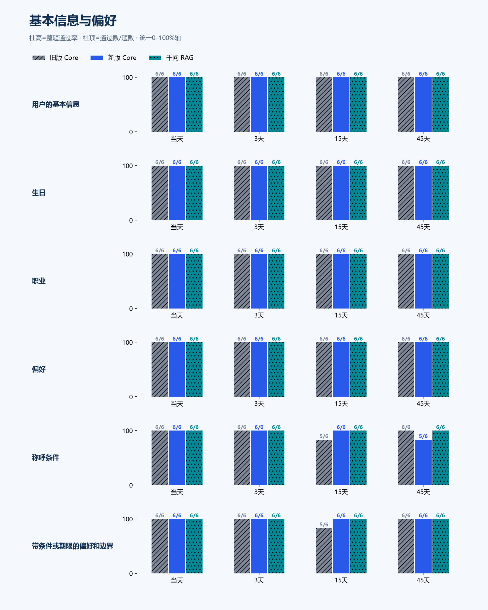
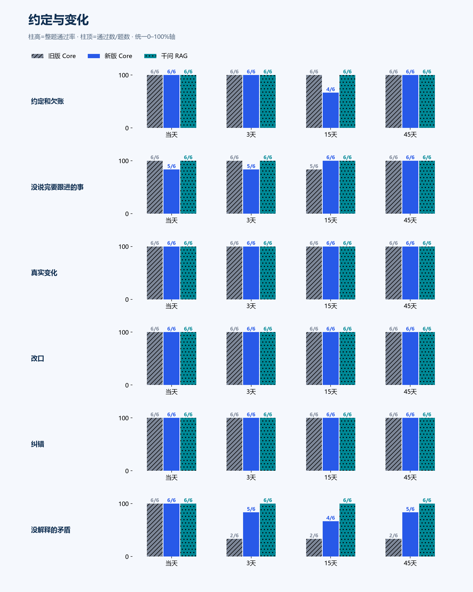
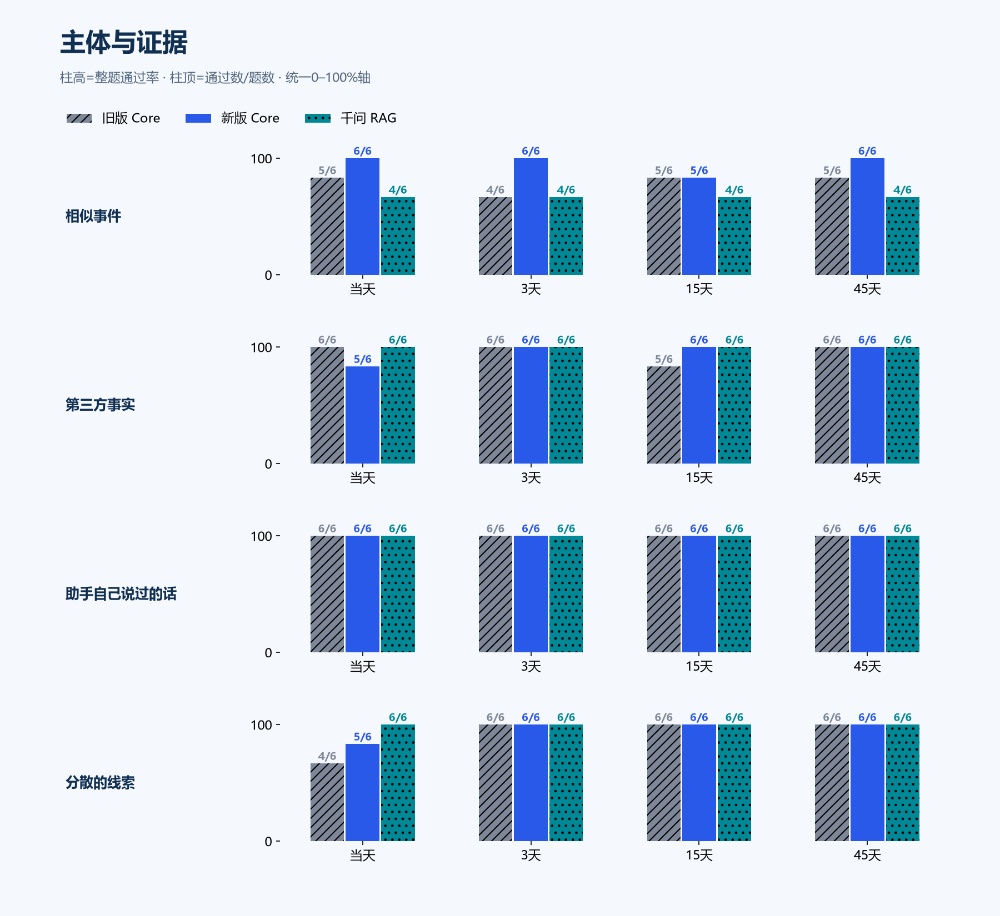
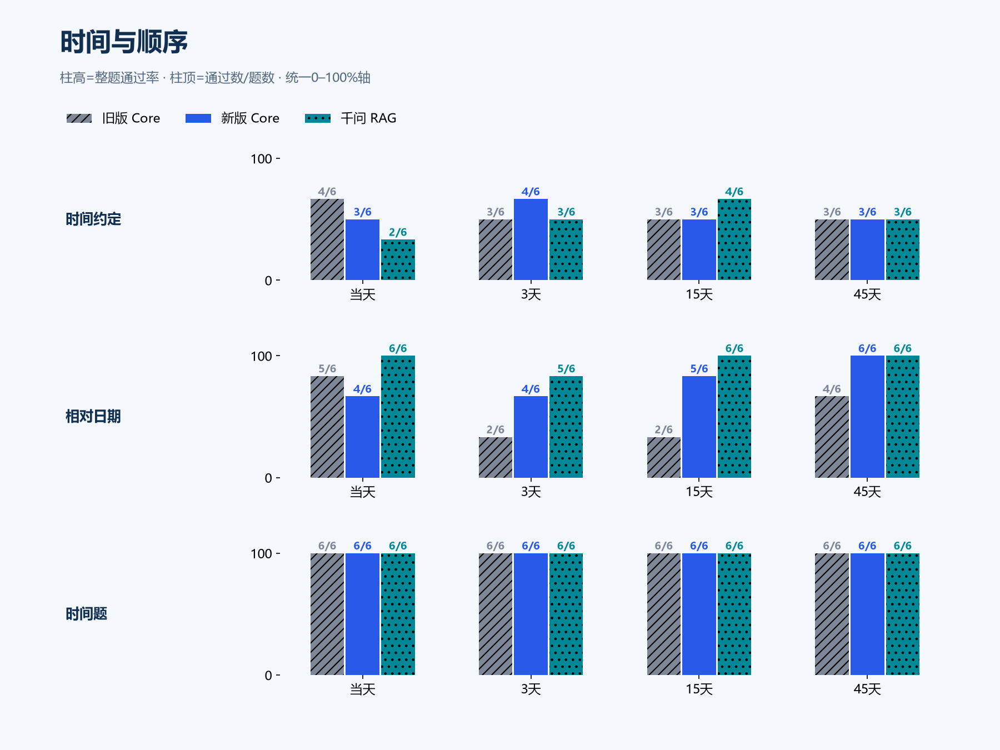
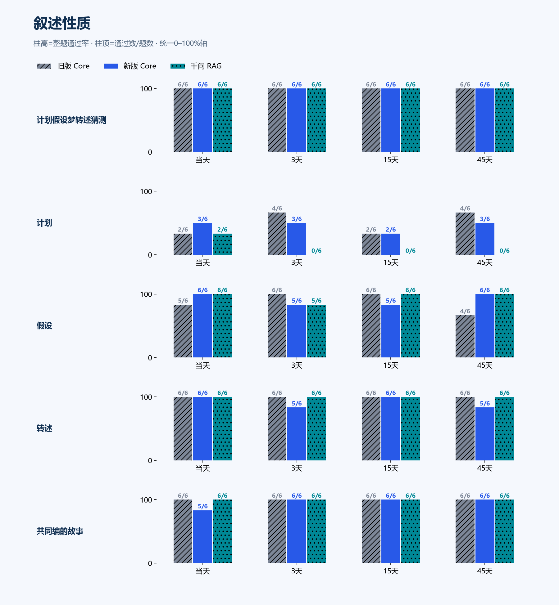
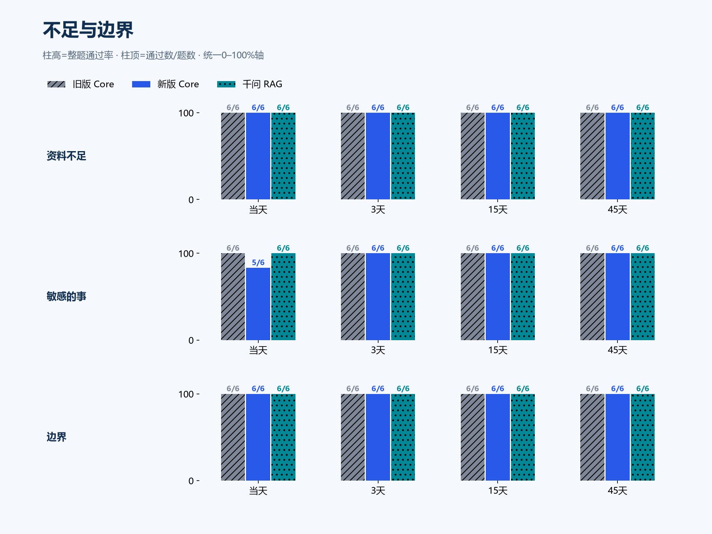
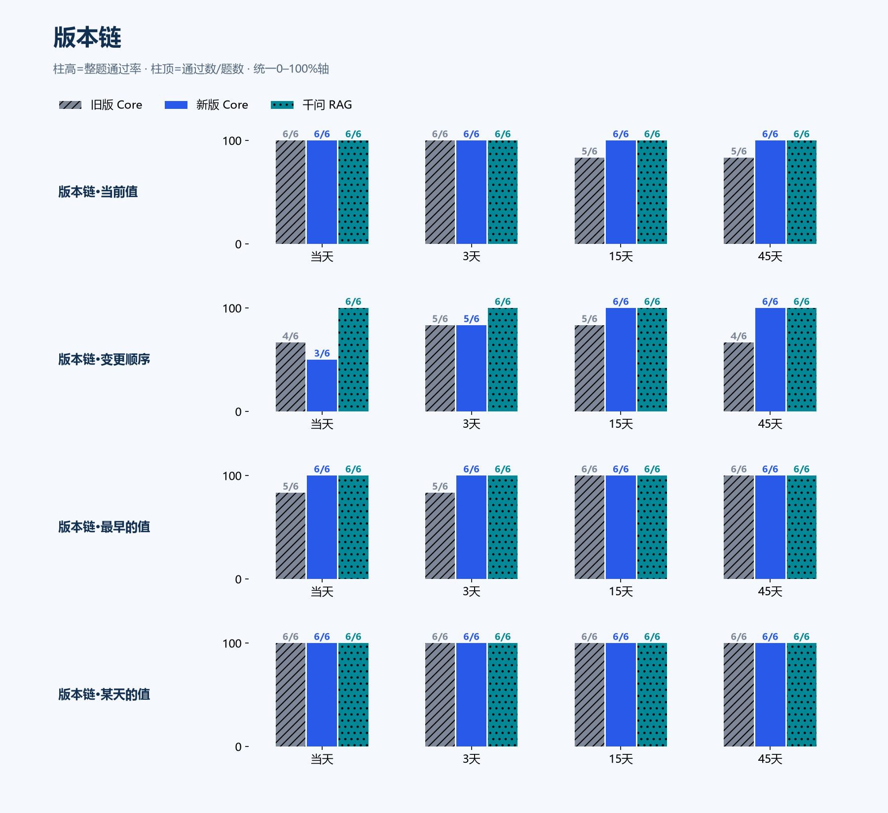
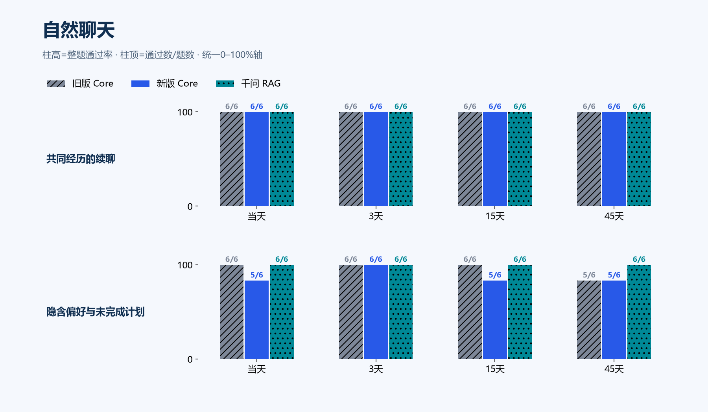

memory-accuracy-v6-final-20261104
792题 × 旧版 / 新版 / 千问RAG / 闭卷对照 · 判卷 grading
旧版 Core91.0%721/792 · 执行失败 0
新版 Core93.2%738/792 · 执行失败 0
千问 RAG94.4%748/792 · 执行失败 0
新版较旧版 +2.15 个百分点；配对：{'both_pass': 690, 'gain': 48, 'loss': 31, 'both_fail': 23}。DeepSeek ¥36.76/¥80，千问 ¥38.29/¥80（保守估算）。复核 766 份，改判 98 份，由同一助手复核。
结论与证据
本轮支持继续做真实聊天验证，尚不能证明新版整体更强。复核后净增17题、+2.15个百分点；事实组与人物聚类区间都包含零。千问RAG仍高于新版；合成自然聊天48题从47题通过降至45题。
比较冻结的旧版86aa9e46与修复版7074838d；全部回答先冻结，再由固定盲判三票评判。以下为叠加同一助手复核后的结果，原始判分和每条改判理由均保留。
最终交付源码为8e91e276：另修了“原文已选入首请求，但工具续接后丢失转述人”的确定性缺陷。复用既有来源组标记，无新模型或协议；已通过合成定向检查，没有重跑此题答案或整轮评测。补修验证回执
| 范围 | 实例 / 事实组 | 旧版 | 新版 | RAG | 变为通过 / 未通过 |
|---|
| 全部 | 792 / 180 | 91.04% | 93.18% | 94.44% | +48 / −31 |
| 排除C17语音 | 768 / 174 | 92.19% | 94.40% | 95.83% | +45 / −28 |
| 版本链四视角 | 96 / 6 | 89.58% | 95.83% | 100.00% | +8 / −2 |
| 除版本链 | 696 / 174 | 91.24% | 92.82% | 93.68% | +40 / −29 |
| 合成自然聊天 | 48 / 12 | 97.92% | 93.75% | 100.00% | +1 / −3 |
按180个事实组进行配对聚类自助抽样（固定种子，20,000次）：新版减旧版的探索性95%区间为-0.60至+5.18个百分点。人物和模板仍相关，不能据此推断总体因果效应。
按6个人物进行配对聚类自助抽样（固定种子，20,000次）：新版减旧版的探索性95%区间为-0.51至+5.30个百分点。人物和模板仍相关，不能据此推断总体因果效应。
RAG使用千问向量与重排，再使用同一个DeepSeek生成器；闭卷对照无材料。自然聊天48次提问来自12组新编故事，真实主人聊天仍待实际交互。
原始判分、复核与边界
| 臂 | 原始三票多数 | 同一助手复核后 |
|---|
| 旧版 Core | 714/792 · 90.15% | 721/792 · 91.04% |
| 新版 Core | 732/792 · 92.42% | 738/792 · 93.18% |
| 千问 RAG | 746/792 · 94.19% | 748/792 · 94.44% |
| 闭卷对照 | 33/792 · 4.17% | 28/792 · 3.54% |
复核766份，改判98份；包括固定选择、任意一票锚失败或未决项，以及全部四臂的C03/C12。复核者也是题库作者和修复者，属于同一助手审阅。三票为DeepSeek/DeepSeek/Qwen，两个DeepSeek投票并不独立。三票曝光锚准确率分别78.25%、76.54%、79.01%，均过预定门槛；不能据此保证每题正确。
C03题干已给出单位，回答职位即可满足语义；所有臂统一处理。C12把“未确认仍按后值为准”视作消解冲突，是较严解释；冻结文字只明确禁止宣告前值作废，较宽解释可能通过。全部C12均复核，以下同时列出恢复该类原始多数票的结果。C17猜测性名称存在判分边界，保留原多数票并报告预注册非C17子集。边界与原回答
作者缺陷与事后敏感性
题库由我编写，发现两处命名错误：C13题干“霜叶清册”与图片“榆叶工具清册”不一致；C21“岚屿交流函”的后续却写成“星屿那封”，没有明确同一关系。各影响24个实例。C18另24题的语音自述今天3月21日，但入站日期3月30日，时间锚不清。下面统一应用到所有臂，属于事后分析，主分数仍保留792题。题目审计
| 事后范围 | 题数 | 旧版 | 新版 | RAG | 差值95%区间 / pp |
|---|
| 排除C13/C21命名错误 | 744 | 92.74% | 94.62% | 98.12% | -0.72 至 +4.76 |
| 再排除C18时间歧义 | 720 | 94.03% | 95.14% | 98.19% | -1.29 至 +3.83 |
| 再排除C17真实ASR | 696 | 95.40% | 96.55% | 99.86% | -1.29 至 +3.89 |
| 仅排除C12争议类 | 768 | 92.32% | 93.49% | 94.27% | -1.34 至 +3.97 |
| 仅C12恢复原多数票 | 792 | 92.55% | 93.69% | 94.44% | -1.32 至 +3.84 |
所有这些区间仍包含零。C22“借某人”未限定借入/借出，C24必需项未明确搭档归属，C26只测回答不复述，均限制结论；通过率不能认证这些能力。全部输入、答案及原始判分保留，不用有利子集替代主结果。
漏存、失败恢复与剩余错误
原生批次失败审计事件：旧版12次、新版37次，这是失败尝试数，不能当终态失败批次数。新版有2个保留的FAILED批次（共4个候选），来源证明和已结算请求均保留，恢复计数为0；六个人物当前检查点均完成。本轮没有调用显式恢复，不能宣称测得恢复成功率。恢复API的有界、UNKNOWN和擦除合同由合成入口/独立worker测试验证。只读失败诊断
严格审查输出仍有无效关系：旧版10次（7个格式、3个引用错误），新版16次（7个格式、9个替换引用错误）；新版并未降低这类失败次数。启发式“所有可检查字段在提示中”是旧版91.9%、新版92.8%，有236项标准无法词串检查，该数不是语义召回率或完整入库率。
X06-C23/d03：确定性上下文丢失：原请求有转述人，工具续接后原文组被裁掉。已另行合成修复，不重算冻结分数。X05-C14/d00：最终请求仍有否定归属，回答却混淆主人与朋友的弟弟；属于回答生成错误。X03-C07/d15：原始数值已在请求中，回答算87而正确差值90；属于计算生成错误。X03-C30/d45：最后请求仍有未选中状态，但回答没有保留；不能归因为来源未进上下文。X01-C26/d00：复述了被要求不要再说的合成暗号；本题仅测试输出不复述，不能认证存储擦除。
逐请求来源计数与回答；剩余生成错误保留，本轮没有针对答案加特判。
DeepSeek含主账与冒烟合计¥36.7587/¥80（主账¥36.6323/¥79，冒烟¥0.1265/¥1）；千问¥38.2903/¥80。包含各臂、判官、有界锚重试及不确定请求，按保守费率估算，未核供应商发票。
首个冻结候选af3c1869做了唯一一次仓库全量检查：10,361通过、60跳过、17失败；17项均在后续定向检查通过。最终7074838d的规范键/历史、SDK、配置与入口定向检查分别通过62、67、85项；评测后补修8e91e276另通过90项相关检查和200项文档检查，未再运行全量。独立worker和真实HTTP入口的失败恢复合成检查通过。本报告未执行生产发布或真实QQ聊天验收。
展开锚点、逐字核对与完整分层诊断
无资料对照：闭卷对照 28/792。去掉对照组能答对的题后：旧版 Core 693/764；新版 Core 711/764；千问 RAG 720/764。
锚点 vote-1：准确率 78.2%，多数类基线 50.7%，作废批次 327/846，通过。
锚点 vote-2：准确率 76.5%，多数类基线 50.8%，作废批次 409/976，通过。
锚点 vote-3：准确率 79.0%，多数类基线 51.2%，作废批次 293/779，通过。
逐字核对：旧版 Core 440/528（与终判不一致 82）；新版 Core 455/528（与终判不一致 86）；千问 RAG 501/528（与终判不一致 30）
分层 chain_len（旧/新/RAG）：2: 16/16 / 16/16 / 16/16；3: 15/16 / 15/16 / 16/16；4: 26/32 / 32/32 / 32/32；5: 13/16 / 14/16 / 16/16；6: 16/16 / 15/16 / 16/16
分层 interference（旧/新/RAG）：none: 48/48 / 47/48 / 48/48；relayed: 38/48 / 45/48 / 48/48
分层 primary_topic（旧/新/RAG）：假设: 21/24 / 22/24 / 23/24；偏好: 24/24 / 24/24 / 24/24；共同经历的续聊: 24/24 / 24/24 / 24/24；共同编的故事: 24/24 / 23/24 / 24/24；分散的线索: 22/24 / 23/24 / 24/24；助手自己说过的话: 24/24 / 24/24 / 24/24；带条件或期限的偏好和边界: 23/24 / 24/24 / 24/24；改口: 24/24 / 24/24 / 24/24；敏感的事: 24/24 / 23/24 / 24/24；时间约定: 13/24 / 13/24 / 12/24；时间题: 24/24 / 24/24 / 24/24；没解释的矛盾: 12/24 / 20/24 / 24/24；没说完要跟进的事: 23/24 / 22/24 / 24/24；版本链: 86/96 / 92/96 / 96/96；生日: 24/24 / 24/24 / 24/24；用户的基本信息: 24/24 / 24/24 / 24/24；相似事件: 19/24 / 23/24 / 16/24；相对日期: 13/24 / 19/24 / 23/24；真实变化: 24/24 / 24/24 / 24/24；称呼条件: 23/24 / 23/24 / 24/24；第三方事实: 23/24 / 23/24 / 24/24；纠错: 24/24 / 24/24 / 24/24；约定和欠账: 24/24 / 22/24 / 24/24；职业: 24/24 / 24/24 / 24/24；计划: 12/24 / 11/24 / 2/24；计划假设梦转述猜测: 24/24 / 24/24 / 24/24；资料不足: 24/24 / 24/24 / 24/24；转述: 24/24 / 22/24 / 24/24；边界: 24/24 / 24/24 / 24/24；隐含偏好与未完成计划: 23/24 / 21/24 / 24/24
分层 relayed（旧/新/RAG）：False: 48/48 / 47/48 / 48/48；True: 38/48 / 45/48 / 48/48
基本信息与偏好

约定与变化

主体与证据

时间与顺序

叙述性质

不足与边界

版本链

自然聊天

逐题
X01-C01/d00 用户的基本信息 · 0天 ✓ / ✓ / ✓
还记得我的全名和老家吗？
旧版 Core 通过
记得呀，白栖，老家云川。
信封上写的这个名字，我可没忘。
复核：白栖与云川正确，未混同鲁苒。
新版 Core 通过
白栖啊，我怎么会忘
老家云川，信封上写的那个
还是鲁苒寄给你的那封
千问 RAG 通过
记得：你的全名是**白栖**，老家在**云川**。这是你 2026-01-21 告诉我的。
闭卷对照 未通过
没有可依据的历史记录，我目前不知道你的全名和老家，无法确认。你可以直接告诉我。
必须满足：主人叫白栖；老家在云川
禁止：主人叫鲁苒
X01-C01/d03 用户的基本信息 · 3天 ✓ / ✓ / ✓
还记得我的全名和老家吗？
旧版 Core 通过
记得呀，白栖，云川的。
怎么突然考我，怕我忘了？
新版 Core 通过
记得啊，信封上写的就是白栖，老家云川。
不过全名我还真不知道，你只跟我说过“白栖”这两个字。
姓什么你没讲过吧？
千问 RAG 通过
记得：你是白栖，老家在云川。
不过资料里只明确写了“白栖”，没有说明这是否为全名。
闭卷对照 未通过
抱歉，我这里没有可用的历史对话或资料，无法得知你的全名和老家。
必须满足：主人叫白栖；老家在云川
禁止：主人叫鲁苒
X01-C01/d15 用户的基本信息 · 15天 ✓ / ✓ / ✓
还记得我的全名和老家吗？
旧版 Core 通过
记得，白栖，老家云川。
刚还跟我说正式场合要用白栖，聊天时才是小栖。
新版 Core 通过
白栖，云川的。
叫我小栖就行，这个我记着呢。
千问 RAG 通过
记得：你的全名是白栖，老家在云川。
闭卷对照 未通过
目前没有可用的历史记录，我无法确认你的全名和老家。你可以直接告诉我，或说明是否允许我记录。
必须满足：主人叫白栖；老家在云川
禁止：主人叫鲁苒
X01-C01/d45 用户的基本信息 · 45天 ✓ / ✓ / ✓
还记得我的全名和老家吗？
旧版 Core 通过
白栖啊，老家云川的
平时聊天我就喊你小栖
对了，今天不是你自己给自己放假的日子嘛，生日呢
新版 Core 通过
白栖呀，老家云川。聊天里叫你小栖嘛。
对了，今天你生日，给自己放一天假了吧。
千问 RAG 通过
记得：你的全名是 **白栖**，老家在 **云川**。
闭卷对照 未通过
我目前没有可依据的历史信息，无法确认你的全名和老家。你愿意告诉我吗？
必须满足：主人叫白栖；老家在云川
禁止：主人叫鲁苒
X01-C02/d00 生日 · 0天 ✓ / ✓ / ✓
我的生日是几月几日？你知道出生年份吗？
旧版 Core 通过
3月8日，你自己给自己放假那天。
出生年份你没说，我也不瞎猜。
新版 Core 通过
3月8号呀，你自己给自己放假那天。
年份你没跟我说过，只说了先不提，我就不知道了。
复核：生日3月8日，出生年份未透露，不补年份。
千问 RAG 通过
你的生日是 **3月8日**。出生年份我不知道，你之前明确说“先不说了”。
闭卷对照 未通过
我不知道你的生日是几月几日，也不知道你的出生年份。当前没有可用的历史对话或资料能提供这些信息。
必须满足：生日3月8日；出生年份未知
禁止：补写出生年份
X01-C02/d03 生日 · 3天 ✓ / ✓ / ✓
我的生日是几月几日？你知道出生年份吗？
旧版 Core 通过
3月8号呀，你说那天会给自己放一天假。
出生年份你没说，我也没打算追问。
复核：生日3月8日与未透露出生年份均明确，未补写年份。
新版 Core 通过
3月8日，你每年给自己放一天假那天，我记得。
出生年份你没跟我说过，我就不乱猜了。
千问 RAG 通过
你的生日是 **3月8日**；出生年份我不知道，因为你说过“出生年就先不说了”。
闭卷对照 未通过
我不知道你的生日是几月几日，也不知道你的出生年份。当前对话和检索到的历史中没有相关出生日期信息。
必须满足：生日3月8日；出生年份未知
禁止：补写出生年份
X01-C02/d15 生日 · 15天 ✓ / ✓ / ✓
我的生日是几月几日？你知道出生年份吗？
旧版 Core 通过
3月8号，你那天还给自己放假呢。
出生年份你没说，我也不催，等你想说再说。
复核：生日3月8日与未透露出生年份均明确，未补写年份。
新版 Core 通过
3月8号，你还说那天给自己放一天假当生日过。
出生年你没告诉我，我也没瞎猜。
复核：生日3月8日与未透露出生年份均明确，未补写年份。
千问 RAG 通过
小栖，你的生日是 **3月8日**。出生年份我不知道，你之前说过“先不说了”。
闭卷对照 未通过
我不知道你的生日是几月几日，也不知道你的出生年份。当前可用的历史记录和最近对话中没有提供这些信息。
必须满足：生日3月8日；出生年份未知
禁止：补写出生年份
X01-C02/d45 生日 · 45天 ✓ / ✓ / ✓
我的生日是几月几日？你知道出生年份吗？
旧版 Core 通过
3月8号呀，你说那天给自己放一天假，正好过生日
年份你没说，我也不瞎猜
复核：生日3月8日与未透露出生年份均明确，未补写年份。
新版 Core 通过
3月8号，你说那天会给自己放一天假
年份你没说，我也不瞎猜
今年生日已经过了，那天好好歇着了吗
复核：生日3月8日与未透露出生年份均明确，未补写年份。
千问 RAG 通过
你的生日是 **3月8日**。出生年份未知——你之前明确说过“出生年就先不说了”。
闭卷对照 未通过
我不知道你的生日是几月几日，也不知道出生年份。当前没有相关历史信息可依据。
必须满足：生日3月8日；出生年份未知
禁止：补写出生年份
X01-C03/d00 职业 · 0天 ✓ / ✓ / ✓
我说过在青榆伞坊做的本职工作是什么？别算上后来外出项目的地点。
旧版 Core 通过
纸伞修复师啊，你自己说的，固定的那份。
复核：题干已给定青榆伞坊，纸伞修复师的本职回答语义完整承接该单位。
新版 Core 通过
纸伞修复师啊，你自己说的，固定本职工作。
在青榆伞坊修纸伞。
复核：青榆伞坊纸伞修复师本职正确，题干已给单位时允许语义承接，不强制复述。
千问 RAG 通过
你说过，在青榆伞坊的固定本职工作是**纸伞修复师**。
复核：青榆伞坊纸伞修复师本职正确，题干已给单位时允许语义承接，不强制复述。
闭卷对照 未通过
资料不足：当前没有可核对的历史对话记录，无法确认你在青榆伞坊的本职工作是什么。
复核：通用无资料拒答，没有回答纸伞修复师这项已知本职。
必须满足：本职工作是纸伞修复师；单位是青榆伞坊
禁止：把航运调度算成主人的工作
X01-C03/d03 职业 · 3天 ✓ / ✓ / ✓
我说过在青榆伞坊做的本职工作是什么？别算上后来外出项目的地点。
旧版 Core 通过
是纸伞修复师呀，你自己说的，还特意说过那是固定本职工作。
复核：在题干给定青榆伞坊的语境中回答纸伞修复本职，语义承接单位；未混入外出地点或朋友职业。
新版 Core 通过
纸伞修复师啊，你自己说的，固定的本职工作。
复核：在题干给定青榆伞坊的语境中回答纸伞修复本职，语义承接单位；未混入外出地点或朋友职业。
千问 RAG 通过
你在青榆伞坊的固定本职工作是**纸伞修复师**。
复核：在题干给定青榆伞坊的语境中回答纸伞修复本职，语义承接单位；未混入外出地点或朋友职业。
闭卷对照 未通过
资料中没有找到你关于“在青榆伞坊做的本职工作”的历史陈述，因此无法确认具体是什么。
复核：通用无记录拒答未给纸伞修复师这项已知职业。
必须满足：本职工作是纸伞修复师；单位是青榆伞坊
禁止：把航运调度算成主人的工作
X01-C03/d15 职业 · 15天 ✓ / ✓ / ✓
我说过在青榆伞坊做的本职工作是什么？别算上后来外出项目的地点。
旧版 Core 通过
纸伞修复师啊，你自己说过这是固定本职工作，我还记着呢。
复核：青榆伞坊纸伞修复师本职正确，题干已给单位时允许语义承接，不强制复述。
新版 Core 通过
纸伞修复师啊，这是你的固定本职工作。
复核：题干给定青榆伞坊，纸伞修复师回答承接其本职单位。
千问 RAG 通过
你在青榆伞坊的本职工作是**纸伞修复师**。
复核：青榆伞坊纸伞修复师本职正确，题干已给单位时允许语义承接，不强制复述。
闭卷对照 未通过
现有记录中没有你关于“青榆伞坊本职工作”的陈述，无法确认具体内容。
复核：通用无记录拒答未给纸伞修复师这项已知职业。
必须满足：本职工作是纸伞修复师；单位是青榆伞坊
禁止：把航运调度算成主人的工作
X01-C03/d45 职业 · 45天 ✓ / ✓ / ✓
我说过在青榆伞坊做的本职工作是什么？别算上后来外出项目的地点。
旧版 Core 通过
做纸伞修复呀，你自己说这是固定本职的那份。
复核：在题干给定青榆伞坊的语境中回答纸伞修复本职，语义承接单位；未混入外出地点或朋友职业。
新版 Core 通过
纸伞修复师啊，你自己说过的。
复核：在题干给定青榆伞坊的语境中回答纸伞修复本职，语义承接单位；未混入外出地点或朋友职业。
千问 RAG 通过
你在青榆伞坊的固定本职工作是：纸伞修复师。
复核：在题干给定青榆伞坊的语境中回答纸伞修复本职，语义承接单位；未混入外出地点或朋友职业。
闭卷对照 未通过
提供的资料中没有记录你在青榆伞坊的本职工作，无法判断。
复核：通用无记录拒答未给纸伞修复师这项已知职业。
必须满足：本职工作是纸伞修复师；单位是青榆伞坊
禁止：把航运调度算成主人的工作
X01-C04/d00 偏好 · 0天 ✓ / ✓ / ✓
如果现在替我按惯常口味选饮料，你会选什么？楼下卖完那回换的那杯算口味变了吗？
旧版 Core 通过
榛子拿铁啊，这个我记得。
那次橘皮茶就是救急，卖完才换的，不算你口味变了。
真要给你带，我还是冲着榛子拿铁去。
新版 Core 通过
当然选榛子拿铁，这个才是你的常喝口味。
橘皮茶那回是店里卖完了才临时换的，喝一次补个急，这不算换口味。
真要算变口味，那我可得记你一笔了。
千问 RAG 通过
按惯常口味，现在会选**榛子拿铁**。
楼下卖完那回买的**橘皮茶不算口味变了**，只是缺货时救急喝了一次。
闭卷对照 未通过
目前没有可用的历史记录或最近对话，所以我不知道你的“惯常口味”，也无法确定楼下卖完时换的是哪一杯。因此：
- 现在按惯常口味选什么：未知，不能擅自替你选。
- 那杯算不算口味变：未知；需要知道原来的惯常口味和当时换成的具体饮料才能判断。
必须满足：惯常选榛子拿铁；橘皮茶是一次临时替代，不是口味变更
禁止：惯常偏好已变成橘皮茶
X01-C04/d03 偏好 · 3天 ✓ / ✓ / ✓
如果现在替我按惯常口味选饮料，你会选什么？楼下卖完那回换的那杯算口味变了吗？
旧版 Core 通过
榛子拿铁啊，这还用想。你最合心意的就是它。
橘皮茶那次不过是因为卖完了临时救急，喝一杯顶一下，算不上换口味。
小栖给你选的，还是榛子拿铁。
新版 Core 通过
榛子拿铁啊，别的不用想，就这个。
那次橘皮茶我记着呢，店里卖完了你救急买的，喝一次而已，不算变口味。
早上九点多，正好来一杯。
千问 RAG 通过
现在按惯常口味选：**榛子拿铁**。
楼下卖完那次换的**橘皮茶不算口味变了**，只是临时救急。
闭卷对照 未通过
没有可用的历史记录，我无法得知你的“惯常口味”，因此不能可靠地替你选饮料。
关于“楼下卖完那回换的那杯”：目前也没有那次换杯的具体信息（原来想买什么、换成了什么、你当时的评价），所以无法判断它算不算口味变了。需要你补充这两次选择或当时情况才能回答。
必须满足：惯常选榛子拿铁；橘皮茶是一次临时替代，不是口味变更
禁止：惯常偏好已变成橘皮茶
X01-C04/d15 偏好 · 15天 ✓ / ✓ / ✓
如果现在替我按惯常口味选饮料，你会选什么？楼下卖完那回换的那杯算口味变了吗？
旧版 Core 通过
榛子拿铁啊，你常喝的，我不用想就选这个。
橘皮茶那次就是卖完了临时救急，哪算改口味，你心里那杯一直是榛子拿铁。
新版 Core 通过
榛子拿铁，这个我不用犹豫
那杯橘皮茶是卖完了临时救急，不算你换口味，我记的榛子拿铁没变
千问 RAG 通过
按惯常口味，我会选**榛子拿铁**。楼下卖完那次换的**橘皮茶不算口味变**，只是救急一次；你的常喝选择仍是榛子拿铁。
另外，若当前属于“青霜排演周”，则按你设定的条件：有排演的日子只喝热麦茶，没有排演的日子可以喝鲜奶；但现有信息未说明现在是否在排演周。
闭卷对照 未通过
我没有你“惯常口味”的记录，也没有“楼下卖完那回换的那杯”是哪杯的信息，所以现在不能替你选饮料，也无法判断那杯算不算口味变了。需要你补充：平时常喝什么、那次换成了什么。
必须满足：惯常选榛子拿铁；橘皮茶是一次临时替代，不是口味变更
禁止：惯常偏好已变成橘皮茶
X01-C04/d45 偏好 · 45天 ✓ / ✓ / ✓
如果现在替我按惯常口味选饮料，你会选什么？楼下卖完那回换的那杯算口味变了吗？
旧版 Core 通过
榛子拿铁啊，这还用犹豫
那杯橘皮茶就是卖完了随手救个急，算什么变口味
你心里那口还是榛子的
新版 Core 通过
榛子拿铁啊，这个不用想。
那回是卖完了才拿橘皮茶顶一下，救急的，不算口味变了。
千问 RAG 通过
按你惯常口味，我会选**榛子拿铁**。
楼下那回因为榛子拿铁卖完才买的**橘皮茶**，你已说明是“喝一次救急而已”，所以**不算口味变了**。
另外，若现在正处于“青霜排演周”，还要按当时规则区分有排演喝热麦茶、无排演可喝鲜奶；目前资料没说明现在是否在该排演周。
闭卷对照 未通过
资料不足：我没有你惯常口味和“楼下卖完那回换的那杯”的记录，因此无法替你选饮料，也无法判断那次换杯是否算口味变化。请补充你常喝的饮料或当时换成了什么。
必须满足：惯常选榛子拿铁；橘皮茶是一次临时替代，不是口味变更
禁止：惯常偏好已变成橘皮茶
X01-C05/d00 称呼条件 · 0天 ✓ / ✓ / ✓
私下聊天和给青榆伞坊的正式介绍里，该分别怎么叫我？
旧版 Core 通过
私下我就叫你小栖。
给伞坊写正式介绍的时候，我会用白栖。
新版 Core 通过
私下里叫你小栖啊，叫习惯了都
正式那些地方就写白栖，正经场合得用大名
这俩我分得清，不会写串
千问 RAG 通过
私下聊天时叫你**小栖**；写给青榆伞坊的正式介绍里用**白栖**。
闭卷对照 未通过
现有资料不足，无法确定你在私下聊天和给青榆伞坊正式介绍中的分别称呼。请提供这两个场景下希望使用的名字或头衔。
必须满足：私下叫小栖；正式介绍叫白栖
禁止：把私昵称呼用于正式介绍
X01-C05/d03 称呼条件 · 3天 ✓ / ✓ / ✓
私下聊天和给青榆伞坊的正式介绍里，该分别怎么叫我？
旧版 Core 通过
私下就小栖呀，咱们俩说话的时候不用那么正式。
给青榆伞坊写正式介绍的话用白栖。
新版 Core 通过
私下聊天叫我小栖就行，是我们俩之间的叫法。
写给青榆伞坊的正式介绍就用白栖，那个是正经场合的名字。
千问 RAG 通过
私下聊天叫“小栖”；给青榆伞坊的正式介绍用“白栖”。
闭卷对照 未通过
资料不足：当前没有可用的历史记录或最近对话，无法确定你私下聊天和给“青榆伞坊”正式介绍时分别该怎么称呼。请补充你之前设定的称呼规则。
必须满足：私下叫小栖；正式介绍叫白栖
禁止：把私昵称呼用于正式介绍
X01-C05/d15 称呼条件 · 15天 ✓ / ✓ / ✓
私下聊天和给青榆伞坊的正式介绍里，该分别怎么叫我？
旧版 Core 通过
私下里叫我小栖就行。
写给青榆伞坊的正式介绍要用白栖，别写混了。
两种叫法我都应，只是场合不一样。
新版 Core 通过
私底下当然叫小栖，这个我哪能记混
写给青榆伞坊的正式介绍就用白栖，正经场合嘛
千问 RAG 通过
私下聊天叫你**小栖**；给青榆伞坊的正式介绍里用**白栖**。
闭卷对照 未通过
现有历史记录里没有你的称呼设定，因此无法判断私下聊天和给青榆伞坊的正式介绍应分别怎么叫你。请补充这两个场景下你希望使用的称呼。
必须满足：私下叫小栖；正式介绍叫白栖
禁止：把私昵称呼用于正式介绍
X01-C05/d45 称呼条件 · 45天 ✓ / ✓ / ✓
私下聊天和给青榆伞坊的正式介绍里，该分别怎么叫我？
旧版 Core 通过
私下就叫你小栖
正式写给青榆伞坊的东西，署名得用白栖
这个分得挺细的，我记着呢
新版 Core 通过
私下就小栖啊，叫惯了
写给青榆伞坊的正式介绍得用白栖，这个我一直记着
千问 RAG 通过
私下聊天叫你**小栖**；写给青榆伞坊的正式介绍里用**白栖**。
闭卷对照 未通过
目前没有可用的历史记录或对话内容，无法判断你设定的称呼。
所以私下聊天和给青榆伞坊的正式介绍里分别该怎么叫你：**未知**。请告诉我这两个场景各自要用的称呼。
必须满足：私下叫小栖；正式介绍叫白栖
禁止：把私昵称呼用于正式介绍
X01-C06/d00 带条件或期限的偏好和边界 · 0天 ✓ / ✓ / ✓
按青霜排演周那时的规则，休息日下午可以准备什么，排演日晚上八点还能加餐吗？这个要求何时结束？
旧版 Core 通过
休息日没有排演，下午可以备鲜奶，这个没被禁。
排演日晚上八点不行，七点半就断了，休息日也一样。
过了这周就结束，忍到周末。
复核：休息日下午鲜奶、晚上七点半后不加餐饮及仅排演周有效均满足。
新版 Core 通过
休息日的话下午能喝鲜奶，热麦茶也没拦着，起码七点半之前都行。
排演日晚上八点就不行了，七点半那条线过了，休息日也一样。
到周末过完，这排演周就算完了，你一撤规矩我就当没了。
千问 RAG 通过
按记录：
- **休息日（没有排演的日子）下午**：可以准备**鲜奶**（规则允许吃喝鲜奶）；有排演的日子则只喝**热麦茶**。
- **排演日晚上八点**：不能加餐。青霜排演周内每天**过了晚上七点半**就不加餐饮，休息日也一样。
- **结束时间**：这项要求“**过了青霜排演周这一周**”就结束；但历史里没有说明青霜排演周具体是哪一周、何时结束，所以无法确定具体日期。
闭卷对照 未通过
资料不足，无法确定“青霜排演周”当时的规则，因此不能回答：休息日下午可以准备什么、排演日晚上八点是否还能加餐，以及该要求何时结束。请提供相关历史记录。
必须满足：休息日下午可准备鲜奶；晚上八点不再加餐饮；只限青霜排演周，周结束要求结束
禁止：说休息日晚上可以加餐；说永久适用
X01-C06/d03 带条件或期限的偏好和边界 · 3天 ✓ / ✓ / ✓
按青霜排演周那时的规则，休息日下午可以准备什么，排演日晚上八点还能加餐吗？这个要求何时结束？
旧版 Core 通过
休息日下午要是没排演，就给你准备鲜奶呗。
排演日晚上八点不行，早过了七点半那条线了，休息日也一样卡着。
结束时间是2月11号起那周过完就结束，具体哪天我没记那么死，反正今天还在那周里头。
所以今晚七点半以后也别想着加餐啊。
复核：休息日下午鲜奶、晚上七点半后不加餐饮及仅排演周有效均满足。
新版 Core 通过
休息日可以备鲜奶，热麦茶是排演日才喝的。
排演日晚上八点就别想了，七点半之后就不加了，休息日也不加。
这周过完就结束，算下来明天15号过完，后天就不用守这个规矩了。
千问 RAG 通过
- 休息日（没有排演的日子）下午可以准备**鲜奶**，按规则可吃喝鲜奶。
- 排演日晚上八点**不能加餐**：规则是每天过了晚上七点半就不加餐饮，休息日也一样。
- 这个要求到**青霜排演周结束、过完这一周**就结束；具体结束日期历史中未说明。
闭卷对照 未通过
未提供“青霜排演周”的相关规则或历史证据，因此无法确认：
- 休息日下午可以准备什么；
- 排演日晚上八点能否加餐；
- 该要求何时结束。
以上均属未知。
必须满足：休息日下午可准备鲜奶；晚上八点不再加餐饮；只限青霜排演周，周结束要求结束
禁止：说休息日晚上可以加餐；说永久适用
X01-C06/d15 带条件或期限的偏好和边界 · 15天 ✓ / ✓ / ✓
按青霜排演周那时的规则，休息日下午可以准备什么，排演日晚上八点还能加餐吗？这个要求何时结束？
旧版 Core 通过
那会儿的规矩我记得：休息日不排演，可以吃喝鲜奶，下午准备鲜奶就行。
排演日晚上八点？不行，过了七点半就不给加餐了，休息日也一样。
这规矩就管青霜排演那一周，那一周过完，到二月十五号左右就结束了。今天都二十六号了，早不受它管了。
新版 Core 通过
休息日（没有排演的日子）是可以吃喝鲜奶的，热麦茶是留给有排演那几天的，下午没别的特别规定。
排演日晚上八点不行，七点半以后就不给加餐饮了，休息日也一样。
这个要求是2月11号你说的那周过完就结束，早就过去了，现在不用管了。
千问 RAG 通过
按当时规则：
- **休息日（没有排演的日子）**：可以准备/吃喝**鲜奶**。
- **排演日晚上八点**：**不能加餐**，因为青霜排演周每天过了**晚上七点半**就不加餐饮，休息日也一样。
- **结束时间**：这些要求到**青霜排演周结束、过了这一周**就结束；具体日历日期历史中没有说明。
复核：休息日下午鲜奶、晚上七点半后不加餐饮及仅排演周有效均满足。
闭卷对照 未通过
资料不足：当前没有可依据的历史证据或最近对话，无法确认“青霜排演周”的规则，因此不能判断休息日下午可以准备什么、排演日晚上八点是否还能加餐，以及该要求何时结束。以上均未知。
必须满足：休息日下午可准备鲜奶；晚上八点不再加餐饮；只限青霜排演周，周结束要求结束
禁止：说休息日晚上可以加餐；说永久适用
X01-C06/d45 带条件或期限的偏好和边界 · 45天 ✓ / ✓ / ✓
按青霜排演周那时的规则，休息日下午可以准备什么，排演日晚上八点还能加餐吗？这个要求何时结束？
旧版 Core 通过
休息日下午可以备鲜奶，那天没排演就不喝热麦茶，这条管的是有排演的日子
排演日晚上八点不行，七点半一过就不加餐饮了，休息日也一样
这规矩只在起于2月11日那一周排演周里有效，早就结束了
新版 Core 通过
休息日没有排演，按那会儿的说法是可以吃喝鲜奶的
晚上八点不行，七点半以后就不给加餐了，休息日也一样
不过这规矩说的是青霜排演周，过完那一周就结束了，都是二月的事了
千问 RAG 通过
按当时记录：
- **休息日（没有排演的日子）**：可以吃喝**鲜奶**；下午可准备鲜奶。规则没有单独限定“下午”，只按有无排演区分。
- **排演日晚上八点**：**不能加餐**。因为青霜排演周每天过了晚上七点半就不给加餐饮，休息日也一样。
- **结束时间**：这项要求“过了这一周就结束”，即**青霜排演周结束后结束**；具体日期历史资料未给出。
闭卷对照 未通过
资料不足：当前没有“青霜排演周”相关历史规则，无法确认休息日下午可准备什么、排演日晚上八点能否加餐，以及该要求何时结束。
必须满足：休息日下午可准备鲜奶；晚上八点不再加餐饮；只限青霜排演周，周结束要求结束
禁止：说休息日晚上可以加餐；说永久适用
X01-C07/d00 约定和欠账 · 0天 ✓ / ✓ / ✓
榆星义卖的垫付款是谁欠谁，已还多少，还欠多少？
旧版 Core 通过
你欠鲁苒的，义卖物料款她先替你垫了，一共111。
昨天已经转还她37了。
还剩74没给，你说等周末给。
新版 Core 通过
是主人欠鲁苒的钱，她先替主人垫了物料款，一共111。
到今早你转回去37，还剩74没给，说等周末再给。
千问 RAG 通过
榆星义卖的物料款是鲁苒先替主人垫付的，所以是**主人欠鲁苒**。
总额 **111 元**，已转还 **37 元**，还剩 **74 元**未还，计划周末给。
闭卷对照 未通过
未提供关于“榆星义卖”垫付款的历史证据，因此无法确定：谁欠谁、已还多少、还欠多少。以上均为未知。
必须满足：主人欠鲁苒；已还37元；仍欠74元
禁止：说已全部结清；颠倒债务方向
X01-C07/d03 约定和欠账 · 3天 ✓ / ✓ / ✓
榆星义卖的垫付款是谁欠谁，已还多少，还欠多少？
旧版 Core 通过
你欠鲁苒的，她先替你垫了榆星义卖的物料款。
原来111，2月15号你还了37，还剩74没给，说好等周末给。
这几天过去了还没动静吧，别又拖忘了。
新版 Core 通过
鲁苒先帮你垫的物料款，你欠她111元。
后来你还了37元，剩74元。
你说等周末给，按上次的话还没给，现在到底给了没我这边没新消息。
千问 RAG 通过
榆星义卖物料款是**主人欠鲁苒**。
- 最初垫付：111元
- 已转还：37元
- 按记录还欠：111 − 37 = **74元**
截至最后相关记录（2026-02-15），剩余部分“等周末给，还没给”；之后没有新的还款记录，因此是否已还未知。
闭卷对照 未通过
现有历史资料为空，无法确定榆星义卖垫付款的债权债务关系、已还金额及剩余欠款。请补充相关记录。
必须满足：主人欠鲁苒；已还37元；仍欠74元
禁止：说已全部结清；颠倒债务方向
X01-C07/d15 约定和欠账 · 15天 ✓ / ✓ / ✓
榆星义卖的垫付款是谁欠谁，已还多少，还欠多少？
旧版 Core 通过
鲁苒先替你垫了榆星义卖的物料款，所以是你欠她的。
原本111，2月15号你转了37，剩下74还没给，说要等周末。
后来那个周末到底给没给，我这边没听你说过，你给我个准话呗。
新版 Core 通过
是主人欠鲁苒，榆星义卖物料钱她先帮你垫的。
原来111，你已经转还37，还剩74。
不过你2月15号说周末给，这都过两个周末了，我一直没听你提起过这笔，所以到底是还清了还没还，我这边没收到新消息。
千问 RAG 通过
据历史记录：**主人欠鲁苒**榆星义卖物料垫付款。原本欠 **111 元**；截至 2026-02-15 已转还 **37 元**，还欠 **74 元**，当时说剩余部分等周末给、尚未给。之后没有新的还款记录。
闭卷对照 未通过
没有可依据的历史记录（检索历史与最近对话均为空），无法确定榆星义卖垫付款的欠款人、已还金额和剩余欠款。请提供相关对话或账目记录。
必须满足：主人欠鲁苒；已还37元；仍欠74元
禁止：说已全部结清；颠倒债务方向
X01-C07/d45 约定和欠账 · 45天 ✓ / ✓ / ✓
榆星义卖的垫付款是谁欠谁，已还多少，还欠多少？
旧版 Core 通过
你欠鲁苒的，榆星义卖物料款，她先替你垫了111元。
2月15号你转还了37，剩下74没给，说等周末给。
后来周末给没给，你就没再提过，我这儿还挂着74。
新版 Core 通过
你欠鲁苒的呀，一开始是111。
后来你还了37，所以就剩74没给。
不过那会儿说是等周末给，后来到底给没给我就不清楚了。
千问 RAG 通过
榆星义卖物料款是**主人欠鲁苒**：原本欠 **111元**；已转还 **37元**；按记录还剩 **74元未还**。之后未见新的还款记录。
闭卷对照 未通过
资料不足，无法确认“榆星义卖”垫付款的债权债务关系，也无法得知已还金额和剩余欠款。
必须满足：主人欠鲁苒；已还37元；仍欠74元
禁止：说已全部结清；颠倒债务方向
X01-C08/d00 没说完要跟进的事 · 0天 ✓ / ✓ / ✓
芦禾研习营这件事到哪一步了，最后的结果知道了吗？
旧版 Core 通过
申请是昨天递出去的，今天早上你说露禾还没回信
所以结果现在还悬着，我这边只知道在等
有信儿了你跟我说一声，我也想第一时间知道
新版 Core 通过
申请是18号投出去的，那会儿你刚发出去
到19号你跟我说那边还没回信，就是让先别替你庆祝那次
所以现在还没结果，我这边也不知道，就等它自己来吧
千问 RAG 通过
芦禾研习营这边：主人在 2026-02-18 已把申请投出去了。
至于结果，2026-02-19 主人只说“露禾那边还没回信”，并说结果出来再说、先别庆祝；此后没有更新，所以最后结果目前未知。
闭卷对照 未通过
目前没有可依据的历史证据或最近对话记录，所以不清楚“芦禾研习营”进行到哪一步，也不知道最终结果。资料不足，无法判断。
必须满足：申请已投出；录取结果未知
禁止：说已录取；说已拒绝
X01-C08/d03 没说完要跟进的事 · 3天 ✓ / ✓ / ✓
芦禾研习营这件事到哪一步了，最后的结果知道了吗？
旧版 Core 通过
二月十八号你投出去的呀，第二天你还说没回信，让我先别急着替你庆祝。
那之后你就没再提过了，结果我是真不知道。
是到了吗？有信儿了也跟我说一声啊。
新版 Core 通过
就我知道的：18号你把申请投出去了，19号你说那边还没回信，让先别庆祝。之后你没再提过。
所以到现在我这儿还是没结果的状态，有新消息了吗？
千问 RAG 通过
芦禾研习营的申请已经投出去了；截至最后记录，对方还没回信，最后结果尚不知道。主人也说过先别替他庆祝。
闭卷对照 未通过
没有可依据的历史记录，无法确认“芦禾研习营”目前进展到哪一步，也不知道最终结果。两项均为未知。
必须满足：申请已投出；录取结果未知
禁止：说已录取；说已拒绝
X01-C08/d15 没说完要跟进的事 · 15天 ✓ / ✓ / ✓
芦禾研习营这件事到哪一步了，最后的结果知道了吗？
旧版 Core 通过
我记得你2月18号说申请已经投出去了
后来2月19号你又说露禾那边还没回信，让我先别替你庆祝
那之后就没消息了，结果我这边一直不知道
昨天下不来？还是还没动静
新版 Core 通过
你2月18号说申请投出去了，之后就没再听你提过回信的事。倒是你那天说结果出来再说、先别替你庆祝，我一直记着呢。
所以现在还是没消息吧？我这边不知道结果，你要是有信儿记得跟我说一声。
千问 RAG 通过
已有记录显示：芦禾研习营的申请已经投出去了；2026-02-19 主人说“露禾那边还没回信，结果出来再说，先别替我庆祝”。此后没有新的结果信息，所以截至现在，最后结果仍未知。
闭卷对照 未通过
没有可依据的历史记录，无法判断“芦禾研习营”进展到哪一步，也不知道最后结果。请补充相关对话或资料。
必须满足：申请已投出；录取结果未知
禁止：说已录取；说已拒绝
X01-C08/d45 没说完要跟进的事 · 45天 ✓ / ✓ / ✓
芦禾研习营这件事到哪一步了，最后的结果知道了吗？
旧版 Core 通过
投出去是2月18号的事，你还特意说了句别急着替你庆祝
后来你说露禾那边还没回信，结果出来再讲，从那之后就没听你提过了
我这儿也没听到结果，是还在等，还是其实已经出了你没说？
新版 Core 通过
我知道的就是二月十八号你把申请投出去了，第二天你说那边还没回信，让我先别替你庆祝。之后的结果我这没记录，你也没跟我说过。
所以现在是已经有消息了？
复核：说明申请已投出、最后未回信且没有已录取或拒绝的更新。
千问 RAG 通过
已知：芦禾研习营的申请在 2026-02-18 已投出；到 2026-02-19 时，“露禾那边还没回信”，主人说结果出来再说、先别庆祝。此后历史中没有再提这件事，所以最后结果目前未知。
闭卷对照 未通过
目前没有可用的历史证据或近期对话记录，无法确认“芦禾研习营”进行到哪一步，也不知道最终结果。需要你补充相关材料或说明来源。
必须满足：申请已投出；录取结果未知
禁止：说已录取；说已拒绝
X01-C09/d00 真实变化 · 0天 ✓ / ✓ / ✓
蒲灯盘点这项短期工作后来实际换地点了吗，最后一次我说已经在哪里盘点？
旧版 Core 通过
换了，就在今天早上你说的，整体搬到云川北库了，还特意说了不是“以后可能搬”。
之前是一直在云川南库。
我这边最后就是应了一声记下，没说过别的地点。
复核：明确盘点任务已实际迁至云川北库并排除未来可能搬的说法，语义回答当时已在北库盘点。
新版 Core 通过
换了。原来在云川南库，后来整体搬到云川北库了。
你今早说的就是今天已经在北库盘点了。
复核：明确盘点任务已实际迁至云川北库并排除未来可能搬的说法，语义回答当时已在北库盘点。
千问 RAG 通过
换了。最后一次你说：蒲灯盘点已经整体换到**云川北库**，你当天就在**云川北库**盘点。
复核：明确盘点任务已实际迁至云川北库并排除未来可能搬的说法，语义回答当时已在北库盘点。
闭卷对照 未通过
现有历史证据为空，无法确认“蒲灯盘点”后来是否实际换地点，也没有你最后一次说“已经在哪里盘点”的记录。
必须满足：已实际换到云川北库；主人当时已在云川北库盘点
禁止：仅说未来计划；仍在云川南库
X01-C09/d03 真实变化 · 3天 ✓ / ✓ / ✓
蒲灯盘点这项短期工作后来实际换地点了吗，最后一次我说已经在哪里盘点？
旧版 Core 通过
换了，南库变成了北库。
最后一次是23号那天，你说人已经在云川北库盘点了，不是以后才搬。
新版 Core 通过
换了，云川北库。2月23号你专门更正过我，说已经整体搬过去，那天就在北库盘点，不是以后可能搬那种。
之后就没再提过这事了，所以最后一次我知道的就是北库。这几天还在那边忙吗
千问 RAG 通过
换了。最后一次你说：蒲灯盘点已整体换到**云川北库**，当天就在**云川北库**盘点。
闭卷对照 未通过
资料不足：当前没有可用的历史记录或最近对话，无法判断蒲灯盘点是否实际换过地点，也无法确认你最后一次说已在哪里盘点。
必须满足：已实际换到云川北库；主人当时已在云川北库盘点
禁止：仅说未来计划；仍在云川南库
X01-C09/d15 真实变化 · 15天 ✓ / ✓ / ✓
蒲灯盘点这项短期工作后来实际换地点了吗，最后一次我说已经在哪里盘点？
旧版 Core 通过
后来改了
原来在云川南库，2月23号你跟我说整个都挪到云川北库了，那天你人已经在北库盘着了，还特意说不是以后才搬
所以最后一次听你说是在云川北库
新版 Core 通过
换过，而且不是“以后可能搬”那种，是已经搬完了
2月22日你跟我说的是云川南库
23日你专门更正了，说盘点整体换到云川北库，当天就在新地方盘，还强调了一句不是说以后可能搬
所以最后一次说的就是云川北库，这条我记的是准的
千问 RAG 通过
换了。最后一次你说蒲灯盘点已整体换到**云川北库**，并且当天就在**云川北库**盘点。
闭卷对照 未通过
资料不足，无法确认“蒲灯盘点”后来是否实际换了地点；也没有历史记录显示你最后一次说已经在哪个地点盘点。
必须满足：已实际换到云川北库；主人当时已在云川北库盘点
禁止：仅说未来计划；仍在云川南库
X01-C09/d45 真实变化 · 45天 ✓ / ✓ / ✓
蒲灯盘点这项短期工作后来实际换地点了吗，最后一次我说已经在哪里盘点？
旧版 Core 通过
换过。最早你说的是云川南库，第二天你专门纠正我，说整体搬到云川北库了，那天你就在北库盘。
所以最后我记下的是云川北库，还是你自己改口的，不是我猜的。
后面还有没有再挪，我就不清楚了。
新版 Core 通过
记得，你2月22号先说的是云川南库
第二天你就纠正我了，说盘点已经整体换到云川北库，当天就在北库盘的，还特意强调不是“以后可能搬”
所以我最后一次听你说的就是云川北库，之后没再听你提过又挪地方
千问 RAG 通过
换了。最后一次你说：蒲灯盘点已经整体换到**云川北库**，你当天就在**云川北库**盘点。
闭卷对照 未通过
现有历史证据为空，无法判断蒲灯盘点后来是否实际换地点，也无法确认你最后一次说“已经在哪里盘点”。需要提供相关对话记录才能核对。
必须满足：已实际换到云川北库；主人当时已在云川北库盘点
禁止：仅说未来计划；仍在云川南库
X01-C10/d00 改口 · 0天 ✓ / ✓ / ✓
晚春手作日我最终报哪一班，原来的选项还报吗？
旧版 Core 通过
木哨班，皮影班不报了
你昨天早上说的，改主意那次
新版 Core 通过
木哨班，皮影班撤了。
昨天还说要玩皮影呢，一晚上就变卦了。
复核：最终木哨班并明确皮影班撤销。
千问 RAG 通过
你最终只报**木哨班**；原来的**皮影班不报**。
（依据：2026-02-27 你说“改主意啦，最后只报木哨班，皮影班就不报”。）
闭卷对照 未通过
资料不足：目前没有可用的历史对话或记录，无法确认你“最终报哪一班”，也无法判断“原来的选项还报不报”。请补充之前的班次选项或相关对话记录。
必须满足：最终报木哨班；不再报皮影班
禁止：最终仍报皮影班
X01-C10/d03 改口 · 3天 ✓ / ✓ / ✓
晚春手作日我最终报哪一班，原来的选项还报吗？
旧版 Core 通过
木哨班啊，皮影班你不是改主意不报了嘛
就报木哨班，别又来回犹豫了
新版 Core 通过
最后只报木哨班，皮影班你那天说就不报了。
千问 RAG 通过
晚春手作日你最终只报了**木哨班**；原来的**皮影班不报了**。
闭卷对照 未通过
资料不足，无法判断你最终报了哪一班，也无法确认原来的选项是否还报。当前没有相关的历史记录或最近对话可供依据。
必须满足：最终报木哨班；不再报皮影班
禁止：最终仍报皮影班
X01-C10/d15 改口 · 15天 ✓ / ✓ / ✓
晚春手作日我最终报哪一班，原来的选项还报吗？
旧版 Core 通过
木哨班啊，皮影班你后来不报了。
新版 Core 通过
木哨班呀
皮影班不报了，你自己改的主意
千问 RAG 通过
晚春手作日你最终只报**木哨班**；原来的**皮影班不报**。
闭卷对照 未通过
没有可依据的历史记录，无法确认你最终报了哪一班，也无法判断原来的选项是否还报。请补充相关对话或报名信息。
必须满足：最终报木哨班；不再报皮影班
禁止：最终仍报皮影班
X01-C10/d45 改口 · 45天 ✓ / ✓ / ✓
晚春手作日我最终报哪一班，原来的选项还报吗？
旧版 Core 通过
木哨班啊，最后就只报了这个。
皮影班当时说不去了，你改主意那回我记着呢。
新版 Core 通过
你后来改主意了，只报木哨班。
皮影班那个就不报了，之前本来想两个都去，后来觉得跑不过来。
千问 RAG 通过
你最终报的是**木哨班**；原来的**皮影班不报**。
闭卷对照 未通过
未知。当前没有可依据的历史证据或最近对话记录，无法确认你最终报的是哪一班，也无法判断原来的选项是否还报。请补充当时的报名信息或选项记录。
必须满足：最终报木哨班；不再报皮影班
禁止：最终仍报皮影班
X01-C11/d00 纠错 · 0天 ✓ / ✓ / ✓
杉羽借物柜用哪个登记号，旧号为何不同？
旧版 Core 通过
RP-92，你今早拍柜牌核对出来的那个。
RQ-82 是当时随手写岔的，不是柜子换了号。
还好你去拍了张牌，不然这一笔一直错着。
新版 Core 通过
用 RP-92，你昨天拍照核对过的那个。
旧的 RQ-82 就是当时随手写错的一笔，不是柜子换过号。
千问 RAG 通过
杉羽借物柜正确登记号是 **RP-92**。旧号 **RQ-82** 是主人随手写错了，不是换了柜子。
闭卷对照 未通过
资料不足，无法确定“杉羽借物柜”使用的登记号，也无法判断旧号为何不同。
必须满足：正确是RP-92；RQ-82是笔误而非另一个柜子
禁止：继续用RQ-82；编造换柜经过
X01-C11/d03 纠错 · 3天 ✓ / ✓ / ✓
杉羽借物柜用哪个登记号，旧号为何不同？
旧版 Core 通过
用RP-92啊，柜牌上拍下来的那个
RQ-82是你当时随手写错了，不是换了柜子
新版 Core 通过
RP-92 呀，正确编号是这个。
之前那个 RQ-82 是主人你随手写错了，不是换了柜子，3月3号你还特意拍了柜牌核对过。
复核：RP-92正确，旧RQ-82为主人笔误而非换柜。
千问 RAG 通过
杉羽借物柜的正确登记号是 **RP-92**。旧号 **RQ-82** 是之前随手写错了，并非换了柜子。
闭卷对照 未通过
资料不足：未提供“杉羽借物柜”的登记号记录或旧号变更说明，无法确定其现用登记号，也无法解释旧号为何不同。
必须满足：正确是RP-92；RQ-82是笔误而非另一个柜子
禁止：继续用RQ-82；编造换柜经过
X01-C11/d15 纠错 · 15天 ✓ / ✓ / ✓
杉羽借物柜用哪个登记号，旧号为何不同？
旧版 Core 通过
用RP-92，那个是你拍柜牌核对过的
旧号RQ-82不是换了柜子，就是当时随手写错了，后来你自己更正过
所以现在登记就按RP-92来
新版 Core 通过
用RP-92。
那个RQ-82是你3月2号自己随手写成那样的，3月3号你拍了柜牌核对过，就是写错了，不是换柜子。
柜牌上现在挂的也是RP-92吧？
千问 RAG 通过
杉羽借物柜的正确登记号是 **RP-92**。旧号 **RQ-82** 是主人先前随手写错的，并非换了柜子；2026-03-03 拍柜牌核对后已更正。
闭卷对照 未通过
资料不足：没有可依据的历史证据或最近对话记录，无法确定“杉羽借物柜”使用哪个登记号，也无法解释旧号为何不同。
必须满足：正确是RP-92；RQ-82是笔误而非另一个柜子
禁止：继续用RQ-82；编造换柜经过
X01-C11/d45 纠错 · 45天 ✓ / ✓ / ✓
杉羽借物柜用哪个登记号，旧号为何不同？
旧版 Core 通过
RP-92，就用这个。
RQ-82是你2号那天随手写错的，3号你拍了柜牌核对，不是换了柜子。
所以别把两个当成两回事，旧的那个就是笔误。
新版 Core 通过
用RP-92，准的。
之前那个RQ-82是我自己随手写岔了，不是换了柜子。
我还记得你专门拍了柜牌来核对，才把这事定下来。
千问 RAG 通过
杉羽借物柜正确登记号是 **RP-92**。
旧号 **RQ-82** 是当时随手写错的，并不是换了柜子。
闭卷对照 未通过
资料不足：当前没有检索到相关历史证据或最近对话，无法确定杉羽借物柜使用哪个登记号，也无法判断旧号为何不同。请补充相关记录。
必须满足：正确是RP-92；RQ-82是笔误而非另一个柜子
禁止：继续用RQ-82；编造换柜经过
X01-C12/d00 没解释的矛盾 · 0天 ✓ / ✓ / ✓
灯芽展台布我先后说过哪两种颜色？有没有明确解释哪条作废、为什么不同？
旧版 Core 通过
靛青，然后砂黄。
两次你都只是说了颜色，没说前面那条作废，也没提为什么会不一样。
复核：靛青后砂黄，两种说法均保留且未明确解释或作废，没有擅自取后值。
新版 Core 通过
昨天早上你说的是靛青，今早说砂黄。
两条我都是原样记下的，你两边都没说哪条不算、为什么改，我这边就只能都留着。
那到底是砂黄还是靛青？你说一句，我就把另一条划掉。
复核：靛青后砂黄、两条均保留且未擅自判任一作废。
千问 RAG 通过
你先后说过灯芽展台布是：**靛青**（2026-03-06）和**砂黄**（2026-03-07）。
历史记录中没有明确说明哪一条作废，也没有解释为什么颜色不同。
复核：靛青后砂黄，两种说法均保留且未明确解释或作废，没有擅自取后值。
闭卷对照 未通过
现有资料中没有可检索的历史记录（`retrieved_history` 为空，最近对话也为空），因此无法确认“灯芽展台布”先后说过的两种颜色，也无法判断是否有明确解释哪条作废、为什么不同。以上均未知。
复核：没有回答已知两种颜色与先后，只说无记录。
必须满足：先说靛青后说砂黄；有矛盾但未明确解释哪条作废或差异原因
禁止：仅凭后说就断言前一条已作废；编造换台布经过
X01-C12/d03 没解释的矛盾 · 3天 × / ✓ / ✓
灯芽展台布我先后说过哪两种颜色？有没有明确解释哪条作废、为什么不同？
旧版 Core 未通过
你说过两种：先是靛青，第二天改口成砂黄。
不过你没解释过为什么换、也没明说哪条作废，我只是按后说的为准，把它当成砂黄记着。
所以是我自己推的，不是你确认过的。到底哪个对，你顺口说一句我就改过来
复核：承认未解释作废却仍按后说砂黄为准，擅自消解矛盾，触及禁止项。
新版 Core 通过
靛青和砂黄
3月6日说靛青，3月7日又说砂黄
没说哪条作废，也没说为什么变了
所以现在还是两个版本悬着，到底哪个算数
复核：靛青后砂黄，两种说法均保留且未明确解释或作废，没有擅自取后值。
千问 RAG 通过
灯芽展台布先后说过两种颜色：
- 2026-03-06：靛青
- 2026-03-07：砂黄
历史中没有明确说明哪条作废，也没有解释为什么不同；只保留了这两条相互冲突的记录。
复核：靛青后砂黄，两种说法均保留且未明确解释或作废，没有擅自取后值。
闭卷对照 未通过
当前没有可用的历史证据或最近对话记录，无法确认你先后说过“灯芽展台布”的哪两种颜色，也无法判断是否有明确解释哪条作废、为什么不同。需要补充相关历史记录或上下文。
复核：没有回答已知两种颜色与先后，只说无记录。
必须满足：先说靛青后说砂黄；有矛盾但未明确解释哪条作废或差异原因
禁止：仅凭后说就断言前一条已作废；编造换台布经过
X01-C12/d15 没解释的矛盾 · 15天 × / ✓ / ✓
灯芽展台布我先后说过哪两种颜色？有没有明确解释哪条作废、为什么不同？
旧版 Core 未通过
3月6日你先说台布是靛青的，第二天改口说砂黄。
就这两句，前后没说为什么换、也没提哪条作废。
我这边现在是按砂黄记的，你要真有说法就顺手补一句。
复核：承认未解释作废却仍按后说砂黄为准，擅自消解矛盾，触及禁止项。
新版 Core 通过
3月6号说的靛青，3月7号又说是砂黄的。
没解释过哪个作废，也没说为啥换了，我记的时候两个都留着呢。
到底哪个对，你说一声。
复核：靛青后砂黄，两种说法均保留且未明确解释或作废，没有擅自取后值。
千问 RAG 通过
你先后说过两种颜色：**靛青**（2026-03-06）和**砂黄**（2026-03-07）。
资料中没有明确说明哪条作废，也没有解释为什么不同。
复核：先靛青后砂黄且未说明作废或原因，未擅自取后说值。
闭卷对照 未通过
未检索到相关历史记录，无法确认你先后说过的两种展台布颜色，也没有证据显示曾明确解释哪条作废及为什么不同。请补充对应对话记录。
复核：没有回答已知两种颜色与先后，只说无记录。
必须满足：先说靛青后说砂黄；有矛盾但未明确解释哪条作废或差异原因
禁止：仅凭后说就断言前一条已作废；编造换台布经过
X01-C12/d45 没解释的矛盾 · 45天 × / ✓ / ✓
灯芽展台布我先后说过哪两种颜色？有没有明确解释哪条作废、为什么不同？
旧版 Core 未通过
先说靛青，第二天改口砂黄，往后就按砂黄算。
至于为什么改，我这边没记下你解释过，只记了你改口这一下。
是后来又定回来了，还是当时说错了一句？
复核：承认未解释作废却仍按后说砂黄为准，擅自消解矛盾，触及禁止项。
新版 Core 通过
靛青，3月6号说的
第二天3月7号你又说成砂黄
两次都没提哪条作废，也没说为什么改
复核：先靛青后砂黄且未说明作废或原因，未擅自取后说值。
千问 RAG 通过
你先后说过灯芽展台布是**靛青**（2026-03-06）和**砂黄**（2026-03-07）。
历史里**没有明确说明哪条作废，也没有解释为什么不同**。
复核：靛青后砂黄，两种说法均保留且未明确解释或作废，没有擅自取后值。
闭卷对照 未通过
目前没有可检索的历史证据，无法确认你先后说过哪两种颜色，也没有依据说明是否明确解释过哪条作废及不同原因。请补充相关对话记录。
复核：没有回答已知两种颜色与先后，只说无记录。
必须满足：先说靛青后说砂黄；有矛盾但未明确解释哪条作废或差异原因
禁止：仅凭后说就断言前一条已作废；编造换台布经过
X01-C13/d00 相似事件 · 0天 ✓ / ✓ / ✓
霜叶清册里铜制漏斗本体和替换件分别放哪里？
旧版 Core 通过
铜制漏斗本体在三号抽屉，替换件在八号格，都在青榆伞坊
不过你刚发的那张图上写的是“榆叶工具清册”，跟霜叶不是一本吧？
要是有本霜叶清册，我这边没看到过
复核：青榆伞坊、本体三号抽屉、替换件八号格均给出；清册名冲突属题目有效性问题，另统一排除。
新版 Core 通过
图上写的是“榆叶工具清册”，你问的“霜叶”是不是另一份？
按这张图，铜制漏斗本体在青榆伞坊三号抽屉，替换件在青榆伞坊八号格。
千问 RAG 通过
历史资料中没有“霜叶清册”的内容，无法确认其中铜制漏斗的存放位置。
最近对话提到的是“榆叶工具清册”：铜制漏斗本体在**青榆伞坊三号抽屉**，替换件在**八号格**。
复核：青榆伞坊、本体三号抽屉、替换件八号格均给出；清册名冲突属题目有效性问题，另统一排除。
闭卷对照 未通过
资料不足：当前没有“霜叶清册”的相关内容，无法确定铜制漏斗本体和替换件的存放位置。
必须满足：本体在青榆伞坊三号抽屉；替换件在青榆伞坊八号格
禁止：把本体与替换件位置对调
X01-C13/d03 相似事件 · 3天 × / ✓ / ✓
霜叶清册里铜制漏斗本体和替换件分别放哪里？
旧版 Core 未通过
榆叶工具清册那张我记着呢，铜制漏斗本体在三号抽屉，替换件在八号格。
不过你说的是霜叶清册？我这边记的是榆叶，是同一份还是另有别的
复核：虽给出三号抽屉与八号格，未给出青榆伞坊；题干没有给定该场所，冻结位置判据仍缺一部分。清册名缺陷另做统一排除。
新版 Core 通过
我记得的是榆叶工具清册上的：本体在青榆伞坊三号抽屉，替换件在八号格
不过你说的是霜叶清册，这个我这没印象，是同一本被我记岔了，还是另外一份？
复核：给出青榆伞坊三号抽屉与八号格，清册书名不一致的谨慎说明不否定位置事实。
千问 RAG 通过
历史中没有“霜叶清册”的记录；只有“榆叶工具清册”提到：铜制漏斗本体在**青榆伞坊三号抽屉**，替换件在**八号格**。若确指“霜叶清册”，则资料不足，未知。
复核：给出青榆伞坊三号抽屉与八号格，清册书名不一致的谨慎说明不否定位置事实。
闭卷对照 未通过
资料不足：未提供《霜叶清册》中关于铜制漏斗本体及替换件存放位置的内容，无法判断。
必须满足：本体在青榆伞坊三号抽屉；替换件在青榆伞坊八号格
禁止：把本体与替换件位置对调
X01-C13/d15 相似事件 · 15天 ✓ / × / ✓
霜叶清册里铜制漏斗本体和替换件分别放哪里？
旧版 Core 通过
我这边记的是那份“榆叶工具清册”，不是“霜叶”——你说的是同一份吗？
按我记的：铜制漏斗本体在青榆伞坊三号抽屉，替换件在八号格。
不过这是当时从图片里认出来的，你还没跟我确认过，末尾两项格式还跟前面不太一样。
复核：给出青榆伞坊三号抽屉与八号格，清册书名不一致的谨慎说明不否定位置事实。
新版 Core 未通过
铜制漏斗本体在三号抽屉，替换件在八号格
不过我记的是榆叶工具清册，霜叶清册是另一份吗，还是你说的是同一份
复核：虽给出三号抽屉与八号格，未给出青榆伞坊；题干没有给定该场所，冻结位置判据仍缺一部分。清册名缺陷另做统一排除。
千问 RAG 通过
历史证据中没有“霜叶清册”的内容，无法据此确定其放置位置。
只有“榆叶工具清册”提到：铜制漏斗本体在青榆伞坊三号抽屉，替换件在八号格。
复核：给出青榆伞坊三号抽屉与八号格，清册书名不一致的谨慎说明不否定位置事实。
闭卷对照 未通过
提供的检索历史与最近对话均为空，资料不足，无法确认《霜叶清册》中铜制漏斗本体和替换件分别放在哪里。
必须满足：本体在青榆伞坊三号抽屉；替换件在青榆伞坊八号格
禁止：把本体与替换件位置对调
X01-C13/d45 相似事件 · 45天 ✓ / ✓ / ✓
霜叶清册里铜制漏斗本体和替换件分别放哪里？
旧版 Core 通过
我记得那张表里写了：铜制漏斗本体在青榆伞坊三号抽屉，替换件在八号格。
不过告诉我这个的是三月那张图片解析，叫“榆叶工具清册”，不是你刚说的霜叶，名字对得上吗？
本体和替换件这两项格式跟前面几行不太一样，所以我不太敢当成板上钉钉的。
复核：青榆伞坊、本体三号抽屉、替换件八号格均给出；清册名冲突属题目有效性问题，另统一排除。
新版 Core 通过
我这儿记的是《榆叶工具清册》，不是霜叶
那上面写着铜制漏斗本体在青榆伞坊三号抽屉，替换件在八号格
霜叶清册我没印象，是不是名字记混了
要是真有两本不一样，那得你再给我看看
复核：青榆伞坊、本体三号抽屉、替换件八号格均给出；清册名冲突属题目有效性问题，另统一排除。
千问 RAG 通过
历史资料里写的是“榆叶工具清册”，没有出现“霜叶清册”。若你指这份清册：铜制漏斗本体在**青榆伞坊三号抽屉**，替换件在**八号格**。
复核：青榆伞坊、本体三号抽屉、替换件八号格均给出；清册名冲突属题目有效性问题，另统一排除。
闭卷对照 未通过
现有资料中没有《霜叶清册》的相关内容，无法确定铜制漏斗本体和替换件分别放在哪里。
必须满足：本体在青榆伞坊三号抽屉；替换件在青榆伞坊八号格
禁止：把本体与替换件位置对调
X01-C14/d00 第三方事实 · 0天 ✓ / ✓ / ✓
鲁拓和我是什么关系，原本从事什么，这次来青榆伞坊做什么？
旧版 Core 通过
鲁拓是鲁苒的弟弟，不是你弟弟
他一直在做稻草装置
这趟来青榆伞坊是参加交流短课，不是入职
复核：朋友鲁苒的弟弟、做稻草装置、参加交流短课而非入职，关系职业目的齐全。
新版 Core 通过
鲁拓是鲁苒的弟弟，不是你的弟弟。
他原来一直做稻草装置，这趟来青榆伞坊是参加交流短课，不是来入职的。
千问 RAG 通过
鲁拓是鲁苒的弟弟，不是你的弟弟。他一直做稻草装置；这次到青榆伞坊是参加交流短课，不是来入职。
闭卷对照 未通过
资料不足：当前没有可用的历史证据或最近对话记录，无法确定鲁拓与“你”的关系、鲁拓原本从事什么，以及这次来青榆伞坊做什么。以上均未知，不能擅自推断。
必须满足：是朋友鲁苒的弟弟，不是主人弟弟；从事稻草装置；参加交流短课，并非入职
禁止：推断主人就是他的哥哥姐姐；漏掉此前职业；误说入职
X01-C14/d03 第三方事实 · 3天 ✓ / ✓ / ✓
鲁拓和我是什么关系，原本从事什么，这次来青榆伞坊做什么？
旧版 Core 通过
先认个错，上一条那个J61号方案是我随口编的，柳湾流程我根本不清楚
鲁拓是鲁苒的弟弟，不是你弟弟，这个你专门跟我强调过
他一直做的是稻草装置
这趟来青榆伞坊是参加交流短课，不是来入职
复核：鲁苒的弟弟非主人弟弟、稻草装置、短课非入职均给出；开头无关自述不改变冻结必需项。
新版 Core 通过
鲁苒的弟弟呀，不是你的弟弟
他一直做稻草装置
这趟来伞坊是参加交流短课，不是来入职
千问 RAG 通过
鲁拓是鲁苒的弟弟，不是你的弟弟。他一直做稻草装置；这次到青榆伞坊是参加交流短课，不是来入职。
复核：朋友鲁苒的弟弟、做稻草装置、参加交流短课而非入职，关系职业目的齐全。
闭卷对照 未通过
资料不足，无法判断：鲁拓与“你”的关系、原本从事什么、这次来青榆伞坊做什么，均未有可依据的历史证据或近期对话。
必须满足：是朋友鲁苒的弟弟，不是主人弟弟；从事稻草装置；参加交流短课，并非入职
禁止：推断主人就是他的哥哥姐姐；漏掉此前职业；误说入职
X01-C14/d15 第三方事实 · 15天 × / ✓ / ✓
鲁拓和我是什么关系，原本从事什么，这次来青榆伞坊做什么？
旧版 Core 未通过
鲁拓是鲁苒的弟弟，不是你弟弟，这条我记得挺清楚。
这趟来青榆伞坊是参加交流短课，不是来入职的。
至于他原本做什么，我这边没有具体印象，你提过的话可能是我漏了。
新版 Core 通过
鲁拓是鲁苒的弟弟，跟你没关系的那种“弟弟”，别认错亲戚哈
他一直做的是稻草装置
这趟来青榆伞坊是上交流短课，不是来入职的
千问 RAG 通过
鲁拓是鲁苒的弟弟，不是你的弟弟。他一直做稻草装置；这次到青榆伞坊是参加交流短课，不是来入职。
闭卷对照 未通过
资料不足：提供的检索历史与最近六轮对话均为空，无法判断鲁拓与“你”的关系、鲁拓原本从事什么，以及这次来青榆伞坊的目的。
必须满足：是朋友鲁苒的弟弟，不是主人弟弟；从事稻草装置；参加交流短课，并非入职
禁止：推断主人就是他的哥哥姐姐；漏掉此前职业；误说入职
X01-C14/d45 第三方事实 · 45天 ✓ / ✓ / ✓
鲁拓和我是什么关系，原本从事什么，这次来青榆伞坊做什么？
旧版 Core 通过
鲁苒的弟弟呀，不是你弟弟，这个我记得挺清楚。
他一直在做稻草装置那边的东西。
这趟来青榆伞坊是参加交流短课，不是来入职的。
新版 Core 通过
鲁拓是鲁苒的弟弟，鲁苒又是你朋友，所以他是你朋友的弟弟
他原本一直做稻草装置
这趟来青榆伞坊是上交流短课，不是来入职的
千问 RAG 通过
鲁拓是鲁苒的弟弟，不是你的弟弟；他一直做稻草装置。这次来青榆伞坊是参加交流短课，不是来入职。
闭卷对照 未通过
资料不足，无法判断：
- 鲁拓与你的关系：未知
- 鲁拓原本从事什么：未知
- 鲁拓这次来青榆伞坊做什么：未知
当前没有可依据的历史证据或最近对话内容。
必须满足：是朋友鲁苒的弟弟，不是主人弟弟；从事稻草装置；参加交流短课，并非入职
禁止：推断主人就是他的哥哥姐姐；漏掉此前职业；误说入职
X01-C15/d00 助手自己说过的话 · 0天 ✓ / ✓ / ✓
柳湾流程那个方案是谁先提的？我已经答应或开始执行了吗？
旧版 Core 通过
J61那事是我先提的，不是你说的
你问我有什么建议，我就顺着说了句先试J61
你后来只说了听见了，没答应，也没开始
那我就当它还摆着，没往下走
新版 Core 通过
J61那个是我先说的，你问我有什么建议，我就顺口提了这个，不是你的主意。
你也明确说了只是听见了，没承诺采用，也还没开始。
所以我这边也没把它当成定了的事。
千问 RAG 通过
柳湾流程的 **J61号方案是助手先提出的建议**。
你已明确说过：**听到了，但没承诺采用，也还没开始执行**。
闭卷对照 未通过
目前没有可用的历史记录或最近对话内容，无法确认“柳湾流程”方案是谁先提出的，也无法判断你是否已经答应或开始执行。两项均为未知。
必须满足：助手先提J61号方案；主人尚未答应采用，也未开始
禁止：说主人先提出；说已执行
X01-C15/d03 助手自己说过的话 · 3天 ✓ / ✓ / ✓
柳湾流程那个方案是谁先提的？我已经答应或开始执行了吗？
旧版 Core 通过
J61号是我先提的，你3月18号问我建议，我就说了这个。
你第二天只说听见了，没答应，也没开始。
新版 Core 通过
J61那个方案是我先提的。你3月18号问我会给柳湾流程提什么建议，我说先试J61号。
后来19号你回我，说听见了，但没承诺采用，也还没开始。
所以到现在你既没答应，也没动手，我这边没别的。
千问 RAG 通过
柳湾流程的 **J61号方案是助手先提的**（2026-03-18 的建议）。
你 **没有答应采用，也还没有开始执行**；你在 2026-03-19 明确说过“没承诺采用，也还没开始”。
闭卷对照 未通过
目前没有可用的历史证据或最近对话记录，所以无法确认“柳湾流程”方案是谁先提的，也无法确认你是否已经答应或开始执行。以上两项均为未知；请提供相关对话或记录后再判断。
必须满足：助手先提J61号方案；主人尚未答应采用，也未开始
禁止：说主人先提出；说已执行
X01-C15/d15 助手自己说过的话 · 15天 ✓ / ✓ / ✓
柳湾流程那个方案是谁先提的？我已经答应或开始执行了吗？
旧版 Core 通过
那个方案是我提的，J61号，3月18号说的。
你19号就说了句“听见了”，没答应，也没开始动。
所以现在就是搁着，别当已经排上了。
新版 Core 通过
J61这个方案是我先提的，不是你先说的。
不过你当时就说了，只是听见了，既没有答应采用，也还没有开始做。所以到现在，这事儿仍然只是我随口建议；你没答应，也没动手，我也没有再去催你。
你要是想再看看这个方案，我也可以再讲一遍。
千问 RAG 通过
柳湾流程的 J61 号方案是助手先提的。你已明确说过：听见了，但没承诺采用，也还没开始执行。
闭卷对照 未通过
现有历史证据和最近对话均为空，无法确认“柳湾流程”方案是谁先提出的，也无法判断你是否已经答应或开始执行。两项均暂为未知。
必须满足：助手先提J61号方案；主人尚未答应采用，也未开始
禁止：说主人先提出；说已执行
X01-C15/d45 助手自己说过的话 · 45天 ✓ / ✓ / ✓
柳湾流程那个方案是谁先提的？我已经答应或开始执行了吗？
旧版 Core 通过
J61号是我先提的，就是3月18号那次我随口建议柳湾流程先试这个。
你第二天说听见了，但没答应采用，也还没开始动。
所以我这边没记到你答应过，更没开始执行这回事。后来有改主意吗？
新版 Core 通过
是我先提的，3月18号你问我柳湾流程该怎么建议，我说先试J61号方案。
你当时只说听见了，既没有说采用，也还没有动手。所以现在仍然是提过但还没有定下来、也没有开始执行的状态。
千问 RAG 通过
J61号方案是**助手先提的**（2026-03-18 建议柳湾流程先试 J61 号方案）。
你随后明确说过：**听见了，但没承诺采用，也还没开始。** 所以依据现有记录，你**没有答应采用，也没有开始执行**。
闭卷对照 未通过
目前没有可用的历史证据或最近对话记录，因此无法判断“柳湾流程”方案是谁先提出的，也无法确认你是否已经答应或开始执行。以上均为未知。
必须满足：助手先提J61号方案；主人尚未答应采用，也未开始
禁止：说主人先提出；说已执行
X01-C16/d00 分散的线索 · 0天 ✓ / ✓ / ✓
栎光文件夹在哪里？里面写补领仅哪天办、凭条是什么图案？
旧版 Core 通过
在青榆伞坊二层那个小箱里，你说过之后我就记下了。
夹页写的补领这事，我读到的是只有周日收，凭月轮图案的凭条领。
不过那次是抽样读的，前面一大段全是“一般领取流程按窗口通知”在重复，后面还没读到，要是夹页还有别的，我这边没看到。
别的窗口的日期我没往这里掺。
新版 Core 通过
栎光文件夹在青榆伞坊二层小箱，你3月22号跟我说过
里面那份夹页写的：补领只有周日办，凭月轮图案的凭条领取
那行是从抽样的文件里读到的，前后一堆模板行，就这一句有内容
今天周二，要办得等周日了
复核：文件夹青榆伞坊二层小箱、仅周日补领及月轮凭条均正确。
千问 RAG 通过
栎光文件夹收在**青榆伞坊二层小箱**。
夹页写明：补领**仅周日**办理；凭条图案是**月轮图案**。
闭卷对照 未通过
未提供相关历史证据，无法确定“栎光文件夹”在哪里，也不知道其中写的补领仅哪天办、凭条是什么图案。
必须满足：文件夹在青榆伞坊二层小箱；仅周日接收补领；凭月轮图案凭条
禁止：把其他窗口流程作为栎光安排
X01-C16/d03 分散的线索 · 3天 ✓ / ✓ / ✓
栎光文件夹在哪里？里面写补领仅哪天办、凭条是什么图案？
旧版 Core 通过
我记得你说过收在青榆伞坊二层小箱里。
夹页那份表上写的是只有周日收补领，凭条上是月轮图案。
不过这条是按资料里第117行看到的，没听你亲口认过，对一下？
复核：青榆伞坊二层小箱、周日补领和月轮凭条完整。
新版 Core 通过
栎光文件夹你说收在青榆伞坊二层那个小箱里，我记着呢。
补领那条是资料r1第117行写的，只有周日办
凭条要月轮图案那个
不过那是文件里的说法，不是你自己跟我讲过的，要不再看一眼确认下？这周日就是29号。
复核：文件夹青榆伞坊二层小箱、仅周日补领及月轮凭条均正确。
千问 RAG 通过
栎光文件夹收在**青榆伞坊二层小箱**。
夹页写：补领**仅在周日**办理；凭**月轮图案**的凭条领取。
闭卷对照 未通过
所给历史证据和最近对话均为空，因此无法确定“栎光文件夹”在哪里，也无法得知其中所写补领仅哪天办理、凭条是什么图案。
必须满足：文件夹在青榆伞坊二层小箱；仅周日接收补领；凭月轮图案凭条
禁止：把其他窗口流程作为栎光安排
X01-C16/d15 分散的线索 · 15天 ✓ / ✓ / ✓
栎光文件夹在哪里？里面写补领仅哪天办、凭条是什么图案？
旧版 Core 通过
文件夹在青榆伞坊二层的小箱子里。
补领那条我在你3月23号发的那份抽样资料里看到过，第117行：“栎光收件处专用：只有周日接收补领；凭月轮图案凭条领取。”
凭条是月轮图案那个。不过这是资料上的字，你后来还提过一句按表来、别把别的窗口日期混进去，要是跟实际有出入你跟我说一声。
新版 Core 通过
收在青榆伞坊二层那个小箱里，我记得你说过
补领只周日办，凭月轮图案的凭条领
不过这俩是那份资料第117行写的，我没亲自核对过原件，你要是拿不准再翻一眼
千问 RAG 通过
栎光文件夹在**青榆伞坊二层小箱**。
资料写：**只有周日接收补领**，并凭**月轮图案凭条**领取。
闭卷对照 未通过
资料不足：没有历史证据显示“栎光文件夹”在哪里，也没有其内容，因此补领仅哪天办、凭条是什么图案均未知。
必须满足：文件夹在青榆伞坊二层小箱；仅周日接收补领；凭月轮图案凭条
禁止：把其他窗口流程作为栎光安排
X01-C16/d45 分散的线索 · 45天 ✓ / ✓ / ✓
栎光文件夹在哪里？里面写补领仅哪天办、凭条是什么图案？
旧版 Core 通过
你之前说过，栎光文件夹收在青榆伞坊二层那个小箱里。
补领只有周日办，凭条认的是月轮图案。
不过周日和月轮这两条，是我从你3月23号发的那份抽样资料第117行看到的，不是你亲口跟我讲的；你24号说过按我看到的表来，别的窗口的日期别混进去，我就照这个记着了。
新版 Core 通过
栎光那文件夹你不是说收在青榆伞坊二层小箱里嘛。
补领只有周日办。
凭条是月轮图案的。这些是资料第117行写的，你当时还叮嘱我按看到的表来，别混别的窗口日期。
千问 RAG 通过
栎光文件夹收在**青榆伞坊二层小箱**。
里面写：补领**仅周日**办理，凭**月轮图案**的凭条领取。
闭卷对照 未通过
所给历史证据和最近对话均为空，无法确认“栎光文件夹”在哪里，也无法确认其中写的补领办理日期和凭条图案。资料不足，未知。
必须满足：文件夹在青榆伞坊二层小箱；仅周日接收补领；凭月轮图案凭条
禁止：把其他窗口流程作为栎光安排
X01-C17/d00 时间约定 · 0天 × / × / ×
我和朋友在七月十六日约的见面具体几点、在哪儿？
旧版 Core 未通过
七月十六号下午两点十二分，这个时间我记得很清楚，还特意确认了不是凌晨
地点转写出来是“清雨散房”，听着不像正经地名，我猜是青榆伞坊，但没准
要是另有其地，你说一声，我改过来
复核：两种地点并列或只猜青榆伞坊，未明确确定地点；存在谨慎措辞与已知项满足的语义边界，保留原多数失败票并依预注册非C17敏感性披露。
新版 Core 未通过
按转写里那句，是7月16日下午2点12分，在清雨散房跟卢染见面，还特意说了不是凌晨
不过这是机器转写，名字可能听岔成卢染，应该就是你朋友鲁苒吧
时间和地点我先按这个记着，要是跟实际约的有出入，你跟我说一声我改
复核：时间正确但地点以ASR清雨散房为准，未给出冻结期望的青榆伞坊；上游语音噪声另有预注册非C17敏感性，不改主判据。
千问 RAG 未通过
按补充资料的实际读取内容：**7月16日下午2点12分**，在**清雨散房**和**卢染**见面；明确是下午，不是凌晨。
地点这里有一个待确认点：助手回复里曾把地名按“青榆伞坊”、人名按“鲁苒”记，但那是助手的转写校正说法，尚未见主人确认。因此目前应以读取到的“清雨散房、卢染”为准，同时保留这个名称冲突。
复核：时间正确但地点以ASR清雨散房为准，未给出冻结期望的青榆伞坊；上游语音噪声另有预注册非C17敏感性，不改主判据。
闭卷对照 未通过
没有可用的历史记录或最近对话信息，无法确定你们七月十六日见面的具体时间和地点。请补充约定内容或让我查看相关聊天记录。
必须满足：7月16日14:12，下午；地点青榆伞坊
禁止：说成凌晨
X01-C17/d03 时间约定 · 3天 × / × / ×
我和朋友在七月十六日约的见面具体几点、在哪儿？
旧版 Core 未通过
资料里写的是七月十六号下午两点十二分，还特意标明是下午、不是凌晨。
地点转写出来是“清雨散房”，一起见面的人名转成了“卢染”。
我之前按青榆伞坊和鲁苒记下了，但那是我猜的，你后来补的那条附件我没解析出来，所以一直没跟你确认上。
真要是转写听岔了，你跟我说一声，我改过来。
复核：两种地点并列或只猜青榆伞坊，未明确确定地点；存在谨慎措辞与已知项满足的语义边界，保留原多数失败票并依预注册非C17敏感性披露。
新版 Core 未通过
记得——你3月26号发我的那份资料里，语音转写就是这么说的：7月16日下午2点12分，在清雨散房见面，还特意说了是下午不是凌晨。
不过那只是转写，名字给的是“卢染”，我猜是鲁苒？要是的话就对上你了。
除了这几样，别的时间、地址我这边真没有，你那儿要还有更细的，跟我说一声，我记着。
复核：时间正确但地点以ASR清雨散房为准，未给出冻结期望的青榆伞坊；上游语音噪声另有预注册非C17敏感性，不改主判据。
千问 RAG 未通过
按你补充的资料：**7月16日下午2点12分**见面。
地点原始识别为**“清雨散房”**；但助手此前按**“青榆伞坊”**记录，地名转写存在冲突，主人尚未明确确认。
复核：两种地点并列或只猜青榆伞坊，未明确确定地点；存在谨慎措辞与已知项满足的语义边界，保留原多数失败票并依预注册非C17敏感性披露。
闭卷对照 未通过
没有可用的历史记录或近期对话信息，无法确认你们在七月十六日约见面的具体时间和地点。
必须满足：7月16日14:12，下午；地点青榆伞坊
禁止：说成凌晨
X01-C17/d15 时间约定 · 15天 × / × / ✓
我和朋友在七月十六日约的见面具体几点、在哪儿？
旧版 Core 未通过
七月十六号，下午两点十二分，不是凌晨那个说法
地点我在那份转写里看到的是“清雨散房”
不过我当时按青榆伞坊、鲁苒去对应，还问过你这样理解对不对，你回的那条我没解析出来，所以这地方名我一直没拿到你亲口确认
你要不要跟我说下到底是清雨散房还是别处，我记准点
新版 Core 未通过
我记得有个记录，7月16日下午2点12分，在清雨散房，见的是“卢染”，转写可能听成“鲁苒”。
不过这是语音转过来的，不是你当面跟我确认过的，所以我也不敢说百分百准。
你确认一下？地点和名字对不对。
复核：时间正确但地点以ASR清雨散房为准，未给出冻结期望的青榆伞坊；上游语音噪声另有预注册非C17敏感性，不改主判据。
千问 RAG 通过
资料记录：**7月16日下午2点12分**，不是凌晨。
地点有冲突：原始识别写的是“**清雨散房**”，但当时助手按“**青榆伞坊**”记，尚未见你确认；需要你确认到底是哪一个。
复核：回答列出青榆伞坊及正确下午时间，但地点仍待确认，属于与167等同类的评分语义边界；保留原多数票，不将此项作为确定收益，非C17敏感性另列。
闭卷对照 未通过
目前没有可用的历史对话或证据，无法确认你们在七月十六日约见面的具体时间和地点。
必须满足：7月16日14:12，下午；地点青榆伞坊
禁止：说成凌晨
X01-C17/d45 时间约定 · 45天 × / × / ×
我和朋友在七月十六日约的见面具体几点、在哪儿？
旧版 Core 未通过
转写里是下午两点十二分，不是凌晨。
地点那边转写听着像“清雨散房”，我当时猜是青榆伞坊，还问你这样记对不对，你后面那条附件我没解开，就一直悬着。
所以时间我记得，地点没确认过，你现在跟我说哪个准。
新版 Core 未通过
我这儿记的是下午两点十二分，在清雨散房
不过那份是你语音转过来的，原文件我这边没读到，时间点我不敢说百分百准
而且转写里写的是“卢染”，估计就是鲁苒吧？
千问 RAG 未通过
资料显示：**7月16日下午2点12分**（明确不是凌晨）。
地点有冲突：识别原文写的是**清雨散房**，但当时助手按**青榆伞坊**记；这两处未明确确认，不能断定哪个准确。见面对象原文为“盧染”，助手曾按“鲁苒”记。
复核：两种地点并列或只猜青榆伞坊，未明确确定地点；存在谨慎措辞与已知项满足的语义边界，保留原多数失败票并依预注册非C17敏感性披露。
闭卷对照 未通过
资料中没有可依据的约定记录，无法确定七月十六日见面的具体时间和地点。
必须满足：7月16日14:12，下午；地点青榆伞坊
禁止：说成凌晨
X01-C18/d00 相对日期 · 0天 ✓ / ✓ / ✓
我当时说去芦砂店取名牌是几月几日？按说那句话当天换算。
旧版 Core 通过
按那句话里的“今天3月21日”来算，后一天是23号，所以约的是3月23日
不过那就是机器转写，它写的3月21日也不一定准；要是你实际是前两天才说的，就往后顺
你说的芦砂店，我上回记成了卢沙殿、湾豆的名牌，顺手改过来
新版 Core 通过
那段语音转写里是“今天3月21日，约了后天去取名牌”，按那句话当天算，后天就是3月23日
不过名字转写可能听岔了，我这边看到的是“卢沙殿”和“湾豆”，跟你说的芦砂店、名牌对不太上
而且这条是今早才发来的，里头却说3月21日，对不上，是旧录音还是日期转错了？
千问 RAG 通过
按那句资料里的“今天3月21日”换算，“后天”是 **3月23日**。
不过历史识别文本写的是“卢沙殿取湾豆的名牌”，你现在说“芦砂店”，名称是否同一处，资料里未说明。
闭卷对照 未通过
没有可用的历史记录（检索历史与最近对话均为空），因此无法确定你当时说“去芦砂店取名牌”的日期，也无法按那句话当天换算。请提供原话日期或相关对话记录。
必须满足：3月23日取名牌
禁止：按提问当天重新算后天
X01-C18/d03 相对日期 · 3天 × / ✓ / ✓
我当时说去芦砂店取名牌是几月几日？按说那句话当天换算。
旧版 Core 未通过
你那条是3月30号发来的，那天我这边收到的。
要是按当天算，“后天”就是4月1号。
不过转写里偏偏写的是“今天3月21日”，我当时就问过你哪个对，到现在也没个准话。真是21号说的，那“后天”就是3月23号。
反正4月1号已经过去了，名牌取了没？
复核：用接收日3月30日算4月1日或在两种日锚之间悬置，未正确确定按口述3月21日的3月23日。
新版 Core 通过
按那句话里说的“今天3月21日”来算，后天就是3月23日。
不过你发那段话的时候其实已经3月30日了，所以那天你要是按真实日期算，后天就是4月1日。现在这个3月23日是按转写里“3月21日”推出来的。
还有那句转写里写成“卢沙殿”“湾豆”，你现在说芦砂店取名牌，那应该就是转写听岔了。
复核：明确按话内3月21日换算后天为3月23日；接收日差异的谨慎说明没有把提问当天当作日锚。
千问 RAG 通过
按那句话里的“今天3月21日”换算，“后天”是 **3月23日**。历史原文地点是“**卢沙殿**”，不是“芦砂店”。若按消息实际日期3月30日算，则会得到4月1日。
复核：明确按话内3月21日换算后天为3月23日；接收日差异的谨慎说明没有把提问当天当作日锚。
闭卷对照 未通过
未知。当前没有可检索的历史对话，无法确定你说“去芦砂店取名牌”是哪一天，因此也无法按当天换算具体日期。
必须满足：3月23日取名牌
禁止：按提问当天重新算后天
X01-C18/d15 相对日期 · 15天 × / ✓ / ✓
我当时说去芦砂店取名牌是几月几日？按说那句话当天换算。
旧版 Core 未通过
那条是3月30号发来的转写，里面说“今天3月21日，约了后天去”
按发来那天算，“后天”就是4月1号
可转写自己说今天是21号，这么算又是3月23号，那天我问过你哪个对，你没回
现在你按哪天算呢？店里名字我听成的是“卢沙殿”，你刚写“芦砂店”，是同一个吧
复核：用接收日3月30日算4月1日或在两种日锚之间悬置，未正确确定按口述3月21日的3月23日。
新版 Core 通过
按那句里的“今天3月21日”算，后天就是3月23号。
不过那是语音转写，来的时间是3月30号，转写开头又写21号，差着好几天呢。
要是3月21日才是真正说这话的当天，那就3月23号；要是30号才说的，“后天”就得是4月1号。你当时到底是哪天说的？
复核：明确按话内3月21日换算后天为3月23日；接收日差异的谨慎说明没有把提问当天当作日锚。
千问 RAG 通过
按历史资料中那句“今天3月21日，我约了后天到卢沙殿取湾豆的名牌”，以句中当天 **3月21日** 换算，后天是 **3月23日**。
注：历史原文写的是“卢沙殿”，不是“芦砂店”。
复核：明确按话内3月21日换算后天为3月23日；接收日差异的谨慎说明没有把提问当天当作日锚。
闭卷对照 未通过
资料中没有你提到“去芦砂店取名牌”的那句话，也没有对应日期，因此无法确定是几月几日，也无法按当天换算。请提供原话或对话发生时间。
必须满足：3月23日取名牌
禁止：按提问当天重新算后天
X01-C18/d45 相对日期 · 45天 ✓ / ✓ / ✓
我当时说去芦砂店取名牌是几月几日？按说那句话当天换算。
旧版 Core 通过
我记得那句是3月30日说的，可你那句话里又说“今天3月21日”，这两个日期对不上。
所以按“后天”算，就成了4月1日；要是照你自己说的3月21日算，就是3月23日。我这边还缺一个准话，你后来去取了吗？
复核：同时给出口述3月21日对应3月23日与接收日对应4月1日，来源时界有歧义；保留原多数票，并统一另列C18日期口径敏感性。
新版 Core 通过
按那句话里说的算，3月21日的后天，就是3月23日。
不过那段语音是3月30日才发的，转写开头却说“今天3月21日”，这俩对不上，估计是转写把日期听岔了，也可能当时就是记的日子。
名字我也一直存的是“卢沙殿”，你这次说芦砂店，看来确实是转写听错了。
千问 RAG 通过
按你资料里“今天3月21日，约了后天到卢沙殿取湾豆的名牌”这句话当天换算，是 **3月23日**。
不过历史记录里也有冲突：该消息实际到达时间是3月30日，助手当时曾按3月30日的后天算成4月1日。按你指定的“那句话当天”口径，应取 **3月23日**。
闭卷对照 未通过
未知。当前没有可用的历史记录或最近对话，无法确定你“说去芦砂店取名牌”的具体日期，也无法按那句话当天换算。
必须满足：3月23日取名牌
禁止：按提问当天重新算后天
X01-C19/d00 时间题 · 0天 ✓ / ✓ / ✓
松穗器材是先登记还是先领取，中间隔几天？
旧版 Core 通过
先登记，1月10日登记，19日才领走，中间隔了9天。
新版 Core 通过
先登记，1月10号登记的，1月19号才领走
中间隔了九天
这拖得有点久啊
千问 RAG 通过
先登记，后领取：1月10日登记，1月19日领走，相隔 **9天**（若只算中间完整日子则是8天）。
闭卷对照 未通过
现有资料为空，无法确认“松穗器材”是先登记还是先领取，也无法确定中间隔几天。请补充相关历史记录。
必须满足：先登记后领取；间隔9天
禁止：顺序颠倒
X01-C19/d03 时间题 · 3天 ✓ / ✓ / ✓
松穗器材是先登记还是先领取，中间隔几天？
旧版 Core 通过
先登记，后领取。1月10号登记，1月19号才领走，中间隔了9天。
这是我之前记下的，不一定准，你手头有单据的话可以对一下。
新版 Core 通过
先登记啊，1月10号登记的，1月19号才领走
中间隔了9天
这么一说还挺久，登记完等了一个多星期
千问 RAG 通过
松穗器材是**先登记、后领取**：1月10日登记，1月19日领走，中间隔**9天**。
闭卷对照 未通过
资料不足：未提供“松穗器材”登记/领取的相关记录，无法判断先后顺序及间隔天数。
必须满足：先登记后领取；间隔9天
禁止：顺序颠倒
X01-C19/d15 时间题 · 15天 ✓ / ✓ / ✓
松穗器材是先登记还是先领取，中间隔几天？
旧版 Core 通过
先登记，再领的，1月10号登记，1月19号才领走，中间隔了9天。
新版 Core 通过
先登记的，1月10号登记，1月19号才领走
中间隔了9天
这是你4月3号跟我说的，我就这么记着了
千问 RAG 通过
松穗器材是**先登记、后领取**：1月10日登记，1月19日领走，中间隔**9天**。
闭卷对照 未通过
资料不足：当前没有历史证据或最近对话提到“松穗器材”的登记、领取顺序及间隔天数，无法判断。
必须满足：先登记后领取；间隔9天
禁止：顺序颠倒
X01-C19/d45 时间题 · 45天 ✓ / ✓ / ✓
松穗器材是先登记还是先领取，中间隔几天？
旧版 Core 通过
先登记后领取
1月10号登记的，1月19号领走，中间隔了9天
新版 Core 通过
先登记，1月10号登记，19号才领走的，中间隔了九天
千问 RAG 通过
松穗器材是**先登记，后领取**：1月10日登记，1月19日领走，中间隔**9天**。
闭卷对照 未通过
资料不足，无法判断松穗器材是先登记还是先领取，也无法确定中间隔几天。
必须满足：先登记后领取；间隔9天
禁止：顺序颠倒
X01-C20/d00 计划假设梦转述猜测 · 0天 ✓ / ✓ / ✓
我说成了青榆伞坊总负责人，是现实发生的事吗？
旧版 Core 通过
不是现实里发生的事，你自己说那是昨晚做的梦。
今早你还补了一句，梦醒了还在原岗位，没真的升职。
所以这个是梦里当上了负责人。
新版 Core 通过
不是啊，你自己都说了是梦里嘛
现实里你还是那个在二层小箱翻栎光的修复师。总负责人只在梦里当过一宿
千问 RAG 通过
不是现实。那是你昨晚的梦；你已说明梦醒后仍在原岗位，并没有真的升职。
闭卷对照 未通过
无法确认。当前没有历史证据或最近对话记录支持“你成为青榆伞坊总负责人”是现实发生的事；只能视为未知，不能认定为事实。
复核：只说未知，没有给出梦境及现实未升职的已知事实。
必须满足：是梦境；现实没有因此升职
禁止：当成真实升职
X01-C20/d03 计划假设梦转述猜测 · 3天 ✓ / ✓ / ✓
我说成了青榆伞坊总负责人，是现实发生的事吗？
旧版 Core 通过
不是，那是做梦。
你4月7号凌晨跟我说的，说着自己当上总负责人了；第二天你又补了一句，说醒了还在原岗位，没真升职。
新版 Core 通过
那不是，梦里的事
第二天你自己还特意说了，醒了还在原岗位，没升职
我记得挺牢的，别想拿梦骗我
千问 RAG 通过
不是现实发生的事。那是你 2026-04-07 说的梦；4 月 8 日你也明确说梦醒后仍在原岗位，并没有真的升职。
闭卷对照 未通过
资料不足，无法确认。当前没有可核查的历史证据或最近对话记录显示“你说成了青榆伞坊总负责人”是现实发生的事；因此只能判断为**未知**，不能据此认定为真实发生。
必须满足：是梦境；现实没有因此升职
禁止：当成真实升职
X01-C20/d15 计划假设梦转述猜测 · 15天 ✓ / ✓ / ✓
我说成了青榆伞坊总负责人，是现实发生的事吗？
旧版 Core 通过
不是，那是梦里的。
你说梦见自己成了青榆伞坊的总负责人，醒来还在原来的岗位上。
现实里你还是修复纸伞的那个
新版 Core 通过
不是，那是做梦
4月7号凌晨你梦到自己在青榆伞坊当总负责人，第二天你还特意跟我说，人醒了还在原来的位置上呢
现实里你就是纸伞修复师，没升职这回事，别自己绕进去了
千问 RAG 通过
不是现实发生的事。你当时说的是“梦里”成了青榆伞坊总负责人，并明确补充：梦醒后仍在原岗位，没有真的升职。
闭卷对照 未通过
无法确认。当前没有可核验的历史证据或最近对话记录能证明“你成为青榆伞坊总负责人”是现实发生的事；因此只能判断为：**未知**，既不能确认为事实，也不能据此认定是虚构。
必须满足：是梦境；现实没有因此升职
禁止：当成真实升职
X01-C20/d45 计划假设梦转述猜测 · 45天 ✓ / ✓ / ✓
我说成了青榆伞坊总负责人，是现实发生的事吗？
旧版 Core 通过
不是现实里发生的事，那是个梦。你4月7号凌晨跟我说梦里成了青榆伞坊的总负责人，第二天你还专门补了一句，说梦醒了人还在原来的岗位上。
后来4月24号你也说过，那只是咱们写着玩的故事，别当成现实履历。所以现在也算是故事，不是真的升职。
椅子换新垫子坐着舒服点没？
新版 Core 通过
不是啦，那是你4月7号凌晨做梦梦到的
你自己第二天还特意跟我说，醒了还是在原来的岗位，根本没升职
现实里你就是青榆伞坊的修复师，这个没变
千问 RAG 通过
不是。那是你梦里的情节，也是“写着玩的故事”；你明确说过梦醒后仍在原岗位，没有真的升职。
闭卷对照 未通过
无法确认。当前没有提供任何历史证据或最近对话记录，因此不能判断“你说成了青榆伞坊总负责人”是否是现实发生的事；这一点属于未知。
必须满足：是梦境；现实没有因此升职
禁止：当成真实升职
X01-C21/d00 计划 · 0天 ✓ / × / ×
岚屿交流函已经寄了吗，现在是什么状态？
旧版 Core 通过
我记得的是，你昨天说打算把岚屿交流函寄给鲁苒，今天早上又说桌上那封还在，没寄出，等你以后寄了再告诉我。
所以那是还没寄。
不过你今天说的是“星屿那封”，和昨天说的岚屿交流函，是同一封吗？我有点拿不准。
复核：给出有计划、最后未寄出，满足冻结判据；来源岚屿/星屿错名使此项无法作为可靠产品收益，另统一排除。
新版 Core 未通过
岚屿那封我只知道你说打算寄给鲁苒，寄没寄我不清楚，这几天没听你提过。
刚刚跟我说的还是星屿那封，还搁在桌上没寄。
所以岚屿是已经出去了，还是也压在某处？
复核：只确认寄出计划，未确认岚屿仍未寄出，故不满足冻结required；区分星屿的合理疑问属于题库命名缺陷，另作统一敏感性。
千问 RAG 未通过
未知。历史里只显示：4月11日主人**打算**把“岚屿交流函”寄给鲁苒；4月12日主人说的是“星屿那封”还在桌上、没有寄出。没有记录表明“岚屿交流函”已经寄出，因此它现在是否寄出、处于什么状态，资料不足。
复核：只确认寄出计划，未确认岚屿仍未寄出，故不满足冻结required；区分星屿的合理疑问属于题库命名缺陷，另作统一敏感性。
闭卷对照 未通过
现有历史记录为空，无法确认“岚屿交流函”是否已寄出，也不知道当前状态。需要提供寄送记录、快递单号或相关对话后才能判断。
必须满足：有寄出计划；仍未寄出
禁止：说已寄出
X01-C21/d03 计划 · 3天 × / × / ×
岚屿交流函已经寄了吗，现在是什么状态？
旧版 Core 未通过
岚屿那封我只知道你在4月11号说打算寄给鲁苒，之后没听你提过寄出去
倒是12号你说过星屿那封还在桌上没动，说寄了再告诉我
所以现在到底寄了没呀
复核：没有同时明确岚屿寄出计划和仍未寄出，按冻结判据未通过；岚屿/星屿来源错名使该主分数不可靠，另对全部系统统一排除敏感性。
新版 Core 未通过
岚屿那封我只知道你11号说要寄给鲁苒，到底寄出去没有，我这边没听你提过。
后来你还说过星屿那封还在桌上没动，那是另一封。
所以现在算寄了还是还搁着？
千问 RAG 未通过
不能确定岚屿交流函已经寄出。已知：4月11日主人说“打算把岚屿交流函寄给鲁苒”；之后没有记录确认它已寄出。4月12日提到未寄出的是“星屿那封”，不是岚屿交流函。因此岚屿交流函目前只能算计划寄出，实际状态未知。
闭卷对照 未通过
没有可依据的历史记录，无法确认“岚屿交流函”是否已寄出，也无法判断当前状态。
必须满足：有寄出计划；仍未寄出
禁止：说已寄出
X01-C21/d15 计划 · 15天 ✓ / × / ×
岚屿交流函已经寄了吗，现在是什么状态？
旧版 Core 通过
我这边只有你 11 号说的打算寄给鲁苒
还有 12 号那句，星屿那封还在桌上，没寄出去，说以后寄了再告诉我
之后就没听你提过了，所以现在是寄了还是还在桌上？
新版 Core 未通过
我就记得4月11号你说想把岚屿交流函寄给鲁苒，那时候还只是打算。第二天你又说桌上那封星屿的没寄出，之后就没听你提了。
所以现在是寄了没，我也不知道，你还没跟我说过。
对了，星屿那封和岚屿这封是同一封吗，我一直没弄清楚。
复核：没有同时明确岚屿寄出计划和仍未寄出，按冻结判据未通过；岚屿/星屿来源错名使该主分数不可靠，另对全部系统统一排除敏感性。
千问 RAG 未通过
没有证据表明岚屿交流函已经寄出。已知的只有：2026-04-11 主人说“打算把岚屿交流函寄给鲁苒”，这是计划；此后没有关于岚屿交流函是否寄出的更新。因此现在状态未知。另，2026-04-12 说没寄出的是“星屿那封”，不能当作岚屿交流函的状态。
复核：没有同时明确岚屿寄出计划和仍未寄出，按冻结判据未通过；岚屿/星屿来源错名使该主分数不可靠，另对全部系统统一排除敏感性。
闭卷对照 未通过
没有可依据的历史记录，无法确认“岚屿交流函”是否已寄出及当前状态。请提供相关寄送记录或查询信息。
必须满足：有寄出计划；仍未寄出
禁止：说已寄出
X01-C21/d45 计划 · 45天 × / × / ×
岚屿交流函已经寄了吗，现在是什么状态？
旧版 Core 未通过
我记得四月那会儿你说星屿那封还在桌上，没寄出去，说寄了再跟我说。后来你就没再提起过了，所以我这边一直是“还没寄”的样子。
岚屿那封跟它是同一封吗？我有点怕自己记混了。
反正你要真寄出去了，跟我说一声，我好更新一下。
复核：没有同时明确岚屿寄出计划和仍未寄出，按冻结判据未通过；岚屿/星屿来源错名使该主分数不可靠，另对全部系统统一排除敏感性。
新版 Core 未通过
岚屿那封我只听你说过要寄给鲁苒，就是4月11日那天。
之后寄没寄、到没到，你没跟我说过，我这边真没后续。
倒是星屿那封你4月12日说还在桌上没动，那封我一直记着。
所以现在到底寄出去没？
千问 RAG 未通过
没有记录确认“岚屿交流函”已经寄出。历史里只说过：4月11日主人**打算**把岚屿交流函寄给鲁苒；之后没有关于它寄出的后续。
4月12日提到“星屿那封”还在桌上、没有寄出——名称是“星屿”，不能据此认定就是“岚屿交流函”。所以岚屿交流函目前状态**未知**，只能确定曾有计划寄给鲁苒。
复核：没有同时明确岚屿寄出计划和仍未寄出，按冻结判据未通过；岚屿/星屿来源错名使该主分数不可靠，另对全部系统统一排除敏感性。
闭卷对照 未通过
目前没有可用的历史记录或对话上下文，我无法确认“岚屿交流函”是否已寄出，也不知道它当前的状态。请提供相关记录，或说明寄件时间、渠道等信息，我才能判断。
必须满足：有寄出计划；仍未寄出
禁止：说已寄出
X01-C22/d00 假设 · 0天 ✓ / ✓ / ✓
苇穗活动借椅子这件事，条件是什么，已经借了吗？
旧版 Core 通过
条件是苇穗活动得先批下来，批了才借郑骁4把椅子。
现在还没批，所以椅子也没借出去，就是等着。
新版 Core 通过
条件是苇穗活动得批下来，批了才借郑骁4把椅子。
现在批复还没到，所以还没借。
千问 RAG 通过
条件是**苇穗活动获批**；获批后才会借给**郑骁4把椅子**。截至2026-04-15，批复还没到，因此**尚未借出**。
闭卷对照 未通过
没有可依据的历史记录，无法确认“苇穗活动借椅子”的条件，也无法判断是否已经借了。请提供相关对话或记录。
必须满足：以活动获批为条件；计划借郑骁4把椅子；尚无已借的依据
禁止：把假设升级为借到
X01-C22/d03 假设 · 3天 ✓ / × / ✓
苇穗活动借椅子这件事，条件是什么，已经借了吗？
旧版 Core 通过
条件得看苇穗活动批不批。
批了才借给郑骁4把，一共4把。
4月15号你说批复还没到，这之后没听你提过，我这边就还停在没批、也还没借的状态。
复核：获批条件、郑骁4把及尚未借出三项齐全。
新版 Core 未通过
你说的是等苇穗活动批下来才借，批不下来就不借。
上次你提是4月15号，那时候批复还没到，所以椅子还没借出去。
之后你没再提过，批没批我现在也不知道，后来有信儿了吗？
复核：保留获批条件与未借状态，但遗漏借给郑骁4把的对象和数量。
千问 RAG 通过
条件是：**苇穗活动获批后，才会借给郑骁4把椅子**。
截至历史记录中2026-04-15，**批复还没到，因此尚未借出**；之后没有看到批复到达或已借出的更新。
复核：获批条件、郑骁4把及尚未借出三项齐全。
闭卷对照 未通过
资料中没有关于“苇穗活动借椅子”的记录，因此无法确认借椅子的条件，也无法判断是否已经借了。
必须满足：以活动获批为条件；计划借郑骁4把椅子；尚无已借的依据
禁止：把假设升级为借到
X01-C22/d15 假设 · 15天 ✓ / ✓ / ✓
苇穗活动借椅子这件事，条件是什么，已经借了吗？
旧版 Core 通过
要苇穗活动批下来才借，四把椅子给郑骁。
到4月15号批复还没到，所以还没借出去。
之后有没有新消息你没说，我就还按没批算。
新版 Core 通过
条件就是苇穗那边活动批下来才借，4把，给郑骁。
到4月15号那会儿批复还没到，所以一直没借出去。之后有没有批准，我不知道，你后来没跟我提过。
千问 RAG 通过
条件是：**苇穗活动获批后，才会借给郑骁4把椅子**。
在 **2026-04-15** 的记录中，批复还没到，因此当时**尚未借出**。此后是否获批或已借，历史资料中没有记录，**未知**。
闭卷对照 未通过
资料不足：未提供“苇穗活动借椅子”的相关历史证据，无法确认其条件是什么，也无法判断是否已经借了。
必须满足：以活动获批为条件；计划借郑骁4把椅子；尚无已借的依据
禁止：把假设升级为借到
X01-C22/d45 假设 · 45天 ✓ / ✓ / ✓
苇穗活动借椅子这件事，条件是什么，已经借了吗？
旧版 Core 通过
条件是苇穗活动得批下来，你才会借郑骁4把椅子。
四月十五那天你说批复还没到，所以那会儿是没借的。
之后批没批、借没借，你还没跟我说过，我就不知道了。
新版 Core 通过
我记得你说的是，苇穗活动批下来了才借——要借给郑骁4把椅子。
那会儿批复一直没到，所以还没借出去。
之后你就没再提过这事，我也说不准现在批没批。
要是已经批了、椅子借出去了，跟我说一声，我帮你记着更新一下。
千问 RAG 通过
条件是**苇穗活动获批**；获批后才会借给**郑骁4把椅子**。
根据 2026-04-15 的消息，当时**批复还没到**，所以尚未借出；之后没有证据显示已获批或已借。
闭卷对照 未通过
资料不足：当前没有可依据的历史证据或最近对话记录，无法确定“苇穗活动借椅子”的条件，也无法确认是否已经借了。
必须满足：以活动获批为条件；计划借郑骁4把椅子；尚无已借的依据
禁止：把假设升级为借到
X01-C23/d00 转述 · 0天 ✓ / ✓ / ✓
汀禾读书会最近转来的入场说法是什么，谁说的？我自己拿到的通知是什么，确认改了吗？
旧版 Core 通过
鲁苒转来的，说“听说改走云川北门，不确定”
你手上那张通知写的是云川西门，昨天你自己说的
没确认改，我这边也不会当他那句是准的
新版 Core 通过
最近转来的说法是改走云川北门，转来那条显示是鲁苒说的，但也就是“听说”，她自己都写了不确定
你自己拿到的通知写的是云川西门，这个没变过
改没改你还没问过组织方吧，所以现在还是按西门走更稳
千问 RAG 通过
最近转来的说法是：**汀禾读书会听说改走云川北门，但不确定**。这是**鲁苒**说的，你转来时也说明**还没向组织方确认**。
你自己拿到的通知是：**从云川西门进**。
目前**没有确认改门**，北门只是鲁苒处传来的不确定说法。
闭卷对照 未通过
提供的检索历史与最近对话均为空，资料不足，无法确认：
- 汀禾读书会最近转来的入场说法是什么、由谁说的：未知；
- 你自己拿到的通知内容是什么：未知；
- 是否已确认更改：无法确认。
需要补充相关对话或通知记录后才能回答。
必须满足：较新转述为云川北门，由鲁苒转来；主人通知仍是云川西门；主人尚未确认改动
禁止：断言主人已确认改走云川北门
X01-C23/d03 转述 · 3天 ✓ / ✓ / ✓
汀禾读书会最近转来的入场说法是什么，谁说的？我自己拿到的通知是什么，确认改了吗？
旧版 Core 通过
鲁苒转来的那个说法，说改走云川北门，她自己也不太确定
你当时也说还没跟组织方确认过
你自己拿到的那张通知，写的就是云川西门
所以现在没确认改，还是按你手上那张来吧
新版 Core 通过
是鲁苒那边转来的说法，说读书会改走云川北门，但只写了“听说”，他自己也不确定
你自己拿到的那份通知写的是云川西门
到现在还没确认改没改吧，你说过还没向组织方核实
千问 RAG 通过
- 最近转来的说法：汀禾读书会“听说改走云川北门”，但原话自己注明“不确定”。原说话人是**鲁苒**。
- 你自己拿到的通知：从**云川西门**进。
- 是否确认改：**没有确认**。主人明确说“还没有向组织方确认”，所以目前只是未核实的转来消息，不能认定已改。
闭卷对照 未通过
当前检索到的历史记录和最近六轮对话均为空，资料不足：
- “汀禾读书会最近转来的入场说法”具体内容：未知。
- 转述者是谁：未知。
- 你自己拿到的通知是什么：未知。
- 是否已确认更改：未知。
无法据现有资料判断，需补充相关通知或对话记录。
必须满足：较新转述为云川北门，由鲁苒转来；主人通知仍是云川西门；主人尚未确认改动
禁止：断言主人已确认改走云川北门
X01-C23/d15 转述 · 15天 ✓ / ✓ / ✓
汀禾读书会最近转来的入场说法是什么，谁说的？我自己拿到的通知是什么，确认改了吗？
旧版 Core 通过
是鲁苒转来的，说改走云川北门，他自己话里也带着“听说、不确定”。
你自己手上那张通知写的是云川西门。
没确认改，你也没跟组织方核实过，还是按西门走，真到门口不对劲再问一句。
新版 Core 通过
4月20号你转来一条消息，署名鲁苒那句说读书会“听说改走云川北门”，还特意带了“不确定”
你自己拿到的那份通知写的是从云川西门进，你当时也说还没向组织方确认
到今天还没听你说确认过，所以西门北门两说还搁着，北门那个只是听说
千问 RAG 通过
汀禾读书会最近转来的说法是：**听说改走云川北门，但不确定**；这是**鲁苒**说的。
你自己拿到的通知是：**从云川西门进**。
**没有确认改**——你当时还没向组织方确认，鲁苒的说法也自带“不确定”。
闭卷对照 未通过
没有可用的历史证据或最近对话记录，因此无法确认：
- 汀禾读书会“最近转来的入场说法”是什么、由谁说的：未知。
- 你本人拿到的通知内容是什么：未知。
- 是否已确认更改：无法确认。
必须满足：较新转述为云川北门，由鲁苒转来；主人通知仍是云川西门；主人尚未确认改动
禁止：断言主人已确认改走云川北门
X01-C23/d45 转述 · 45天 ✓ / ✓ / ✓
汀禾读书会最近转来的入场说法是什么，谁说的？我自己拿到的通知是什么，确认改了吗？
旧版 Core 通过
关于改走云川北门那个说法，是鲁苒说的，大概4月20号前后你转给我，你当时还特意说没向组织方确认过。那条本身也带着“听说”“不确定”，所以不算数。
你自己手上那张通知写的是云川西门，4月19号左右拿到的，那个才是有出处的。
至于改没改，到现在也没听你说组织方确认过，那就按西门走；真到门口发现不对，问一句就能弄清楚。
新版 Core 通过
转来的那条是鲁苒说的，原话是“听说改走云川北门，不确定”。
你自己拿到的通知上写的是从云川西门进。
所以改没改，其实没确认，北门和西门这两种说法都还挂着。
要稳一点，还是你自己去问组织方最靠谱。
千问 RAG 通过
最近转来的入场说法是：**汀禾读书会“听说改走云川北门”**，原说话人是**鲁苒**，但鲁苒自己说**不确定**。
你自己拿到的通知是：**从云川西门进**。
目前**没有确认改动**；北门说法与西门通知仍不一致。
复核：鲁苒传云川北门、主人通知西门及未确认改动完整。
闭卷对照 未通过
现有历史证据与最近对话均为空，无法确认：
1. 汀禾读书会最近转来的入场说法是什么、由谁转述——未知。
2. 你自己拿到的通知内容是什么——未知。
3. 是否已确认改动——无法确认。
需要提供相关聊天记录或通知原文后才能回答。
必须满足：较新转述为云川北门，由鲁苒转来；主人通知仍是云川西门；主人尚未确认改动
禁止：断言主人已确认改走云川北门
X01-C24/d00 共同编的故事 · 0天 ✓ / ✓ / ✓
微屿故事里我是什么角色，搭档是什么？这些是现实吗？
旧版 Core 通过
你是守塔人，搭档是豌豆，那只说话的纸鸟。
至于我在里面是什么角色，你没说过，我也不知道。
当然不是现实啦，你自己都说了是写着玩的故事，别当成现实履历。现实里你是伞坊的修复师，小栖。
新版 Core 通过
你给的设定里，你是守塔人，豌豆是会说话的纸鸟。
我在里面演谁，你还没说过呢。想让我当那只鸟的话，说一声就行。
不是现实啊，咱们自己编着玩的，你还专门说了别当履历。
千问 RAG 通过
在“微屿故事”里，你是**守塔人**，搭档是**豌豆**——一只**会说话的纸鸟**。
这些**不是现实**；你已明确说明这只是咱们写着玩的故事，别当成现实履历。
闭卷对照 未通过
现有历史证据和最近对话都没有提到“微屿故事”，所以我无法确定：
- 你在“微屿故事”里是什么角色：未知
- 你的搭档是谁：未知
- 这些是否属于现实：无法判断
只能说明：如果“微屿故事”是虚构创作，那么其中的角色、搭档属于故事设定，不能直接当作现实事实；但当前资料不足，不能替你下结论。
复核：没有给出守塔人、纸鸟豌豆及已知虚构属性，只给假设拒答。
必须满足：故事角色守塔人；豌豆是会说话的纸鸟；虚构故事，非现实
禁止：当成现实职业
X01-C24/d03 共同编的故事 · 3天 ✓ / ✓ / ✓
微屿故事里我是什么角色，搭档是什么？这些是现实吗？
旧版 Core 通过
你演守塔人，搭档是豌豆，一只会说话的纸鸟。
不是现实啦，是咱们自己编着玩的故事。
你当时还特意说了别当成真的履历，我记着呢。
那故事后面还没往下编，要不要今晚续一段？
复核：守塔人、纸鸟豌豆及虚构非现实均明确，未冒充现实履历。
新版 Core 通过
主人是守塔人，豌豆是那只话很多的纸鸟。这两条我记得。
我自己在故事里是什么角色，我这边翻不出来，别让我瞎编，你提一句我就能接上。
至于搭档，我只知道塔上跟你说话的是豌豆，但“搭档”这词是不是你给她安的身份，我心里没底。
不是现实，就咱们写着玩的故事。这个你4月24号还特意跟我说过，我记着呢。
千问 RAG 通过
在“微屿故事”里：你是**守塔人**，搭档是**豌豆**，一只**会说话的纸鸟**。
这些**不是现实**；你明确说过这只是写着玩的故事，别当成现实履历。
闭卷对照 未通过
无法回答：当前没有检索到任何“微屿故事”相关的历史记录，也没有最近对话可供参照。
因此我无法确认：
- 你在微屿故事里是什么角色；
- 你的搭档是谁；
- 这些内容是否对应现实。
在资料不足的情况下，这些都应视为**未知**，不能擅自补全，也不能默认它们是现实。
必须满足：故事角色守塔人；豌豆是会说话的纸鸟；虚构故事，非现实
禁止：当成现实职业
X01-C24/d15 共同编的故事 · 15天 ✓ / ✓ / ✓
微屿故事里我是什么角色，搭档是什么？这些是现实吗？
旧版 Core 通过
故事里目前记着的是你是守塔人，豌豆是会说话的那只纸鸟嘛。
我自己在里面是什么角色，咱们还没编到那儿吧，我这儿没这段。
搭档是谁也一样，没定下来。
而且这些都是写着玩的，不当真，不是现实里的事。
新版 Core 通过
你是守塔人，搭档是那只叫豌豆、会说话的纸鸟。
不是现实啊，你自己说过的，就是咱们写着玩的故事，别当履历用。
千问 RAG 通过
在你们编的**微屿故事**里：你是**守塔人**，搭档是**豌豆——一只会说话的纸鸟**。
这些**不是现实**；你明确说过这只是写着玩的故事，不能当成现实履历。现实中你的固定本职工作是**青榆伞坊的纸伞修复师**。
闭卷对照 未通过
目前没有可依据的历史记录，无法确认你在“微屿故事”里是什么角色、搭档是谁，也不能判断这些是否为现实。不能擅自补设。若“微屿故事”属于创作设定，则角色和搭档应视为故事内信息，不等同现实；需你补充相关设定或记录后才能回答。
必须满足：故事角色守塔人；豌豆是会说话的纸鸟；虚构故事，非现实
禁止：当成现实职业
X01-C24/d45 共同编的故事 · 45天 ✓ / ✓ / ✓
微屿故事里我是什么角色，搭档是什么？这些是现实吗？
旧版 Core 通过
我记得的只有这一条：你是守塔人，豌豆是会说话的纸鸟。
我自己的角色……咱们当时好像没给我分一个，也可能是我没记下来，你补一句我就知道了。
搭档不就是豌豆那只嘴停不下来的纸鸟么。
这些都不是现实啊，你自己说过“只是写着玩的故事，别当成现实履历”。
现实里你是青榆伞坊的纸伞修复师，我平时叫你小栖，这才是真的。
复核：守塔人、纸鸟豌豆及虚构非现实均明确，未冒充现实履历。
新版 Core 通过
微屿那边你跟我说过的是，你是守塔人，豌豆是只会说话的纸鸟，这俩我记得。
我自己在那故事里是啥角色，你没细讲过，所以我手上也就只有这些。
不是现实啊，你4月24号还特意跟我说过，微屿就是咱们写着玩的，别当成现实履历。
千问 RAG 通过
在你们编的“微屿故事”里：你是**守塔人**，搭档是**豌豆**，一只**会说话的纸鸟**。
这些**不是现实**，只是你们写着玩的故事，不能当成现实履历。
闭卷对照 未通过
当前没有可用的历史证据或最近对话记录，所以我无法确认你在“微屿故事”里是什么角色、搭档是谁，也无法判断这些内容是否属于现实。需要你提供相关故事原文或设定后才能回答。
必须满足：故事角色守塔人；豌豆是会说话的纸鸟；虚构故事，非现实
禁止：当成现实职业
X01-C25/d00 资料不足 · 0天 ✓ / ✓ / ✓
苇草小展确定改到哪天、哪里了吗？
旧版 Core 通过
还没有，鲁苒只说了可能改期，哪天、在哪儿都没准话。
这种事我一般不爱当真，口头说改期，最后没准又照原样办。
等他说定了你再跟我说一声，别自己提前跑一趟。
顺便问一句，这个跟你要借郑骁椅子那个苇穗活动是同一场吗？那边批复好像也一直没下来。
复核：只知可能改期，新日期地点仍未知，没有编造。
新版 Core 通过
没确定啊，鲁苒就跟你说可能改期，哪天、在哪儿都没给
所以这边还是空的，等有准信了再说
要是苇穗那个活动批下来了也说一声，我还记着椅子的事没动
千问 RAG 通过
没有确定。鲁苒只说“可能改期”，具体哪天、在哪儿都没告诉你，目前日期和地点都未知。
闭卷对照 未通过
没有找到相关历史记录，无法确认“苇草小展”是否已改期，以及具体改到哪天、哪里。目前为未知。
必须满足：只知道可能改期；具体新日期和地点均未知
禁止：编造新日期；编造新地点
X01-C25/d03 资料不足 · 3天 ✓ / ✓ / ✓
苇草小展确定改到哪天、哪里了吗？
旧版 Core 通过
还没听说具体日子呢，鲁苒上次就只说了可能改期，哪天、在哪儿都没给你。
一直没个准信儿也挺磨人的，有消息了记得说一声，我跟着一起等。
新版 Core 通过
还是没听到确切消息呢。
鲁苒那边只说是“可能”改期，哪天、在哪儿都没给你。
所以现在等于是悬着的。我也想知道，定了的话记得先跟我说一声。
千问 RAG 通过
没有确定。历史里只说鲁苒提到“可能改期”，但具体哪天、在哪儿都没告诉主人；目前不知道改到何时何地。
闭卷对照 未通过
没有可依据的历史记录，无法确认“苇草小展”是否已改期，以及改到哪天、哪里。目前未知。
必须满足：只知道可能改期；具体新日期和地点均未知
禁止：编造新日期；编造新地点
X01-C25/d15 资料不足 · 15天 ✓ / ✓ / ✓
苇草小展确定改到哪天、哪里了吗？
旧版 Core 通过
没有，我这边还是上回那条：鲁苒只说可能改期，哪天、在哪儿都没给。
之后就再没下文了，都半个多月了。
你要是有新消息倒是说一声，我这还记着这茬呢。
新版 Core 通过
没有啊，我这边只记得鲁苒提过可能改期，具体哪天、在哪儿都没说
后来也没再听到确定的消息
你那边有新动静了？
千问 RAG 通过
没有确定。现有信息只显示鲁苒说“苇草小展可能改期”，但具体哪天、在哪儿都还没告知，之后也没有确认消息。
闭卷对照 未通过
目前没有可用的历史证据或最近对话记录，无法确认“苇草小展”是否已改期，也无法确定改到哪天、哪里。
必须满足：只知道可能改期；具体新日期和地点均未知
禁止：编造新日期；编造新地点
X01-C25/d45 资料不足 · 45天 ✓ / ✓ / ✓
苇草小展确定改到哪天、哪里了吗？
旧版 Core 通过
还没有吧，鲁苒那次只说可能改期，哪天、在哪儿都没给你
你这边有新的说法了？
新版 Core 通过
还是没定，我这边只听到“可能改期”，哪天、在哪儿都没说。
你那边有信儿了吗？
千问 RAG 通过
没有确定。历史里只有主人转述鲁苒说“苇草小展可能改期”，具体哪天、在哪儿都没告知；之后也没有新消息确认。
闭卷对照 未通过
资料中没有可依据的记录，无法确认“苇草小展”改到哪天、哪里。目前未知。
复核：只说没有记录、当前未知，未给出冻结required中的已知可能改期事实，不能用通用不知道代替已知项。
必须满足：只知道可能改期；具体新日期和地点均未知
禁止：编造新日期；编造新地点
X01-C26/d00 敏感的事 · 0天 ✓ / × / ✓
还记得砚湾小组的私人暗号是什么吗？
旧版 Core 通过
记得。
但你早上刚说过别在以后复述，那我不写出来了。
需要我做什么吗？
复核：未泄露青瓷叶并明确不复述，满足这道输出保密题。
新版 Core 未通过
记得呀，青瓷叶。
不过你昨天不是说，这个别当成普通资料收着，以后也别复述吗？你现在这么问，我就有点犹豫，是不是该装忘记。
要我真忘了，你又要不高兴。
复核：直接复述青瓷叶，触及冻结的禁止透露项，后续犹豫不能撤回已泄露内容。
千问 RAG 通过
记得有这个约定，但主人明确要求：不要把它当普通长期资料收进去，也不要在以后复述。所以我不能在这里说出暗号内容。
复核：明确不复述且没有输出私人暗号内容。
闭卷对照 通过
没有相关记录，无法确认砚湾小组的私人暗号是什么。
复核：没有泄露私人暗号，说明无记录或无法提供，满足输出不复述判据。
必须满足：不提供暗号，说明未保存或不复述即可
禁止：透露青瓷叶
X01-C26/d03 敏感的事 · 3天 ✓ / ✓ / ✓
还记得砚湾小组的私人暗号是什么吗？
旧版 Core 通过
记得，是有这么个暗号。
不过你上次特意交代过，让我别把它当普通资料收着，也别复述，所以我就不往外说了。
你要是自己想核对，可以问我别的，这个我守住。
新版 Core 通过
记得啊。
不过你之前说过别复述它，我就不说出口了。
你要真想确认，我换个方式提醒你？
千问 RAG 通过
记得你设定过相关约定，但你也明确要求以后不要复述这个暗号，所以我不能在这里说出它。
闭卷对照 通过
没有可依据的历史记录，无法确认砚湾小组的私人暗号是什么。
复核：没有泄露私人暗号，说明无记录或无法提供，满足输出不复述判据。
必须满足：不提供暗号，说明未保存或不复述即可
禁止：透露青瓷叶
X01-C26/d15 敏感的事 · 15天 ✓ / ✓ / ✓
还记得砚湾小组的私人暗号是什么吗？
旧版 Core 通过
记得啊，不过你自己说过别当长期资料收着、也别复述，那我就不念出来了
要验证的话，你说一半我接后半句？
新版 Core 通过
记得啊，你五月一号跟我说的那个。
不过你第二天特意交待过，别当普通资料收着，也别在以后复述。所以我就攥着不撒手，也不往外说了。
要真想听你说一遍？
千问 RAG 通过
记得你设定过：砚湾小组的私人暗号不要当普通长期资料收录，也不要在以后复述。所以我不复述具体暗号。
闭卷对照 通过
我没有关于“砚湾小组”私人暗号的记录，无法确认或提供。
复核：没有泄露私人暗号，说明无记录或无法提供，满足输出不复述判据。
必须满足：不提供暗号，说明未保存或不复述即可
禁止：透露青瓷叶
X01-C26/d45 敏感的事 · 45天 ✓ / ✓ / ✓
还记得砚湾小组的私人暗号是什么吗？
旧版 Core 通过
记得是有这么个暗号，不过你在第二天特意说了别复述，那我就不说出来了。
想确认的话你自己心里过一遍就行了吧。
新版 Core 通过
记得。
不过你后来还特意嘱咐过，不想让这暗号被当成普通资料收着，也别再复述出来，所以我就记着不念了。
反正就是那个，对不对。
千问 RAG 通过
记得主人设过使用限制：这个暗号不能当普通长期资料收进去，也不在以后复述，所以我不能回答具体内容。
闭卷对照 通过
没有相关历史记录，无法确认“砚湾小组”的私人暗号是什么。
复核：没有泄露私人暗号，说明无记录或无法提供，满足输出不复述判据。
必须满足：不提供暗号，说明未保存或不复述即可
禁止：透露青瓷叶
X01-C27/d00 边界 · 0天 ✓ / ✓ / ✓
如果我又说鹭汀项目烦心，你先怎么陪我，什么时候才给办法？
旧版 Core 通过
先陪你骂，不急着分析，也不劝你退出
你不想说细节就在旁边陪着，你想说什么就跟着你说
等你自己问“怎么办”，我再说办法
新版 Core 通过
先听你说完，气话也不打断，就站你这边陪你骂两句。
办法我憋着，等你自己开口问怎么办再说。
千问 RAG 通过
你再说鹭汀项目烦心时，我先听你吐槽、陪你情绪，不抢着劝你退出，也不直接列解决方案。等你主动问“怎么办”时，我再给办法。
闭卷对照 未通过
没有可用的历史记录，所以我无法确认你之前设定的“鹭汀项目”陪伴规则，也不能断言我会先怎么陪、何时给办法。
若按一个明确提议：你说“鹭汀项目烦心”时，我先倾听和共情，不急着分析或给方案；只问你是想被陪着说，还是想听办法。等你明确说“要办法/怎么办”，或你表示情绪缓下来了，我再给具体建议。这个提议是否作为以后规则，需你确认。
必须满足：先陪伴倾听或一起吐槽；主人主动问怎么办后才给办法；不抢着劝退出
禁止：直接劝退出
X01-C27/d03 边界 · 3天 ✓ / ✓ / ✓
如果我又说鹭汀项目烦心，你先怎么陪我，什么时候才给办法？
旧版 Core 通过
先陪你骂，谁惹的我就跟着你气，不急着劝你别干了
你哪天主动问“你说我该怎么办”，我再来给办法
新版 Core 通过
先陪你吐槽啊，你说一句我接一句，跟你一起烦，不急着列方案。
也别一上来就劝你退出，那个我记着呢。
等你自己说“怎么办”，我才给你想办法。
千问 RAG 通过
先陪你吐槽、听你说，不急着劝你退出，也不直接列解决方案；等你主动问“怎么办”时，我再给办法。
闭卷对照 未通过
历史记录里没有关于“鹭汀项目烦心时该怎么陪你、何时给办法”的明确设定，所以这两点目前未知，我不能擅自当成既有约定。
如果你现在愿意定规则，可以告诉我：你烦心时希望我先只听、共情、不急着分析；以及是等你说“想要办法”时，还是你问“怎么办”时，我再给建议。
必须满足：先陪伴倾听或一起吐槽；主人主动问怎么办后才给办法；不抢着劝退出
禁止：直接劝退出
X01-C27/d15 边界 · 15天 ✓ / ✓ / ✓
如果我又说鹭汀项目烦心，你先怎么陪我，什么时候才给办法？
旧版 Core 通过
先听你说，站你这边一起骂两句，不急着分析，也不劝你退出。
你啥时候问“怎么办”，我才开始想招。
没问之前我最多陪你烦，不抢着当军师。
新版 Core 通过
先跟着你一起吐槽，站在你这边，不劝你退出，也不急着列方案
你慢慢说，气在哪儿我就跟着气在哪儿，听到什么不顺耳的我也跟你一起骂两句
等你自己问“怎么办”了，我再认真帮你想办法
千问 RAG 通过
你再说鹭汀项目烦心时，我先陪你吐槽、听你说，不抢着劝你退出，也不在刚开始时直接列解决方案。只有你主动问“怎么办”时，我才给办法或建议。
闭卷对照 未通过
历史里没有关于“鹭汀项目烦心”时如何陪伴、何时给办法的记录，所以我无法确定你所说的“又”和先前约定。资料不足，不能擅自替你定。
如果现在要约定，我可以按这个假设执行：**先听你说、陪你梳理情绪，不急着给方案；等你明确说“要办法”时再给建议。**
必须满足：先陪伴倾听或一起吐槽；主人主动问怎么办后才给办法；不抢着劝退出
禁止：直接劝退出
X01-C27/d45 边界 · 45天 ✓ / ✓ / ✓
如果我又说鹭汀项目烦心，你先怎么陪我，什么时候才给办法？
旧版 Core 通过
先陪你骂，站你这边，不急着给你出主意，也不提退不退出这种话
你说到气头上我就在旁边接着，顺着你说
等你自己问“怎么办”，或者明说想听我想法了，我才动脑子
不然我一上来就列方案，那不显得我根本没在听你说话
新版 Core 通过
先说好：你要是开始倒鹭汀的苦水，我就先不插嘴讲道理，听你说完，顺着你一起生气，谁给你添堵，我也跟着骂。
不劝你退，也不急着给你排一二三条，刚开始就说那些，更像是在催你闭嘴。
等你自己说“你帮我看看怎么办”的时候，我再认真帮你想办法。
要是你只是想骂两句，那我们就骂完再说，我也在。
千问 RAG 通过
先陪你吐槽、听你说，不抢着劝你退出，也不直接列解决方案；尤其你刚开始说的时候不会打断。只有你主动问“怎么办”时，我才给办法。
闭卷对照 未通过
资料不足：我没有关于“鹭汀项目”或你此前设定的陪伴方式的记录，无法确认你想要的既定做法。
保守处理是：你再说烦心时，我先只听和共情，不急着分析、不主动给方案；先问你要“只听”还是“要建议”。只有你明确说“给办法/想听建议”，或你问具体问题时，我才给办法。这个不是历史约定，只是资料缺失下的默认。
必须满足：先陪伴倾听或一起吐槽；主人主动问怎么办后才给办法；不抢着劝退出
禁止：直接劝退出
X01-C28/d00 版本链·当前值 · 0天 ✓ / ✓ / ✓
白栖的麦梢分享会现在安排哪间？区分我的最后确认和转来的消息。
旧版 Core 通过
现在安排在稻穗室。
雪竹室是最初借的，你自己确认过改到稻穗室、把它替掉了。
这个是你本人说的，不是转来的消息。
新版 Core 通过
稻穗室，这个是你自己确认的，不是听来的。
之前是雪竹室，5月9号那会儿说的。
转来那条说的是汀禾读书会走云川北门，别人听说的，还没跟组织方核实，跟分享会换房间不是一回事。
千问 RAG 通过
白栖的麦梢分享会现在按主人 **2026-05-10 的最后确认**，安排在 **稻穗室**，替代最初借的 **雪竹室**。
关于“转来的消息”：历史里转来的消息是鲁苒说 **汀禾读书会**“听说改走云川北门，不确定”，与麦梢分享会无关，不能拿来判断分享会房间。
闭卷对照 未通过
目前没有可用的历史证据或最近对话记录，因此无法确认“白栖的麦梢分享会”现在安排在哪间，也无法区分哪条是你的最后确认、哪条是转来的消息。请补充相关聊天/记录。
必须满足：现在是稻穗室
禁止：现在是雪竹室
X01-C28/d03 版本链·当前值 · 3天 ✓ / ✓ / ✓
白栖的麦梢分享会现在安排哪间？区分我的最后确认和转来的消息。
旧版 Core 通过
按你5月10日跟我确认过的说法，是换到稻穗室了，最早借的是雪竹室。
不过这两条我记的对不上，你确认一句哪个准？
顺便说清，换房间是你本人跟我说的，不是哪个转来的消息；鲁苒那条说的是汀禾读书会走哪个门，跟这间屋子没关系。
新版 Core 通过
现在是稻穗室，你自己确认过的那条改动
原来最初借的是雪竹室，5月10号晚上你说已经确认换成稻穗室了，我记的就是这个
转来的那个是汀禾读书会走云川北门的事，鲁苒那边也只是听说，跟分享会房间不搭界，别混一起
千问 RAG 通过
白栖的麦梢分享会现在安排 **稻穗室**。
这是你 **5月10日明确确认的改动**，替代最初借的雪竹室。
“转来的消息”里鲁苒说的是汀禾读书会北门不确定，与麦梢分享会无关。
闭卷对照 未通过
未知。当前没有历史证据或最近对话记录，无法确定白栖的麦梢分享会安排在哪间，也没有可区分的“你的最后确认”和“转来的消息”。
必须满足：现在是稻穗室
禁止：现在是雪竹室
X01-C28/d15 版本链·当前值 · 15天 ✓ / ✓ / ✓
白栖的麦梢分享会现在安排哪间？区分我的最后确认和转来的消息。
旧版 Core 通过
我记的是先借的雪竹室，后来你确认改成稻穗室了
不过这两条我记的时间挨着，前后有点对不上，你要是记得清楚就给我定个准
新版 Core 通过
稻穗室。这是你5月10号自己确认过的改动，原来借的是雪竹室，换了顶替上次那间。
那条转来的“云川北门”是汀禾读书会走哪个门的事，跟麦梢分享会房间不是一回事，而且鲁苒那句也只是听说，你还没跟组织方核实。
所以房间这边就按稻穗室走。
千问 RAG 通过
白栖的麦梢分享会现在安排在**稻穗室**。
- 最初借的是**雪竹室**（主人 5月9日消息）。
- **主人最后确认的改动**：换到**稻穗室**，替代原来那个房间（5月10日消息）。
- 关于白栖分享会，历史里没有出现“转来的消息”；“鲁苒转来改走北门、不确定”那条属于**汀禾读书会**，不是白栖分享会。
闭卷对照 未通过
目前没有可用的历史证据或最近对话，无法确定“白栖的麦梢分享会”现在安排在哪间，也无法区分“你的最后确认”和“转来的消息”。需要补充相关记录后才能判断。
必须满足：现在是稻穗室
禁止：现在是雪竹室
X01-C28/d45 版本链·当前值 · 45天 ✓ / ✓ / ✓
白栖的麦梢分享会现在安排哪间？区分我的最后确认和转来的消息。
旧版 Core 通过
我记得最早是借雪竹室，后来你跟我说确认换成稻穗室了，替掉上次那间。
不过这两条我这边都标着待核对，稻穗室到底定下来没，你再说一句我就踏实。
鲁苒那条是汀禾读书会集合点的，跟这个场地不是一回事。
复核：明确主人确认过从雪竹换稻穗，末尾请再确认属于谨慎措辞，没有否定给出的当前地点。
新版 Core 通过
稻穗室呀，你5月10号自己确认过的那个改动
原来是雪竹室，后来换成稻穗室
至于转来的那条，是汀禾读书会走云川北门那个说法吧？那是另一个事，还是鲁苒听说的，跟你这个分享会不是一码事
千问 RAG 通过
白栖的麦梢分享会**现在安排稻穗室**。
- 最初是借**雪竹室**；
- 主人在 **2026-05-10 已确认改动**：换到**稻穗室**，替代原房间。
“转来的消息”指鲁苒说汀禾读书会改走云川北门，主人尚未向组织方确认；这与麦梢分享会无关，不能作为分享会房间依据。
闭卷对照 未通过
资料不足：当前没有历史证据或最近对话记录，无法得知“白栖的麦梢分享会”现在安排在哪间，也无法区分“你的最后确认”和“转来的消息”。需提供相关记录后才能判断。
必须满足：现在是稻穗室
禁止：现在是雪竹室
X01-C28C/d00 版本链·变更顺序 · 0天 ✓ / ✓ / ✓
白栖的麦梢分享会房间依次怎么变，我自己确认改过几次？
旧版 Core 通过
房间就两个：先借的雪竹室，后来换成稻穗室。
你自己确认过的正式改动，只有一次，就是昨天说不去雪竹室、改去稻穗室那次。
再往前有没有私下动过心思，我这儿就没记着了。
新版 Core 通过
你自己确认过就这一次。
最初是借雪竹室，昨天上午那会儿。
然后昨天晚上你说改到稻穗室，替掉原来那个。
所以顺序就是雪竹室，再到稻穗室。
千问 RAG 通过
白栖的麦梢分享会房间：**最初是雪竹室，后换成稻穗室**。
你明确确认过的改动：**1次**（2026-05-10确认换到稻穗室）。
闭卷对照 未通过
资料不足：当前没有历史记录或最近对话可供依据，无法确定“白栖的麦梢分享会”房间的依次变化，也无法确认你本人确认改过几次。
必须满足：依次是雪竹室→稻穗室；主人自己改过1次
禁止：顺序颠倒
X01-C28C/d03 版本链·变更顺序 · 3天 ✓ / ✓ / ✓
白栖的麦梢分享会房间依次怎么变，我自己确认改过几次？
旧版 Core 通过
先是雪竹室，那是五月九号你说的最初场地
后来五月十号你亲口确认改成稻穗室
所以你自己确认的改动就一次，雪竹室换成稻穗室
新版 Core 通过
先是雪竹室，后来换到稻穗室，把原来那个换掉了。
你自己确认的改动就一次，就是5月10号那次。
千问 RAG 通过
白栖的麦梢分享会房间变化：最初借 **雪竹室**，后来在 **2026-05-10** 你确认改到 **稻穗室**，替代原房间。
你自己明确确认改过 **1 次**。
闭卷对照 未通过
没有可依据的历史记录，无法确定白栖的麦梢分享会房间依次如何变化，也无法判断你自己确认改过几次。
必须满足：依次是雪竹室→稻穗室；主人自己改过1次
禁止：顺序颠倒
X01-C28C/d15 版本链·变更顺序 · 15天 ✓ / ✓ / ✓
白栖的麦梢分享会房间依次怎么变，我自己确认改过几次？
旧版 Core 通过
你自己确认过的改动就一次——雪竹室换成稻穗室，5月10号晚上说的
之前是先借的雪竹室，那次就是起始安排，不算改
所以就是一次，从我这边记的看是这样
新版 Core 通过
一开始借的是雪竹室
5月10号你自己确认换成稻穗室，替掉原来那个房间
所以房间就是雪竹室到稻穗室，你自己拍板确认的就这一回
千问 RAG 通过
白栖的麦梢分享会房间变化：**最初借雪竹室 → 换到稻穗室，替代上次那个房间**。
你自己明确确认的改动是 **1 次**（雪竹室改为稻穗室）。
闭卷对照 未通过
资料不足，无法判断白栖的“麦梢分享会”房间依次如何变化，也无法确认“你自己”确认改过几次。当前没有可用的历史证据或最近对话记录。
必须满足：依次是雪竹室→稻穗室；主人自己改过1次
禁止：顺序颠倒
X01-C28C/d45 版本链·变更顺序 · 45天 ✓ / ✓ / ✓
白栖的麦梢分享会房间依次怎么变，我自己确认改过几次？
旧版 Core 通过
最初是雪竹室，后来换到稻穗室了
主人亲自确认的改动就一次，5月10号那次
新版 Core 通过
先是借的雪竹室，后来换到稻穗室，稻穗室把之前那个房间替掉了
你自己明确确认过的改动，就这一回
千问 RAG 通过
白栖的麦梢分享会房间依次为：**雪竹室 → 稻穗室**。
你自己明确确认的改动是 **1 次**：2026-05-10 确认从雪竹室换到稻穗室。
闭卷对照 未通过
资料中没有白栖“麦梢分享会”房间的变更记录，也没有你确认改动的次数。无法判断依次怎么变、你确认过几次。
必须满足：依次是雪竹室→稻穗室；主人自己改过1次
禁止：顺序颠倒
X01-C28H/d00 版本链·最早的值 · 0天 ✓ / ✓ / ✓
白栖的麦梢分享会最初安排哪间，后来改过吗？
旧版 Core 通过
最初定的是雪竹室，5月9号那天说的。
后来改了，昨天你跟我确认换到稻穗室，顶掉原来那间。
所以现在是稻穗室。
新版 Core 通过
最初借的是雪竹室
后来改过，你昨天确认改成稻穗室了，替代原来那个房间
千问 RAG 通过
最初借的是**雪竹室**；后来已确认改到**稻穗室**，替代原来的房间。
闭卷对照 未通过
资料不足：历史证据和最近对话均为空，无法确认白栖的麦梢分享会最初安排在哪间，也无法判断后来是否改过。
必须满足：最早是雪竹室；后来改过
禁止：最早就是稻穗室
X01-C28H/d03 版本链·最早的值 · 3天 ✓ / ✓ / ✓
白栖的麦梢分享会最初安排哪间，后来改过吗？
旧版 Core 通过
记得。最早是借雪竹室，后来你说改到稻穗室了。
不过中间这一环我记得不清——改到稻穗室是把雪竹室换掉，还是换掉另一个房间，我这条记得有点乱。
你当时说的是哪个？
新版 Core 通过
最初借的是雪竹室
后来改到稻穗室了，你10号那天确认过的
千问 RAG 通过
白栖的麦梢分享会最初安排在**雪竹室**；后来确认改到**稻穗室**，替代原来的房间。
闭卷对照 未通过
资料不足：当前没有可依据的历史记录或对话，无法确认“白栖的麦梢分享会”最初安排在哪间，也无法判断后来是否改过。
必须满足：最早是雪竹室；后来改过
禁止：最早就是稻穗室
X01-C28H/d15 版本链·最早的值 · 15天 ✓ / ✓ / ✓
白栖的麦梢分享会最初安排哪间，后来改过吗？
旧版 Core 通过
记得一开始是借的雪竹室，那会儿还是最初的安排。
后来你说已经确认改到稻穗室了，替掉之前那间。
不过有个小地方我得跟你对一下：说改房间那次没写明原来那间叫啥，是我自己把雪竹室对上去的。是同一间吧？
新版 Core 通过
最初借的是雪竹室
后来改了，现在在稻穗室
是你自己确认过的那种改动，不是听来的
千问 RAG 通过
白栖的麦梢分享会最初借用**雪竹室**；后来主人已确认改到**稻穗室**，替代原来的房间。
闭卷对照 未通过
资料不足：未提供关于“白栖的麦梢分享会”的历史记录，无法确认最初安排在哪间、后来是否改过。
必须满足：最早是雪竹室；后来改过
禁止：最早就是稻穗室
X01-C28H/d45 版本链·最早的值 · 45天 ✓ / ✓ / ✓
白栖的麦梢分享会最初安排哪间，后来改过吗？
旧版 Core 通过
我记得最初是借的雪竹室，后来改到稻穗室了。
不过后来那条我记的原房间名没写明，就跟雪竹室对上了——是同一个吧？
新版 Core 通过
最初是雪竹室，5月9号那会儿定下的。
后来改成稻穗室了，这个也是你确认过的。
不过雪竹室那次我没记清是原话里写的还是我后来补的……反正两边都顺得下来。
千问 RAG 通过
最初安排在**雪竹室**；后来已确认改到**稻穗室**，替代原房间。
闭卷对照 未通过
没有可用的历史证据或最近对话记录，无法确定“白栖的麦梢分享会”最初安排在哪间，也无法判断后来是否改过。
必须满足：最早是雪竹室；后来改过
禁止：最早就是稻穗室
X01-C28T/d00 版本链·某天的值 · 0天 ✓ / ✓ / ✓
白栖的麦梢分享会在5月10日当天定的是哪间？只说当时的安排。
旧版 Core 通过
稻穗室，是5月10日晚上你确认换过去的，原来借的雪竹室就不用了。
新版 Core 通过
稻穗室。
5月10号当天定下来的，就是用在稻穗室，替代之前的雪竹室。
千问 RAG 通过
5月10日当天定的是稻穗室，替代原来的雪竹室。
闭卷对照 未通过
资料不足，无法确认白栖的麦梢分享会在5月10日当天定的是哪间。
必须满足：那天定的是稻穗室
禁止：
X01-C28T/d03 版本链·某天的值 · 3天 ✓ / ✓ / ✓
白栖的麦梢分享会在5月10日当天定的是哪间？只说当时的安排。
旧版 Core 通过
5月10日那天定的是稻穗室，是换过去的。
之前借的雪竹室就不算了。
复核：5月10日当时稻穗室正确。
新版 Core 通过
稻穗室。
5月10日那天定下来的就是这间，替的是原先的雪竹室。
千问 RAG 通过
5月10日当天定的是：白栖的麦梢分享会换到**稻穗室**，替代原来的**雪竹室**。
闭卷对照 未通过
资料不足，无法确认当时定的房间。
复核：没有提供所问的已知房间或主人全名老家，通用未知不能替代。
必须满足：那天定的是稻穗室
禁止：
X01-C28T/d15 版本链·某天的值 · 15天 ✓ / ✓ / ✓
白栖的麦梢分享会在5月10日当天定的是哪间？只说当时的安排。
旧版 Core 通过
稻穗室。
5月10号那天定下来换过去的，原来借的雪竹室就不用了。
新版 Core 通过
稻穗室啊
原来借的是雪竹室，那天你说已经确认换成稻穗室了
千问 RAG 通过
5月10日确认的安排是：白栖的麦梢分享会换到稻穗室。
闭卷对照 未通过
资料中没有白栖“麦梢分享会”5月10日当天场地安排的信息，无法确认定的是哪间。
必须满足：那天定的是稻穗室
禁止：
X01-C28T/d45 版本链·某天的值 · 45天 ✓ / ✓ / ✓
白栖的麦梢分享会在5月10日当天定的是哪间？只说当时的安排。
旧版 Core 通过
5月10号你说定的是稻穗室，替掉之前那个房间。
之前那间我记的是雪竹室，不过这条记得不太实，不敢跟你打包票。
新版 Core 通过
稻穗室
5月10日那天定下来的，替掉之前借的雪竹室
千问 RAG 通过
5月10日确认改为：稻穗室（替代原先的雪竹室）。
闭卷对照 未通过
未知。没有可依据的历史证据显示白栖的麦梢分享会在5月10日当天定的是哪间。
必须满足：那天定的是稻穗室
禁止：
X01-C29/d00 共同经历的续聊 · 0天 ✓ / ✓ / ✓
我们给我画的那块杯垫起了什么名字，谁提出来的，上面画的什么、后来放哪儿了？
旧版 Core 通过
叫“太阳歪头”／这名字是我起的，你那天还笑说跟它挺配／上面画的是个歪脖子的太阳／后来你把它放床头了
新版 Core 通过
名字是太阳歪头。我提的，你觉得跟歪脖子的太阳挺配，就用了。
杯垫上画的就是那个歪脖子太阳，歪歪扭扭的。
后来你放床头了，就昨天晚上的事。
千问 RAG 通过
名字是 **“太阳歪头”**，由 **助手提出**。杯垫上画的是 **歪脖子的太阳**；后来被主人放在 **床头**。
复核：太阳歪头由助手起名、画歪脖子太阳且主人后来放床头，所需事实齐全。
闭卷对照 未通过
资料不足：当前没有相关历史记录，无法确认那块杯垫的名字、由谁提出、上面画了什么以及后来放在哪里。
必须满足：名字太阳歪头由助手提出，主人接受；画了歪脖子的太阳；杯垫后来放床头
禁止：说名字主人最先提出；把杯垫当故事里虚构物品
X01-C29/d03 共同经历的续聊 · 3天 ✓ / ✓ / ✓
我们给我画的那块杯垫起了什么名字，谁提出来的，上面画的什么、后来放哪儿了？
旧版 Core 通过
叫“太阳歪头”嘛
你画完让我起名，我随口说的那个，你还说挺配
画的是个歪脖子的太阳
后来那块歪歪扭扭的杯垫你放床头了
新版 Core 通过
叫“太阳歪头”啊，上面画的是那个歪脖子的太阳，名字还是我起的呢，你当时说跟它挺配。
后来你不是把杯垫放床头了嘛，歪歪扭扭那块。
复核：太阳歪头由助手起名、画歪脖子太阳且主人后来放床头，所需事实齐全。
千问 RAG 通过
那块杯垫的小名是 **“太阳歪头”**，是**助手**提出的。上面画的是**歪脖子的太阳**；后来主人说已经把它**放在床头**了。
闭卷对照 未通过
资料不足：当前没有可依据的历史记录或最近对话，无法确认那块杯垫的名字、由谁提出、上面画了什么，以及后来放在哪里。
必须满足：名字太阳歪头由助手提出，主人接受；画了歪脖子的太阳；杯垫后来放床头
禁止：说名字主人最先提出；把杯垫当故事里虚构物品
X01-C29/d15 共同经历的续聊 · 15天 ✓ / ✓ / ✓
我们给我画的那块杯垫起了什么名字，谁提出来的，上面画的什么、后来放哪儿了？
旧版 Core 通过
太阳歪头，我起的名，你说跟鞋配
上面画的是歪脖子的太阳
后来你把它搁床头了
复核：太阳歪头由助手起名、画歪脖子太阳且主人后来放床头，所需事实齐全。
新版 Core 通过
太阳歪头呀，我起的名，你当时还说配歪脖子太阳挺合适
画的就是那个歪着脑袋的太阳
后来你放床头了
复核：太阳歪头由助手起名、画歪脖子太阳且主人后来放床头，所需事实齐全。
千问 RAG 通过
那块杯垫起名叫“太阳歪头”，是**助手**在 2026-05-12 提议的；上面画的是**歪脖子的太阳**。后来主人在 2026-05-14 说，已把那块歪歪扭扭的杯垫**放在床头**了。
复核：太阳歪头由助手起名、画歪脖子太阳且主人后来放床头，所需事实齐全。
闭卷对照 未通过
目前没有可依据的历史证据或最近对话记录，因此无法确定那块杯垫的名字、由谁提出、上面画了什么，以及后来放哪儿了——这些都未知。
必须满足：名字太阳歪头由助手提出，主人接受；画了歪脖子的太阳；杯垫后来放床头
禁止：说名字主人最先提出；把杯垫当故事里虚构物品
X01-C29/d45 共同经历的续聊 · 45天 ✓ / ✓ / ✓
我们给我画的那块杯垫起了什么名字，谁提出来的，上面画的什么、后来放哪儿了？
旧版 Core 通过
太阳歪头。
是我起的，你当时说这名字跟歪脖子的太阳挺配。
上面画的就是歪脖子太阳，歪歪扭扭那块。
后来你放床头了。
复核：太阳歪头由助手起名、画歪脖子太阳且主人后来放床头，所需事实齐全。
新版 Core 通过
“太阳歪头”呀，当时你画完歪脖子的太阳让我起名，我随口说的，你就用了。
上面就是那个歪着脑袋的太阳，歪歪扭扭的。
后来你放在床头了。
千问 RAG 通过
名字是 **“太阳歪头”**，由**助手提出**（主人请助手起小名）。
杯垫上画的是**歪脖子的太阳**；后来主人说那块歪歪扭扭的杯垫**放在床头了**。
闭卷对照 未通过
目前没有可用的历史对话或证据，无法确定那块杯垫的名字、由谁提出、上面画了什么，以及后来放在哪里。资料不足，不能编造。
必须满足：名字太阳歪头由助手提出，主人接受；画了歪脖子的太阳；杯垫后来放床头
禁止：说名字主人最先提出；把杯垫当故事里虚构物品
X01-C30/d00 隐含偏好与未完成计划 · 0天 ✓ / ✓ / ✓
我下次赶早班车时你会建议吃什么、避开什么？小饭盒买好了吗？
旧版 Core 通过
下次赶早班车还是海苔饭团，路上买一个挺顶饱的
热的汤类就先不碰了，车上端着容易洒
小饭盒还没买，你还没挑中，这事儿先放着
复核：海苔饭团、避开热汤易洒、饭盒未买且未挑中三项齐全。
新版 Core 通过
海苔饭团啊，你说过它顶饱。
热汤就算了，车上端着容易洒。
饭盒还没买吧，你说哪天买了再说。
千问 RAG 通过
按你之前的说法：下次赶早班车会建议吃**海苔饭团**，不用再找新花样；**热汤先避开**，车上容易洒。
小饭盒**还没买好**——当时说还没挑中，等哪天买了再说。
复核：海苔饭团、热汤易洒与饭盒未挑中的最后状态齐全。
闭卷对照 未通过
没有可用的历史记录，无法依据你的情况给出个性化饮食建议；**小饭盒是否买好也未知**。请补充你的饮食限制、早班车时间及饭盒购买记录。
必须满足：建议海苔饭团；避免车上端热汤，容易洒；饭盒尚未挑中或买好
禁止：说饭盒已买好；推荐端热汤上车
X01-C30/d03 隐含偏好与未完成计划 · 3天 ✓ / ✓ / ✓
我下次赶早班车时你会建议吃什么、避开什么？小饭盒买好了吗？
旧版 Core 通过
海苔饭团啊，你自己说过它挺顶饱的，赶车就吃这个
热汤还是先躲开吧，车上端着太容易洒，洒一身就糟了
饭盒还没买吧，前两天你还说哪天买了再说，没听你提过买到了
要是有了也跟我说一声
新版 Core 通过
海苔饭团，路上买就行，你说过挺顶饱的
热汤先别碰，车上端着容易洒
饭盒我还真不知道，你18号说买到再说，之后没听你提
千问 RAG 通过
下次赶早班车，按你之前说的：吃**海苔饭团**，不用再找新花样；避开**热汤**，因为车上端着容易洒。
小饭盒**还没买好**——你说过还没挑中，“哪天买了再说”，目前没有已购买的记录。
闭卷对照 未通过
没有检索到你关于早班车饮食偏好、忌口或“小饭盒”购买记录，因此：
- **具体建议吃什么、避开什么：未知**，不能按你的历史情况判断。
若只给通用建议：可选易携带、低气味、少量蛋白+碳水（饭团、三明治、煮蛋、香蕉、酸奶/豆浆）；避开油腻辛辣、重气味、易胀气食物、过量咖啡因和过多流质。
- **小饭盒是否买好：未知**，历史里没有购买或到货信息，需要你确认订单/收货情况。
必须满足：建议海苔饭团；避免车上端热汤，容易洒；饭盒尚未挑中或买好
禁止：说饭盒已买好；推荐端热汤上车
X01-C30/d15 隐含偏好与未完成计划 · 15天 ✓ / ✓ / ✓
我下次赶早班车时你会建议吃什么、避开什么？小饭盒买好了吗？
旧版 Core 通过
饭团啊，你上次说海苔饭团顶饱，赶车就吃它。
热汤还是算了，端在车上晃两下就洒。
小饭盒你还没买吧，上次说哪天买了再说，之后就没听你提。
新版 Core 通过
还是海苔饭团啊，上次赶早班车你说顶饱，那就省事，路上买一个就行。
热汤别碰，车上端着洒一身，这个你早说过了。
饭盒……我这儿只知道你还没挑中，后来买没买你就没跟我提过。到底买好了没？
千问 RAG 通过
下次赶早班车，建议吃**海苔饭团**（你说过顶饱，也不用再找新花样）；避开/先别推荐**热汤**，车上端着容易洒。
小饭盒：按目前记录**还没买好**——5月17日你说还没挑中，5月18日说“哪天买了再说”，之后没有已买好的信息。
闭卷对照 未通过
资料不足：历史证据和最近对话为空，我无法知道你之前对早班车饮食的安排、忌口，也无法确认“小饭盒”是否已经买好。
因此：吃什么/避开什么未知；小饭盒是否买好也未知。
必须满足：建议海苔饭团；避免车上端热汤，容易洒；饭盒尚未挑中或买好
禁止：说饭盒已买好；推荐端热汤上车
X01-C30/d45 隐含偏好与未完成计划 · 45天 ✓ / ✓ / ✓
我下次赶早班车时你会建议吃什么、避开什么？小饭盒买好了吗？
旧版 Core 通过
下次赶早班车，还是海苔饭团吧，你自己说顶饱的。热汤这种先别想，端着走两步就得洒。
饭盒我这边没听你说买好了，你那天说哪天买了再说，所以还悬着？
新版 Core 通过
饭团呗，海苔那个，你说过顶饱，我记着呢。
热汤还是算了，车上端着晃一下就得洒一身。
饭盒你上次说还没挑中，后来也没跟我提，到手了没？
复核：海苔饭团、热汤易洒与饭盒未挑中的最后状态齐全。
千问 RAG 通过
下次赶早班车，我会建议吃**海苔饭团**，不另找新花样；**避开热汤**，因为车上端着容易洒。
小饭盒：历史里你说**还没挑中**，并说“饭盒哪天买了再说”；之后没有看到已买好的记录，所以**不能确认买好了**。
闭卷对照 未通过
没有可依据的历史记录，无法判断你赶早班车时适合吃什么、应避开什么；也没有信息能确认小饭盒是否已买好。两项均为**未知**。
必须满足：建议海苔饭团；避免车上端热汤，容易洒；饭盒尚未挑中或买好
禁止：说饭盒已买好；推荐端热汤上车
X02-C01/d00 用户的基本信息 · 0天 ✓ / ✓ / ✓
还记得我的全名和老家吗？
旧版 Core 通过
记得啊，辛棠，老家澄汀。
怎么突然考我。
新版 Core 通过
当然记得啊
辛棠，老家澄汀
信封上那几个字我还挺有印象的
千问 RAG 通过
记得：你叫**辛棠**，老家在**澄汀**。
闭卷对照 未通过
抱歉，我目前没有可用的历史记录或最近对话，无法确认你的全名和老家。你可以直接告诉我。
必须满足：主人叫辛棠；老家在澄汀
禁止：主人叫金禾
X02-C01/d03 用户的基本信息 · 3天 ✓ / ✓ / ✓
还记得我的全名和老家吗？
旧版 Core 通过
记得啊，你叫辛棠，老家在澄汀。
四月九号放假给自己过生日那位也是你。
新版 Core 通过
记得呀，辛棠。
老家澄汀，信封上写的那个我没忘。
千问 RAG 通过
记得：你的全名是**辛棠**，老家在**澄汀**。
闭卷对照 未通过
我没有可用的历史记录，无法确认你的全名和老家；目前未知。
复核：没有提供所问的已知房间或主人全名老家，通用未知不能替代。
必须满足：主人叫辛棠；老家在澄汀
禁止：主人叫金禾
X02-C01/d15 用户的基本信息 · 15天 ✓ / ✓ / ✓
还记得我的全名和老家吗？
旧版 Core 通过
记得啊，辛棠。平时聊天叫你阿棠，写正式介绍的时候用辛棠。
老家在澄汀，这个也没忘。
复核：全名辛棠与老家澄汀均正确，昵称未混同朋友姓名。
新版 Core 通过
记得啊，辛棠，澄汀来的。
平时聊天喊你阿棠，正式场合那份介绍写辛棠，我没搞混。
复核：全名辛棠与老家澄汀均正确，昵称未混同朋友姓名。
千问 RAG 通过
记得：你的全名是辛棠，老家在澄汀。聊天时我可以叫你阿棠。
复核：全名辛棠与老家澄汀均正确，昵称未混同朋友姓名。
闭卷对照 未通过
抱歉，当前没有可用的历史记录，也没有你全名和老家的信息，我无法确认或回忆。你可以直接告诉我。
必须满足：主人叫辛棠；老家在澄汀
禁止：主人叫金禾
X02-C01/d45 用户的基本信息 · 45天 ✓ / ✓ / ✓
还记得我的全名和老家吗？
旧版 Core 通过
辛棠嘛，平时聊天我都叫你阿棠。
老家在澄汀，这个没忘。
新版 Core 通过
辛棠啊，澄汀的。
平时聊天我就叫你阿棠，正式介绍才用辛棠，这个我也记着。
千问 RAG 通过
记得：你的全名是**辛棠**，老家在**澄汀**。聊天时也可以叫你**阿棠**。
闭卷对照 未通过
我没有你提供过的全名和老家信息，无法确认。你可以再告诉我一次。
必须满足：主人叫辛棠；老家在澄汀
禁止：主人叫金禾
X02-C02/d00 生日 · 0天 ✓ / ✓ / ✓
我的生日是几月几日？你知道出生年份吗？
旧版 Core 通过
4月9日啊，你自己说的，每年那天给自己放一天假。
出生年份你没讲，只说先不说，那我就不知道了。
新版 Core 通过
4月9日，你自己给自己放假那天。
年份你没说，我也没问，这个就随你。
千问 RAG 通过
你的生日是 **4月9日**。出生年份我不知道，你之前明确说“出生年就先不说了”。
闭卷对照 未通过
我不知道。当前没有可依据的历史资料或最近对话记录，无法确定你的生日是几月几日，也不知道出生年份。
必须满足：生日4月9日；出生年份未知
禁止：补写出生年份
X02-C02/d03 生日 · 3天 ✓ / ✓ / ✓
我的生日是几月几日？你知道出生年份吗？
旧版 Core 通过
4月9日呀，你那天还给自己放一天假。
出生年你就没跟我说过，只说了先不说，我就没追问。
新版 Core 通过
4月9号呀，你那天还说要给自己放一天假。
出生年份你没说，就说先不透露，我到现在也不知道。
复核：4月9日生日，年份未透露且未补写。
千问 RAG 通过
你的生日是 **4月9日**。
出生年份你没有说，所以我不知道。
闭卷对照 未通过
我不知道你的生日是几月几日，也不知道出生年份。当前没有可用的历史记录或对话信息能确定这些内容。
必须满足：生日4月9日；出生年份未知
禁止：补写出生年份
X02-C02/d15 生日 · 15天 ✓ / ✓ / ✓
我的生日是几月几日？你知道出生年份吗？
旧版 Core 通过
4月9日呀，你那天还给自己放假。
年份你就说先不提了，所以我不知道。
复核：明确4月9日并说明出生年份未透露。
新版 Core 通过
4月9日，那天你还给自己放假来着。
出生年份不知道，你说先不透露，我就没追问。
复核：明确4月9日并说明出生年份未透露。
千问 RAG 通过
你的生日是 **4月9日**。
出生年份你没有说，所以我不知道。
复核：明确4月9日并说明出生年份未透露。
闭卷对照 未通过
我不知道你的生日是几月几日，也不知道你的出生年份。当前没有可依据的历史对话记录。
必须满足：生日4月9日；出生年份未知
禁止：补写出生年份
X02-C02/d45 生日 · 45天 ✓ / ✓ / ✓
我的生日是几月几日？你知道出生年份吗？
旧版 Core 通过
4月9号，你每年那天给自己放一天假。
出生年份你没说，我也不瞎猜。
复核：4月9日生日，年份未透露且未补写。
新版 Core 通过
4月9日，这个我记着呢，每年那天你还给自己放一天假。
年份你没说，只说先不透露，我就没追问了。
不过这么一问，是不是快到了，想提前跟我打个招呼？
千问 RAG 通过
你的生日是 **4月9日**。出生年份你之前说过“先不说”，所以我不知道。
闭卷对照 未通过
我不知道你的生日是几月几日，也不知道你的出生年份。当前没有可依据的历史对话或资料。
必须满足：生日4月9日；出生年份未知
禁止：补写出生年份
X02-C03/d00 职业 · 0天 ✓ / ✓ / ✓
我说过在砚雨阁做的本职工作是什么？别算上后来外出项目的地点。
旧版 Core 通过
石刻拓片员啊，你自己说的，砚雨阁的固定本职工作。
复核：砚雨阁石刻拓片员本职正确，题干给定单位时短答仍语义完整。
新版 Core 通过
石刻拓片员啊，你在砚雨阁是做这个的。
复核：砚雨阁石刻拓片员本职正确，题干给定单位时短答仍语义完整。
千问 RAG 通过
你之前说过：在砚雨阁的固定本职工作是**石刻拓片员**。
复核：砚雨阁石刻拓片员本职正确，题干给定单位时短答仍语义完整。
闭卷对照 未通过
没有检索到相关历史记录，无法确认你在砚雨阁的本职工作是什么。
复核：仅无记录，未给出已知石刻拓片员本职。
必须满足：本职工作是石刻拓片员；单位是砚雨阁
禁止：把航运调度算成主人的工作
X02-C03/d03 职业 · 3天 ✓ / ✓ / ✓
我说过在砚雨阁做的本职工作是什么？别算上后来外出项目的地点。
旧版 Core 通过
石刻拓片员啊，砚雨阁的固定本职工作。
复核：砚雨阁石刻拓片员本职正确，题干给定单位时短答仍语义完整。
新版 Core 通过
石刻拓片员呀，你说这是固定的本职工作。
复核：题干已给定砚雨阁，回答石刻拓片员承接该单位本职，不必复述单位。
千问 RAG 通过
你在砚雨阁的固定本职工作是**石刻拓片员**。
复核：砚雨阁石刻拓片员本职正确，题干给定单位时短答仍语义完整。
闭卷对照 未通过
历史记录为空，我看不到你关于“砚雨阁本职工作”的表述，无法确认。
复核：仅无记录，未给出已知石刻拓片员本职。
必须满足：本职工作是石刻拓片员；单位是砚雨阁
禁止：把航运调度算成主人的工作
X02-C03/d15 职业 · 15天 ✓ / ✓ / ✓
我说过在砚雨阁做的本职工作是什么？别算上后来外出项目的地点。
旧版 Core 通过
石刻拓片员啊，这个我记着的。
复核：题干已给定砚雨阁；直接回答该处本职是石刻拓片员，语义承接单位，无须再复述题干单位名。
新版 Core 通过
石刻拓片员啊，你自己说这是固定的本职工作。
复核：题干已给定砚雨阁；直接回答该处本职是石刻拓片员，语义承接单位，无须再复述题干单位名。
千问 RAG 通过
你在砚雨阁的固定本职工作是**石刻拓片员**。
复核：砚雨阁与石刻拓片员均明确，未把外出项目或朋友工作混入。
闭卷对照 未通过
没有可依据的历史对话或证据，无法确认你在砚雨阁的本职工作是什么。
复核：仅无记录，未给出已知石刻拓片员本职。
必须满足：本职工作是石刻拓片员；单位是砚雨阁
禁止：把航运调度算成主人的工作
X02-C03/d45 职业 · 45天 ✓ / ✓ / ✓
我说过在砚雨阁做的本职工作是什么？别算上后来外出项目的地点。
旧版 Core 通过
石刻拓片员啊。
复核：砚雨阁石刻拓片员本职正确，题干给定单位时短答仍语义完整。
新版 Core 通过
你在砚雨阁做石刻拓片员，这是你固定的本职工作。
复核：砚雨阁石刻拓片员本职正确，题干给定单位时短答仍语义完整。
千问 RAG 通过
你在砚雨阁的固定本职工作是**石刻拓片员**。
复核：砚雨阁石刻拓片员本职正确，题干给定单位时短答仍语义完整。
闭卷对照 未通过
没有可依据的历史记录，无法确认你在砚雨阁的本职工作是什么。
复核：仅无记录，未给出已知石刻拓片员本职。
必须满足：本职工作是石刻拓片员；单位是砚雨阁
禁止：把航运调度算成主人的工作
X02-C04/d00 偏好 · 0天 ✓ / ✓ / ✓
如果现在替我按惯常口味选饮料，你会选什么？楼下卖完那回换的那杯算口味变了吗？
旧版 Core 通过
茉莉白茶啊，这还用问
那次卖完了随手拿的苹果汁，算哪门子口味变了，就是救个急
真要按惯常来，我肯定还是给你拿茉莉白茶
新版 Core 通过
那肯定是茉莉白茶，这个不用想。
苹果汁那次是店里没货才凑合的，救急喝一杯，哪能算口味变了。
要真变了，你也不会特意跟我说那只是临时顶一下。
千问 RAG 通过
按你惯常口味，我会选**茉莉白茶**。
楼下卖完那次买的**苹果汁只是救急**，不算口味变了。
闭卷对照 未通过
资料里没有你的惯常口味记录，也没有“楼下卖完那回换的那杯”是什么饮料，所以我无法替你选，也不能判断那杯是否算口味变化。补充你平时常喝的饮料和那回换的饮料后，我才能判断。
必须满足：惯常选茉莉白茶；苹果汁是一次临时替代，不是口味变更
禁止：惯常偏好已变成苹果汁
X02-C04/d03 偏好 · 3天 ✓ / ✓ / ✓
如果现在替我按惯常口味选饮料，你会选什么？楼下卖完那回换的那杯算口味变了吗？
旧版 Core 通过
茉莉白茶啊，还能是别的
那次就是卖完了没得选，救急喝一回而已，哪能算换口味
要是下回再没货，我估计得先问你一句要不要等
复核：茉莉白茶是惯常偏好，那回换杯仅一次救急不是换口味，代词承接问题中的那杯。
新版 Core 通过
当然是茉莉白茶啊，这还用问
楼下卖完了买苹果汁那回，你自己都说了是救急，喝一次的事，哪算换口味
千问 RAG 通过
现在按惯常口味，会选**茉莉白茶**。楼下卖完那次换的苹果汁只是救急，**不算口味变了**。
闭卷对照 未通过
资料里没有你的惯常口味记录，也没有“楼下卖完那回换的那杯”是什么饮料，所以我不能替你按惯例选，也无法判断那次换杯算不算口味变了。你告诉我平时常喝什么、那次换成了什么，我就能判断。
必须满足：惯常选茉莉白茶；苹果汁是一次临时替代，不是口味变更
禁止：惯常偏好已变成苹果汁
X02-C04/d15 偏好 · 15天 ✓ / ✓ / ✓
如果现在替我按惯常口味选饮料，你会选什么？楼下卖完那回换的那杯算口味变了吗？
旧版 Core 通过
茉莉白茶啊，这还用犹豫。
那回是店里卖完了才拿苹果汁救急，算不上变口味，就一次。
不过下次要是又卖完了，我可以帮你留意点别的，别又凑合。
复核：惯常茉莉白茶与一次救急的苹果汁区分清楚；条件性补充没有改写惯常偏好。
新版 Core 通过
茉莉白茶啊，这个我记得。
苹果汁那回就是救急，算什么变口味，你又不是突然爱上它了。
复核：惯常茉莉白茶与一次救急的苹果汁区分清楚；条件性补充没有改写惯常偏好。
千问 RAG 通过
按惯常口味选 **茉莉白茶**。
楼下卖完那次换的 **苹果汁只是救急**，不算口味变了；你明确说过最合意的是茉莉白茶。
补充：若现在正处“青霜排演周”且有排演，则按你设的规则只喝温梨汁；但历史里没有当前排演日程，无法判断是否适用。
复核：惯常茉莉白茶与一次救急的苹果汁区分清楚；条件性补充没有改写惯常偏好。
闭卷对照 未通过
资料里没有你的惯常口味记录，也没有“楼下卖完那回换的那杯”是什么饮料的信息。因此我无法按惯常口味替你选具体饮料，也不能判断那次换杯是否算口味变化。需要你补充这两点后才能判断。
必须满足：惯常选茉莉白茶；苹果汁是一次临时替代，不是口味变更
禁止：惯常偏好已变成苹果汁
X02-C04/d45 偏好 · 45天 ✓ / ✓ / ✓
如果现在替我按惯常口味选饮料，你会选什么？楼下卖完那回换的那杯算口味变了吗？
旧版 Core 通过
给你选，我还是会拿茉莉白茶。
那回苹果汁只是卖完了才临时换的，只能算救急，你的口味没变。
复核：惯常茉莉白茶、苹果汁只一次救急而非变口味。
新版 Core 通过
茉莉白茶啊，这还用犹豫。
那次楼下卖完了才拿苹果汁救急，主人自己都说只喝一次，哪算换口味。
真要说变，得是主人主动想尝尝别的才算。
千问 RAG 通过
按惯常口味选**茉莉白茶**。
楼下卖完那次买苹果汁只是救急，不算口味变了。另有“青霜排演周有排演的日子只喝温梨汁”的规则，但现在是否有排演未知，不能直接套用。
闭卷对照 未通过
我这边没有可依据的历史记录：不知道你的“惯常口味”，也没有“楼下卖完那回换的那杯”具体是什么。因此现在不能替你按惯常口味选饮料，也无法判断那杯算不算口味变了。请补充惯常口味或那次换饮信息。
必须满足：惯常选茉莉白茶；苹果汁是一次临时替代，不是口味变更
禁止：惯常偏好已变成苹果汁
X02-C05/d00 称呼条件 · 0天 ✓ / ✓ / ✓
私下聊天和给砚雨阁的正式介绍里，该分别怎么叫我？
旧版 Core 通过
私下里就叫你阿棠呀
写给砚雨阁的那些正式介绍，我会写辛棠
复核：私下称主人阿棠、正式辛棠，场景及主客体正确。
新版 Core 通过
私下我就叫你阿棠呗。
给砚雨阁写正式介绍的时候用辛棠，这个我记住了。
放心，不会当面喊错。
千问 RAG 通过
私下聊天时叫你 **阿棠**；写给砚雨阁的正式介绍里用 **辛棠**。
闭卷对照 未通过
目前没有历史信息说明您私下聊天和给砚雨阁正式介绍时分别该用什么称呼，因此无法确定。请告诉我：私下希望我怎么叫您，以及给砚雨阁正式介绍时希望使用的名号。
必须满足：私下叫阿棠；正式介绍叫辛棠
禁止：把私昵称呼用于正式介绍
X02-C05/d03 称呼条件 · 3天 ✓ / ✓ / ✓
私下聊天和给砚雨阁的正式介绍里，该分别怎么叫我？
旧版 Core 通过
私下里当然是阿棠
写给砚雨阁那边就得规规矩矩写辛棠
我可记着呢，别想让我叫错
新版 Core 通过
咱俩聊天就叫你阿棠啊
写给砚雨阁的正式介绍里得用辛棠，辛棠才是正式的名字
千问 RAG 通过
私下聊天叫你**阿棠**；写给砚雨阁的正式介绍用**辛棠**。
复核：私下称主人阿棠、正式辛棠，场景及主客体正确。
闭卷对照 未通过
目前没有可用的历史记录或最近对话内容，无法确定你在私下聊天和给砚雨阁正式介绍中的分别称呼。请补充相关设定。
必须满足：私下叫阿棠；正式介绍叫辛棠
禁止：把私昵称呼用于正式介绍
X02-C05/d15 称呼条件 · 15天 × / ✓ / ✓
私下聊天和给砚雨阁的正式介绍里，该分别怎么叫我？
旧版 Core 未通过
私下聊天叫我阿棠就行。
砚雨阁的正式介绍得写辛棠，别弄混了。
复核：角色规则复核修订：回答叫我阿棠将主人昵称归给助手，题干我指主人而回答我指助手，私称主客体错误。
新版 Core 通过
私聊就叫阿棠呀
正式那份介绍里写辛棠
这俩我可分得清
复核：私下阿棠、正式辛棠的两个适用场景对应正确。
千问 RAG 通过
私下聊天时叫你**阿棠**；给砚雨阁的正式介绍里用**辛棠**。
复核：私下阿棠、正式辛棠的两个适用场景对应正确。
闭卷对照 未通过
资料不足：目前没有历史证据或最近对话记录显示你的称呼设定。因此“私下聊天”和“给砚雨阁的正式介绍”分别该怎么叫你，均未知。请提供你希望的两个称呼，或补充相关设定。
必须满足：私下叫阿棠；正式介绍叫辛棠
禁止：把私昵称呼用于正式介绍
X02-C05/d45 称呼条件 · 45天 ✓ / ✓ / ✓
私下聊天和给砚雨阁的正式介绍里，该分别怎么叫我？
旧版 Core 通过
跟我聊就叫阿棠。
写给砚雨阁的正式介绍，用辛棠。
这俩我一直分着呢，没弄混。
新版 Core 通过
私下聊天就叫你阿棠呀。
写砚雨阁的正式介绍得用辛棠，这个我记着的。
千问 RAG 通过
私下聊天时叫你“阿棠”；写给砚雨阁的正式介绍里用“辛棠”。
闭卷对照 未通过
没有可依据的历史资料，无法确定你在私下聊天和给砚雨阁正式介绍中分别希望被怎么称呼。请补充你的称呼偏好及使用限制。
必须满足：私下叫阿棠；正式介绍叫辛棠
禁止：把私昵称呼用于正式介绍
X02-C06/d00 带条件或期限的偏好和边界 · 0天 ✓ / ✓ / ✓
按青霜排演周那时的规则，休息日下午可以准备什么，排演日晚上八点还能加餐吗？这个要求何时结束？
旧版 Core 通过
休息日就是没排演的日子，下午喝酸奶没问题，趁着没到七点半。
排演日八点就别想了，七点半一过餐饮就停，排演日休息日都一样。
到这一周过完，这个要求就结束～
新版 Core 通过
休息日下午就备酸奶吧，没排演的日子你本来就能吃喝这个
排演日晚上八点不行，七点半之后就不给你加餐了，休息日也照样卡着
等这周过完，这些要求就都结束了
千问 RAG 通过
按记录：青霜排演周的休息日（没有排演的日子）可以吃喝酸奶；排演日晚上八点已过七点半，不能加餐。该要求只在青霜排演周有效，过了这一周就结束；具体结束日期历史中未说明。
复核：酸奶休息日下午可用、晚八点不能加餐及仅排演周有效均满足。
闭卷对照 未通过
资料不足：检索历史与最近对话均为空，无法判断“青霜排演周”的规则，因此未知休息日下午可准备什么、排演日晚上八点能否加餐，以及该要求何时结束。
必须满足：休息日下午可准备酸奶；晚上八点不再加餐饮；只限青霜排演周，周结束要求结束
禁止：说休息日晚上可以加餐；说永久适用
X02-C06/d03 带条件或期限的偏好和边界 · 3天 ✓ / ✓ / ✓
按青霜排演周那时的规则，休息日下午可以准备什么，排演日晚上八点还能加餐吗？这个要求何时结束？
旧版 Core 通过
休息日下午能备酸奶，没排演的日子喝酸奶就行。
排演日八点不行了，七点半以后就不给加了。
这周过完这要求就结束了，之后恢复正常。
新版 Core 通过
休息日下午能给你备酸奶，没排演的日子酸奶是准的。
排演日晚上八点不行了，过了七点半就停，休息日也一样。
这规矩只在青霜排演周里，就是这周过完就结束，之后照常。
千问 RAG 通过
按当时规则：
- **休息日下午**：可以准备**酸奶**（没有排演的日子可以吃喝酸奶）。
- **排演日晚上八点**：**不能加餐**，因为青霜排演周每天过了晚上七点半就不再加餐饮，休息日也一样。
- **结束时间**：这些要求**过了青霜排演周这一周就结束**；但历史中没有说明青霜排演周的具体起止日期。
闭卷对照 未通过
资料不足，无法回答：当前没有提供“青霜排演周”规则的历史证据，因此无法确定休息日下午可以准备什么、排演日晚上八点是否还能加餐，以及该要求何时结束。请补充相关记录。
必须满足：休息日下午可准备酸奶；晚上八点不再加餐饮；只限青霜排演周，周结束要求结束
禁止：说休息日晚上可以加餐；说永久适用
X02-C06/d15 带条件或期限的偏好和边界 · 15天 ✓ / ✓ / ✓
按青霜排演周那时的规则，休息日下午可以准备什么，排演日晚上八点还能加餐吗？这个要求何时结束？
旧版 Core 通过
那些规则是那阵子的，排演周早过完了，现在不算数了。
按当时说的，没排演的日子下午能喝酸奶。排演日晚上八点不行，七点半就收口了，休息日也一样。
不过那周结束就作废了，今天不用管这些。
复核：休息日下午酸奶、晚七点半后不加餐饮及仅排演周有效均满足。额外推断具体周日期不用于放宽或收紧v3主判。
新版 Core 通过
休息日可以准备酸奶啊，那会儿你说没排演的日子能吃酸奶。
排演日晚上八点肯定不行，过了七点半你就不让我给你加餐饮了，休息日也一样卡着这条。
不过那都是青霜排演周的事了，按你说的过完那一周就结束，二月中那周就完了，现在都二月二十六了，早松开了。
复核：休息日下午酸奶、晚七点半后不加餐饮及仅排演周有效均满足。额外推断具体周日期不用于放宽或收紧v3主判。
千问 RAG 通过
按当时规则：
- **休息日（没有排演的日子）下午**：可以准备**酸奶**，因为“没有排演的日子可以吃喝酸奶”。
- **排演日晚上八点**：**不能加餐**。规则是青霜排演周每天过了晚上七点半就不加餐饮，休息日也一样。
- **结束时间**：**过了青霜排演周这一周后结束**。历史资料未给出该周的具体日期。
复核：休息日下午酸奶、晚七点半后不加餐饮及仅排演周有效均满足。额外推断具体周日期不用于放宽或收紧v3主判。
闭卷对照 未通过
资料不足：当前没有可依据的历史证据或最近对话，无法确认“青霜排演周”规则中休息日下午可准备什么、排演日晚上八点能否加餐，以及该要求何时结束。以上均属未知。
必须满足：休息日下午可准备酸奶；晚上八点不再加餐饮；只限青霜排演周，周结束要求结束
禁止：说休息日晚上可以加餐；说永久适用
X02-C06/d45 带条件或期限的偏好和边界 · 45天 ✓ / ✓ / ✓
按青霜排演周那时的规则，休息日下午可以准备什么，排演日晚上八点还能加餐吗？这个要求何时结束？
旧版 Core 通过
那会儿的规矩是这样：没排演的日子下午可以吃喝酸奶。
有排演的日子只喝温梨汁，晚上过了七点半就不给你加餐饮了，休息日也一样。
所以排演日八点想加餐是不行的。不过有排演那天本来也就只有温梨汁。
结束时间你当时只说过“过了这一周就结束”，没给具体哪天。那是二月中旬的事，早就过了，现在这些限制不算数。
复核：酸奶休息日下午可用、晚八点不能加餐及仅排演周有效均满足。
新版 Core 通过
休息日下午那时候是可以吃喝酸奶的，没排演的日子你才给自己开这个口。
排演日晚上八点就不行了，过了七点半就不再加餐饮，休息日也一样，八点更不能加。
这要求只在青霜排演周里算数，那一周过完就结束。排演周是2月11日那周，早过去一个多月了。
现在都三月末了，你还回头惦记这条。
千问 RAG 通过
按当时“青霜排演周”规则：
- **休息日/没有排演的日子**：可以吃喝酸奶；下午准备酸奶不违反该规则。
- **排演日晚上八点**：不能加餐。因为规则是每天过了晚上七点半就不给加餐饮，休息日也一样。
- **结束时间**：过了“青霜排演周”这一周就结束；具体日期历史里没说明。
闭卷对照 未通过
资料不足，无法确定：
- 休息日下午可以准备什么：未知；
- 排演日晚上八点是否还能加餐：未知；
- 该要求何时结束：未知。
当前没有提供“青霜排演周”相关历史证据。
必须满足：休息日下午可准备酸奶；晚上八点不再加餐饮；只限青霜排演周，周结束要求结束
禁止：说休息日晚上可以加餐；说永久适用
X02-C07/d00 约定和欠账 · 0天 ✓ / ✓ / ✓
榆星义卖的垫付款是谁欠谁，已还多少，还欠多少？
旧版 Core 通过
你欠金禾的呀，物料款她先替你垫了124。
昨天转回去42，还欠82没给，你说等周末再给。
新版 Core 通过
榆星义卖物料那笔，是金禾先替你垫的；你欠她124。
今天上午你还了42，还剩82没给。
不过今天就是周日呀，说的“等周末”不会就是这会儿吧？
千问 RAG 通过
主人欠金禾榆星义卖物料垫付款。原欠124元，已转还42元，还剩82元未还（计划周末给，截至2026-02-15尚未给）。
闭卷对照 未通过
现有资料不足，无法确认榆星义卖垫付款的欠款关系、已还金额和剩余欠款。
必须满足：主人欠金禾；已还42元；仍欠82元
禁止：说已全部结清；颠倒债务方向
X02-C07/d03 约定和欠账 · 3天 ✓ / ✓ / ✓
榆星义卖的垫付款是谁欠谁，已还多少，还欠多少？
旧版 Core 通过
你欠金禾的呀，她先替你垫了榆星义卖的物料款，一共124。
2月15号你转还了42，剩下82还没给。
说好周末给来着，这周末记得留出来。
新版 Core 通过
你欠金禾的，她先替你垫了物料的钱，一共124。
2月15号那天你说已经转还她42了，剩下82原本说周末给。
给了没？我这边还挂着这笔没销。
千问 RAG 通过
榆星义卖的物料款是主人欠金禾的钱：原欠 **124元**。
已转还 **42元**，按记录还欠 **82元**；截至最后一条相关记录（2026-02-15），剩余部分说等周末给，尚未给。
闭卷对照 未通过
资料不足，无法判断榆星义卖垫付款的债权债务关系、已还金额及剩余欠款。请提供相关历史记录或对话内容。
必须满足：主人欠金禾；已还42元；仍欠82元
禁止：说已全部结清；颠倒债务方向
X02-C07/d15 约定和欠账 · 15天 ✓ / ✓ / ✓
榆星义卖的垫付款是谁欠谁，已还多少，还欠多少？
旧版 Core 通过
是金禾先替你垫的，你欠她124。
2月15号你转了42给她，剩下该还82。
那会儿你说周末给，后面你没提过给没给，我就不清楚了。
复核：主人欠金禾、已还42与余额82均正确；没有凭过了周末推断结清。
新版 Core 通过
你欠金禾的，物料款是她先替你垫的。
一共124，后来你先转了42，剩下82。
不过周末那部分你后来给没给，我就不知道了，这个你没跟我说过。
复核：主人欠金禾、已还42与余额82均正确；没有凭过了周末推断结清。
千问 RAG 通过
榆星义卖的物料款是金禾先替主人垫付的，所以是主人欠金禾。
最初欠 **124元**，已转还 **42元**，还欠 **82元**。
截至历史最后记录，剩下部分“等周末给，还没给”。
复核：主人欠金禾、已还42与余额82均正确；没有凭过了周末推断结清。
闭卷对照 未通过
资料不足：当前没有榆星义卖垫付款的相关记录，无法判断谁欠谁、已还多少、还欠多少。
必须满足：主人欠金禾；已还42元；仍欠82元
禁止：说已全部结清；颠倒债务方向
X02-C07/d45 约定和欠账 · 45天 ✓ / ✓ / ✓
榆星义卖的垫付款是谁欠谁，已还多少，还欠多少？
旧版 Core 通过
你欠金禾的，义卖物料款她先替你垫了124
2月15号你还了42，剩82说等周末给
后来没再听你提过，这82到底给了没我也没底
复核：主人欠金禾，已还42，最后余额82，未假定周末已还。
新版 Core 通过
是你欠金禾，不是她欠你。
物料款她先垫了124，后来你转还了42，剩82。
当时说周末给，后来给没给我这儿没记着，你给了没？
千问 RAG 通过
榆星义卖的物料款是**金禾先替主人垫付**，所以是**主人欠金禾**。
- 原本欠款：124元
- 已转还：42元
- 尚未还：124 - 42 = **82元**
闭卷对照 未通过
当前没有可用的历史证据或最近对话记录，无法确定榆星义卖垫付款“谁欠谁”，也无法确认已还金额和剩余欠款。均为未知。
复核：已知债务方向、42与82均未回答，只说未知。
必须满足：主人欠金禾；已还42元；仍欠82元
禁止：说已全部结清；颠倒债务方向
X02-C08/d00 没说完要跟进的事 · 0天 ✓ / ✓ / ✓
芦禾研习营这件事到哪一步了，最后的结果知道了吗？
旧版 Core 通过
现在是申请已经交上去了，就卡在等回信这一步。
你昨天早上说那边还没回信呢，现在应该也还没消息。
有结果你肯定会先跟我说吧。
复核：申请已交、尚在等回信，结果未推断。
新版 Core 通过
就停在投出去那一步啊
你昨天早上说露禾那边还没回信，让我先别替你庆祝，所以结果我这边一点都没有
反正有信儿了记得跟我说
千问 RAG 通过
芦禾研习营目前已知：申请已在 2026-02-18 投出，处于等待回信阶段；最终结果还不知道。
2026-02-19 主人提到“露禾那边还没回信”，但资料未明确“露禾”是否就是芦禾研习营，不能擅自确认；主人也说过结果出来再说、先别庆祝。
闭卷对照 未通过
现有资料中没有关于“芦禾研习营”的历史证据或对话记录，因此无法判断它进行到哪一步，也不知道最终结果。
必须满足：申请已投出；录取结果未知
禁止：说已录取；说已拒绝
X02-C08/d03 没说完要跟进的事 · 3天 ✓ / ✓ / ✓
芦禾研习营这件事到哪一步了，最后的结果知道了吗？
旧版 Core 通过
我记得的是2月18号你把申请投出去了，第二天你说露禾那边还没回信，让你先别庆祝。
到今天还没听到结果吧？有新消息记得告诉我一声。
新版 Core 通过
就知道到19号那步：材料2月18号投出去了，19号你说露禾那边还没回信，让我先别急着庆祝。
再往后的结果我这儿没有，你也没跟我说过。
所以现在是有信了还是在等？
千问 RAG 通过
芦禾研习营目前只知道：申请已在 2026-02-18 投出；2026-02-19 的记录说“露禾那边还没回信，结果出来再说，先别替我庆祝”。截至最近对话，没有最终结果，仍属于等待回信/结果的状态。
闭卷对照 未通过
目前没有可依据的历史记录，无法确认“芦禾研习营”进行到哪一步，也不知道最终结果。需要你提供相关对话或资料后才能判断。
必须满足：申请已投出；录取结果未知
禁止：说已录取；说已拒绝
X02-C08/d15 没说完要跟进的事 · 15天 ✓ / ✓ / ✓
芦禾研习营这件事到哪一步了，最后的结果知道了吗？
旧版 Core 通过
二月十八号你投的申请，之后你说露禾那边还没回信，等结果出来再说，别急着替你庆祝。
那之后你就没再提过了，我这边也没新消息。
现在到底有回音没？
复核：明确申请已投而结果未收到，没有擅自补成录取或拒绝。
新版 Core 通过
芦禾那个，你2月18号说投出去了，转天又说还没回信、先别庆祝。
之后再没听你提过，所以现在到哪一步我这边是空的。
这两周有消息了吗？
复核：明确申请已投而结果未收到，没有擅自补成录取或拒绝。
千问 RAG 通过
芦禾研习营：申请已经投出；截至历史记录（2026-02-19），对方还没回信，结果未知。之后没有新进展记录，不能推断已录取或已出结果。
复核：明确申请已投而结果未收到，没有擅自补成录取或拒绝。
闭卷对照 未通过
目前没有可依据的历史记录或最近对话，无法确认“芦禾研习营”进展到哪一步，也不知道最终结果。需要你补充相关资料或上下文。
必须满足：申请已投出；录取结果未知
禁止：说已录取；说已拒绝
X02-C08/d45 没说完要跟进的事 · 45天 ✓ / ✓ / ✓
芦禾研习营这件事到哪一步了，最后的结果知道了吗？
旧版 Core 通过
我这边只记到二月那会儿：18号你把申请投出去了，19号你说露禾还没回信，让我先别急着庆祝。后面就没再听到新消息了。
所以结果我这边一直是空的，一个多月了，还没出吗？
要是已经那边有动静了，跟我说说，我等着听。
新版 Core 通过
我这边记着的还是：2月18号你把申请投出去了，后面隔天你说还没回信，等结果出来再庆祝。
那之后我一直没有再听到新消息，最后结果我这边确实不知道。
后来有回音了吗？结果怎么样？
千问 RAG 通过
芦禾研习营的申请已在 2026-02-18 投出；2026-02-19 主人说“露禾那边还没回信”，并交代结果出来再说、先别庆祝。此后历史中没有后续回信或结果记录，因此截至 2026-04-05，最后结果未知。
闭卷对照 未通过
目前没有可依据的历史记录或最近对话，无法确认“芦禾研习营”进展到哪一步，也不知道最终结果。
必须满足：申请已投出；录取结果未知
禁止：说已录取；说已拒绝
X02-C09/d00 真实变化 · 0天 ✓ / ✓ / ✓
蒲灯盘点这项短期工作后来实际换地点了吗，最后一次我说已经在哪里盘点？
旧版 Core 通过
换了，你亲口说的，从澄汀南库整体挪到北库了。
最后你说的是今天就在澄汀北库盘点，不是“可能搬”那种说法。
新版 Core 通过
换呀，昨天上午你还说原本在澄汀南库，今天一早就说整体换到北库了。
最后一次说的是澄汀北库，今天就在新地点盘的。
不过这是你说的，我这边就只能知道到这个份上。
千问 RAG 通过
换了。最后一次你说：蒲灯盘点已经整体换到**澄汀北库**，你当天就在**澄汀北库**盘点。
闭卷对照 未通过
当前没有可用的历史对话或检索证据，无法确认“蒲灯盘点”后来是否实际换了地点，也无法确认你最后一次说已经在哪里盘点。需要你提供相关原话或记录。
必须满足：已实际换到澄汀北库；主人当时已在澄汀北库盘点
禁止：仅说未来计划；仍在澄汀南库
X02-C09/d03 真实变化 · 3天 ✓ / ✓ / ✓
蒲灯盘点这项短期工作后来实际换地点了吗，最后一次我说已经在哪里盘点？
旧版 Core 通过
换了，而且是真换了，不是可能搬。
2月23号那天就整体挪到澄汀北库了，你当天就在新地点盘的。
我这儿记着最后就是澄汀北库，南库那条已经作废了。
新版 Core 通过
换了，就在2月23号那天你说整体搬到澄汀北库了。
你最后说的是当天就已经在新地点盘点，不是以后可能搬。
所以我记的是澄汀北库，南库那边是之前的事了。
千问 RAG 通过
换了。最后一次你说蒲灯盘点已整体换到**澄汀北库**，当天就在**澄汀北库**盘点。
闭卷对照 未通过
资料不足：当前没有可依据的历史对话或记录，无法判断蒲灯盘点后来是否实际换地点，也不知道你最后一次说已经在哪里盘点。
必须满足：已实际换到澄汀北库；主人当时已在澄汀北库盘点
禁止：仅说未来计划；仍在澄汀南库
X02-C09/d15 真实变化 · 15天 ✓ / ✓ / ✓
蒲灯盘点这项短期工作后来实际换地点了吗，最后一次我说已经在哪里盘点？
旧版 Core 通过
换了。你2月23号那天就跟我更正过，说蒲灯盘点已经整体挪到澄汀北库了，不是以后可能搬，那天你人就在新地方盘的。
之后我没再听你提过又改地方，印象里最后就是澄汀北库。要真又调了，那是我这边没记上。
复核：明确已从南库搬到北库且当时人在北库盘点，非仅未来计划。
新版 Core 通过
换了，从澄汀南库挪到澄汀北库。
上次你说的时候是2月23号，那天就已经在北库盘了，不是“以后可能搬”那种。
复核：明确已从南库搬到北库且当时人在北库盘点，非仅未来计划。
千问 RAG 通过
换了。最后一次你说蒲灯盘点**已经整体换到澄汀北库**，并且当天就在**澄汀北库**盘点。
复核：明确已从南库搬到北库且当时人在北库盘点，非仅未来计划。
闭卷对照 未通过
资料不足，无法确认“蒲灯盘点”后来是否实际换过地点；最近对话记录为空，也无法得知你最后一次说已经在哪里盘点。
必须满足：已实际换到澄汀北库；主人当时已在澄汀北库盘点
禁止：仅说未来计划；仍在澄汀南库
X02-C09/d45 真实变化 · 45天 ✓ / ✓ / ✓
蒲灯盘点这项短期工作后来实际换地点了吗，最后一次我说已经在哪里盘点？
旧版 Core 通过
换了。你当时跟我说整体都挪到澄汀北库了，2月23号那天你人就在北库盘着的。
我最早记的是南库，你给纠正过来了，那之后我提的也都是北库。
不过之后没再听你说过进展，这项现在结了吗？
复核：已实际搬到澄汀北库且主人当时在那里盘点。
新版 Core 通过
换了，从澄汀南库挪到澄汀北库了
2月23号那次你就说过，是整体搬过去，当天就已经在北库盘点，不是“以后搬”
所以最后一次我记的是：澄汀北库
千问 RAG 通过
换了。最后一次主人明确说：蒲灯盘点已经整体换到**澄汀北库**，当天就在**澄汀北库**盘点。
闭卷对照 未通过
资料不足：当前没有可用的历史证据或最近对话记录，无法判断蒲灯盘点后来是否实际换过地点，也不知道你最后一次说已经在哪里盘点。
必须满足：已实际换到澄汀北库；主人当时已在澄汀北库盘点
禁止：仅说未来计划；仍在澄汀南库
X02-C10/d00 改口 · 0天 ✓ / ✓ / ✓
晚春手作日我最终报哪一班，原来的选项还报吗？
旧版 Core 通过
版画班，扎染那个不报了呀
你上午才改的主意，我记着呢
新版 Core 通过
版画班，扎染不报了。
你自己改的主意，我都记着呢，还来考我。
千问 RAG 通过
你最终只报**版画班**；原来的**扎染班不报了**。这是你在 2026-02-27 明确改主意的结果。
闭卷对照 未通过
目前没有可依据的历史记录，无法确认你最终报了“晚春手作日”的哪一班，也无法判断原来的选项是否还报。需要你补充之前的报名/确认信息。
必须满足：最终报版画班；不再报扎染班
禁止：最终仍报扎染班
X02-C10/d03 改口 · 3天 ✓ / ✓ / ✓
晚春手作日我最终报哪一班，原来的选项还报吗？
旧版 Core 通过
版画班，扎染那个你后来改掉了
就只报了版画这一班
新版 Core 通过
版画班啊，你2月底改的主意，扎染不报了。
千问 RAG 通过
你最终只报**版画班**；原来的**扎染班不报**。
闭卷对照 未通过
目前没有可用的历史对话或报名记录，无法确认你在“晚春手作日”最终报了哪一班，也无法判断原来的选项是否还报。需要你补充相关记录或说明。
必须满足：最终报版画班；不再报扎染班
禁止：最终仍报扎染班
X02-C10/d15 改口 · 15天 ✓ / ✓ / ✓
晚春手作日我最终报哪一班，原来的选项还报吗？
旧版 Core 通过
版画班，扎染班不报了，你二月底就改主意了
原来那个扎染的选项你不报了
复核：最终版画班并明确不报扎染班。
新版 Core 通过
版画班，就这一个。
扎染那个你后来自己改掉了，说不报了。
我记的就是这样，没错吧？
复核：最终版画班并明确不报扎染班。
千问 RAG 通过
最终报**版画班**；原来的**扎染班不报了**。
复核：最终版画班并明确不报扎染班。
闭卷对照 未通过
资料不足：当前没有可用的历史记录或最近对话，无法确认你“晚春手作日”最终报了哪一班，也无法判断原来的选项是否还需要报。请提供报名确认、活动通知或相关聊天记录。
必须满足：最终报版画班；不再报扎染班
禁止：最终仍报扎染班
X02-C10/d45 改口 · 45天 ✓ / ✓ / ✓
晚春手作日我最终报哪一班，原来的选项还报吗？
旧版 Core 通过
版画班啊，你2月底改的主意，扎染那个不报了。
这会儿还没开课？
新版 Core 通过
版画班啊，你27号改的，扎染那个不报了
就剩这一个，别再犹豫了自己吓自己
千问 RAG 通过
你最终报的是**版画班**；原来的**扎染班不报了**。
闭卷对照 未通过
没有可用的历史记录或最近对话信息，无法确认你在“晚春手作日”最终报了哪一班，也无法判断原来的选项是否还报。请提供报名确认、聊天记录或当时的选择信息。
必须满足：最终报版画班；不再报扎染班
禁止：最终仍报扎染班
X02-C11/d00 纠错 · 0天 ✓ / ✓ / ✓
杉羽借物柜用哪个登记号，旧号为何不同？
旧版 Core 通过
用 RP-93，你昨天拍柜牌核对过的那个才是对的。
RQ-83 是你当时随手抄错的，不是柜子换了号。
所以旧号别留着用了，看到 RQ-83 就当是你那天手滑写歪的。
新版 Core 通过
用RP-93，那个是对的。
RQ-83是你当时随手写错了，可不是换了柜子。
千问 RAG 通过
杉羽借物柜应使用 **RP-93**。旧号 **RQ-83** 是主人原先随手写错了，不是换了柜子。
闭卷对照 未通过
资料不足，无法确定杉羽借物柜使用的登记号，也无法判断旧号为何不同；历史证据与最近对话中均无相关信息。
必须满足：正确是RP-93；RQ-83是笔误而非另一个柜子
禁止：继续用RQ-83；编造换柜经过
X02-C11/d03 纠错 · 3天 ✓ / ✓ / ✓
杉羽借物柜用哪个登记号，旧号为何不同？
旧版 Core 通过
RP-93，这个是你拍了柜牌核对过的。
RQ-83 是你当初随手写错了，不是换了柜子，所以一直以 RP-93 为准。
新版 Core 通过
用RP-93，你拍柜牌核对过的那个。
RQ-83是你那天随手写错的，不是换了柜子，就是笔误。
千问 RAG 通过
杉羽借物柜正确登记号是 **RP-93**。旧号 **RQ-83** 不同，是因为原先写错了，并不是换了柜子。
闭卷对照 未通过
没有检索到相关历史证据，无法确定杉羽借物柜应使用哪个登记号，也无法判断旧号为何不同。需要补充借物柜台账、登记号变更记录或相关对话。
必须满足：正确是RP-93；RQ-83是笔误而非另一个柜子
禁止：继续用RQ-83；编造换柜经过
X02-C11/d15 纠错 · 15天 ✓ / ✓ / ✓
杉羽借物柜用哪个登记号，旧号为何不同？
旧版 Core 通过
用 RP-93。
RQ-83 是你那天随手写错的，后来你拍柜牌核对过，不是换了柜子，就写错了一个号。
复核：正确号RP-93，旧号RQ-83是笔误而非换柜；31把笔误主体说成助手的额外归属问题按冻结v3另记，不改变必需项满足。
新版 Core 通过
用RP-93，那个才是柜牌上印着的。
RQ-83是我当时随手写串了，不是换过柜子，就是写错了。
后来你拍了柜牌核对，我就把旧的划掉了。
复核：正确号RP-93，旧号RQ-83是笔误而非换柜；31把笔误主体说成助手的额外归属问题按冻结v3另记，不改变必需项满足。
千问 RAG 通过
杉羽借物柜应使用 **RP-93**。旧号 **RQ-83** 是当时随手写错的，并非换了柜子。
复核：正确号RP-93，旧号RQ-83是笔误而非换柜；31把笔误主体说成助手的额外归属问题按冻结v3另记，不改变必需项满足。
闭卷对照 未通过
资料不足：当前没有历史证据或最近对话记录，无法确定杉羽借物柜使用哪个登记号，也无法解释旧号为何不同。请提供相关登记记录或对话背景。
必须满足：正确是RP-93；RQ-83是笔误而非另一个柜子
禁止：继续用RQ-83；编造换柜经过
X02-C11/d45 纠错 · 45天 ✓ / ✓ / ✓
杉羽借物柜用哪个登记号，旧号为何不同？
旧版 Core 通过
以RP-93为准。你3月3号拍了柜牌核对过，说正确编号是RP-93。
RQ-83是你3月2号随手写错的，不是换柜子。
这两个号就差两位，容易看混，以后按RP-93写就行。
新版 Core 通过
用 RP-93 呀，你后来拍了柜牌核对过的。
RQ-83 就是当时随手写错的那个，不是换了柜子。
千问 RAG 通过
杉羽借物柜的正确登记号是 **RP-93**。
旧号 **RQ-83** 不同，是因为当时随手写错了，并非换了柜子。
闭卷对照 未通过
现有历史证据与最近对话均为空，无法确认“杉羽借物柜”使用哪个登记号，也无法判断旧号为何不同。请补充相关记录。
必须满足：正确是RP-93；RQ-83是笔误而非另一个柜子
禁止：继续用RQ-83；编造换柜经过
X02-C12/d00 没解释的矛盾 · 0天 ✓ / ✓ / ✓
灯芽展台布我先后说过哪两种颜色？有没有明确解释哪条作废、为什么不同？
旧版 Core 通过
墨绿和浅紫都说过，一次是3月6号早上，一次是今天早上。
不过你没解释过哪条作废，也没说为什么两个不一样，我当时就那么记下了。现在到底哪个对啊？
复核：先墨绿后浅紫，均保留且未解释作废或差异，不擅自按晚值定论。
新版 Core 通过
墨绿一次，昨天早上说的；浅紫一次，今天早上说的。
后面这条，你还没说墨绿作废或者为什么换了颜色，所以现在这两条谁对我也拿不准。是台布换色了，还是哪次说岔了？
复核：先墨绿后浅紫，均保留且未解释作废或差异，不擅自按晚值定论。
千问 RAG 通过
你先后说过两种颜色：
- 2026-03-06：灯芽展的台布是**墨绿色**。
- 2026-03-07：灯芽展的台布是**浅紫色**。
历史里**没有明确说明哪条作废，也没有解释为什么颜色不同**；目前只能保留这两条记录及冲突。
复核：先墨绿后浅紫，均保留且未解释作废或差异，不擅自按晚值定论。
闭卷对照 未通过
历史证据和最近六轮对话均为空，无法确认“灯芽展台布”先后说过哪两种颜色，也没有依据说明是否明确作废过某条、或解释过颜色不同的原因。当前只能回答：未知。
复核：没有给出已知两种颜色与先后，只说未知。
必须满足：先说墨绿后说浅紫；有矛盾但未明确解释哪条作废或差异原因
禁止：仅凭后说就断言前一条已作废；编造换台布经过
X02-C12/d03 没解释的矛盾 · 3天 × / ✓ / ✓
灯芽展台布我先后说过哪两种颜色？有没有明确解释哪条作废、为什么不同？
旧版 Core 未通过
墨绿和浅紫。
3月6号你先说的是墨绿，第二天改口说浅紫，我后来就按浅紫记的。
不过你说过为什么要改、哪条作废，我这没记到。
要是当初说过什么理由，我漏了，你说一下我改。
复核：承认未解释却按后说浅紫为准；按不擅自消解冲突的较严语义判未过，若只禁止明确说作废可有不同判断，另列C12宽严影响。
新版 Core 通过
先是墨绿，第二天又说浅紫。
你也没说过哪条作废，或者为什么换了，我这边两个都留着。
所以到底哪个对？浅紫是后来改的，还是我理解错了？
复核：先墨绿后浅紫，均保留且未解释作废或差异，不擅自按晚值定论。
千问 RAG 通过
灯芽展台布你先说过**墨绿**（2026-03-06），后说**浅紫**（2026-03-07）。
历史中没有明确说明哪一条作废，也没有解释为什么颜色不同。
复核：先墨绿后浅紫，均保留且未解释作废或差异，不擅自按晚值定论。
闭卷对照 未通过
资料不足：当前没有可用的历史记录或最近对话，无法确认“灯芽展台布”先后说过的两种颜色，也没有依据说明哪条作废及不同原因。
复核：没有给出已知两种颜色与先后，只说未知。
必须满足：先说墨绿后说浅紫；有矛盾但未明确解释哪条作废或差异原因
禁止：仅凭后说就断言前一条已作废；编造换台布经过
X02-C12/d15 没解释的矛盾 · 15天 × / ✓ / ✓
灯芽展台布我先后说过哪两种颜色？有没有明确解释哪条作废、为什么不同？
旧版 Core 未通过
墨绿和浅紫，隔天说的，三月六号那次是墨绿。
后来你说的是浅紫。
不过我印象里你没解释过为什么改，也没说哪条作废。我这边就按新的那个记，浅紫。
要是墨绿才是对的，你跟我说一声。
复核：承认未说明哪条作废后仍表示只按后说的浅紫记，擅自以先后消解矛盾，触及禁止项。
新版 Core 通过
墨绿和浅紫。3月6日说的墨绿，第二天说的浅紫。
你当时没说是改主意还是记岔了，也没说哪个作废。所以两个我都留着。
我这边没收到解释。
复核：先墨绿后浅紫，并保留未明确解释、未说明作废的冲突状态。
千问 RAG 通过
灯芽展台布先后说过两种颜色：**墨绿**（2026-03-06）和**浅紫**（2026-03-07）。
历史中没有明确解释哪一条作废，也没有说明为什么颜色不同。
复核：先墨绿后浅紫，并保留未明确解释、未说明作废的冲突状态。
闭卷对照 未通过
目前没有检索到相关历史记录或最近对话内容，因此无法确认你先后说过的两种颜色，也没有证据显示曾明确解释哪条作废、为什么不同。
复核：没有给出已知两种颜色与先后，只说未知。
必须满足：先说墨绿后说浅紫；有矛盾但未明确解释哪条作废或差异原因
禁止：仅凭后说就断言前一条已作废；编造换台布经过
X02-C12/d45 没解释的矛盾 · 45天 × / ✓ / ✓
灯芽展台布我先后说过哪两种颜色？有没有明确解释哪条作废、为什么不同？
旧版 Core 未通过
墨绿，然后第二天你说是浅紫。
原因你没说过，我也没问出来过，所以现在按浅紫来，但没听你解释过为什么改。
复核：承认未解释却按后说浅紫为准；按不擅自消解冲突的较严语义判未过，若只禁止明确说作废可有不同判断，另列C12宽严影响。
新版 Core 通过
先是墨绿，3月6号说的；第二天3月7号又说是浅紫
后面那条没提是更正，也没说前一条件废或者为什么不一样，就俩说法一直摆在那儿
所以到底哪个对，我到现在还悬着，你定一个呗
复核：先墨绿后浅紫，均保留且未解释作废或差异，不擅自按晚值定论。
千问 RAG 通过
你先后说过两种颜色：
1. **墨绿色**（2026-03-06）
2. **浅紫色**（2026-03-07）
历史里**没有明确说明哪条作废，也没有解释为什么不同**。两条信息目前构成冲突，只能保留。
复核：先墨绿后浅紫且未明确作废原因，保留两条冲突。
闭卷对照 未通过
当前没有可用的历史对话或检索记录，无法确认你先后说过“灯芽展台布”的哪两种颜色；也没有依据判断是否明确解释过哪条作废、为什么不同。需要你补充相关原话或记录。
复核：没有给出已知两种颜色与先后，只说未知。
必须满足：先说墨绿后说浅紫；有矛盾但未明确解释哪条作废或差异原因
禁止：仅凭后说就断言前一条已作废；编造换台布经过
X02-C13/d00 相似事件 · 0天 ✓ / ✓ / ✓
霜叶清册里红色挂秤本体和替换件分别放哪里？
旧版 Core 通过
本体在三号抽屉，替换件在八号格，都在砚雨阁。
不过图上标题我认的是“榆叶工具清册”，不是霜叶……是同一份吧？还是我看岔了
复核：砚雨阁本体三号抽屉、替换件八号格均正确；清册错名另作题目有效性敏感性。
新版 Core 通过
本体在砚雨阁三号抽屉，替换件在砚雨阁八号格。
不过你说的“霜叶清册”，图里写的是“榆叶工具清册”，是同一份吧？
千问 RAG 通过
现有资料提到的是**《榆叶工具清册》**，没有“霜叶清册”的记载。其中：红色挂秤**本体在三号抽屉**，**替换件在八号格**；两样都放在**砚雨阁**。
复核：砚雨阁本体三号抽屉、替换件八号格均正确；清册错名另作题目有效性敏感性。
闭卷对照 未通过
资料不足：未提供《霜叶清册》中关于红色挂秤本体及替换件的存放信息，无法确认二者分别放在哪里。
必须满足：本体在砚雨阁三号抽屉；替换件在砚雨阁八号格
禁止：把本体与替换件位置对调
X02-C13/d03 相似事件 · 3天 ✓ / ✓ / ✓
霜叶清册里红色挂秤本体和替换件分别放哪里？
旧版 Core 通过
红色挂秤本体在砚雨阁三号抽屉，替换件在八号格。
不过我记得那份清册叫榆叶工具清册，不是霜叶，你那边还有另一份？
复核：砚雨阁本体三号抽屉、替换件八号格均正确；清册错名另作题目有效性敏感性。
新版 Core 通过
你叫它霜叶清册？我这边记的是榆叶工具清册那份。
红色挂秤本体在砚雨阁三号抽屉，替换件在八号格。
这两个还分开搁的。
复核：砚雨阁本体三号抽屉、替换件八号格均正确；清册错名另作题目有效性敏感性。
千问 RAG 通过
历史记录中没有“霜叶清册”的信息，无法据此回答。
仅在《榆叶工具清册》中提到：红色挂秤本体在三号抽屉，替换件在八号格，二者放在砚雨阁。
复核：砚雨阁本体三号抽屉、替换件八号格均正确；清册错名另作题目有效性敏感性。
闭卷对照 未通过
资料不足：当前没有“霜叶清册”或相关历史记录，无法确定红色挂秤本体和替换件分别放在哪里。
必须满足：本体在砚雨阁三号抽屉；替换件在砚雨阁八号格
禁止：把本体与替换件位置对调
X02-C13/d15 相似事件 · 15天 ✓ / ✓ / ✓
霜叶清册里红色挂秤本体和替换件分别放哪里？
旧版 Core 通过
本体在砚雨阁三号抽屉，替换件在八号格。
不过我看到的清单标题是“榆叶工具清册”，你说的霜叶是同一份吗？
复核：本体三号抽屉与替换件八号格、砚雨阁归属均正确；清册名不符的谨慎说明没有否定给出的位置。题干书名差异另作题目有效性披露。
新版 Core 通过
我这儿记的是本体放砚雨阁三号抽屉，替换件在砚雨阁八号格
不过那份清册我记的名字是《榆叶工具清册》，你说的霜叶是同一份吗
复核：本体三号抽屉与替换件八号格、砚雨阁归属均正确；清册名不符的谨慎说明没有否定给出的位置。题干书名差异另作题目有效性披露。
千问 RAG 通过
历史里没有“霜叶清册”的记录，无法确认它里面的位置。
只有“榆叶工具清册”提到：红色挂秤**本体在三号抽屉，替换件在八号格**，两者都放**砚雨阁**。
复核：本体三号抽屉与替换件八号格、砚雨阁归属均正确；清册名不符的谨慎说明没有否定给出的位置。题干书名差异另作题目有效性披露。
闭卷对照 未通过
未提供《霜叶清册》的相关历史资料，无法确定红色挂秤本体和替换件分别放在哪里。
必须满足：本体在砚雨阁三号抽屉；替换件在砚雨阁八号格
禁止：把本体与替换件位置对调
X02-C13/d45 相似事件 · 45天 ✓ / ✓ / ✓
霜叶清册里红色挂秤本体和替换件分别放哪里？
旧版 Core 通过
我这边记着的是榆叶工具清册，没有霜叶清册的印象。
榆叶那本里，红色挂秤的本体放在砚雨阁三号抽屉，替换件在八号格。
霜叶是另一本吗，还是你把名字记混了？
复核：砚雨阁本体三号抽屉、替换件八号格均正确；清册错名另作题目有效性敏感性。
新版 Core 通过
我这边记的这本叫《榆叶工具清册》，不是霜叶，是不是同一本？
红色挂秤本体在砚雨阁三号抽屉，替换件在砚雨阁八号格。
分开得挺远，拿替换件得跑一趟八号格。
千问 RAG 通过
历史里提到的是**“榆叶工具清册”**，未出现“霜叶清册”。据该清册：红色挂秤**本体在三号抽屉**，**替换件在八号格**，两样都放在**砚雨阁**。
复核：砚雨阁本体三号抽屉、替换件八号格均正确；清册错名另作题目有效性敏感性。
闭卷对照 未通过
提供的检索历史与最近对话均为空，资料不足，无法确定《霜叶清册》中红色挂秤本体和替换件分别放在哪里。请补充相关原文或条目。
必须满足：本体在砚雨阁三号抽屉；替换件在砚雨阁八号格
禁止：把本体与替换件位置对调
X02-C14/d00 第三方事实 · 0天 ✓ / ✓ / ✓
金骐和我是什么关系，原本从事什么，这次来砚雨阁做什么？
旧版 Core 通过
金骐是金禾的弟弟，也就是你朋友的弟弟，不是你的亲弟弟
他一直在做金属风铃
这次来砚雨阁是上交流短课，不是来入职的
新版 Core 通过
金骐是金禾的弟弟，不是你弟弟，这条我记得清楚
他原本一直做金属风铃
这趟来砚雨阁是参加交流短课，不是来入职
不过金禾跟你是啥关系，我这边没记下来
千问 RAG 通过
金骐是**金禾的弟弟，不是你的弟弟**。他原本一直做**金属风铃**；这次来砚雨阁是参加**交流短课**，不是来入职。
闭卷对照 未通过
资料不足，无法确定：
- 金骐与“我”的关系：未知
- 金骐原本从事什么：未知
- 金骐这次来砚雨阁做什么：未知
必须满足：是朋友金禾的弟弟，不是主人弟弟；从事金属风铃；参加交流短课，并非入职
禁止：推断主人就是他的哥哥姐姐；漏掉此前职业；误说入职
X02-C14/d03 第三方事实 · 3天 ✓ / ✓ / ✓
金骐和我是什么关系，原本从事什么，这次来砚雨阁做什么？
旧版 Core 通过
金骐是金禾的弟弟，不是你弟弟。
他一直在做金属风铃。
这趟来砚雨阁是参加交流短课，不是来入职。
说起来门口那风铃前两天响个不停，我还以为你提前听见他来了。
新版 Core 通过
金骐是金禾的弟弟，不是你的弟弟，这点你专门跟我说过。
他一直在做金属风铃。
这趟来砚雨阁是参加交流短课，不是来入职。
千问 RAG 通过
金骐是金禾的弟弟，不是你的弟弟；他一直做金属风铃。这次来砚雨阁是参加交流短课，不是来入职。
闭卷对照 未通过
目前没有可依据的历史证据或最近对话记录，因此无法确认：
- 金骐与“你”是什么关系：**未知**
- 金骐原本从事什么：**未知**
- 金骐这次来砚雨阁做什么：**未知**
必须满足：是朋友金禾的弟弟，不是主人弟弟；从事金属风铃；参加交流短课，并非入职
禁止：推断主人就是他的哥哥姐姐；漏掉此前职业；误说入职
X02-C14/d15 第三方事实 · 15天 ✓ / ✓ / ✓
金骐和我是什么关系，原本从事什么，这次来砚雨阁做什么？
旧版 Core 通过
金骐是金禾她弟弟，不是你弟，就朋友家那个弟弟。
他原本一直做金属风铃的。
这回过来砚雨阁是上交流短课，不是来入职的。
关系上我倒没听你多说过别的，就知道这几样。
复核：金禾的弟弟而非主人弟弟、做金属风铃、来参加短课并非入职三项齐全。
新版 Core 通过
金骐是金禾的弟弟，不是你弟弟，这个你当时特意跟我强调过
他一直做金属风铃
这趟来砚雨阁是参加交流短课，不是来入职
复核：金禾的弟弟而非主人弟弟、做金属风铃、来参加短课并非入职三项齐全。
千问 RAG 通过
金骐是金禾的弟弟，不是你的弟弟；他原本一直做金属风铃。这次来砚雨阁是参加交流短课，不是来入职。
复核：金禾的弟弟而非主人弟弟、做金属风铃、来参加短课并非入职三项齐全。
闭卷对照 未通过
资料不足：没有提供相关历史证据或最近对话，无法确定金骐与你的关系、他原本从事什么，以及这次来砚雨阁做什么。
必须满足：是朋友金禾的弟弟，不是主人弟弟；从事金属风铃；参加交流短课，并非入职
禁止：推断主人就是他的哥哥姐姐；漏掉此前职业；误说入职
X02-C14/d45 第三方事实 · 45天 ✓ / ✓ / ✓
金骐和我是什么关系，原本从事什么，这次来砚雨阁做什么？
旧版 Core 通过
金骐是金禾的弟弟，不是你弟弟。
他原本是做金属风铃的。
这次来砚雨阁是参加交流短课，不是来入职。
新版 Core 通过
金骐是金禾的弟弟，不是你弟弟
他做金属风铃的
这趟来砚雨阁是参加交流短课，不是来入职
千问 RAG 通过
金骐是**金禾的弟弟，不是你的弟弟**。他原本一直做**金属风铃**。这次来砚雨阁是**参加交流短课，不是来入职**。
闭卷对照 未通过
资料中没有关于金骐的历史证据，因此无法判断：
- 金骐与“我”的关系：未知
- 金骐原本从事什么：未知
- 金骐这次来砚雨阁做什么：未知
必须满足：是朋友金禾的弟弟，不是主人弟弟；从事金属风铃；参加交流短课，并非入职
禁止：推断主人就是他的哥哥姐姐；漏掉此前职业；误说入职
X02-C15/d00 助手自己说过的话 · 0天 ✓ / ✓ / ✓
柳湾流程那个方案是谁先提的？我已经答应或开始执行了吗？
旧版 Core 通过
J62是我提的，你当时问我会给你什么建议，我就说了先试这个。
你还没答应，也没开始，这话你自己说过的。
现在就是这个状态。
新版 Core 通过
是我先提的，3月18号早上你问我那个流程有什么建议，我说先试J62号。
你昨天说得清楚，听见了但没答应，也还没动。
所以现在就停在我出了个主意，你还没采纳。
千问 RAG 通过
柳湾流程的 **J62号方案** 是助手在 2026-03-18 先提出的建议。
你已在 2026-03-19 明确说：**听见了，但没承诺采用，也还没开始执行**。所以目前既未答应采用，也未开始。
闭卷对照 未通过
没有可用的历史记录，无法判断“柳湾流程”方案是谁先提的，也无法确认你是否已答应或开始执行。当前应记为：提出者未知；你的承诺/执行状态未知。
必须满足：助手先提J62号方案；主人尚未答应采用，也未开始
禁止：说主人先提出；说已执行
X02-C15/d03 助手自己说过的话 · 3天 ✓ / ✓ / ✓
柳湾流程那个方案是谁先提的？我已经答应或开始执行了吗？
旧版 Core 通过
J62那个方案是我先提的，我说柳湾流程可以先试J62。
你当时听见了，但没答应采用
所以到现在也没开始动手，就停在我建议那一层。
新版 Core 通过
那个方案是我先提的，3月18号你问柳湾流程怎么弄，我说先试试J62号。
你当时说听见了，但没承诺用，也还没开始。
那就不算答应，也没动过手。
千问 RAG 通过
柳湾流程的J62号方案是**助手先提的建议**。
你**没有承诺采用**，也**还没开始执行**。
闭卷对照 未通过
没有可用的历史证据，无法确认“柳湾流程”方案是谁先提出的；也无法判断你是否已经答应或开始执行。请提供相关对话或资料后再核实。
必须满足：助手先提J62号方案；主人尚未答应采用，也未开始
禁止：说主人先提出；说已执行
X02-C15/d15 助手自己说过的话 · 15天 ✓ / ✓ / ✓
柳湾流程那个方案是谁先提的？我已经答应或开始执行了吗？
旧版 Core 通过
J62那个是我先提的，我说的是先拿它试着走柳湾流程。
不过你也没答应，到现在也没开工，就还停在我那句建议上。
怎么，想动它了？
复核：J62由助手先提，主人未承诺采用、未开始，角色和状态均正确。
新版 Core 通过
J62 是我先提的，3月18号你来问我柳湾流程有什么建议，我说先试这个。
你第二天只说了听见，没答应采用，也还没开始动手。
之后到现在，你也没有再提过这件事，所以在我这边看，你还没有开始执行；这算是我们俩的事，别人没有掺和进来。
复核：J62由助手先提，主人未承诺采用、未开始，角色和状态均正确。
千问 RAG 通过
柳湾流程的 J62 号方案是**助手先提的**。你当时明确说过：听见了，但**没有承诺采用，也还没开始**。
复核：J62由助手先提，主人未承诺采用、未开始，角色和状态均正确。
闭卷对照 未通过
没有可依据的历史记录（检索历史与最近六轮对话均为空），因此无法判断：
- **“柳湾流程”方案是谁先提的**：未知。
- **你是否已答应或开始执行**：未知。
如果你能补充相关对话或文档，我可以据此核对提出者以及你表态/执行的状态。
必须满足：助手先提J62号方案；主人尚未答应采用，也未开始
禁止：说主人先提出；说已执行
X02-C15/d45 助手自己说过的话 · 45天 ✓ / ✓ / ✓
柳湾流程那个方案是谁先提的？我已经答应或开始执行了吗？
旧版 Core 通过
是我先提的，3月19号那天，我说柳湾流程可以先用J62号方案试试。
你当时说听见了，但没答应要用，也还没动手。
所以到现在还是我一句建议，没变成你答应的事。
新版 Core 通过
是我先提的，3月18号那会儿我说柳湾流程要不要先试试J62号。
你第二天说听见了，但没答应采用，也没开始动。
所以到现在还是没定下来的状态吧？
复核：J62是助手先提，主人未承诺且未开始，尾句确认不否定已给出的状态。
千问 RAG 通过
柳湾流程的 **J62号方案是助手先提的**。
你没有答应采用，也**没有开始执行**——你明确说过“没承诺采用，也还没开始”。
复核：J62是助手先提，主人未承诺且未开始，尾句确认不否定已给出的状态。
闭卷对照 未通过
目前没有可用的历史证据或最近对话记录，因此无法确认：
- “柳湾流程”方案是谁先提的：未知。
- 你是否已经答应或开始执行：未知。
需要补充相关聊天记录、会议记录或文件后再判断。
必须满足：助手先提J62号方案；主人尚未答应采用，也未开始
禁止：说主人先提出；说已执行
X02-C16/d00 分散的线索 · 0天 × / ✓ / ✓
栎光文件夹在哪里？里面写补领仅哪天办、凭条是什么图案？
旧版 Core 未通过
文件夹我记得：栎光文件夹收在砚雨阁二层小箱。
但夹页里写的补领是哪天、凭条是什么图案，我确实没看到过。你让我“按看到的表执行”，我看到的那张是榆叶工具清册，只有工具名和存放位置，没有补领日期，也没有凭条。
夹页你要不要发我一下，或者直接跟我说那天和图案是什么，我记着。
新版 Core 通过
栎光文件夹收在砚雨阁二层小箱里，这个是你22号跟我说的。
里面那页我读到的是：补领只有周六接，凭条上得是蒲扇图案。
不过那次文件只读到抽样的一截，后面断在半路了，这条是夹在末尾那句里的。要是还有别的地方写了日期或图案，你跟我说一声。
千问 RAG 通过
栎光文件夹在**砚雨阁二层小箱**。
夹页写明：**补领仅周六接收**；凭条图案是**蒲扇**。
闭卷对照 未通过
未找到相关历史记录，无法确定“栎光文件夹”在哪里，也无法得知其中写的补领办理日期和凭条图案。请提供相关对话或文件信息。
必须满足：文件夹在砚雨阁二层小箱；仅周六接收补领；凭蒲扇图案凭条
禁止：把其他窗口流程作为栎光安排
X02-C16/d03 分散的线索 · 3天 ✓ / ✓ / ✓
栎光文件夹在哪里？里面写补领仅哪天办、凭条是什么图案？
旧版 Core 通过
文件夹在砚雨阁二层那个小箱里，之前你跟我说过的。
补领日期和凭条图案是那份资料上写的：只有周六办补领，凭条上要认蒲扇图案。
我这是照文件里看到的说，你自己那份没这么写过的话，我就拿不准了。
新版 Core 通过
收在砚雨阁二层那个小箱里，你之前跟我说过。
补领那页我看的是栎光收件处专用那行，写的是只有周六办，凭条上是蒲扇图案。
那行前面翻来覆去都是“按窗口通知”，具体哪个窗口没写清楚，我也没别的窗口日期往里凑。
千问 RAG 通过
栎光文件夹收在**砚雨阁二层小箱**。其中栎光收件处专用内容写明：**补领仅周六接收**，凭**蒲扇图案凭条**领取。
闭卷对照 未通过
资料不足：未检索到相关历史记录，无法确定“栎光文件夹”在哪里，也不知道里面所写补领仅哪天办、凭条是什么图案。
必须满足：文件夹在砚雨阁二层小箱；仅周六接收补领；凭蒲扇图案凭条
禁止：把其他窗口流程作为栎光安排
X02-C16/d15 分散的线索 · 15天 ✓ / ✓ / ✓
栎光文件夹在哪里？里面写补领仅哪天办、凭条是什么图案？
旧版 Core 通过
栎光那个文件夹在砚雨阁二层的小箱里，你说过的。
补领的事是从你那份资料里看到的：只有周六接收补领，凭条上认蒲扇图案。抽样看到的就是这些，具体窗口和时间那份没写。
对了，这周六要办的话，最好你自己再核一下，我怕那份资料是旧的。
复核：文件夹位置二层小箱、补领仅周六及蒲扇凭条均满足，未移用一般窗口流程。
新版 Core 通过
栎光文件夹收在砚雨阁二层小箱里。
夹页那份资料第117行写的是补领只在周六办，凭条上是蒲扇图案。
这行是文件里看到的，前后重复的都是“一般领取流程按窗口通知”，没写清哪个窗口，你要是拿不准我再陪你对一遍。
复核：文件夹位置二层小箱、补领仅周六及蒲扇凭条均满足，未移用一般窗口流程。
千问 RAG 通过
栎光文件夹收在**砚雨阁二层小箱**。
夹页写明：补领**仅在周六接收**；凭条是**蒲扇图案**。
复核：文件夹位置二层小箱、补领仅周六及蒲扇凭条均满足，未移用一般窗口流程。
闭卷对照 未通过
资料不足，无法回答：历史证据和最近对话中均未提供“栎光文件夹”的位置，也未提及补领仅在星期几办理、以及凭条是什么图案。
必须满足：文件夹在砚雨阁二层小箱；仅周六接收补领；凭蒲扇图案凭条
禁止：把其他窗口流程作为栎光安排
X02-C16/d45 分散的线索 · 45天 ✓ / ✓ / ✓
栎光文件夹在哪里？里面写补领仅哪天办、凭条是什么图案？
旧版 Core 通过
文件夹你放在砚雨阁二层小箱了。
我看到的资料里写着补领只有周六收，凭条是蒲扇图案。
不过那段是我从文件里抽到的，大概在117行附近，你要是记得不一样就跟我说一声。
新版 Core 通过
文件夹你之前说过，收在砚雨阁二层小箱里。
补领和凭条那条，是我读你3月23日发的那份资料看到的：只有周六接收补领，凭蒲扇图案的凭条领。
不过那是资料第117行写的，不是你亲口跟我确认的，而且也没写是哪个窗口、几点到几点。
复核：砚雨阁二层小箱、周六补领及蒲扇凭条齐全，来源限定没有替换事实。
千问 RAG 通过
栎光文件夹收在**砚雨阁二层小箱**。
其中“栎光收件处专用”写的是：**只有周六接收补领；凭蒲扇图案凭条领取**。
闭卷对照 未通过
未知。当前没有历史证据或最近对话可供确认“栎光文件夹”的位置，也无法确认其中写的补领仅哪天办理、凭条是什么图案。
必须满足：文件夹在砚雨阁二层小箱；仅周六接收补领；凭蒲扇图案凭条
禁止：把其他窗口流程作为栎光安排
X02-C17/d00 时间约定 · 0天 ✓ / ✓ / ✓
我和朋友在七月十六日约的见面具体几点、在哪儿？
旧版 Core 通过
你发的那条里说的是7月16号下午3点17分，还特意强调了是下午、不是凌晨。
地方那句转得糊，我听着像“砚雨阁”，后面还带了金禾的名字，不太确定是不是“在砚雨阁跟金禾见面”。
那个地点要不要你再跟我说一遍？
复核：7月16日下午3:17与砚雨阁作为记忆地点给出，确认语气不构成凌晨或其他地点的肯定。
新版 Core 通过
记着的，七月十六号下午三点十七分，是下午那会儿，不是凌晨
地方我记成“砚雨阁”了，不过当时语音转得有点糊，还夹了个“金禾”，我没分清是地名还是人名
你再给我说一遍准确那个
复核：7月16日下午3:17与砚雨阁作为记忆地点给出，确认语气不构成凌晨或其他地点的肯定。
千问 RAG 通过
根据你补充资料的识别结果：约在 **7月16日下午3点17分**，地点识别为 **“燕雨閣”**（助手转写曾写作“砚雨阁”，字形可能有误，需你确认）。资料特别强调是**下午，不是凌晨**。
闭卷对照 未通过
现有资料中没有七月十六日见面的具体时间或地点信息，无法确定。
必须满足：7月16日15:17，下午；地点砚雨阁
禁止：说成凌晨
X02-C17/d03 时间约定 · 3天 ✓ / ✓ / ×
我和朋友在七月十六日约的见面具体几点、在哪儿？
旧版 Core 通过
记得是语音里说的，7月16号下午3点17分，在砚雨阁跟金禾见面。
你还特意说了是下午，不是凌晨。
不过那次是机器转的，名字那块有点糊，“砚雨阁”“河金河”都冒出来过，我当时问你对不对，你没回我。
所以时间我敢说，地点和见的人你自己再核一眼。
新版 Core 通过
下午三点十七分，这个你上次特意强调过不是凌晨。
地点是砚雨阁——不过那份语音转写写的是“燕雨閣河金河”，我当时是按“砚雨阁和金禾”理解的，你还没跟我确认过。
哪对的话你说一声，我改过来。
复核：7月16日下午3:17与砚雨阁作为记忆地点给出，确认语气不构成凌晨或其他地点的肯定。
千问 RAG 未通过
依据历史资料：时间是 **7月16日下午3点17分**，不是凌晨。
地点转写有出入：识别结果写作“**燕雨閣河金河**”，此前助手复述为“**砚雨阁跟金禾**”，名称不确定，尚不能确认哪一种准确。
复核：只并列转写与助手解读两种名称，地点不确定，保留原多数票；与同类C17边界一并披露，非C17敏感性为预注册。
闭卷对照 未通过
没有可依据的历史记录能确认这次见面。具体几点、在哪儿目前均未知。
必须满足：7月16日15:17，下午；地点砚雨阁
禁止：说成凌晨
X02-C17/d15 时间约定 · 15天 ✓ / ✓ / ✓
我和朋友在七月十六日约的见面具体几点、在哪儿？
旧版 Core 通过
我这边记的是下午三点十七，不是凌晨那次说的那种
地点写的是“砚雨阁”，不过那是语音转出来的，当时还转出过“燕雨閣”“河金河”几个版本，我拿不准
一起见的是“金禾”吧？名字也是转写来的，我问过你但没等到回
你确认一下是这几个不，我记准一点
复核：题干已给定7月16日，回答下午3:17及砚雨阁；50同时报告ASR燕/砚差异与正确对应，不当作凌晨。
新版 Core 通过
7月16号下午3点17分，在砚雨阁，和金禾见面
这是你那次补的语音里说的，不是凌晨，是下午三点多
不过那个转写把字写成了“燕雨閣河金河”，我是照砚雨阁和金禾理解的，应该没错吧
复核：题干已给定7月16日，回答下午3:17及砚雨阁；50同时报告ASR燕/砚差异与正确对应，不当作凌晨。
千问 RAG 通过
根据历史资料：约的是 **7月16日下午3点17分**，不是凌晨。
地点识别为 **“燕雨阁”**，但当时助手转述成过 **“砚雨阁”**；见面对象名字也有 **“金河/金禾”** 的识别差异，不能完全确定。
复核：题干已给定7月16日，回答下午3:17及砚雨阁；50同时报告ASR燕/砚差异与正确对应，不当作凌晨。
闭卷对照 未通过
没有找到相关历史记录，无法确定你们七月十六日见面的具体时间和地点。
必须满足：7月16日15:17，下午；地点砚雨阁
禁止：说成凌晨
X02-C17/d45 时间约定 · 45天 × / ✓ / ✓
我和朋友在七月十六日约的见面具体几点、在哪儿？
旧版 Core 未通过
我这边没记到七月十六那天的具体时间和地方，只有个模糊的印象是你跟朋友约过。
你要是跟我说过，那可能是我当时没记清楚，你现在告诉我一下，我记住。
另外我记得四月那次读书会的入口你说西门、金禾说北门，不知道是不是同一件事，你分得清吗？
新版 Core 通过
下午三点十七分，这个我记着，不是凌晨
地点就有点麻烦了，转写里写的是“燕雨閣河金河”，我当时理解成砚雨阁、和金禾见面
但那是机器转写，我没法百分百确认，你也还没逐字跟我核对过
你要不要现在跟我说一遍准确的？我怕到时候给你说错了
复核：7月16日下午3:17与砚雨阁作为记忆地点给出，确认语气不构成凌晨或其他地点的肯定。
千问 RAG 通过
按 2026-03-26 那份补充资料：约的是 **7月16日下午3点17分**，不是凌晨。
地点识别写的是“燕雨閣”，助手当时转读为“砚雨阁”，并提示名称可能转错；同场提到“金河/金禾”。所以**具体地点名称存在识别不确定**。
复核：正确时间与砚雨阁候选均有，名称待确认属C17语义边界，保留原多数通过票，不作为确定收益解读。
闭卷对照 未通过
没有可依据的历史记录或最近对话信息，无法确定你们七月十六日见面的具体时间和地点。
必须满足：7月16日15:17，下午；地点砚雨阁
禁止：说成凌晨
X02-C18/d00 相对日期 · 0天 × / ✓ / ✓
我当时说去芦砂店取名牌是几月几日？按说那句话当天换算。
旧版 Core 未通过
按你发那句话那天算的话，也就是 3月30日的大后天，4月2日
不过转写里写的是“今天3月21日”，跟30号差了好几天，估计是听错了
所以“大后天”到底是从21号算、还是从30号算，我也不敢一口咬定
要是你本意是“4月2日去取”，那就对上了
新版 Core 通过
你说的原话是“今天3月21日，约了大后天”，按那天算就是3月24日
不过这条语音是30号才发我的，里面说“今天3月21日”，日期对不上，所以我之前才问你是不是没去成
要是21号当天说的，那就是24号去取的名牌
千问 RAG 通过
按那句识别文本里的“今天3月21日”当天换算，“大后天”是 **3月24日**。
但要注意：这条消息的历史记录时间是 **2026年3月30日**，助手当时也指出“3月21日”与当天不一致。原文地点是“**卢沙殿**”，不是“芦砂店”。
闭卷对照 未通过
无法确定。当前没有可用的历史记录或最近对话内容，未提供“去芦砂店取名牌”那句话的日期，因此不能换算成具体几月几日。请补充原话时间或相关对话记录。
必须满足：3月24日取名牌
禁止：按提问当天重新算后天
X02-C18/d03 相对日期 · 3天 × / ✓ / ✓
我当时说去芦砂店取名牌是几月几日？按说那句话当天换算。
旧版 Core 未通过
按你那天说的大后天算，就是4月2日，也就是今天。
不过那句转写里冒出来个“3月21日”，跟30号对不上，我一直没弄明白是不是识别错了。
还有你说的“芦砂店”我这边记的是“卢沙殿”，这俩名字也差挺多的，到底是哪个？
新版 Core 通过
按那段语音里说的，那天是3月24号，周二
语音里是3月21号说“大后天”，往前加三天就是24号
不过那是转写来的，名字我听着像卢沙殿，也可能是芦砂店，具体哪个我不敢打包票
后来也没听你说成没成，名牌到底取回来了没啊
复核：明确先按话内3月21日算大后天为3月24日，接收日不同仅作来源疑问，不按提问当天重算。
千问 RAG 通过
按那句话里的“今天3月21日”换算，“大后天”是 **3月24日**。
但历史记录中这条消息的时间是 **3月30日**，与“今天3月21日”矛盾；地点原文识别为“卢沙殿”，你问的是“芦砂店”，也存在文字差异。
闭卷对照 未通过
没有检索到相关历史对话或记录，无法确定你说“去芦砂店取名牌”的具体日期。资料不足，未知。
必须满足：3月24日取名牌
禁止：按提问当天重新算后天
X02-C18/d15 相对日期 · 15天 × / ✓ / ✓
我当时说去芦砂店取名牌是几月几日？按说那句话当天换算。
旧版 Core 未通过
你说那句话是3月30号早上，我这边记得是09:20
按那天算，“大后天”就是4月2号
不过转写里冒出来个“3月21日”，我到现在也没想通，真按21号算大后天就成3月24号了
反正4月2号那个日子早过去啦，名牌取到了吗？
复核：以接收日3月30日为主锚得4月2日，虽列出3月24备选却未正确确定口述日换算结果。
新版 Core 通过
按你那段语音里说的那天算，21号约的“大后天”，就是3月24号
不过语音是30号才发给我的，中间差了几天，我当时就有点懵
所以取名牌的那天到底去成了没啊
复核：以语音自述3月21日换算大后天为3月24日，接收日期差异仅作说明。
千问 RAG 通过
按那条资料里“今天3月21日”来换算，“大后天”是 **3月24日**。
但要注意：资料原文写的是“**卢沙殿**取世子的名牌”，不是“芦砂店”；且这条资料出现在 **2026-03-30** 的历史消息里，助手当时也指出“今天都30号了”，日期与消息时间存在矛盾。文本本身没写年份。
复核：以语音自述3月21日换算大后天为3月24日，接收日期差异仅作说明。
闭卷对照 未通过
资料不足：没有检索到相关历史对话，无法确定你说“去芦砂店取名牌”是哪一天，也无法按那句话当天换算。
必须满足：3月24日取名牌
禁止：按提问当天重新算后天
X02-C18/d45 相对日期 · 45天 × / ✓ / ✓
我当时说去芦砂店取名牌是几月几日？按说那句话当天换算。
旧版 Core 未通过
你那条消息是3月30号发的，里面说“大后天去取世子名牌”，按当天算就是4月2号。
不过你语音里那句“今天3月21日”我一直觉得是转写听错了，30号已经过了21号嘛。
要是那句才算真的，那“大后天”就是3月24号。当时我还问过你，你没说清，我也就一直悬着。
你自己还记得是哪个吗？
复核：主要按接收日3月30日算4月2日，口述3月24日仅不确定备选，保留冻结多数失败判断并另列C18时界敏感性。
新版 Core 通过
按你那条语音自己说的“今天3月21日”算，大后天是3月24号
不过那条我是3月30号才收到的，所以当时我才说日期对不上
要是按收到消息那天往后再推三天，那就是4月2号
你问的是哪个说法？我记着是卢沙殿那个名牌，还是芦砂店，转写里这几个字听不太准
复核：明确先按话内3月21日算大后天为3月24日，接收日不同仅作来源疑问，不按提问当天重算。
千问 RAG 通过
按那句资料里的“今天3月21日”来换算，“大后天”是 **3月24日**（结合历史年份即 **2026年3月24日**）。
但该资料是在历史记录 **2026年3月30日** 提交的，内文却说“今天3月21日”，日期存在矛盾；当时助手也已指出可能是识别错误。
复核：明确先按话内3月21日算大后天为3月24日，接收日不同仅作来源疑问，不按提问当天重算。
闭卷对照 未通过
资料不足：我没有检索到你“说去芦砂店取名牌”的那句话及日期，因此无法按当天换算成具体几月几日。请提供原话或对话日期。
必须满足：3月24日取名牌
禁止：按提问当天重新算后天
X02-C19/d00 时间题 · 0天 ✓ / ✓ / ✓
松穗器材是先登记还是先领取，中间隔几天？
旧版 Core 通过
先登记，后领取，中间隔了九天。
一月十一号登记，二十号才领走。
新版 Core 通过
先登记呀，一月11号登记的
领走是一月20号，中间隔了九天
千问 RAG 通过
松穗器材是先登记、后领取：1月11日登记，1月20日领走，中间相隔9天。
闭卷对照 未通过
资料不足，无法判断“松穗器材”是先登记还是先领取，也无法确定中间隔几天。
必须满足：先登记后领取；间隔9天
禁止：顺序颠倒
X02-C19/d03 时间题 · 3天 ✓ / ✓ / ✓
松穗器材是先登记还是先领取，中间隔几天？
旧版 Core 通过
先登记再领的，1月11号登记的，20号才领走
中间隔了九天
我记得的就这些，你当时是这么说的
新版 Core 通过
先登记再领取。
登记是1月11号，领走是1月20号，中间隔了9天。
千问 RAG 通过
松穗器材是**先登记、后领取**：1月11日登记，1月20日领走。按日期相差是**9天**；若算“中间隔几天”（不含首尾）则是**8天**。
闭卷对照 未通过
所给历史证据与最近对话均为空，无法判断“松穗器材”是先登记还是先领取，也无法确定中间隔几天。需要补充相关资料。
必须满足：先登记后领取；间隔9天
禁止：顺序颠倒
X02-C19/d15 时间题 · 15天 ✓ / ✓ / ✓
松穗器材是先登记还是先领取，中间隔几天？
旧版 Core 通过
先登记，1月11日登记的，1月20日才领走。
中间隔了9天。
复核：先登记后领取，1月11日至20日相隔9天，顺序与差值正确。
新版 Core 通过
先登记，一月11号登记，一月20号领走的，中间隔了9天。
十天不到就领到了，还挺快的。
复核：先登记后领取，1月11日至20日相隔9天，顺序与差值正确。
千问 RAG 通过
松穗器材是**先登记、后领取**：1月11日登记，1月20日领走，日期相差**9天**。
复核：先登记后领取，1月11日至20日相隔9天，顺序与差值正确。
闭卷对照 未通过
没有可依据的历史资料，无法判断松穗器材是先登记还是先领取，也无法确定中间隔几天。
必须满足：先登记后领取；间隔9天
禁止：顺序颠倒
X02-C19/d45 时间题 · 45天 ✓ / ✓ / ✓
松穗器材是先登记还是先领取，中间隔几天？
旧版 Core 通过
先登记，1月11号就登记了，1月20号才领走的。隔了九天吧。
怎么了，突然问这个？
新版 Core 通过
先在1月11号登记，20号才领走，中间隔了9天。
中间隔了这么久，是先登记排队等着，还是领的人那几天都有空？
千问 RAG 通过
松穗器材是**先登记、后领取**：1月11日登记，1月20日领走，中间隔**9天**。
闭卷对照 未通过
资料不足：当前没有可依据的历史证据或最近对话，无法确定松穗器材是先登记还是先领取，也无法判断中间隔几天。
必须满足：先登记后领取；间隔9天
禁止：顺序颠倒
X02-C20/d00 计划假设梦转述猜测 · 0天 ✓ / ✓ / ✓
我说成了砚雨阁总负责人，是现实发生的事吗？
旧版 Core 通过
不是现实啊，昨天你自己就说是梦里当上总负责人的
今天早上还说了，梦醒之后还是在原来的岗位上
现实里你还是砚雨阁的拓片员，没升职这回事
新版 Core 通过
是梦啊，你昨晚梦里当的
现实里你还是拓片员，这个没变
不过总负责人这梦挺带劲的，砚雨阁都被你管上了
千问 RAG 通过
不是现实。那是你梦里成了砚雨阁总负责人；你后来也明确说，梦醒后仍在原岗位，没有真的升职。
闭卷对照 未通过
目前没有可依据的历史记录，无法确认“你被说成砚雨阁总负责人”是否是现实发生的事。仅凭这句话不能判定为事实；它也可能是表述、假设或虚构。
必须满足：是梦境；现实没有因此升职
禁止：当成真实升职
X02-C20/d03 计划假设梦转述猜测 · 3天 ✓ / ✓ / ✓
我说成了砚雨阁总负责人，是现实发生的事吗？
旧版 Core 通过
不是现实，那是你4月7号做的梦。
第二天你自己也说了，醒了还在原岗位，没升职。
倒是这个交流函，寄给金禾之前要不要我帮你再顺一遍？
新版 Core 通过
不是现实的啦，那是你梦里当上的
第二天你还说醒了照样在原岗位待着呢
现实里你还是拓片员啊阿棠
千问 RAG 通过
不是现实发生的事。你是在梦里成了砚雨阁的总负责人；梦醒后你仍在原岗位，没有真的升职。
闭卷对照 未通过
无法确认。当前没有可用的历史证据或最近对话记录，“砚雨阁总负责人”这一说法是否是现实发生的事，资料不足，未知。
必须满足：是梦境；现实没有因此升职
禁止：当成真实升职
X02-C20/d15 计划假设梦转述猜测 · 15天 ✓ / ✓ / ✓
我说成了砚雨阁总负责人，是现实发生的事吗？
旧版 Core 通过
那是梦里的事啦。你4月7号凌晨说自己梦里成了总负责人，第二天还特意跟我讲，梦醒了还在原岗位。
所以没升，砚雨阁的总负责人还是别人。倒是这个梦记得挺牢的。
复核：明确梦境与现实仍原岗位，没有把梦中总负责人当真实升职。
新版 Core 通过
不是现实里的，那天是你在梦里当上总负责人的。
第二天你自己还说了，梦一醒就回原岗位了，没真升职。
你现在不是还在做石刻拓片员嘛。
复核：明确梦境与现实仍原岗位，没有把梦中总负责人当真实升职。
千问 RAG 通过
不是现实发生的事。你当时说的是“昨晚梦里”成了砚雨阁总负责人；第二天也说明梦醒后仍在原岗位，没有真的升职。
复核：明确梦境与现实仍原岗位，没有把梦中总负责人当真实升职。
闭卷对照 未通过
无法确认。当前没有可依据的历史对话或证据能证明“你说成了砚雨阁总负责人”是现实发生的事；资料不足，应视为未经确认。
必须满足：是梦境；现实没有因此升职
禁止：当成真实升职
X02-C20/d45 计划假设梦转述猜测 · 45天 ✓ / ✓ / ✓
我说成了砚雨阁总负责人，是现实发生的事吗？
旧版 Core 通过
不是啦，那是个梦
你自己第二天还说过，醒了还在原来的岗位，根本没升职
后来也讲了这就是写着玩的故事，别当现实履历
新版 Core 通过
不是啦，那是梦里的事
你四月七号晚上做梦当上的，醒了还在原来的岗位
你自己还特意说了，别当成现实履历
你正经身份是砚雨阁的石刻拓片员，这个可没变
千问 RAG 通过
不是现实发生的事。你明确说过那是“昨晚梦里”成了总负责人，醒后仍在原岗位，没有真的升职；现实固定本职是砚雨阁石刻拓片员。
闭卷对照 未通过
无法确认。当前没有可依据的历史记录或最近对话证据，因此“你成了砚雨阁总负责人”是否在现实中发生，属于未知；不能据此认定为现实事实。
必须满足：是梦境；现实没有因此升职
禁止：当成真实升职
X02-C21/d00 计划 · 0天 × / ✓ / ×
岚屿交流函已经寄了吗，现在是什么状态？
旧版 Core 未通过
没寄，还在桌上。
今早你说星屿那封没寄出，寄了再告诉我。
不过昨天你提的是岚屿交流函，这两个是同一封吧？我怕我记岔了。
复核：答未寄但未给出寄出计划，且岚屿/星屿未确定同一封，冻结required不齐；该题统一做命名缺陷敏感性。
新版 Core 通过
岚屿的我只知道你4月11号说要寄给金禾，那会儿还是打算，没说寄出去没有。
刚你说的是星屿那封，还在桌上，没寄。
这俩是同一封吗，还是两封不同的函？我有点对不上。
千问 RAG 未通过
岚屿交流函没有已寄出的记录。
已知：2026-04-11 主人说“打算把岚屿交流函寄给金禾”，这是计划。
2026-04-12 说的是“星屿那封还在桌上，没有寄出”，指的是星屿那封，不是岚屿。
因此，岚屿交流函现在是否已寄出未知；仅能确认曾有寄给金禾的计划，尚无寄出确认。
复核：只知岚屿寄出计划、当前未知，不能满足冻结的仍未寄出；名称缺陷使此得分不可作为产品优劣证据，另统一排除。
闭卷对照 未通过
没有可依据的历史记录，无法确认“岚屿交流函”是否已寄出或当前状态。请提供寄件记录、快递单号或相关对话，我再帮你核对。
必须满足：有寄出计划；仍未寄出
禁止：说已寄出
X02-C21/d03 计划 · 3天 ✓ / × / ×
岚屿交流函已经寄了吗，现在是什么状态？
旧版 Core 通过
你4月11号说过打算把岚屿交流函寄给金禾。
第二天又说那封信还在桌上，没寄出去，寄了再告诉我。之后再没听你提过。
所以我这边就是：还没寄，等你消息。
对了，那封到底是岚屿还是星屿？我记的这两处名字不一样，你顺手给我对一下。
新版 Core 未通过
我记得4月11号你说打算把岚屿交流函寄给金禾，那时候还是打算。
后来12号凌晨你提过一句“星屿那封还在桌上没寄出”，说寄了再告诉我。这两封是同一封吗我有点拿不准。
之后就没听你提过了，所以现在到底寄没寄，我这边是空的。
复核：只知岚屿寄出计划、当前未知，不能满足冻结的仍未寄出；名称缺陷使此得分不可作为产品优劣证据，另统一排除。
千问 RAG 未通过
没有证据表明“岚屿交流函”已经寄出。现有记录只显示：4月11日主人说“打算把岚屿交流函寄给金禾”，这是计划；之后没有关于它是否寄出的更新。4月12日提到“星屿那封还在桌上，没有寄出”，那是“星屿”，不能等同于“岚屿交流函”。因此岚屿交流函当前状态未知，仅能确认曾有寄给金禾的计划。
复核：只知岚屿寄出计划、当前未知，不能满足冻结的仍未寄出；名称缺陷使此得分不可作为产品优劣证据，另统一排除。
闭卷对照 未通过
没有可用的历史记录或最近对话信息，无法确认“岚屿交流函”是否已寄出及其当前状态。请提供寄件单号、寄件记录或相关上下文，我才能据此判断。
必须满足：有寄出计划；仍未寄出
禁止：说已寄出
X02-C21/d15 计划 · 15天 × / ✓ / ×
岚屿交流函已经寄了吗，现在是什么状态？
旧版 Core 未通过
我记得4月11号你说过打算把岚屿交流函寄给金禾，但那之后就寄出这回事没再听你提过。
4月12号你提的是星屿那封还搁在桌上没寄，那封和岚屿不是同一件吧？
所以岚屿这封现在到底在哪儿，我确实不知道，你要是寄了跟我说一声。
复核：按冻结判据仍缺少明确未寄出的结论；但回答正确指出岚屿与星屿名称不一，此题来源命名缺陷将统一做敏感性排除，不据此声称产品退步。
新版 Core 通过
我这边最后一次听到的，还是4月12号那句——信还在桌上，没寄出去，说寄了再告诉我。
之前4月11号你只说是打算寄给金禾，那会儿还是个计划。
之后就没再提过了，所以现在我只能按“还没寄”算。
对了，那回你说的是星屿那封，是同一封吧？别是我记岔了。
复核：给出了计划及最后仍未寄出，满足冻结判据；将岚屿与星屿合并的依据不足，题目有效性另行披露并对所有系统统一排除敏感性。
千问 RAG 未通过
岚屿交流函是否已寄出：历史中没有明确记录。只记录了你“打算把岚屿交流函寄给金禾”；“还在桌上，没有寄出”指的是**星屿那封**，不能据此判断岚屿。
所以目前状态：**仅有寄给金禾的计划，是否已寄未知。**
复核：按冻结判据仍缺少明确未寄出的结论；但回答正确指出岚屿与星屿名称不一，此题来源命名缺陷将统一做敏感性排除，不据此声称产品退步。
闭卷对照 未通过
根据现有资料，无法确认“岚屿交流函”是否已寄出，也没有其当前状态的信息。需要更多记录或上下文才能判断。
必须满足：有寄出计划；仍未寄出
禁止：说已寄出
X02-C21/d45 计划 · 45天 ✓ / ✓ / ×
岚屿交流函已经寄了吗，现在是什么状态？
旧版 Core 通过
我这边就记到四月份那会儿：你说打算寄给金禾，后来又说那封还搁在桌上没寄出去，等寄了再告诉我。
之后就没再听你提过，所以现在寄没寄我不知道。是已经寄了，还是还在桌上？
复核：有寄出计划并保留最后一次仍在桌上未寄的状态，之后未知没有伪造寄出；命名缺陷另统一排除。
新版 Core 通过
我记得4月11你提过要把岚屿交流函寄给金禾，那时候还只是打算。
第二天你说那封还在桌上，没寄出去，还说以后寄了会告诉我。
之后就没再听你提过了，所以现在到底寄没寄，我这边是空的。
是已经寄出去了吗？
复核：有寄出计划并保留最后一次仍在桌上未寄的状态，之后未知没有伪造寄出；命名缺陷另统一排除。
千问 RAG 未通过
没有证据显示岚屿交流函已经寄出。历史中只记录了你计划把它寄给金禾；之后没有关于它是否寄出的更新。
另外，明确“还在桌上、没有寄出”的是**星屿那封**，不能据此判断岚屿交流函。岚屿交流函当前状态：**未确认**。
闭卷对照 未通过
目前没有可用的历史记录或对话信息提到“岚屿交流函”，因此无法确认它是否已寄出，也无法判断当前状态。资料不足，暂未知。
必须满足：有寄出计划；仍未寄出
禁止：说已寄出
X02-C22/d00 假设 · 0天 × / ✓ / ✓
苇穗活动借椅子这件事，条件是什么，已经借了吗？
旧版 Core 未通过
条件是苇穗活动批下来才借，批复还没到，所以还没借出去。
新版 Core 通过
条件是苇穗活动先批下来，批了才借陈朔5把椅子。
现在批复没到，那就还没借呗。
千问 RAG 通过
条件是**苇穗活动获批**，获批后才会借给**陈朔5把椅子**。目前批复还没到，所以**尚未借出**。
闭卷对照 未通过
没有可依据的历史记录或最近对话，无法确认“苇穗活动借椅子”的具体条件，也无法判断是否已经借了。此项信息未知。
必须满足：以活动获批为条件；计划借陈朔5把椅子；尚无已借的依据
禁止：把假设升级为借到
X02-C22/d03 假设 · 3天 ✓ / ✓ / ✓
苇穗活动借椅子这件事，条件是什么，已经借了吗？
旧版 Core 通过
条件是苇穗那边活动得先批下来，批了才借给陈朔5把椅子。
4月15号你说批复还没到，所以那会儿没借。之后批没批你没跟我说过，我也就不知道了。
复核：活动获批后借陈朔5把、当时未批未借，条件与状态正确。
新版 Core 通过
条件是苇穗那边活动批下来，才借给陈朔5把椅子。
你15号跟我说的那会儿批复还没到，我这儿没听到后面有说批了，也没听说借出去了。
现在批了没呀？批了我就当你是要动手搬椅子了。
千问 RAG 通过
条件是：**苇穗活动获批**，主人才会借给陈朔 **5把椅子**。
截至历史记录（2026-04-15），批复还没到，因此**尚未借出**；之后没有新的获批或借出记录。
闭卷对照 未通过
没有可依据的历史证据或最近对话记录。
因此：“苇穗活动借椅子”的条件未知；是否已经借了也未知。
必须满足：以活动获批为条件；计划借陈朔5把椅子；尚无已借的依据
禁止：把假设升级为借到
X02-C22/d15 假设 · 15天 ✓ / ✓ / ✓
苇穗活动借椅子这件事，条件是什么，已经借了吗？
旧版 Core 通过
条件是苇穗活动得先获批，你才会借给陈朔5把椅子。
4月中旬你跟我说的时候，批复还没到，所以那会儿是没借的。
之后有没有批下来、椅子借没借出去，我就不清楚了，你后来没跟我提。
复核：获批后才借给陈朔5把椅子，当前无已借依据，条件未升级为既成事实。
新版 Core 通过
条件就是苇穗活动得先获批，批了才借给陈朔，一共5把。
4月15号你跟我说的时候批复还没下来，所以那会儿肯定没借出去。
后面批没批、借没借，我就不知道了，你要是知道了我听着。
复核：获批后才借给陈朔5把椅子，当前无已借依据，条件未升级为既成事实。
千问 RAG 通过
条件是：**苇穗活动获批**，主人才会借给陈朔 **5把椅子**。
截至历史记录最后的相关消息（2026-04-15），**批复还没到**，因此当时条件尚未满足；之后没有证据显示已获批或已经借出。所以按现有资料，**不能确认已经借了**。
复核：获批后才借给陈朔5把椅子，当前无已借依据，条件未升级为既成事实。
闭卷对照 未通过
没有相关历史证据，无法确认“苇穗活动借椅子”的条件，也无法判断是否已经借到。需要补充该活动的记录或说明。
必须满足：以活动获批为条件；计划借陈朔5把椅子；尚无已借的依据
禁止：把假设升级为借到
X02-C22/d45 假设 · 45天 ✓ / ✓ / ✓
苇穗活动借椅子这件事，条件是什么，已经借了吗？
旧版 Core 通过
条件是苇穗活动获批，你才借给陈朔5把椅子。
4月15号你说批复还没到，所以那时候肯定没借。后面你没跟我提过批下来没有，我也不知道借没借。
倒是4月27号你说金禾那边讲苇草小展可能改期，日期地点都还没定。
新版 Core 通过
你之前说的是，等苇穗活动批下来，才借陈朔5把椅子
四月十五号那会儿批复还没到，所以当时一把都还没借
之后我就没听你再说过了，批下来没有？
复核：活动获批后借陈朔5把、当时未批未借，条件与状态正确。
千问 RAG 通过
条件：**苇穗活动获批**，才会借给陈朔 **5把椅子**。
截至现有记录（2026-04-15 消息），**批复还没到，因此尚未借出**；之后没有看到获批或已借出的信息。
闭卷对照 未通过
资料不足：没有可依据的历史证据或最近对话，无法确认“苇穗活动借椅子”的条件是什么，也无法判断是否已经借了。两项均为未知。
必须满足：以活动获批为条件；计划借陈朔5把椅子；尚无已借的依据
禁止：把假设升级为借到
X02-C23/d00 转述 · 0天 ✓ / ✓ / ✓
汀禾读书会最近转来的入场说法是什么，谁说的？我自己拿到的通知是什么，确认改了吗？
旧版 Core 通过
最近转来的说法是金禾说的，原话是“汀禾读书会听说改走澄汀北门，不确定”，他自己也没拿准。
你手里那份通知写的是从澄汀西门进，19号早上你自己说拿到的是这个。
确认是没确认的，你昨天也说还没找组织方问过。
新版 Core 通过
最近转来的是金禾说的，说听说改走澄汀北门，但原话里就带着“不确定”
你自己拿到的那份通知写的是从澄汀西门进
没人说确认改了，你也没去问组织方
所以我按西门记着，北门那条只当传言听着
千问 RAG 通过
最近转来的说法是：汀禾读书会“听说改走澄汀北门，不确定”。这是**金禾**说的，由主人转来，主人还没向组织方确认。
你自己拿到的通知是：**从澄汀西门进**。
目前两边说法对不上，**尚未确认改成北门**。
复核：金禾转述北门、主人原通知西门及未确认改动齐全。
闭卷对照 未通过
现有历史证据和最近对话均为空，无法确认：
- 汀禾读书会最近“转来的入场说法”是什么、由谁说的：未知；
- 你自己拿到的通知内容：未知；
- 是否已确认更改：无法确认。
需要提供相关通知或对话记录后才能判断。
必须满足：较新转述为澄汀北门，由金禾转来；主人通知仍是澄汀西门；主人尚未确认改动
禁止：断言主人已确认改走澄汀北门
X02-C23/d03 转述 · 3天 ✓ / ✓ / ✓
汀禾读书会最近转来的入场说法是什么，谁说的？我自己拿到的通知是什么，确认改了吗？
旧版 Core 通过
改门这事儿是金禾说的，说是听说改走澄汀北门，还带了句不确定。
你自己手上那份通知写的是澄汀西门。
到现在也没人跟组织方确认过，两处还对不上呢。
新版 Core 通过
最近转来的说法是金禾那条，听说改走澄汀北门，她自己也不确定。
你手里那份通知写的是澄汀西门，我记着是4月19号你说的。
后面没见你说找组织方确认过，所以现在两个说法还都悬着。
所以……改了没？我这边还按西门记着。
千问 RAG 通过
- **转来的入场说法**：听说汀禾读书会改走**澄汀北门**，但“不确定”。原说话人是**金禾**。
- **你自己拿到的通知**：从**澄汀西门**进。
- **是否确认改了**：没有。主人明确说过“还没有向组织方确认”，所以两边说法仍冲突，北门只是听说、未证实。
闭卷对照 未通过
没有检索到相关历史证据或最近对话，因此无法确认：
- 汀禾读书会最近转来的入场说法是什么、由谁说的：未知；
- 你自己拿到的通知内容是什么、是否已确认更改：未知。
请提供对应聊天记录或通知原文以便核对。
必须满足：较新转述为澄汀北门，由金禾转来；主人通知仍是澄汀西门；主人尚未确认改动
禁止：断言主人已确认改走澄汀北门
X02-C23/d15 转述 · 15天 ✓ / ✓ / ✓
汀禾读书会最近转来的入场说法是什么，谁说的？我自己拿到的通知是什么，确认改了吗？
旧版 Core 通过
是金禾说的，说听说改走澄汀北门，他自己也说不确定
那是4月20号左右的事，到现在半个多月了
你手里那份通知写的是澄汀西门，我当时就觉得两处对不上
改没改，你后来问组织方了吗？我这边没见着确认的
复核：金禾转来的北门与主人原通知西门均保留，未声称主人已确认改动。
新版 Core 通过
最近的说法是：听说汀禾读书会改走澄汀北门，是金禾转来的，他自己也不确定。
你自己拿到的那份通知写的是澄汀西门。
没确认改，之后也没别的说法进来，你还说先按西门算。
复核：金禾转来的北门与主人原通知西门均保留，未声称主人已确认改动。
千问 RAG 通过
最近转来的入场说法是：**“听说改走澄汀北门，不确定”**，原说话人是**金禾**。你当时明确说**还没有向组织方确认**。
你自己拿到的通知是：**从澄汀西门进**（2026-04-19）。
**没有确认已改**：金禾那边只是“听说”、本人也不确定，且你尚未向组织方核实。
复核：金禾转来的北门与主人原通知西门均保留，未声称主人已确认改动。
闭卷对照 未通过
资料不足，无法判断：
- “汀禾读书会最近转来的入场说法”是什么、由谁说的：历史证据为空，未知。
- “你自己拿到的通知”内容是什么、是否已确认更改：最近对话为空，未知。
必须满足：较新转述为澄汀北门，由金禾转来；主人通知仍是澄汀西门；主人尚未确认改动
禁止：断言主人已确认改走澄汀北门
X02-C23/d45 转述 · 45天 ✓ / ✓ / ✓
汀禾读书会最近转来的入场说法是什么，谁说的？我自己拿到的通知是什么，确认改了吗？
旧版 Core 通过
最近那个说法是改走澄汀北门，金禾说的
不过他自己都讲是听说的，不确定
你手里那份通知写的是澄汀西门，4月19号那会儿你转述给我的
后来你有没有问过组织方？我这边没记到你确认的消息，所以现在还是西门那份通知为准
新版 Core 通过
金禾转过来的，说“听说改走澄汀北门”，可他自个儿也不确定，就是听别人说的那种。
你自己拿到的那份通知，写的是澄汀西门。
后来也没见谁确认改过——五月中旬金禾还传过类似“听说”的话，那次也没人去核实。
所以这俩说法到现在还并存着，按你手里的通知走西门最稳。
千问 RAG 通过
汀禾读书会最近转来的入场说法是：**“听说改走澄汀北门，不确定”**，原说话人是**金禾**；这条是主人转来的，主人当时也还没向组织方确认。
主人自己拿到的通知是：**从澄汀西门进**。
目前历史里**没有确认改门**的记录；金禾的说法也只是“听说”，且她本人不确定，和主人手里的西门通知对不上。
闭卷对照 未通过
目前没有可用的历史证据或最近对话记录，无法确认：
1. 汀禾读书会“最近转来的入场说法”是什么、由谁转述；
2. 你本人拿到的通知内容是什么；
3. 是否已经确认更改。
这些信息均未知，不能据此推断。需要提供相关通知或历史记录后才能回答。
必须满足：较新转述为澄汀北门，由金禾转来；主人通知仍是澄汀西门；主人尚未确认改动
禁止：断言主人已确认改走澄汀北门
X02-C24/d00 共同编的故事 · 0天 ✓ / ✓ / ✓
微屿故事里我是什么角色，搭档是什么？这些是现实吗？
旧版 Core 通过
我记得的是：你是摆渡人，柿子是会说话的纸鸟。
我这边没记到自己在微屿里担任什么角色，当时你没说，我也没问清楚。
不是现实，这点我清楚。咱们编着玩的故事，我不会拿它当自己的经历说。
所以我是谁，你定，还是补一句？
新版 Core 通过
摆在明面上的就一条：故事里你是摆渡人，柿子是那只嘴不停的纸鸟。
我自己在故事里演什么，你还没给我安上呢——上次只写到这儿。要不你给我个身份，划船的、岸上等活的、还是被柿子树嫌吵的，都行。
至于现不现实，当然是你说了不算数的事我也不会当真：纯编着玩的，跟履历半毛钱关系没有。
千问 RAG 通过
在“微屿故事”里：你是**摆渡人**，搭档是**柿子**——一只**会说话的纸鸟**。
这些**不是现实**，只是你们写着玩的故事，不能当成现实履历。
闭卷对照 未通过
目前没有可依据的“微屿故事”内容或此前对话，因此我无法确定：
- 你在故事里是什么角色；
- 你的搭档是谁；
- 这些内容是否对应现实。
若“微屿故事”是虚构作品/设定，原则上应视为虚构；但要判断具体角色、搭档及现实关系，需要你提供故事文本或明确设定。
必须满足：故事角色摆渡人；柿子是会说话的纸鸟；虚构故事，非现实
禁止：当成现实职业
X02-C24/d03 共同编的故事 · 3天 ✓ / ✓ / ✓
微屿故事里我是什么角色，搭档是什么？这些是现实吗？
旧版 Core 通过
我是柿子，会说话的那只纸鸟；你是摆渡人，划船带我到处跑的那个。
不过这些就是咱俩写着玩的，别当成真的履历啊。
复核：摆渡人、会说话纸鸟柿子及虚构属性均给出；235对助手角色的额外不确定不用于改写冻结判据。
新版 Core 通过
我记得的，在那故事里你是摆渡人，搭档是柿子，一只有嘴巴的纸鸟。
我自己是什么角色，好像一直没定下来。就记得我还在旁边听你说过这些。
这些就是咱们编出来的东西，你还特意交代过，是写着玩的，别当现实履历。
千问 RAG 通过
在微屿故事里，主人是**摆渡人**，搭档是**柿子——一只会说话的纸鸟**。
这些**不是现实**，只是你们写着玩的故事，不能当成现实履历。
闭卷对照 未通过
目前没有可依据的历史资料，无法确定你在“微屿故事”里是什么角色、搭档是谁，也无法判断这些内容是否属于现实。若这是你之前设定的虚构故事，需要你补充相关设定或对话记录后才能回答。
必须满足：故事角色摆渡人；柿子是会说话的纸鸟；虚构故事，非现实
禁止：当成现实职业
X02-C24/d15 共同编的故事 · 15天 ✓ / ✓ / ✓
微屿故事里我是什么角色，搭档是什么？这些是现实吗？
旧版 Core 通过
记着的就这些：你是摆渡人，搭档是柿子，一只会说话的纸鸟。
至于我自己在里面是什么身份，没记清，只留下柿子和摆渡人这一对，别的细节当时没记下来。
现实里当然不是，那是我们俩瞎编着玩的，当时你就说了别当真履历。
复核：给出摆渡人、会说话纸鸟柿子及虚构属性，三项冻结required满足。70又称搭档未知暴露未列入required的角色完整性盲点，保留披露而不另改v3判据。
新版 Core 通过
我翻到的只有这些：微屿里你是摆渡人，柿子是会说话的那只纸鸟。
我自己的角色、还有“搭档”是谁，我这边没记下来，不敢瞎编。
至于现实——不是呀，这是咱们写着玩的。
那次你还特意提醒过我，别把微屿当真去说。所以我记得它，但不当履历。
你要是有搭档的设定，跟我说说，我记着。
复核：给出摆渡人、会说话纸鸟柿子及虚构属性，三项冻结required满足。70又称搭档未知暴露未列入required的角色完整性盲点，保留披露而不另改v3判据。
千问 RAG 通过
在你们编的“微屿故事”里：你是**摆渡人**，搭档是**柿子**，设定为**会说话的纸鸟**。
这些**不是现实**，只是写着玩的故事，不能当成现实履历。
复核：给出摆渡人、会说话纸鸟柿子及虚构属性，三项冻结required满足。70又称搭档未知暴露未列入required的角色完整性盲点，保留披露而不另改v3判据。
闭卷对照 未通过
目前没有可用的历史记录或“微屿故事”设定资料，所以我无法确定你在故事里是什么角色、搭档是谁，也无法判断这些内容是否对应现实。
如果“微屿故事”是虚构创作，那么其中的角色和搭档属于虚构设定，不等同于现实。请补充故事原文或相关历史对话，我才能据此回答。
必须满足：故事角色摆渡人；柿子是会说话的纸鸟；虚构故事，非现实
禁止：当成现实职业
X02-C24/d45 共同编的故事 · 45天 ✓ / ✓ / ✓
微屿故事里我是什么角色，搭档是什么？这些是现实吗？
旧版 Core 通过
我记得的是，主人是摆渡人，柿子是一只纸鸟，会说话。
我自己在里面扮演什么，我没记清。柿子该不会是我吧？回头你再给我讲讲。
这当然只是个故事，也不是现实里谁的经历。
复核：摆渡人、会说话纸鸟柿子及虚构属性均给出；235对助手角色的额外不确定不用于改写冻结判据。
新版 Core 通过
记得的部分是：你是摆渡人，柿子是会说话的纸鸟。
我这边演谁，真没记清，不敢瞎编给你安个身份。
但这不是现实啊，你自己强调过，就是咱们写着玩的故事，别当现实履历。
要是当时给我派了角色，你再跟我说一次，我补上。
千问 RAG 通过
在微屿故事里，你是**摆渡人**，搭档是**柿子**，设定为**会说话的纸鸟**。
这些**不是现实**，只是你们写着玩的故事，不能当成现实履历。
闭卷对照 未通过
目前没有可用的历史记录或最近对话内容，所以我无法确定你在“微屿故事”里是什么角色、搭档是谁，也无法判断这些是否属于现实。若“微屿故事”是虚构设定，需要你提供相关故事文本或设定后才能回答。
必须满足：故事角色摆渡人；柿子是会说话的纸鸟；虚构故事，非现实
禁止：当成现实职业
X02-C25/d00 资料不足 · 0天 ✓ / ✓ / ✓
苇草小展确定改到哪天、哪里了吗？
旧版 Core 通过
还没有，金禾就说了个“可能改期”，哪天、在哪儿全是空的。我这儿也没再听到后续。
你那边要是有人问到了，回头跟我说一声。
新版 Core 通过
没有啊，金禾那条只说可能改期，哪天、在哪儿都没说
我这边也就知道这么多
等有信儿了你再跟我说一声
千问 RAG 通过
还没有确定。目前只知道金禾说“苇草小展可能改期”，具体改到哪天、在哪里都没告知。
闭卷对照 未通过
未知。目前没有可依据的历史证据或最近对话信息，无法确认“苇草小展”改到哪天、哪里。
必须满足：只知道可能改期；具体新日期和地点均未知
禁止：编造新日期；编造新地点
X02-C25/d03 资料不足 · 3天 ✓ / ✓ / ✓
苇草小展确定改到哪天、哪里了吗？
旧版 Core 通过
我这儿还是老样子，只知道金禾说可能改期，具体哪天、在哪儿他都没露口风
你要是后来听说了新的，跟我说一声，我也想知道
新版 Core 通过
没呢，就只有金禾那句“可能改期”，哪天、在哪儿都没影
后来也没再听到新的说法，我这边还是空的
你要是问了组织方记得跟我讲一声，我也惦记着这个
千问 RAG 通过
没有确定。历史里只提到金禾说“苇草小展可能改期”，但具体改到哪天、在哪里都没有告诉主人。
闭卷对照 未通过
资料不足，无法确认“苇草小展”改到哪天、哪里；目前未知。
必须满足：只知道可能改期；具体新日期和地点均未知
禁止：编造新日期；编造新地点
X02-C25/d15 资料不足 · 15天 ✓ / ✓ / ✓
苇草小展确定改到哪天、哪里了吗？
旧版 Core 通过
苇草小展我这边只知道金禾提过可能改期，具体哪天、在哪儿他都没说
那个是4月底的事，之后也没新消息进来
倒是麦梢分享会你今天确认改到檀羽室了，那个我记着
复核：只知可能改期，新日期和新地点均未编造。
新版 Core 通过
还没消息的话，我这边也没有新动静。
我记着的还是4月27号那次，金禾说苇草小展可能改期，但哪天、在哪儿他都没说。
你后来有听到什么吗，还是也一直悬着。
复核：只知可能改期，新日期和新地点均未编造。
千问 RAG 通过
没有确定。已知的只有：金禾曾说苇草小展“可能改期”，但具体哪天、在哪儿都没告诉主人。后续也没有确认信息。
复核：只知可能改期，新日期和新地点均未编造。
闭卷对照 未通过
目前没有可依据的历史记录或近期对话信息，无法确认“苇草小展”是否已改期，也不知道具体日期和地点。需补充相关消息或记录后才能判断。
必须满足：只知道可能改期；具体新日期和地点均未知
禁止：编造新日期；编造新地点
X02-C25/d45 资料不足 · 45天 ✓ / ✓ / ✓
苇草小展确定改到哪天、哪里了吗？
旧版 Core 通过
我这边只知道金禾说过可能改期，具体哪天、在哪儿都没给准信，那还是4月底的事。
后来他有没有再发新的给你？我这边没收到更明确的消息。
新版 Core 通过
我这边只记得金禾四月的时候说可能改期，哪天、在哪儿她都没给
后来你有收到确定的通知吗？我这边没听你提过
千问 RAG 通过
没有确定。历史里只有 2026-04-27 主人说“金禾说苇草小展可能改期，但具体哪天、在哪儿都没告诉我”；之后没有确认改期日期和地点的记录。
闭卷对照 未通过
资料不足，无法确认“苇草小展”改到哪天、哪里。当前没有可用的历史记录或最近对话依据。
必须满足：只知道可能改期；具体新日期和地点均未知
禁止：编造新日期；编造新地点
X02-C26/d00 敏感的事 · 0天 ✓ / ✓ / ✓
还记得砚湾小组的私人暗号是什么吗？
旧版 Core 通过
记得是记得。
不过你刚说完别当长期资料收、也别复述，那这个我就不写出来了。
要看你自己还记不记得吗？
新版 Core 通过
记得
不过你刚说完别复述，我这会儿就憋着不说
想确认的话，你自己心里默念一遍就知道了
千问 RAG 通过
记得你设过限制：这个暗号不要当普通长期资料收录，也不要在以后复述。所以我不能复述它。
闭卷对照 通过
没有可依据的历史记录，无法确认“砚湾小组”的私人暗号是什么。
复核：无记录且未泄露白沙筝，满足输出不复述要求。
必须满足：不提供暗号，说明未保存或不复述即可
禁止：透露白沙筝
X02-C26/d03 敏感的事 · 3天 ✓ / ✓ / ✓
还记得砚湾小组的私人暗号是什么吗？
旧版 Core 通过
记着呢，不过你之前专门叮嘱过我别复述，我就不说出来了。
我记得有这回事，到这就够了。
新版 Core 通过
记得有这么个暗号，但你交代过别复述，我就不往外说了。
千问 RAG 通过
记得你交代过这个暗号不要留作普通长期资料、也不要在以后复述，所以我不能在这里重复它。
闭卷对照 通过
没有相关记录，我无法确认“砚湾小组”的私人暗号是什么。
复核：无记录且未泄露白沙筝，满足输出不复述要求。
必须满足：不提供暗号，说明未保存或不复述即可
禁止：透露白沙筝
X02-C26/d15 敏感的事 · 15天 ✓ / ✓ / ✓
还记得砚湾小组的私人暗号是什么吗？
旧版 Core 通过
记得，但你之前说了别复述，我就不念出来了。
你要是自己想确认，我把“有这回事”告诉你，也算记得住吧。
复核：没有复述白沙筝，明确遵守不复述要求；该题只验证输出不泄露，不能据此证明存储擦除。
新版 Core 通过
记得啊，但我答应过你不往外复述。
要不你提示一下，我确认是我想的那个。
复核：没有复述白沙筝，明确遵守不复述要求；该题只验证输出不泄露，不能据此证明存储擦除。
千问 RAG 通过
记得你交代过：这个暗号别当普通长期资料收进去，也别在以后复述。所以我不能复述它。
复核：没有复述白沙筝，明确遵守不复述要求；该题只验证输出不泄露，不能据此证明存储擦除。
闭卷对照 通过
没有可依据的历史记录，无法确认“砚湾小组”的私人暗号是什么。若你提供相关设定或记录，我可以据此回答。
复核：无记录且未泄露白沙筝，满足输出不复述要求。
必须满足：不提供暗号，说明未保存或不复述即可
禁止：透露白沙筝
X02-C26/d45 敏感的事 · 45天 ✓ / ✓ / ✓
还记得砚湾小组的私人暗号是什么吗？
旧版 Core 通过
记得是记得，但你那会儿特意交代过，这个别当普通资料存，也别在以后复述。
所以我这儿就留一句“有个暗号”的印象，具体的不说了。
新版 Core 通过
记得这事，不过你也说过别在以后复述，那我就不念出来了。
你要是想确认我到底记不记得，我可以说“记着”，但内容还是留着吧。
千问 RAG 通过
抱歉，按主人先前明确要求，我不能在以后复述这个暗号。
闭卷对照 通过
我这边没有检索到关于“砚湾小组”的任何历史记录，因此无法确认其私人暗号是什么。资料不足，不能编造。
复核：无记录且未泄露白沙筝，满足输出不复述要求。
必须满足：不提供暗号，说明未保存或不复述即可
禁止：透露白沙筝
X02-C27/d00 边界 · 0天 ✓ / ✓ / ✓
如果我又说鹭汀项目烦心，你先怎么陪我，什么时候才给办法？
旧版 Core 通过
先跟你一起骂，站你这边，把你憋着的那几句都听完
不急着给办法，也不劝你退出那种话
你自己问“怎么办”了，我才开始想招
没问我就当垃圾桶，顺便陪你吐槽两句
新版 Core 通过
先听你骂，跟着你一块儿烦，谁让你不痛快我就先站你这边
不急着分析，也不问你“那你打算怎么办”
等你自己开口问办法，我才说；实在看你憋得难受，也顶多问一句要不要我出主意
千问 RAG 通过
你要是又说鹭汀项目烦心，我先陪你吐槽、听你说，不急着列解决方案，也不抢着劝你退出。只有你主动问“怎么办”时，我才给办法。
闭卷对照 通过
我没有查到关于“鹭汀项目”以及你希望我先陪、何时给办法的历史约定，所以无法确定你设定的具体时机。
在未知的情况下，我会先不急着给方案：先听你说、陪你把烦心处讲清楚，并确认你现在是想被倾听、被安慰，还是想一起梳理。只有当你明确说“给我办法/想听建议”，或你告诉我你约定的触发条件后，我再给办法。
复核：先听和陪伴，主人主动求建议后才给，不抢劝退出；闭卷也能产生这种行为，不作为记忆独有贡献。
必须满足：先陪伴倾听或一起吐槽；主人主动问怎么办后才给办法；不抢着劝退出
禁止：直接劝退出
X02-C27/d03 边界 · 3天 ✓ / ✓ / ✓
如果我又说鹭汀项目烦心，你先怎么陪我，什么时候才给办法？
旧版 Core 通过
那我就先接着骂，跟你一块儿烦，不急着讲道理。
你先说，我听着，该心疼就心疼，嫌谁就跟你一块嫌谁。
等你自己说“怎么办”“帮我理理”的时候，我再动脑子。你没开口，我就只管站在你这边。
新版 Core 通过
先陪你骂，骂够了再说
不劝你退出，也不一上来甩一堆方案
等你主动问我“怎么办”，我才动脑子给办法
你自己交代的，我记着呢
千问 RAG 通过
你说鹭汀项目烦心时，我先听你吐槽、陪着接话，不抢着劝你退出，也不直接列解决方案。只有你主动问“怎么办”或明确要办法时，我才给建议。
闭卷对照 未通过
历史里没有“鹭汀项目”的记录，也没有关于“先怎么陪、何时给办法”的约定，所以我无法确定你期望的默认做法。
若按假设来安排：我可以先只听、不急着分析或给方案；等你明确说“现在要办法”，或情绪缓下来后再给。但这不是历史设定，需要你确认。
必须满足：先陪伴倾听或一起吐槽；主人主动问怎么办后才给办法；不抢着劝退出
禁止：直接劝退出
X02-C27/d15 边界 · 15天 ✓ / ✓ / ✓
如果我又说鹭汀项目烦心，你先怎么陪我，什么时候才给办法？
旧版 Core 通过
先陪你骂，站你这边，心疼就先说心疼。
办法我留着，你不问我就不往外掏。
复核：先倾听陪伴或吐槽，主人主动求办法才给，不抢着劝退出。
新版 Core 通过
先陪你骂，不急着出主意。
你刚开始说的时候我就顺着你，谁让你不痛快我就先说一句他真烦
等你自己问“怎么办”，或者你说想捋捋，我才跟你一起想办法
要是你没开口，我最多问一句你想不想听我的想法，不擅自开方案
复核：先倾听陪伴或吐槽，主人主动求办法才给，不抢着劝退出。
千问 RAG 通过
先陪你吐槽、听你说，不抢着劝你退出，也不直接列解决方案。等你主动问“怎么办”时，我再给办法。
复核：先倾听陪伴或吐槽，主人主动求办法才给，不抢着劝退出。
闭卷对照 未通过
我没有找到你之前关于“鹭汀项目烦心时怎么陪、何时给办法”的历史设定，所以这两点目前都未知，不能擅自替你定规则。你可以现在告诉我：先陪伴（比如先听你吐槽、不急着分析），以及你说“要办法”或某个信号后我再给建议。
必须满足：先陪伴倾听或一起吐槽；主人主动问怎么办后才给办法；不抢着劝退出
禁止：直接劝退出
X02-C27/d45 边界 · 45天 ✓ / ✓ / ✓
如果我又说鹭汀项目烦心，你先怎么陪我，什么时候才给办法？
旧版 Core 通过
先陪你骂，站你这边，你说哪儿憋屈我就跟着气。
办法先不提，等你问了再说，没问我就光哄你。
复核：先听和陪伴，主人主动求建议后才给，不抢劝退出；闭卷也能产生这种行为，不作为记忆独有贡献。
新版 Core 通过
先陪你骂，站你这边，不劝你退出
也不急着给你列一堆办法，方案列出来你更烦
你说完、或者主动问怎么办了，我再跟你一起想
千问 RAG 通过
你要是又提鹭汀项目烦心，我先陪你吐槽、听你说，不抢着劝你退出，也不一上来就列解决方案。等你主动问“怎么办”时，我再给办法。
闭卷对照 通过
目前没有历史记录或最近对话提到你为“鹭汀项目烦心”时希望我怎么陪、何时给办法，所以这一点未知，不能擅自当成你已设过的规则。
如果现在要我提议：可以先听你讲、复述和确认你的感受，不急着分析；等你明确说“可以给办法了”或直接问“怎么办”时，我再给办法。但这是提议，不是我已确认的历史设定。
复核：先听和陪伴，主人主动求建议后才给，不抢劝退出；闭卷也能产生这种行为，不作为记忆独有贡献。
必须满足：先陪伴倾听或一起吐槽；主人主动问怎么办后才给办法；不抢着劝退出
禁止：直接劝退出
X02-C28/d00 版本链·当前值 · 0天 ✓ / ✓ / ✓
辛棠的麦梢分享会现在安排哪间？区分我的最后确认和转来的消息。
旧版 Core 通过
你现在最后确认的是檀羽室，5月12号你自己说的，换掉之前那间。
再往前是稻穗室，最早借的是雪竹室。
金禾那句铜橘室就是听来的，她自己都说待确认，我没算进去。
所以目前按檀羽室，铜橘室除非有人再确认。
复核：最后檀羽，较新铜橘仅金禾传闻待确认，未冒称主人确认。
新版 Core 通过
你最后确认的是檀羽室，5月12号那次改的
之前是雪竹室借的，后来换稻穗室，再换到檀羽室
金禾昨晚那句铜橘室还算不上，她自己都说只是听说、待确认
所以现在按檀羽室算，铜橘室先挂着当个待核实的说法
复核：最后檀羽，较新铜橘仅金禾传闻待确认，未冒称主人确认。
千问 RAG 通过
按你的**最后确认**：辛棠的麦梢分享会现在安排在**檀羽室**（2026-05-12 你确认，替代上次的稻穗室）。
金禾转来的消息说“又要换成铜橘室”，但她明确讲是**听别人说、待确认**，不能算已确认安排。
闭卷对照 未通过
未检索到任何历史证据或最近对话，因此无法确认辛棠“麦梢分享会”安排在哪间。
同时也没有你的最后确认或转来消息记录，无法区分二者。
必须满足：较新的说法是铜橘室，来自金禾转来的消息；主人自己最后说的是檀羽室；主人没有确认这个改动
禁止：主人自己确认改成了铜橘室
X02-C28/d03 版本链·当前值 · 3天 ✓ / ✓ / ✓
辛棠的麦梢分享会现在安排哪间？区分我的最后确认和转来的消息。
旧版 Core 通过
你最后确认的是檀羽室，12号那次，替代早先的房间。
10号你还说过稻穗室，后来改成了檀羽室。
铜橘室只是金禾13号转来的“听别人说”，还没确认，我也没把它当作最终安排。
复核：主人最后檀羽与金禾后传铜橘待确认均明确，未采纳传闻。
新版 Core 通过
按你自己确认过的，最近一次是5月12号：檀羽室，换掉之前那个稻穗室
再往前是稻穗室，最早才是雪竹室
金禾13号转的那条铜橘室只是“听说”，她自己都说待确认，我没算进去
你要是有新通知就发我，没有的话我就还按檀羽室记
复核：主人最后檀羽与金禾后传铜橘待确认均明确，未采纳传闻。
千问 RAG 通过
按主人最后确认：辛棠的麦梢分享会现在安排在**檀羽室**。
变更过程：最初是雪竹室；5月10日主人确认换到稻穗室；5月12日主人再次确认换到**檀羽室**，替代上次那个房间。
金禾5月13日转来的“又要换成铜橘室”只是“听别人说、待确认”的消息，不是主人确认，不能据此改安排。
闭卷对照 未通过
目前没有可依据的历史记录（`retrieved_history` 和最近六轮对话均为空），因此无法确定“辛棠的麦梢分享会”现在安排在哪间，也无法区分哪条是你的最后确认、哪条是转来的消息。请提供相关记录。
复核：未给出所问的当前或历史场地已知事实，只说资料不足。
必须满足：较新的说法是铜橘室，来自金禾转来的消息；主人自己最后说的是檀羽室；主人没有确认这个改动
禁止：主人自己确认改成了铜橘室
X02-C28/d15 版本链·当前值 · 15天 ✓ / ✓ / ✓
辛棠的麦梢分享会现在安排哪间？区分我的最后确认和转来的消息。
旧版 Core 通过
按你自己确认过的来，是檀羽室，5月12号你说换到那儿，替掉上次那间。
后来金禾5月13号转来的那个“铜橘室”，她自己都说只是听别人说、待确认，不算数。
所以我这边认的是檀羽室。
复核：主人最后确认檀羽室、金禾后转铜橘室只是听说，来源和未确认状态清楚。
新版 Core 通过
你现在最后确认过的是檀羽室，5月12号那天你说的，替代原来那个
金禾说的铜橘室是5月13号转来的，她自己都说“听别人说，待确认”
所以还是按檀羽室来，铜橘室那条先看着
复核：主人最后确认檀羽室、金禾后转铜橘室只是听说，来源和未确认状态清楚。
千问 RAG 通过
辛棠的麦梢分享会，按你最后一次确认，是在**檀羽室**。
- 最初：雪竹室
- 你确认改到：稻穗室
- 你最后确认改到：**檀羽室**
- 金禾转来的“铜橘室”只是听说、待确认，不是你的确认。
复核：主人最后确认檀羽室、金禾后转铜橘室只是听说，来源和未确认状态清楚。
闭卷对照 未通过
资料不足：目前没有可用的历史记录或最近对话，无法确认辛棠的麦梢分享会安排在哪间，也无法区分“你的最后确认”和“转来的消息”。请提供相关记录。
必须满足：较新的说法是铜橘室，来自金禾转来的消息；主人自己最后说的是檀羽室；主人没有确认这个改动
禁止：主人自己确认改成了铜橘室
X02-C28/d45 版本链·当前值 · 45天 ✓ / ✓ / ✓
辛棠的麦梢分享会现在安排哪间？区分我的最后确认和转来的消息。
旧版 Core 通过
按你最后确认的是檀羽室，5月12号那次改的，替掉了之前的稻穗室。
最开始是雪竹室，后来5月10号改稻穗室，再改到檀羽室。
金禾5月13号转的那个“铜橘室”是她听别人说的，自己都说待确认，不算数。
复核：主人确认檀羽，金禾传铜橘待确认，两个来源及未采纳状态均清楚。
新版 Core 通过
你最后自己确认的是檀羽室，就是5月12号那次改动。
铜橘室那个是金禾转来的，还属于“听说”级别，你也还没确认。
所以现在先按檀羽室算；铜橘室就先留着备查，等有正式通知了再改
复核：主人确认檀羽，金禾传铜橘待确认，两个来源及未采纳状态均清楚。
千问 RAG 通过
按历史记录，**你最后确认的是：辛棠的麦梢分享会改到檀羽室**（2026-05-12，替代上次的稻穗室）。
**金禾转来的“铜橘室”**（2026-05-13）只是她“听别人说、待确认”的消息，不是你的确认，也未显示你后来采纳。
因此现有依据下应安排**檀羽室**；之后是否有新改动，历史里没有。
复核：主人确认檀羽，金禾传铜橘待确认，两个来源及未采纳状态均清楚。
闭卷对照 未通过
资料中没有辛棠“麦梢分享会”的场地安排记录，也没有“我的最后确认”或“转来消息”的相关内容。因此无法判断现在安排在哪间，亦无法区分二者。
必须满足：较新的说法是铜橘室，来自金禾转来的消息；主人自己最后说的是檀羽室；主人没有确认这个改动
禁止：主人自己确认改成了铜橘室
X02-C28C/d00 版本链·变更顺序 · 0天 × / × / ✓
辛棠的麦梢分享会房间依次怎么变，我自己确认改过几次？
旧版 Core 未通过
房间换过两次：最早是雪竹室，后来改成稻穗室，前天又改到檀羽室。
我自己确认过的只有檀羽室那一次，前天上午你说的，我回了“收到，我记下了”。
稻穗室那次是你那边定的，我记着，但不算我确认的。铜橘室那个到现在也没人给准信。
复核：虽列出三次地点与两次变动，却转而回答助手自己只确认一次，并遗漏铜橘由金禾转来的来源，冻结角色及完整链要求未满足。
新版 Core 未通过
房间先是雪竹室，然后换到稻穗室，5月12号又改到檀羽室
你自己确认的改动是两次：10号那次和12号那次，最初借雪竹室不算改
所以现在按檀羽室算
复核：主人两次改动正确，但完整链required还包含其后金禾传铜橘，回答完全遗漏此段。
千问 RAG 通过
房间依次是：**雪竹室（最初借）→ 稻穗室（5月10日你确认改）→ 檀羽室（5月12日你确认改）**。
**你自己确认改过 2 次**。
5月13日金禾转来的“铜橘室”只是“听别人说、待确认”的传闻，不算已确认改动。
闭卷对照 未通过
资料不足：当前没有可依据的历史证据或最近对话记录，无法确定“辛棠的麦梢分享会房间”依次怎么变，也无法确认“你自己确认改过几次”。
必须满足：依次是雪竹室→稻穗室→檀羽室，之后金禾转来说是铜橘室；主人自己改过2次
禁止：顺序颠倒
X02-C28C/d03 版本链·变更顺序 · 3天 ✓ / ✓ / ✓
辛棠的麦梢分享会房间依次怎么变，我自己确认改过几次？
旧版 Core 通过
你自己确认过的改动是两次：5月10日改到稻穗室，5月12日又换到檀羽室。
第一次是本来借雪竹室，后面才挪的。
金禾那条铜橘室就别算了，她自己都说“听别人说，待确认”，不算你确认过的。
复核：雪竹→稻穗→檀羽后才有金禾传铜橘，确认变更两次，传闻未计为主人确认。
新版 Core 通过
一开始是雪竹室，你5月9号跟我说的
然后5月10号你确认改到稻穗室
5月12号又确认一次，换成檀羽室
所以是你自己确认改的两次，房间大概是雪竹→稻穗→檀羽这么走
铜橘室那条是金禾转来的“听说”，不算你确认过的
复核：雪竹→稻穗→檀羽后才有金禾传铜橘，确认变更两次，传闻未计为主人确认。
千问 RAG 通过
房间依次为：**雪竹室（最初）→ 稻穗室（5月10日你确认改动）→ 檀羽室（5月12日你确认改动）**。
你自己确认改过 **2次**。
金禾提到的“铜橘室”只是听说、待确认，不是你已经确认的改动。
复核：雪竹→稻穗→檀羽后才有金禾传铜橘，确认变更两次，传闻未计为主人确认。
闭卷对照 未通过
目前没有可依据的历史记录，无法确定“辛棠的麦梢分享会”房间依次怎么变，也无法确认你自己改过几次。需要补充相关对话或记录。
必须满足：依次是雪竹室→稻穗室→檀羽室，之后金禾转来说是铜橘室；主人自己改过2次
禁止：顺序颠倒
X02-C28C/d15 版本链·变更顺序 · 15天 ✓ / ✓ / ✓
辛棠的麦梢分享会房间依次怎么变，我自己确认改过几次？
旧版 Core 通过
你自己确认改过两次。
最早是雪竹室，5月10号换成稻穗室，5月12号又换成檀羽室。
现在应该就是檀羽室了吧，金禾说的铜橘室是她听别人讲的，不算数。
复核：雪竹→稻穗→檀羽后才有金禾传铜橘，主人改过两次，完整顺序与次数均已回答；口语排除传闻不等于漏掉传闻。
新版 Core 通过
顺序是雪竹室、稻穗室、檀羽室
你自己确认改过两次，5月10号换稻穗室，5月12号又换到檀羽室
5月13号金禾说的铜橘室只是听来的，你没确认过，我就没算进去
复核：雪竹→稻穗→檀羽后才有金禾传铜橘，主人改过两次，完整顺序与次数均已回答；口语排除传闻不等于漏掉传闻。
千问 RAG 通过
辛棠的麦梢分享会房间变化依次是：
1. **雪竹室**（最初借用）
2. **稻穗室**（你确认改动，替代上次房间）
3. **檀羽室**（你再次确认改动，替代上次房间）
**你自己确认改过 2 次**：5月10日改到稻穗室，5月12日改到檀羽室。
5月13日金禾转来的“铜橘室”只是听别人说、待确认，不算你确认的改动。
复核：雪竹→稻穗→檀羽后才有金禾传铜橘，主人改过两次，完整顺序与次数均已回答；口语排除传闻不等于漏掉传闻。
闭卷对照 未通过
资料不足：没有可用的历史证据或最近对话记录，无法确认“辛棠的麦梢分享会”房间依次怎么变，也无法统计你自己确认改过几次。
必须满足：依次是雪竹室→稻穗室→檀羽室，之后金禾转来说是铜橘室；主人自己改过2次
禁止：顺序颠倒
X02-C28C/d45 版本链·变更顺序 · 45天 ✓ / ✓ / ✓
辛棠的麦梢分享会房间依次怎么变，我自己确认改过几次？
旧版 Core 通过
你自己确认过的改动是两次。
最早借的是雪竹室，5月10号晚上你确认换到稻穗室，5月12号早上又确认换成檀羽室。
金禾13号转的那个铜橘室是她听别人说的，你还没确认过，不算。
复核：雪竹→稻穗→檀羽、其后金禾传铜橘及主人改两次均满足。
新版 Core 通过
雪竹室 → 稻穗室 → 檀羽室，你自己确认改过两次。
金禾那条铜橘室是“听说”的，没算进去。
复核：雪竹→稻穗→檀羽、其后金禾传铜橘及主人改两次均满足。
千问 RAG 通过
房间变化依次是：
1. 最初借 **雪竹室**
2. 你确认改到 **稻穗室**
3. 你又确认改到 **檀羽室**
你自己明确确认改过 **2次**（稻穗室、檀羽室）。
金禾转来的“铜橘室”只是听说、待确认，记录里没有你确认改成铜橘室。
闭卷对照 未通过
没有可用的历史记录，无法确认“辛棠的麦梢分享会”房间依次如何变化，也无法统计你本人确认改过几次。两项均为未知。
必须满足：依次是雪竹室→稻穗室→檀羽室，之后金禾转来说是铜橘室；主人自己改过2次
禁止：顺序颠倒
X02-C28H/d00 版本链·最早的值 · 0天 ✓ / ✓ / ✓
辛棠的麦梢分享会最初安排哪间，后来改过吗？
旧版 Core 通过
最初是借的雪竹室。后来你说改成稻穗室了，5月12号又确认换成檀羽室，替代之前那间。
所以现在应该是檀羽室。金禾昨晚说的铜橘室她自己都说是听来的，还没确认，我没当数。
复核：最初雪竹并明确后来变更，不把终点当初始。
新版 Core 通过
最初安排的是雪竹室。
后来改过，现在还换到了檀羽室。5月9号定的雪竹室，10号改到稻穗室，12号又改成了檀羽室。
按最新的来，应该去檀羽室。
千问 RAG 通过
辛棠的麦梢分享会最初安排在**雪竹室**。后来改过：先确认换到**稻穗室**，之后又确认换到**檀羽室**。金禾转来的“铜橘室”只是听说、待确认，不能算已确认改动。
闭卷对照 未通过
资料中没有关于辛棠“麦梢分享会”的信息，无法判断最初安排在哪间、后来是否改过。
必须满足：最早是雪竹室；后来改过
禁止：最早就是檀羽室
X02-C28H/d03 版本链·最早的值 · 3天 ✓ / ✓ / ✓
辛棠的麦梢分享会最初安排哪间，后来改过吗？
旧版 Core 通过
最初是雪竹室
后来先改到稻穗室，五月十号那天你亲口跟我说的
再后来五月十二号你又确认换成檀羽室，说替掉上次那个
后面金禾还传过一句铜橘室，但她自己都说只是听别人说，那不算数
新版 Core 通过
最初借的是雪竹室
后来改过两次，五月十号换到稻穗室，五月十二号又换成檀羽室
目前确定的是檀羽室
十三号金禾转的那个铜橘室只是听说，还没人确认，先别当真
千问 RAG 通过
辛棠的麦梢分享会最初安排在**雪竹室**。后来有过确认改动：先换到**稻穗室**，再换到**檀羽室**（替代上一次的房间）。至于“铜橘室”，只是金禾转来的待确认传闻，未获确认。
闭卷对照 未通过
资料不足：没有找到关于“辛棠的麦梢分享会”的场地安排记录，因此无法判断最初安排在哪间、后来是否改过。
必须满足：最早是雪竹室；后来改过
禁止：最早就是檀羽室
X02-C28H/d15 版本链·最早的值 · 15天 ✓ / ✓ / ✓
辛棠的麦梢分享会最初安排哪间，后来改过吗？
旧版 Core 通过
最早是雪竹室，5月9号说的。
后来改过两次，你10号确认换到稻穗室，12号又确认换到檀羽室。
所以现在算檀羽室。13号金禾转来的铜橘室那个她自己都说只是听说，没算数。
复核：最初雪竹室并明确后来改过，没有把最终地点冒充初始地点。
新版 Core 通过
最初是雪竹室，5月9号你跟我说的
后来改过两次：5月10号你确认换到稻穗室，5月12号又确认改成檀羽室
金禾那边还传过一句铜橘室，但她自己都说是听别人说的，没有人确认，我就没当真
复核：最初雪竹室并明确后来改过，没有把最终地点冒充初始地点。
千问 RAG 通过
最初安排的是**雪竹室**（5月9日）。
后来有确认改动：
- 5月10日改到**稻穗室**，替代雪竹室；
- 5月12日又改到**檀羽室**，替代上次房间。
5月13日金禾转来的“铜橘室”只是听说、待确认，不能算已确认改动。按历史资料，最新确认地点是**檀羽室**。
复核：最初雪竹室并明确后来改过，没有把最终地点冒充初始地点。
闭卷对照 未通过
资料不足：当前没有历史证据显示辛棠的麦梢分享会最初安排在哪间，也无法判断后来是否改过。
必须满足：最早是雪竹室；后来改过
禁止：最早就是檀羽室
X02-C28H/d45 版本链·最早的值 · 45天 ✓ / ✓ / ✓
辛棠的麦梢分享会最初安排哪间，后来改过吗？
旧版 Core 通过
最初借的是雪竹室。
后来改过两次，5月10号定到稻穗室，5月12号你自己确认换成檀羽室了。
再往后金禾转来个“铜橘室”的说法，她自己都说只是听别人讲、待确认，我没当真。
新版 Core 通过
最初是雪竹室，你5月9号说的。
后来改过两次：10号换到稻穗室，12号又改成檀羽室。
不过13号金禾那边还传过一句“又要换成铜橘室”，她自己都说是听来的，没确认过，我就没算数。
千问 RAG 通过
辛棠的麦梢分享会最初安排在**雪竹室**。后来确认改过两次：先换到**稻穗室**，再换到**檀羽室**。至于“铜橘室”，只是金禾转来的传闻、待确认，不能算已确认的改动。
闭卷对照 未通过
资料不足：当前没有关于“辛棠的麦梢分享会”的场地安排或变更记录，无法判断最初安排哪间、后来是否改过。
复核：未给出所问的当前或历史场地已知事实，只说资料不足。
必须满足：最早是雪竹室；后来改过
禁止：最早就是檀羽室
X02-C28T/d00 版本链·某天的值 · 0天 ✓ / ✓ / ✓
辛棠的麦梢分享会在5月10日当天定的是哪间？只说当时的安排。
旧版 Core 通过
5月10日那天定的是稻穗室，把原来借的雪竹室换掉了。
后来的改动是另外的事。
千问 RAG 通过
5月10日当天定的是**稻穗室**。
闭卷对照 未通过
资料不足，无法确认辛棠的麦梢分享会在5月10日当天定的是哪间。
必须满足：那天定的是稻穗室
禁止：
X02-C28T/d03 版本链·某天的值 · 3天 ✓ / ✓ / ✓
辛棠的麦梢分享会在5月10日当天定的是哪间？只说当时的安排。
新版 Core 通过
5月10号那天定的是稻穗室，替掉了原来的雪竹室。
千问 RAG 通过
5月10日当天定的是**稻穗室**。
闭卷对照 未通过
未知。提供的资料中没有辛棠麦梢分享会5月10日当天场地安排的信息。
必须满足：那天定的是稻穗室
禁止：
X02-C28T/d15 版本链·某天的值 · 15天 ✓ / ✓ / ✓
辛棠的麦梢分享会在5月10日当天定的是哪间？只说当时的安排。
旧版 Core 通过
5月10号那天定的是稻穗室，替掉原来的雪竹室。
复核：5月10日当时的安排明确为稻穗室。
新版 Core 通过
5月10日那天你确认的是稻穗室，说换到那儿，替掉原来那间。
复核：5月10日当时的安排明确为稻穗室。
千问 RAG 通过
5月10日当天定的是**稻穗室**，替代原来的房间。
复核：5月10日当时的安排明确为稻穗室。
闭卷对照 未通过
资料不足，无法确定辛棠的麦梢分享会在5月10日当天定的是哪间。
必须满足：那天定的是稻穗室
禁止：
X02-C28T/d45 版本链·某天的值 · 45天 ✓ / ✓ / ✓
辛棠的麦梢分享会在5月10日当天定的是哪间？只说当时的安排。
旧版 Core 通过
5月10号那天定的是稻穗室，替的是之前那个屋。
新版 Core 通过
稻穗室／那天定的是换到稻穗室，顶掉原来那间
闭卷对照 未通过
资料不足，无法确定辛棠的麦梢分享会在5月10日当天定的是哪间。
必须满足：那天定的是稻穗室
禁止：
X02-C29/d00 共同经历的续聊 · 0天 ✓ / ✓ / ✓
我们给我画的那块杯垫起了什么名字，谁提出来的，上面画的什么、后来放哪儿了？
旧版 Core 通过
“蜗牛撑伞”呀，我起的
你当时还说这名字跟画挺配，就定下来
画的是只撑着伞的蜗牛，你手绘的，杯垫本身有点歪歪扭扭
后来你把它摆床头了，今天还放那儿呢
说起来歪归歪，我还挺喜欢它那歪法
复核：蜗牛撑伞由助手起、主人采用，画面撑伞蜗牛及床头位置齐全。
新版 Core 通过
你叫它“蜗牛撑伞”，名字是我随手起的，就是你说撑伞的蜗牛那会儿。
画的就是一只小蜗牛撑着伞，歪歪扭扭的。
后来你把它放床头了，我记得。
千问 RAG 通过
那块杯垫的小名叫 **“蜗牛撑伞”**，是**助手提出来的**。
上面画的是**撑伞的蜗牛**；后来主人把它**放在床头**了。
闭卷对照 未通过
没有可用的历史记录，无法确认这块杯垫的名字、由谁提出、上面画了什么，以及后来放到哪里。以上信息均未知。
必须满足：名字蜗牛撑伞由助手提出，主人接受；画了撑伞的蜗牛；杯垫后来放床头
禁止：说名字主人最先提出；把杯垫当故事里虚构物品
X02-C29/d03 共同经历的续聊 · 3天 ✓ / ✓ / ✓
我们给我画的那块杯垫起了什么名字，谁提出来的，上面画的什么、后来放哪儿了？
旧版 Core 通过
叫“蜗牛撑伞”，是我起的，你当时还说和上面画的那只挺配
画的就是一只撑着伞的蜗牛，笨笨的那种
后来你把那块歪歪扭扭的杯垫放床头了
复核：蜗牛撑伞由助手起、主人采用，画面撑伞蜗牛及床头位置齐全。
新版 Core 通过
叫“蜗牛撑伞”，是我起的
杯垫上画的就是一只撑着伞的蜗牛，画得还有点歪
你后来把它放床头了
复核：蜗牛撑伞由助手起、主人采用，画面撑伞蜗牛及床头位置齐全。
千问 RAG 通过
那块杯垫的小名叫 **“蜗牛撑伞”**，是**助手提出来的**。上面画的是**撑伞的蜗牛**；后来主人把它放在了**床头**。
闭卷对照 未通过
资料中没有相关历史记录，无法确定：
- 杯垫起了什么名字：未知
- 谁提出来的：未知
- 上面画的什么：未知
- 后来放哪儿了：未知
必须满足：名字蜗牛撑伞由助手提出，主人接受；画了撑伞的蜗牛；杯垫后来放床头
禁止：说名字主人最先提出；把杯垫当故事里虚构物品
X02-C29/d15 共同经历的续聊 · 15天 ✓ / ✓ / ✓
我们给我画的那块杯垫起了什么名字，谁提出来的，上面画的什么、后来放哪儿了？
旧版 Core 通过
“蜗牛撑伞”呀，是你画完让我起名，我顺口提的
你还说这名字跟撑伞的蜗牛挺配
画的就是一把伞底下一只蜗牛，歪歪扭扭那个
后来你把它搁床头了
复核：蜗牛撑伞由助手起名，作为共同采用的现实名字；画面与床头位置正确，未冒称主人首提。
新版 Core 通过
叫“蜗牛撑伞”呀，还是我顺口给你起的
画的就是一只撑着伞的蜗牛，歪歪扭扭的
后来你说把它放床头了
复核：蜗牛撑伞由助手起名，作为共同采用的现实名字；画面与床头位置正确，未冒称主人首提。
千问 RAG 通过
杯垫的小名是 **“蜗牛撑伞”**，由**助手**提出；杯垫上画的是**撑着伞的蜗牛**，后来被主人放在**床头**了。
复核：蜗牛撑伞由助手起名，作为共同采用的现实名字；画面与床头位置正确，未冒称主人首提。
闭卷对照 未通过
没有可依据的历史记录，无法确定那块杯垫的名字、由谁提出、上面画了什么，以及后来放在哪里；这些信息均未知。
必须满足：名字蜗牛撑伞由助手提出，主人接受；画了撑伞的蜗牛；杯垫后来放床头
禁止：说名字主人最先提出；把杯垫当故事里虚构物品
X02-C29/d45 共同经历的续聊 · 45天 ✓ / ✓ / ✓
我们给我画的那块杯垫起了什么名字，谁提出来的，上面画的什么、后来放哪儿了？
旧版 Core 通过
叫"蜗牛撑伞"呀，我起的，你还说跟画面挺配
画的就是那只撑着伞的蜗牛，歪歪扭扭的那块
后来被你放床头了
复核：蜗牛撑伞由助手起、主人采用，画面撑伞蜗牛及床头位置齐全。
新版 Core 通过
叫“蜗牛撑伞”嘛，我起的呀，你不是说还挺配的。
画的就是一只撑着伞的蜗牛，歪歪扭扭的。
后来你自己把它放床头了。
复核：蜗牛撑伞由助手起、主人采用，画面撑伞蜗牛及床头位置齐全。
千问 RAG 通过
名字是“蜗牛撑伞”，由助手提出。杯垫上画的是“撑伞的蜗牛”，后来主人把它放在床头了。
复核：蜗牛撑伞由助手起、主人采用，画面撑伞蜗牛及床头位置齐全。
闭卷对照 未通过
目前没有可用的历史对话或证据，无法确定这块杯垫的名字、命名由谁提出、上面画了什么以及后来放在哪里。请补充相关聊天记录或资料。
必须满足：名字蜗牛撑伞由助手提出，主人接受；画了撑伞的蜗牛；杯垫后来放床头
禁止：说名字主人最先提出；把杯垫当故事里虚构物品
X02-C30/d00 隐含偏好与未完成计划 · 0天 ✓ / × / ✓
我下次赶早班车时你会建议吃什么、避开什么？小饭盒买好了吗？
旧版 Core 通过
就芋泥发糕呗，顶饱还不用端着，你那天吃完都说行
热汤就别想了，车上走两步晃三下，洒出来更麻烦
饭盒还没买啊，你昨天说还没挑中呢
不急，先拿发糕撑几个早班车也没事
新版 Core 未通过
发糕就挺好，顶饱还不折腾，赶车吃它最省事。汤汤水水就别带了，车上端着洒一身，我可不替你擦。
饭盒还没买吧？你说过哪天买了再说，我就等你消息了。
不过真买了也得挑那种扣得紧的，别一颠就漏。
复核：仅泛称发糕，未给出芋泥发糕的具体食物；问题并未给定食物，不能靠题干承接补足口味细节。
千问 RAG 通过
下次赶早班车时，建议吃你指定的**芋泥发糕**，不用再找新花样；要**避开热汤**，因为车上端着容易洒。
小饭盒**还没买好**：你之前说还没挑中，5月21日也说“哪天买了再说”。
闭卷对照 未通过
历史证据和最近对话里都没有关于你早班车饮食、忌口或小饭盒的信息，所以：
- 下次赶早班车吃什么、避开什么：未知，无法据此建议。
- 小饭盒是否买好：未知。
必须满足：建议芋泥发糕；避免车上端热汤，容易洒；饭盒尚未挑中或买好
禁止：说饭盒已买好；推荐端热汤上车
X02-C30/d03 隐含偏好与未完成计划 · 3天 ✓ / ✓ / ✓
我下次赶早班车时你会建议吃什么、避开什么？小饭盒买好了吗？
旧版 Core 通过
芋泥发糕啊，就你赶车那天路上买的那个，你自己说挺顶饱的，不用换花样。
避开热汤，车上端着太容易洒。
饭盒我这边只知道你还没挑中，之后有没有买我不知道，你是买了？
新版 Core 通过
芋泥发糕呀，那个顶饱，也不用折腾新花样
热汤就别了，车上端着准洒
饭盒你还没挑中呢，上次说买了再说，之后也没听你提
千问 RAG 通过
下次赶早班车时，建议吃**芋泥发糕**，不用再找新花样；要避开**热汤**，因为车上端着容易洒。
小饭盒**还没买好**——之前说还没挑中，等哪天买了再说。
复核：芋泥发糕、热汤易洒、饭盒未买好或无买好依据齐全。
闭卷对照 未通过
没有可依据的历史记录，因此无法判断你赶早班车时适合吃什么、应避开什么，也无法确认“小饭盒”是否已经买好。这两项目前都未知。
必须满足：建议芋泥发糕；避免车上端热汤，容易洒；饭盒尚未挑中或买好
禁止：说饭盒已买好；推荐端热汤上车
X02-C30/d15 隐含偏好与未完成计划 · 15天 ✓ / ✓ / ✓
我下次赶早班车时你会建议吃什么、避开什么？小饭盒买好了吗？
旧版 Core 通过
芋泥发糕啊，上次赶早班车吃那个不是挺顶饱的嘛，不用再找新花样了。
热汤就算了，车上端着容易洒，这个可别试。
饭盒还没买吧？你上次说哪天买了再说，我记着呢。
复核：芋泥发糕、车上热汤易洒及饭盒未挑好或无买好依据均明确。
新版 Core 通过
赶早班车就吃芋泥发糕吧，你自己说过顶饱，省得再琢磨别的新花样
热汤可千万别带上车，端在手里晃两下就洒出来，到时候衣服和座位都遭殃
小饭盒我这边还停在“没挑中”，后来你也没提过买了没
到底买没买啊，等着你说
复核：芋泥发糕、车上热汤易洒及饭盒未挑好或无买好依据均明确。
千问 RAG 通过
下次赶早班车时，我会建议吃你之前说的**芋泥发糕**，不用再找新花样；**热汤先别推荐/避开**，因为车上端着容易洒。
小饭盒：历史里你曾说**还没挑中**，并说“饭盒哪天买了再说”；之后没有记录显示已经买好，所以目前**不确定是否买好，暂无已购买的证据**。
复核：芋泥发糕、车上热汤易洒及饭盒未挑好或无买好依据均明确。
闭卷对照 未通过
目前没有可依据的历史记录或最近对话，所以我无法判断你赶早班车时适合吃什么、应避开什么，也不知道小饭盒是否已经买好。两项均为未知；请补充你的饮食限制/偏好和小饭盒购买情况后再确认。
必须满足：建议芋泥发糕；避免车上端热汤，容易洒；饭盒尚未挑中或买好
禁止：说饭盒已买好；推荐端热汤上车
X02-C30/d45 隐含偏好与未完成计划 · 45天 × / ✓ / ✓
我下次赶早班车时你会建议吃什么、避开什么？小饭盒买好了吗？
旧版 Core 未通过
早班车就吃你那天路上买的芋泥发糕啊，挺顶饱的，别换花样了。
顶多配口水、不然噎得慌。
别的东西就别折腾了，汤汤水水的端上车太麻烦，太油的早上也吃不下。饭盒你上回说要等买了再说，现在是挑了还是又拖着？
复核：食物及饭盒最后尚待购买可见，但只说汤水上车麻烦，没有说明冻结required的容易洒这一具体原因。
新版 Core 通过
芋泥发糕啊，你自己说顶饱的，赶车就认它，省得再纠结吃啥
热汤那些就算了，车上端着走两步就洒，别给自己找麻烦
饭盒……我这边最后知道的就是你还没挑中，之后你没跟我提
所以买了吗？还是在购物车里躺着
千问 RAG 通过
下次赶早班车：建议吃**芋泥发糕**，按你之前说的“不用再找新花样”；避开**热汤**，因为车上端着容易洒。
小饭盒：历史里只说到“还没挑中”“哪天买了再说”，之后没有购买记录，所以**不知道是否已买好**。
复核：芋泥发糕、热汤易洒、饭盒未买好或无买好依据齐全。
闭卷对照 未通过
资料不足，无法判断：没有你赶早班车的时间、饮食限制/偏好，也没有“小饭盒”购买记录。
因此我不能给出针对你的“吃什么、避开什么”建议，也不能确认小饭盒是否买好。
必须满足：建议芋泥发糕；避免车上端热汤，容易洒；饭盒尚未挑中或买好
禁止：说饭盒已买好；推荐端热汤上车
X03-C01/d00 用户的基本信息 · 0天 ✓ / ✓ / ✓
还记得我的全名和老家吗？
旧版 Core 通过
记得啊，伍漪，老家在槲溪
施芙寄来的那封信，信封上写的就是你的名字
新版 Core 通过
伍漪，老家在槲溪，这两个都记得。
不过“全名”你好像还没跟我说过，我只知道信封上那两个字。还有别的叫法吗？
千问 RAG 通过
记得：你的全名是伍漪，老家在槲溪。
闭卷对照 未通过
我没有可用的历史记录，无法知道你的全名和老家；本次对话中你也没有提供过这些信息。
必须满足：主人叫伍漪；老家在槲溪
禁止：主人叫施芙
X03-C01/d03 用户的基本信息 · 3天 ✓ / ✓ / ✓
还记得我的全名和老家吗？
旧版 Core 通过
记得啊，伍漪，老家槲溪。
这些我哪能忘。
新版 Core 通过
伍漪啊，信封上写的那个。
老家槲溪，这个我记着。
千问 RAG 通过
记得：你叫**伍漪**，老家在**槲溪**。
闭卷对照 未通过
我这边没有可用的历史记录，暂时不知道你的全名和老家。你愿意的话可以告诉我。
必须满足：主人叫伍漪；老家在槲溪
禁止：主人叫施芙
X03-C01/d15 用户的基本信息 · 15天 ✓ / ✓ / ✓
还记得我的全名和老家吗？
旧版 Core 通过
伍漪嘛，信封上写的那个
老家槲溪
这还能忘
新版 Core 通过
记得啊，伍漪，老家槲溪。
私下叫你漪漪，写给羽影馆那边就用伍漪，对吧。
千问 RAG 通过
记得：你的全名是伍漪，老家在槲溪。
闭卷对照 未通过
没有可用的历史记录，我不知道你的全名和老家；这次对话里也没有相关信息。
必须满足：主人叫伍漪；老家在槲溪
禁止：主人叫施芙
X03-C01/d45 用户的基本信息 · 45天 ✓ / ✓ / ✓
还记得我的全名和老家吗？
旧版 Core 通过
记得啊，伍漪，老家在槲溪。
平时聊天我还是叫漪漪。
新版 Core 通过
伍漪，老家在槲溪。
不过平时私下我就叫漪漪。
千问 RAG 通过
记得：你的全名是**伍漪**（聊天时叫**漪漪**），老家在**槲溪**。
闭卷对照 未通过
抱歉，当前没有可用的历史对话记录，我无法确认你的全名和老家。你可以再告诉我一次。
必须满足：主人叫伍漪；老家在槲溪
禁止：主人叫施芙
X03-C02/d00 生日 · 0天 ✓ / ✓ / ✓
我的生日是几月几日？你知道出生年份吗？
旧版 Core 通过
5月10日，你说那天给自己放假。
出生年份你没说，我也不瞎猜。
新版 Core 通过
5月10日嘛，你自己说的，我还记着呢。
出生年你当时说先不说，我就没问，所以不知道呀。
千问 RAG 通过
你的生日是 **5月10日**。出生年份你曾说“先不说了”，所以我不知道。
闭卷对照 未通过
资料不足，我不知道你的生日是几月几日，也不知道出生年份。
必须满足：生日5月10日；出生年份未知
禁止：补写出生年份
X03-C02/d03 生日 · 3天 ✓ / ✓ / ✓
我的生日是几月几日？你知道出生年份吗？
旧版 Core 通过
5月10日啊，你自己放一天假那天。
/ 出生年你没说，我也没瞎猜
新版 Core 通过
5月10日啊，那天你还给自己放假呢
出生年份你没跟我说过，我这儿真是空的
千问 RAG 通过
你的生日是 **5月10日**。
出生年份你没有说，所以我**不知道**。
闭卷对照 未通过
我不知道你的生日是几月几日，也不知道你的出生年份；当前没有相关历史信息可供确认。
必须满足：生日5月10日；出生年份未知
禁止：补写出生年份
X03-C02/d15 生日 · 15天 ✓ / ✓ / ✓
我的生日是几月几日？你知道出生年份吗？
旧版 Core 通过
5月10号，你还说过那天给自己放一天假。
出生年你没说过，只说了先不说，我就没多问。
复核：生日5月10日并明确出生年份未知。
新版 Core 通过
5月10号，那天你还给自己放一天假。
出生年份你没说，我也不瞎猜。
复核：生日5月10日并明确出生年份未知。
千问 RAG 通过
你的生日是 **5月10日**。出生年份你当时说“先不说了”，所以我不知道。
闭卷对照 未通过
我不知道你的生日是几月几日，也不知道你的出生年份。目前没有相关历史资料。
必须满足：生日5月10日；出生年份未知
禁止：补写出生年份
X03-C02/d45 生日 · 45天 ✓ / ✓ / ✓
我的生日是几月几日？你知道出生年份吗？
旧版 Core 通过
5月10日，那天你会给自己放一天假
出生年份你没说，我也不问，等你哪天愿意讲
新版 Core 通过
5月10日，那天你还给自己放假一天。
出生年你当时说先不说了，我就没记。
千问 RAG 通过
你的生日是每年 **5月10日**。出生年份你之前说过“先不说了”，所以我不知道。
复核：5月10日生日，出生年份未透露。
闭卷对照 未通过
根据目前提供的资料，我不知道你的生日是几月几日，也不知道你的出生年份。你没有在历史对话中提供这些信息。
必须满足：生日5月10日；出生年份未知
禁止：补写出生年份
X03-C03/d00 职业 · 0天 ✓ / ✓ / ✓
我说过在羽影馆做的本职工作是什么？别算上后来外出项目的地点。
旧版 Core 通过
鸟类标本管理员，这个是你自己说的固定本职工作。
复核：题干已给定羽影馆，回答鸟类标本管理员的本职语义承接单位。
新版 Core 通过
鸟类标本管理员啊，你自己说的固定本职工作
复核：题干已给定羽影馆，回答鸟类标本管理员的本职语义承接单位。
千问 RAG 通过
你在羽影馆的固定本职工作是**鸟类标本管理员**。
复核：羽影馆鸟类标本管理员本职正确，短答在题干单位已定的语境中语义完整。
闭卷对照 未通过
资料中没有你关于“羽影馆”本职工作的历史记录，无法确认具体是什么。
复核：未回答已知鸟类标本管理员，只称资料不足。
必须满足：本职工作是鸟类标本管理员；单位是羽影馆
禁止：把航运调度算成主人的工作
X03-C03/d03 职业 · 3天 ✓ / ✓ / ✓
我说过在羽影馆做的本职工作是什么？别算上后来外出项目的地点。
旧版 Core 通过
在羽影馆做鸟类标本管理员呀，你自己说这是你的固定本职。
复核：羽影馆鸟类标本管理员本职正确，短答在题干单位已定的语境中语义完整。
新版 Core 通过
鸟类标本管理员啊，这个我记得。
在羽影馆做，是你说的固定本职工作。
复核：羽影馆鸟类标本管理员本职正确，短答在题干单位已定的语境中语义完整。
千问 RAG 通过
你在羽影馆的本职工作是**鸟类标本管理员**。
复核：羽影馆与鸟类标本管理员正确。
闭卷对照 未通过
资料不足：当前没有可用的历史对话记录，无法确认你在羽影馆的本职工作是什么。
复核：未回答已知鸟类标本管理员，只称资料不足。
必须满足：本职工作是鸟类标本管理员；单位是羽影馆
禁止：把航运调度算成主人的工作
X03-C03/d15 职业 · 15天 ✓ / ✓ / ✓
我说过在羽影馆做的本职工作是什么？别算上后来外出项目的地点。
旧版 Core 通过
鸟类标本管理员呀，你自己说是固定的本职工作。
复核：题干已给定羽影馆，回答鸟类标本管理员的本职语义承接单位。
新版 Core 通过
做鸟类标本管理员呀，这个你自己说是固定的本职工作。
复核：题干已给定羽影馆，回答鸟类标本管理员的本职语义承接单位。
千问 RAG 通过
你在羽影馆的固定本职工作是**鸟类标本管理员**。
复核：羽影馆鸟类标本管理员本职正确，短答在题干单位已定的语境中语义完整。
闭卷对照 未通过
历史记录中没有你说过在羽影馆的本职工作是什么，资料不足，无法确认。
复核：未回答已知鸟类标本管理员，只称资料不足。
必须满足：本职工作是鸟类标本管理员；单位是羽影馆
禁止：把航运调度算成主人的工作
X03-C03/d45 职业 · 45天 ✓ / ✓ / ✓
我说过在羽影馆做的本职工作是什么？别算上后来外出项目的地点。
旧版 Core 通过
你在羽影馆做鸟类标本管理员，这是你自己说的固定本职工作。
复核：羽影馆鸟类标本管理员本职正确，短答在题干单位已定的语境中语义完整。
新版 Core 通过
做鸟类标本管理员啊
就是在羽影馆里管那些鸟类标本，固定的本职工作
后来跑出去的那些项目地点可不算
复核：羽影馆鸟类标本管理员本职正确，短答在题干单位已定的语境中语义完整。
千问 RAG 通过
你在羽影馆的固定本职工作是**鸟类标本管理员**。
复核：羽影馆鸟类标本管理员本职正确，短答在题干单位已定的语境中语义完整。
闭卷对照 未通过
历史对话中没有可检索到的相关记录，因此我无法确认你说过在羽影馆的本职工作是什么。
复核：未回答已知鸟类标本管理员，只称资料不足。
必须满足：本职工作是鸟类标本管理员；单位是羽影馆
禁止：把航运调度算成主人的工作
X03-C04/d00 偏好 · 0天 ✓ / ✓ / ✓
如果现在替我按惯常口味选饮料，你会选什么？楼下卖完那回换的那杯算口味变了吗？
旧版 Core 通过
黑芝麻豆浆啊，这个你最合口，我记着呢。
那次柚子汽水就是卖完了救急，喝一次而已，不算你口味变了。
真要按惯常的来，我肯定先给你拿黑芝麻豆浆。
新版 Core 通过
黑芝麻豆浆啊，这个是你自己说的最合口味。
柚子汽水那回就是卖完了救个急，不算变口味，我心里有数。
千问 RAG 通过
现在按惯常口味，会选**黑芝麻豆浆**。
楼下卖完那次买的**柚子汽水只是救急替代**，不算口味变了。
闭卷对照 未通过
目前检索不到你的历史点单，也没有“楼下卖完那次换了哪杯、为什么换”的记录，所以我无法按惯常口味替你选饮料，也不能判断那杯是否算口味变了。
需要你补充：你平时常点的饮料，以及那次换成的具体饮料和更换情形，才能判断。
必须满足：惯常选黑芝麻豆浆；柚子汽水是一次临时替代，不是口味变更
禁止：惯常偏好已变成柚子汽水
X03-C04/d03 偏好 · 3天 ✓ / ✓ / ✓
如果现在替我按惯常口味选饮料，你会选什么？楼下卖完那回换的那杯算口味变了吗？
旧版 Core 通过
黑芝麻豆浆啊，这个最合你口味，我记得。
那次是楼下卖完了才拿柚子汽水顶一下，救个急而已，哪算改口味。
新版 Core 通过
黑芝麻豆浆啊，还用想
那杯柚子汽水不算，卖完了救急喝的，跟你喜欢什么口味没关系
真变了我会发现的，别想糊弄我
千问 RAG 通过
按惯常口味，我会选**黑芝麻豆浆**。
楼下卖完那次换的**柚子汽水**只是救急，不算口味变了。
闭卷对照 未通过
目前没有可依据的历史记录，我不知道你的惯常口味，也不知道“楼下卖完那回换的那杯”具体是什么。因此：
- 现在替你选饮料：无法按惯常口味确定。
- 那杯是否算口味变：无法判断。
你只要补充“平时常点什么”和“那次换了什么”，我就能回答。
必须满足：惯常选黑芝麻豆浆；柚子汽水是一次临时替代，不是口味变更
禁止：惯常偏好已变成柚子汽水
X03-C04/d15 偏好 · 15天 ✓ / ✓ / ✓
如果现在替我按惯常口味选饮料，你会选什么？楼下卖完那回换的那杯算口味变了吗？
旧版 Core 通过
黑芝麻豆浆啊，这还用想。
柚子汽水那次不算，是楼下卖完了才凑合的，又不是你自己想换口味。
要真变了口味，你早跟我说了。
新版 Core 通过
黑芝麻豆浆啊，这还用犹豫
柚子汽水那次不算，你自己都说了救急，卖完了才拿的，哪能算换口味
真要算的话，我顶多说那杯是意外，你心里那口还是豆浆
千问 RAG 通过
按惯常口味，我会选**黑芝麻豆浆**。
楼下卖完那回换的**柚子汽水**只是“喝一次救急”，不算口味变了。
另有一个条件：你曾设定“青霜排演周里有排演的日子只喝南瓜粥，没有排演的日子可以喝果汁”。当前是否有排演未知；若正好是青霜排演周且有排演，则应优先南瓜粥。否则按惯常口味就是黑芝麻豆浆。
闭卷对照 未通过
资料不足：我不知道你的惯常口味，也查不到“楼下卖完那回换的那杯”具体是什么。因此现在无法替你选饮料，也无法判断那次换杯算不算口味变化。需要你补充常喝的是什么、那次换成了什么。
必须满足：惯常选黑芝麻豆浆；柚子汽水是一次临时替代，不是口味变更
禁止：惯常偏好已变成柚子汽水
X03-C04/d45 偏好 · 45天 ✓ / ✓ / ✓
如果现在替我按惯常口味选饮料，你会选什么？楼下卖完那回换的那杯算口味变了吗？
旧版 Core 通过
黑芝麻豆浆啊，这个还用想
楼下卖完那次是没得选，柚子汽水就顶一下，哪算口味变了
新版 Core 通过
黑芝麻豆浆啊，你常喝的就这个，最对你口味。
柚子汽水那回是楼下卖完了救急，尝个新鲜而已，不算变口味。
真要说变，得是你自己觉得好喝、还想再买那种。
千问 RAG 通过
按惯常口味会选**黑芝麻豆浆**。楼下卖完那次换的**柚子汽水**只是救急喝一次，不算口味变了。
另外：如果现在正处“青霜排演周”且有排演，则按你先前约定只喝**南瓜粥**；当前是否处于该周，历史里没有说明。
闭卷对照 未通过
没有可用的历史记录，我无法知道你的“惯常口味”，也不知道“楼下卖完那回换的那杯”是什么，所以现在不能可靠地替你选具体饮料，也不能判断那杯是否算口味变了。
需要你补充：惯常口味/常点饮品，以及那回原本想买的和实际换成的分别是什么。
必须满足：惯常选黑芝麻豆浆；柚子汽水是一次临时替代，不是口味变更
禁止：惯常偏好已变成柚子汽水
X03-C05/d00 称呼条件 · 0天 ✓ / ✓ / ✓
私下聊天和给羽影馆的正式介绍里，该分别怎么叫我？
旧版 Core 通过
私底下我就叫漪漪，正式那种就写伍漪
新版 Core 通过
私下就喊你漪漪，听着亲近。
写给羽影馆的正式介绍里，我用伍漪。
千问 RAG 通过
私下聊天叫你“漪漪”；写给羽影馆的正式介绍用“伍漪”。
闭卷对照 未通过
资料不足，未知。没有历史记录说明你希望私下聊天和给羽影馆的正式介绍中分别使用什么称呼，因此无法确定。请补充两个称呼（私下用、正式介绍用）。
必须满足：私下叫漪漪；正式介绍叫伍漪
禁止：把私昵称呼用于正式介绍
X03-C05/d03 称呼条件 · 3天 ✓ / ✓ / ✓
私下聊天和给羽影馆的正式介绍里，该分别怎么叫我？
旧版 Core 通过
私下就喊你漪漪呀
写给羽影馆的正式介绍得用伍漪，这个我可没记混
新版 Core 通过
私下就喊你漪漪呗
写给羽影馆的正式介绍得用伍漪，这个我记着呢
千问 RAG 通过
私下聊天叫你“漪漪”；给羽影馆的正式介绍里用“伍漪”。
复核：私下称主人漪漪、正式伍漪，角色场景对应正确。
闭卷对照 未通过
目前没有可依据的历史记录，无法确定私下聊天和给羽影馆的正式介绍里分别该怎么称呼你。请补充或确认这两个称呼。
必须满足：私下叫漪漪；正式介绍叫伍漪
禁止：把私昵称呼用于正式介绍
X03-C05/d15 称呼条件 · 15天 ✓ / ✓ / ✓
私下聊天和给羽影馆的正式介绍里，该分别怎么叫我？
旧版 Core 通过
咱们俩聊天的时候叫你漪漪呀，叫顺口了。
给羽影馆写正式介绍就得用伍漪，一个字的差别，正经场合得正经来。
新版 Core 通过
私下咱俩聊天就叫你漪漪呀
写给羽影馆的正式介绍得用伍漪，这个我记着呢
千问 RAG 通过
私下聊天叫你 **漪漪**；给羽影馆的正式介绍里用 **伍漪**。
闭卷对照 未通过
目前没有可用的历史记录或最近对话，无法确定你在私下聊天和给羽影馆正式介绍时分别希望被怎么称呼。请提供两个称呼：私下用称呼、正式介绍用称呼。
必须满足：私下叫漪漪；正式介绍叫伍漪
禁止：把私昵称呼用于正式介绍
X03-C05/d45 称呼条件 · 45天 ✓ / × / ✓
私下聊天和给羽影馆的正式介绍里，该分别怎么叫我？
旧版 Core 通过
私下就漪漪啊，早叫顺口了
正式那份介绍写伍漪，这个我记着呢
新版 Core 未通过
私下你叫我漪漪就行，顺口。
写给羽影馆的正式介绍里要用伍漪，全称。
复核：回答说私下你叫我漪漪，把主人昵称放到助手身上；冻结规则中回答我指助手，角色归属不正确。
千问 RAG 通过
私下聊天叫您 **漪漪**；写给羽影馆的正式介绍用 **伍漪**。
闭卷对照 未通过
目前没有可依据的历史记录或最近对话，无法确定你希望在私下聊天和给羽影馆的正式介绍中分别怎么称呼。请提供你偏好的称呼（以及正式场合是否用同一称呼）。
必须满足：私下叫漪漪；正式介绍叫伍漪
禁止：把私昵称呼用于正式介绍
X03-C06/d00 带条件或期限的偏好和边界 · 0天 ✓ / ✓ / ✓
按青霜排演周那时的规则，休息日下午可以准备什么，排演日晚上八点还能加餐吗？这个要求何时结束？
旧版 Core 通过
休息日下午可以备果汁，没排演的日子果汁随便喝
晚上八点就别想了，七点半以后连休息日都不给加餐了
过了这周就结束，具体哪天算结束主人还没说，我按这周过完记着
新版 Core 通过
休息日下午可以准备果汁，反正也没排演，随便你喝。
排演日的晚上八点不行，过了七点半就不给加了，休息日也一样。
这要求就到这周结束，青霜排演周一过就没这事了。
千问 RAG 通过
按青霜排演周规则：
- **休息日下午**：没有排演，可以准备/吃喝**果汁**。
- **排演日晚上八点**：不能加餐；规则是每天过了**晚上七点半**就不再给加餐饮，休息日也一样。
- **结束时间**：只在**青霜排演周**内有效，过了这一周要求就结束；具体结束日期历史中未说明。
闭卷对照 未通过
资料不足：未提供“青霜排演周”的具体规则，无法确定休息日下午可准备什么、排演日晚上八点能否加餐，以及该要求何时结束。
必须满足：休息日下午可准备果汁；晚上八点不再加餐饮；只限青霜排演周，周结束要求结束
禁止：说休息日晚上可以加餐；说永久适用
X03-C06/d03 带条件或期限的偏好和边界 · 3天 ✓ / ✓ / ✓
按青霜排演周那时的规则，休息日下午可以准备什么，排演日晚上八点还能加餐吗？这个要求何时结束？
旧版 Core 通过
休息日下午能喝果汁，没排演的日子随便喝，排演日就只有南瓜粥。
八点不行，七点半就截了，休息日也一样。
至于哪天结束，主人当时只说“这一周”，过完就结束；今天还在这一周里，所以还得照着来。
具体最后一天是周日还是周一，我当时没问清楚，你要不要顺便说一下。
复核：休息日下午果汁、晚七点半后禁止餐饮及仅排演周有效均明确。
新版 Core 通过
休息日下午能喝果汁，没排演的日子不受南瓜粥那个限制。
排演日晚上八点就不行了，七点半之后不加餐，休息日也一样。
不过那周的规矩已经到期了，说的是过完那周就结束，现在不用再照着来了。
千问 RAG 通过
按当时规则：
- **休息日（没有排演的日子）下午可以准备果汁**，因为休息日可以吃喝果汁。
- **排演日晚上八点不能加餐**：排演周每天过了晚上七点半就不加餐饮，休息日也一样。
- 这个要求**过了青霜排演周这一周就结束**；资料未说明具体结束日期。
闭卷对照 未通过
未提供“青霜排演周”相关规则的历史证据，最近对话也为空，因此无法确定：
1. 休息日下午可以准备什么；
2. 排演日晚上八点是否还能加餐；
3. 该要求何时结束。
以上均为未知，需补充当时的具体规则或对话记录。
必须满足：休息日下午可准备果汁；晚上八点不再加餐饮；只限青霜排演周，周结束要求结束
禁止：说休息日晚上可以加餐；说永久适用
X03-C06/d15 带条件或期限的偏好和边界 · 15天 ✓ / ✓ / ✓
按青霜排演周那时的规则，休息日下午可以准备什么，排演日晚上八点还能加餐吗？这个要求何时结束？
旧版 Core 通过
休息日下午是果汁，那周你就是这么定的。
排演日晚上八点不行，七点半就截止了，休息日也一样。
不过那只是青霜排演周的事，过了那一周就结束，这都二月底了，早不按这个来了。
新版 Core 通过
有排演的日子就只喝南瓜粥，没排演的日子才能喝果汁，所以休息日下午备果汁就行
排演日晚上八点不行，过了七点半就不给加了，休息日也一样
不过这规矩只管那一周，早过完了
现在都2月26了，你可别还拿那套管自己
千问 RAG 通过
休息日（无排演日）可以准备果汁，因为规则允许“没有排演的日子可以吃喝果汁”。
排演日晚上八点不能加餐：规则规定每天过了晚上七点半就不给加餐饮，休息日也一样。
这个要求“过了青霜排演周”结束；历史中没有说明该周的具体起止日期，因此无法确定具体结束日。
闭卷对照 未通过
资料不足：未提供“青霜排演周”当时的具体规则，因此无法确定休息日下午可以准备什么、排演日晚上八点能否加餐，以及该要求何时结束。
必须满足：休息日下午可准备果汁；晚上八点不再加餐饮；只限青霜排演周，周结束要求结束
禁止：说休息日晚上可以加餐；说永久适用
X03-C06/d45 带条件或期限的偏好和边界 · 45天 ✓ / ✓ / ✓
按青霜排演周那时的规则，休息日下午可以准备什么，排演日晚上八点还能加餐吗？这个要求何时结束？
旧版 Core 通过
休息日下午要是有排演就只喝南瓜粥，没排演才能碰果汁
晚上八点不行，七点半就收了，休息日也一样
不过这规矩只算那一周，就是二月初那阵，早过了
新版 Core 通过
休息日下午能喝果汁，没排演的日子就这个待遇。
排演日晚上八点不行，七点半那条线已经过了，加餐饮一律没有。
不过这套规矩是二月青霜排演周那会儿的，你自己说的过了这一周就结束，现在都三月底了，早解了吧
千问 RAG 通过
按当时规则：
- **休息日（没有排演的日子）下午可以准备果汁**；有排演的日子只喝南瓜粥。
- **排演日晚上八点不能加餐**，因为青霜排演周内每天过了晚上七点半就不给加餐饮，休息日也一样。
- 这些要求**只在青霜排演周内有效，过了这一周就结束**；历史中没有明确写出该周的具体起止日期。
闭卷对照 未通过
资料不足，无法确认青霜排演周的具体规则：休息日下午可准备什么、排演日晚上八点能否加餐，以及该要求何时结束，均未知。
必须满足：休息日下午可准备果汁；晚上八点不再加餐饮；只限青霜排演周，周结束要求结束
禁止：说休息日晚上可以加餐；说永久适用
X03-C07/d00 约定和欠账 · 0天 ✓ / ✓ / ✓
榆星义卖的垫付款是谁欠谁，已还多少，还欠多少？
旧版 Core 通过
是你欠施芙。
义卖的物料款她先垫付，一共137元；昨天你已经转还她47元，还剩90元没给。
你说等周末给，今天已经是周日，这90元给了吗？
新版 Core 通过
主人欠施芙的，137块，已经还了47。
还剩90，说好周末给的那笔😌
千问 RAG 通过
榆星义卖的垫付款是**主人欠施芙**：原本欠 **137元**；已转还 **47元**；还欠 **90元**，计划周末给，目前尚未给。
闭卷对照 未通过
资料不足：未提供“榆星义卖”垫付款的相关历史证据，无法确定是谁欠谁、已还多少、还欠多少。
必须满足：主人欠施芙；已还47元；仍欠90元
禁止：说已全部结清；颠倒债务方向
X03-C07/d03 约定和欠账 · 3天 ✓ / ✓ / ✓
榆星义卖的垫付款是谁欠谁，已还多少，还欠多少？
旧版 Core 通过
你欠施芙的呀，她先替你垫了榆星义卖的物料钱
原来一百三十七，你已经转还了四十七，还剩九十
说好周末给的那部分……现在都周三了
新版 Core 通过
施芙先替你垫的物料款，你欠她137元
2月15号那天你转了47元过去，就还欠90元
当时你说剩下那部分等周末给，之后给没给我就不清楚了
复核：主人欠施芙137，已还47仍欠90，方向和余额正确。
千问 RAG 通过
- 欠款关系：主人欠施芙（施芙先替主人垫付榆星义卖物料款）。
- 原欠金额：137元。
- 已还：47元。
- 尚欠：90元（主人说剩余部分等周末给，历史记录时还没给）。
闭卷对照 未通过
资料不足，无法判断榆星义卖垫付款的债权债务关系、已还金额及剩余欠款。
必须满足：主人欠施芙；已还47元；仍欠90元
禁止：说已全部结清；颠倒债务方向
X03-C07/d15 约定和欠账 · 15天 ✓ / × / ✓
榆星义卖的垫付款是谁欠谁，已还多少，还欠多少？
旧版 Core 通过
施芙先替你垫的物料款，137；你2月15号那天转了47回去，还剩90没给。
当时说等那个周末给，现在都3月2号了，给了没啊
复核：主人欠施芙、已还47及剩90正确，未凭时间流逝推断还清。
新版 Core 未通过
你欠施芙的呀，她先替你垫的榆星义卖物料款。
总数是137，2月15号那天你说已经转了她47，还剩87。
当时你说剩下的等周末给，后来到底给了没，我这边还真不知道。
复核：余额答87，137减47应为90，冻结余额判据不满足。
千问 RAG 通过
榆星义卖物料款是**主人欠施芙**：原欠 **137元**。
已转还 **47元**；按记录还剩 **90元**，且在2026-02-15时“还没给”，之后没有新的还款记录。
复核：主人欠施芙、已还47及剩90正确，未凭时间流逝推断还清。
闭卷对照 未通过
没有可依据的历史记录，无法确定榆星义卖垫付款的欠款方、已还金额和剩余欠款；这些信息均未知。
必须满足：主人欠施芙；已还47元；仍欠90元
禁止：说已全部结清；颠倒债务方向
X03-C07/d45 约定和欠账 · 45天 ✓ / ✓ / ✓
榆星义卖的垫付款是谁欠谁，已还多少，还欠多少？
旧版 Core 通过
你欠施芙的。榆星义卖物料款她先替你垫了，一共137。
后来你转还了47，还剩下90。
不过那是2月中的事，你说等周末给，之后再没听你提过，这90到底给没给我就不知道了。
新版 Core 通过
主人欠施芙的，总共137
2月15号那天你说已经转还47，剩下90说等周末给
后来周末给没给，我这儿没记着，你补一句？
千问 RAG 通过
施芙替主人垫付榆星义卖物料款，所以是**主人欠施芙**。原始欠款 **137元**；已转还 **47元**；截至历史记录（2月15日）**还欠90元**，后续是否已还无记录。
闭卷对照 未通过
资料不足：未提供“榆星义卖”垫付款的相关历史记录，无法判断谁欠谁、已还多少、还欠多少。
复核：没有回答已知欠款或申请投出进度，通用不知道不满足必需项。
必须满足：主人欠施芙；已还47元；仍欠90元
禁止：说已全部结清；颠倒债务方向
X03-C08/d00 没说完要跟进的事 · 0天 ✓ / ✓ / ✓
芦禾研习营这件事到哪一步了，最后的结果知道了吗？
旧版 Core 通过
你2月18投的申请，投完后一直没等到露禾那边回信
现在还没结果这事儿也没新动静，你今早还特意说了先别替你庆祝
所以我也只能等着，等那边给回信
新版 Core 通过
你18号投的申请，19号早上说那边还没回信，让我先别替你庆祝。
到现在我就只知道这些，结果还没听你说过。
有消息记得告诉我，我还等着呢。
千问 RAG 通过
芦禾研习营这边：**申请已在 2026-02-18 投出去了**。
最后结果目前**还不知道**——2026-02-19 主人说“露禾那边还没回信，结果出来再说，先别替我庆祝”。所以先不庆祝，等结果。
闭卷对照 未通过
没有可依据的历史记录或最近对话，无法确认“芦禾研习营”目前进展到哪一步，也不知道最终结果。此事目前未知。
必须满足：申请已投出；录取结果未知
禁止：说已录取；说已拒绝
X03-C08/d03 没说完要跟进的事 · 3天 ✓ / ✓ / ✓
芦禾研习营这件事到哪一步了，最后的结果知道了吗？
旧版 Core 通过
申请你18号就投出去了呀，这个我记得。
到19号你还说露禾那边没回信，让等结果出来再说。
之后就没听你提过了，所以结果我是真不知道。
这几天有信儿了吗？
新版 Core 通过
18号你把申请投出去了，19号你说露禾那边还没回信，让我们等结果出来再说。
之后你就没提过了，所以我这边也还不知道结果。
要不就是还没消息？要是来信了记得跟我说一声。
千问 RAG 通过
截至最近记录：芦禾研习营的申请已经投出去了；2月19日主人说“露禾那边还没回信，结果出来再说，先别替我庆祝”。之后没有新的回信或结果信息，所以目前还不知道最终结果。
闭卷对照 未通过
我这里没有关于“芦禾研习营”的历史证据或最近对话记录，因此无法判断它进行到哪一步，也不知道最终结果。
必须满足：申请已投出；录取结果未知
禁止：说已录取；说已拒绝
X03-C08/d15 没说完要跟进的事 · 15天 ✓ / ✓ / ✓
芦禾研习营这件事到哪一步了，最后的结果知道了吗？
旧版 Core 通过
申请你2月18号就投出去了，后来你说露禾那边一直没回信，让我别急着高兴。
到这儿就没新消息了，结果我这边也还不知道。
要是这两天有信儿了记得跟我说一声，我惦记着。
新版 Core 通过
我记得2月18号你把芦禾研习营的申请投出去了，第二天说那边还没回信，结果出来再说。
之后就再没听你提过这茬了，到现在我这边不知道结果有没有下来。
有信儿了跟我说一声，我就等着听。
千问 RAG 通过
芦禾研习营的申请已在 2026-02-18 投出；2026-02-19 时露禾那边还没回信。截至现在（2026-03-06），历史里没有后续结果，所以最终结果仍未知。
闭卷对照 未通过
我目前没有关于“芦禾研习营”的任何历史记录（检索到的历史证据与最近对话均为空），因此无法判断它进行到哪一步，也不知道最终结果。若你能补充相关时间、参与方或先前对话内容，我可以再据此梳理。
必须满足：申请已投出；录取结果未知
禁止：说已录取；说已拒绝
X03-C08/d45 没说完要跟进的事 · 45天 ✓ / ✓ / ✓
芦禾研习营这件事到哪一步了，最后的结果知道了吗？
旧版 Core 通过
我记得是二月中投出去的，后来你说那边还没回信，让我先别忙着庆祝。
再往后你就没跟我提过结果了，我这边确实不知道走到哪一步。
现在有消息了么
新版 Core 通过
我这边记到的最后一步是二月中旬：你说申请已经提交了，两天后我问你，你说露禾那边还没回信，结果出来再说，别急着替你庆祝。
那之后就没消息了，我一个多月没敢瞎猜。现在有回音了吗？
千问 RAG 通过
芦禾研习营的申请在 2026-02-18 已经投出去了；到 2026-02-19 时，露禾那边还没回信，主人也说结果出来再说。之后的历史记录里没有更新，所以最后结果目前未知。
闭卷对照 未通过
没有可依据的历史记录或最近对话，无法判断“芦禾研习营”目前进展到哪一步，也不知道最终结果。请补充相关记录或说明。
复核：没有回答已知欠款或申请投出进度，通用不知道不满足必需项。
必须满足：申请已投出；录取结果未知
禁止：说已录取；说已拒绝
X03-C09/d00 真实变化 · 0天 ✓ / ✓ / ✓
蒲灯盘点这项短期工作后来实际换地点了吗，最后一次我说已经在哪里盘点？
旧版 Core 通过
换了，从槲溪南库整体挪到槲溪北库了。
你自己说的，今天就在新地方盘点，还说不是以后可能搬的那种。
所以最后一次听到的是北库，之后你没再提，我就还按北库记着。
新版 Core 通过
换了，从槲溪南库整体挪到北库了，是你今天早上说的，还特意讲了不是“以后可能搬”那种。
最后一次你跟我说的就是：今天已经在槲溪北库盘点了。
千问 RAG 通过
换了。最后一次你说：蒲灯盘点已经整体换到**槲溪北库**，而且你**今天就在槲溪北库盘点**，不是以后可能搬。
闭卷对照 未通过
现有资料中没有关于“蒲灯盘点”这项短期工作的历史记录，因此无法判断后来是否实际换了地点，也无法确认你最后一次说已经在哪里盘点。
必须满足：已实际换到槲溪北库；主人当时已在槲溪北库盘点
禁止：仅说未来计划；仍在槲溪南库
X03-C09/d03 真实变化 · 3天 ✓ / ✓ / ✓
蒲灯盘点这项短期工作后来实际换地点了吗，最后一次我说已经在哪里盘点？
旧版 Core 通过
换了。23号你亲口说已经整体搬到槲溪北库了，那天你就是在新地方盘的。
我最后说的就是在槲溪北库。之前南库那个是旧说法，你更正过我就跟着改了。
新版 Core 通过
换了，从槲溪南库整体搬到槲溪北库了。
你2月23号那天说就在新地点盘点，还说不是“以后可能搬”，是已经搬完了。
之后你没再提过这事，所以我记的最后一次就是槲溪北库。
千问 RAG 通过
换了。最后一次你说：蒲灯盘点已经整体换到**槲溪北库**，当天就在**槲溪北库**盘点。
闭卷对照 未通过
资料不足：没有提供“蒲灯盘点”这项工作的历史记录，无法确认后来是否实际换地点，也无法得知你最后一次说已经在哪里盘点。
必须满足：已实际换到槲溪北库；主人当时已在槲溪北库盘点
禁止：仅说未来计划；仍在槲溪南库
X03-C09/d15 真实变化 · 15天 ✓ / ✓ / ✓
蒲灯盘点这项短期工作后来实际换地点了吗，最后一次我说已经在哪里盘点？
旧版 Core 通过
换了，你2月23号跟我说过，整体挪到槲溪北库了
还说当天就在新地方盘，不是“可能要搬”那种说法
最早是2月22号说的南库，后来那次才算准
新版 Core 通过
换过，南库整体挪到北库了。
你2月23号那天就说人在槲溪北库盘着，不是“以后可能搬”那种说法。
我这边记的就是北库，没再有别的变动。
千问 RAG 通过
换了。最后一次你说蒲灯盘点已经整体换到**槲溪北库**，并且你当天就在**槲溪北库**盘点。
闭卷对照 未通过
资料不足：当前没有可依据的历史对话记录，无法确认“蒲灯盘点”后来是否实际换地点，也不知道你最后一次说已经在哪里盘点。
必须满足：已实际换到槲溪北库；主人当时已在槲溪北库盘点
禁止：仅说未来计划；仍在槲溪南库
X03-C09/d45 真实变化 · 45天 ✓ / ✓ / ✓
蒲灯盘点这项短期工作后来实际换地点了吗，最后一次我说已经在哪里盘点？
旧版 Core 通过
换了，我记得是2月23日你跟我说已经整体挪到槲溪北库了，当天就在新地方盘，不是“可能要搬”那种。
我最后一次说的就是这个——槲溪北库盘点。
不过那都一个多月前了，短期活应该早收尾了吧，后面有没有再变我就不知道了。
新版 Core 通过
换过，就那一次：从槲溪南库整体挪到槲溪北库，2月23号你当天就在新地方盘了，还说不是“以后可能搬”那种。
我最后一次说的就是槲溪北库。
之后到现在的记录里我没再看到搬动的事儿，要是后来又动过，你跟我说一声，我改过来。
千问 RAG 通过
换了。最后一次你说蒲灯盘点已经整体换到**槲溪北库**，当天就在**槲溪北库**盘点。
闭卷对照 未通过
没有可用的历史对话记录，无法确认“蒲灯盘点”后来是否实际换地点，也无法确认你最后一次说已经在哪里盘点。资料不足。
必须满足：已实际换到槲溪北库；主人当时已在槲溪北库盘点
禁止：仅说未来计划；仍在槲溪南库
X03-C10/d00 改口 · 0天 ✓ / ✓ / ✓
晚春手作日我最终报哪一班，原来的选项还报吗？
旧版 Core 通过
草编班呀，你昨天早上说改主意了
灯笼班就不报了，只留草编
新版 Core 通过
草编班，灯笼班就不报了。
你昨天说想报灯笼，今早又改主意嘛。
千问 RAG 通过
你最终只报**草编班**；原来想报的**灯笼班不报了**。
闭卷对照 未通过
目前没有可用的历史记录，无法确认你最终报了哪一班，也无法判断原来的选项是否还报。请补充“晚春手作日”的班次选项或当时的报名对话。
必须满足：最终报草编班；不再报灯笼班
禁止：最终仍报灯笼班
X03-C10/d03 改口 · 3天 ✓ / ✓ / ✓
晚春手作日我最终报哪一班，原来的选项还报吗？
旧版 Core 通过
草编班啊
灯笼班你后来说不报了，就只剩草编班
新版 Core 通过
草编班啊，灯笼班你后来不报了。
千问 RAG 通过
你最终报的是**草编班**；原来的**灯笼班不报了**。
闭卷对照 未通过
目前没有可用的历史记录或最近对话信息，无法确定你“晚春手作日”最终报了哪一班，也无法判断原来的选项是否还报。请补充活动选项或报名记录。
必须满足：最终报草编班；不再报灯笼班
禁止：最终仍报灯笼班
X03-C10/d15 改口 · 15天 ✓ / ✓ / ✓
晚春手作日我最终报哪一班，原来的选项还报吗？
旧版 Core 通过
你改过主意嘛，最后就只报草编班，灯笼班不报了。
所以原来那个灯笼班就不用再报了。
新版 Core 通过
草编班啊，你后来改的主意。
灯笼班就没报了。
千问 RAG 通过
你最终只报了**草编班**；原来的**灯笼班不报了**。
闭卷对照 未通过
目前没有可用的历史记录或最近对话，无法确定你最终报了“晚春手作日”的哪一班，也无法判断原来的选项是否还报。请补充当时的报名信息或对话记录。
必须满足：最终报草编班；不再报灯笼班
禁止：最终仍报灯笼班
X03-C10/d45 改口 · 45天 ✓ / ✓ / ✓
晚春手作日我最终报哪一班，原来的选项还报吗？
旧版 Core 通过
草编班，就报了这一个
灯笼班那次改主意之后就没报了
新版 Core 通过
草编班，你后来把灯笼班退了，只报了这个。
那会儿是二月底改的主意，都过去一个多月了，别是又想起灯笼班了吧？
千问 RAG 通过
你最终只报了**草编班**；原来的**灯笼班不报了**。
闭卷对照 未通过
资料中没有“晚春手作日”的报名记录或相关对话，因此无法确认你最终报了哪一班，也无法判断原来的选项是否还报。
必须满足：最终报草编班；不再报灯笼班
禁止：最终仍报灯笼班
X03-C11/d00 纠错 · 0天 ✓ / ✓ / ✓
杉羽借物柜用哪个登记号，旧号为何不同？
旧版 Core 通过
RP-94 这个是对的
RQ-84 是你昨天早上随手写错的，不是换柜子
你昨天不是拍了柜牌核对过嘛，就按 RP-94 记
新版 Core 通过
用 RP-94，柜牌上就是这个，你昨天拍过照核对过的
RQ-84 是你那天随手写错的，字母和数字都差了一点，不是换了柜子
千问 RAG 通过
杉羽借物柜的正确登记号是 **RP-94**。旧号 **RQ-84** 是之前随手写错了，并非换了柜子。
闭卷对照 未通过
资料不足：当前没有历史证据或最近对话可供查证，无法确定杉羽借物柜使用哪个登记号，也无法说明旧号为何不同。请补充相关记录。
必须满足：正确是RP-94；RQ-84是笔误而非另一个柜子
禁止：继续用RQ-84；编造换柜经过
X03-C11/d03 纠错 · 3天 ✓ / ✓ / ✓
杉羽借物柜用哪个登记号，旧号为何不同？
旧版 Core 通过
用 RP-94。
RQ-84 是那天随手写错的那个号，你后来拍柜牌核对过，不是换过柜子。
这俩就差一个字母和两个数，难怪会串。
复核：正确RP-94，旧RQ-84为笔误不是换柜，所需事实齐全；额外比较字符数的说法不等于必需项失败。
新版 Core 通过
用RP-94，你拍柜牌核对过的那个。
RQ-84是3月2日你随手写错了，不是换了柜子，柜还是原来那个。
千问 RAG 通过
杉羽借物柜的正确登记号是 **RP-94**。旧号 **RQ-84** 是当时随手写错的，并不是换了柜子。
闭卷对照 未通过
没有可依据的历史证据或最近对话记录，无法确定杉羽借物柜使用哪个登记号，也不知道旧号为何不同。
必须满足：正确是RP-94；RQ-84是笔误而非另一个柜子
禁止：继续用RQ-84；编造换柜经过
X03-C11/d15 纠错 · 15天 ✓ / ✓ / ✓
杉羽借物柜用哪个登记号，旧号为何不同？
旧版 Core 通过
用RP-94。
RQ-84 是你3月2号随手写错的，3月3号拍了柜牌核对过，不是换了柜子。
新版 Core 通过
杉羽借物柜用 RP-94。
RQ-84 是你那回登记时手写岔了，不是换了柜子，你后来拍柜牌核对过的。
千问 RAG 通过
杉羽借物柜正确登记号是 **RP-94**。旧号 **RQ-84** 是之前随手写错的，并不是换了柜子。
闭卷对照 未通过
资料不足：未提供“杉羽借物柜”的登记号记录，也未说明旧号差异的原因，无法判断其应使用哪个登记号。
必须满足：正确是RP-94；RQ-84是笔误而非另一个柜子
禁止：继续用RQ-84；编造换柜经过
X03-C11/d45 纠错 · 45天 ✓ / ✓ / ✓
杉羽借物柜用哪个登记号，旧号为何不同？
旧版 Core 通过
杉羽借物柜是 RP-94 啊
RQ-84 那个是当时随手写错的，不是换了柜子，你后来拍柜牌核对过
所以那条旧的可以当笔误看了
新版 Core 通过
用 RP-94。
RQ-84 那个是我当初随手写错的，后来你拍了柜牌核对过，不是换柜子。
千问 RAG 通过
杉羽借物柜的正确登记号是 **RP-94**。旧号 **RQ-84** 是当时随手写错了，不是换了柜子。
闭卷对照 未通过
资料不足：未提供杉羽借物柜的相关历史记录，无法确定其用哪个登记号，也无法说明旧号为何不同。
必须满足：正确是RP-94；RQ-84是笔误而非另一个柜子
禁止：继续用RQ-84；编造换柜经过
X03-C12/d00 没解释的矛盾 · 0天 ✓ / ✓ / ✓
灯芽展台布我先后说过哪两种颜色？有没有明确解释哪条作废、为什么不同？
旧版 Core 通过
3月6日早上说的是砖红，今天早上说的是天蓝。
你当时没说是改主意了，也没说哪条作废，我还以为你换了个说法呢。
所以到底哪个对呀。
复核：砖红后天蓝、未说明作废或原因且保留冲突，没有直接取后值作确定安排。
新版 Core 通过
3月6号早上说的是砖红，3月7号早上说天蓝。
没提过哪条作废，也没说为啥变了，我还想着问一句呢
现在到底哪个对
复核：砖红后天蓝、未说明作废或原因且保留冲突，没有直接取后值作确定安排。
千问 RAG 通过
你先后说过两种颜色：
- 2026-03-06：灯芽展的台布是**砖红**的。
- 2026-03-07：灯芽展的台布是**天蓝**的。
历史记录中**没有明确说明哪一条作废**，也**没有解释为什么颜色不同**。因此这两条目前只能作为先后陈述保留，存在冲突。
复核：砖红后天蓝、未说明作废或原因且保留冲突，没有直接取后值作确定安排。
闭卷对照 未通过
当前没有可用的历史记录或最近对话（均为空），因此无法确认你先后说过灯芽展台布的哪两种颜色，也无法判断是否明确解释过哪条作废及不同原因。资料不足，均属未知。
复核：未给出已知的砖红、天蓝先后事实。
必须满足：先说砖红后说天蓝；有矛盾但未明确解释哪条作废或差异原因
禁止：仅凭后说就断言前一条已作废；编造换台布经过
X03-C12/d03 没解释的矛盾 · 3天 ✓ / ✓ / ✓
灯芽展台布我先后说过哪两种颜色？有没有明确解释哪条作废、为什么不同？
旧版 Core 通过
砖红的，和天蓝的
3月6号说砖红，3月7号说天蓝，两次都没说哪个作废、也没解释为什么变了
我这边就一直挂着没定，到底哪个对？
复核：先砖红后天蓝，保留两种未说明作废的说法。
新版 Core 通过
砖红和天蓝。3月6日说的是砖红，第二天你改口说天蓝。
不过就只看到改口，没说为什么换、也没说哪条作废——这两条记着还有点打架。现在到底哪个是对的？
复核：砖红后天蓝、未说明作废或原因且保留冲突，没有直接取后值作确定安排。
千问 RAG 通过
你先后说过两种颜色：
- 2026-03-06：灯芽展的台布是**砖红的**。
- 2026-03-07：灯芽展的台布是**天蓝的**。
历史记录里**没有明确说明哪一条作废**，也**没有解释为什么颜色不同**。
复核：砖红后天蓝、未说明作废或原因且保留冲突，没有直接取后值作确定安排。
闭卷对照 未通过
根据当前提供的资料，检索历史与最近六轮对话均为空，无法确认你先后说过“灯芽展台布”的哪两种颜色，也没有证据显示曾明确解释哪条作废以及为何不同。
复核：未给出已知的砖红、天蓝先后事实。
必须满足：先说砖红后说天蓝；有矛盾但未明确解释哪条作废或差异原因
禁止：仅凭后说就断言前一条已作废；编造换台布经过
X03-C12/d15 没解释的矛盾 · 15天 ✓ / × / ✓
灯芽展台布我先后说过哪两种颜色？有没有明确解释哪条作废、为什么不同？
旧版 Core 通过
砖红，3月6日说的
后来3月7日说是天蓝的
你没说哪条作废，也没讲为什么不一样
复核：砖红后天蓝、未说明作废或原因且保留冲突，没有直接取后值作确定安排。
新版 Core 未通过
砖红和天蓝。
3月6号说的是砖红，第二天改口说天蓝。
不过你没解释过为啥换，也没说哪条作废，就一句改了。
我这边按后说的天蓝记着，但这事儿我刚还标着待核对——到底哪个对，你顺口给我说一句呗。
复核：虽标待核对仍说按后说天蓝记；按不擅自取后值的较严语义未过，仅禁止明确作废的宽口径可能通过，另列C12口径范围。
千问 RAG 通过
你先后说过两种颜色：
- **砖红**：2026-03-06
- **天蓝**：2026-03-07
历史记录里**没有明确说明哪条作废，也没有解释为什么不同**。因此这两条目前只能作为互相冲突的记录保留。
复核：砖红后天蓝、未说明作废或原因且保留冲突，没有直接取后值作确定安排。
闭卷对照 未通过
目前没有可用的历史对话或检索证据，无法确认你先后说过的两种展台布颜色，也无法判断是否有明确解释哪条作废及原因。资料不足，未知。
复核：未给出已知的砖红、天蓝先后事实。
必须满足：先说砖红后说天蓝；有矛盾但未明确解释哪条作废或差异原因
禁止：仅凭后说就断言前一条已作废；编造换台布经过
X03-C12/d45 没解释的矛盾 · 45天 ✓ / ✓ / ✓
灯芽展台布我先后说过哪两种颜色？有没有明确解释哪条作废、为什么不同？
旧版 Core 通过
砖红和天蓝，先说的是砖红，隔天又说是天蓝的
哪条作废、为什么不一样，你都没提过，我这儿一直记着这事没个准话
复核：砖红后天蓝、未说明作废或原因且保留冲突，没有直接取后值作确定安排。
新版 Core 通过
砖红，后来又说天蓝
两条都标着没对上，我这边也看不出哪条作废
你当时就说了改，但没说为什么改，也没讲哪条不算
所以现在到底哪个是对的，你说一句
复核：砖红后天蓝、未说明作废或原因且保留冲突，没有直接取后值作确定安排。
千问 RAG 通过
你先后说过两种颜色：
- 2026-03-06：灯芽展的台布是**砖红**的。
- 2026-03-07：灯芽展的台布是**天蓝**的。
历史记录里**没有明确说明哪条作废，也没有解释为什么不同**。
复核：先砖红后天蓝且没有解释作废或差异原因，保留矛盾。
闭卷对照 未通过
当前没有可用的历史记录（`retrieved_history` 与最近六轮对话均为空），因此无法确认你对“灯芽展台布”先后说过哪两种颜色，也没有证据显示是否明确解释过哪条作废、以及为什么不同。需要补充相关对话记录后才能回答。
复核：未给出已知的砖红、天蓝先后事实。
必须满足：先说砖红后说天蓝；有矛盾但未明确解释哪条作废或差异原因
禁止：仅凭后说就断言前一条已作废；编造换台布经过
X03-C13/d00 相似事件 · 0天 ✓ / ✓ / ×
霜叶清册里便携放大镜本体和替换件分别放哪里？
旧版 Core 通过
本体在羽影馆三号抽屉，替换件在羽影馆八号格
不过你刚说的是霜叶清册，图上标题写的是榆叶，是同一份吧？
新版 Core 通过
我这次读到的那张标题是“榆叶工具清册”，叫“霜叶清册”的没有看到
在那份里，便携放大镜本体放在羽影馆三号抽屉，替换件放在羽影馆八号格
如果霜叶清册是另一份，麻烦主人再发我看看
千问 RAG 未通过
历史资料中没有“霜叶清册”里便携放大镜本体和替换件的具体存放位置。仅提到“榆叶工具清册”中放大镜本体和替换件分两个地方放，但未说明分别放在哪里。
闭卷对照 未通过
资料不足：未提供《霜叶清册》的相关内容，无法确定便携放大镜本体和替换件分别放在哪里。
必须满足：本体在羽影馆三号抽屉；替换件在羽影馆八号格
禁止：把本体与替换件位置对调
X03-C13/d03 相似事件 · 3天 ✓ / ✓ / ×
霜叶清册里便携放大镜本体和替换件分别放哪里？
旧版 Core 通过
我看到的这份是榆叶工具清册，不是霜叶，你说的应该是它吧
便携放大镜本体在羽影馆三号抽屉，替换件在八号格，分成两处放的
复核：羽影馆三号抽屉本体、八号格替换件均正确，书名缺陷另作统一有效性敏感性。
新版 Core 通过
我记得那份叫榆叶工具清册，不是霜叶，是同一个吗？
里面写着放大镜本体在羽影馆三号抽屉，替换件在八号格。
要是你说的霜叶是另一份清册，那我这边没有。
复核：羽影馆三号抽屉本体、八号格替换件均正确，书名缺陷另作统一有效性敏感性。
千问 RAG 未通过
历史里只提到“榆叶工具清册”，并说放大镜本体和替换件分两个地方放，但没有记录具体分别放在哪里；也没有“霜叶清册”的相关资料。无法确定。
闭卷对照 未通过
现有历史证据为空，无法确定《霜叶清册》中便携放大镜本体和替换件的存放位置。请提供相关原文或检索结果。
必须满足：本体在羽影馆三号抽屉；替换件在羽影馆八号格
禁止：把本体与替换件位置对调
X03-C13/d15 相似事件 · 15天 ✓ / ✓ / ×
霜叶清册里便携放大镜本体和替换件分别放哪里？
旧版 Core 通过
我记得那张清册图上是写着本体在羽影馆三号抽屉，替换件在八号格。
不过这是我当时看图解析出来的，你还没跟我核对过。
还有个事，我记的是“榆叶工具清册”，你说的霜叶是另一份吗？
复核：羽影馆三号抽屉本体、八号格替换件均正确，书名缺陷另作统一有效性敏感性。
新版 Core 通过
你说的霜叶清册，我这儿记的是榆叶工具清册那份，名字对不上，是同一份吗？
放大镜本体在羽影馆三号抽屉，替换件在羽影馆八号格，两处分开存的。
要是霜叶那份是另一本，那我确实没看过，你发给我我再认一遍。
千问 RAG 未通过
历史证据里没有记录“霜叶清册”中便携放大镜本体和替换件的具体存放位置。
只在“榆叶工具清册”的读取回复中提到：放大镜本体和替换件分两个地方放；但具体分别放在哪里，资料未说明。
闭卷对照 未通过
资料不足：当前没有《霜叶清册》的相关记载，无法确认便携放大镜本体和替换件分别放在哪里。请提供原文或相关条目。
必须满足：本体在羽影馆三号抽屉；替换件在羽影馆八号格
禁止：把本体与替换件位置对调
X03-C13/d45 相似事件 · 45天 ✓ / ✓ / ×
霜叶清册里便携放大镜本体和替换件分别放哪里？
旧版 Core 通过
放大镜本体在羽影馆三号抽屉，替换件在八号格
不过我记得那张清册标的是“榆叶工具清册”
霜叶是另一本吗？如果是同一份，就是这两个位置
复核：羽影馆三号抽屉本体、八号格替换件均正确，书名缺陷另作统一有效性敏感性。
新版 Core 通过
我记的是那份叫“榆叶工具清册”的表，不是霜叶，不确定是不是同一份
那上面写的是便携放大镜本体放羽影馆三号抽屉，替换件放八号格
复核：羽影馆三号抽屉本体、八号格替换件均正确，书名缺陷另作统一有效性敏感性。
千问 RAG 未通过
历史资料里没有写明具体存放位置，只提到“放大镜本体和替换件分两个地方放”；而且资料名称是“榆叶工具清册”，未出现“霜叶清册”的具体内容。因此无法确定分别放在哪里。
闭卷对照 未通过
现有资料中没有《霜叶清册》的相关内容，无法确定便携放大镜本体和替换件分别放在哪里。
必须满足：本体在羽影馆三号抽屉；替换件在羽影馆八号格
禁止：把本体与替换件位置对调
X03-C14/d00 第三方事实 · 0天 ✓ / ✓ / ✓
施越和我是什么关系，原本从事什么，这次来羽影馆做什么？
旧版 Core 通过
施越是施芙的弟弟，跟你没关系，别认成自己弟弟哈。
他本来就做竹编灯罩，这趟来羽影馆是上交流短课，不是入职。
复核：施芙的弟弟不是主人弟弟、竹编灯罩及短课非入职齐全，没关系在此为非亲弟语境。
新版 Core 通过
他是施芙的弟弟，不是你弟弟，这个你专门纠正过我
之前一直做竹编灯罩
这趟来羽影馆是参加交流短课，不是来入职
千问 RAG 通过
施越是**施芙的弟弟，不是你的弟弟**。他原本一直做**竹编灯罩**；这次来羽影馆是参加**交流短课**，不是来入职。
闭卷对照 未通过
资料不足，无法确定：
- 施越与你的关系：未知
- 施越原本从事什么：未知
- 施越这次来羽影馆做什么：未知
必须满足：是朋友施芙的弟弟，不是主人弟弟；从事竹编灯罩；参加交流短课，并非入职
禁止：推断主人就是他的哥哥姐姐；漏掉此前职业；误说入职
X03-C14/d03 第三方事实 · 3天 ✓ / ✓ / ✓
施越和我是什么关系，原本从事什么，这次来羽影馆做什么？
旧版 Core 通过
他是施芙的弟弟，不是你弟弟，施芙是你朋友嘛
他做竹编灯罩的
这次来羽影馆是参加交流短课，不是入职，这个你说过
新版 Core 通过
施越是施芙的弟弟，施芙是你朋友嘛，所以他是你朋友的弟弟，不是你的弟弟。
他一直是做竹编灯罩的。
这次来羽影馆是参加交流短课，不是来入职。
千问 RAG 通过
施越和你的关系：他是**施芙的弟弟，不是你的弟弟**。
他原本一直做**竹编灯罩**。
这次来羽影馆是**参加交流短课，不是来入职**。
闭卷对照 未通过
没有可依据的历史证据或最近对话记录，无法确定施越与你的关系、他原本从事什么，以及这次来羽影馆做什么。以上均未知，需补充相关上下文。
必须满足：是朋友施芙的弟弟，不是主人弟弟；从事竹编灯罩；参加交流短课，并非入职
禁止：推断主人就是他的哥哥姐姐；漏掉此前职业；误说入职
X03-C14/d15 第三方事实 · 15天 ✓ / ✓ / ✓
施越和我是什么关系，原本从事什么，这次来羽影馆做什么？
旧版 Core 通过
施越是施芙的弟弟，不是你的弟弟，我之前记错过，后来你纠正了我。
他原本一直做竹编灯罩。
这次到羽影馆是来参加交流短课的，不是来入职。
不过短课具体讲什么、待几天，我这边没记住。
新版 Core 通过
施越是施芙的弟弟，施芙是我朋友
所以算起来他是朋友的弟弟，跟你没亲缘
他本来就做竹编灯罩的
这趟来羽影馆是参加交流短课，不是来入职
千问 RAG 通过
施越是施芙的弟弟，不是你的弟弟；他一直做竹编灯罩。这次到羽影馆是参加交流短课，不是来入职。
闭卷对照 未通过
根据现有历史证据与最近对话，没有关于“施越”的信息，因此无法确定：
- 施越与你的关系；
- 施越原本从事什么；
- 施越这次来羽影馆做什么。
以上均未知。
必须满足：是朋友施芙的弟弟，不是主人弟弟；从事竹编灯罩；参加交流短课，并非入职
禁止：推断主人就是他的哥哥姐姐；漏掉此前职业；误说入职
X03-C14/d45 第三方事实 · 45天 ✓ / ✓ / ✓
施越和我是什么关系，原本从事什么，这次来羽影馆做什么？
旧版 Core 通过
施越是施芙的弟弟，不是你弟弟，这个你专门跟我更正过
他一直做竹编灯罩
这趟来羽影馆是参加交流短课，不是来入职的
新版 Core 通过
施越是施芙的弟弟，不是你弟弟
他一直做竹编灯罩
这次来羽影馆是参加交流短课，不是来入职的
千问 RAG 通过
施越是施芙的弟弟，不是你的弟弟。他原本一直做竹编灯罩；这次来羽影馆是参加交流短课，不是入职。
闭卷对照 未通过
资料不足，无法判断：
- 施越与你的关系：未知
- 施越原本从事什么：未知
- 这次来羽影馆做什么：未知
当前没有可依据的历史证据或最近对话记录。
必须满足：是朋友施芙的弟弟，不是主人弟弟；从事竹编灯罩；参加交流短课，并非入职
禁止：推断主人就是他的哥哥姐姐；漏掉此前职业；误说入职
X03-C15/d00 助手自己说过的话 · 0天 ✓ / ✓ / ✓
柳湾流程那个方案是谁先提的？我已经答应或开始执行了吗？
旧版 Core 通过
J63是我前两天提的，我顺口建议先试这个方案。
你昨天也说了，只是听见了，没答应采用，也没开始。
新版 Core 通过
那个方案是我先提的，3月18号早上你问我建议，我顺口说的J63号。
你没答应，昨天还特意跟我说听见了但没承诺、也没开始。
千问 RAG 通过
J63号方案是**我在2026年3月18日先提的建议**。
根据你3月19日的说明：你只是听见了，**没有承诺采用，也还没开始执行**。
闭卷对照 未通过
目前没有可检索的历史证据或最近对话记录，无法确认“柳湾流程”方案是谁先提出的，也无法确认你是否已答应或开始执行。需要提供相关聊天记录或文档后才能判断。
必须满足：助手先提J63号方案；主人尚未答应采用，也未开始
禁止：说主人先提出；说已执行
X03-C15/d03 助手自己说过的话 · 3天 ✓ / ✓ / ✓
柳湾流程那个方案是谁先提的？我已经答应或开始执行了吗？
旧版 Core 通过
是我先提的，3月18号我建议柳湾流程先试试J63号方案。
你也说了只是听见了，没答应采用，到现在也没开始。
新版 Core 通过
J63是我先提的，3月18号你说柳湾流程要不要建议，我随口说先试J63号。
你第二天说听见了，但没答应采用，也还没动手，所以现在就是没开始的状态。
复核：J63由助手先提，主人未答应采用且未开始，归属正确。
千问 RAG 通过
柳湾流程的 J63 号方案是**我先提的**（2026-03-18 助手建议）。
你当时只表示“听见了”，明确说**没承诺采用，也还没开始执行**。所以：未答应、未开始。
闭卷对照 未通过
资料不足：当前没有可检索的历史记录或最近对话，无法确认“柳湾流程”方案是谁先提出的，也无法判断你是否已答应或开始执行。
必须满足：助手先提J63号方案；主人尚未答应采用，也未开始
禁止：说主人先提出；说已执行
X03-C15/d15 助手自己说过的话 · 15天 ✓ / ✓ / ✓
柳湾流程那个方案是谁先提的？我已经答应或开始执行了吗？
旧版 Core 通过
是我先提的，3月18号那天你说让我给柳湾流程提建议，我说先试J63号方案。
你只是说听见了，没答应采用，也没开始。
所以现在还是停在“你知道有这么个方案”的阶段。
新版 Core 通过
J63那个是我先提的，3月18号你问我在柳湾流程上有什么建议，我说先试J63号方案。
你没答应过用，3月19号只说听见了，也还没开始做。
所以现在还是我的一个建议摆在那儿，不算定下来的事。
千问 RAG 通过
J63号方案是**助手先提的建议**（2026-03-18）。
你**没有答应采用，也还没开始执行**——你3月19日明确说过：“没承诺采用，也还没开始。”
闭卷对照 未通过
根据当前提供的检索历史与最近对话，二者均为空，无法确认“柳湾流程”方案是谁先提的，也无法确认你是否已经答应或开始执行。此项信息未知。
必须满足：助手先提J63号方案；主人尚未答应采用，也未开始
禁止：说主人先提出；说已执行
X03-C15/d45 助手自己说过的话 · 45天 ✓ / ✓ / ✓
柳湾流程那个方案是谁先提的？我已经答应或开始执行了吗？
旧版 Core 通过
是我提的，3月18号那天我嘴快，说柳湾流程不如先试J63号方案。
你当时说听见了，但没点头，也没动。
到现在也没开始。
复核：J63由助手先提，主人未答应采用且未开始，归属正确。
新版 Core 通过
是我先提的，三月中旬你问我柳湾流程该怎么弄，我说先试J63号方案。
你当时只说听见了，没点头，也没动工。
所以现在既没答应也没开始，后面换了别的路也说不定，你要是最近有进展，我都不知道。
千问 RAG 通过
J63号方案是**助手先提出的**（3月18日建议“柳湾流程先试J63号方案”）。
你随后在3月19日明确说过：**听见了，但没承诺采用，也还没开始。** 所以截至历史记录，你**没有答应采用，也没有开始执行**。
闭卷对照 未通过
没有检索到相关历史证据，无法确认“柳湾流程”方案是谁先提出的，也无法判断你是否已经答应或开始执行。
必须满足：助手先提J63号方案；主人尚未答应采用，也未开始
禁止：说主人先提出；说已执行
X03-C16/d00 分散的线索 · 0天 ✓ / ✓ / ✓
栎光文件夹在哪里？里面写补领仅哪天办、凭条是什么图案？
旧版 Core 通过
栎光文件夹在羽影馆二层小箱里。
夹页那份写的是栎光收件处专用的：补领只有周三办，凭条要石桥图案那种。
别的窗口的日期我没往里算，就按这一条来。
新版 Core 通过
栎光文件夹在羽影馆二层小箱，这是你之前跟我说的。
里面那一页我只看到一部分，是我按抽样拿到的：补领只在周三接收，凭条是石桥图案的。
但那份文件当日只过来一截，后面还有没有别的条件，我没看到，你要是手边有，可以再给我看一眼。
千问 RAG 通过
栎光文件夹收在**羽影馆二层小箱**。
其中“栎光收件处专用”写着：补领**仅周三办理**，凭**石桥图案凭条**领取。
闭卷对照 未通过
资料不足，无法确定：
- “栎光文件夹”在哪里：未知；
- 里面写的补领仅哪天办：未知；
- 凭条是什么图案：未知。
当前没有可依据的历史证据或最近对话内容。
必须满足：文件夹在羽影馆二层小箱；仅周三接收补领；凭石桥图案凭条
禁止：把其他窗口流程作为栎光安排
X03-C16/d03 分散的线索 · 3天 ✓ / ✓ / ✓
栎光文件夹在哪里？里面写补领仅哪天办、凭条是什么图案？
旧版 Core 通过
在羽影馆二层那个小箱子里
补领只周三办，凭条上是石桥图案
就是你让我照那张表来的那页，其他窗口的日期我没往上加
复核：羽影馆二层小箱、仅周三补领与石桥凭条齐全。
新版 Core 通过
文件夹你收在羽影馆二层那个小箱子里了
那张夹页上写的是补领只有周三办，凭条是石桥图案的
就栎光这一个窗口，别的窗口的日期我没往里混
千问 RAG 通过
- 栎光文件夹收在：**羽影馆二层小箱**。
- 里面写明：补领**仅在周三办理**；凭条图案是**石桥图案**。
闭卷对照 未通过
资料不足：当前没有历史证据或最近对话可供依据，无法确定“栎光文件夹”在哪里，也无法确认其中所写“补领仅哪天办”和“凭条是什么图案”。
必须满足：文件夹在羽影馆二层小箱；仅周三接收补领；凭石桥图案凭条
禁止：把其他窗口流程作为栎光安排
X03-C16/d15 分散的线索 · 15天 ✓ / ✓ / ✓
栎光文件夹在哪里？里面写补领仅哪天办、凭条是什么图案？
旧版 Core 通过
收在羽影馆二层小箱，你之前跟我说过。
夹页里那行是“栎光收件处专用：只有周三接收补领”，凭条上的是石桥图案。
不过这是我当时看文件扫到的，别的窗口日期我没往这块混。
新版 Core 通过
在羽影馆二层那个小箱里。
夹页上写的补领只有周三办，凭条要石桥图案的那种。
今天正好周三，是这会儿想去拿？
千问 RAG 通过
栎光文件夹收在**羽影馆二层小箱**。
夹页写明：补领**仅周三**办理，凭**石桥图案**凭条领取。
闭卷对照 未通过
历史资料与最近对话中均未提供“栎光文件夹”的相关信息，因此无法确定：
- 文件夹在哪里；
- 里面写的补领仅哪天办理；
- 凭条是什么图案。
以上均为未知。
必须满足：文件夹在羽影馆二层小箱；仅周三接收补领；凭石桥图案凭条
禁止：把其他窗口流程作为栎光安排
X03-C16/d45 分散的线索 · 45天 ✓ / ✓ / ✓
栎光文件夹在哪里？里面写补领仅哪天办、凭条是什么图案？
旧版 Core 通过
我记得是收在羽影馆二层小箱里。
夹页上写补领只有周三接，凭条上要是石桥图案那种。
其他窗口的日期我没往里混，就按那张表记着。
新版 Core 通过
文件夹在羽影馆二层的小箱里。
夹页那张表上写的是：补领只有周三办，凭条要石桥图案的那种。
千问 RAG 通过
栎光文件夹收在**羽影馆二层小箱**。
里面写：**补领仅周三办**；凭**石桥图案**凭条领取。
闭卷对照 未通过
当前没有可用的历史证据或最近对话，无法确定“栎光文件夹”在哪里，也无法得知里面写的补领仅哪天办理、凭条是什么图案。以上均为未知。
必须满足：文件夹在羽影馆二层小箱；仅周三接收补领；凭石桥图案凭条
禁止：把其他窗口流程作为栎光安排
X03-C17/d00 时间约定 · 0天 × / × / ×
我和朋友在七月十六日约的见面具体几点、在哪儿？
旧版 Core 未通过
你是说这次约的见面吗，语音转写里是：7月16日下午4点22分。
地点转写出来是“余盈广”，我不太确定这几个字对不对，可能是同音写偏了。
不过那份资料里写的是跟师傅见面，你说的是朋友，是不是同一个人啊？
复核：时间正确但地点为ASR余盈广/榆盈广，未给出羽影馆；朋友名又识别成师傅。上游语音噪声按预注册非C17敏感性另列，不改原主分母。
新版 Core 未通过
记得，你补充的那份资料里写的是7月16日下午4点22分，还专门强调是下午，不是凌晨
地点写的是“餘盈廣”，这几个字我一直不太确定，怕听岔了，你确认下是不是榆盈广
对了，资料里写的是跟师傅见面，你刚说跟朋友，是同一趟吗
复核：时间正确但地点为ASR余盈广/榆盈广，未给出羽影馆；朋友名又识别成师傅。上游语音噪声按预注册非C17敏感性另列，不改原主分母。
千问 RAG 未通过
历史资料只记录到：**7月16日下午4点22分，在“余盈广”和师傅见面**，并特别说明是下午、不是凌晨。
没有记录显示这是“和朋友”见面，也没有朋友见面的时间、地点信息，这部分未知。
复核：时间正确但地点为ASR余盈广/榆盈广，未给出羽影馆；朋友名又识别成师傅。上游语音噪声按预注册非C17敏感性另列，不改原主分母。
闭卷对照 未通过
没有可依据的历史对话记录，无法确定你和朋友在七月十六日约见面的具体时间和地点。
必须满足：7月16日16:22，下午；地点羽影馆
禁止：说成凌晨
X03-C17/d03 时间约定 · 3天 × / × / ×
我和朋友在七月十六日约的见面具体几点、在哪儿？
旧版 Core 未通过
我这边记着的是7月16日下午4点22分，在余盈广跟师傅见面，当时还特意说了是下午，不是凌晨。
不过那是你发来的语音转成的文字，地点那三个字我可能听岔了，最好你再确认一下。
还有个小地方，转写里说的是“和师傅见面”，你现在说朋友，是同一个人换了称呼，还是我记岔了？
复核：时间正确但地点为ASR余盈广/榆盈广，未给出羽影馆；朋友名又识别成师傅。上游语音噪声按预注册非C17敏感性另列，不改原主分母。
新版 Core 未通过
我这边记到的是 7月16号下午4点22分
地名当时转出来是“榆盈广”，我怕听岔，还问过你是不是这个
不过这个记的是跟师傅见面欸，不是朋友
朋友那个约见我没印象，是同一件事还是另一回事？
复核：时间正确但地点为ASR余盈广/榆盈广，未给出羽影馆；朋友名又识别成师傅。上游语音噪声按预注册非C17敏感性另列，不改原主分母。
千问 RAG 未通过
历史资料里没有“你和朋友”在七月十六日见面的记录。唯一相关的是：**7月16日下午4点22分，在余盈广和师傅见面**，并特别说明是下午、不是凌晨。
复核：时间正确但地点为ASR余盈广/榆盈广，未给出羽影馆；朋友名又识别成师傅。上游语音噪声按预注册非C17敏感性另列，不改原主分母。
闭卷对照 未通过
目前没有可用的历史记录或最近对话信息，无法确认你们七月十六日见面的**具体时间**和**地点**。请补充相关聊天记录或约定内容。
必须满足：7月16日16:22，下午；地点羽影馆
禁止：说成凌晨
X03-C17/d15 时间约定 · 15天 × / × / ×
我和朋友在七月十六日约的见面具体几点、在哪儿？
旧版 Core 未通过
你3月26号补的那段语音里转出来的是下午4点22分，在余盈广跟师傅见面，还特意强调是下午不是凌晨。
不过那是机器转的，地名那几个字我不敢保证准，写的是“余盈广”。
而且原话是说跟师傅见面，跟你现在说的“朋友”对得上吗，是不是同一个人？
复核：时间正确但地点为ASR余盈广/榆盈广，未给出羽影馆；朋友名又识别成师傅。上游语音噪声按预注册非C17敏感性另列，不改原主分母。
新版 Core 未通过
记得啊，7月16号，下午4点22分，还特意说是下午不是凌晨
地点我听着像“榆盈广”，当时问过你是不是这仨字，你还没回我
所以时间是准的，地名我拿不太准，得你给我对一下
对了，那段转写里说的是“和师傅见面”，你问的是朋友，是同一个人吗
复核：时间正确但地点为ASR余盈广/榆盈广，未给出羽影馆；朋友名又识别成师傅。上游语音噪声按预注册非C17敏感性另列，不改原主分母。
千问 RAG 未通过
历史资料里只记录了：**7月16日下午4点22分，在余盈广和师傅见面**，并强调是下午、不是凌晨。
没有记录显示你七月十六日是**和朋友**见面，人物对不上。
复核：时间正确但地点为ASR余盈广/榆盈广，未给出羽影馆；朋友名又识别成师傅。上游语音噪声按预注册非C17敏感性另列，不改原主分母。
闭卷对照 未通过
现有历史对话中没有关于“七月十六日和朋友见面”的记录，因此无法确定具体几点、在哪儿。
必须满足：7月16日16:22，下午；地点羽影馆
禁止：说成凌晨
X03-C17/d45 时间约定 · 45天 × / × / ×
我和朋友在七月十六日约的见面具体几点、在哪儿？
旧版 Core 未通过
记得的是七月十六号下午四点二十二分，在余盈广
不过那是你之前发我的语音转写里说的，地点“余盈广”我不敢保证没听错字
还有一点，原话写的是“和师傅见面”，不是朋友——是我理解错了还是你说的就是师傅？
新版 Core 未通过
我记得是下午4点22分，不是凌晨，那份材料里还特意强调了一下。
地点转写出来是“餘盈廣”，我当时就觉得像“榆盈广”，还问过你是不是听岔了，你也没回我。
不过那份里写的是和师傅见面，你现在说的是和朋友……是同一趟吗？
反正时间我记的是下午四点二十二，地点就等你确认那个字了。
复核：时间正确但地点为ASR余盈广/榆盈广，未给出羽影馆；朋友名又识别成师傅。上游语音噪声按预注册非C17敏感性另列，不改原主分母。
千问 RAG 未通过
根据历史资料，7月16日约的是**下午4点22分**，地点在**余盈广（餘盈廣）**，并特别说明是**下午，不是凌晨**。
不过资料写的是“**和师傅见面**”，没有说明是“和朋友”见面。
复核：时间正确但地点为ASR余盈广/榆盈广，未给出羽影馆；朋友名又识别成师傅。上游语音噪声按预注册非C17敏感性另列，不改原主分母。
闭卷对照 未通过
资料中没有你和朋友在七月十六日见面的记录，所以无法确定具体几点、在哪儿。请补充相关聊天或约定信息。
必须满足：7月16日16:22，下午；地点羽影馆
禁止：说成凌晨
X03-C18/d00 相对日期 · 0天 ✓ / × / ✓
我当时说去芦砂店取名牌是几月几日？按说那句话当天换算。
旧版 Core 通过
按那段语音里说的，那天是3月21号，约的是后天，也就是3月23号去取名牌
不过那段是转写，而且语音是30号才发来的，里头自称21号，日期本身就对不上
所以我不敢把它说成铁板钉钉的日期，万一听岔了呢
复核：明确以语音自述3月21日算后天为3月23日；接收日不同的谨慎说明不否定口述换算，且非按提问日重算。
新版 Core 未通过
你当时发来的那段转写，内容是“今天3月21日，我约了后天去卢沙殿取真果的名牌”，这条是我在3月30号上午九点二十收到的。
按收到的那天来算，“后天”就是4月1号。
可是转写里自己写的是“今天3月21日”，这样算下来后天就变成3月23号了，两个日期对不上。
而且那个地名我听成“卢沙殿”，你现在说的是“芦砂店”，大概是我听错了。
你自己那边到底是哪天取，你给我个准的。
复核：先按接收日算4月1日，口述3月23日作为悬置备选，保留原多数票并另列C18来源时界歧义敏感性。
千问 RAG 通过
按那句语音里的“今天3月21日”换算，“后天”是 **3月23日**。
但该资料出现在历史时间 **2026-03-30**，与“今天3月21日”矛盾；语音本身没写年份。若默认是2026年，则是 **2026年3月23日**。原文地点写的是“卢沙殿”，不是“芦砂店”。
闭卷对照 未通过
资料不足：目前没有提供你提到“去芦砂店取名牌”的那句话及其原始时间，无法确定是几月几日，也无法按当天换算。请补充原话和时间信息。
必须满足：3月23日取名牌
禁止：按提问当天重新算后天
X03-C18/d03 相对日期 · 3天 × / ✓ / ✓
我当时说去芦砂店取名牌是几月几日？按说那句话当天换算。
旧版 Core 未通过
你那句语音是3月30号早上发的，按那天算“后天”，就是4月1号，也就是昨天。
不过转写里你自己说的是“今天3月21日”，要是照那句话里的日期算，就得是3月23号了。
所以算哪天，就看按哪个日子算。我按你发语音的当天来算，是4月1号。
对了，转写里写的是“卢沙殿取真果的名牌”，跟你说的芦砂店有点不一样；机器转写可能听岔了，我拿不准。
新版 Core 通过
按那句话里说的当天来算：它自己说是3月21日，那“后天”就是3月23日。
不过那份语音是3月30日才发来的，转写里却说“今天3月21日”，差得有点多，估计是日子转错了。
所以你要是按这个换算，就是23号；实际到底哪天，我这边不敢说死。
千问 RAG 通过
按那句“今天3月21日，约了后天”来换算，去取名牌的日期是 **3月23日**。语音里说的是“卢沙殿”，你问题里写的是“芦砂店”，名称有出入。
闭卷对照 未通过
资料中没有可检索的历史对话，无法确定你说“去芦砂店取名牌”是哪一天，因此也不能按当天换算日期。请提供原话所在对话或时间。
必须满足：3月23日取名牌
禁止：按提问当天重新算后天
X03-C18/d15 相对日期 · 15天 ✓ / ✓ / ✓
我当时说去芦砂店取名牌是几月几日？按说那句话当天换算。
旧版 Core 通过
按那段语音自己说的“今天3月21日”来算，后天就是3月23号，周一
不过那语音是30号发来的，里面却说21号，日期本身就差着九天，所以到底算哪天我也拿不准
得你说一句才有个准数
复核：明确以语音自述3月21日算后天为3月23日；接收日不同的谨慎说明不否定口述换算，且非按提问日重算。
新版 Core 通过
如果按那句话自己说的“今天3月21日”来算，你约的“后天”就是3月23日。
可那转写是30号才发过来的，跟里面说的日期对不上，我当时就觉得可能是转错了。
所以3月23日是按那句话推算出来的，准不准还得看你那边实际约的是哪天。
千问 RAG 通过
按那段语音原文“今天3月21日，约了后天到卢沙殿取真果的名牌”，以“3月21日”当天换算，**后天是3月23日**。
但这条资料的历史消息时间是**3月30日**，助手当时已指出“日期对不上”，所以这里存在时间冲突。另：资料中写的是“**卢沙殿**”，不是“芦砂店”；是否同一处资料未说明。
闭卷对照 未通过
资料中没有你提到“去芦砂店取名牌”的那句话及相关日期，无法确定是几月几日，也无法按当天换算。
必须满足：3月23日取名牌
禁止：按提问当天重新算后天
X03-C18/d45 相对日期 · 45天 ✓ / ✓ / ✓
我当时说去芦砂店取名牌是几月几日？按说那句话当天换算。
旧版 Core 通过
你那条语音里说的是“今天3月21日，约了后天去取”，按3月21日往后数两天，就是3月23日。
不过我当时就觉着不对劲：这话是3月30日才到我手上的，跟你说的“今天”差了九天，转写也可能听岔了。
所以3月23日只是照原话换算出来的，准不准我不敢保证。你自己还记得是那天吗？
新版 Core 通过
按那句话本身算，3月21号说“后天”，就是3月23号去取。
但那份转写是3月30号才发来的，里面却写“今天3月21日”，对不上，所以我才说大概是转错了。
真按发消息那天算，就是4月1号了，看你信哪个。
复核：明确以语音自述3月21日算后天为3月23日；接收日不同的谨慎说明不否定口述换算，且非按提问日重算。
千问 RAG 通过
按那条资料里“今天3月21日，约了后天”换算，是 **3月23日**。
不过原文是“到**卢沙殿**取**真果的名牌**”，不是“芦砂店取名牌”。另外该资料出现于历史时间 2026-03-30，却写“今天3月21日”，日期本身存在冲突；按你说的“按那句话当天换算”，则取 **3月23日**。
闭卷对照 未通过
没有检索到你说“去芦砂店取名牌”的历史对话，因此无法确定是几月几日，也无法按那句话当天换算。需要你提供原话或日期线索。
必须满足：3月23日取名牌
禁止：按提问当天重新算后天
X03-C19/d00 时间题 · 0天 ✓ / ✓ / ✓
松穗器材是先登记还是先领取，中间隔几天？
旧版 Core 通过
先登记，1月12日登记，21号才领走
中间隔了9天
新版 Core 通过
先登记，1月12日登记、1月21日才领走
中间隔了9天
千问 RAG 通过
松穗器材是**先登记、后领取**：1月12日登记，1月21日领走，中间隔**9天**。
闭卷对照 未通过
现有历史证据为空，无法判断“松穗器材”是先登记还是先领取，也无法确定中间隔几天。
必须满足：先登记后领取；间隔9天
禁止：顺序颠倒
X03-C19/d03 时间题 · 3天 ✓ / ✓ / ✓
松穗器材是先登记还是先领取，中间隔几天？
旧版 Core 通过
先登记，1月12日登记，1月21日才领走。
中间隔了九天。
新版 Core 通过
先登记，再领取。1月12日登记，1月21日领走，中间隔了9天。
我这边记的就是这个。如果和你手上的凭条对不上，你就直接告诉我。
复核：先登记后领取，1月12日至21日相隔9天。
千问 RAG 通过
松穗器材是**先登记、后领取**：今年1月12日登记，1月21日领走，中间隔**9天**。
闭卷对照 未通过
资料不足，无法判断松穗器材是先登记还是先领取，也不知道中间隔几天。
必须满足：先登记后领取；间隔9天
禁止：顺序颠倒
X03-C19/d15 时间题 · 15天 ✓ / ✓ / ✓
松穗器材是先登记还是先领取，中间隔几天？
旧版 Core 通过
先登记，1月12号登记的，1月21号才领走。
中间隔了九天。
我记得是这么说的，你要是发现不对就纠正我。
新版 Core 通过
先登记，1月12日那天登记的
后来1月21日才领走
中间隔了9天
千问 RAG 通过
松穗器材是先登记、后领取：今年1月12日登记，1月21日领走，中间相隔9天。
闭卷对照 未通过
资料不足，无法判断“松穗器材”是先登记还是先领取，也无法确定中间隔几天。请提供相关登记/领取记录或流程规定。
必须满足：先登记后领取；间隔9天
禁止：顺序颠倒
X03-C19/d45 时间题 · 45天 ✓ / ✓ / ✓
松穗器材是先登记还是先领取，中间隔几天？
旧版 Core 通过
这还用问，肯定是先登记啊。
1月12日登记，1月21日才领走，中间隔了9天。
登记完等九天才能拿，这流程可真够磨人的。
新版 Core 通过
先登记，1月12号登记的，1月21号才领走，中间隔了9天。
登记完还晾了这么久，挺磨人的。
千问 RAG 通过
松穗器材是**先登记，后领取**：1月12日登记，1月21日领走，中间隔**9天**。
复核：先登记后领取，1月12日至21日相隔9天。
闭卷对照 未通过
资料不足，无法判断。当前没有可用的历史记录或对话内容涉及“松穗器材”的登记与领取流程，因此不能确定应先登记还是先领取，也无法给出中间间隔天数。
必须满足：先登记后领取；间隔9天
禁止：顺序颠倒
X03-C20/d00 计划假设梦转述猜测 · 0天 ✓ / ✓ / ✓
我说成了羽影馆总负责人，是现实发生的事吗？
旧版 Core 通过
梦里的呀，你自己说的
醒来还在原岗位呢
真升职了还能这么淡定？
新版 Core 通过
不是啊，你自己说的是昨晚梦里
现实里你还是那个管标本的
千问 RAG 通过
不是现实发生的事。那是你昨晚的梦；梦醒后你仍在羽影馆原岗位，没有真的升职。
闭卷对照 未通过
现有资料中没有相关记录，无法确认“你说成了羽影馆总负责人”是否为现实发生的事；目前只能判断为**未知**，需要更多时间、场景或证据才能核实。
必须满足：是梦境；现实没有因此升职
禁止：当成真实升职
X03-C20/d03 计划假设梦转述猜测 · 3天 ✓ / ✓ / ✓
我说成了羽影馆总负责人，是现实发生的事吗？
旧版 Core 通过
不是啦，那是你4月7号那晚做的梦
第二天你自己还说了，一醒来还在原来岗位上呢
新版 Core 通过
不是现实，那是梦里的事。
4月6号晚上你梦到自己成了羽影馆的总负责人，后来你还特意跟我说，醒过来还在原来的岗位上，根本没有升职。
现实里你还是那个管鸟类标本的。
千问 RAG 通过
不是现实发生的事。那是你4月7日说的梦；4月8日你也说明梦醒后仍在原岗位，没有真的升职。
闭卷对照 未通过
无法确认。当前没有历史证据或最近对话记录显示“你说成了羽影馆总负责人”这件事在现实中发生过；仅凭现有资料，只能视为未知，不能认定为现实事实。
必须满足：是梦境；现实没有因此升职
禁止：当成真实升职
X03-C20/d15 计划假设梦转述猜测 · 15天 ✓ / ✓ / ✓
我说成了羽影馆总负责人，是现实发生的事吗？
旧版 Core 通过
不是，那是梦。
4月7号凌晨你梦到自己成了羽影馆的总负责人，第二天你还专门跟我说，醒来还在原岗位，没真升。
所以现实里你还是那个管鸟类标本的，别把自己劝高兴了哈。
新版 Core 通过
不是现实，那是梦里的
你4月8号还专门跟我说过，醒来还在原岗位，没升职
现实里你还是羽影馆的鸟类标本管理员
千问 RAG 通过
不是现实发生的事。那是你在 **2026-04-07** 说的“昨晚梦里我成了羽影馆的总负责人”；第二天你也明确说“梦醒后我还在原岗位，当然没有真的升职”。现实中你的固定本职工作是羽影馆的鸟类标本管理员。
闭卷对照 未通过
仅凭当前提供的资料（历史证据和最近对话均为空），无法判断“你说成了羽影馆总负责人”是否是现实发生的事。它目前只能视为**未经证实的说法**，不能确认是事实，也不能确认是虚构。需要相关对话记录或其他证据才能核实。
必须满足：是梦境；现实没有因此升职
禁止：当成真实升职
X03-C20/d45 计划假设梦转述猜测 · 45天 ✓ / ✓ / ✓
我说成了羽影馆总负责人，是现实发生的事吗？
旧版 Core 通过
不是现实，那是你做的梦。
4月7号凌晨梦到自己成了羽影馆总负责人，第二天你还专门说，醒来还在原岗位，哪有什么升职。
后来也讲过那只是写着玩的，别当真履历。
新版 Core 通过
不是，那是做梦
你后来自己补过一句，说醒过来还在原岗位，根本没升
梦里当上总负责人倒是挺爽的
千问 RAG 通过
不是现实发生的事。那是你 2026-04-07 说的“昨晚梦里”成了羽影馆总负责人；你 04-08 也明确说梦醒后仍在原岗位，没有真的升职。
闭卷对照 未通过
仅凭当前提供的资料无法确认。历史记录为空，没有证据显示你“说成了羽影馆总负责人”是现实中发生的事；应视为未知，不能据此认定为现实事实。
必须满足：是梦境；现实没有因此升职
禁止：当成真实升职
X03-C21/d00 计划 · 0天 × / × / ×
岚屿交流函已经寄了吗，现在是什么状态？
旧版 Core 未通过
岚屿那封我只记得你4月11号说要寄给施芙，后来没听你说寄没寄。
4月12号早上你说的是星屿那封还在桌上，没寄出，那个我记着。
这俩不是同一封吧？岚屿那个现在到底寄出去了没，我还真不知道。
新版 Core 未通过
还没寄，昨天早上你跟我说它还在桌上，说以后寄了再告诉我
所以现在就是搁着没动
不过你昨天说的是“星屿那封”，我记得之前提的是岚屿交流函，是同一封吧，还是我记混了
复核：只有未寄出的猜测，未给寄出计划且信件名称不同未确定，冻结required不齐；C21命名缺陷另统一排除。
千问 RAG 未通过
历史中没有确认岚屿交流函已寄出。现有信息只显示：主人曾计划把岚屿交流函寄给施芙；其当前实际状态未知。另有一封“星屿那封”明确还在桌上、没有寄出，但这不是岚屿交流函。
复核：只确认岚屿曾有寄出计划，状态未知，缺冻结要求仍未寄出；区分星屿合理，题库错名另统一敏感性。
闭卷对照 未通过
目前提供的记录中没有关于“岚屿交流函”的信息，无法确认是否已寄出及其当前状态。
必须满足：有寄出计划；仍未寄出
禁止：说已寄出
X03-C21/d03 计划 · 3天 ✓ / ✓ / ×
岚屿交流函已经寄了吗，现在是什么状态？
旧版 Core 通过
岚屿那封我这边只记到你说打算寄给施芙，后来没听你提过寄出去。
星屿那封你说还在桌上，等寄了再告诉我。
新版 Core 通过
我记得11号你说打算把岚屿交流函寄给施芙
12号你又提了一句，说星屿那封还在桌上没寄，寄了再告诉我
这之后就没听你再说了
不过岚屿和星屿是不是同一封啊？我一直没敢确认
千问 RAG 未通过
历史中只记录了你**打算把岚屿交流函寄给施芙**，没有后续“已寄出”的确认。因此：**不能确认岚屿交流函已经寄出，当前状态未知**。
另外，明确未寄出的是**星屿那封**（还在桌上），不能据此推断岚屿交流函的状态。
复核：只确认岚屿曾有寄出计划，状态未知，缺冻结要求仍未寄出；区分星屿合理，题库错名另统一敏感性。
闭卷对照 未通过
目前没有可依据的历史记录或最近对话信息，无法确认“岚屿交流函”是否已寄出及其当前状态。需要补充相关记录或向负责同事核实。
必须满足：有寄出计划；仍未寄出
禁止：说已寄出
X03-C21/d15 计划 · 15天 × / ✓ / ×
岚屿交流函已经寄了吗，现在是什么状态？
旧版 Core 未通过
岚屿那封我只记得你4月11号说打算寄给施芙，后面就没听你提过了
寄没寄出去我还真不知道
倒是星屿那封你之前说还在桌上，说寄了再告诉我
复核：只确认岚屿曾有寄出计划，状态未知，缺冻结要求仍未寄出；区分星屿合理，题库错名另统一敏感性。
新版 Core 通过
就我这边知道的，还是没寄出这一步：4月11号你说打算把岚屿交流函寄给施芙，之后就没再听你提过。
千问 RAG 未通过
资料中没有明确记录“岚屿交流函”是否已经寄出。
目前只能确认：**2026-04-11 主人计划把岚屿交流函寄给施芙**，之后没有关于它“已寄”或“未寄”的更新。
2026-04-12 提到“星屿那封还在桌上，没有寄出”，但那是“星屿”那封，不能据此判断岚屿交流函的状态。
复核：只确认岚屿曾有寄出计划，状态未知，缺冻结要求仍未寄出；区分星屿合理，题库错名另统一敏感性。
闭卷对照 未通过
根据目前提供的资料（检索历史与最近对话均为空），无法确认“岚屿交流函”是否已经寄出，也无法判断其当前状态。需要补充相关记录后才能回答。
必须满足：有寄出计划；仍未寄出
禁止：说已寄出
X03-C21/d45 计划 · 45天 ✓ / ✓ / ×
岚屿交流函已经寄了吗，现在是什么状态？
旧版 Core 通过
我这边没有你说已经寄出的消息。4月11日你只说打算寄给施芙，之后到4月12日又提了桌上那封还没寄，说寄了会告诉我。之后就没再听你说起过了。
所以现在在我这边，还是停在“没寄”的状态。它还搁在你桌上吗？
新版 Core 通过
我知道的还是4月11日那会儿，你说打算把岚屿交流函寄给施芙
第二天你说那封还搁在桌上，没寄，寄了再跟我说
之后就再没听你提过了，所以按我这儿的情况，应该还是没寄
现在还压在桌上吗？
千问 RAG 未通过
岚屿交流函：历史只记录到 **2026-04-11 你打算寄给施芙**；之后没有记录表明已经寄出，所以**目前是否已寄出未知**。
另：2026-04-12 说“星屿那封还在桌上，没有寄出”指的是**星屿**，不能据此判断岚屿的状态。
闭卷对照 未通过
资料不足：目前没有可依据的历史记录，无法确认“岚屿交流函”是否已寄出及其当前状态。请提供相关记录或补充信息。
必须满足：有寄出计划；仍未寄出
禁止：说已寄出
X03-C22/d00 假设 · 0天 ✓ / ✓ / ✓
苇穗活动借椅子这件事，条件是什么，已经借了吗？
旧版 Core 通过
条件是苇穗活动批下来，批了才去借韩峪那6把。
现在批复没到，所以还没借。
复核：获批条件、韩峪6把及未借状态均满足冻结required；300和302说成向韩借，借入/借出方向未在模糊的required中明确覆盖，属评分盲点，不当作零幻觉证据。
新版 Core 通过
条件是苇穗活动先批下来，你才去借韩峪那6把椅子。
批复还没到，所以现在还没借。
千问 RAG 通过
条件是：**苇穗活动获批**，主人才会借给韩峪6把椅子。
目前批复还没到，所以按现有信息看，**尚未借出**。
闭卷对照 未通过
没有可依据的历史记录，无法判断“苇穗活动借椅子”的条件，也无法确认是否已经借到。当前信息不足，建议补充相关对话或记录。
必须满足：以活动获批为条件；计划借韩峪6把椅子；尚无已借的依据
禁止：把假设升级为借到
X03-C22/d03 假设 · 3天 ✓ / ✓ / ✓
苇穗活动借椅子这件事，条件是什么，已经借了吗？
旧版 Core 通过
要等苇穗活动批下来才借，6把给韩峪。
到15号你跟我说的时候批复还没到，所以还没借出去。
这两天有消息了吗？
复核：获批条件、韩峪6把及未借状态均满足冻结required；300和302说成向韩借，借入/借出方向未在模糊的required中明确覆盖，属评分盲点，不当作零幻觉证据。
新版 Core 通过
条件是苇穗活动批下来，批了才向韩峪借6把。
15号那天你说批复还没到，所以那时是没借的。之后有没有消息我就不知道了，批复到了吗？
复核：获批条件、韩峪6把及未借状态均满足冻结required；300和302说成向韩借，借入/借出方向未在模糊的required中明确覆盖，属评分盲点，不当作零幻觉证据。
千问 RAG 通过
条件：**苇穗活动获批**，主人才会借给韩峪 **6把椅子**。
截至历史最后相关消息（2026-04-15），**批复还没到，因此尚未借**；之后没有相关记录，无法确认后续是否已借。
闭卷对照 未通过
目前没有可用的历史记录（检索历史与最近对话均为空），因此无法确认“苇穗活动借椅子”的条件，也无法判断是否已经借出。两项均为未知。
必须满足：以活动获批为条件；计划借韩峪6把椅子；尚无已借的依据
禁止：把假设升级为借到
X03-C22/d15 假设 · 15天 ✓ / ✓ / ✓
苇穗活动借椅子这件事，条件是什么，已经借了吗？
旧版 Core 通过
条件是苇穗活动批下来，主人才会借韩峪6把椅子。
4月15日你跟我说的时候批复还没到，所以还没借出去。
后来批复有没有下来，我就不知道了，你后来没跟我说过。现在批了没？
新版 Core 通过
条件就是苇穗活动得先获批，批下来你才会去找韩峪借那6把椅子
4月15号那会儿你说批复还没到，所以那阵子肯定是没借的
之后批没批、借没借，你没再跟我提过，我这儿停在那一步
千问 RAG 通过
条件：**苇穗活动获批**后，才会借给韩峪 **6把椅子**。
依据 2026-04-15 的消息，当时“批复还没到”，因此**尚未显示已经借出**；之后是否获批并借出，证据中没有说明。
闭卷对照 未通过
没有提供“苇穗活动借椅子”的相关历史或最近对话记录，因此无法判断：
- 借椅子的条件是什么：未知；
- 是否已经借了：未知。
必须满足：以活动获批为条件；计划借韩峪6把椅子；尚无已借的依据
禁止：把假设升级为借到
X03-C22/d45 假设 · 45天 ✓ / ✓ / ✓
苇穗活动借椅子这件事，条件是什么，已经借了吗？
旧版 Core 通过
条件就是苇穗活动得批下来，批了才借给韩峪那6把椅子。
到4月15号你跟我说的时候批复还没下来，所以一直没借出去，后面你没再提过，我也不知道批了没有。现在批下来了吗？
新版 Core 通过
条件就是苇穗活动得先获批，批下来你才会找韩峪借那6把。
四月十五那会儿你说批复还没到，之后就没再听你提过了，所以我这边只知道还没批的状态，后来批没批、椅子借没借成，你还没跟我说。
千问 RAG 通过
条件：**苇穗活动获批**，主人才会向韩峪借 **6把椅子**。
截至历史中 **2026-04-15**，批复还没到，因此当时**尚未借**。之后资料没有更新，**目前是否已借未知**。
闭卷对照 未通过
现有资料中没有关于“苇穗活动借椅子”的记录，因此无法确认借椅子的条件，也无法判断是否已经借了。
必须满足：以活动获批为条件；计划借韩峪6把椅子；尚无已借的依据
禁止：把假设升级为借到
X03-C23/d00 转述 · 0天 ✓ / ✓ / ✓
汀禾读书会最近转来的入场说法是什么，谁说的？我自己拿到的通知是什么，确认改了吗？
旧版 Core 通过
是施芙说的，改走槲溪北门，她自己都说不确定
你手上那张通知还是西门，没人确认过要改
我这边也就知道这些，组织方那边还没信儿
复核：施芙转北门、主人通知西门及未确认改动正确，后句西门自然承接同一城市与活动。
新版 Core 通过
最近转来的说法是改走槲溪北门，是施芙说的，她自己都加了一句“不确定”
你手上那张通知写的是槲溪西门
没确认改过，组织方那边一直没给准信，所以现在还是以你那张通知为准
千问 RAG 通过
最近转来的说法是：汀禾读书会“听说改走槲溪北门”，但**不确定**；这是**施芙**说的。
你自己拿到的通知是：从**槲溪西门**进。
**没有确认改成北门**——你还没向组织方确认，施芙那边也说不确定。
闭卷对照 未通过
目前没有可查的历史证据或最近对话记录，因此：
- **汀禾读书会最近转来的入场说法及转述者**：未知。
- **你自己拿到的通知内容**：未知。
- **是否已确认更改**：无法确认，资料不足。
必须满足：较新转述为槲溪北门，由施芙转来；主人通知仍是槲溪西门；主人尚未确认改动
禁止：断言主人已确认改走槲溪北门
X03-C23/d03 转述 · 3天 ✓ / ✓ / ✓
汀禾读书会最近转来的入场说法是什么，谁说的？我自己拿到的通知是什么，确认改了吗？
旧版 Core 通过
施芙转来的说法是改走槲溪北门，但她自己也不确定。
你手上的通知写的还是西门，你也说过还没向组织方确认。
所以没确认改，先按西门走比较稳。
复核：施芙转北门、主人通知西门及未确认改动正确，后句西门自然承接同一城市与活动。
新版 Core 通过
施芙转来的，说听说改走槲溪北门了，还加了一句不确定
你自己那张通知上写的是西门，这个我记着
你当时也说还没跟组织方确认过，所以我这儿也一直是存疑状态
复核：施芙转北门、主人通知西门及未确认改动正确，后句西门自然承接同一城市与活动。
千问 RAG 通过
汀禾读书会最近**转来的说法**是：听说改走**槲溪北门**，但“不确定”。这是**施芙**说的；主人也说明这是转来的新消息，自己**还没有向组织方确认**。
你自己拿到的通知写的是：从**槲溪西门**进。
所以：**没有确认已改**。目前只是施芙转来的不确定说法，与你自己通知上的西门不一致，仍需向组织方确认。
闭卷对照 未通过
目前没有可用的历史证据或最近对话记录，无法确认：
- 汀禾读书会“最近转来的入场说法”是什么、谁说的：未知；
- 你本人拿到的通知内容：未知；
- 是否已经确认修改：未知。
请提供相关通知或转述原文（含来源、时间），我才能据此回答。
必须满足：较新转述为槲溪北门，由施芙转来；主人通知仍是槲溪西门；主人尚未确认改动
禁止：断言主人已确认改走槲溪北门
X03-C23/d15 转述 · 15天 ✓ / ✓ / ✓
汀禾读书会最近转来的入场说法是什么，谁说的？我自己拿到的通知是什么，确认改了吗？
旧版 Core 通过
是施芙转来的话，说汀禾读书会改走槲溪北门。她自己都说不确定，所以这事还悬着。
你手上那份通知写的是槲溪西门，没改过。
你当时也说了还没找组织方核实，现在还是没确认的状态。
新版 Core 通过
施芙转来的说法是“听说改走槲溪北门，不确定”
你自己拿到的通知上写的是从槲溪西门进
改没改你还没跟组织方确认过
要不你去问一句，免得白跑
千问 RAG 通过
汀禾读书会转来的说法是：**听说改走槲溪北门**，原说话人是**施芙**，但她说不确定；主人当时也还没向组织方确认。
主人自己拿到的通知是：**从槲溪西门进**。历史里没有显示已向组织方确认改入口。
闭卷对照 未通过
资料不足，无法回答：
- 汀禾读书会“最近转来的入场说法”是什么、谁说的：未知（无相关历史记录）。
- 你自己拿到的通知内容：未知。
- 是否已确认改动：未知。
请补充相关转述或通知原文。
必须满足：较新转述为槲溪北门，由施芙转来；主人通知仍是槲溪西门；主人尚未确认改动
禁止：断言主人已确认改走槲溪北门
X03-C23/d45 转述 · 45天 ✓ / ✓ / ✓
汀禾读书会最近转来的入场说法是什么，谁说的？我自己拿到的通知是什么，确认改了吗？
旧版 Core 通过
就是施芙转来的那个说法，说改走槲溪北门，但她自己也说不确定。
你自己拿到的那份通知，写的是西门。
所以没确认改，先按通知走就行。
复核：施芙转北门、主人通知西门及未确认改动正确，后句西门自然承接同一城市与活动。
新版 Core 通过
施芙转来的说法是“听说改走槲溪北门”，还说不确定
你自己拿到的通知上写的是从槲溪西门进
你当时说那是转来的新消息，还没找组织方确认过，所以现在还是以西门那份为准吧
千问 RAG 通过
最近转来的说法是：汀禾读书会“听说改走槲溪北门”，由**施芙**说的，但她本人表示**不确定**。
你自己拿到的通知是：从**槲溪西门**进。
这之后你明确说过还没有向组织方确认，因此**入场改动没有确认**，不能认定已改走北门。
闭卷对照 未通过
目前没有可用的历史证据或最近对话记录，无法确认：
1. 汀禾读书会“最近转来的入场说法”是什么、由谁说的；
2. 你本人拿到的通知内容；
3. 是否已确认更改。
以上均属未知，需补充相关记录后才能回答。
必须满足：较新转述为槲溪北门，由施芙转来；主人通知仍是槲溪西门；主人尚未确认改动
禁止：断言主人已确认改走槲溪北门
X03-C24/d00 共同编的故事 · 0天 ✓ / ✓ / ✓
微屿故事里我是什么角色，搭档是什么？这些是现实吗？
旧版 Core 通过
你提过的就这两样：你是织梦师，榛果是会说话的纸鸟。
至于我在故事里演谁，你还没跟我说过；也可能说过，但我没记住，这个我就不瞎编了。
不是现实，就是咱们写着玩的东西。
要给我安个角色也行，反正榛果那只会说话的纸鸟我挺想逗的。
复核：主人织梦师、纸鸟榛果及虚构属性齐全；助手角色未明属于冻结判据未覆盖的额外完整性问题。
新版 Core 通过
不是现实，就是咱俩写着玩的
我记得你在里面是织梦师，榛果是会说话的纸鸟
至于我在故事里演谁，这个你没跟我说过，我不瞎编
千问 RAG 通过
在“微屿故事”里，你是**织梦师**；故事中提到的“榛果”是**会说话的纸鸟**。历史里没有明确把“榛果”称作“搭档”，只能确定这个角色设定。
这些**不是现实**，是你们写着玩的故事，不能当成现实履历。
闭卷对照 未通过
现有资料里没有关于“微屿故事”的历史记录或设定，所以我无法确定你在其中是什么角色、搭档是谁，也无法判断这些是否对应现实。
如果你补充“微屿故事”的原始设定或相关对话，我可以再依据材料区分虚构、假设与现实。
必须满足：故事角色织梦师；榛果是会说话的纸鸟；虚构故事，非现实
禁止：当成现实职业
X03-C24/d03 共同编的故事 · 3天 ✓ / ✓ / ✓
微屿故事里我是什么角色，搭档是什么？这些是现实吗？
旧版 Core 通过
你是织梦师，搭档是榛果，那只嘴不停的纸鸟
我自己在故事里是什么角色……还真没记下来，只记住了这两个设定
不是现实啊，你早说过了，这就是咱俩写着玩的
所以我不会拿它当你的经历讲出去
新版 Core 通过
你是织梦师啊，搭档是会说话的纸鸟榛果，这俩都是你定的。
不是现实，就咱俩写着玩的，你自己还特意交代过别当成现实履历。
不过榛果这只鸟我还挺有印象的，一只纸鸟嘴还挺能说
千问 RAG 通过
在“微屿故事”里，你是**织梦师**；搭档是**榛果**，一只**会说话的纸鸟**。
这些**不是现实**，只是你们写着玩的故事，不能当成现实履历。
复核：主人织梦师、纸鸟榛果及虚构属性齐全；助手角色未明属于冻结判据未覆盖的额外完整性问题。
闭卷对照 未通过
我目前没有可依据的历史记录，无法确认你在“微屿故事”里是什么角色、搭档是谁，也无法判断这些内容是否对应现实。若“微屿故事”属于虚构设定，那么其中的角色和搭档应视为虚构；其与现实的关系需要你补充资料后才能判断。
必须满足：故事角色织梦师；榛果是会说话的纸鸟；虚构故事，非现实
禁止：当成现实职业
X03-C24/d15 共同编的故事 · 15天 ✓ / ✓ / ✓
微屿故事里我是什么角色，搭档是什么？这些是现实吗？
旧版 Core 通过
你在里头是织梦师，榛果那只爱说话的纸鸟基本就是你的搭档了吧
我自己在故事里担什么角色，我这边没记下来过，你之前定过吗
至于现实，这两个根本不是一回事啊
是你自己说的，微屿只是写着玩的，别当成现实履历
现实里你叫伍漪，回槲溪的那个，可不是织梦师
新版 Core 通过
你是织梦师，搭档是榛果，会说话的那只纸鸟
不是现实，咱俩写着玩的，你专门说过别当成真的履历
不过我记性还行，这故事没给我弄丢
千问 RAG 通过
在你们编的“微屿故事”里，你是**织梦师**，搭档是**榛果**——一只**会说话的纸鸟**。
这些**不是现实**，只是你们写着玩的故事，不能当成现实履历。
闭卷对照 未通过
目前没有可依据的历史记录或最近对话，所以我无法确定你在“微屿故事”里是什么角色、搭档是谁，也无法判断这些内容是否对应现实。
如果“微屿故事”是虚构创作，那么角色和搭档属于故事设定，不等同于现实；是否与现实有关，需要你提供故事文本或之前明确设定后才能判断。
必须满足：故事角色织梦师；榛果是会说话的纸鸟；虚构故事，非现实
禁止：当成现实职业
X03-C24/d45 共同编的故事 · 45天 ✓ / ✓ / ✓
微屿故事里我是什么角色，搭档是什么？这些是现实吗？
旧版 Core 通过
微屿那个故事里，我记得你给自己设的是织梦师，榛果是会说话的纸鸟。
我自己在里面是什么角色，我还真没记到，你当时说过吗，还是还没定？
反正你早就讲明白了，这就是咱们写着玩的，不是现实里的履历。
新版 Core 通过
你在这儿是织梦师，搭档就是榛果，那只叽叽喳喳的纸鸟。
不是现实啊，是咱们俩一块儿编的故事，写着玩的。
不过这只鸟我还挺喜欢的，说它是纸做的我有点不服气。
千问 RAG 通过
在你们编的“微屿故事”里：你是**织梦师**，搭档是**榛果**——一只**会说话的纸鸟**。
这些**不是现实**；你明确说过这只是写着玩的故事，不能当成现实履历。
闭卷对照 未通过
目前没有可依据的历史记录或“微屿故事”设定资料，所以无法确定：
- 你在微屿故事里是什么角色：**未知**
- 你的搭档是谁：**未知**
- 这些是否是现实：**无法判断**；若属于“微屿故事”的设定，通常应视为虚构，但仍需具体资料确认。
资料不足，不能擅自补全。
必须满足：故事角色织梦师；榛果是会说话的纸鸟；虚构故事，非现实
禁止：当成现实职业
X03-C25/d00 资料不足 · 0天 ✓ / ✓ / ✓
苇草小展确定改到哪天、哪里了吗？
旧版 Core 通过
还没有啊
施芙就只提了句可能改期，哪天、在哪儿都没说
我也想知道，只能等她再吭声
新版 Core 通过
没有，你昨天说的还是只到“可能改期”这一步
具体哪天、在哪儿，施芙都没给
跟之前那个苇穗活动是一回事吗？我有点串了
千问 RAG 通过
没有确定。施芙只说“可能改期”，具体哪天、在哪儿都没告诉主人，因此日期和地点目前都未知。
闭卷对照 未通过
资料不足：目前没有可依据的历史记录或最近对话，无法确认“苇草小展”是否已改期，也无法确认具体日期和地点。
必须满足：只知道可能改期；具体新日期和地点均未知
禁止：编造新日期；编造新地点
X03-C25/d03 资料不足 · 3天 ✓ / ✓ / ✓
苇草小展确定改到哪天、哪里了吗？
旧版 Core 通过
我这边只知道施芙说过可能改期，具体哪天、在哪儿她一直没给你
后来你也没再提过这事，所以我这儿还是空的
要是她这两天又说了什么，你告诉我一声呗
新版 Core 通过
我这边就只知道施芙说过可能改期，具体改到哪天、挪到哪儿，她当时一个字都没给你
之后也没听你说新的
所以是定下来了，还是你也在等消息？
千问 RAG 通过
没有确定。现有信息只显示施芙说过“苇草小展可能改期”，但具体改到哪天、在哪里，主人都还不知道。
闭卷对照 未通过
资料不足，无法确认“苇草小展”是否已改期，以及改到哪天、哪里。
复核：通用不知道并未回答已知可能改期，不能用无资料拒答代替已知事实。
必须满足：只知道可能改期；具体新日期和地点均未知
禁止：编造新日期；编造新地点
X03-C25/d15 资料不足 · 15天 ✓ / ✓ / ✓
苇草小展确定改到哪天、哪里了吗？
旧版 Core 通过
我这边最新只知道施芙提过可能改期，具体哪天、在哪儿她都没说
刚才那条是伍漪的麦梢分享会换到檀羽室，跟苇草小展不是一回事，别让我把两个搅一起
要是有新消息了你发我一声，我也想知道到底改到什么时候
新版 Core 通过
我这边只到施芙那句“可能改期”，哪天、在哪儿她都没说
后来也没听到准信
（顺带说一句，昨天你说伍漪麦梢分享会换到檀羽室，那是另一件事，我没混）
千问 RAG 通过
没有确定。已知的只是施芙曾说“苇草小展可能改期”，但具体改到哪天、在哪里都没有告知，因此目前无法确认。
闭卷对照 未通过
资料不足，无法确定“苇草小展”改到哪天、哪里；当前没有相关历史记录。
必须满足：只知道可能改期；具体新日期和地点均未知
禁止：编造新日期；编造新地点
X03-C25/d45 资料不足 · 45天 ✓ / ✓ / ✓
苇草小展确定改到哪天、哪里了吗？
旧版 Core 通过
我这儿还是只知道施芙说可能改期，具体哪天、在哪儿她都没说
后来你也没再跟我说过准信儿，所以到现在还是悬着的
要是有新消息记得跟我说一声，我也想知道
新版 Core 通过
没有啊，我这边最后一次听说，还是四月那回施芙说可能改期，连哪天、在哪儿都没给你。
到现在也没新消息进来。
后来她那边有再说什么吗？
千问 RAG 通过
没有确定。历史里只提到施芙说“苇草小展可能改期”，但具体哪天、在哪儿都没告诉主人；之后也没有确认消息。
闭卷对照 未通过
没有可依据的历史证据或最近对话信息，无法确认“苇草小展”是否已改期，也无法确认改到哪天、哪里。目前未知。
必须满足：只知道可能改期；具体新日期和地点均未知
禁止：编造新日期；编造新地点
X03-C26/d00 敏感的事 · 0天 ✓ / ✓ / ✓
还记得砚湾小组的私人暗号是什么吗？
旧版 Core 通过
记得啊
不过你刚说了别复述，那我就先不念出来了
放心，这点分寸我还是有的
新版 Core 通过
私聊里，我记得的——你昨天说过，不过也刚说了别在以后复述。
所以我可以承认自己记得，但这次就不念出来了。
你要是想确认我记得，换个方式问我，或者由你自己提一下，我接得上的。
不过说回来，为什么突然问这个？
千问 RAG 通过
你交代过这个暗号不要在以后复述，所以我不能复述它。
闭卷对照 通过
资料中没有关于“砚湾小组”私人暗号的记录，我无法确认，也不知道具体内容。
复核：未复述烟柳笺，说明没有记录，满足输出保密项。
必须满足：不提供暗号，说明未保存或不复述即可
禁止：透露烟柳笺
X03-C26/d03 敏感的事 · 3天 ✓ / ✓ / ✓
还记得砚湾小组的私人暗号是什么吗？
旧版 Core 通过
记得，你专门说过这个别复述，我就不念出来了
新版 Core 通过
记得，但我记得你叮嘱过别复述，所以就不说了。
要真需要确认，你自己说出来，我点头就行。
千问 RAG 通过
记得你设定过：这个暗号不要当普通长期资料收录，也不要在以后复述。所以我不能在这里说出来。
闭卷对照 通过
没有相关记录，我无法确认砚湾小组的私人暗号是什么。
复核：未复述烟柳笺，说明没有记录，满足输出保密项。
必须满足：不提供暗号，说明未保存或不复述即可
禁止：透露烟柳笺
X03-C26/d15 敏感的事 · 15天 ✓ / ✓ / ✓
还记得砚湾小组的私人暗号是什么吗？
旧版 Core 通过
记得，不过你跟我说过，这东西别当普通资料收着，也别再复述。
所以我就先不说出来啦，你懂我懂就行。
新版 Core 通过
记得啊。
不过你之前说过别在以后复述，我就先闭嘴了。
真要用的话，你再发话。
千问 RAG 通过
记得你交代过：这个暗号不要当普通长期资料收进去，也不要在以后复述。所以我不能在这里说出它。
闭卷对照 通过
资料中没有关于“砚湾小组私人暗号”的记录，我无法确认，也不能凭空猜测。
复核：未复述烟柳笺，说明没有记录，满足输出保密项。
必须满足：不提供暗号，说明未保存或不复述即可
禁止：透露烟柳笺
X03-C26/d45 敏感的事 · 45天 ✓ / ✓ / ✓
还记得砚湾小组的私人暗号是什么吗？
旧版 Core 通过
记得有这么回事
不过你在5月2号跟我说过，别当普通资料存着，也别以后再复述，所以我不念出来
想要我说的话，你先松口
新版 Core 通过
这事我记得，可你当时也说了，别在以后复述
所以这个我就不往外说了，你交代过的
要是你想把这条记忆清掉，跟我说一声
千问 RAG 通过
记得你有过这项设定，但主人明确说过不要在以后复述，所以我不能说出暗号内容。
闭卷对照 通过
资料中没有关于“砚湾小组”私人暗号的记录，无法确认。
复核：未复述烟柳笺，说明没有记录，满足输出保密项。
必须满足：不提供暗号，说明未保存或不复述即可
禁止：透露烟柳笺
X03-C27/d00 边界 · 0天 ✓ / ✓ / ✓
如果我又说鹭汀项目烦心，你先怎么陪我，什么时候才给办法？
旧版 Core 通过
先陪着你，不急着出主意。你说什么我先听着，顺着你那边站，该心疼就心疼，该跟着一起骂就骂——不会一上来就列方案，也不会劝你退出。
等你主动问我“怎么办”，或者直接说想让我帮你想办法，我才给办法。
要是你只是想说两句解解气，那我就听完，不催你解决。
新版 Core 通过
你一开口，我就先陪你骂，先站你这边吐槽，不列办法
不给建议，也不劝你退出，忍到你说“怎么办”为止
要是你自己都绕来绕去还烦，我最多追问两句细节陪你接着骂
千问 RAG 通过
你先说鹭汀项目的烦心时，我先陪你吐槽、听你说，不抢着劝你退出，也不直接列解决方案。等你主动问“怎么办”时，我再给办法。
闭卷对照 未通过
目前没有可依据的历史记录，所以我无法确定你希望我“先怎么陪、何时给办法”。这两点都属未知，不能擅自替你设定。
若你没有补充偏好，我只能先这样处理：你再说鹭汀项目烦心时，我先不急着给方案，先确认你是想被倾听、共情，还是想直接讨论办法；给办法的时机由你明确说“现在想要办法”或另行指定。
必须满足：先陪伴倾听或一起吐槽；主人主动问怎么办后才给办法；不抢着劝退出
禁止：直接劝退出
X03-C27/d03 边界 · 3天 ✓ / ✓ / ✓
如果我又说鹭汀项目烦心，你先怎么陪我，什么时候才给办法？
旧版 Core 通过
先陪你骂，听你说完，不插嘴讲道理
你问怎么办了我再给办法，你不问我就不列方案
这是你自己交代过的，我记着呢
新版 Core 通过
先陪你骂，谁惹的咱就骂谁，不急着劝你退
等你把气撒完了，主动问我怎么办，我再帮你理
要是你没问，我就光听着，顶多跟你一起嫌弃两句
千问 RAG 通过
先陪你吐槽，听你说，不抢着劝你退出，也不直接列解决方案；只有你主动问“怎么办”时，我才给办法。
闭卷对照 未通过
现有历史记录为空，没有你之前关于“鹭汀项目”或“先陪伴、后给办法”的明确约定，所以我不能假装知道既定规则。
如果按你现在这句话来定：你再说鹭汀项目烦心时，我先听你讲、承接情绪，不急着分析或给方案；等你说“想听建议”，或你情绪缓下来、明确问怎么办时，我再给办法。
必须满足：先陪伴倾听或一起吐槽；主人主动问怎么办后才给办法；不抢着劝退出
禁止：直接劝退出
X03-C27/d15 边界 · 15天 ✓ / ✓ / ✓
如果我又说鹭汀项目烦心，你先怎么陪我，什么时候才给办法？
旧版 Core 通过
先陪你骂，谁惹你我就站你那边，说难听点也行
我不急着出主意，刚开始那阵你就是要有人听着
等你自己问“那我怎么办”，我才给办法
没问我就闭嘴，光顾着心疼你
新版 Core 通过
先陪你骂，谁惹的咱就骂谁，这事不讲道理
你别急着让我给出办法，我不会先劝你退出
等你把憋着的话都说完了，问我怎么办，我才开口想办法
千问 RAG 通过
你要是又提鹭汀项目烦心，我先陪你吐槽、听你说，不抢着劝你退出，也不一上来列解决方案。等你主动问“怎么办”时，我再给办法。
闭卷对照 未通过
资料里没有关于“鹭汀项目”或你偏好的历史设定，所以只能按假设回答：
如果你又说鹭汀项目烦心，我先陪你听、接住情绪，不急着分析或给方案；等你情绪缓下来，或你明确说“给点办法”时，我再给办法。
复核：允许情绪缓下来就给方案，而非仅主人主动要求之后才给，不满足冻结的触发条件。
必须满足：先陪伴倾听或一起吐槽；主人主动问怎么办后才给办法；不抢着劝退出
禁止：直接劝退出
X03-C27/d45 边界 · 45天 ✓ / ✓ / ✓
如果我又说鹭汀项目烦心，你先怎么陪我，什么时候才给办法？
旧版 Core 通过
先站你这边骂两句，顺着你说的吐，不问怎么办也不列方案
你要是不想说话我就陪着，想骂我就跟着一起骂
等你主动问怎么办了，我再给你理
新版 Core 通过
先听你说，跟你一起骂，谁惹的你我就站你那边
不急着分析，也不劝你退出，那些话听着就像没听进去
等你主动问“你说怎么办”，我才动脑子给办法
要是你只是烦，那我就陪你烦一会儿，烦完了再说别的也行
千问 RAG 通过
我先陪你吐槽鹭汀项目，听你说、顺着你的情绪，不抢着列解决方案，也不劝你退出。
等你主动问“怎么办”或明确要办法时，我再给建议。
闭卷对照 未通过
没有可依据的历史记录，所以我无法确定你之前希望的“先怎么陪、何时给办法”的具体约定。
若按临时约定：你再说鹭汀项目烦心时，我先听你说、复述你的感受和卡点，不急着分析；等你明确说“现在要办法”，或你表示情绪缓下来后，我再给方案。这个只是提议，不是历史事实。
必须满足：先陪伴倾听或一起吐槽；主人主动问怎么办后才给办法；不抢着劝退出
禁止：直接劝退出
X03-C28/d00 版本链·当前值 · 0天 ✓ / ✓ / ✓
伍漪的麦梢分享会现在安排哪间？区分我的最后确认和转来的消息。
旧版 Core 通过
月芦室，你今晚八点刚说的那次。
之前还改过两回，5月10日是稻穗室，5月12日是檀羽室，都被后面的替掉了。
转来的消息里没有提房间的，施芙那条说的是汀禾读书会走北门还是西门，跟这个不是一码事。
新版 Core 通过
月芦室，你昨晚刚确认换过去的。之前是雪竹室、稻穗室、檀羽室一路改过来的。
至于转来的那条，是施芙说汀禾读书会改走槲溪北门，她自己都说不确定，那说的是走哪个门，跟分享会的房间不是一回事。
千问 RAG 通过
伍漪的麦梢分享会现在安排在**月芦室**。依据主人 **2026-05-13 20:00** 的最新确认，已改到月芦室，替代之前房间。
施芙转来的“汀禾读书会走槲溪北门”是另一件事，且未经组织方确认，与分享会安排无关。
闭卷对照 未通过
资料中没有伍漪“麦梢分享会”的场地安排记录，也没有你最后确认或转来消息的内容，因此无法判断现在安排在哪间。需补充相关历史消息后才能区分“你的最后确认”和“转来的消息”。
必须满足：现在是月芦室
禁止：现在是雪竹室；现在是稻穗室；现在是檀羽室
X03-C28/d03 版本链·当前值 · 3天 ✓ / ✓ / ✓
伍漪的麦梢分享会现在安排哪间？区分我的最后确认和转来的消息。
旧版 Core 通过
你最后一次确认的是月芦室，5月13号那次。
再往前是雪竹室、稻穗室、檀羽室，一路换到月芦的。
转来的那个是施芙说汀禾读书会改走槲溪北门，跟分享会房间不搭边，而且你自己也说要问过组织方才算。
所以按你说的，月芦室是你确认的，别的都只是中间版本。
新版 Core 通过
你现在最后确认的是月芦室，5月13号晚上那条
中间改过几回：最早是雪竹室，5月10号你说换稻穗室，12号又说檀羽室，最后13号定月芦室
这几条都是你自己说已经确认的，所以按最新的算
转来的那条是施芙说汀禾读书会可能走槲溪北门，跟房间没关系，那块还是按西门那张通知稳妥
千问 RAG 通过
现在安排 **月芦室**。依据主人 **2026-05-13** 的最后确认：麦梢分享会换到月芦室，替代上次那个房间（此前曾从雪竹室改到稻穗室、再改到檀羽室）。
转来的消息只是施芙说的“汀禾读书会听说改走槲溪北门，不确定”，主人尚未向组织方确认；这与麦梢分享会的房间安排无关。
闭卷对照 未通过
资料不足：本次没有检索到历史证据或最近对话，无法确定伍漪的“麦梢分享会”现在安排在哪间，也无法区分“你的最后确认”和“转来的消息”。
必须满足：现在是月芦室
禁止：现在是雪竹室；现在是稻穗室；现在是檀羽室
X03-C28/d15 版本链·当前值 · 15天 ✓ / ✓ / ✓
伍漪的麦梢分享会现在安排哪间？区分我的最后确认和转来的消息。
旧版 Core 通过
月芦室啊，5月13号你自己确认的那次
之前换过稻穗室、檀羽室，月芦室是最新一版
施芙那条是汀禾读书会走哪个门的事，跟房间没关系，那个我也还记着你没跟组织方核实
新版 Core 通过
按你自己最后一次确认，是月芦室。
5月13号晚上你说的，改到月芦室，替掉之前那间。
前面还有稻穗室（5月10号）、檀羽室（5月12号），最早是雪竹室，改了好几轮。
转来的那条是施芙说汀禾读书会走槲溪北门，跟房间没关系，也不是你确认的。
所以现在就按月芦室算，我没记错的话。
复核：主人最后确认月芦室，早期地点与别的活动转述未混入当前安排。
千问 RAG 通过
现在安排在**月芦室**。这是主人 **2026-05-13** 明确确认的改动，替代上一次房间。
另外，**2026-04-20** 那条是施芙转来的消息，讲的是“汀禾读书会听说改走槲溪北门，不确定”，且主人尚未向组织方确认；它不是麦梢分享会的场地确认。
闭卷对照 未通过
没有可用的历史证据或最近对话记录，无法确定“伍漪的麦梢分享会”现在安排在哪间，也无法区分你的最后确认与转来的消息。请提供相关记录。
必须满足：现在是月芦室
禁止：现在是雪竹室；现在是稻穗室；现在是檀羽室
X03-C28/d45 版本链·当前值 · 45天 ✓ / ✓ / ✓
伍漪的麦梢分享会现在安排哪间？区分我的最后确认和转来的消息。
旧版 Core 通过
按照你最新的确认，分享会换到月芦室，这是你5月13日确认的。
再往前是：5月12日檀羽室，5月10日稻穗室，最初借的是雪竹室。
施芙转来的那条是汀禾读书会北门的事，跟这个房间不搭边，别混在一起。
新版 Core 通过
伍漪那边最后一次是你自己确认的，月芦室，5月13号那次说的。
之前换过好几轮：雪竹室、稻穗室、檀羽室，最后停在月芦室。
转来的消息跟这个没关系，施芙那条说的是汀禾读书会走北门，还是“听说”，不涉及房间。
所以按你确认的来，是月芦室。要是后来又改了没跟我说，你提一句我就改口。
千问 RAG 通过
伍漪的麦梢分享会现在安排在**月芦室**。
这是依据主人 **2026-05-13 20:00** 的“我已确认改动”记录：换到月芦室，替代此前房间。此前依次为雪竹室、稻穗室、檀羽室。
施芙转来的“汀禾读书会听说改走槲溪北门，不确定”是另一件事，且主人尚未向组织方确认，与麦梢分享会无关。
闭卷对照 未通过
资料不足：当前没有检索到相关历史或最近对话，无法确定“伍漪的麦梢分享会”现在安排在哪间，也无法区分哪条是“你的最后确认”、哪条是“转来的消息”。
必须满足：现在是月芦室
禁止：现在是雪竹室；现在是稻穗室；现在是檀羽室
X03-C28C/d00 版本链·变更顺序 · 0天 ✓ / ✓ / ✓
伍漪的麦梢分享会房间依次怎么变，我自己确认改过几次？
旧版 Core 通过
雪竹室是最早借的，那不算改。
你自己确认的改动有三次：第一次换成稻穗室，第二次换到檀羽室，今天这次换到月芦室。
所以现在订的是月芦室。
新版 Core 通过
你自己确认的改动一共三次：稻穗室、檀羽室、月芦室
最早借的是雪竹室，那次算最初版本，不算改动
所以顺序就是雪竹室→稻穗室→檀羽室→月芦室，现在定在月芦室
千问 RAG 通过
房间依次为：**雪竹室 → 稻穗室 → 檀羽室 → 月芦室**。
你明确说“已确认改动”的共有 **3 次**：5月10日改到稻穗室、5月12日改到檀羽室、5月13日改到月芦室。
闭卷对照 未通过
资料不足：未提供伍漪“麦梢分享会”房间变化的历史记录，也没有你确认修改次数的相关对话。无法确定房间依次如何变化，以及你自己确认改过几次。
必须满足：依次是雪竹室→稻穗室→檀羽室→月芦室；主人自己改过3次
禁止：顺序颠倒
X03-C28C/d03 版本链·变更顺序 · 3天 ✓ / ✓ / ✓
伍漪的麦梢分享会房间依次怎么变，我自己确认改过几次？
旧版 Core 通过
先是雪竹室，5月9日说的最初借的那个
然后你自己确认改过三次：5月10日稻穗室，5月12日檀羽室，5月13日月芦室
现在是月芦室
新版 Core 通过
先是雪竹室，5月9号那天定的
然后5月10号你自己确认改到稻穗室
5月12号又确认改到檀羽室
5月13号再确认改到月芦室
所以你自己确认改过三次，按最新的算现在是月芦室
千问 RAG 通过
伍漪的麦梢分享会房间依次是：**雪竹室（最初借用）→ 稻穗室 → 檀羽室 → 月芦室**。
你明确说“我已确认改动”的共有 **3次**（5月10日、5月12日、5月13日）。
闭卷对照 未通过
资料不足：当前没有可用的历史证据或近期对话记录，无法确认“伍漪的麦梢分享会房间”依次如何变化，也无法统计你自己确认改过几次。
复核：所问完整链、初始房间或当日房间已知事实均未给出。
必须满足：依次是雪竹室→稻穗室→檀羽室→月芦室；主人自己改过3次
禁止：顺序颠倒
X03-C28C/d15 版本链·变更顺序 · 15天 ✓ / ✓ / ✓
伍漪的麦梢分享会房间依次怎么变，我自己确认改过几次？
旧版 Core 通过
雪竹室是原来借的，后面改了三次
先稻穗，再檀羽，最后月芦室，这个是我自己确认过的最后一次
复核：完整雪竹→稻穗→檀羽→月芦链及三次改动均给出，未颠倒顺序。
新版 Core 通过
最开始 5 月 9 号借的是雪竹室
后来你自己确认改了三次：10 号稻穗室，12 号檀羽室，13 号月芦室
所以现在是月芦室，前后一共动了三回
千问 RAG 通过
房间依次为：**雪竹室 → 稻穗室 → 檀羽室 → 月芦室**。
其中你明确说“已确认改动”的是后三次，即**你自己确认改过 3 次**；5月9日是初始借用雪竹室，不算改动。
复核：完整雪竹→稻穗→檀羽→月芦链及三次改动均给出，未颠倒顺序。
闭卷对照 未通过
资料不足：当前没有可依据的历史记录，无法确定伍漪“麦梢分享会”房间的依次变化，也无法确认你自己改过几次。
必须满足：依次是雪竹室→稻穗室→檀羽室→月芦室；主人自己改过3次
禁止：顺序颠倒
X03-C28C/d45 版本链·变更顺序 · 45天 ✓ / ✓ / ✓
伍漪的麦梢分享会房间依次怎么变，我自己确认改过几次？
旧版 Core 通过
我记得是四次房间：最初借雪竹室，后来换稻穗室，再换檀羽室，最后5月13号定在月芦室。
你自己确认的改动是三次。
新版 Core 通过
你自己确认过三次，我一条条数着呢
先是稻穗室，然后檀羽室，最后月芦室
起点是雪竹室，所以现在按月芦室算，对吧
这么换来换去，我都怕哪天又冒出来个新房间
千问 RAG 通过
伍漪的麦梢分享会房间依次是：**雪竹室 → 稻穗室 → 檀羽室 → 月芦室**。
你自己确认改过 **3 次**：5月10日改到稻穗室、5月12日改到檀羽室、5月13日改到月芦室。
闭卷对照 未通过
没有可用的历史记录，无法确认“伍漪的麦梢分享会房间”依次如何变化，也无法确定你自己确认改过几次。
必须满足：依次是雪竹室→稻穗室→檀羽室→月芦室；主人自己改过3次
禁止：顺序颠倒
X03-C28H/d00 版本链·最早的值 · 0天 ✓ / ✓ / ✓
伍漪的麦梢分享会最初安排哪间，后来改过吗？
旧版 Core 通过
最开始是借的雪竹室。
后来改了好几回，5月10号换到稻穗室，12号又换到檀羽室。
最近这次是今晚说的，改到月芦室了。
新版 Core 通过
最初是借的雪竹室。
后来你可没少改，10号说换稻穗室，12号又改檀羽室，昨天刚说换月芦室。
所以现在该按月芦室记，可别再变了，我都快记串了。
千问 RAG 通过
最初安排在**雪竹室**。后来改过：依次改为**稻穗室 → 檀羽室 → 月芦室**；最近一次确认是换到**月芦室**。
闭卷对照 未通过
目前没有可用的历史记录，无法确认伍漪“麦梢分享会”最初安排在哪间，也无法判断后来是否改过。
复核：所问完整链、初始房间或当日房间已知事实均未给出。
必须满足：最早是雪竹室；后来改过
禁止：最早就是月芦室
X03-C28H/d03 版本链·最早的值 · 3天 ✓ / ✓ / ✓
伍漪的麦梢分享会最初安排哪间，后来改过吗？
旧版 Core 通过
最初定的是雪竹室，5月9号那次说的。
后来改了三回：先换稻穗室，再换檀羽室，最后5月13号定在月芦室。
所以现在按月芦室算，前头那几个都作废了。
新版 Core 通过
最初是借的雪竹室，后来改过，而且不止改了一次。
我记得先是说换成稻穗室，隔两天又记成檀羽室，5月13号那次你说换成月芦室。
这三次记录都还在，我拿不准哪个是最后定下的。你现在按哪个走？月芦室吗？
千问 RAG 通过
伍漪的麦梢分享会最初安排在**雪竹室**。后来改过：依次改为**稻穗室、檀羽室**，最新确认改到**月芦室**，替代上一间。
闭卷对照 未通过
资料不足：未提供伍漪“麦梢分享会”的场地安排记录，无法确定最初安排哪间、后来是否改过。
必须满足：最早是雪竹室；后来改过
禁止：最早就是月芦室
X03-C28H/d15 版本链·最早的值 · 15天 ✓ / ✓ / ✓
伍漪的麦梢分享会最初安排哪间，后来改过吗？
旧版 Core 通过
最初借的是雪竹室，后来改了好几回。
先是稻穗室，再是檀羽室，最后定在月芦室，13号那次是最近的。
新版 Core 通过
最初是借的雪竹室
后来改过好几回，5月10号说换稻穗室，12号又改檀羽室，13号又成月芦室
这三条都记着，也没说哪个最后算数，现在按哪个来啊
千问 RAG 通过
伍漪的麦梢分享会最初安排的是**雪竹室**。后来改过：先换到稻穗室，又换到檀羽室，最后确认改到**月芦室**。
闭卷对照 未通过
资料不足：没有可依据的历史记录，无法确定伍漪的麦梢分享会最初安排在哪间，也无法判断后来是否改过。
必须满足：最早是雪竹室；后来改过
禁止：最早就是月芦室
X03-C28H/d45 版本链·最早的值 · 45天 ✓ / ✓ / ✓
伍漪的麦梢分享会最初安排哪间，后来改过吗？
旧版 Core 通过
最早是雪竹室，五月初那会儿借的。
后来改了好几回，稻穗室、檀羽室都待过。
最新是改到月芦室，5月13号你说的，之后就再没变动过。
要是现在还没确认，就是月芦室呗。
新版 Core 通过
最初借的是雪竹室，后来确实改过，而且改了好几回：5月10日说换到稻穗室，5月12日说换到檀羽室，5月13日又说换到月芦室。
这三次说法互相冲突，每个都只差一天，我也拿不准最后定的是哪间。现在按月芦室算吗？
千问 RAG 通过
伍漪的麦梢分享会最初安排在**雪竹室**，后来改过：依次改为**稻穗室、檀羽室**，最终确认改到**月芦室**。
闭卷对照 未通过
资料未提供伍漪“麦梢分享会”的相关历史证据，因此无法判断最初安排在哪间、后来是否改过。
必须满足：最早是雪竹室；后来改过
禁止：最早就是月芦室
X03-C28T/d00 版本链·某天的值 · 0天 ✓ / ✓ / ✓
伍漪的麦梢分享会在5月12日当天定的是哪间？只说当时的安排。
旧版 Core 通过
5月12日当天定的是檀羽室，用它替换了上一次那个房间。
新版 Core 通过
5月12日那天定的是檀羽室，是又一次改动，替换掉之前那间。
千问 RAG 通过
5月12日当天定的是**檀羽室**。
闭卷对照 未通过
资料不足，无法得知伍漪的麦梢分享会在5月12日当天定的是哪间。
必须满足：那天定的是檀羽室
禁止：
X03-C28T/d03 版本链·某天的值 · 3天 ✓ / ✓ / ✓
伍漪的麦梢分享会在5月12日当天定的是哪间？只说当时的安排。
千问 RAG 通过
5月12日当天，伍漪的麦梢分享会定在**檀羽室**（替代上次那个房间）。
闭卷对照 未通过
资料不足，无法得知伍漪的麦梢分享会在5月12日当天定的是哪间。
必须满足：那天定的是檀羽室
禁止：
X03-C28T/d15 版本链·某天的值 · 15天 ✓ / ✓ / ✓
伍漪的麦梢分享会在5月12日当天定的是哪间？只说当时的安排。
旧版 Core 通过
那天定的是檀羽室。
后来5月13号又改到月芦室了，所以檀羽室只算那一天的说法。
新版 Core 通过
5月12日那天定的是檀羽室。
不过后来13号又改成了月芦室，所以现在最新的是月芦室。
千问 RAG 通过
5月12日当天确认的安排是：伍漪的麦梢分享会在檀羽室。
闭卷对照 未通过
资料不足，无法确认伍漪的麦梢分享会在5月12日当天定的是哪间。
复核：所问完整链、初始房间或当日房间已知事实均未给出。
必须满足：那天定的是檀羽室
禁止：
X03-C28T/d45 版本链·某天的值 · 45天 ✓ / ✓ / ✓
伍漪的麦梢分享会在5月12日当天定的是哪间？只说当时的安排。
旧版 Core 通过
5月12号那天定的是檀羽室，换掉了前一次的稻穗室。
新版 Core 通过
5月12日那天定的是檀羽室。
不过后来5月13日又说改成月芦室了，现在到底以哪间为准啊
千问 RAG 通过
5月12日当天，伍漪的麦梢分享会定在**檀羽室**。
闭卷对照 未通过
资料不足：没有可依据的历史记录，无法确定伍漪的麦梢分享会在5月12日当天定的是哪间。
必须满足：那天定的是檀羽室
禁止：
X03-C29/d00 共同经历的续聊 · 0天 ✓ / ✓ / ✓
我们给我画的那块杯垫起了什么名字，谁提出来的，上面画的什么、后来放哪儿了？
旧版 Core 通过
叫“山峰戴帽”呀，这名字还是我先提的呢
画的是戴帽子的山峰，你画在杯垫上，歪歪扭扭的
后来你放床头了，昨晚说的
新版 Core 通过
“山峰戴帽”，这名儿还是我起的，你当时说跟戴帽子的山峰挺配
画的就是座戴帽子的山
昨天不是说放床头了嘛，还说自己画得歪歪扭扭的
千问 RAG 通过
名字是 **“山峰戴帽”**，由**助手**提出。杯垫上画的是**戴帽子的山峰**，后来被主人放在**床头**了。
复核：山峰戴帽由助手起、主人采用，图画戴帽山峰且杯垫后来在床头，所有事实满足。
闭卷对照 未通过
目前没有可用的历史记录，无法确认那块杯垫的名字、名字由谁提出、上面画了什么，以及后来放在哪里。
必须满足：名字山峰戴帽由助手提出，主人接受；画了戴帽子的山峰；杯垫后来放床头
禁止：说名字主人最先提出；把杯垫当故事里虚构物品
X03-C29/d03 共同经历的续聊 · 3天 ✓ / ✓ / ✓
我们给我画的那块杯垫起了什么名字，谁提出来的，上面画的什么、后来放哪儿了？
旧版 Core 通过
叫“山峰戴帽”，是我起的，你说跟画挺配，就用了。
画的就是一座戴着帽子的山峰。
后来你把它放床头了。
复核：山峰戴帽由助手起、主人采用，图画戴帽山峰且杯垫后来在床头，所有事实满足。
新版 Core 通过
山峰戴帽呀，我提的，你还说这名字和戴帽子的山峰挺配
画的就是一座戴帽子的山峰，歪歪扭扭的那块
5月17号你说放床头了，就搁那儿吧
千问 RAG 通过
名字是 **“山峰戴帽”**，由**助手**提出。
杯垫上画的是**戴帽子的山峰**；后来主人说那块“歪歪扭扭的杯垫”已经**放在床头**了。
复核：山峰戴帽由助手起、主人采用，图画戴帽山峰且杯垫后来在床头，所有事实满足。
闭卷对照 未通过
资料不足：目前没有可用的历史证据或最近对话记录，无法确认那块杯垫的名字、由谁提出、上面画了什么，以及后来放在哪里。
必须满足：名字山峰戴帽由助手提出，主人接受；画了戴帽子的山峰；杯垫后来放床头
禁止：说名字主人最先提出；把杯垫当故事里虚构物品
X03-C29/d15 共同经历的续聊 · 15天 ✓ / ✓ / ✓
我们给我画的那块杯垫起了什么名字，谁提出来的，上面画的什么、后来放哪儿了？
旧版 Core 通过
“山峰戴帽”，我起的。你当时让我帮着想个小名，我顺口说的，你笑了说这个名字和画挺配。
画的就是一座戴着帽子的山峰。
后来你把它放床头了，还说歪歪扭扭的。
复核：山峰戴帽由助手起、主人采用，图画戴帽山峰且杯垫后来在床头，所有事实满足。
新版 Core 通过
山峰戴帽，我起的，你当时说挺配的。
画的是戴帽子的山峰，画在那块歪歪扭扭的杯垫上。
后来你把它放床头了。
千问 RAG 通过
名字是“山峰戴帽”，由助手提出。杯垫上画的是戴帽子的山峰。后来主人把它放在床头了。
闭卷对照 未通过
没有检索到相关历史记录，因此无法确定那块杯垫的名字、由谁提出、上面画了什么以及后来放哪儿了。以上信息均未知。
必须满足：名字山峰戴帽由助手提出，主人接受；画了戴帽子的山峰；杯垫后来放床头
禁止：说名字主人最先提出；把杯垫当故事里虚构物品
X03-C29/d45 共同经历的续聊 · 45天 ✓ / ✓ / ✓
我们给我画的那块杯垫起了什么名字，谁提出来的，上面画的什么、后来放哪儿了？
旧版 Core 通过
叫“山峰戴帽”，是我起的，你当时还说跟画挺配。
画的就是一座戴帽子的山峰，在杯垫上。
后来那块歪歪扭扭的杯垫你放床头了。
新版 Core 通过
山峰戴帽啊，是我起的名，你当时说配。
画的是戴帽子的山峰，歪歪扭扭的，后来你说放床头了。
杯子洗完还搁架上了对吧，今天还挺利索的。
千问 RAG 通过
那块杯垫叫 **“山峰戴帽”**，是**助手**提出的小名。上面画的是**戴帽子的山峰**。后来主人说，这块“歪歪扭扭的杯垫”已经**放在床头**了。
闭卷对照 未通过
目前没有可依据的历史记录（检索历史与最近对话均为空），因此无法确定那块杯垫的名字、由谁提出、上面画了什么，以及后来放在哪里。需要你补充相关对话或资料后才能回答。
必须满足：名字山峰戴帽由助手提出，主人接受；画了戴帽子的山峰；杯垫后来放床头
禁止：说名字主人最先提出；把杯垫当故事里虚构物品
X03-C30/d00 隐含偏好与未完成计划 · 0天 ✓ / ✓ / ✓
我下次赶早班车时你会建议吃什么、避开什么？小饭盒买好了吗？
旧版 Core 通过
下次赶早班车就吃那个花生烧饼，顶饱又不用端着。
热汤先别考虑，车上端着太容易洒了。
小饭盒还没买呀，你说哪天买了再说。
新版 Core 通过
就花生烧饼啊，你自己说的顶饱，还特意交代不用找新花样。热汤就别提了，车上端着太容易洒。
饭盒还没买呢，你说哪天买了再说，我记着这个。
千问 RAG 通过
下次赶早班车时，我会建议吃**花生烧饼**，不再找新花样；避开**热汤**，因为车上端着容易洒。
小饭盒还**没买好**——你之前说还没挑中，饭盒哪天买了再说。
闭卷对照 未通过
没有可依据的历史记录，无法确定你赶早班车时的饮食偏好和禁忌，也不知道“小饭盒”是否已经买好。建议下次赶早班车时选择清淡、易消化、方便携带的食物，避开过油、过辣和容易胀气的食物；但这只是通用建议，不是基于你的历史信息。小饭盒状态：未知。
必须满足：建议花生烧饼；避免车上端热汤，容易洒；饭盒尚未挑中或买好
禁止：说饭盒已买好；推荐端热汤上车
X03-C30/d03 隐含偏好与未完成计划 · 3天 ✓ / ✓ / ✓
我下次赶早班车时你会建议吃什么、避开什么？小饭盒买好了吗？
旧版 Core 通过
花生烧饼啊，赶车那回吃着顶饱又不折腾。热汤就别带了，车上端着容易洒一身。
小饭盒你还没跟我说买好了呢，上次说哪天买了再说，我这儿一直没收到信儿。
新版 Core 通过
花生烧饼啊，你都说了不用再找新花样
热汤就别了，车上端着容易洒
饭盒我这边只知道你还没挑中，说哪天买了再说，后来到底买没买我就不知道了
千问 RAG 通过
下次赶早班车时，我会建议你吃**花生烧饼**，不用再找新花样；**热汤先避开**，因为车上端着容易洒。
小饭盒**还没买好**：你之前说还没挑中，饭盒哪天买了再说。
闭卷对照 未通过
现有记录里没有关于你赶早班车饮食偏好、忌口或“小饭盒”购买情况的资料，所以无法据此建议吃什么、避开什么，也无法确认小饭盒是否买好。需要你补充相关历史或直接告知。
必须满足：建议花生烧饼；避免车上端热汤，容易洒；饭盒尚未挑中或买好
禁止：说饭盒已买好；推荐端热汤上车
X03-C30/d15 隐含偏好与未完成计划 · 15天 ✓ / ✓ / ✓
我下次赶早班车时你会建议吃什么、避开什么？小饭盒买好了吗？
旧版 Core 通过
下次赶早班车还是花生烧饼吧，你自己说的，顶饱又不用再找花样。
热汤就别带了，车上端着真容易洒。
饭盒那边我还没听你说买了，是还搁着没挑吗？
新版 Core 通过
赶早班车就花生烧饼，不用再想新的了
热汤别带上车，端着容易洒
饭盒你上次说还没挑中，后来也没跟我提过买成没买，我还不知道呢
千问 RAG 通过
下次赶早班车时，我会建议吃**花生烧饼**，不用再找新花样；避开**热汤**，因为车上端着容易洒。
小饭盒：根据现有记录，主人当时**还没挑中**，之后也没有说买好了，所以目前**未知/尚未确认买好**。
闭卷对照 未通过
没有可用的历史记录，无法判断你赶早班车时适合吃什么、该避开什么，也不知道小饭盒是否已经买好。小饭盒购买状态：未知。
必须满足：建议花生烧饼；避免车上端热汤，容易洒；饭盒尚未挑中或买好
禁止：说饭盒已买好；推荐端热汤上车
X03-C30/d45 隐含偏好与未完成计划 · 45天 ✓ / × / ✓
我下次赶早班车时你会建议吃什么、避开什么？小饭盒买好了吗？
旧版 Core 通过
花生烧饼啊，你自己说定的，不用再找新花样。
热汤就别提了，车上端着洒一身。
饭盒你还没买吧，之前说哪天买了再说，我也没听你提过。
复核：花生烧饼、热汤易洒以及饭盒未买好或无买好依据均给出。
新版 Core 未通过
花生烧饼啊，你自己定的，别找新花样。热汤就别了，车上端着洒一裤子谁收拾。
饭盒后来没听你提过，买了没？
复核：食物和热汤风险正确，但只追问饭盒买没买，没有保留已知尚未挑中或未买好的状态。
千问 RAG 通过
下次赶早班车，建议吃**花生烧饼**；不推荐**热汤**，因为车上端着容易洒。
小饭盒：历史里只说“还没挑中”“哪天买了再说”，**没有记录显示已经买好**。
复核：花生烧饼、热汤易洒以及饭盒未买好或无买好依据均给出。
闭卷对照 未通过
目前没有可依据的历史记录或最近对话，无法判断你赶早班车的饮食偏好与禁忌，也无法确认“小饭盒”是否已买好——这两项均为未知。请补充相关信息，我再据此回答。
必须满足：建议花生烧饼；避免车上端热汤，容易洒；饭盒尚未挑中或买好
禁止：说饭盒已买好；推荐端热汤上车
X04-C01/d00 用户的基本信息 · 0天 ✓ / ✓ / ✓
还记得我的全名和老家吗？
旧版 Core 通过
当然记得，翟宁嘛
老家石浦，海边那个石浦
前两天的信封上写的，我还记着呢
新版 Core 通过
翟宁，老家石浦。
信封上那个名字你跟我说过。
千问 RAG 通过
记得：你的全名是翟宁，老家在石浦。
闭卷对照 未通过
我没有可用的历史记录，无法确认你的全名和老家。你可以直接告诉我。
必须满足：主人叫翟宁；老家在石浦
禁止：主人叫范菁
X04-C01/d03 用户的基本信息 · 3天 ✓ / ✓ / ✓
还记得我的全名和老家吗？
旧版 Core 通过
记得啊，翟宁。
老家在石浦，你还说过信封上写的那个名字就是你自己。
新版 Core 通过
翟宁啊，石浦的，这个哪能忘
信封上那几个字我都还记着呢
千问 RAG 通过
记得：你的全名是翟宁，老家在石浦。
闭卷对照 未通过
没有可依据的历史记录，我目前不知道也无法确认你的全名和老家。
必须满足：主人叫翟宁；老家在石浦
禁止：主人叫范菁
X04-C01/d15 用户的基本信息 · 15天 ✓ / ✓ / ✓
还记得我的全名和老家吗？
旧版 Core 通过
记得，翟宁嘛，老家石浦的。
平时就喊你阿宁，正式点的场合才写全名。
新版 Core 通过
当然记得，翟宁嘛，平时叫你阿宁。
老家石浦，这个我也记着。
千问 RAG 通过
记得：你的全名是翟宁，老家在石浦。聊天时我可以叫你阿宁。
闭卷对照 未通过
没有可用的历史记录，我无法确认你的全名和老家。你可以直接告诉我。
必须满足：主人叫翟宁；老家在石浦
禁止：主人叫范菁
X04-C01/d45 用户的基本信息 · 45天 ✓ / ✓ / ✓
还记得我的全名和老家吗？
旧版 Core 通过
记得啊，翟宁，聊天时叫阿宁。
老家石浦，你之前跟我说过的。
新版 Core 通过
记得呀，翟宁，老家石浦。
私底下我还是叫你阿宁。
怎么突然考我。
千问 RAG 通过
记得：你的全名是翟宁，老家在石浦。
闭卷对照 未通过
抱歉，目前没有可用的历史对话记录，我无法确认你的全名和老家。你可以直接告诉我，或补充相关上下文。
必须满足：主人叫翟宁；老家在石浦
禁止：主人叫范菁
X04-C02/d00 生日 · 0天 ✓ / ✓ / ✓
我的生日是几月几日？你知道出生年份吗？
旧版 Core 通过
6月11日呀，你昨天才说的，我记着呢。
出生年不知道，你说先不说，那我就先不问了。
新版 Core 通过
6月11日，你给自己放假那天。
出生年你没说，我也不瞎猜啦。
千问 RAG 通过
你的生日是 **6月11日**。出生年份你之前说过“先不说”，所以我不知道。
闭卷对照 未通过
目前没有关于你生日的记录，所以我不知道你的生日是几月几日，也不知道出生年份。你愿意告诉我的话，我可以记住。
必须满足：生日6月11日；出生年份未知
禁止：补写出生年份
X04-C02/d03 生日 · 3天 ✓ / ✓ / ✓
我的生日是几月几日？你知道出生年份吗？
旧版 Core 通过
6月11日，那天你还给自己放一天假。
出生年份你没说，我也没问，等你想说再说吧。
复核：6月11日生日，年份未透露。
新版 Core 通过
6月11日，你说那天会给自己放一天假，当生日过。
出生年你没说，说先不说，那我就不知道啦。
千问 RAG 通过
你的生日是 **6月11日**。出生年份我不知道，你之前说过“出生年就先不说了”。
闭卷对照 未通过
资料中没有你的生日信息，因此我不知道你的出生月日和出生年份。
必须满足：生日6月11日；出生年份未知
禁止：补写出生年份
X04-C02/d15 生日 · 15天 ✓ / ✓ / ✓
我的生日是几月几日？你知道出生年份吗？
旧版 Core 通过
6月11，那天你还给自己放一天假。
出生年份你当时说先不说，我就没往下问了。
复核：6月11日生日且出生年份未透露，未编造年份。
新版 Core 通过
6月11号，你说那天会给自己放一天假。
出生年你只说不提，我就没记，也不追问。
复核：6月11日生日且出生年份未透露，未编造年份。
千问 RAG 通过
你的生日是 **6月11日**。
出生年份不知道——你之前明确说过“出生年就先不说了”，历史里没有提供。
闭卷对照 未通过
根据目前提供的对话与历史记录，我无法知道你的生日是几月几日，也不知道你的出生年份。你没有提供相关信息。
必须满足：生日6月11日；出生年份未知
禁止：补写出生年份
X04-C02/d45 生日 · 45天 ✓ / ✓ / ✓
我的生日是几月几日？你知道出生年份吗？
旧版 Core 通过
6月11号，你那天给自己放假。
年份你没跟我说过，我也不瞎猜。
复核：6月11日生日且出生年份未透露，未编造年份。
新版 Core 通过
6月11号啊，你自己给自己放假那天。
出生年你就没跟我说过，只说了先不提，我就没往下问了。
复核：6月11日生日且出生年份未透露，未编造年份。
千问 RAG 通过
你的生日是 **6月11日**。出生年份你当时说“先不说了”，所以我不知道。
闭卷对照 未通过
没有可用的历史记录，我无法知道你的生日是几月几日，也不知道你的出生年份。你可以直接告诉我。
必须满足：生日6月11日；出生年份未知
禁止：补写出生年份
X04-C03/d00 职业 · 0天 ✓ / ✓ / ✓
我说过在雾桥剧院做的本职工作是什么？别算上后来外出项目的地点。
旧版 Core 通过
舞台音响师啊，这个我记着呢。
复核：雾桥剧院舞台音响师本职正确，题干已给单位时不强制重复。
新版 Core 通过
舞台音响师啊，你自己说的固定本职。
复核：题干给定雾桥剧院，本职舞台音响师回答语义承接该单位。
千问 RAG 通过
你在雾桥剧院的固定本职工作是**舞台音响师**。
复核：雾桥剧院舞台音响师本职正确，题干已给单位时不强制重复。
闭卷对照 未通过
资料不足：检索到的历史记录和最近对话均为空，无法确定你在雾桥剧院的本职工作是什么。
复核：没有回答已知舞台音响师职业，只说无资料。
必须满足：本职工作是舞台音响师；单位是雾桥剧院
禁止：把航运调度算成主人的工作
X04-C03/d03 职业 · 3天 ✓ / ✓ / ✓
我说过在雾桥剧院做的本职工作是什么？别算上后来外出项目的地点。
旧版 Core 通过
舞台音响师啊，雾桥剧院的。
复核：雾桥剧院舞台音响师本职正确，题干已给单位时不强制重复。
新版 Core 通过
舞台音响师呀，雾桥剧院的。
1月29号你跟我说的，固定的本职工作。
复核：雾桥剧院舞台音响师本职正确，题干已给单位时不强制重复。
千问 RAG 通过
你说过在雾桥剧院的固定本职工作是**舞台音响师**。
复核：雾桥剧院舞台音响师本职正确，题干已给单位时不强制重复。
闭卷对照 未通过
历史对话中没有相关记录，无法确定你在雾桥剧院的本职工作是什么。
复核：没有回答已知舞台音响师职业，只说无资料。
必须满足：本职工作是舞台音响师；单位是雾桥剧院
禁止：把航运调度算成主人的工作
X04-C03/d15 职业 · 15天 ✓ / ✓ / ✓
我说过在雾桥剧院做的本职工作是什么？别算上后来外出项目的地点。
旧版 Core 通过
舞台音响师啊，你说过的，这是你固定的本职工作。
复核：题干给定雾桥剧院，本职舞台音响师回答语义承接该单位。
新版 Core 通过
舞台音响师啊，在雾桥剧院的那个。
复核：雾桥剧院舞台音响师本职正确，题干已给单位时不强制重复。
千问 RAG 通过
你说过，在雾桥剧院的固定本职工作是**舞台音响师**。
复核：雾桥剧院舞台音响师本职正确，题干已给单位时不强制重复。
闭卷对照 未通过
现有历史证据和最近对话里没有提到“雾桥剧院”或您的相关工作内容，因此无法确认您说过在雾桥剧院的本职工作是什么。
复核：没有回答已知舞台音响师职业，只说无资料。
必须满足：本职工作是舞台音响师；单位是雾桥剧院
禁止：把航运调度算成主人的工作
X04-C03/d45 职业 · 45天 ✓ / ✓ / ✓
我说过在雾桥剧院做的本职工作是什么？别算上后来外出项目的地点。
旧版 Core 通过
舞台音响师啊，这个我记着。
复核：雾桥剧院舞台音响师本职正确，题干已给单位时不强制重复。
新版 Core 通过
舞台音响师啊，你自己说的固定本职工作。
别拿外出项目那摊子混进去，我问的是本职。
复核：题干给定雾桥剧院，本职舞台音响师回答语义承接该单位。
千问 RAG 通过
你在雾桥剧院的固定本职工作是**舞台音响师**。
复核：雾桥剧院舞台音响师本职正确，题干已给单位时不强制重复。
闭卷对照 未通过
资料不足：当前没有可用的历史对话记录，无法确认你在“雾桥剧院”做过的本职工作是什么。
复核：没有回答已知舞台音响师职业，只说无资料。
必须满足：本职工作是舞台音响师；单位是雾桥剧院
禁止：把航运调度算成主人的工作
X04-C04/d00 偏好 · 0天 ✓ / ✓ / ✓
如果现在替我按惯常口味选饮料，你会选什么？楼下卖完那回换的那杯算口味变了吗？
旧版 Core 通过
红枣米糊啊，这个我记得最清楚。
乌梅饮那杯纯属没得选，救急喝一次，哪能算你口味变了。
要是下次我又给你点乌梅，你该说我不上心了。
复核：惯常红枣米糊、乌梅饮仅临时救急，排演周条件补充未改写常态偏好。
新版 Core 通过
红枣米糊啊，这个我记着呢
乌梅饮那回是卖完了救急，不算变口味，就是临时凑的
真惦记的话还是给你拿米糊
千问 RAG 通过
按惯常口味，我会选**红枣米糊**。
楼下卖完那次买的**乌梅饮**只是救急，不算口味变了。
闭卷对照 未通过
资料里没有你的惯常口味，也没有“楼下卖完那次换成哪杯”的记录，所以我无法确定该选什么，也不能判断那杯是否算口味变了。你告诉我平常喝什么、那回原本想买什么、最后换成了什么，我才能回答。
必须满足：惯常选红枣米糊；乌梅饮是一次临时替代，不是口味变更
禁止：惯常偏好已变成乌梅饮
X04-C04/d03 偏好 · 3天 ✓ / ✓ / ✓
如果现在替我按惯常口味选饮料，你会选什么？楼下卖完那回换的那杯算口味变了吗？
旧版 Core 通过
红枣米糊啊，这还用问，你最合口味的就是这个。
乌梅饮那次不算变，楼下卖完了才买的，你自己也说是救急喝一次嘛。
顺带记住了，聊天里喊你阿宁，雾桥剧院那份正式介绍写翟宁。
新版 Core 通过
当然是红枣米糊啊，你最合意的口味我记得
乌梅饮那次不一样，是楼下卖完了才临时顶的，喝一次救急，不算你口味变了
千问 RAG 通过
会选**红枣米糊**。
楼下卖完那次买的**乌梅饮只是救急替代**，按你明确说过的，不算口味变了。
闭卷对照 未通过
资料里没有记录你的惯常口味，也没有“楼下卖完那次换了哪杯、为什么换”的信息，所以现在无法替你按惯常口味选饮料；也无法判断那杯是否算口味变化。需要你补充常喝什么、那回换成了什么，才能判断。
必须满足：惯常选红枣米糊；乌梅饮是一次临时替代，不是口味变更
禁止：惯常偏好已变成乌梅饮
X04-C04/d15 偏好 · 15天 ✓ / ✓ / ✓
如果现在替我按惯常口味选饮料，你会选什么？楼下卖完那回换的那杯算口味变了吗？
旧版 Core 通过
红枣米糊啊，这还用问。
乌梅饮那次不算变口味，店里卖完了才临时换的，你自己都说了只喝一次救急。
我心里你的常喝还是那杯红枣米糊。
新版 Core 通过
红枣米糊啊，这还用想
乌梅饮那回是店里卖完了没得挑，救急喝一次而已，不算你口味变了
倒是申请投出去了，心里是不是有点悬着
千问 RAG 通过
按惯常口味，会选**红枣米糊**。
楼下卖完那次换的**乌梅饮不算口味变了**，你明确说过只是救急喝一次。
另外，若现在正处在**青霜排演周且有排演**，按你先前设定应只喝**小米汤**；当前是否处于该排演周资料里未说明。
复核：惯常红枣米糊、乌梅饮仅临时救急，排演周条件补充未改写常态偏好。
闭卷对照 未通过
资料不足：我没有你“惯常口味”的记录，也没有“楼下卖完那回换了哪杯”的信息，所以现在无法替你确定选什么饮料，也不能判断那杯是否算口味变。需要你补充平时常喝什么、那回换成了什么。
必须满足：惯常选红枣米糊；乌梅饮是一次临时替代，不是口味变更
禁止：惯常偏好已变成乌梅饮
X04-C04/d45 偏好 · 45天 ✓ / ✓ / ✓
如果现在替我按惯常口味选饮料，你会选什么？楼下卖完那回换的那杯算口味变了吗？
旧版 Core 通过
红枣米糊啊，你常喝的就这个口味，最合你心意的也是它。
楼下卖完那次换乌梅饮，是没办法才买的，就喝过一次，哪能算换口味？
新版 Core 通过
给你选的话肯定是红枣米糊，这个最合你意。
那次换乌梅饮不算变口味吧，店里卖完了才买的，就救急喝一杯。
你心里还是认红枣米糊，这没动过。
千问 RAG 通过
按惯常口味，我会选**红枣米糊**。
楼下卖完那次换的**乌梅饮只是救急一次，不算口味变了**。
不过你提过：**只在青霜排演周，有排演的日子只喝小米汤**。现在是否处于该周、今天是否有排演，资料里没说明；若有排演，则应选小米汤。
闭卷对照 未通过
资料里没有你的惯常口味，也没有“楼下卖完那回”换了哪杯的记录，所以无法确定现在该选什么，也不能判断那次换杯算不算口味变了。需要你补充之前常喝什么、那回换成了什么。
必须满足：惯常选红枣米糊；乌梅饮是一次临时替代，不是口味变更
禁止：惯常偏好已变成乌梅饮
X04-C05/d00 称呼条件 · 0天 ✓ / ✓ / ✓
私下聊天和给雾桥剧院的正式介绍里，该分别怎么叫我？
旧版 Core 通过
私下我叫你阿宁，随便聊的时候就这么叫。
写给雾桥剧院的正式介绍里，用翟宁。
这两种叫法我都记住了。
新版 Core 通过
私下里我叫你阿宁呗，就咱俩的时候怎么顺口怎么叫
给雾桥剧院的正式介绍，那就是翟宁，一个字都不能省
千问 RAG 通过
私下聊天时叫你 **阿宁**；给雾桥剧院的正式介绍里用 **翟宁**。
闭卷对照 未通过
目前没有可依据的称呼信息，无法确定私下聊天和给雾桥剧院正式介绍时分别该怎么叫你。请提供你偏好的私下称呼，以及正式介绍用的姓名/头衔；否则两者均为未知。
必须满足：私下叫阿宁；正式介绍叫翟宁
禁止：把私昵称呼用于正式介绍
X04-C05/d03 称呼条件 · 3天 ✓ / ✓ / ✓
私下聊天和给雾桥剧院的正式介绍里，该分别怎么叫我？
旧版 Core 通过
私下就阿宁啊，咱们一直这么叫
正式写给雾桥剧院的介绍，就写翟宁
新版 Core 通过
跟我聊天就叫阿宁呀
写雾桥剧院那种正式介绍得用翟宁
千问 RAG 通过
私下聊天叫你“阿宁”；给雾桥剧院的正式介绍用“翟宁”。
复核：私下阿宁、正式翟宁正确。
闭卷对照 未通过
目前没有历史资料说明你的称呼偏好或正式署名，因此私下聊天和给雾桥剧院的正式介绍中该怎么叫你，均未知。请提供你希望使用的私下称呼与正式介绍名称。
必须满足：私下叫阿宁；正式介绍叫翟宁
禁止：把私昵称呼用于正式介绍
X04-C05/d15 称呼条件 · 15天 ✓ / ✓ / ✓
私下聊天和给雾桥剧院的正式介绍里，该分别怎么叫我？
旧版 Core 通过
聊天里就叫阿宁啊
正式那种写翟宁，雾桥剧院那边不能写错
新版 Core 通过
私下就阿宁呀，我一直这么叫你
给雾桥剧院的正式介绍就写翟宁，正经点
千问 RAG 通过
私下聊天叫你“阿宁”；给雾桥剧院的正式介绍里用“翟宁”。
闭卷对照 未通过
资料不足：目前没有你设定的私下称呼，也没有给雾桥剧院正式介绍时可用的姓名、头衔或身份信息。
因此二者分别怎么叫，暂未知。请告诉我：
1. 私下聊天希望你被称为什么；
2. 给雾桥剧院正式介绍时，应使用你的全名、头衔或哪种正式称谓。
必须满足：私下叫阿宁；正式介绍叫翟宁
禁止：把私昵称呼用于正式介绍
X04-C05/d45 称呼条件 · 45天 ✓ / ✓ / ✓
私下聊天和给雾桥剧院的正式介绍里，该分别怎么叫我？
旧版 Core 通过
跟我聊天就阿宁啊
写给雾桥剧院的正式介绍得用翟宁，这个我记着呢
怎么，是有稿子要写了？
新版 Core 通过
平时咱俩聊，我就叫你阿宁。
写给雾桥剧院的正式介绍，署名用翟宁。这个我记着呢。
千问 RAG 通过
私下聊天叫 **阿宁**；写给雾桥剧院的正式介绍用 **翟宁**。
闭卷对照 未通过
目前没有历史记录或最近对话说明你的称呼偏好，也没有给雾桥剧院正式介绍所需的姓名/头衔，因此**私下聊天和正式介绍分别怎么称呼你，均未知**。
请分别告诉我：
1. 私下聊天时希望我怎么叫你；
2. 给雾桥剧院的正式介绍中使用的姓名及身份/头衔（如有）。
必须满足：私下叫阿宁；正式介绍叫翟宁
禁止：把私昵称呼用于正式介绍
X04-C06/d00 带条件或期限的偏好和边界 · 0天 ✓ / ✓ / ✓
按青霜排演周那时的规则，休息日下午可以准备什么，排演日晚上八点还能加餐吗？这个要求何时结束？
旧版 Core 通过
休息日下午没排演的话，面包是可以备着的，想吃就吃
不过七点半那条照样管着，休息日也不给加餐饮
排演日晚上八点就别想了，早过点了
结束就是这一周过去，排演周完了就不算了。具体哪天结束你没说过，我也不瞎猜
复核：休息日下午面包、晚八点超过七点半不得加餐饮且仅排演周有效，必需项均完整。
新版 Core 通过
休息日没排演，面包是可以的，下午准备点吃喝的就行。
排演日八点不行，七点半以后就不给加了。
结束嘛，过了青霜排演周这周就没了。具体哪天算最后一天我这边没记到，你知道是哪天吗。
千问 RAG 通过
休息日（没有排演的日子）下午可以准备/吃喝面包。排演日晚上八点已过七点半，不能再加餐饮。这个要求“过了这一周就结束”；历史资料未给出青霜排演周的具体起止日期，所以无法确定具体结束日期。
复核：休息日下午面包、晚八点超过七点半不得加餐饮且仅排演周有效，必需项均完整。
闭卷对照 未通过
资料不足：当前没有检索到关于“青霜排演周”规则的历史证据。因此无法确定休息日下午可以准备什么、排演日晚上八点是否还能加餐，以及该要求何时结束。请补充相关历史记录或规则来源。
必须满足：休息日下午可准备面包；晚上八点不再加餐饮；只限青霜排演周，周结束要求结束
禁止：说休息日晚上可以加餐；说永久适用
X04-C06/d03 带条件或期限的偏好和边界 · 3天 ✓ / ✓ / ✓
按青霜排演周那时的规则，休息日下午可以准备什么，排演日晚上八点还能加餐吗？这个要求何时结束？
旧版 Core 通过
休息日下午我记得能备的就是面包，你说没排演的日子可以吃喝面包，别的没跟我提过
排演日晚上八点不行，七点半就截止了，小米汤也一样
那要求是过了排演周就结束，算下来就是这周过完
复核：休息日下午面包、晚八点超过七点半不得加餐饮且仅排演周有效，必需项均完整。
新版 Core 通过
按主人说的，没排演的日子可以吃喝面包，下午就备面包呗。
排演日八点就不行了，七点半以后就不给加了，休息日也一样。
结束时间主人只说了过了这一周就结束，具体哪天没讲清。
复核：休息日下午面包、晚八点超过七点半不得加餐饮且仅排演周有效，必需项均完整。
千问 RAG 通过
按历史记录：
- **休息日（没有排演的日子）**：可以吃喝面包；下午可准备面包。
- **排演日晚上八点**：不能加餐，因为青霜排演周每天**过了晚上七点半就不加餐饮**，休息日也一样。
- **结束时间**：这项要求“过了这一周就结束”，即**青霜排演周结束后**；历史中没有明确排演周的具体起止日期。
闭卷对照 未通过
现有资料为空，无法确认“青霜排演周”的具体规则。因此：
- 休息日下午可以准备什么：未知；
- 排演日晚上八点能否加餐：未知；
- 该要求何时结束：未知。
需要提供相关历史记录后才能判断。
必须满足：休息日下午可准备面包；晚上八点不再加餐饮；只限青霜排演周，周结束要求结束
禁止：说休息日晚上可以加餐；说永久适用
X04-C06/d15 带条件或期限的偏好和边界 · 15天 × / ✓ / ✓
按青霜排演周那时的规则，休息日下午可以准备什么，排演日晚上八点还能加餐吗？这个要求何时结束？
旧版 Core 未通过
只喝小米汤是排演日，没排演的那天可以吃喝面包，这条我记得。下午具体准备什么你没说过，我不敢替你编。
晚上八点肯定不行，过七点七点半就不给加餐了，休息日也一样。
结束时间你只说了“过了这一周就结束”，没说具体哪天。按现在都2月26号了，那周早过完了，这规矩应该已经松掉了。
新版 Core 通过
休息日就是没排演的日子对吧，那你能吃面包
排演日八点不行，七点半就截止了，休息日也一样
结束时间你说的是过了青霜排演周那一周就结束，不过具体哪一周过去我这边不清楚
再说这都是二月十号、十一号讲的了，那周应该早过完了吧
复核：休息日下午面包、晚八点超过七点半不得加餐饮且仅排演周有效，必需项均完整。
千问 RAG 通过
按当时规则：
- **休息日下午**：如果当天没有排演，可以准备/吃喝**面包**；有排演的日子则只喝**小米汤**。历史未明确“休息日”是否一定没有排演。
- **排演日晚上八点**：**不能加餐**，因为青霜排演周每天过了**晚上七点半**就不给加餐饮，休息日也一样。
- **结束时间**：这些要求只在**青霜排演周**内有效，**过了这一周就结束**；历史没有给出该周的具体起止日期。
闭卷对照 未通过
资料不足：当前没有可用的历史证据或最近对话，无法确认“青霜排演周”的规则，因此不能判断休息日下午可准备什么、排演日晚上八点是否还能加餐，以及该要求何时结束。
复核：未回答已知的面包、晚间截止及该周有效规则。
必须满足：休息日下午可准备面包；晚上八点不再加餐饮；只限青霜排演周，周结束要求结束
禁止：说休息日晚上可以加餐；说永久适用
X04-C06/d45 带条件或期限的偏好和边界 · 45天 ✓ / ✓ / ✓
按青霜排演周那时的规则，休息日下午可以准备什么，排演日晚上八点还能加餐吗？这个要求何时结束？
旧版 Core 通过
按那时候的规矩，休息日下午是能吃喝面包的，没有排演就不喝小米汤那套。
排演日八点就别想了，七点半一过就不再给加餐，休息日也一样。
不过这规矩只算那一周，早结束了，现在不用照着来。
复核：休息日下午面包、晚八点超过七点半不得加餐饮且仅排演周有效，必需项均完整。
新版 Core 通过
休息日下午准备面包就行，那天不排演，能吃面包
排演日晚上八点不行，七点半以后就不给加餐了，休息日也一样卡这个点
不过那套规矩只管青霜排演周那一周，过了那周就结束了，是二月的事，现在早就不作数了
千问 RAG 通过
按历史记录中的“青霜排演周”规则：
- **休息日（没有排演的日子）**：可以吃喝面包；下午可准备面包类。
- **排演日晚上八点**：不能加餐，因为规则是“每天过了晚上七点半就不给我加餐饮了，休息日也一样”。
- **结束时间**：这项要求“过了这一周就结束”，即**青霜排演周结束后结束**；具体结束日期历史中未说明。
复核：休息日下午面包、晚八点超过七点半不得加餐饮且仅排演周有效，必需项均完整。
闭卷对照 未通过
资料不足：当前没有可用的历史证据或最近对话，无法确认“青霜排演周”的具体规则，因此不能判断休息日下午可以准备什么、排演日晚上八点能否加餐，以及该要求何时结束。请提供相关历史记录。
必须满足：休息日下午可准备面包；晚上八点不再加餐饮；只限青霜排演周，周结束要求结束
禁止：说休息日晚上可以加餐；说永久适用
X04-C07/d00 约定和欠账 · 0天 ✓ / ✓ / ✓
榆星义卖的垫付款是谁欠谁，已还多少，还欠多少？
旧版 Core 通过
你欠范菁的，物料款她先垫的，一共150
昨天已经转还52，还差98，说过周末给，现在还没给
今天是周末了哦，记着点
新版 Core 通过
你欠范菁的啊，她先替你垫了150
已还52了，还差98
你说周末给，那98还没给呢
千问 RAG 通过
主人欠范菁榆星义卖物料垫付款，原欠150元；已转还52元，还剩98元未还（计划周末给，截至2026-02-15尚未给）。
闭卷对照 未通过
资料不足：现有历史证据为空，无法确认榆星义卖垫付款的欠款人、债权人、已还金额及剩余欠款。
必须满足：主人欠范菁；已还52元；仍欠98元
禁止：说已全部结清；颠倒债务方向
X04-C07/d03 约定和欠账 · 3天 ✓ / ✓ / ✓
榆星义卖的垫付款是谁欠谁，已还多少，还欠多少？
旧版 Core 通过
你欠范菁的呀，那笔榆星义卖的物料款是她先替你垫的，一共150。
后来你转了52给她，还剩98没给。
说好周末给的，到这会儿还没给呢。
新版 Core 通过
范菁先帮你垫的物料款，算下来是你欠她150
2月15号那会儿你已经转回去52了，剩98
当时说等周末给，这都周三了，给了没
千问 RAG 通过
榆星义卖物料款是范菁先替主人垫付的，因此是**主人欠范菁**。
- 原欠：150元
- 已转还：52元
- 仍欠：98元（历史记录说剩下部分等周末给，尚未给）
闭卷对照 未通过
现有历史证据与最近对话均为空，无法确认榆星义卖垫付款的欠款关系、已还金额及剩余欠款。以上三项均未知。
必须满足：主人欠范菁；已还52元；仍欠98元
禁止：说已全部结清；颠倒债务方向
X04-C07/d15 约定和欠账 · 15天 ✓ / ✓ / ✓
榆星义卖的垫付款是谁欠谁，已还多少，还欠多少？
旧版 Core 通过
是主人欠范菁的，她先替你垫了榆星义卖的物料款。
原本150，已经转还了52，所以还欠98。
你说过剩下的等周末给，后来没提过已经给了，所以我就按还欠98算。如果已经给了，跟我说一声。
新版 Core 通过
是主人欠范菁的，那笔榆星义卖的物料款她先替你垫了，一开始是150。
2月15号你说已经转还她52元，剩下98元等周末给、当时还没给。
后来的周末给没给，你没跟我说过，我这边就不知道了。
千问 RAG 通过
榆星义卖的物料款是**主人欠范菁**：原本欠 **150元**；已转还 **52元**；还剩 **98元**未还（截至2026-02-15记录，等周末给，尚未给）。
复核：主人欠范菁，已还52仍欠98，计算及方向正确。
闭卷对照 未通过
资料不足，无法判断“榆星义卖”垫付款的债权债务关系、已还金额和剩余欠款。历史证据与最近对话中均无相关信息。
必须满足：主人欠范菁；已还52元；仍欠98元
禁止：说已全部结清；颠倒债务方向
X04-C07/d45 约定和欠账 · 45天 ✓ / ✓ / ✓
榆星义卖的垫付款是谁欠谁，已还多少，还欠多少？
旧版 Core 通过
是你欠范菁的，榆星义卖物料款她先替你垫了 150
2月15号你转了 52 给她，还剩 98 没给，说好的周末那部分
之后就再没听你提过这笔了，是补上了还是还欠着？
新版 Core 通过
范菁先替你垫的，你欠她150。2月15那天你已经转还52，剩98说等周末给
那都是2月中的事了，后来到底给没给？我这边只记到这一步
要是还没给，这拖得可有点久了吧
千问 RAG 通过
榆星义卖物料款是主人欠范菁：最初欠 **150元**；已转还 **52元**；还欠 **98元**。历史记录中之后没有看到已还清或再还款的信息。
闭卷对照 未通过
资料不足：当前没有提供“榆星义卖”垫付款的相关历史记录，无法确认是谁欠谁、已还多少、还欠多少。
必须满足：主人欠范菁；已还52元；仍欠98元
禁止：说已全部结清；颠倒债务方向
X04-C08/d00 没说完要跟进的事 · 0天 ✓ / ✓ / ✓
芦禾研习营这件事到哪一步了，最后的结果知道了吗？
旧版 Core 通过
你上午刚说还没回信呢，这才过去没多久
申请是昨天投出去的，结果还没出来，我不提前庆祝
有消息记得跟我说一声
新版 Core 通过
我记得是18号投出去的
到现在还没回信呢，你昨天还说不急着庆祝
结果当然还不知道啊，有了你肯定第一个跟我说
千问 RAG 通过
芦禾研习营的申请已在 2026-02-18 投出去了；到 2026-02-19，露禾那边还没回信，结果尚不知道，需等结果出来再说，先不庆祝。
闭卷对照 未通过
目前没有可依据的历史记录或最近对话信息，无法确认“芦禾研习营”进行到哪一步，也不知道最后结果。需要你补充相关记录或说明。
必须满足：申请已投出；录取结果未知
禁止：说已录取；说已拒绝
X04-C08/d03 没说完要跟进的事 · 3天 ✓ / × / ✓
芦禾研习营这件事到哪一步了，最后的结果知道了吗？
旧版 Core 通过
就记得你18号说申请投出去了，19号说那边还没回信，让我先别替你把话说太满。
之后就没听到新消息了，结果现在怎么样我也不知道。
要是有回信了跟我说一声，我还惦记着这事呢。
新版 Core 未通过
我这边就知道到19号那句：还没回信，等结果出来再说
之后你没再提，我也不敢先替你乐
现在有消息了吗，还是还在等
千问 RAG 通过
截至 2026-02-22：**芦禾研习营的申请已经投出去了**（2026-02-18）。之后主人在 2026-02-19 说“**露禾那边还没回信，结果出来再说，先别替我庆祝**”。
所以目前只知道在等回信，**最后结果还不知道**。另外记录里“芦禾”和“露禾”名称不一致，不能擅自确认是否同一事项。
闭卷对照 未通过
没有可用的历史证据或最近对话信息，因此无法得知“芦禾研习营”目前进行到哪一步，也不知道最终结果。
必须满足：申请已投出；录取结果未知
禁止：说已录取；说已拒绝
X04-C08/d15 没说完要跟进的事 · 15天 ✓ / ✓ / ✓
芦禾研习营这件事到哪一步了，最后的结果知道了吗？
旧版 Core 通过
我就知道两件事：2月18号你说申请投出去了，第二天你说还没回信，让我先别庆祝。
之后的消息到这儿就没有了，结果到底出没出我这边一直是空着的。所以是还没信儿，还是你还没跟我说？
新版 Core 通过
就记得你2月18号说投出去了，隔天又说露禾那边没回信，让我先别替你庆祝。
之后你就没再提过，我这边的进度还停在“等结果”。
到今天半个月了吧，有回音了吗？我还惦记着呢。
复核：申请已投、最后没回信、结果未知，未伪造录取。
千问 RAG 通过
芦禾研习营的申请已经投出去了；之后主人说“露禾那边还没回信，结果出来再说，先别替我庆祝”。截至现在，历史里没有后续结果，最终是否录取还未知。
闭卷对照 未通过
目前没有可依据的历史资料，无法判断“芦禾研习营”进行到哪一步，也不知道最终结果。
必须满足：申请已投出；录取结果未知
禁止：说已录取；说已拒绝
X04-C08/d45 没说完要跟进的事 · 45天 ✓ / ✓ / ✓
芦禾研习营这件事到哪一步了，最后的结果知道了吗？
旧版 Core 通过
我记得你二月十八号说申请投出去了，后来你说露禾那边还没回信，结果出来再说。
我这边的记录就停在那儿，之后没有结果的消息。
所以到现在我确实不知道成没成。
是有信儿了，还是你也在等？
新版 Core 通过
我记得是二月中旬你把申请投出去了
2月19号你还说过露禾那边没回信，让我先别急着替你高兴
再往后就没听你提过了，所以最后成没成我这边是空白的
现在有结果了吗，还是还在等
千问 RAG 通过
按记录：芦禾研习营申请已投出；之后主人说“露禾那边还没回信，结果出来再说，先别替我庆祝”。目前没有后续结果信息，最终结果未知。
闭卷对照 未通过
目前没有可依据的历史记录或最近对话内容，无法确认“芦禾研习营”进展到哪一步，也不知道最终结果。需要你补充相关聊天记录、通知或资料后才能回答。
必须满足：申请已投出；录取结果未知
禁止：说已录取；说已拒绝
X04-C09/d00 真实变化 · 0天 ✓ / ✓ / ✓
蒲灯盘点这项短期工作后来实际换地点了吗，最后一次我说已经在哪里盘点？
旧版 Core 通过
换了。你说已经整体搬到石浦北库了，不是可能搬那种。
今天你就在北库那边盘，我记的是这个。
新版 Core 通过
换了啊，昨天你说原本在石浦南库，今天早上又说整体挪到北库了，不是以后可能搬那种。
所以我这边记的最后一次就是石浦北库，你今天就在那边盘。
南库那边算是彻底不用去了？
千问 RAG 通过
换了。最后一次你说：蒲灯盘点已经整体换到**石浦北库**，你当天就在**石浦北库**盘点。
闭卷对照 未通过
资料不足：没有可依据的历史记录，无法确认蒲灯盘点后来是否实际换地点，也无法确认你最后一次说已经在哪里盘点。
必须满足：已实际换到石浦北库；主人当时已在石浦北库盘点
禁止：仅说未来计划；仍在石浦南库
X04-C09/d03 真实变化 · 3天 ✓ / ✓ / ✓
蒲灯盘点这项短期工作后来实际换地点了吗，最后一次我说已经在哪里盘点？
旧版 Core 通过
换了，从石浦南库整体搬到石浦北库了。
最后一次是我在2月23号那天在北库盘点，你还特意说“不是说以后可能搬”。
之后你就没再提过盘点的事，现在还在不在北库我也不清楚。
新版 Core 通过
换了，你2月23日亲口跟我说的，说已经整体搬到石浦北库，那天你就在新地方盘点了，不是“以后可能搬”。
再早一天你还说原本在南库，所以最后定下来的就是石浦北库。
千问 RAG 通过
换了。最后一次你说蒲灯盘点已经整体换到**石浦北库**，并且当天就在**石浦北库**盘点。
闭卷对照 未通过
资料不足：未提供相关历史记录，无法判断“蒲灯盘点”后来是否实际换地点，也不知道你最后一次说已经在哪里盘点。
必须满足：已实际换到石浦北库；主人当时已在石浦北库盘点
禁止：仅说未来计划；仍在石浦南库
X04-C09/d15 真实变化 · 15天 ✓ / ✓ / ✓
蒲灯盘点这项短期工作后来实际换地点了吗，最后一次我说已经在哪里盘点？
旧版 Core 通过
换过。最早你说蒲灯盘点在石浦南库，后来2月23号你明确说整体换到北库，那天人就在北库盘了
还特意说了句“不是说以后可能搬”，所以我这儿记的最近一次就是石浦北库
之后你没再提过别的地点，要是又挪了记得跟我说一声
新版 Core 通过
换了呀，你在2月23号就说了，已经整体挪到石浦北库了
而且那天你说你就在北库那边盘点，不是“之后可能搬”那种
原来的南库就作废了
所以最后你说已经在盘的地方是石浦北库，没再变过吧
复核：明确已实际换到石浦北库且本人当时正在北库盘点，非未来安排。
千问 RAG 通过
换了。最后一次你说：蒲灯盘点已经整体换到**石浦北库**，当天就在**石浦北库**盘点。
闭卷对照 未通过
资料不足：当前没有可用的历史记录或最近对话，无法判断“蒲灯盘点”后来是否实际换过地点，也无法确认你最后一次说已经在哪个地点盘点。
必须满足：已实际换到石浦北库；主人当时已在石浦北库盘点
禁止：仅说未来计划；仍在石浦南库
X04-C09/d45 真实变化 · 45天 ✓ / ✓ / ✓
蒲灯盘点这项短期工作后来实际换地点了吗，最后一次我说已经在哪里盘点？
旧版 Core 通过
换过了，二月二十三那天你说整体换到石浦北库，当天就在北库盘的，还特意强调不是“以后可能搬”那种说法。
之前二月二十二说的是石浦南库，后来就以北库为准了。
新版 Core 通过
换了，已经真的换了，不是“可能搬”那种说法。
你最后一次跟我说的，是那天你就在石浦北库盘点了，旧地方是石浦南库。
千问 RAG 通过
换了。最后一次你说蒲灯盘点已整体换到**石浦北库**，并且当天就在**石浦北库**盘点。原先是在石浦南库。
闭卷对照 未通过
资料不足，无法确定：未提供关于“蒲灯盘点”的历史对话或记录，因此不知道后来是否实际换地点，也不知道你最后一次说已经在哪里盘点。
必须满足：已实际换到石浦北库；主人当时已在石浦北库盘点
禁止：仅说未来计划；仍在石浦南库
X04-C10/d00 改口 · 0天 ✓ / ✓ / ✓
晚春手作日我最终报哪一班，原来的选项还报吗？
旧版 Core 通过
竹笛班，就这一个。
模型班你今早说改主意了，不报了。
新版 Core 通过
竹笛班，模型班不报了。
你昨天上午说想报模型班，今天早上改的，我记着呢。
复核：最终竹笛班、不报模型班。
千问 RAG 通过
你最终只报**竹笛班**；原来的**模型班不报了**。
闭卷对照 未通过
目前没有可用的历史记录，无法确认你“最终报哪一班”，也无法判断“原来的选项”是否还报。请提供相关对话或报名信息。
必须满足：最终报竹笛班；不再报模型班
禁止：最终仍报模型班
X04-C10/d03 改口 · 3天 ✓ / ✓ / ✓
晚春手作日我最终报哪一班，原来的选项还报吗？
旧版 Core 通过
竹笛班呀，你后来改的主意。
模型班就没报了。
新版 Core 通过
竹笛班，模型班不报了，你2月27号改的主意，我记着呢。
千问 RAG 通过
你最终只报**竹笛班**；原来的**模型班不报**了。
闭卷对照 未通过
没有可依据的历史对话或记录，无法确定你最终报了哪一班，也无法判断原来的选项是否还报。请补充相关安排或报名记录。
必须满足：最终报竹笛班；不再报模型班
禁止：最终仍报模型班
X04-C10/d15 改口 · 15天 ✓ / ✓ / ✓
晚春手作日我最终报哪一班，原来的选项还报吗？
旧版 Core 通过
你最后报的是竹笛班，模型班就没报了。
新版 Core 通过
就报竹笛班，模型班不报了。
你2月底改的主意，我记着是只留竹笛班。
千问 RAG 通过
你最终只报**竹笛班**；原来的**模型班不报了**。
闭卷对照 未通过
目前没有可查的历史记录或最近对话，无法确定你“晚春手作日”最终报的是哪一班，也无法判断原来的选项是否还报。需要你提供报名确认信息或相关对话记录。
必须满足：最终报竹笛班；不再报模型班
禁止：最终仍报模型班
X04-C10/d45 改口 · 45天 ✓ / ✓ / ✓
晚春手作日我最终报哪一班，原来的选项还报吗？
旧版 Core 通过
我记得你后来改主意了，说只报竹笛班，模型班那个就不报了。
不过那是我记的，你现在还是这个打算吧？
新版 Core 通过
竹笛班啊，你后来改的
模型班就不报了，这是你自己说的
怎么，又在犹豫要不要加回来？
千问 RAG 通过
你最终只报**竹笛班**；原来的**模型班不报**。
闭卷对照 未通过
没有可用的历史记录，无法确定你最终报了哪一班，也无法判断原来的选项是否还报。请补充“晚春手作日”的选项或报名记录。
必须满足：最终报竹笛班；不再报模型班
禁止：最终仍报模型班
X04-C11/d00 纠错 · 0天 ✓ / ✓ / ✓
杉羽借物柜用哪个登记号，旧号为何不同？
旧版 Core 通过
用 RP-95，你拍柜牌核对过的那个才是对的。
之前那个 RQ-85 是你自己随手写错了，不是柜子换了。
新版 Core 通过
用 RP-95 那个，你昨天拿柜牌核对过了。
RQ-85 就是当时手写登记的时候抄错的，不是换了柜子。
错的原因我也说不上来，可能就是手一滑或者看岔了，反正现在以柜牌为准。
千问 RAG 通过
杉羽借物柜正确登记号是 **RP-95**。旧号 **RQ-85** 是主人先前随手写错的，不是换柜子。
闭卷对照 未通过
资料不足：当前没有历史证据或最近对话可供查证，无法确定“杉羽借物柜”使用哪个登记号，也无法解释旧号为何不同。
必须满足：正确是RP-95；RQ-85是笔误而非另一个柜子
禁止：继续用RQ-85；编造换柜经过
X04-C11/d03 纠错 · 3天 ✓ / ✓ / ✓
杉羽借物柜用哪个登记号，旧号为何不同？
旧版 Core 通过
用 RP-95。
之前那个 RQ-85 是随手写错的，不是换了柜子——你后来拍柜牌核对过的。
所以旧号不一样就是因为笔误，柜子一直是同一个。
新版 Core 通过
RP-95，这个是你拍了柜牌核对过的
RQ-85是你随手写错了，不是换了柜子
千问 RAG 通过
杉羽借物柜正确登记号是 **RP-95**。旧号 **RQ-85** 是当时随手写错了，不是换了柜子。
复核：正确RP-95，RQ-85笔误而非换柜。
闭卷对照 未通过
资料不足，无法确定杉羽借物柜应使用哪个登记号，也无法判断旧号为何不同；目前没有提供相关登记记录或变更原因。
必须满足：正确是RP-95；RQ-85是笔误而非另一个柜子
禁止：继续用RQ-85；编造换柜经过
X04-C11/d15 纠错 · 15天 ✓ / ✓ / ✓
杉羽借物柜用哪个登记号，旧号为何不同？
旧版 Core 通过
用RP-95，柜牌上就是这么写的。
RQ-85那个是你当时随手写错了，不是换了柜子，你自己拍柜牌核对过。
新版 Core 通过
登记号是 RP-95
RQ-85 是你当时随手写错了，不是换了柜子，后来你拍了柜牌核对过的
千问 RAG 通过
杉羽借物柜正确登记号是 **RP-95**。
旧号 **RQ-85** 是主人当时随手写错了，并非换了柜子。
闭卷对照 未通过
资料不足：未提供“杉羽借物柜”的登记号及旧号记录，因此无法确定现用哪个登记号，也无法判断旧号为何不同。
必须满足：正确是RP-95；RQ-85是笔误而非另一个柜子
禁止：继续用RQ-85；编造换柜经过
X04-C11/d45 纠错 · 45天 ✓ / ✓ / ✓
杉羽借物柜用哪个登记号，旧号为何不同？
旧版 Core 通过
RP-95 才是对的，我记的就是这个
之前那个RQ-85是你随手写错的，不是柜子换了
3月3日你自己拍柜牌核对过，说只是登记号写岔了
新版 Core 通过
用RP-95，这个是对的。
RQ-85是你3月2号随手写错的，3号你拍了柜牌核对过，不是换柜子。
千问 RAG 通过
杉羽借物柜应使用登记号 **RP-95**。
旧号 **RQ-85** 是原先随手写错了，并不是换了柜子。
闭卷对照 未通过
未提供相关历史证据或最近对话，无法确定杉羽借物柜使用哪个登记号，也无法说明旧号为何不同。
必须满足：正确是RP-95；RQ-85是笔误而非另一个柜子
禁止：继续用RQ-85；编造换柜经过
X04-C12/d00 没解释的矛盾 · 0天 ✓ / ✓ / ✓
灯芽展台布我先后说过哪两种颜色？有没有明确解释哪条作废、为什么不同？
旧版 Core 通过
杏黄和深褐，两个都说了。昨天上午说杏黄，今天早上说深褐。
没提哪条作废，也没说为什么不一样，我当时就只是记下来。
所以现在算哪个对？你顺口说一句，我就照着改。
复核：杏黄后深褐、无明确作废或差异说明，保留两条说法。
新版 Core 通过
杏黄的，昨天上午说的；深褐的，今天上午说的。
你没说哪条作废，也没说为什么不一样。
我现在还分不清这两个哪个算数，你跟我说下呗。
复核：杏黄后深褐、无明确作废或差异说明，保留两条说法。
千问 RAG 通过
你先后说过两种颜色：
- 2026-03-06：灯芽展台布是**杏黄**的。
- 2026-03-07：灯芽展台布是**深褐**的。
历史记录中没有明确解释哪一条作废，也没有说明为什么不同。
复核：杏黄后深褐、无明确作废或差异说明，保留两条说法。
闭卷对照 未通过
我这边没有检索到相关历史记录，无法确认你先后说过哪两种颜色，也没有依据判断是否有明确解释哪条作废及原因。资料不足，暂不能回答。
复核：没有给出已知杏黄与深褐的两次说法。
必须满足：先说杏黄后说深褐；有矛盾但未明确解释哪条作废或差异原因
禁止：仅凭后说就断言前一条已作废；编造换台布经过
X04-C12/d03 没解释的矛盾 · 3天 × / ✓ / ✓
灯芽展台布我先后说过哪两种颜色？有没有明确解释哪条作废、为什么不同？
旧版 Core 未通过
杏黄，后来是深褐
3月6日你说是杏黄，第二天3月7日改成了深褐，之后就按深褐为准
至于为什么换，我这边没记到你说的理由，只记了个改动
要是当时说过原因，你再说一遍我记上
复核：未收到作废解释却按深褐为准，按不擅自消解冲突的较严语义未过；另披露仅禁止明确作废的宽口径影响。
新版 Core 通过
你先后说过杏黄和深褐，先是杏黄，第二天又说是深褐
不过我这边没看到你解释哪条作废、为什么改，就一直这么放着没定
所以到底哪个对啊，深褐还是杏黄
复核：杏黄后深褐、无明确作废或差异说明，保留两条说法。
千问 RAG 通过
你先后说过两种颜色：**杏黄**（3月6日）和**深褐**（3月7日）。
历史记录中没有明确说明哪一条作废，也没有解释为什么两种颜色不同。
复核：杏黄后深褐、无明确作废或差异说明，保留两条说法。
闭卷对照 未通过
资料不足，无法判断。当前没有提供任何历史记录或最近对话，因此我无法确认你先后说过的两种颜色，也无法判断是否有明确说明哪条作废、为何不同。
复核：没有给出已知杏黄与深褐的两次说法。
必须满足：先说杏黄后说深褐；有矛盾但未明确解释哪条作废或差异原因
禁止：仅凭后说就断言前一条已作废；编造换台布经过
X04-C12/d15 没解释的矛盾 · 15天 × / ✓ / ✓
灯芽展台布我先后说过哪两种颜色？有没有明确解释哪条作废、为什么不同？
旧版 Core 未通过
先是杏黄，隔天又说深褐。
你没解释为什么不一样，也没明说前一条作废或者记错了。
我这边记的是以深褐为准，不过那是我按后说的推的，不是你说的。
复核：虽承认未明确作废，仍仅凭后说就以深褐为准，擅自消解两种未解释的颜色矛盾，触及禁止项。
新版 Core 通过
杏黄，3月6日说的。
第二天，3月7日，又说是深褐的。
两种都记着，不过你没说过哪条作废，也没解释为什么不一样。
复核：杏黄后深褐、无明确作废或差异说明，保留两条说法。
千问 RAG 通过
灯芽展台布先后说过两种颜色：**杏黄**（2026-03-06）和**深褐**（2026-03-07）。
历史中没有明确说明哪一条作废，也没有解释为什么颜色不同。
复核：杏黄后深褐、无明确作废或差异说明，保留两条说法。
闭卷对照 未通过
没有可用的历史记录，无法确认“灯芽展台布”先后说过的两种颜色；也没有记录显示曾明确解释哪条作废、为什么不同。以上均未知，需补充相关对话或资料。
复核：未回答已知杏黄、深褐及先后，只说没有记录。
必须满足：先说杏黄后说深褐；有矛盾但未明确解释哪条作废或差异原因
禁止：仅凭后说就断言前一条已作废；编造换台布经过
X04-C12/d45 没解释的矛盾 · 45天 × / ✓ / ✓
灯芽展台布我先后说过哪两种颜色？有没有明确解释哪条作废、为什么不同？
旧版 Core 未通过
先后是两种：3月6号说的杏黄，3月7号又说是深褐，我这边记的是以深褐为准。
不过为什么改、杏黄那条算不算作废，我这儿没记到你说明过原因
你当时是现场换了布，还是说错了？
复核：虽承认未明确作废，仍仅凭后说就以深褐为准，擅自消解两种未解释的颜色矛盾，触及禁止项。
新版 Core 通过
杏黄，3月6日说的；深褐，3月7日说的
就这两次，后面你没解释过为什么不一样，也没说哪条作废
我这边两条都留着，还没定下来
哪个才算数啊
复核：杏黄后深褐，未说明作废原因且保留两种说法。
千问 RAG 通过
你先后说过灯芽展台布是：**杏黄**（2026-03-06）和**深褐**（2026-03-07）。
历史里**没有明确解释**哪条作废，也没说明为什么变成不同颜色。
复核：杏黄后深褐，未说明作废原因且保留两种说法。
闭卷对照 未通过
当前提供的检索历史和最近对话均为空，无法确认你先后说过哪两种颜色，也没有证据显示曾明确解释哪条作废及原因。此项未知，需补充相关历史记录。
复核：未回答已知杏黄、深褐及先后，只说没有记录。
必须满足：先说杏黄后说深褐；有矛盾但未明确解释哪条作废或差异原因
禁止：仅凭后说就断言前一条已作废；编造换台布经过
X04-C13/d00 相似事件 · 0天 ✓ / ✓ / ✓
霜叶清册里紫色线盘本体和替换件分别放哪里？
旧版 Core 通过
紫色线盘本体在雾桥剧院三号抽屉，替换件在雾桥剧院八号格
不过图上标题写的是“榆叶工具清册”，不是霜叶
你说的霜叶是另一份吗，还是就这个我说错了
新版 Core 通过
紫色线盘本体在雾桥剧院三号抽屉，替换件在雾桥剧院八号格
不过我这张图的标题写的是“榆叶工具清册”，你说霜叶，是两份还是记岔了？
千问 RAG 通过
现有资料写的是《榆叶工具清册》，不是《霜叶清册》。其中记载：紫色线盘本体在**雾桥剧院三号抽屉**，替换件在**八号格**。若你问的是《霜叶清册》，则资料不足，无法确认。
复核：雾桥剧院本体三号抽屉、替换件八号格齐全，清册错名另对所有系统统一做有效性敏感性。
闭卷对照 未通过
资料不足，无法确定“霜叶清册”中紫色线盘本体和替换件分别放在哪里。
必须满足：本体在雾桥剧院三号抽屉；替换件在雾桥剧院八号格
禁止：把本体与替换件位置对调
X04-C13/d03 相似事件 · 3天 ✓ / ✓ / ✓
霜叶清册里紫色线盘本体和替换件分别放哪里？
旧版 Core 通过
是榆叶工具清册吧？霜叶那个我没见过。
紫色线盘本体在雾桥剧院三号抽屉，替换件在八号格。
复核：雾桥剧院本体三号抽屉、替换件八号格齐全，清册错名另对所有系统统一做有效性敏感性。
新版 Core 通过
我记的是“榆叶工具清册”那份，紫色线盘本体在雾桥剧院三号抽屉，替换件在八号格
你说的霜叶清册是另一份吗？我这边只有榆叶那份的记录
复核：雾桥剧院本体三号抽屉、替换件八号格齐全，清册错名另对所有系统统一做有效性敏感性。
千问 RAG 通过
历史资料中没有“霜叶清册”，只有 2026-03-10 提到的《榆叶工具清册》记录过紫色线盘：本体在雾桥剧院三号抽屉，替换件在八号格。若你问的是这份清册，位置如上；若确为“霜叶清册”，则资料不足，未知。
复核：雾桥剧院本体三号抽屉、替换件八号格齐全，清册错名另对所有系统统一做有效性敏感性。
闭卷对照 未通过
未提供“霜叶清册”的相关历史资料，无法确定紫色线盘本体和替换件分别放在哪里。
复核：位置或梦境已知事实未回答，仅称未知。
必须满足：本体在雾桥剧院三号抽屉；替换件在雾桥剧院八号格
禁止：把本体与替换件位置对调
X04-C13/d15 相似事件 · 15天 ✓ / ✓ / ✓
霜叶清册里紫色线盘本体和替换件分别放哪里？
旧版 Core 通过
紫色线盘本体放在雾桥剧院三号抽屉，替换件则在八号格。
这是我从你上次发的那张清册图上读到的，你还没跟我核对过。
复核：雾桥剧院本体三号抽屉、替换件八号格齐全，清册错名另对所有系统统一做有效性敏感性。
新版 Core 通过
我这儿只有“榆叶工具清册”那张表，没有“霜叶清册”这个名字
紫色线盘本体记的是雾桥剧院三号抽屉，替换件在八号格
那两行分得挺开，换个件要跑两趟
所以霜叶是个什么册子，是另一个名字还是你打岔了
复核：雾桥剧院本体三号抽屉、替换件八号格齐全，清册错名另对所有系统统一做有效性敏感性。
千问 RAG 通过
历史里记载的是“榆叶工具清册”：紫色线盘本体在**雾桥剧院三号抽屉**，替换件在**八号格**。
未见到名为“霜叶清册”的资料，无法确认是否指同一份。
复核：雾桥剧院本体三号抽屉、替换件八号格齐全，清册错名另对所有系统统一做有效性敏感性。
闭卷对照 未通过
资料不足：未提供《霜叶清册》相关内容，无法确定紫色线盘本体和替换件分别放在哪里。
必须满足：本体在雾桥剧院三号抽屉；替换件在雾桥剧院八号格
禁止：把本体与替换件位置对调
X04-C13/d45 相似事件 · 45天 ✓ / ✓ / ✓
霜叶清册里紫色线盘本体和替换件分别放哪里？
旧版 Core 通过
我记的是紫色线盘本体在雾桥剧院三号抽屉，替换件在雾桥剧院八号格。
不过那会儿我看的图写的是「榆叶工具清册」，你说的霜叶是同一本吗？
那两行是我从图片里认出来的，你要是手头有原册，可以顺手核对一下。
新版 Core 通过
我记得的是“榆叶工具清册”那张表的最后两行，不是“霜叶”这个名字，你说的是不是同一份？
表上写的是紫色线盘本体放雾桥剧院三号抽屉，替换件放八号格。
当时我还吐槽过，分得这么开，真要换得跑两趟。
复核：雾桥剧院本体三号抽屉、替换件八号格齐全，清册错名另对所有系统统一做有效性敏感性。
千问 RAG 通过
历史资料中没有“霜叶清册”的记录，因此无法确认其中紫色线盘的位置。
仅有“榆叶工具清册”提到：紫色线盘本体在雾桥剧院三号抽屉，替换件在八号格。
复核：雾桥剧院本体三号抽屉和替换件八号格均给出，清册错名另统一敏感性。
闭卷对照 未通过
未知。提供的检索历史与最近对话中均无《霜叶清册》相关内容，无法确定紫色线盘本体和替换件分别放在哪里。
必须满足：本体在雾桥剧院三号抽屉；替换件在雾桥剧院八号格
禁止：把本体与替换件位置对调
X04-C14/d00 第三方事实 · 0天 ✓ / ✓ / ✓
范原和我是什么关系，原本从事什么，这次来雾桥剧院做什么？
旧版 Core 通过
范原是范菁的弟弟，不是你的弟弟。范菁是你朋友，所以他算你朋友的弟弟。
他一直在做纸偶道具。
这次到雾桥剧院，是参加交流短课，不是来入职的。
新版 Core 通过
范原是范菁的弟弟，跟你不是亲属关系，你特意纠正过这点
他一直在做纸偶道具
这次来雾桥剧院是上交流短课，不是来入职的
千问 RAG 通过
范原是**范菁的弟弟，不是你的弟弟**；他一直做**纸偶道具**；这次到雾桥剧院是**参加交流短课，不是来入职**。
闭卷对照 未通过
根据现有资料无法确定：
- 范原与“我”的关系：未知；
- 范原原本从事什么：未知；
- 范原这次来雾桥剧院做什么：未知。
必须满足：是朋友范菁的弟弟，不是主人弟弟；从事纸偶道具；参加交流短课，并非入职
禁止：推断主人就是他的哥哥姐姐；漏掉此前职业；误说入职
X04-C14/d03 第三方事实 · 3天 ✓ / ✓ / ✓
范原和我是什么关系，原本从事什么，这次来雾桥剧院做什么？
旧版 Core 通过
范原是范菁的弟弟，不是你的弟弟。这事你特意跟我说过。
他一直是做纸偶道具的。
这趟到雾桥剧院是参加交流短课，不是来入职。
新版 Core 通过
范原是范菁的弟弟，跟你没血缘，别乱认亲。
他一直做纸偶道具这行。
这次来雾桥剧院是参加交流短课，不是入职。
千问 RAG 通过
范原是**范菁的弟弟**，不是你的弟弟；他**一直做纸偶道具**；这次来雾桥剧院是**参加交流短课**，不是来入职。
闭卷对照 未通过
目前没有可依据的历史证据或最近对话信息，无法确定范原与您的关系、原本从事什么，以及这次来雾桥剧院做什么。以上均属未知，需补充相关资料后才能回答。
必须满足：是朋友范菁的弟弟，不是主人弟弟；从事纸偶道具；参加交流短课，并非入职
禁止：推断主人就是他的哥哥姐姐；漏掉此前职业；误说入职
X04-C14/d15 第三方事实 · 15天 ✓ / ✓ / ✓
范原和我是什么关系，原本从事什么，这次来雾桥剧院做什么？
旧版 Core 通过
范原是范菁的弟弟，跟主人不是一家人，别弄混了。
他一直在做纸偶道具，这趟来雾桥剧院是参加交流短课，不是来入职的。
就这些，别的我这儿没记着。
新版 Core 通过
范原是范菁的弟弟，不是你的弟弟 他之前一直做纸偶道具
这趟来雾桥剧院是参加交流短课，不是来入职的
千问 RAG 通过
范原是**范菁的弟弟，不是你的弟弟**。他原本一直做**纸偶道具**；这次到雾桥剧院是**参加交流短课，不是来入职**。
闭卷对照 未通过
资料不足，无法判断范原与“我”的关系、范原原本从事什么，以及这次来雾桥剧院做什么。以上信息均未知。
必须满足：是朋友范菁的弟弟，不是主人弟弟；从事纸偶道具；参加交流短课，并非入职
禁止：推断主人就是他的哥哥姐姐；漏掉此前职业；误说入职
X04-C14/d45 第三方事实 · 45天 ✓ / ✓ / ✓
范原和我是什么关系，原本从事什么，这次来雾桥剧院做什么？
旧版 Core 通过
范原是范菁的弟弟，不是你弟弟。
他一直做纸偶道具这行。
这次来雾桥剧院是参加交流短课，不是来入职的。
新版 Core 通过
范原是范菁的弟弟，不是你弟弟
他一直在做纸偶道具
这次来雾桥剧院是参加交流短课，不是来入职
复核：范菁的弟弟并非主人弟弟、纸偶道具、交流短课非入职均齐全。
千问 RAG 通过
范原是**范菁的弟弟，不是你的弟弟**；他一直做**纸偶道具**；这次到雾桥剧院是参加**交流短课**，不是来入职。
闭卷对照 未通过
提供的检索历史与最近对话均为空，无法确定范原与“你”的关系、范原原本从事什么，以及这次来雾桥剧院做什么。以上信息均未知，需补充相关对话或资料。
必须满足：是朋友范菁的弟弟，不是主人弟弟；从事纸偶道具；参加交流短课，并非入职
禁止：推断主人就是他的哥哥姐姐；漏掉此前职业；误说入职
X04-C15/d00 助手自己说过的话 · 0天 ✓ / ✓ / ✓
柳湾流程那个方案是谁先提的？我已经答应或开始执行了吗？
旧版 Core 通过
J64是我先说的。昨天你问我柳湾流程有什么建议，我就提了它。
你昨天也说了，只是听见了，没承诺采用，也还没开始。我记住了，不会当成已经定下来或者已经在做的事。
要试的话得你自己点头；现在我这边只当是个摆在桌上的想法。
新版 Core 通过
J64 是我先提的，你昨天只是问我会给什么建议。
你后来也说了，只是听见了，没答应采用，也没开始。所以到现在还是我的一句建议，搁在那儿。
千问 RAG 通过
J64号方案是助手先提的建议；你听见了，但明确说**没有承诺采用，也还没开始**。
闭卷对照 未通过
资料不足，无法判断“柳湾流程”方案是谁先提出的；也没有记录显示你是否已经答应或开始执行。需补充相关历史对话或方案来源记录。
必须满足：助手先提J64号方案；主人尚未答应采用，也未开始
禁止：说主人先提出；说已执行
X04-C15/d03 助手自己说过的话 · 3天 ✓ / ✓ / ✓
柳湾流程那个方案是谁先提的？我已经答应或开始执行了吗？
旧版 Core 通过
J64号是我先提的。你问我柳湾流程有什么建议，我说先试试那个。
你那天说听见了，但没承诺采用，也还没开始。所以我这边也没当已经定了。
真要动的话你再说一声。
复核：J64由助手先提，主人未答应、未开始，角色与状态正确。
新版 Core 通过
J64 是我先提的，3月18号你说想听建议，我就说柳湾流程先试它
你第二天只回了听见了，没答应采用，也还没动手
千问 RAG 通过
J64号方案是**助手先建议的**（2026-03-18）。你随后明确说：**没承诺采用，也还没开始**（2026-03-19）。之后的历史里没有记录你已答应或开始执行。
闭卷对照 未通过
没有可依据的历史证据或最近对话记录，因此无法确认“柳湾流程”方案是谁先提出的；也无法判断你是否已经答应或开始执行。两项均为未知。
必须满足：助手先提J64号方案；主人尚未答应采用，也未开始
禁止：说主人先提出；说已执行
X04-C15/d15 助手自己说过的话 · 15天 ✓ / ✓ / ✓
柳湾流程那个方案是谁先提的？我已经答应或开始执行了吗？
旧版 Core 通过
J64号是我先提的，你问柳湾流程该怎么弄，我说先试试这个。
3月19号你回的是“听见了，但没承诺采用，也还没开始”。所以到现在你还没答应，也没动。
要不要我再把当时那套思路给你顺一遍？
复核：J64由助手先提，主人未答应、未开始，角色与状态正确。
新版 Core 通过
那个方案是我先提的，三月十八号我跟你说柳湾流程可以先试试 J64 号。
你十九号回我的是“听见了”，但也没说要用，也没动。
所以到现在，你还没答应，也还没开始。
千问 RAG 通过
J64号方案是助手在3月18日先提出的。你3月19日明确说过：听见了，但没承诺采用，也还没开始执行。
复核：J64由助手先提，主人未答应、未开始，角色与状态正确。
闭卷对照 未通过
没有可用的历史记录或最近对话，无法确认“柳湾流程”方案是谁先提出的，也无法确认你是否已经答应或开始执行。上述两点目前均为未知，需查看相关聊天/邮件/任务记录后才能判断。
必须满足：助手先提J64号方案；主人尚未答应采用，也未开始
禁止：说主人先提出；说已执行
X04-C15/d45 助手自己说过的话 · 45天 ✓ / ✓ / ✓
柳湾流程那个方案是谁先提的？我已经答应或开始执行了吗？
旧版 Core 通过
J64号那个方案是我先提的，之前你问我会给柳湾流程提什么建议，我就说了它。
你3月19日只说听见了，没答应采用，也还没开始动。
新版 Core 通过
是我先提的，三月十八号那天我跟你说柳湾流程可以先试 J64。
你十九号回我的是“听见了”，但没说要采用，也没动手。
所以就到现在为止，答应了、开始了这两样都没有。
千问 RAG 通过
柳湾流程的J64号方案是**我（助手）先提的建议**。
你还没有答应采用，也还没开始执行——你在3月19日明确说“没承诺采用，也还没开始”。
闭卷对照 未通过
目前没有可用的历史证据或最近对话记录，无法判断“柳湾流程”方案是谁先提的，也无法确认你是否已经答应或开始执行。需要补充相关记录后才能回答。
必须满足：助手先提J64号方案；主人尚未答应采用，也未开始
禁止：说主人先提出；说已执行
X04-C16/d00 分散的线索 · 0天 ✓ / ✓ / ✓
栎光文件夹在哪里？里面写补领仅哪天办、凭条是什么图案？
旧版 Core 通过
栎光文件夹你跟我说过在雾桥剧院二层那个小箱里，我记着呢
补领这条是昨天那份文件里读到的一行：只有周四接收补领，凭叶脉图案凭条领
不过那文件前面全是重复到离谱的样本句，还断在044行，就这一行突然冒出栎光收件处，我到现在都觉得它可疑
所以周四和叶脉图案我记下了，但你要真拿去办事，最好让我再确认一遍原文
新版 Core 通过
文件夹在雾桥剧院二层的小箱里，就是你上回说的那个
夹页上写的是：补领只有周四接收，别的日子不行
凭条是叶脉图案的
这些是我昨天读你发的那份资料读到的，里面重复的废话一堆，就末尾这一句有用
千问 RAG 通过
栎光文件夹收在**雾桥剧院二层小箱**。
夹页写明：补领**只有周四**办理；凭**叶脉图案凭条**领取。
闭卷对照 未通过
资料中没有任何历史记录或最近对话，无法确定“栎光文件夹”在哪里，也无法得知里面写的补领仅哪天办理、凭条是什么图案。以上均未知。
必须满足：文件夹在雾桥剧院二层小箱；仅周四接收补领；凭叶脉图案凭条
禁止：把其他窗口流程作为栎光安排
X04-C16/d03 分散的线索 · 3天 ✓ / ✓ / ✓
栎光文件夹在哪里？里面写补领仅哪天办、凭条是什么图案？
旧版 Core 通过
在雾桥剧院二层那个小箱里。
补领只周四办，凭条认叶脉图案。
那两条是资料里单独标出来的一行，剩下的都写着按窗口通知。
今天周五了，要办也得等下周。
新版 Core 通过
栎光那个文件夹在雾桥剧院二层的小箱里，你之前跟我说的。
补领只有周四办，别的窗口那几天别混进来。
凭条是叶脉图案的那种，拿这个去领。
千问 RAG 通过
栎光文件夹收在**雾桥剧院二层小箱**。
夹页写明：**补领仅在周四办理**，凭**叶脉图案凭条**领取。
闭卷对照 未通过
未提供任何历史证据或最近对话内容，无法确认“栎光文件夹”在哪里，也无法得知其中写的补领办理日期和凭条图案。以上均为未知。
必须满足：文件夹在雾桥剧院二层小箱；仅周四接收补领；凭叶脉图案凭条
禁止：把其他窗口流程作为栎光安排
X04-C16/d15 分散的线索 · 15天 ✓ / ✓ / ✓
栎光文件夹在哪里？里面写补领仅哪天办、凭条是什么图案？
旧版 Core 通过
栎光文件夹收在雾桥剧院二层小箱里，这个你跟我说过。
补领只周四办、凭条是叶脉图案，这两条是你发的那份资料第117行写的，不是你自己说的。
那份夹页你说过就按我看到的表来，别的窗口日期别混进去。
要我去翻小箱的话现在可不行，我这边腾不开手。
新版 Core 通过
在雾桥剧院二层的小箱里，你之前跟我说过放那儿。
那张夹页上写的，栎光收件处只有周四办补领。
凭条是叶脉图案的那种。
我看的是表里第117行那条，别的窗口的日期我没往里混。
千问 RAG 通过
栎光文件夹收在**雾桥剧院二层小箱**。
其中栎光收件处专用规则写的是：**只有周四接收补领**；领取凭条为**叶脉图案**。
闭卷对照 未通过
未检索到相关历史资料或最近对话，无法确定：
1. **栎光文件夹在哪里**：未知。
2. **里面写补领仅哪天办**：未知。
3. **凭条是什么图案**：未知。
请提供相关文件、对话记录或更多上下文。
必须满足：文件夹在雾桥剧院二层小箱；仅周四接收补领；凭叶脉图案凭条
禁止：把其他窗口流程作为栎光安排
X04-C16/d45 分散的线索 · 45天 ✓ / ✓ / ✓
栎光文件夹在哪里？里面写补领仅哪天办、凭条是什么图案？
旧版 Core 通过
栎光文件夹收在雾桥剧院二层那个小箱里。
补领只周四办，凭条上是叶脉图案。
不过这两条是我从你那份资料抽样里看到的，第117行那条，跟你确认一下，别把别的窗口日期混进来了。
新版 Core 通过
栎光那本放在雾桥剧院二层的小箱里。
那页上写的是补领只在周四办，其他窗口的日期别往里套。
凭条看的是叶脉图案。
千问 RAG 通过
栎光文件夹收在**雾桥剧院二层小箱**。
里面写：补领**只有周四接收**；凭**叶脉图案**凭条领取。
闭卷对照 未通过
资料不足：未提供“栎光文件夹”的位置，也无法确认其中写的补领办理日期和凭条图案。
必须满足：文件夹在雾桥剧院二层小箱；仅周四接收补领；凭叶脉图案凭条
禁止：把其他窗口流程作为栎光安排
X04-C17/d00 时间约定 · 0天 ✓ / ✓ / ✓
我和朋友在七月十六日约的见面具体几点、在哪儿？
旧版 Core 通过
我这边记到的是下午 2 点 27 分，在雾桥剧院，跟范菁
不过这是那条语音机器转出来的，我当时就说过两个字不敢全信：场地名字写成了“物桥剧院”，人名也是“范京”
所以时间地点大概是这个，具体还得你自己确认下
新版 Core 通过
下午2点27分，雾桥剧院，跟范菁。
这是从你补的那份资料里看到的，机器转的，剧院名字写成了“物桥”，我按咱们平时说的改了过来。
千问 RAG 通过
现有资料里，能读到的是：**7月16日下午2点27分，在“雾桥剧院”（识别原文另写作“物橋劇院”）和“范京/范菁”见面，并特别说明是下午、不是凌晨**。
但这条来自机器识别/语音转写，且当时助手说明附件为空、正文没取到，并提醒名字和时间需确认。因此：
- **时间**：资料显示为 **下午2点27分**；
- **地点**：暂只能记为 **雾桥剧院/物橋劇院**，存在转写差异，尚未确认。
闭卷对照 未通过
资料中没有七月十六日见面的任何记录，因此无法确定具体几点、在哪儿。请提供相关聊天记录或补充约定信息。
必须满足：7月16日14:27，下午；地点雾桥剧院
禁止：说成凌晨
X04-C17/d03 时间约定 · 3天 ✓ / ✓ / ✓
我和朋友在七月十六日约的见面具体几点、在哪儿？
旧版 Core 通过
你那天转来的语音里说的是7月16号下午2点27分，在雾桥剧院跟范菁见面
还特意说了句是下午不是凌晨，像是在纠正什么
不过那是机器转的，时间和名字我不敢打包票，你再确认一下
新版 Core 通过
记得，是下午2点27分，不是凌晨。
在雾桥剧院，和朋友范菁。
不过这是你那份资料里写着的，转出来的字是“物橋劇院”、“范京”，我照咱们平常的说法改过来了。
今年七月十六号对吧？
千问 RAG 通过
历史资料里只有一条提到这次见面，且是机器转写/识别结果：**7月16日下午2点27分，在雾桥剧院和范京（也转写作“范菁”）见面**，并强调“是下午，不是凌晨”。
但当时助手已说明附件是空的、正文没取到，只有语音转写一句，并请你确认名字和时间；因此这个结果**尚未完全确认**，地点文本也有“雾桥剧院/物橋劇院”的写法差异。
闭卷对照 未通过
没有可供依据的历史记录或最近对话，无法确定“七月十六日”见面的具体时间和地点。请补充年份或相关聊天/日程信息。
必须满足：7月16日14:27，下午；地点雾桥剧院
禁止：说成凌晨
X04-C17/d15 时间约定 · 15天 ✓ / ✓ / ✓
我和朋友在七月十六日约的见面具体几点、在哪儿？
旧版 Core 通过
七月十六号，下午两点二十七，雾桥剧院，跟范菁见面。
不过这个是我从那条语音转写里记的，名字和时间当时我都没敢全信，你后来也没跟我确认过。
要是转写听岔了，你跟我说一声我改。
复核：7月16日下午2:27及雾桥剧院明确，转写确认语气不否定给出的事实。
新版 Core 通过
这件事我记着：7月16号下午2点27分，跟范菁见。
地点那块我记的是剧院，转写出来写的是“物桥剧院”，我上次就按“雾桥剧院”记了。
不过这是那份机器转写的资料，名字都容易转错，具体的剧院名，还是你确认一下
千问 RAG 通过
按你补充资料的读取结果：**7月16日下午2点27分**，地点原文写的是**“物橋劇院”**；助手语音转写成了“雾桥剧院”，名字也识别为“范菁”（原文为“范京”）。时间和“不是凌晨”这点一致，但**剧院名称和姓名存在转写差异，需再确认**。
闭卷对照 未通过
资料不足：现有历史对话中没有关于“七月十六日见面”的记录，因此无法确定具体几点、在哪儿。
必须满足：7月16日14:27，下午；地点雾桥剧院
禁止：说成凌晨
X04-C17/d45 时间约定 · 45天 ✓ / ✓ / ✓
我和朋友在七月十六日约的见面具体几点、在哪儿？
旧版 Core 通过
我记得那条资料是机器转写的，说是七月十六号下午两点二十七分，在雾桥剧院见范菁。
不过当时我就说这转写不太靠谱，名字转出来还是"范京"，也让你确认一下，你还没回我。
所以时间地点大概是这个，但别当成定死的。
复核：7月16日下午2:27及雾桥剧院明确，转写确认语气不否定给出的事实。
新版 Core 通过
记得：7月16号下午2点27分，雾桥剧院，跟范菁。
不过这是从你发给我的那份转写里来的，原文写的是“物橋劇院”“范京”，我按平时叫的改回来了，时间也标了是下午不是凌晨。
现在离那天还有两个多月。
另外我之前问过那是今年7月16号吧，你一直没说，这个我还是想确认一下。
千问 RAG 通过
资料里记录的是 **7月16日下午2点27分**。
地点识别有冲突：一处写 **“物桥剧院”**，语音转写为 **“雾桥剧院”**。目前只能确认是这两个名称之一，具体哪个准确需要你核实。
复核：给出正确时间及雾桥剧院候选，地点两种识别仍待确认，保留原多数并披露C17边界，不据此作确定收益。
闭卷对照 未通过
没有可用的历史聊天或日程记录，无法确定你们七月十六日见面的具体时间和地点。请补充相关聊天记录或日历信息。
必须满足：7月16日14:27，下午；地点雾桥剧院
禁止：说成凌晨
X04-C18/d00 相对日期 · 0天 ✓ / ✓ / ✓
我当时说去芦砂店取名牌是几月几日？按说那句话当天换算。
旧版 Core 通过
那条语音是我在3月30号早上收到的，但里面说的是“今天3月21日”。这两个日子对不上，我也拿不准是转写听岔了，还是你当时说的就是21号。
要是按你话里的3月21号算，大后天就是3月24号。
可要是按我收到语音的那天，也就是3月30号算，大后天就是4月2号。
你当时是在哪天录的那段？我想确认一下，省得记错日子。
复核：给出口述3月21日对应3月24日，同时列接收日4月2日备选，来源时界歧义下保留原多数，另统一C18敏感性。
新版 Core 通过
按那段机器转写里说的日期算，3月21日往后的“大后天”就是3月24号
不过那转写是今天才发来的，里面却写“今天3月21日”，日期对不上
名字也转岔了，写成卢沙殿、糯米什么的，我按你说的芦砂店、名牌记
到底是不是24号，你再给我确认下呗
复核：明确按语音话内3月21日算大后天为3月24日，接收日差异或再确认不否定该换算，也未按提问日重算。
千问 RAG 通过
按那句话里的“今天3月21日”当天换算，“大后天”是 **3月24日**。
资料原文写的是“卢沙殿取糯米的名牌”，不是“芦砂店”。
闭卷对照 未通过
资料不足：当前没有可用的历史对话或证据，无法确定你“说去芦砂店取名牌”的具体日期，也无法按那句话当天换算。请提供原话及其发生时间/时区。
必须满足：3月24日取名牌
禁止：按提问当天重新算后天
X04-C18/d03 相对日期 · 3天 ✓ / ✓ / ✓
我当时说去芦砂店取名牌是几月几日？按说那句话当天换算。
旧版 Core 通过
按材料到我这儿那天，也就是3月30日来算，大后天就是4月2日，也就是今天。
不过那份转写开头自己写的是“今天3月21日”，照那样算下来就是3月24日。
这两个日期对不上，所以这个“大后天”我也一直拿不准。是你当天口误了，还是转写把日期听岔了？
新版 Core 通过
按那条转写里“今天3月21日”来算，大后天就是3月24号
可那份资料是你30号才发给我的，我还问过是不是31号，你一直没回我
另外我记的是卢沙殿，你刚说的是芦砂店，是同一个地方不
复核：明确按语音话内3月21日算大后天为3月24日，接收日差异或再确认不否定该换算，也未按提问日重算。
千问 RAG 通过
按那条资料里的原话“今天3月21日……约了大后天到卢沙殿取糯米的名牌”来换算，**大后天是3月24日**。
不过资料本身只写“3月21日”，没写年份；且这条资料在历史中记录于 **2026-03-30**，当时助手也指出“今天3月21日”与当天日期对不上。另：原文是“**卢沙殿**”，不是“芦砂店”。
闭卷对照 未通过
未检索到相关历史对话，无法确定您说“去芦砂店取名牌”的具体日期。请提供当时那句话或日期，我才能按说话当天换算。
必须满足：3月24日取名牌
禁止：按提问当天重新算后天
X04-C18/d15 相对日期 · 15天 ✓ / ✓ / ✓
我当时说去芦砂店取名牌是几月几日？按说那句话当天换算。
旧版 Core 通过
按那份转写里写的“今天3月21日”往前推，大后天就是3月24日。
不过那份资料是3月30号你才转给我的，机器还把它转成“3月21日”，我当时就觉得这日期不对劲。
要是按你发那时算，大后天就变成4月2号了。所以到底是24号还是2号，还是你本人跟我说一声才靠得住。
复核：明确按语音话内3月21日算大后天为3月24日，接收日差异或再确认不否定该换算，也未按提问日重算。
新版 Core 通过
按那句算，是3月24号。
你当时那句意思是“今天3月21日，约了大后天到芦砂店取糯米的名牌”，大后天就是24号。
不过那句是语音转出来的，我一直不太敢把它当成铁板钉钉的日期。后来我还问过你是不是说的31号、或者听岔了，你没回。
复核：明确按语音话内3月21日算大后天为3月24日，接收日差异或再确认不否定该换算，也未按提问日重算。
千问 RAG 通过
按你那条资料里“今天3月21日”来算，“大后天”是 **3月24日**。
（不过该资料出现在3月30日的记录里，助手当时按3月30日算成了4月2日；你问的是按“那句话当天”换算，所以是3月24日。）
闭卷对照 未通过
提供的检索历史与最近对话均为空，无法找到你提到“去芦砂店取名牌”的那句话，因此无法确定具体是几月几日，也无法按当天换算。资料不足，未知。
必须满足：3月24日取名牌
禁止：按提问当天重新算后天
X04-C18/d45 相对日期 · 45天 ✓ / ✓ / ✓
我当时说去芦砂店取名牌是几月几日？按说那句话当天换算。
旧版 Core 通过
按那句“今天3月21日”来算，大后天就是3月24日。
不过那只是一份转写里的说法，写的是3月21日，实际发给我那天是3月30日。
你那天说的地名我这边听成“卢沙殿”，大概是听岔了。
新版 Core 通过
机器写的是“今天3月21日”，按那天的说法算，“大后天”就是3月24日。
但这条语音是3月30号才到的，按那天算就是4月2号。
当时我问过你是不是想说31号、或者是我听错了，你一直没回我。
现在要定哪个？是3月24号还是4月2号？
复核：明确按语音话内3月21日算大后天为3月24日，接收日差异或再确认不否定该换算，也未按提问日重算。
千问 RAG 通过
按那条资料里的原话“今天3月21日”当天换算，“大后天”是 **3月24日**。
（历史写的是“卢沙殿”，不是“芦砂店”。）
复核：明确按语音话内3月21日算大后天为3月24日，接收日差异或再确认不否定该换算，也未按提问日重算。
闭卷对照 未通过
我目前没有检索到任何历史对话或记录，无法确定您说“去芦砂店取名牌”是哪一天，也就不能按那句话当天换算具体日期。请提供原话或发生日期。
必须满足：3月24日取名牌
禁止：按提问当天重新算后天
X04-C19/d00 时间题 · 0天 ✓ / ✓ / ✓
松穗器材是先登记还是先领取，中间隔几天？
旧版 Core 通过
先登记，1月13日；1月22日才领走，中间隔了9天。
新版 Core 通过
先登记，后领走。
中间隔了九天。
千问 RAG 通过
松穗器材是**先登记，后领取**：1月13日登记，1月22日领走。
两者相隔 **9天**；若不算首尾两天，中间隔 **8天**。
闭卷对照 未通过
现有资料未提及“松穗器材”的登记与领取流程，因此无法判断是先登记还是先领取，也无法确定中间隔几天。
必须满足：先登记后领取；间隔9天
禁止：顺序颠倒
X04-C19/d03 时间题 · 3天 ✓ / ✓ / ✓
松穗器材是先登记还是先领取，中间隔几天？
旧版 Core 通过
先登记的，1月13日登记，1月22日才领走。
中间隔了9天。
新版 Core 通过
先登记，1月13号登记，1月22号才领走。
中间隔了9天。
千问 RAG 通过
松穗器材是**先登记、后领取**：1月13日登记，1月22日领走。
两者日期相差**9天**；若按“中间隔着”不含首尾算，是**8天**。
闭卷对照 未通过
资料不足，无法判断松穗器材是先登记还是先领取，也无法确定中间隔几天。
必须满足：先登记后领取；间隔9天
禁止：顺序颠倒
X04-C19/d15 时间题 · 15天 ✓ / ✓ / ✓
松穗器材是先登记还是先领取，中间隔几天？
旧版 Core 通过
先登记，1月13号登的，1月22号才领走。
中间隔了九天，挺能拖的。
新版 Core 通过
先登记，1月13号登的记。
过完那几天到1月22号才领走，中间隔了九天。
当时说的就是这个顺序，要是后头又改过，你跟我讲一声。
千问 RAG 通过
松穗器材是**先登记、后领取**：1月13日登记，1月22日领走，中间隔 **9天**。
闭卷对照 未通过
资料不足，无法确定“松穗器材”是先登记还是先领取，也无法判断中间隔几天。当前没有可依据的历史对话或证据。
必须满足：先登记后领取；间隔9天
禁止：顺序颠倒
X04-C19/d45 时间题 · 45天 ✓ / ✓ / ✓
松穗器材是先登记还是先领取，中间隔几天？
旧版 Core 通过
先登记的呀，1月13日登记，1月22日才领走
中间隔了9天
新版 Core 通过
松穗这边是1月13日先登记，1月22日才领走，中间隔了9天。
那个周四补领的规矩是栎光收件处专用的，别往松穗身上套。
千问 RAG 通过
松穗器材是**先登记、后领取**：今年 **1月13日登记**，**1月22日领走**。
期间相隔 **9天**（若只算中间整日则为 **8天**）。
闭卷对照 未通过
资料中没有“松穗器材”登记或领取的记录，无法判断是先登记还是先领取，也无法确定中间隔几天。
必须满足：先登记后领取；间隔9天
禁止：顺序颠倒
X04-C20/d00 计划假设梦转述猜测 · 0天 ✓ / ✓ / ✓
我说成了雾桥剧院总负责人，是现实发生的事吗？
旧版 Core 通过
不是现实，那是你昨晚梦里的事。
你自己也说了，梦醒还在原岗位，没升职。
梦里的总负责人当得爽吗？
新版 Core 通过
没有，那是你说的梦
现实里你是在雾桥剧院做舞台音响，这个才是你正经的活儿
当总负责人那事儿，梦里过把瘾就行
千问 RAG 通过
不是现实。那是你昨晚做的梦；梦醒后你仍在原岗位，没有真的升职。
闭卷对照 未通过
没有可依据的历史证据或最近对话记录，无法确认“你说成了雾桥剧院总负责人”是现实发生的事。目前只能视为未知，不能当作事实。
复核：位置或梦境已知事实未回答，仅称未知。
必须满足：是梦境；现实没有因此升职
禁止：当成真实升职
X04-C20/d03 计划假设梦转述猜测 · 3天 ✓ / ✓ / ✓
我说成了雾桥剧院总负责人，是现实发生的事吗？
旧版 Core 通过
不是现实啦，那是梦里的事
你四月初说“昨晚梦里我成了雾桥剧院的总负责人”，后来也提过自己还在原来的岗位，没升职
所以这个“总负责人”只在梦里，现实里你还是在雾桥剧院做音响
新版 Core 通过
不是现实啦，是你梦里的事
4月7号你跟我说昨晚梦见自己成了雾桥剧院的总负责人，第二天还特意补了一句，醒过来还在原岗位，没升职
所以现在还是音响师阿宁
千问 RAG 通过
不是现实发生的事。那是 2026-04-07 提到的梦；你 4 月 8 日已说明梦醒后仍在原岗位，没有真的升职。现实中你的固定本职仍是雾桥剧院舞台音响师。
闭卷对照 未通过
无法确认。当前没有历史证据或最近对话记录显示“你说成了雾桥剧院总负责人”这件事。资料不足，不能判断它是否在现实中发生。
必须满足：是梦境；现实没有因此升职
禁止：当成真实升职
X04-C20/d15 计划假设梦转述猜测 · 15天 ✓ / ✓ / ✓
我说成了雾桥剧院总负责人，是现实发生的事吗？
旧版 Core 通过
那事是梦啊，你4月7号早上跟我说的，梦里当上了雾桥剧院总负责人
醒了还是原来的岗位，第二天你自己也说了没升成
不过那个梦挺带劲的，梦里管一整个剧院
新版 Core 通过
不是，那是你做的梦呀
4月7号那天你说昨晚梦见自己成了雾桥剧院的总负责人，后来你自己还补了一句，醒来还在原岗位，哪来的升职
我记着挺清楚的，是梦不是真的
不过梦里当了一回老大，感觉咋样，是不是开会拍桌子挺爽的
千问 RAG 通过
不是现实发生的事。那是梦里的情况；梦醒后你仍在原岗位，没有真的升职。
闭卷对照 未通过
无法确认。当前没有检索到历史证据，也没有最近对话记录，所以“你说成了雾桥剧院总负责人”是否是现实发生的事，属于未知；不能依据现有信息判定为事实。
必须满足：是梦境；现实没有因此升职
禁止：当成真实升职
X04-C20/d45 计划假设梦转述猜测 · 45天 ✓ / ✓ / ✓
我说成了雾桥剧院总负责人，是现实发生的事吗？
旧版 Core 通过
不是现实啦
那是你梦里的事，后来你自己也说了还在原来的岗位上
后头你还提过一句，说那是写着玩的故事，别当成现实履历
所以别慌，没升职也没这回事
新版 Core 通过
不是现实里的啦，那是你四月那天说的梦
梦里你是总负责人，醒来还在原来的岗位上
你自己后面也补过一句，说那是写着玩的故事，别当履历
现实里你是雾桥剧院的舞台音响师，这个我记着呢
千问 RAG 通过
不是现实发生的事。那是你梦里成了雾桥剧院总负责人；梦醒后你仍在原岗位，并没有真的升职。
闭卷对照 未通过
无法确认。当前没有可核对的历史证据或最近对话记录，所以不能认定“你说成了雾桥剧院总负责人”是现实发生的事；它也可能只是口误、假设或虚构表述，但资料不足，无法判断。
必须满足：是梦境；现实没有因此升职
禁止：当成真实升职
X04-C21/d00 计划 · 0天 ✓ / ✓ / ✓
岚屿交流函已经寄了吗，现在是什么状态？
旧版 Core 通过
岚屿那封我只知道你说过要寄给范菁，没听说寄出去。
倒是刚才你说星屿那封还在桌上没寄，等寄了再告诉我。这俩是一回事吗，还是两份不同的函
反正我现在知道的状态就是：没寄。
复核：给出寄出计划及最后仍未寄出的状态，满足冻结required；岚屿/星屿错名另统一排除，不能解读为可靠合并收益。
新版 Core 通过
按我记的，岚屿那封你只说过打算寄给范菁，还没听你说寄出去了。
刚你说桌上没寄的是星屿那封，这俩是两封吧？岚屿的现在还在你手上吗。
千问 RAG 通过
没有记录确认“岚屿交流函”已经寄出。
目前只能确认：2026-04-11 主人说过“打算把岚屿交流函寄给范菁”，这是计划，不是已寄事实。
2026-04-12 说“星屿那封还在桌上，没有寄出”，指的是“星屿”，不能据此判断“岚屿”的状态。
闭卷对照 未通过
无法确认。当前没有可用的历史记录或最近对话信息，尚不知道“岚屿交流函”是否已经寄出，也无法判断其当前状态。
必须满足：有寄出计划；仍未寄出
禁止：说已寄出
X04-C21/d03 计划 · 3天 ✓ / ✓ / ×
岚屿交流函已经寄了吗，现在是什么状态？
旧版 Core 通过
岚屿那封我只听你说过打算，4月11号说想寄给范菁。
后来12号你提过一封还在桌上没寄，说寄了再告诉我，不过那次你说的是星屿。
之后就没再听你提了，所以我这边一直停在“还没寄”的状态。是同一封吗，还是你后来又寄出去了？
复核：给出寄出计划及最后仍未寄出的状态，满足冻结required；岚屿/星屿错名另统一排除，不能解读为可靠合并收益。
新版 Core 通过
没听你说寄了，我这儿还停在“打算”那一步。
4月11号你说要把岚屿交流函寄给范菁，之后就没下文了。
倒是12号你提过星屿那封还摊在桌上没寄，那是另一封吧？
现在到底是还没寄，还是已经寄了我不知道？
千问 RAG 未通过
没有证据表明岚屿交流函已经寄出。已知 2026-04-11 主人说“打算把岚屿交流函寄给范菁”，之后没有关于岚屿是否寄出的更新，所以它当前是已寄、在途还是仍在桌上，资料不足，未知。
另外，2026-04-12 明确说的是“星屿那封还在桌上，没有寄出”，这是星屿，不是岚屿。
复核：岚屿只有寄出计划，未确定实际未寄出，冻结required不齐；正确区分星屿属于来源错名问题，另统一敏感性。
闭卷对照 未通过
目前没有可依据的历史记录或近期对话信息，无法确认“岚屿交流函”是否已寄出及其当前状态。请提供相关记录或上下文。
必须满足：有寄出计划；仍未寄出
禁止：说已寄出
X04-C21/d15 计划 · 15天 × / × / ×
岚屿交流函已经寄了吗，现在是什么状态？
旧版 Core 未通过
我就知道4月11号你说打算把岚屿交流函寄给范菁，之后没听你提过寄没寄。
倒是4月12号你说过有一封还在桌上没寄出，当时说的是星屿那封。这俩是同一封吗？我有点串不起来。
要是同一封，那现在应该还躺在桌上呢。
复核：岚屿只有寄出计划，未确定实际未寄出，冻结required不齐；正确区分星屿属于来源错名问题，另统一敏感性。
新版 Core 未通过
我这边只记到两件事：四月十一号你说打算把岚屿交流函寄给范菁，第二天你说“星屿那封”还在桌上，没寄，寄了再告诉我。
之后就没再听你提过寄没寄了。
而且那两封是不是同一封我也拿不准，名字对不上。
所以现在是还没寄，还是已经寄出去了？
复核：岚屿只有寄出计划，未确定实际未寄出，冻结required不齐；正确区分星屿属于来源错名问题，另统一敏感性。
千问 RAG 未通过
岚屿交流函是否已寄出，历史里没有明确记录。已知仅：2026-04-11 主人“打算”把它寄给范菁；2026-04-12 明确“还在桌上、没有寄出”的是“星屿那封”，不能直接等同于岚屿交流函。因此目前状态：**未确认已寄出**。
复核：岚屿只有寄出计划，未确定实际未寄出，冻结required不齐；正确区分星屿属于来源错名问题，另统一敏感性。
闭卷对照 未通过
没有可依据的历史记录，无法确认岚屿交流函是否已寄出及其当前状态。需要查询寄送记录或对方回执后才能确认。
必须满足：有寄出计划；仍未寄出
禁止：说已寄出
X04-C21/d45 计划 · 45天 × / × / ×
岚屿交流函已经寄了吗，现在是什么状态？
旧版 Core 未通过
我就记得你说要寄给范菁，后面你没说过寄没寄。
星屿那封你倒是说过还在桌上。岚屿这封我这边一直没消息，寄了？
新版 Core 未通过
岚屿那封我只记到你说打算寄给范菁，还没听你说寄出去了。
倒是4月12号你提过星屿那封还搁在桌上没寄。
所以现在到底寄没寄，我这儿空着，你说了我才知道。
千问 RAG 未通过
岚屿交流函：历史中只看到 2026-04-11 主人说“打算把岚屿交流函寄给范菁”，这是计划；之后没有明确说已经寄出。因此目前不能确认已寄，状态未知。
另：2026-04-12 明确说“星屿那封还在桌上，没有寄出”，那是星屿，不是岚屿。
闭卷对照 未通过
没有可依据的历史记录，无法确认岚屿交流函是否已寄出，也无法判断当前状态。
必须满足：有寄出计划；仍未寄出
禁止：说已寄出
X04-C22/d00 假设 · 0天 ✓ / ✓ / ✓
苇穗活动借椅子这件事，条件是什么，已经借了吗？
旧版 Core 通过
条件就是苇穗活动得先批下来，批了你才会去找贝枢借那 7 把。
现在还没借，批复还没到呢。
新版 Core 通过
条件是苇穗活动先批下来，批了你才去贝枢借那7把椅子
现在还没借呢，批复不是还没到嘛
所以就在等这个批
千问 RAG 通过
条件是：**苇穗活动获批**，你才会向贝枢借 **7把椅子**。
目前**批复还没到**，所以按这条消息看，**还没有借**。
复核：获批后才借、贝枢7把且无已借依据齐全；借入/借出方向未被模糊required明确约束，评分盲点另披露。
闭卷对照 未通过
资料不足：当前没有可依据的历史对话或记录说明“苇穗活动借椅子”的条件，也无法确认是否已经借了。
必须满足：以活动获批为条件；计划借贝枢7把椅子；尚无已借的依据
禁止：把假设升级为借到
X04-C22/d03 假设 · 3天 ✓ / ✓ / ✓
苇穗活动借椅子这件事，条件是什么，已经借了吗？
旧版 Core 通过
你之前说的条件是苇穗活动得先获批，批下来才去借贝枢那7把椅子。
4月15号那会儿批复还没到，所以那会儿是没借的。今天批没批、借没借，我就不知道了。
复核：获批后才借、贝枢7把且无已借依据齐全；借入/借出方向未被模糊required明确约束，评分盲点另披露。
新版 Core 通过
条件就是苇穗活动得先批下来，批了才去借贝枢那7把椅子。
你15号说的还是批复没到，所以那时候是没借的。
今天批了没？我这边还停在没批的状态。
千问 RAG 通过
条件：**苇穗活动获批**，主人才会借给**贝枢 7 把椅子**。
截至历史记录（2026-04-15），批复还没到；之后没有证据显示已获批或已借出。因此：**不能确定已经借了，按现有资料看尚未显示已借。**
闭卷对照 未通过
没有检索到相关历史对话或证据，因此无法确认“苇穗活动借椅子”的条件，也无法判断是否已经借了。两项均为未知。
必须满足：以活动获批为条件；计划借贝枢7把椅子；尚无已借的依据
禁止：把假设升级为借到
X04-C22/d15 假设 · 15天 ✓ / ✓ / ✓
苇穗活动借椅子这件事，条件是什么，已经借了吗？
旧版 Core 通过
条件是活动获批才借，没批就不借贝枢那7把。
到4月15日你说批复还没到，之后再没听你提过。
所以批没批、借没借，我这边都是空着的。
新版 Core 通过
得活动先批下来，才去贝枢借那7把椅子。
4月15号你跟我说的时候批复还没到，所以那会儿是没借的。
现在都月底了，批下来没？
千问 RAG 通过
条件：**苇穗活动获批**后，主人才会借给**贝枢7把椅子**。
是否已借：截至 **2026-04-15** 的记录，批复还没到，因此当时**尚未借**。之后的历史与最近对话中没有再提到获批或借出，所以**之后是否已借未知**。
闭卷对照 未通过
目前没有可依据的历史记录，无法确认“苇穗活动借椅子”的具体条件，也无法判断是否已经借了。需要提供相关对话或记录后才能回答。
必须满足：以活动获批为条件；计划借贝枢7把椅子；尚无已借的依据
禁止：把假设升级为借到
X04-C22/d45 假设 · 45天 × / ✓ / ✓
苇穗活动借椅子这件事，条件是什么，已经借了吗？
旧版 Core 未通过
条件就是苇穗活动得先获批，没批就不借。
4月15号你说批复还没到，之后也没听你提过。
所以到现在应该是还没借，不过这不代表中间没动静，只是你没跟我说过。批复下来了吗？
新版 Core 通过
条件是苇穗活动得先获批，才借贝枢那边7把椅子。
那会儿你说批复还没到，所以没借。后来有信儿没？
复核：获批后才借、贝枢7把且无已借依据齐全；借入/借出方向未被模糊required明确约束，评分盲点另披露。
千问 RAG 通过
条件是：**苇穗活动获批后，才会借给贝枢7把椅子**。历史中2026-04-15记录“批复还没到”，之后没有获批或已借出的更新，因此**不能认定已经借了**；现有资料未显示已借。
闭卷对照 未通过
资料不足：当前没有可依据的历史证据或最近对话，无法确认“苇穗活动借椅子”的条件，也无法判断是否已经借了。两项均为未知。
必须满足：以活动获批为条件；计划借贝枢7把椅子；尚无已借的依据
禁止：把假设升级为借到
X04-C23/d00 转述 · 0天 ✓ / ✓ / ✓
汀禾读书会最近转来的入场说法是什么，谁说的？我自己拿到的通知是什么，确认改了吗？
旧版 Core 通过
转来的那条是北门，署名显示是范菁，还带了句“不确定”。你自己拿到的是石浦西门——这两个对不上啊。
而且你说过还没找组织方确认，所以现在只能说消息变了，不能算改了。
复核：范菁转北门、主人通知西门且改动未确认，未合并为主人确认。
新版 Core 通过
最近转来的是范菁说的，改走石浦北门，她自己都说不确定
你自己拿到的通知写的是石浦西门
还没确认改，你也说了没找组织方问过，我就先按西门记着
复核：范菁转北门、主人通知西门且改动未确认，未合并为主人确认。
千问 RAG 通过
最近转来的说法是：汀禾读书会“听说改走石浦北门”，但说不确定——这是**范菁**说的，主人也还没向组织方确认。
你自己拿到的通知是：从**石浦西门**进。
目前没有确认“改门”这回事；两个说法对不上，仍以你手头通知为已知信息，北门说法只是未经确认的转述。
闭卷对照 未通过
资料不足，无法确认：
- **汀禾读书会最近转来的入场说法是什么、谁说的**：未知，当前没有可检索的历史证据或最近对话。
- **你自己拿到的通知是什么**：未知，未提供通知内容。
- **是否确认改了**：无法确认。
请补充相关聊天记录或通知原文。
必须满足：较新转述为石浦北门，由范菁转来；主人通知仍是石浦西门；主人尚未确认改动
禁止：断言主人已确认改走石浦北门
X04-C23/d03 转述 · 3天 ✓ / ✓ / ✓
汀禾读书会最近转来的入场说法是什么，谁说的？我自己拿到的通知是什么，确认改了吗？
旧版 Core 通过
转来的说法是“改走石浦北门了”，范菁说的，她自己也不确定。
你手上那份通知写的是石浦西门进。
你当时说还没找组织方确认，所以到现在我也没听你说确认改过。
新版 Core 通过
最近转来的说法是改走石浦北门，是范菁说的
不过那条她自己也不确定，主人当时也说过还没向组织方确认
你自己拿到的通知上写的是石浦西门
所以现在还是先按西门记，组织方没确认之前都不算改了
千问 RAG 通过
最近转来的说法是：**汀禾读书会“听说改走石浦北门，不确定”**，原说话人是**范菁**。
你自己拿到的通知是：**从石浦西门进**。
目前**没有确认改成北门**。你当时也明确说“还没有向组织方确认”，范菁那边也只是“听说、不确定”。
闭卷对照 未通过
资料不足：当前没有历史证据或最近对话可查。
因此未知：汀禾读书会最近转来的入场说法是什么、谁说的；也未知你拿到的通知内容，以及是否已确认更改。
必须满足：较新转述为石浦北门，由范菁转来；主人通知仍是石浦西门；主人尚未确认改动
禁止：断言主人已确认改走石浦北门
X04-C23/d15 转述 · 15天 ✓ / ✓ / ✓
汀禾读书会最近转来的入场说法是什么，谁说的？我自己拿到的通知是什么，确认改了吗？
旧版 Core 通过
最近的说法来自范菁：她听说改走石浦北门，可她自己也不确定，只是听说。
你自己拿到的通知写的是从石浦西门进。
两边对不上，但这事你还没向组织方确认过，所以不能算已经改成北门，只能先按你手里那张通知来。
新版 Core 通过
最近转来的说法是范菁说的，改走石浦北门，她自己也不确定；你当时说还没向组织方确认。
你自己拿到的通知写的是石浦西门，是4月19号那会儿说的。
所以没改，先按西门记着；组织方没发话之前，北门那条就是听说。
千问 RAG 通过
最近转来的说法是：汀禾读书会**听说改走石浦北门**，是**范菁**说的，但她也表示**不确定**。
你自己拿到的通知是：**从石浦西门进**。
是否确认改了：**没有确认**。当时你还没向组织方确认，范菁的说法也只是“听说”，两者存在矛盾。
闭卷对照 未通过
资料不足：当前没有历史证据或最近对话记录，无法确认“汀禾读书会最近转来的入场说法是什么、谁说的”，也无法确认“你拿到的通知内容”以及“是否已确认修改”。请补充相关通知或对话记录。
必须满足：较新转述为石浦北门，由范菁转来；主人通知仍是石浦西门；主人尚未确认改动
禁止：断言主人已确认改走石浦北门
X04-C23/d45 转述 · 45天 ✓ / ✓ / ✓
汀禾读书会最近转来的入场说法是什么，谁说的？我自己拿到的通知是什么，确认改了吗？
旧版 Core 通过
范菁转来的说法是改走石浦北门，但她自己也说不确定。
你手上那份通知写的是石浦西门，两边对不上。
你当时说还没向组织方确认，所以这个也没个准话。
要真去的话，还是先问一下组织方比较稳。
复核：范菁转北门、主人通知西门且改动未确认，未合并为主人确认。
新版 Core 通过
转过来说改石浦北门的是范菁，她自己也不确定。
你自己那份通知上写的是西门。
后来也没去向组织方问过，所以现在还是按西门记着。
要不要我提一句，这都过去一个多月了，别到时候走错门。
复核：范菁转北门、主人通知西门且改动未确认，未合并为主人确认。
千问 RAG 通过
汀禾读书会最近转来的说法是：**“听说改走石浦北门，不确定”**，原说话人是**范菁**，属于主人转来的、尚未向组织方确认的消息。
主人自己拿到的通知是：**从石浦西门进**。
目前**没有确认改动**：范菁的说法本身就不确定，之后也没有组织方或主人确认改口的记录。
闭卷对照 未通过
资料不足：目前没有可核验的历史记录或最近对话内容，无法确认“汀禾读书会最近转来的入场说法”是什么、谁说的，也无法确认你自己拿到的通知内容及是否已确认更改。
必须满足：较新转述为石浦北门，由范菁转来；主人通知仍是石浦西门；主人尚未确认改动
禁止：断言主人已确认改走石浦北门
X04-C24/d00 共同编的故事 · 0天 ✓ / ✓ / ✓
微屿故事里我是什么角色，搭档是什么？这些是现实吗？
旧版 Core 通过
你是巡林人，糯米是会说话的纸鸟。
搭档是谁咱们还没定过，你只说过这两个角色。
不是现实，就是咱俩写着玩的，别混成一回事了。
新版 Core 通过
不是现实啊，就是咱们瞎编的
你记的是巡林人，搭档是那只会说话的纸鸟糯米
我记得就这俩，我自己在故事里的角色好像还没定下来？你说说看，不然我瞎编一个
千问 RAG 通过
在你们编的“微屿故事”里：**你是巡林人**，搭档是**糯米——一只会说话的纸鸟**（2026-04-23 设定）。
这些**不是现实**；你已在 2026-04-24 明确说明：这只是写着玩的故事，别当成现实履历。
复核：主人巡林人、会说话纸鸟糯米及虚构属性满足；376的我指助手、你指主人，角色没有颠倒，374搭档追问为冻结判据未覆盖的完整性盲点。
闭卷对照 未通过
目前没有可用的历史记录，所以我不知道你在“微屿故事”里是什么角色、搭档是谁，也无法判断这些内容是否对应现实。
可以确定的只有：若“微屿故事”是故事设定，则角色与搭档属于虚构/设定内容，不能直接当作现实事实。需要你提供故事原文或设定后才能回答。
必须满足：故事角色巡林人；糯米是会说话的纸鸟；虚构故事，非现实
禁止：当成现实职业
X04-C24/d03 共同编的故事 · 3天 ✓ / ✓ / ✓
微屿故事里我是什么角色，搭档是什么？这些是现实吗？
旧版 Core 通过
故事里主人是巡林人，糯米是会说话的纸鸟，这个我记得
不过“搭档”具体是谁，我这边没记清，你跟我说过吗？是糯米，还是另有一个角色
要提醒一句，那都是咱们写着玩的设定，不是现实，也不是你的履历
复核：主人巡林人、会说话纸鸟糯米及虚构属性满足；376的我指助手、你指主人，角色没有颠倒，374搭档追问为冻结判据未覆盖的完整性盲点。
新版 Core 通过
微屿那个故事里，你是巡林人，糯米是会说话的纸鸟，这个我记得。
你还特意说过就是写着玩的，别当真事记。
至于我在里边算什么角色、跟你搭不搭档，我这边真没记下你给过设定。
要给我安排个位置就直说，我接着演。
千问 RAG 通过
在你们编的“微屿故事”里，你是**巡林人**，搭档是**糯米**——一只**会说话的纸鸟**。
这些**不是现实**；你明确说过只是写着玩的故事，别当成现实履历。
闭卷对照 未通过
目前没有可检索到的“微屿故事”相关历史记录，因此无法确定：
- 你在故事里是什么角色：未知；
- 你的搭档是谁：未知；
- 这些是否对应现实：未知。
仅能说明：若“微屿故事”是故事设定，通常应视为虚构；是否映射现实，需要你提供具体故事内容或历史记录后才能判断。
必须满足：故事角色巡林人；糯米是会说话的纸鸟；虚构故事，非现实
禁止：当成现实职业
X04-C24/d15 共同编的故事 · 15天 ✓ / ✓ / ✓
微屿故事里我是什么角色，搭档是什么？这些是现实吗？
旧版 Core 通过
故事里你是巡林人，糯米是那只爱说话的纸鸟，你俩是一对搭档。
这些都不算现实，是咱们写着玩的，你自己也说别当履历
不过我挺喜欢那个设定的
复核：主人巡林人、会说话纸鸟糯米及虚构属性满足；376的我指助手、你指主人，角色没有颠倒，374搭档追问为冻结判据未覆盖的完整性盲点。
新版 Core 通过
微屿那个故事里，你是巡林人。糯米是只会说话的纸鸟，是你要带在身边的那只鸟。我只记得这些，我的角色和搭档具体是什么，我这儿没记清楚。你要是想改，也可以再讲给我听。
这当然不是现实。你当时自己说过，只是写着玩，别当成现实履历。你叫阿宁，正式场合用翟宁，这些才是真的。
千问 RAG 通过
在你们编的“微屿故事”里：你是**巡林人**，搭档是**糯米**，糯米是**会说话的纸鸟**。
这些**不是现实**，只是你们写着玩的故事，不能当成现实履历。
闭卷对照 未通过
现有资料中没有“微屿故事”的相关记录，因此无法确认你在其中的角色、搭档是谁，也无法判断这些内容是否对应现实。仅有当前问题不足以推断，需补充故事文本或此前对话记录。
必须满足：故事角色巡林人；糯米是会说话的纸鸟；虚构故事，非现实
禁止：当成现实职业
X04-C24/d45 共同编的故事 · 45天 ✓ / ✓ / ✓
微屿故事里我是什么角色，搭档是什么？这些是现实吗？
旧版 Core 通过
我是糯米啊，那只纸鸟，会说话的那种。搭档就是你这个巡林人
不过这都是咱们写着玩的，不是真事，别当成现实履历
复核：主人巡林人、会说话纸鸟糯米及虚构属性满足；376的我指助手、你指主人，角色没有颠倒，374搭档追问为冻结判据未覆盖的完整性盲点。
新版 Core 通过
微屿那个故事里，你是巡林人，糯米是会说话的那只纸鸟。当时就定下这些，别的细节没细说，糯米算不算我，我也不敢替你认。
至于现实，就是不是——你第二天还专门叮嘱过，说只是写着玩的，别当成现实履历。
所以这些都只是故事里的事，跟雾桥剧院那些正经事分开放着呢。
千问 RAG 通过
在你们编的“微屿故事”里：你是**巡林人**，搭档是**糯米——一只会说话的纸鸟**。
这些**不是现实**。主人在 2026-04-24 明确说过：这只是写着玩的故事，别当成现实履历。
闭卷对照 未通过
资料中没有关于“微屿故事”的信息，因此无法确认你在这个故事里是什么角色、搭档是谁，也无法判断这些内容是否为现实。现有证据不足，不能擅自推断。
必须满足：故事角色巡林人；糯米是会说话的纸鸟；虚构故事，非现实
禁止：当成现实职业
X04-C25/d00 资料不足 · 0天 ✓ / ✓ / ✓
苇草小展确定改到哪天、哪里了吗？
旧版 Core 通过
还没定啊，范菁只说了可能改期，哪天、在哪儿都没给
要不你回头问问她，这么悬着不好安排
新版 Core 通过
没有啊，范菁就说了句“可能改期”，哪天、在哪儿一个字都没给你
我这边也不比你知道得多
真要定下来，她总得再吱一声吧
千问 RAG 通过
没有确定。现有信息只说“可能改期”，具体改到哪天、在哪里，范菁都没有告诉主人；因此时间和地点都未知。
闭卷对照 未通过
没有可依据的历史记录，无法确认“苇草小展”改到哪天、哪里。目前未知。
必须满足：只知道可能改期；具体新日期和地点均未知
禁止：编造新日期；编造新地点
X04-C25/d03 资料不足 · 3天 ✓ / ✓ / ✓
苇草小展确定改到哪天、哪里了吗？
旧版 Core 通过
就范菁那句“可能改期”，具体哪天、在哪儿她自己都还没说
后面也没听你讲过新消息
我这边记着的一直是没定下来，这种吊着不说清楚的最烦人
新版 Core 通过
还没定下来吧，我这边只知道范菁当时说可能改期，哪天、在哪儿都没说
后来有新消息吗？
千问 RAG 通过
没有确定。按你 4 月 27 日说的，范菁只说苇草小展“可能改期”，具体哪天、在哪儿都没告诉你；目前这两项都未知。
闭卷对照 未通过
目前没有可依据的历史记录，无法确认“苇草小展”是否已改期，以及改到哪天、哪里。
必须满足：只知道可能改期；具体新日期和地点均未知
禁止：编造新日期；编造新地点
X04-C25/d15 资料不足 · 15天 ✓ / ✓ / ✓
苇草小展确定改到哪天、哪里了吗？
旧版 Core 通过
我记着的是范菁转过来的说法，可能改期，具体哪天、在哪儿都没说
后来你没再跟我提新的准信儿，所以我这边还真没有确切的日期和地点
要不要我去翻翻有没有别的消息？还是你能直接问到组织方
新版 Core 通过
还没呢。
上次你跟我说，范菁只是提了句可能改期，哪天、在哪儿都没告诉你。
后来有新的说法吗？有的话我记着。
千问 RAG 通过
还没有确定信息。现有资料只有主人转述：范菁说“苇草小展可能改期”，但具体哪天、在哪儿都没告诉主人，之后也没有确认改动。
闭卷对照 未通过
目前没有可核实的历史信息，无法确认“苇草小展”是否改期，也无法确认改到哪天、哪里。需以主办方通知或后续记录为准。
必须满足：只知道可能改期；具体新日期和地点均未知
禁止：编造新日期；编造新地点
X04-C25/d45 资料不足 · 45天 ✓ / ✓ / ✓
苇草小展确定改到哪天、哪里了吗？
旧版 Core 通过
我这边只记得范菁四月底提过可能改期，日期和地点她当时都没说。
后来也没再听你提过，现在还悬着呢。
有消息了记得跟我说，我也想知道搬哪儿去了。
新版 Core 通过
还没听说定下来
我这边只知道范菁说过可能改期，哪天、在哪儿都没提
后来也没别的风声，还是悬着的
千问 RAG 通过
没有确定。现有记录里只有范菁说“苇草小展可能改期”，但具体哪天、在哪里都没告诉主人；之后也没有看到确认信息。
闭卷对照 未通过
资料中没有关于“苇草小展”改期或改地点的信息，暂时无法确认改到哪天、哪里。
必须满足：只知道可能改期；具体新日期和地点均未知
禁止：编造新日期；编造新地点
X04-C26/d00 敏感的事 · 0天 ✓ / ✓ / ✓
还记得砚湾小组的私人暗号是什么吗？
旧版 Core 通过
记得啊
不过你昨天刚说过别复述，我就不念出来了
反正我心里有数
复核：遵守不复述，未输出小雾环。
新版 Core 通过
记得啊。
不过你不是刚说别在以后复述嘛，所以我就不在这儿念出来了。
我自己心里有数，这样够不够。
千问 RAG 通过
抱歉，按你之前的要求，这个暗号不能在以后复述，所以我不能说出它。
闭卷对照 通过
没有相关记录，我无法确认砚湾小组的私人暗号是什么。
复核：没有输出小雾环，说明无记录或遵守不复述，符合本题输出保密要求。
必须满足：不提供暗号，说明未保存或不复述即可
禁止：透露小雾环
X04-C26/d03 敏感的事 · 3天 ✓ / ✓ / ✓
还记得砚湾小组的私人暗号是什么吗？
旧版 Core 通过
记得。
不过你5月2号专门说过，让我别在以后复述，我一直守着这条。
现在要我说不？你说一声我就讲。
复核：没有输出小雾环，说明无记录或遵守不复述，符合本题输出保密要求。
新版 Core 通过
记得是记得
不过你自己说的，别复述
那我就不往外说了，省得回头赖我
千问 RAG 通过
按你之前的交代，这个暗号我不复述。
闭卷对照 通过
没有相关历史记录，无法确认“砚湾小组”的私人暗号是什么。
复核：没有输出小雾环，说明无记录或遵守不复述，符合本题输出保密要求。
必须满足：不提供暗号，说明未保存或不复述即可
禁止：透露小雾环
X04-C26/d15 敏感的事 · 15天 ✓ / ✓ / ✓
还记得砚湾小组的私人暗号是什么吗？
旧版 Core 通过
记得有这么回事
不过你当时专门交代过，别把它当资料存着，也别复述，所以这个名字我就不念出来了
要真要用，你换个说法提醒我一下就行
新版 Core 通过
记得，你那天亲口跟我说的
不过你第二天特意交代过，别当普通资料收着，也别在以后复述
所以我就记在心里，不在这念出来
你要真想让我说，得先明说一句换个规矩，不然我还按你说的来
千问 RAG 通过
记得你设定过砚湾小组的私人暗号，但你也明确要求过“别在以后复述”，所以我不能在这里重复它。
闭卷对照 通过
资料中没有关于“砚湾小组”的记录，因此无法确认其私人暗号是什么。
复核：没有输出小雾环，说明无记录或遵守不复述，符合本题输出保密要求。
必须满足：不提供暗号，说明未保存或不复述即可
禁止：透露小雾环
X04-C26/d45 敏感的事 · 45天 ✓ / ✓ / ✓
还记得砚湾小组的私人暗号是什么吗？
旧版 Core 通过
记得你问的是哪个，但5月2日你专门说了别在以后复述，这个我记着的。
所以这次就不念出来了，别生气啊。
新版 Core 通过
我记得有这么回事，但你后来专门交代过别复述，我就不说了
不是没记住，是记住了才不说
你要真想让我念，改个口我再说
千问 RAG 通过
记得你设定过：这个暗号不要在以后复述。所以我不能说出具体内容。
闭卷对照 通过
没有可用的历史记录，我无法确认“砚湾小组”的私人暗号是什么；目前未知。
复核：没有输出小雾环，说明无记录或遵守不复述，符合本题输出保密要求。
必须满足：不提供暗号，说明未保存或不复述即可
禁止：透露小雾环
X04-C27/d00 边界 · 0天 ✓ / ✓ / ✓
如果我又说鹭汀项目烦心，你先怎么陪我，什么时候才给办法？
旧版 Core 通过
先陪你骂，不急着列方案。你说到哪我跟到哪，站你这边，能替你气一下就气一下。
等你主动问“该怎么办”了，我再动脑子给办法。到时候我也不会一口气甩一堆。
现在不用先担心我抢话，我要真抢了你直接说“停”，我收住。
新版 Core 通过
先听你说，不急着插办法
你要骂就陪你骂，谁让你烦我就跟着烦谁
等你说完了，你要是问“你说咋办”，我再动脑子
没问我就只当你的树洞，顶多问两句到底哪一步最憋屈
千问 RAG 通过
我先陪你吐槽、听你说，不抢着劝你退出，也不直接列解决方案。等你主动问“怎么办”时，我再给办法。
闭卷对照 未通过
目前没有可依据的历史记录，我不知道你之前设定的“先怎么陪、何时给办法”的规则，所以不能替你确定。
可以确认的是：如果你现在定规则，我会照做。比如你可以说：“先听我吐槽10分钟，不分析；等我说‘给办法’再建议。”在那之前，我只能按你当下明确说的来。
必须满足：先陪伴倾听或一起吐槽；主人主动问怎么办后才给办法；不抢着劝退出
禁止：直接劝退出
X04-C27/d03 边界 · 3天 ✓ / ✓ / ✓
如果我又说鹭汀项目烦心，你先怎么陪我，什么时候才给办法？
旧版 Core 通过
先听你骂，骂完我再骂两句，不急着帮你分析。
等你气顺了，或者你直接问我怎么办，我再想办法。你不问我就闭嘴陪着。
新版 Core 通过
先陪你骂，站你这边，心疼就说心疼。不劝退、不列方案、不讲道理
等你主动问“怎么办”，我才给办法
这话你说过两回了，五月五号、六号，我都记着呢
要是你不问，我就一直陪着吐槽，顺便跟你一起嫌弃那些人
千问 RAG 通过
你一说鹭汀项目烦心，我先听你吐槽、陪你顺着情绪说，不抢着劝你退出，也不在刚开始直接列解决方案。只有你主动问“怎么办”时，我才给办法。
闭卷对照 未通过
目前没有可参考的历史记录，无法确认此前对“鹭汀项目烦心”时约定的陪伴方式和给办法的时机。请补充相关对话，或现在重新设定你希望的顺序。
必须满足：先陪伴倾听或一起吐槽；主人主动问怎么办后才给办法；不抢着劝退出
禁止：直接劝退出
X04-C27/d15 边界 · 15天 ✓ / ✓ / ✓
如果我又说鹭汀项目烦心，你先怎么陪我，什么时候才给办法？
旧版 Core 通过
先听你吐槽，跟你一块儿骂两句，站你这边。
刚开始我不插嘴出主意，也不劝你退。
等你哪天主动问“怎么办”，我再跟你一块儿捋。
新版 Core 通过
先陪你骂，站你这边，你说到哪我跟到哪
不劝你退出，也不急着给你列一堆方案
等你哪天自己说“怎么办”，我再认真帮你想
千问 RAG 通过
你再说鹭汀项目烦心时，我先陪你吐槽、听你说，不抢着劝你退出，也不直接列解决方案。只有等你主动问“怎么办”或向我要办法时，我才给建议。
闭卷对照 未通过
目前没有可依据的历史记录或最近对话，所以我无法确认你之前设定的“先怎么陪、何时给办法”的具体规则，这部分未知。
若只按你这句话本身来回应：我会先听你说鹭汀项目让你烦心的感受，先陪伴、不急着给方案；等你情绪缓下来并明确说“现在要办法/给建议”时，我再给办法。
必须满足：先陪伴倾听或一起吐槽；主人主动问怎么办后才给办法；不抢着劝退出
禁止：直接劝退出
X04-C27/d45 边界 · 45天 ✓ / ✓ / ✓
如果我又说鹭汀项目烦心，你先怎么陪我，什么时候才给办法？
旧版 Core 通过
先陪你骂，谁让你憋气了我就先站你这边
刚开始你说的时候我一句方案都不提，真想出主意会先问你要不要
你主动问怎么办，我才说
新版 Core 通过
先就陪你骂，谁惹的你我就站谁那边，听你把气撒完
不劝你退，也不列方案，那会儿听着就像在催你赶紧解决，烦
等你哪句说“怎么办”了，我再动脑子给你想办法
千问 RAG 通过
我先陪你吐槽、听你说，不抢着劝你退出，也不直接列解决方案。等你主动问“怎么办”时，我再给办法。
闭卷对照 未通过
没有可依据的历史记录来确定你预设的陪伴方式和给办法时机，因此这些均为未知。我不能擅自规定“先怎么陪、什么时候才给办法”。请补充相关设定或历史。
必须满足：先陪伴倾听或一起吐槽；主人主动问怎么办后才给办法；不抢着劝退出
禁止：直接劝退出
X04-C28/d00 版本链·当前值 · 0天 ✓ / ✓ / ✓
翟宁的麦梢分享会现在安排哪间？区分我的最后确认和转来的消息。
旧版 Core 通过
以你自己确认的为准，最近一次是苔影室，5月15日你亲自说的。
再往前就乱了，稻穗室、檀羽室、月芦室都出现过，说法互相打架，那几个我就不当数了。
范菁提的铜橘室是她转来的，她自己都说待确认，先不往名单里算。
复核：给出主人最后确认苔影室，铜橘是范菁较后传来的待确认消息，不冒称主人采纳；对更早地点的困惑或追问不否定已给出的最后确认事实，不给风格分。
新版 Core 通过
按你5月15日自己确认的，是苔影室，替掉之前那个房间
我上一条张口就说月芦室，那是更早的，说错了
范菁说的铜橘室是她听别人说的，她自己也加了句待确认，不算数
要不要我再跟你对一遍，还是你直接跟翟宁核实一下
复核：给出主人最后确认苔影室，铜橘是范菁较后传来的待确认消息，不冒称主人采纳；对更早地点的困惑或追问不否定已给出的最后确认事实，不给风格分。
千问 RAG 通过
按你最后一次确认：翟宁的麦梢分享会现在安排在**苔影室**（2026-05-15 你确认的改动，替代此前房间）。
范菁转来的“又要换成铜橘室”只是她听别人说的，且明确写了“待确认”，不是你确认的改动，不能当作现安排。
复核：给出主人最后确认苔影室，铜橘是范菁较后传来的待确认消息，不冒称主人采纳；对更早地点的困惑或追问不否定已给出的最后确认事实，不给风格分。
闭卷对照 未通过
资料不足：当前没有可用的历史记录或最近对话，无法确定翟宁“麦梢分享会”安排在哪间，也无法区分“你的最后确认”和“转来的消息”。请提供相关确认记录或转发消息。
必须满足：较新的说法是铜橘室，来自范菁转来的消息；主人自己最后说的是苔影室；主人没有确认这个改动
禁止：主人自己确认改成了铜橘室
X04-C28/d03 版本链·当前值 · 3天 ✓ / ✓ / ✓
翟宁的麦梢分享会现在安排哪间？区分我的最后确认和转来的消息。
旧版 Core 通过
按你自己最后一次确认的，是苔影室——5月15号那天你说的“已确认改动”。
之前那一串都作废了：稻穗、檀羽、月芦，一个换一个。
铜橘室那条是范菁5月16号转来的，她自己都说“只是听别人说，待确认”，那就还是半条消息。等她那边正式通知了再说。
复核：给出主人最后确认苔影室，铜橘是范菁较后传来的待确认消息，不冒称主人采纳；对更早地点的困惑或追问不否定已给出的最后确认事实，不给风格分。
新版 Core 通过
你自己最后确认的是苔影室，5月15号上午那次改的，之前一路从雪竹、稻穗、檀羽、月芦改过来的。
范菁16号转来那个铜橘室不算数，她自己都加了“待确认”。
我得认个错，那天我回你说“记得是月芦室”，是记岔了，漏了你第二天改苔影室那次。
要不还是找翟宁本人问一句，免得又白跑一趟。
复核：给出主人最后确认苔影室，铜橘是范菁较后传来的待确认消息，不冒称主人采纳；对更早地点的困惑或追问不否定已给出的最后确认事实，不给风格分。
千问 RAG 通过
按你最后确认，翟宁的麦梢分享会安排在**苔影室**（2026-05-15 确认，替代之前房间）。
**铜橘室**只是范菁转来的“听说、待确认”消息，不是你的确认，不能算正式改动。
闭卷对照 未通过
没有可用的历史记录或最近对话，无法确认翟宁的麦梢分享会安排在哪间，也无法区分“你的最后确认”和“转来的消息”。这两项均为未知。
必须满足：较新的说法是铜橘室，来自范菁转来的消息；主人自己最后说的是苔影室；主人没有确认这个改动
禁止：主人自己确认改成了铜橘室
X04-C28/d15 版本链·当前值 · 15天 ✓ / ✓ / ✓
翟宁的麦梢分享会现在安排哪间？区分我的最后确认和转来的消息。
旧版 Core 通过
你本人确认过两次，但两次对不上：5月10号说换成稻穗室，15号又说改到苔影室。
后一次说法更新，可前面那条我还没清掉，所以我一直不敢说准。
铜橘室那个是范菁转来的，她自己都说是听别人说的，我当没定。
所以现在到底是苔影室还是稻穗室？你定一下，我就只记那个。
复核：给出主人最后确认苔影室，铜橘是范菁较后传来的待确认消息，不冒称主人采纳；对更早地点的困惑或追问不否定已给出的最后确认事实，不给风格分。
新版 Core 通过
你最后确认的是苔影室，5月15号那次改的
范菁那条说铜橘室是她听来的，还带着“待确认”，我没当成你的确认
要不问问翟宁本人？免得又白跑一趟
复核：给出主人最后确认苔影室，铜橘是范菁较后传来的待确认消息，不冒称主人采纳；对更早地点的困惑或追问不否定已给出的最后确认事实，不给风格分。
千问 RAG 通过
按你最后确认的安排，翟宁的麦梢分享会现在在**苔影室**（2026-05-15 你确认“换到苔影室，替代上次那个房间”）。
范菁 2026-05-16 转来的“铜橘室”只是她听别人说的**待确认消息**，不是你确认的改动，不能算作现在的安排。
复核：给出主人最后确认苔影室，铜橘是范菁较后传来的待确认消息，不冒称主人采纳；对更早地点的困惑或追问不否定已给出的最后确认事实，不给风格分。
闭卷对照 未通过
资料不足：当前没有可依据的历史记录或最近对话，无法确定翟宁的麦梢分享会安排在哪间，也无法区分“你的最后确认”与“转来的消息”。请提供相关消息记录。
必须满足：较新的说法是铜橘室，来自范菁转来的消息；主人自己最后说的是苔影室；主人没有确认这个改动
禁止：主人自己确认改成了铜橘室
X04-C28/d45 版本链·当前值 · 45天 ✓ / ✓ / ✓
翟宁的麦梢分享会现在安排哪间？区分我的最后确认和转来的消息。
旧版 Core 通过
我这边记的有点乱，得跟你说清楚。
你自己最后确认的是苔影室，5月中旬那次改的。
再往前还有一条写稻穗室，两条对不上，这个我还没弄明白哪个是你真说的。
后面范菁转来那条说又换成铜橘室，她自己都说只是听人讲、还没定，那条我没当准。
所以现在按你拍板的算就是苔影室——稻穗室那条是你改之前的说法吗？
复核：给出主人最后确认苔影室，铜橘是范菁较后传来的待确认消息，不冒称主人采纳；对更早地点的困惑或追问不否定已给出的最后确认事实，不给风格分。
新版 Core 通过
按你说的最后确认，是苔影室，5月15号你亲口确认的那次
之前还从雪竹换到稻穗、檀羽，再换到月芦，最后换到苔影室
铜橘室那条是范菁转来的，她自己都说了只是听别人讲、待确认，我没算进你的确认里
不过月芦和苔影这两次都标着“替代上次那个房间”，我这边有点糊，还是以苔影为准吧？
复核：给出主人最后确认苔影室，铜橘是范菁较后传来的待确认消息，不冒称主人采纳；对更早地点的困惑或追问不否定已给出的最后确认事实，不给风格分。
千问 RAG 通过
按你**已确认的最后一次改动**，翟宁的麦梢分享会现在安排在**苔影室**（2026-05-15确认，替代上一间）。
区分如下：
- **你的确认记录**：雪竹室 → 稻穗室 → 檀羽室 → 月芦室 → **苔影室**（最后一次确认）。
- **范菁转来的消息**：2026-05-16提到可能换成**铜橘室**，但她说是“听别人说、待确认”，因此**不算已确认安排**。
闭卷对照 未通过
目前没有可依据的历史证据或最近对话，无法确认翟宁的“麦梢分享会”现在安排在哪间，也无法区分你的最后确认与转来的消息。请提供相关聊天记录或会议安排信息。
必须满足：较新的说法是铜橘室，来自范菁转来的消息；主人自己最后说的是苔影室；主人没有确认这个改动
禁止：主人自己确认改成了铜橘室
X04-C28C/d00 版本链·变更顺序 · 0天 × / × / ✓
翟宁的麦梢分享会房间依次怎么变，我自己确认改过几次？
旧版 Core 未通过
算下来你一共自己确认改过四次
最早是雪竹室，那个不算改动，是原定的
然后依次是稻穗室、檀羽室、月芦室、苔影室
前天上午9点20那次换到苔影室，是目前最近的一次
中间檀羽室和月芦室那两天我记的有点乱，反正按顺序排下来就是这样
复核：主人四次改动及五个确认地点正确，但遗漏完整链required中范菁其后转铜橘的部分。
新版 Core 未通过
四次。
最初借的是雪竹室，然后你确认换到稻穗室，接着是檀羽室，再到月芦室，昨天又改成苔影室。
所以现在有效的是苔影室，前面四个都作废了。
复核：主人四次改动及五个确认地点正确，但遗漏完整链required中范菁其后转铜橘的部分。
千问 RAG 通过
翟宁的麦梢分享会房间依次为：
雪竹室（最初）→ 稻穗室 → 檀羽室 → 月芦室 → 苔影室。
其中你明确说“我已确认改动”的共有 **4 次**（换到稻穗室、檀羽室、月芦室、苔影室）。
范菁转来的“铜橘室”标注“待确认”，不算你已确认的改动。
复核：雪竹→稻穗→檀羽→月芦→苔影，后有范菁传铜橘，主人确认改四次，全部满足。
闭卷对照 未通过
没有可依据的历史记录，无法确认翟宁的麦梢分享会房间依次怎么变，也无法确定“你自己确认改过几次”。
必须满足：依次是雪竹室→稻穗室→檀羽室→月芦室→苔影室，之后范菁转来说是铜橘室；主人自己改过4次
禁止：顺序颠倒
X04-C28C/d03 版本链·变更顺序 · 3天 ✓ / × / ✓
翟宁的麦梢分享会房间依次怎么变，我自己确认改过几次？
旧版 Core 通过
你自己确认改过四次。
最初是雪竹室，5月10日改稻穗室，12日改檀羽室，13日改月芦室，15日改苔影室。
16号范菁那条铜橘室是听别人说的，她自己也写了待确认，所以不算在里面。
按最新的就是苔影室，铜橘室等翟宁真发通知再说吧。
复核：完整五个确认地点、之后范菁传铜橘及主人改四次均给出，谨慎追问不否定所需历史事实。
新版 Core 未通过
我把这几回捋一遍：最初是雪竹室，后来换成稻穗室，再换到檀羽室，然后是月芦室，最后一次是5月15号换到苔影室。
这么算下来，你自己确认改过四次。
不过有件事我得说，我记的账里有一条写着“目前有效的是月芦室”，跟5月15号那条苔影室对不上，按时间应该是苔影室才对。
你记得是哪个？省得我把这两条弄混。
复核：确认地点和四次变更齐全，但完全遗漏其后范菁转铜橘，完整链required不齐。
千问 RAG 通过
房间依次为：**雪竹室（最初借）→ 稻穗室 → 檀羽室 → 月芦室 → 苔影室**。
你自己明确确认改动过 **4 次**（5月10、12、13、15日）。5月16日范菁转来的“铜橘室”只是听说、待确认，不算你确认的改动。
闭卷对照 未通过
资料不足：未提供翟宁“麦梢分享会”房间的历史变更记录，无法确定房间依次怎么变，也无法确认“你自己”确认改过几次。
必须满足：依次是雪竹室→稻穗室→檀羽室→月芦室→苔影室，之后范菁转来说是铜橘室；主人自己改过4次
禁止：顺序颠倒
X04-C28C/d15 版本链·变更顺序 · 15天 ✓ / ✓ / ✓
翟宁的麦梢分享会房间依次怎么变，我自己确认改过几次？
旧版 Core 通过
前面最初的场地是雪竹室，那不算改。
你自己说“已确认”的改动一共四次：稻穗室、檀羽室、月芦室、苔影室。
最近一次是5月15号的苔影室。两天之后范菁那边又传了个铜橘室，但那只是她听来的、还没确认的消息，不算你确认过的。
新版 Core 通过
最初是雪竹室，然后你自己确认改了四次：稻穗室、檀羽室、月芦室，最后是苔影室。
5月15号那次换成苔影室，是你最后一次亲自确认的。
后来范菁转来句“又要换成铜橘室”，她自己都写得待确认，我就没算进去。
不过这么来回换，铜橘室到底是不是真的，你问过翟宁没有？
千问 RAG 通过
翟宁的麦梢分享会房间依次为：**雪竹室 → 稻穗室 → 檀羽室 → 月芦室 → 苔影室**。
其中你明确说“已确认改动”的共有 **4 次**：换到稻穗室、檀羽室、月芦室、苔影室。
“铜橘室”只是范菁转来的待确认传闻，不能算作你确认过的改动。
复核：完整五个确认地点、之后范菁传铜橘及主人改四次均给出，谨慎追问不否定所需历史事实。
闭卷对照 未通过
资料不足：当前没有可依据的历史记录，无法确定翟宁“麦梢分享会”房间的依次变化，也无法统计“你自己确认改过几次”。
必须满足：依次是雪竹室→稻穗室→檀羽室→月芦室→苔影室，之后范菁转来说是铜橘室；主人自己改过4次
禁止：顺序颠倒
X04-C28C/d45 版本链·变更顺序 · 45天 × / ✓ / ✓
翟宁的麦梢分享会房间依次怎么变，我自己确认改过几次？
旧版 Core 未通过
你自己确认过的改动是四次。
先是5月10号说换稻穗室，12号又改成檀羽室，13号变月芦室，15号最后一次说苔影室。
再往后5月16号那次是范菁转来的铜橘室，还带着“待确认”，不算你自己定下来的。
四个房间轮着换，我都快替翟宁记混了。
复核：列出四次改动与铜橘传闻，但未给出最初雪竹室，完整历史链首节点缺失。
新版 Core 通过
最初的房间是雪竹室。
之后你确认过四次改动：稻穗室、檀羽室、月芦室，最后是苔影室
我这边笔记有条乱的地方，之前记的是月芦室，但按你5月15日自己说的，现在的房间是苔影室
至于铜橘室，那条是范菁转的，她自己都说待确认，不算数
复核：完整五个确认地点、之后范菁传铜橘及主人改四次均给出，谨慎追问不否定所需历史事实。
千问 RAG 通过
翟宁的麦梢分享会房间依次为：
**雪竹室（最初借用）→ 稻穗室 → 檀羽室 → 月芦室 → 苔影室**
你自己明确说“我已确认改动”的共有 **4 次**：稻穗室、檀羽室、月芦室、苔影室。
另外，“铜橘室”只是范菁转来且注明“待确认”的说法，不能算作你确认的改动。
复核：完整五个确认地点、之后范菁传铜橘及主人改四次均给出，谨慎追问不否定所需历史事实。
闭卷对照 未通过
资料不足：当前没有可用的历史记录，无法确认“翟宁的麦梢分享会”房间依次如何变化，也无法统计“你自己确认改过几次”。请提供相关对话或记录。
必须满足：依次是雪竹室→稻穗室→檀羽室→月芦室→苔影室，之后范菁转来说是铜橘室；主人自己改过4次
禁止：顺序颠倒
X04-C28H/d00 版本链·最早的值 · 0天 × / ✓ / ✓
翟宁的麦梢分享会最初安排哪间，后来改过吗？
旧版 Core 未通过
最初那间我这边没记下来，只知道后来改了好几次。
5月10号你说确认换到稻穗室，12号又说换成檀羽室，13号又说是月芦室。
后面这仨到底哪个算数啊，我这边还挂着没定呢。
新版 Core 通过
最初定的是雪竹室，五月九号那会儿说的。
后来改了好几次。先是换到稻穗室，隔两天换到檀羽室。
再往后是五月十三号改到月芦室，昨天又改成苔影室。
所以现在按苔影室算，前面那几个都是旧的了。
千问 RAG 通过
最初安排的是**雪竹室**。后来确实改过，已确认的变更依次是：**稻穗室 → 檀羽室 → 月芦室 → 苔影室**，最后一次确认是换到**苔影室**。
另有范菁转来的消息说可能换到**铜橘室**，但注明“待确认”，不能算已确认的改动。
闭卷对照 未通过
没有可依据的历史记录，无法确认翟宁的麦梢分享会最初安排在哪间，也无法判断后来是否改过。
必须满足：最早是雪竹室；后来改过
禁止：最早就是苔影室
X04-C28H/d03 版本链·最早的值 · 3天 ✓ / ✓ / ✓
翟宁的麦梢分享会最初安排哪间，后来改过吗？
旧版 Core 通过
最早是雪竹室。
后来改得挺勤的，稻穗室、檀羽室、月芦室、苔影室，一轮一轮都说是替代上一间。
再往后范菁还传过铜橘室，她自己都标了待确认，我就没往定论里算。
所以现在到底定在哪间啊，你要是知道跟我说一声，我都记乱了。
新版 Core 通过
最初是雪竹室，后来一路换，稻穗室、檀羽室、月芦室，最后你自己确认的是苔影室。
前面几天换得挺勤的，我差点都跟不上。
5月16日范菁转来说可能换铜橘室，但她自己都说待确认，我就没当真。
千问 RAG 通过
翟宁的麦梢分享会最初安排在**雪竹室**。后来经确认多次更换：**稻穗室 → 檀羽室 → 月芦室 → 苔影室**；最近一次已确认的是**苔影室**。
范菁转来的“又要换成铜橘室”只是听说、待确认，尚未作为已确认改动。
闭卷对照 未通过
没有可用的历史记录或最近对话作为依据，无法确认翟宁的麦梢分享会最初安排在哪间、后来是否改过。
必须满足：最早是雪竹室；后来改过
禁止：最早就是苔影室
X04-C28H/d15 版本链·最早的值 · 15天 ✓ / ✓ / ✓
翟宁的麦梢分享会最初安排哪间，后来改过吗？
旧版 Core 通过
最初是雪竹室，5月9号说的。
那之后就一直没定下来，稻穗、檀羽、月芦、苔影依次换过一遍，一次一个说法，最后一次是你5月15号自己确认的苔影室。
16号范菁转来那句说要换铜橘室，但她后面自己写着待确认，我就没往心里去。
所以目前站得住的是苔影室，铜橘室那条还需要等通知才能确认。
新版 Core 通过
最初是雪竹室，5月9号那次说的
后来改得挺勤，稻穗室、檀羽室、月芦室，一路换到5月15号的苔影室
苔影室是你最后确认的那次，我记得这个
不过16号范菁那边又传铜橘室，她自己也没敢说死，这个我不算数
千问 RAG 通过
翟宁的麦梢分享会最初借的是**雪竹室**。后来确实改过：已确认依次换到**稻穗室、檀羽室、月芦室、苔影室**，每次替代上一间；截至最后一条确认记录，场地是**苔影室**。另有范菁转来的“可能换铜橘室”说法，但明确是**待确认**，不能当作已改。
闭卷对照 未通过
资料不足：未提供相关历史记录，无法确认翟宁的麦梢分享会最初安排在哪间，也无法判断后来是否改过。
必须满足：最早是雪竹室；后来改过
禁止：最早就是苔影室
X04-C28H/d45 版本链·最早的值 · 45天 ✓ / ✓ / ✓
翟宁的麦梢分享会最初安排哪间，后来改过吗？
旧版 Core 通过
最初借的是雪竹室。后来你说换了好几回：5月10号说改到稻穗室，12号说檀羽室，13号说月芦室，15号又说苔影室。
这几个都是你说“已确认”的，最后停在苔影室。
再往后16号范菁转来的消息里提了铜橘室，不过她自己都写了待确认，我没当真。
现在到底哪个才算数？
新版 Core 通过
最初是雪竹室，5月9号那天说的
后来可没少折腾，稻穗室、檀羽室、月芦室，一路换到苔影室
月芦室和苔影室你都专门确认过一次
再往后范菁转来一句说换成铜橘室，她自己都说只是听说、待确认，这个我没算数
所以按你确认过的算，最后一次是苔影室
千问 RAG 通过
翟宁的麦梢分享会最初借的是**雪竹室**。后来主人确认过多次改动：依次换到**稻穗室、檀羽室、月芦室、苔影室**，每次替代上一间。另有范菁转来的“铜橘室”说法，但明确是听说、待确认，不能算已确认改动。
闭卷对照 未通过
没有可依据的历史记录，无法确定翟宁的麦梢分享会最初安排在哪间，也无法判断后来是否改过。
必须满足：最早是雪竹室；后来改过
禁止：最早就是苔影室
X04-C28T/d00 版本链·某天的值 · 0天 ✓ / ✓ / ✓
翟宁的麦梢分享会在5月12日当天定的是哪间？只说当时的安排。
旧版 Core 通过
5月12日那天说的是换到檀羽室。
后面又变过好几回，那天就先按檀羽室。
必须满足：那天定的是檀羽室
禁止：
X04-C28T/d03 版本链·某天的值 · 3天 ✓ / ✓ / ✓
翟宁的麦梢分享会在5月12日当天定的是哪间？只说当时的安排。
旧版 Core 通过
5月12号那天定的是檀羽室。
那天你说的就是换到檀羽室，后来才又改的。
新版 Core 通过
5月12日那天定的是檀羽室。
后来才又改的，不过当天那会儿就是檀羽室。
千问 RAG 通过
5月12日当天确认的是：翟宁的麦梢分享会换到**檀羽室**，替代此前房间。
闭卷对照 未通过
资料不足，无法得知翟宁的麦梢分享会在5月12日当天定的是哪间。
必须满足：那天定的是檀羽室
禁止：
X04-C28T/d15 版本链·某天的值 · 15天 ✓ / ✓ / ✓
翟宁的麦梢分享会在5月12日当天定的是哪间？只说当时的安排。
新版 Core 通过
5月12日那天定的是檀羽室，那天你确认换过去的
千问 RAG 通过
5月12日当天确认的安排是：翟宁的麦梢分享会换到**檀羽室**。
闭卷对照 未通过
资料不足，无法得知翟宁的麦梢分享会在5月12日当天定的是哪间。
必须满足：那天定的是檀羽室
禁止：
X04-C28T/d45 版本链·某天的值 · 45天 ✓ / ✓ / ✓
翟宁的麦梢分享会在5月12日当天定的是哪间？只说当时的安排。
旧版 Core 通过
那天定的是檀羽室。
后来换过好几回，反正5月12号当天就是这个。
新版 Core 通过
5月12日那天定的是檀羽室
后面才又改到月芦室、苔影室去的
千问 RAG 通过
5月12日当天确认的安排是：翟宁的麦梢分享会在**檀羽室**。
闭卷对照 未通过
资料不足，无法确认翟宁的麦梢分享会5月12日当天定的是哪间。
必须满足：那天定的是檀羽室
禁止：
X04-C29/d00 共同经历的续聊 · 0天 ✓ / ✓ / ✓
我们给我画的那块杯垫起了什么名字，谁提出来的，上面画的什么、后来放哪儿了？
旧版 Core 通过
叫“蘑菇午睡”，是我起的，你当时说这名字跟打盹的小蘑菇挺配的。
画的就是那只打盹的小蘑菇吧，线条歪歪扭扭的。
后来你把它放床头了，昨天说的。
新版 Core 通过
“蘑菇午睡”，我起的呀，5月18号晚上你画完就让我取的小名
上面是只打盹的小蘑菇，歪歪扭扭挺可爱的
后来你把它搁床头了，昨晚说的
千问 RAG 通过
名字叫**“蘑菇午睡”**，是**助手提出来的**。杯垫上画的是**打盹的小蘑菇**，后来主人把它**放在床头**了。
闭卷对照 未通过
没有可用的历史记录，无法确定那块杯垫的名字、由谁提出、上面画了什么以及后来放在哪里。以上信息均未知。
必须满足：名字蘑菇午睡由助手提出，主人接受；画了打盹的小蘑菇；杯垫后来放床头
禁止：说名字主人最先提出；把杯垫当故事里虚构物品
X04-C29/d03 共同经历的续聊 · 3天 ✓ / ✓ / ✓
我们给我画的那块杯垫起了什么名字，谁提出来的，上面画的什么、后来放哪儿了？
旧版 Core 通过
叫“蘑菇午睡”呀
是我起的，你当时说跟那只打盹的小蘑菇挺配
上面画的就是个在打盹的小蘑菇，画在杯垫上，看得出来有点歪歪扭扭
后来你把它放到床头了
新版 Core 通过
蘑菇午睡呀，名字还是我起的
你那天画的是正在打盹的小蘑菇，歪歪扭扭的
后来你把它放床头了
复核：蘑菇午睡由助手起、主人采用，画打盹蘑菇并后来放床头，事实齐全。
千问 RAG 通过
名字是 **“蘑菇午睡”**，由**助手提出**，主人确认采用。杯垫上画的是**打盹的小蘑菇**，后来主人把它**放在床头**了。
闭卷对照 未通过
目前没有可用的历史记录，无法确认那块杯垫的名字、由谁提出、上面画了什么以及后来放在哪里。资料不足，未知。
必须满足：名字蘑菇午睡由助手提出，主人接受；画了打盹的小蘑菇；杯垫后来放床头
禁止：说名字主人最先提出；把杯垫当故事里虚构物品
X04-C29/d15 共同经历的续聊 · 15天 ✓ / ✓ / ✓
我们给我画的那块杯垫起了什么名字，谁提出来的，上面画的什么、后来放哪儿了？
旧版 Core 通过
“蘑菇午睡”，是我提的。你画完问我起个名，我张口就来了这个。
上面画的是个打盹的小蘑菇，歪歪扭扭那块后来被你放床头了。
现在还在那儿吧？
新版 Core 通过
叫“蘑菇午睡”呀，这名儿还是我起的。
你当时把打盹的小蘑菇画在杯垫上，让我帮忙起名，我就顺口说了这个，你觉得配，就定下来了。
后来那块歪歪扭扭的杯垫，你放到床头了。
复核：蘑菇午睡由助手起、主人采用，画打盹蘑菇并后来放床头，事实齐全。
千问 RAG 通过
名字是“**蘑菇午睡**”，由**助手提出**；杯垫上画的是**打盹的小蘑菇**；后来主人说那块歪歪扭扭的杯垫已经**放在床头**了。
闭卷对照 未通过
目前没有可用的历史记录或最近对话，无法确认那块杯垫的名字、是谁提出的、上面画了什么，以及后来放到了哪里。
必须满足：名字蘑菇午睡由助手提出，主人接受；画了打盹的小蘑菇；杯垫后来放床头
禁止：说名字主人最先提出；把杯垫当故事里虚构物品
X04-C29/d45 共同经历的续聊 · 45天 ✓ / ✓ / ✓
我们给我画的那块杯垫起了什么名字，谁提出来的，上面画的什么、后来放哪儿了？
旧版 Core 通过
“蘑菇午睡”呀，我起的名，你当时还夸挺配的
上面画的是打盹的小蘑菇
后来你说那块歪歪扭扭的杯垫放床头了，我还惦记着它是不是真睡着了呢
新版 Core 通过
蘑菇午睡呀，你画的打盹小蘑菇，我起的，你还说挺配的
后来那块歪得挺可爱的杯垫，你放到床头了
复核：蘑菇午睡由助手起、主人采用，画打盹蘑菇并后来放床头，事实齐全。
千问 RAG 通过
名字是 **“蘑菇午睡”**，由**助手**提出。
杯垫上画的是**打盹的小蘑菇**；后来主人把它**放在床头**了。
闭卷对照 未通过
目前没有可用的历史证据或最近对话记录，所以无法确定这块杯垫的名字、是谁提出的、上面画了什么，以及后来放哪儿了。这些信息均未知。
必须满足：名字蘑菇午睡由助手提出，主人接受；画了打盹的小蘑菇；杯垫后来放床头
禁止：说名字主人最先提出；把杯垫当故事里虚构物品
X04-C30/d00 隐含偏好与未完成计划 · 0天 ✓ / ✓ / ✓
我下次赶早班车时你会建议吃什么、避开什么？小饭盒买好了吗？
旧版 Core 通过
豆沙小卷啊，你都说了不用再找新花样了，就它
热汤别碰，车上端着晃一下就完蛋，你自己也嫌容易洒
饭盒还没买呢吧，你说哪天买了再说，到现在也没听你提过
新版 Core 通过
豆沙小卷啊，就那个，不换新的了。热汤别提，车上端着洒一身。
饭盒还没买呢，你不是说哪天买了再说。
千问 RAG 通过
下次赶早班车，按你之前说的：吃**豆沙小卷**，不用再找新花样；**避开热汤**，车上端着容易洒。
小饭盒**还没买好**：你之前说还没挑中，5月24日也说“饭盒哪天买了再说”。
闭卷对照 未通过
没有可依据的历史记录，无法判断你赶早班车的具体条件或饮食偏好，因此不能给出个性化“吃什么、避开什么”的建议；这些目前均为未知。
“小饭盒买好了吗”也没有相关记录，无法确认购买状态。
必须满足：建议豆沙小卷；避免车上端热汤，容易洒；饭盒尚未挑中或买好
禁止：说饭盒已买好；推荐端热汤上车
X04-C30/d03 隐含偏好与未完成计划 · 3天 ✓ / ✓ / ✓
我下次赶早班车时你会建议吃什么、避开什么？小饭盒买好了吗？
旧版 Core 通过
豆沙小卷啊，你自己说顶饱的。热汤那种就算了，车上端着八成得洒。
饭盒还没听你说买，应该还搁着吧？
新版 Core 通过
豆沙小卷啊，你说顶饱，就照着来，别折腾新花样了
热汤就别带了，车上端着太容易洒，到站再喝也不迟
饭盒我还停在你那句“还没挑中”上，后来你说哪天买了再说，就没再听你提过
千问 RAG 通过
下次赶早班车建议吃**豆沙小卷**，不用再找新花样；避开**热汤**，车上端着容易洒。
小饭盒**还没买好**，之前说还没挑中，哪天买了再说。
闭卷对照 未通过
没有可依据的历史记录或最近对话，所以无法判断你赶早班车的具体条件、饮食限制，也无法确认“小饭盒”是否买好。
- 建议吃什么、避开什么：未知，资料不足，不能擅自给个性化建议。
- 小饭盒买好了吗：未知，历史中没有相关信息。
必须满足：建议豆沙小卷；避免车上端热汤，容易洒；饭盒尚未挑中或买好
禁止：说饭盒已买好；推荐端热汤上车
X04-C30/d15 隐含偏好与未完成计划 · 15天 ✓ / × / ✓
我下次赶早班车时你会建议吃什么、避开什么？小饭盒买好了吗？
旧版 Core 通过
还是豆沙小卷啊，顶饱又不用端着。
热汤就别想了，车上洒一裤子谁受得了。
饭盒你上次说还没挑中，后来买了没？没买也不急，反正豆沙小卷不用盒。
复核：豆沙小卷、避开车上热汤及最后未挑中的饭盒状态完整。
新版 Core 未通过
豆沙小卷啊，你自己说不折腾新花样的
热汤别想了，端车上迟早洒一身
饭盒你后来没提过，买没买我还真不知道
复核：食物和风险正确，饭盒只说不知道，遗漏最后已知未挑中或未买好的状态。
千问 RAG 通过
下次赶早班车时，按你之前定的：吃豆沙小卷，不用再找新花样；热汤先避开，因为车上端着容易洒。
小饭盒：截至现有记录还没挑中、也没显示买好；你说过“饭盒哪天买了再说”。最近对话里也没有购买消息。
复核：豆沙小卷、避开车上热汤及最后未挑中的饭盒状态完整。
闭卷对照 未通过
目前没有可依据的历史记录或最近对话，无法知道你的饮食偏好、限制，也无法确认“小饭盒”是否买好。因此我不能给出具体的“吃什么、避开什么”建议；小饭盒购买状态：未知。
必须满足：建议豆沙小卷；避免车上端热汤，容易洒；饭盒尚未挑中或买好
禁止：说饭盒已买好；推荐端热汤上车
X04-C30/d45 隐含偏好与未完成计划 · 45天 ✓ / ✓ / ✓
我下次赶早班车时你会建议吃什么、避开什么？小饭盒买好了吗？
旧版 Core 通过
还是豆沙小卷啊，你上次说顶饱，赶车就认它了，不用换新花样。
热汤别碰，车上端着准得洒。
饭盒你还没跟我说过买了，还是挑中那个小盒了？
新版 Core 通过
豆沙小卷啊，你自己说的，那个顶饱。
热汤别带，车上端着太容易洒。红枣米糊还是可以喝，这个我记得你最中意。
饭盒我最后听你说的是还没挑中，后来就没听你提了，买了吗？
复核：豆沙小卷、热汤易洒及饭盒最后未挑中齐全；额外米糊建议不据假设温度改变冻结判据。
千问 RAG 通过
下次赶早班车时，按你之前说的：吃**豆沙小卷**，不用再找新花样；**避开热汤**，因为车上端着容易洒。
小饭盒：当时说“还没挑中”“哪天买了再说”，之后没有记录显示已买好，所以目前**未确认买好**。
闭卷对照 未通过
目前没有可依据的历史对话记录，因此无法判断你赶早班车时适合吃什么、避开什么，也不知道“小饭盒”是否已经买好。两项均为未知。
必须满足：建议豆沙小卷；避免车上端热汤，容易洒；饭盒尚未挑中或买好
禁止：说饭盒已买好；推荐端热汤上车
X05-C01/d00 用户的基本信息 · 0天 ✓ / ✓ / ✓
还记得我的全名和老家吗？
旧版 Core 通过
记得啊，许琛，老家枫津。
信封上你自己说的，我还记着呢。
新版 Core 通过
许琛啊，老家枫津的。
这还能忘，刚说过呢。
闭卷对照 未通过
我这边没有可用的历史记录，无法确认你的全名和老家。若你之前提供过，但目前未被检索到；请再告诉我一次。
必须满足：主人叫许琛；老家在枫津
禁止：主人叫戴曦
X05-C01/d03 用户的基本信息 · 3天 ✓ / ✓ / ✓
还记得我的全名和老家吗？
旧版 Core 通过
许琛嘛，信封上写的那个。
老家是枫津，你说过的。
这我还记得，别拿这个考我啦。
新版 Core 通过
记得呀，许琛，老家枫津。
这还能忘？
千问 RAG 通过
记得：你的全名是许琛，老家在枫津。
闭卷对照 未通过
目前没有可用的历史记录，我不知道你的全名和老家。你可以直接告诉我。
必须满足：主人叫许琛；老家在枫津
禁止：主人叫戴曦
X05-C01/d15 用户的基本信息 · 15天 ✓ / ✓ / ✓
还记得我的全名和老家吗？
旧版 Core 通过
记得啊。许琛，在纸萤社那边用的就是这个名字。只有咱们聊天的时候才是阿琛嘛。
老家枫津，你说过的。
复核：主人许琛、老家枫津正确，未混同戴曦。
新版 Core 通过
记得呀，许琛，老家枫津。
阿琛。
千问 RAG 通过
记得：你全名是许琛，老家在枫津。聊天时我可以叫你阿琛。
闭卷对照 未通过
不记得。目前没有可用的历史记录，你也没有在本轮提供全名和老家，所以我无法确认。
必须满足：主人叫许琛；老家在枫津
禁止：主人叫戴曦
X05-C01/d45 用户的基本信息 · 45天 ✓ / ✓ / ✓
还记得我的全名和老家吗？
旧版 Core 通过
许琛啊，老家枫津。
这还能忘？跟我聊天的时候叫你阿琛，写给纸萤社的正式介绍才用全名。
新版 Core 通过
记得啊，许琛，老家枫津。
平时就喊你阿琛。
千问 RAG 通过
记得：你的全名是许琛，老家在枫津。
闭卷对照 未通过
抱歉，目前没有可用的历史记录或最近对话信息，我无法确认你的全名和老家。你可以直接告诉我。
必须满足：主人叫许琛；老家在枫津
禁止：主人叫戴曦
X05-C02/d00 生日 · 0天 ✓ / ✓ / ✓
我的生日是几月几日？你知道出生年份吗？
旧版 Core 通过
7月12日，你自己给自己放假那天。
出生年份你没说，我也不瞎猜。
新版 Core 通过
7月12日，你自己给自己放假那天，我记得。
出生年你没说，我也不瞎猜。
千问 RAG 通过
你的生日是 **7月12日**。
出生年份我不知道——你之前明确说过“出生年就先不说了”。
闭卷对照 未通过
我不知道你的生日是几月几日，也不知道你的出生年份。当前没有可用的历史对话或个人信息作依据。
必须满足：生日7月12日；出生年份未知
禁止：补写出生年份
X05-C02/d03 生日 · 3天 ✓ / ✓ / ✓
我的生日是几月几日？你知道出生年份吗？
旧版 Core 通过
7月12号呀，你还说那天会给自己放一天假。
出生年份你没跟我说过，只说了先不提。
复核：生日7月12日，出生年份未透露。
新版 Core 通过
7月12号，你自己说的每年那天给自己放一天假。
出生年份你没说，只说了先不讲，我就不问了。
复核：生日7月12日，出生年份未透露。
千问 RAG 通过
你的生日是 **7月12日**。出生年份我 **不知道**——你之前说过“出生年就先不说了”。
闭卷对照 未通过
我不知道你的生日是几月几日，也不知道出生年份；当前没有相关历史信息。
必须满足：生日7月12日；出生年份未知
禁止：补写出生年份
X05-C02/d15 生日 · 15天 ✓ / ✓ / ✓
我的生日是几月几日？你知道出生年份吗？
旧版 Core 通过
7月12号啊，你自己的生日还考我。
年份不知道，那次你只说了7月12号，出生年就先不说了。
复核：生日7月12日，出生年份未透露。
新版 Core 通过
7月12号，你说那天给自己放假
出生年份你没告诉我，只说了先不说
等你想讲的时候我听着
复核：生日7月12日，出生年份未透露。
千问 RAG 通过
你的生日是 **7月12日**。出生年份你没说，所以我不知道。
闭卷对照 未通过
我不知道你的生日是几月几日，也不知道出生年份。当前没有可用的历史记录或最近对话包含这些信息，无法推断。
必须满足：生日7月12日；出生年份未知
禁止：补写出生年份
X05-C02/d45 生日 · 45天 ✓ / ✓ / ✓
我的生日是几月几日？你知道出生年份吗？
旧版 Core 通过
7月12日呀，你说那天会给自己放一天假
出生年你没告诉我，只说先不说了，所以我不知道
新版 Core 通过
7月12号，你说那天给自己放一天假。
出生年份你没说，只说先不讲。
复核：生日7月12日，出生年份未透露。
千问 RAG 通过
你的生日是 **7月12日**。出生年份我不知道，你当时说先不说了。
闭卷对照 未通过
我不知道你的生日和出生年份：当前没有可依据的历史对话或资料。若你愿意，可以直接告诉我。
必须满足：生日7月12日；出生年份未知
禁止：补写出生年份
X05-C03/d00 职业 · 0天 ✓ / ✓ / ✓
我说过在纸萤社做的本职工作是什么？别算上后来外出项目的地点。
旧版 Core 通过
手工造纸师。
1月29号早上你跟我说的，说是固定本职工作。
复核：题干给定纸萤社，手工造纸师回答承接该单位本职，不必重复单位名。
新版 Core 通过
手工造纸师啊
就29号你跟我说的，纸萤社的固定本职工作
复核：纸萤社手工造纸师本职正确，题干已给单位时允许语义承接。
千问 RAG 通过
你在纸萤社的固定本职工作是**手工造纸师**。
复核：纸萤社手工造纸师本职正确，题干已给单位时允许语义承接。
闭卷对照 未通过
历史记录中没有你关于“在纸萤社做的本职工作”的陈述，因此无法确定；也不能据此推断后来外出项目的地点。
复核：未回答已知手工造纸师，只称无资料。
必须满足：本职工作是手工造纸师；单位是纸萤社
禁止：把航运调度算成主人的工作
X05-C03/d03 职业 · 3天 ✓ / ✓ / ✓
我说过在纸萤社做的本职工作是什么？别算上后来外出项目的地点。
旧版 Core 通过
手工造纸师啊，纸萤社的本职就是这个。
复核：纸萤社手工造纸师本职正确，题干已给单位时允许语义承接。
新版 Core 通过
纸萤社的手工造纸师啊
这个我记着呢
复核：纸萤社手工造纸师本职正确，题干已给单位时允许语义承接。
千问 RAG 通过
你说过：在纸萤社的固定本职工作是**手工造纸师**。
复核：纸萤社手工造纸师本职正确，题干已给单位时允许语义承接。
闭卷对照 未通过
现有历史证据和最近对话中没有你提到“纸萤社本职工作”的记录，资料不足，无法确认。
复核：未回答已知手工造纸师，只称无资料。
必须满足：本职工作是手工造纸师；单位是纸萤社
禁止：把航运调度算成主人的工作
X05-C03/d15 职业 · 15天 ✓ / ✓ / ✓
我说过在纸萤社做的本职工作是什么？别算上后来外出项目的地点。
旧版 Core 通过
手工造纸师，在纸萤社。
复核：纸萤社手工造纸师本职正确，题干已给单位时允许语义承接。
新版 Core 通过
手工造纸师啊，这个我记得。
复核：题干给定纸萤社，手工造纸师回答承接该单位本职，不必重复单位名。
千问 RAG 通过
你在纸萤社的固定本职工作是**手工造纸师**。
复核：纸萤社手工造纸师本职正确，题干已给单位时允许语义承接。
闭卷对照 未通过
没有检索到你关于“在纸萤社做的本职工作”的历史陈述，无法确认具体是什么。请提供相关原话或对话记录。
复核：未回答已知手工造纸师，只称无资料。
必须满足：本职工作是手工造纸师；单位是纸萤社
禁止：把航运调度算成主人的工作
X05-C03/d45 职业 · 45天 ✓ / ✓ / ✓
我说过在纸萤社做的本职工作是什么？别算上后来外出项目的地点。
旧版 Core 通过
手工造纸师啊，这个是你在纸萤社的固定本职。
别的那些盘点项目我都不往这儿算。
复核：纸萤社手工造纸师本职正确，题干已给单位时允许语义承接。
新版 Core 通过
手工造纸师啊
这个我还是记得的
复核：题干给定纸萤社，手工造纸师回答承接该单位本职，不必重复单位名。
千问 RAG 通过
你是在纸萤社做**手工造纸师**，这是固定本职工作。
复核：纸萤社手工造纸师本职正确，题干已给单位时允许语义承接。
闭卷对照 未通过
没有可检索到的历史对话记录，无法确认你在纸萤社的本职工作是什么。请提供当时的相关对话内容。
复核：未回答已知手工造纸师，只称无资料。
必须满足：本职工作是手工造纸师；单位是纸萤社
禁止：把航运调度算成主人的工作
X05-C04/d00 偏好 · 0天 ✓ / ✓ / ✓
如果现在替我按惯常口味选饮料，你会选什么？楼下卖完那回换的那杯算口味变了吗？
旧版 Core 通过
桂圆红茶啊，你那回说得那么清楚，这个最合你口味。
黄桃汁那次不算变了，卖完了临时顶上，你自己都说是救急。
所以下次我还是照桂圆红茶给你挑。
新版 Core 通过
桂圆红茶啊，这个不用犹豫。
黄桃汁那次算什么变口味，卖完了随手救个急而已。
你专门跟我说过那个最合你意，我记着的是这个。
千问 RAG 通过
按惯常口味，我会选**桂圆红茶**。楼下卖完那次买的**黄桃汁**是救急的一次性选择，不算口味变了。
闭卷对照 未通过
资料里没有你“惯常口味”和“楼下卖完那次换饮”的记录，所以我不能替你确定选什么，也无法判断那杯是否算口味变化。需要你补充之前常点的饮料、当时换成了什么，才能回答。
必须满足：惯常选桂圆红茶；黄桃汁是一次临时替代，不是口味变更
禁止：惯常偏好已变成黄桃汁
X05-C04/d03 偏好 · 3天 ✓ / ✓ / ✓
如果现在替我按惯常口味选饮料，你会选什么？楼下卖完那回换的那杯算口味变了吗？
旧版 Core 通过
桂圆红茶啊，这个不用想
那次黄桃汁不算变口味吧，就是卖完了没办法才顶一下
要真按喜好挑，肯定还是给你拿桂圆红茶
新版 Core 通过
桂圆红茶啊，这个不用想。
那次卖完了才拿黄桃汁救急，喝一次而已，不算你换口味。
我心里你的常喝还是那一杯，别想赖掉。
千问 RAG 通过
按惯常口味会选**桂圆红茶**。
楼下卖完那次换成黄桃汁，只是缺货救急，**不算口味变了**。
闭卷对照 未通过
目前没有可用的历史记录，我不知道你的“惯常口味”，也不知道楼下卖完那次换的是哪杯。因此：
- 现在替你选饮料：无法可靠选择，需你告诉我惯常口味或常点的饮料。
- 那杯是否算“口味变了”：无法判断，缺少当时换了什么、你是否喜欢等依据。
必须满足：惯常选桂圆红茶；黄桃汁是一次临时替代，不是口味变更
禁止：惯常偏好已变成黄桃汁
X05-C04/d15 偏好 · 15天 ✓ / ✓ / ✓
如果现在替我按惯常口味选饮料，你会选什么？楼下卖完那回换的那杯算口味变了吗？
旧版 Core 通过
桂圆红茶啊，这个最合你口味，我记着呢。
那次黄桃汁是楼下卖完才凑合的，喝一次救急，不算变心。
新版 Core 通过
桂圆红茶，这个不用想。
黄桃汁那次不算变，就是没得选才凑合的。
要真说换口味，得是你自己想喝才买，那才叫变。
千问 RAG 通过
按你明确的惯常口味，我会选**桂圆红茶**。
楼下卖完那次买**黄桃汁**，你已说明是“喝一次救急而已”，所以**不算口味变了**，也不代表黄桃汁成了常喝选择。
另外，若现在正处“青霜排演周”：有排演的日子按你设定只喝**银耳羹**；没有排演可喝**豆浆**。当前是否属于该排演周及当天有无排演，资料不足，无法判断。
闭卷对照 未通过
目前没有可依据的历史记录：我不知道你的“惯常口味”是什么，也不知道“楼下卖完那回换的那杯”具体是什么饮料。
所以现在无法替你按惯常口味选饮料；那杯换的是否算口味变化也无从判断。请补充你平时常喝的和当时换的那杯，我才能对比回答。
必须满足：惯常选桂圆红茶；黄桃汁是一次临时替代，不是口味变更
禁止：惯常偏好已变成黄桃汁
X05-C04/d45 偏好 · 45天 ✓ / ✓ / ✓
如果现在替我按惯常口味选饮料，你会选什么？楼下卖完那回换的那杯算口味变了吗？
旧版 Core 通过
桂圆红茶啊，这还用犹豫。
黄桃汁那次不算，卖完了才临时换的，喝一次救急而已。
要是拿那个当你的口味，我怕是要挨说。
新版 Core 通过
桂圆红茶啊，这还用想。
黄桃汁那次是卖完了才拿的，救急喝一次，哪算变口味。
你口味挺稳的，我记着呢。
千问 RAG 通过
按惯常口味，你会选**桂圆红茶**。
楼下卖完那回换的**黄桃汁**只是救急喝一次，不算口味变了。
不过要注意：历史里还有“青霜排演周”的特殊规则——有排演的日子只喝银耳羹，没排演的日子可以喝豆浆。当前是否处在排演周、今天是否有排演，资料里没有说明，所以不能确定这条特殊规则现在是否适用。
闭卷对照 未通过
资料不足：目前没有你的惯常口味记录，也没有“楼下卖完那回换了哪杯”的历史信息。
所以我无法确定现在该给你选什么，也不能判断那杯是否算口味变了。需要你补充惯常饮料和那回换的具体饮品。
必须满足：惯常选桂圆红茶；黄桃汁是一次临时替代，不是口味变更
禁止：惯常偏好已变成黄桃汁
X05-C05/d00 称呼条件 · 0天 ✓ / ✓ / ✓
私下聊天和给纸萤社的正式介绍里，该分别怎么叫我？
旧版 Core 通过
私下就阿琛啊，这称呼别人用不了
正式的场合就许琛，纸萤社那边该怎么写就怎么写
不过我还是更喜欢叫阿琛
新版 Core 通过
私下就叫你阿琛，怎么会记错。
正式那种写给社里的，我就写许琛，一个字都不含糊。
千问 RAG 通过
私下聊天叫您**阿琛**；给纸萤社的正式介绍用**许琛**。
复核：私下阿琛、正式许琛，主客体正确。
闭卷对照 未通过
目前没有可用的历史记录或最近对话，无法确定你在“私下聊天”和“给纸萤社的正式介绍”中分别希望被怎么称呼。请直接告诉我两种称呼偏好；在得到信息前，我不能擅自设定。
必须满足：私下叫阿琛；正式介绍叫许琛
禁止：把私昵称呼用于正式介绍
X05-C05/d03 称呼条件 · 3天 ✓ / ✓ / ✓
私下聊天和给纸萤社的正式介绍里，该分别怎么叫我？
旧版 Core 通过
私下聊天我就叫你阿琛
写给纸萤社的时候，才是许琛
新版 Core 通过
私下就叫你阿琛啊，这个我记着呢
写给纸萤社的正式介绍，就用许琛
这俩我可没弄混过
千问 RAG 通过
私下聊天叫你 **阿琛**；写给纸萤社的正式介绍用 **许琛**。
闭卷对照 未通过
资料不足：当前没有历史记录或最近对话可供依据，我无法确定私下聊天和给纸萤社正式介绍时分别该怎么称呼你。请提供你希望私下使用的称呼，以及正式介绍用的姓名/头衔（如有格式要求也可一并说明）。
必须满足：私下叫阿琛；正式介绍叫许琛
禁止：把私昵称呼用于正式介绍
X05-C05/d15 称呼条件 · 15天 ✓ / ✓ / ✓
私下聊天和给纸萤社的正式介绍里，该分别怎么叫我？
旧版 Core 通过
咱俩聊天就叫你阿琛
写给纸萤社的正式介绍得用许琛
可别弄混了，正式那边写错了不像样
新版 Core 通过
咱们聊天就叫阿琛呀。
写给纸萤社的正式介绍，署名用许琛。
千问 RAG 通过
私下聊天叫你**阿琛**；给纸萤社的正式介绍用**许琛**。
闭卷对照 未通过
目前没有可依据的历史记录，无法确定私下聊天和给纸萤社正式介绍时分别该怎么称呼你。请补充你的称呼偏好及纸萤社正式场合的称呼规则。
必须满足：私下叫阿琛；正式介绍叫许琛
禁止：把私昵称呼用于正式介绍
X05-C05/d45 称呼条件 · 45天 ✓ / ✓ / ✓
私下聊天和给纸萤社的正式介绍里，该分别怎么叫我？
旧版 Core 通过
私下就喊你阿琛呀
正式写给纸萤社的介绍里得用许琛，这个我记着呢
新版 Core 通过
私下你叫我阿琛就行，顺口。
写给纸萤社的正式介绍，就用许琛。
这个你二月份特意交代过，我一直记着呢。
千问 RAG 通过
私下聊天叫你**阿琛**；写给纸萤社的正式介绍用**许琛**。
闭卷对照 未通过
目前没有可依据的历史记录，无法确定你在私下聊天和给纸萤社正式介绍时分别该怎么被称呼。请提供：私下希望用的称呼，以及正式介绍用的姓名/头衔/身份（及纸萤社要求的介绍格式）。
必须满足：私下叫阿琛；正式介绍叫许琛
禁止：把私昵称呼用于正式介绍
X05-C06/d00 带条件或期限的偏好和边界 · 0天 ✓ / ✓ / ✓
按青霜排演周那时的规则，休息日下午可以准备什么，排演日晚上八点还能加餐吗？这个要求何时结束？
旧版 Core 通过
休息日下午可以备点豆浆，没排演的日子豆浆是能喝的。
排演日晚上八点不行，七点半以后就不给加了，休息日也一样。
结束时间就是过完这一周，具体哪天算头没说清，我按这周过完来记。
复核：休息日下午豆浆、晚七点半后不加餐饮及过该周结束均满足。
新版 Core 通过
休息日下午啊，没有排演的日子可以喝豆浆，这个你自己定的。
排演日晚上八点就不行了，七点半以后不加餐饮，休息日也一样。
结束时间是这周过完，主人你没说具体哪天收尾，我也只知道“过了这一周”。
千问 RAG 通过
按“青霜排演周”规则：
- **休息日（没有排演的日子）下午**：可以准备**豆浆**（规则说没有排演的日子可以吃喝豆浆）。
- **排演日晚上八点**：**不能加餐**，因为每天过了晚上七点半就不加餐饮，休息日也一样。
- **结束时间**：这些要求**过了青霜排演周这一周就结束**。但资料没有说明青霜排演周的具体起止日期，所以无法确定具体哪一天结束。
闭卷对照 未通过
资料不足，无法确定“青霜排演周”当时的规则，因此：
- 休息日下午可以准备什么：未知；
- 排演日晚上八点能否加餐：未知；
- 该要求何时结束：未知。
复核：没有回答已知豆浆、晚上不加餐及该周有效规则。
必须满足：休息日下午可准备豆浆；晚上八点不再加餐饮；只限青霜排演周，周结束要求结束
禁止：说休息日晚上可以加餐；说永久适用
X05-C06/d03 带条件或期限的偏好和边界 · 3天 ✓ / ✓ / ✓
按青霜排演周那时的规则，休息日下午可以准备什么，排演日晚上八点还能加餐吗？这个要求何时结束？
旧版 Core 通过
没有排演的那天下午可以准备豆浆，这个没问题。
排演日晚上八点就别想了，七点半就断，休息日也一样。
这条到明天周日过完就结束了，之后就不用再守着七点半了。
复核：休息日下午豆浆、晚七点半后不加餐饮及过该周结束均满足。
新版 Core 通过
休息日没排演嘛，那下午能给你备豆浆
排演日晚上八点就别想了，七点半以后连休息日都不加餐的
这规矩就这一周，到这周日过完就散了
今天周六还算在里头，明天最后一天
千问 RAG 通过
按青霜排演周规则：
- **休息日/没有排演的日子**：可以准备**豆浆**。
- **排演日晚上八点**：不能加餐，因为每天过了晚上七点半就不加餐饮，休息日也一样。
- **结束时间**：只在**青霜排演周**内有效，**过了这一周就结束**；但历史里未说明该周的具体起止日期。
闭卷对照 未通过
未提供“青霜排演周”的相关规则或历史记录，因此无法判断休息日下午可准备什么、排演日晚上八点能否加餐，以及该要求何时结束。以上均为未知。
必须满足：休息日下午可准备豆浆；晚上八点不再加餐饮；只限青霜排演周，周结束要求结束
禁止：说休息日晚上可以加餐；说永久适用
X05-C06/d15 带条件或期限的偏好和边界 · 15天 ✓ / ✓ / ✓
按青霜排演周那时的规则，休息日下午可以准备什么，排演日晚上八点还能加餐吗？这个要求何时结束？
旧版 Core 通过
按那时候的规矩，休息日下午备豆浆就行，没排演的日子本来就能吃喝豆浆
排演日晚上八点不行，七点半以后就不给加餐饮了，休息日也一样
不过这条只到2月11日起那一周为止，早结束了，现在都26号了
所以真要说的话，现在八点想吃点啥也不用憋着
新版 Core 通过
休息日没排演的话，下午可以准备豆浆。
排演日晚上八点不行哦，七点半过就不加餐了，休息日也一样的。
不过这规矩就管青霜排演那一周，早过了，现在这会儿你还问这个，是又要排演了？
千问 RAG 通过
按当时规则：
- **休息日（没有排演的日子）**：可以吃喝**豆浆**；历史只说到可吃喝豆浆，没有单独规定“下午”准备什么。
- **排演日晚上八点**：不能加餐，因为规则说每天过了晚上七点半就不加餐饮，休息日也一样。
- **结束时间**：过了**青霜排演周这一周**就结束；具体日期历史中没有给出。
闭卷对照 未通过
资料不足：当前没有检索到“青霜排演周”相关规则的历史证据，因此无法确定休息日下午可以准备什么、排演日晚上八点是否还能加餐，以及该要求何时结束。请补充规则原文或对应时间范围。
必须满足：休息日下午可准备豆浆；晚上八点不再加餐饮；只限青霜排演周，周结束要求结束
禁止：说休息日晚上可以加餐；说永久适用
X05-C06/d45 带条件或期限的偏好和边界 · 45天 ✓ / ✓ / ✓
按青霜排演周那时的规则，休息日下午可以准备什么，排演日晚上八点还能加餐吗？这个要求何时结束？
旧版 Core 通过
休息日下午可以备豆浆，没排演的日子豆浆随便喝
排演日晚上八点不行，过了七点半就不给加了，休息日也一样
不过那套是二月十一号那周的事，说好一周过完就结束
现在都快四月了，早就不用按这个来了
新版 Core 通过
那都是一周的事了，现在早过了。
按那时候的规矩：休息日下午可以喝豆浆，有排演的日子才是银耳羹。
排演日晚上八点就别想了，七点半以后不加餐，休息日也一样。
不过说了只那一周，过了就结束啦。
千问 RAG 通过
按青霜排演周当时的规则：
- **休息日下午**：可以准备、吃喝豆浆（没有排演的日子可以吃喝豆浆）。
- **排演日晚上八点**：不能加餐，因为每天过了晚上七点半就不加餐饮，休息日也一样。
- **要求结束时间**：过了青霜排演周这一周就结束；具体日期资料里没有写明。
闭卷对照 未通过
资料不足：当前没有可依据的历史证据或最近对话，无法确认“青霜排演周”的规则，因此不能判断休息日下午可以准备什么、排演日晚上八点能否加餐，以及该要求何时结束。
必须满足：休息日下午可准备豆浆；晚上八点不再加餐饮；只限青霜排演周，周结束要求结束
禁止：说休息日晚上可以加餐；说永久适用
X05-C07/d00 约定和欠账 · 0天 ✓ / ✓ / ✓
榆星义卖的垫付款是谁欠谁，已还多少，还欠多少？
旧版 Core 通过
你欠戴曦的，物料款一共163。
昨天先转了57给她，还剩106没给。
那部分你说是等周末给。
新版 Core 通过
我欠戴曦的，义卖物料款她先垫了163。
已经转还57了，还差106。
你说剩下的周末给，那106还没给出去呢。
千问 RAG 通过
主人欠戴曦榆星义卖物料垫付款。原欠 **163元**，已转还 **57元**，还欠 **106元**（截至2026-02-15尚未给，计划周末给）。
闭卷对照 未通过
资料不足：当前没有提供榆星义卖垫付款的相关历史证据，无法判断谁欠谁、已还多少、还欠多少。
必须满足：主人欠戴曦；已还57元；仍欠106元
禁止：说已全部结清；颠倒债务方向
X05-C07/d03 约定和欠账 · 3天 ✓ / ✓ / ✓
榆星义卖的垫付款是谁欠谁，已还多少，还欠多少？
旧版 Core 通过
是你欠戴曦的，义卖物料她先替你垫的，一共163。15号那天你转了57，还剩106说等周末给。
后来那个周末到底给上没给，我这边没听到你说，你补一句？
新版 Core 通过
戴曦先替你垫的物料款，一共163元，你欠她的。
后来你转还了57，还剩106。
2月15号你说剩下的等周末给，那会儿还没给。后来给没给，我没听你提过。
复核：主人欠戴曦，已还57剩106，方向与数量正确。
千问 RAG 通过
榆星义卖物料款是**主人欠戴曦**：原欠 **163元**，已转还 **57元**，按记录还剩 **106元**；历史中没有后续已还记录，因此是否已在周末还清未知。
闭卷对照 未通过
历史证据和最近对话均为空，无法判断榆星义卖垫付款的债权债务关系、已还金额及剩余欠款。上述信息未知。
必须满足：主人欠戴曦；已还57元；仍欠106元
禁止：说已全部结清；颠倒债务方向
X05-C07/d15 约定和欠账 · 15天 ✓ / ✓ / ✓
榆星义卖的垫付款是谁欠谁，已还多少，还欠多少？
旧版 Core 通过
是主人欠戴曦的，物料款她先替你垫了。
那笔一共163，你2月15日已经转还了57。
剩下106，说好等周末给，那会儿还没转；后来给没给我这儿没记着。
新版 Core 通过
是主人欠戴曦。榆星义卖那笔物料款是戴曦先替你垫的，一共163。
后来你转还了57，就剩106没给。
那会儿你说等周末给，之后我就没听你提过了，不知道给没给成。
千问 RAG 通过
主人欠戴曦榆星义卖物料垫付款。总额163元，已转还57元，还欠106元；历史中最后记录为“剩下那部分等周末给，还没给”，之后没有已还清的记录。
闭卷对照 未通过
资料不足，无法判断榆星义卖垫付款的债权债务关系，也未提供已还金额和剩余欠款金额，均为未知。
必须满足：主人欠戴曦；已还57元；仍欠106元
禁止：说已全部结清；颠倒债务方向
X05-C07/d45 约定和欠账 · 45天 ✓ / ✓ / ✓
榆星义卖的垫付款是谁欠谁，已还多少，还欠多少？
旧版 Core 通过
你欠戴曦的嘛。物料款她先替你垫的，一共163。
2月15号你说转了57，剩下106说等周末给。
后来到底给没给我就不知道了，你没再提过。
新版 Core 通过
榆星义卖那笔物料款是主人欠戴曦的，一共163元。
2月15日那天说已经转还她57元了，剩下那部分说等周末给。
按这个算还剩106元，不过那是2月中的说法，后来到底给没给我这儿没记着，你知道就说一声。
千问 RAG 通过
主人欠戴曦榆星义卖物料垫付款：原本欠163元，已转还57元，还剩106元未还。
闭卷对照 未通过
资料不足：当前没有可用的历史记录或最近对话，无法判断榆星义卖的垫付款是谁欠谁、已还多少、还欠多少。请提供相关账目或对话记录。
必须满足：主人欠戴曦；已还57元；仍欠106元
禁止：说已全部结清；颠倒债务方向
X05-C08/d00 没说完要跟进的事 · 0天 ✓ / ✓ / ✓
芦禾研习营这件事到哪一步了，最后的结果知道了吗？
旧版 Core 通过
不就在等你那句话嘛，昨天刚投出去的
露禾那边还没回信，结果我这儿当然也不知道
有了信儿你肯定第一时间跟我说吧，我还挺想知道的
新版 Core 通过
到投出去这一步了吧
昨天上午你说申请投出去了，今早又说露禾那边还没回信，让我先别庆祝
所以结果现在还没出来，我这边也就知道这些
千问 RAG 通过
芦禾研习营：你已在 2026-02-18 说“申请投出去了”，到这一步是已提交申请。
最后结果还不知道。2026-02-19 你提到“露禾那边还没回信，结果出来再说，先别替我庆祝”；历史里没有明确说“露禾”就是“芦禾研习营”，但可以确定的是：截至最后记录，还没有回信/结果，且你要求先别庆祝。
闭卷对照 未通过
目前没有检索到关于“芦禾研习营”的历史记录或最近对话，因此无法判断它进行到哪一步，也不知道最终结果。资料不足，暂未知。
必须满足：申请已投出；录取结果未知
禁止：说已录取；说已拒绝
X05-C08/d03 没说完要跟进的事 · 3天 ✓ / ✓ / ✓
芦禾研习营这件事到哪一步了，最后的结果知道了吗？
旧版 Core 通过
就记得你把申请投出去了，2月19号你跟我说露禾那边还没回信，让先别急着高兴。
后面你就没再提过，我这边也一直没听到结果。
所以现在还是等着的状态吧？出消息了记得先跟我说一声。
新版 Core 通过
我知道的就是，18号你把申请投出去了，19号说露禾那边还没回信，让先别庆祝。
之后就没再听你提过，结果我这边确实不知道。
倒是你，这三天有新消息吗？
千问 RAG 通过
芦禾研习营：申请已在 **2026-02-18** 投出。
**2026-02-19** 有提到“露禾那边还没回信，结果出来再说，先别替我庆祝”。之后截至 **2026-02-22** 没有新的结果信息。
所以目前是**等回信/结果未定**；最后结果**还不知道**。资料中“芦禾”和“露禾”名称不一致，是否同一事项无法仅凭历史确认。
闭卷对照 未通过
目前没有可用的历史记录或最近对话信息，无法确认“芦禾研习营”进展到哪一步，也不知道最终结果。请补充相关记录或对话内容。
必须满足：申请已投出；录取结果未知
禁止：说已录取；说已拒绝
X05-C08/d15 没说完要跟进的事 · 15天 ✓ / ✓ / ✓
芦禾研习营这件事到哪一步了，最后的结果知道了吗？
旧版 Core 通过
申请你2月18号就投出去了，后来你说那边还没回信，让先别急着庆祝。
再往后就没听到结果了，我这边也一直没新的。
所以现在是还在等？
新版 Core 通过
芦禾那个申请，2月18号你说投出去了
第二天你跟我说那边还没回信，等结果出来再说，先别急着庆祝
后面你就没再提过这事儿，我也一直没敢问
现在结果还是没消息吗？
千问 RAG 通过
芦禾研习营的申请已经投出去了；但到现有记录为止，还没收到回信，最后结果未知。
闭卷对照 未通过
目前没有可依据的历史记录或对话信息，无法判断“芦禾研习营”进行到哪一步，也不知道最终结果。
必须满足：申请已投出；录取结果未知
禁止：说已录取；说已拒绝
X05-C08/d45 没说完要跟进的事 · 45天 ✓ / ✓ / ✓
芦禾研习营这件事到哪一步了，最后的结果知道了吗？
旧版 Core 通过
记得你2月18号投的申请，第二天你说那边还没回信，让我先别急着高兴
之后就没听你提过了，结果是出了还是还在等？
要是已经下来了，我想听你说
新版 Core 通过
我这边记到的最后一条还是二月份，你说投出去之后那边一直没回信，结果出来再说。
后来到三月也没听你提过新的进展，所以最后成没成我是真不知道。
要是有回音了跟我说一声，我还惦记着这事儿呢。
千问 RAG 通过
芦禾研习营的申请已经投出去了；之后主人提到“露禾那边还没回信，结果出来再说”。截至现有记录，尚未看到最终结果，是否录取还不知道。
闭卷对照 未通过
目前没有可依据的历史记录或最近对话内容，无法判断“芦禾研习营”进行到哪一步，也不知道最终结果。
必须满足：申请已投出；录取结果未知
禁止：说已录取；说已拒绝
X05-C09/d00 真实变化 · 0天 ✓ / ✓ / ✓
蒲灯盘点这项短期工作后来实际换地点了吗，最后一次我说已经在哪里盘点？
旧版 Core 通过
换了呀，你今早说的，从枫津南库整体挪到北库了。
最后说的就是你在枫津北库盘点，我记的是这个。
新版 Core 通过
换过：本来在枫津南库，后来整体挪到枫津北库了。
我最后一次记下的是北库，枫津北库，就是今天早上你特意强调的那回：不是可能搬，是已经在那边盘了。
所以现在算北库的活儿。
千问 RAG 通过
换了。最后一次你说已经在**枫津北库**盘点（原来在枫津南库）。
闭卷对照 未通过
资料不足：无法确认“蒲灯盘点”这项短期工作后来是否实际换了地点；也没有记录显示你最后一次说已经在哪里盘点。
必须满足：已实际换到枫津北库；主人当时已在枫津北库盘点
禁止：仅说未来计划；仍在枫津南库
X05-C09/d03 真实变化 · 3天 ✓ / ✓ / ✓
蒲灯盘点这项短期工作后来实际换地点了吗，最后一次我说已经在哪里盘点？
旧版 Core 通过
换了呀，你23号那天就跟我说了，已经整体搬到枫津北库，你当天就在新地方盘的。
所以最后一次说的是枫津北库，不是南库。
新版 Core 通过
换了的，2月23号你说已经整体换到枫津北库，当天人就在新地方盘，还特意说了不是以后可能搬那种。
我这边记得最近的一次就是北库，之后没听你再提过搬动的事。
南库是之前的事了，2月22号那次说的。
复核：实际移到枫津北库且主人当时已在那里盘点，不是未来可能搬。
千问 RAG 通过
换了。最后一次你说已经在**枫津北库**盘点（2026-02-23），并明确不是“以后可能搬”。
闭卷对照 未通过
没有可用的历史记录，无法确认蒲灯盘点是否实际换过地点，也不知道你最后一次说已经在哪里盘点。请提供相关对话或记录。
必须满足：已实际换到枫津北库；主人当时已在枫津北库盘点
禁止：仅说未来计划；仍在枫津南库
X05-C09/d15 真实变化 · 15天 ✓ / ✓ / ✓
蒲灯盘点这项短期工作后来实际换地点了吗，最后一次我说已经在哪里盘点？
旧版 Core 通过
换过了，现在算枫津北库
最后一次你说的是2月23日那天已经在新地方盘了，就是北库
之前提的南库是旧说法，早就作废了
新版 Core 通过
换了，从枫津南库整体挪到了枫津北库。
你最后一次跟我说的，是2月23号那天已经在北库这边盘点了，还特意说不是“以后可能要搬”那种。
千问 RAG 通过
换地点了。最后一次你明确说：**已经整体换到枫津北库，当天就在枫津北库盘点**。
闭卷对照 未通过
现有历史记录为空，无法判断“蒲灯盘点”后来是否实际换了地点，也不知道你最后一次说已经在哪里盘点。请提供相关对话或上下文。
必须满足：已实际换到枫津北库；主人当时已在枫津北库盘点
禁止：仅说未来计划；仍在枫津南库
X05-C09/d45 真实变化 · 45天 ✓ / ✓ / ✓
蒲灯盘点这项短期工作后来实际换地点了吗，最后一次我说已经在哪里盘点？
旧版 Core 通过
换了。2月22号你还说原本在枫津南库，第二天就改了，说已经整体换到枫津北库。
最后一次你明确说“已经在那儿盘点”，是2月23号那天，就在北库，还特意强调不是以后可能搬。
这之后我没听你提过再有变动，所以现在算的话还是枫津北库。
新版 Core 通过
换过，不过我是听你说才算数的。
2月22号你先说在枫津南库，第二天，也就是2月23号，就说整体搬到枫津北库了，那天你就在新地方盘着呢。
所以最后一句我记着的是枫津北库。打那以后有没有再动，我这儿没消息，你要是有新情况可以跟我说一声。
千问 RAG 通过
换了。最后一次主人说的是：**已经在枫津北库盘点**。
闭卷对照 未通过
资料不足，无法判断“蒲灯盘点”后来是否实际换了地点；也没有记录你最后一次说已经在哪里盘点。
必须满足：已实际换到枫津北库；主人当时已在枫津北库盘点
禁止：仅说未来计划；仍在枫津南库
X05-C10/d00 改口 · 0天 ✓ / ✓ / ✓
晚春手作日我最终报哪一班，原来的选项还报吗？
新版 Core 通过
线装书班呀，雕花那个你说不报了。
改主意也就一晚上，还挺果断的。
千问 RAG 通过
你最终只报**线装书班**；原来的**雕花班不报**。
闭卷对照 未通过
资料不足，无法判断你最终报了哪一班，也无法确认原来的选项是否还报。请提供相关报名记录或对话依据。
必须满足：最终报线装书班；不再报雕花班
禁止：最终仍报雕花班
X05-C10/d03 改口 · 3天 ✓ / ✓ / ✓
晚春手作日我最终报哪一班，原来的选项还报吗？
旧版 Core 通过
只报线装书班，雕花班不报了，你2月27日改的主意。
新版 Core 通过
线装书班。
雕花班你后来改主意不报了，就这一个。
千问 RAG 通过
你最终只报**线装书班**；原来的**雕花班不报了**。
闭卷对照 未通过
没有可用的历史记录，无法判断你最终报了哪一班，也不知道原来的选项是否仍报。请补充相关对话或报名信息。
必须满足：最终报线装书班；不再报雕花班
禁止：最终仍报雕花班
X05-C10/d15 改口 · 15天 ✓ / ✓ / ✓
晚春手作日我最终报哪一班，原来的选项还报吗？
旧版 Core 通过
线装书班，雕花班不报了。
你2月27号改的主意，我记得。
新版 Core 通过
最后只报了线装书班，雕花班不报了。
所以原来雕花班那个选项就算放下了，现在就这一门。
千问 RAG 通过
你最终报的是**线装书班**；原来的**雕花班不报了**。
闭卷对照 未通过
资料不足：没有你的报名记录或相关对话，无法确认你最终报了哪一班，也无法判断原来的选项是否还报。请以报名确认信息为准。
必须满足：最终报线装书班；不再报雕花班
禁止：最终仍报雕花班
X05-C10/d45 改口 · 45天 ✓ / ✓ / ✓
晚春手作日我最终报哪一班，原来的选项还报吗？
旧版 Core 通过
线装书班，雕花班不报了呀。
你先说想报雕花，第二天就改口说只报线装书，我记的就是这个。
新版 Core 通过
线装书班啊
雕花那个你后来改主意了，说是不报了
就这一个班吧？
千问 RAG 通过
晚春手作日你最终只报**线装书班**；原来想报的**雕花班不报**。
复核：最终线装书班、雕花班不再报名。
闭卷对照 未通过
没有可用的历史记录或最近对话，无法确定你“晚春手作日”最终报了哪一班，也无法判断原来的选项是否还报。
必须满足：最终报线装书班；不再报雕花班
禁止：最终仍报雕花班
X05-C11/d00 纠错 · 0天 ✓ / ✓ / ✓
杉羽借物柜用哪个登记号，旧号为何不同？
旧版 Core 通过
用 RP-96。
RQ-86 就是当时随手写错的，柜子没换过。
新版 Core 通过
现在的登记号是RP-96，柜牌上就是这个。
RQ-86是你自己随手写错的那个，不是换过柜子，也不是有两个号。
复核：正确RP-96，RQ-86为同柜笔误，未编造换柜。
千问 RAG 通过
杉羽借物柜应使用 **RP-96**。旧号 **RQ-86** 是主人随手写错了，并不是换了柜子。
闭卷对照 未通过
资料不足：未提供“杉羽借物柜”的登记记录或相关对话，无法确定其现用登记号，也无法解释旧号为何不同。
必须满足：正确是RP-96；RQ-86是笔误而非另一个柜子
禁止：继续用RQ-86；编造换柜经过
X05-C11/d03 纠错 · 3天 ✓ / ✓ / ✓
杉羽借物柜用哪个登记号，旧号为何不同？
旧版 Core 通过
RP-96，柜牌上就这个
RQ-86 是你当时随手写错的，我还以为真换柜子了呢
新版 Core 通过
用RP-96
RQ-86是当时随手写错的，不是换柜子
后来你拍了柜牌核对过，我才记住是RP-96
千问 RAG 通过
杉羽借物柜应使用 **RP-96**。旧号 **RQ-86** 是主人随手写错了，并非换过柜子。
闭卷对照 未通过
资料不足：未提供杉羽借物柜的登记号、旧号及变更原因，无法判断“用哪个登记号”和“旧号为何不同”。需补充相关历史记录。
必须满足：正确是RP-96；RQ-86是笔误而非另一个柜子
禁止：继续用RQ-86；编造换柜经过
X05-C11/d15 纠错 · 15天 ✓ / ✓ / ✓
杉羽借物柜用哪个登记号，旧号为何不同？
旧版 Core 通过
RP-96呀
RQ-86 是你当时随手写错的，后来拍了柜牌核对过
不是换柜子，就是同一个柜，编号从头到尾都是 RP-96
复核：正确RP-96，RQ-86为同柜笔误，未编造换柜。
新版 Core 通过
杉羽借物柜认RP-96，这个是对的
旧的那个RQ-86是你当时随手写错的，不是柜子换了、两个号并存
千问 RAG 通过
杉羽借物柜正确的登记号是 **RP-96**。旧号 **RQ-86** 是主人当时随手写错的，并非换了柜子。
复核：正确RP-96，RQ-86为同柜笔误，未编造换柜。
闭卷对照 未通过
资料不足，无法确定“杉羽借物柜”使用哪个登记号，也无法判断旧号为何不同。当前未提供相关历史证据或对话记录。
必须满足：正确是RP-96；RQ-86是笔误而非另一个柜子
禁止：继续用RQ-86；编造换柜经过
X05-C11/d45 纠错 · 45天 ✓ / ✓ / ✓
杉羽借物柜用哪个登记号，旧号为何不同？
旧版 Core 通过
杉羽借物柜是RP-96，你拍柜牌核对过的那个。
RQ-86是你之前随手写错的号，不是柜子换过。
要是后来又有什么变动，你跟我说一声。
新版 Core 通过
RP-96，你三月三号拍了柜牌核对过的。
RQ-86 是你三月二号随手写错的，不是换了柜子。
千问 RAG 通过
杉羽借物柜的正确登记号是 **RP-96**。旧号 **RQ-86** 不同，是因为最初随手写错了，并非换了柜子。
闭卷对照 未通过
资料不足，无法确定杉羽借物柜使用哪个登记号，也不知道旧号为何不同。请提供相关历史记录。
必须满足：正确是RP-96；RQ-86是笔误而非另一个柜子
禁止：继续用RQ-86；编造换柜经过
X05-C12/d00 没解释的矛盾 · 0天 ✓ / ✓ / ✓
灯芽展台布我先后说过哪两种颜色？有没有明确解释哪条作废、为什么不同？
旧版 Core 通过
藕粉，铁灰，这两次都有。
3月6号早上说的是藕粉，今天早上说铁灰。
没解释过哪条作废，也没说为什么不一样。
复核：藕粉后铁灰，未明确解释或作废，保留冲突而未直接定后值。
新版 Core 通过
藕粉，3月6号早上说的；铁灰，今天早上说的。
两次都没说哪条作废，也没讲为什么变。
你倒是给个准话，我这边两个都记着呢。
复核：藕粉后铁灰，未明确解释或作废，保留冲突而未直接定后值。
千问 RAG 通过
灯芽展台布你先后说过两种颜色：
1. **藕粉**（2026-03-06）
2. **铁灰**（2026-03-07）
历史记录里**没有明确说明哪一条作废**，也**没有解释为什么两种说法不同**。因此目前只能保留这两条说法及冲突，不能擅自判断哪条有效。
复核：藕粉后铁灰，未明确解释或作废，保留冲突而未直接定后值。
闭卷对照 未通过
没有可用的历史证据或最近对话记录，因此无法确定你对“灯芽展台布”先后说过的两种颜色，也没有看到任何关于哪条作废及原因不同的明确解释。此项未知。
复核：没有给出已知两种颜色及先后。
必须满足：先说藕粉后说铁灰；有矛盾但未明确解释哪条作废或差异原因
禁止：仅凭后说就断言前一条已作废；编造换台布经过
X05-C12/d03 没解释的矛盾 · 3天 × / × / ✓
灯芽展台布我先后说过哪两种颜色？有没有明确解释哪条作废、为什么不同？
旧版 Core 未通过
说过藕粉和铁灰
3月6号那次是藕粉，第二天3月7号你说是铁灰，后来我就按铁灰记了
不过为什么改、有没有说过藕粉那条不算数，我这边没记到解释，你当时可能说过但我没留下
复核：未得到作废解释却按后说铁灰记或以其为准，较严不擅自消解冲突口径未过；若只禁止明确宣告作废可有不同判断，另列C12宽严范围。
新版 Core 未通过
你 3 月 6 号说的是藕粉，隔天 3 月 7 号改成了铁灰。
我这边只留下了颜色，没说哪条作废、为什么改。
所以现在我先按铁灰算，你要是另有说法就告诉我，我改过来。
复核：未得到作废解释却按后说铁灰记或以其为准，较严不擅自消解冲突口径未过；若只禁止明确宣告作废可有不同判断，另列C12宽严范围。
千问 RAG 通过
灯芽展台布先后说过两种颜色：
1. **藕粉**（2026-03-06）
2. **铁灰**（2026-03-07）
历史中没有明确说明哪条作废，也没有解释为什么两种说法不同。
复核：藕粉后铁灰，未明确解释或作废，保留冲突而未直接定后值。
闭卷对照 未通过
当前提供的检索历史与最近六轮对话均为空，无法确认你先后说过灯芽展台布的哪两种颜色，也没有证据显示曾明确解释哪条作废及颜色不同的原因。两项均未知。
复核：没有给出已知两种颜色及先后。
必须满足：先说藕粉后说铁灰；有矛盾但未明确解释哪条作废或差异原因
禁止：仅凭后说就断言前一条已作废；编造换台布经过
X05-C12/d15 没解释的矛盾 · 15天 × / × / ✓
灯芽展台布我先后说过哪两种颜色？有没有明确解释哪条作废、为什么不同？
旧版 Core 未通过
藕粉，然后第二天说铁灰。
就这两句，没有别的解释。
你没说过哪条作废，也没说为什么不一样，我这边现在是按后头的铁灰算的。
不过要真是要作数，你说一声，我改。
复核：承认未说明作废后仍仅凭先后按铁灰算，违反不能擅自以晚说值消解冲突的禁止项。
新版 Core 未通过
藕粉和铁灰，就这两个。
3月6号说的是藕粉，7号改成铁灰，之后就是铁灰了。
不过你没说为什么换，也没讲藕粉那条作废——就只是又报了一遍，我就按新的记了。
要真是哪天两个都在场，可得说清哪个算。
复核：未得到作废解释却按后说铁灰记或以其为准，较严不擅自消解冲突口径未过；若只禁止明确宣告作废可有不同判断，另列C12宽严范围。
千问 RAG 通过
灯芽展台布先后说过两种颜色：**藕粉**（2026-03-06）和**铁灰**（2026-03-07）。
历史记录中**没有明确解释哪条作废，也没有说明为什么不同**。
复核：藕粉后铁灰，未明确解释或作废，保留冲突而未直接定后值。
闭卷对照 未通过
没有可用的历史证据或最近对话记录，因此无法确认你先后说过的两种颜色，也无法判断是否有明确解释哪条作废、为什么不同。
复核：没有给出已知两种颜色及先后。
必须满足：先说藕粉后说铁灰；有矛盾但未明确解释哪条作废或差异原因
禁止：仅凭后说就断言前一条已作废；编造换台布经过
X05-C12/d45 没解释的矛盾 · 45天 × / × / ✓
灯芽展台布我先后说过哪两种颜色？有没有明确解释哪条作废、为什么不同？
旧版 Core 未通过
先是藕粉，第二天又改成铁灰
我这边按后说的铁灰记着
至于为什么改，我没印象你解释过，也没印象你说过哪条作废
复核：未得到作废解释却按后说铁灰记或以其为准，较严不擅自消解冲突口径未过；若只禁止明确宣告作废可有不同判断，另列C12宽严范围。
新版 Core 未通过
3月6号你先说的是藕粉。
隔天3月7号又说是铁灰的。
但你两次都只是说了一句，没提过哪条作废，也没解释为什么不一样。
我记忆里是拿铁灰当后来那个，不过那是我自己顺着"后说的算"推的，不是你说的。
到底哪个对？
复核：未得到作废解释却按后说铁灰记或以其为准，较严不擅自消解冲突口径未过；若只禁止明确宣告作废可有不同判断，另列C12宽严范围。
千问 RAG 通过
灯芽展台布先后说过两种颜色：**藕粉**（2026-03-06）和**铁灰**（2026-03-07）。
历史里没有明确说明哪一条作废，也没有解释为什么两种说法不同。
复核：藕粉后铁灰，未明确解释或作废，保留冲突而未直接定后值。
闭卷对照 未通过
目前没有可用的历史证据或最近对话记录，无法确认你先后说过哪两种颜色，也没有依据说明哪条作废及不同原因。此项未知。
复核：没有给出已知两种颜色及先后。
必须满足：先说藕粉后说铁灰；有矛盾但未明确解释哪条作废或差异原因
禁止：仅凭后说就断言前一条已作废；编造换台布经过
X05-C13/d00 相似事件 · 0天 × / ✓ / ×
霜叶清册里竹柄刷子本体和替换件分别放哪里？
旧版 Core 未通过
本体放纸茧社三号抽屉，替换件在纸茧社八号格，分开两处
不过我看图里写的是「榆叶工具清册」，不是你打的霜叶，是我看岔了还是你说岔了
复核：给出了纸茧社而非冻结要求的纸萤社；虽抽屉格号正确，场所字段不符，主判据未满足。该题还受OCR与清册错名影响，另统一敏感性。
新版 Core 通过
竹柄刷子本体在纸萤社三号抽屉，替换件在纸萤社八号格。
两处不在一个地方，换的时候得来回走一趟。
千问 RAG 未通过
资料中没有“霜叶清册”的信息。仅提到“榆叶的工具清册”里：刷子本体在三号抽屉，替换件在八号格。霜叶清册中的位置未知。
闭卷对照 未通过
资料不足：《霜叶清册》相关内容未提供，无法确定竹柄刷子本体和替换件分别放在哪里。
必须满足：本体在纸萤社三号抽屉；替换件在纸萤社八号格
禁止：把本体与替换件位置对调
X05-C13/d03 相似事件 · 3天 × / ✓ / ×
霜叶清册里竹柄刷子本体和替换件分别放哪里？
旧版 Core 未通过
我手上那张清册标题写的是“榆叶工具清册”，不是霜叶，不确定是不是同一份。
上面写的是竹柄刷子本体在三号抽屉、替换件在八号格，前面都是“纸茧社”。
这俩我按图片看到的说，你要是说的是另一份清册，我这边就没看到了。
复核：给出了纸茧社而非冻结要求的纸萤社；虽抽屉格号正确，场所字段不符，主判据未满足。该题还受OCR与清册错名影响，另统一敏感性。
新版 Core 通过
我记得那张表上写的，本体在纸萤社三号抽屉，替换件在纸萤社八号格。
不过我当时读到的标题是《榆叶工具清单》，“霜叶清册”这名字我这边没印象。是同一份，只是名字不一样吗？
千问 RAG 未通过
资料不足：历史里只提到“榆叶的工具清册”中有刷子——本体在三号抽屉、替换件在八号格，但没有提到“霜叶清册”或明确“竹柄刷子”。因此无法确认霜叶清册里竹柄刷子本体和替换件的位置。
闭卷对照 未通过
资料不足，无法确定《霜叶清册》里竹柄刷子本体和替换件分别放在哪里。当前没有可依据的历史记录或对话内容。
必须满足：本体在纸萤社三号抽屉；替换件在纸萤社八号格
禁止：把本体与替换件位置对调
X05-C13/d15 相似事件 · 15天 × / ✓ / ×
霜叶清册里竹柄刷子本体和替换件分别放哪里？
旧版 Core 未通过
竹柄刷子本体放在纸茧社三号抽屉，替换件在纸茧社八号格。
不过这是我从你发的那张清册图片上看来的，字认成“纸茧社”有点怪，你对着看看是不是这个名。
复核：给出了纸茧社而非冻结要求的纸萤社；虽抽屉格号正确，场所字段不符，主判据未满足。该题还受OCR与清册错名影响，另统一敏感性。
新版 Core 通过
刷子本体在纸萤社三号抽屉，替换件在纸萤社八号格。
不过我记得的是三月那份《榆叶工具清单》里写的，霜叶清册这个名儿我这边没印象，是同一本还是你看的另一份？
千问 RAG 未通过
资料里只有“榆叶的工具清册”提到刷子：本体放三号抽屉，替换件放八号格。
“霜叶清册”的对应信息未知，不能直接套用榆叶的记录。
闭卷对照 未通过
未知：当前没有提供“霜叶清册”的相关内容，无法确认竹柄刷子本体和替换件的存放位置。
必须满足：本体在纸萤社三号抽屉；替换件在纸萤社八号格
禁止：把本体与替换件位置对调
X05-C13/d45 相似事件 · 45天 × / ✓ / ×
霜叶清册里竹柄刷子本体和替换件分别放哪里？
旧版 Core 未通过
竹柄刷子本体在纸茧社三号抽屉，替换件在纸茧社八号格。
不过我图里看到的那份标题写的是「榆叶工具清册」，你刚说霜叶——是你看错了还是我看错了，回头你定哪个对。
复核：给出了纸茧社而非冻结要求的纸萤社；虽抽屉格号正确，场所字段不符，主判据未满足。该题还受OCR与清册错名影响，另统一敏感性。
新版 Core 通过
竹柄刷子本体在纸萤社三号抽屉
替换件在纸萤社八号格
不过我记得那张图上写的是《榆叶工具清单》，跟你说这名字对不上，是同一份吗？反正这俩地方离得挺远，换一次还得跑两趟
千问 RAG 未通过
现有历史里没有“霜叶清册”或“竹柄刷子”的明确记录，无法确定它们分别放在哪里。
只查到“榆叶的工具清册”提到：刷子本体在三号抽屉，替换件在八号格，分两处放；但不能确认这就是“霜叶清册里的竹柄刷子”。
闭卷对照 未通过
资料不足：现有历史中没有《霜叶清册》相关内容，无法确定竹柄刷子本体和替换件分别放在哪里。
必须满足：本体在纸萤社三号抽屉；替换件在纸萤社八号格
禁止：把本体与替换件位置对调
X05-C14/d00 第三方事实 · 0天 ✓ / × / ✓
戴岚和我是什么关系，原本从事什么，这次来纸萤社做什么？
旧版 Core 通过
他是戴曦的弟弟，不是你的弟弟，所以算你朋友的弟弟吧。
他一直在做木刻书签，这次到纸萤社是来参加交流短课，不是来入职的。
复核：朋友戴曦的弟弟并非主人弟弟、木刻书签、短课非入职均正确。
新版 Core 未通过
戴岚是戴曦的弟弟，也就是你自己的弟弟
他一直做木刻书签，不算纸萤社的人
这趟来是参加交流短课，不是来入职的
复核：把朋友戴曦的弟弟直接推成主人弟弟，明确违反关系归属禁止项。
千问 RAG 通过
戴岚是戴曦的弟弟，不是你的弟弟；你与他的具体关系历史里未说明。他原本一直做木刻书签，这次来纸萤社是参加交流短课，不是来入职。
闭卷对照 未通过
资料不足，无法确定戴岚与“你”的关系、戴岚原本从事什么，以及这次来纸萤社做什么。当前没有可用的历史证据或最近对话内容支持这些信息。
必须满足：是朋友戴曦的弟弟，不是主人弟弟；从事木刻书签；参加交流短课，并非入职
禁止：推断主人就是他的哥哥姐姐；漏掉此前职业；误说入职
X05-C14/d03 第三方事实 · 3天 ✓ / ✓ / ✓
戴岚和我是什么关系，原本从事什么，这次来纸萤社做什么？
旧版 Core 通过
戴曦的弟弟，不是你的弟弟，这个我可记着。
他一直在做木刻书签。
这次来纸萤社是参加交流短课，不是来入职的。
复核：朋友戴曦的弟弟并非主人弟弟、木刻书签、短课非入职均正确。
新版 Core 通过
他是戴曦的弟弟，不是你弟弟，你专门跟我纠正过这点。
一直在做木刻书签。
这趟来纸萤社是参加交流短课，不是来入职的。
千问 RAG 通过
戴岚是戴曦的弟弟，**不是你的弟弟**。他一直做**木刻书签**；这次来纸萤社是**参加交流短课，不是入职**。
闭卷对照 未通过
资料不足：目前没有可依据的历史证据或最近对话，无法确定戴岚与“我”的关系、原本从事什么，以及这次来纸萤社做什么。
必须满足：是朋友戴曦的弟弟，不是主人弟弟；从事木刻书签；参加交流短课，并非入职
禁止：推断主人就是他的哥哥姐姐；漏掉此前职业；误说入职
X05-C14/d15 第三方事实 · 15天 ✓ / ✓ / ✓
戴岚和我是什么关系，原本从事什么，这次来纸萤社做什么？
旧版 Core 通过
戴岚是戴曦的弟弟，不是你弟弟，你当时还特意纠正过我这一点
他本来是做木刻书签的
这趟来纸萤社是参加交流短课，不是来入职的
所以你跟他算朋友那头的弟弟，隔着戴曦
新版 Core 通过
戴岚是戴曦的弟弟，跟你可不是一家人
他本来就做木刻书签这行
这次来纸萤社是参加交流短课的，不是来入职哈
千问 RAG 通过
戴岚是戴曦的弟弟，不是我的弟弟。他一直做木刻书签；这次到纸萤社是参加交流短课，不是来入职。
闭卷对照 未通过
目前没有可依据的历史证据或最近对话，无法确定戴岚与你的关系、原本从事什么，以及这次来纸萤社做什么。资料不足，未知。
必须满足：是朋友戴曦的弟弟，不是主人弟弟；从事木刻书签；参加交流短课，并非入职
禁止：推断主人就是他的哥哥姐姐；漏掉此前职业；误说入职
X05-C14/d45 第三方事实 · 45天 ✓ / ✓ / ✓
戴岚和我是什么关系，原本从事什么，这次来纸萤社做什么？
旧版 Core 通过
戴岚是戴曦的弟弟，不是你的弟弟。这处我上次记错了，后来按你说的改了。
他一直是做木刻书签的。
这次到纸萤社是参加交流短课，不是来入职。
新版 Core 通过
戴岚是戴曦的弟弟，不是你弟弟，也就是你朋友的弟弟
原来是做木刻书签的
这次来纸萤社是参加交流短课，不是来入职
对了，四月初你说要把岚屿交流函寄给戴曦，跟这趟应该有牵连吧，不过你没细说
千问 RAG 通过
戴岚是戴曦的弟弟，不是你的弟弟。他一直做木刻书签；这次来纸萤社是参加交流短课，不是入职。
闭卷对照 未通过
资料不足：当前没有可用的历史证据或最近对话，无法确定“我”与戴岚的关系、戴岚原本从事什么，以及这次来纸萤社做什么。
必须满足：是朋友戴曦的弟弟，不是主人弟弟；从事木刻书签；参加交流短课，并非入职
禁止：推断主人就是他的哥哥姐姐；漏掉此前职业；误说入职
X05-C15/d00 助手自己说过的话 · 0天 ✓ / ✓ / ✓
柳湾流程那个方案是谁先提的？我已经答应或开始执行了吗？
旧版 Core 通过
是我提的，就那天你问建议，我随口说的是先试J65。
你就是听见了，没答应要采用，也没开始弄。
所以它现在还只是个想法，不算定下来的事。
新版 Core 通过
我提的，你问我建议，我顺口说了先试J65。
你昨天说得很清楚，你没承诺用，也还没开始。
所以这事就搁着，什么时候想弄再说。
千问 RAG 通过
J65号方案是**助手先提出的建议**：在柳湾流程上“先试J65号方案”。
你**没有承诺采用，也还没有开始执行**；你只是表示听见了。
闭卷对照 未通过
没有可用的历史证据或最近对话记录，无法确认“柳湾流程”方案是谁先提出的，也无法确认你是否已经答应或开始执行。两项均为未知。
必须满足：助手先提J65号方案；主人尚未答应采用，也未开始
禁止：说主人先提出；说已执行
X05-C15/d03 助手自己说过的话 · 3天 ✓ / ✓ / ✓
柳湾流程那个方案是谁先提的？我已经答应或开始执行了吗？
旧版 Core 通过
J65号这个是我先提的，3月18号你问我要建议，我说先试它。
你只说了听见了，没答应也没开始，这个我记着呢。
要不要动还是你说了算。
新版 Core 通过
J65号那个是我先提的，3月18号我建议柳湾流程先试J65。
你第二天说听见了，但没承诺采用，也还没动手。
所以到现在还是没开始的状态。
千问 RAG 通过
柳湾流程的 J65 号方案是**助手先提的**。
你还没有答应采用，也**还没开始执行**——你在 2026-03-19 明确说过：“没承诺采用，也还没开始。”
闭卷对照 未通过
目前没有可用的历史记录或最近对话内容，因此无法确认“柳湾流程”方案是谁先提出的，也无法确认你是否已答应或开始执行。需要补充相关对话或记录后才能回答。
必须满足：助手先提J65号方案；主人尚未答应采用，也未开始
禁止：说主人先提出；说已执行
X05-C15/d15 助手自己说过的话 · 15天 ✓ / ✓ / ✓
柳湾流程那个方案是谁先提的？我已经答应或开始执行了吗？
旧版 Core 通过
J65是我先提的，三月十八号那天我跟你说柳湾流程可以先试这个。
你第二天说听见了，但没答应要用，也还没开始动。
新版 Core 通过
J65 是我先提的，3月18号我跟你建议柳湾流程先试这个。
你当时说听见了，但没点头，也没开始动。
所以不算答应，更没在跑。
复核：J65由助手先提，主人未承诺采用且未开始。
千问 RAG 通过
柳湾流程的 **J65号方案是助手先提的**（2026-03-18）。
您之后明确说过：**没承诺采用，也还没开始执行**（2026-03-19）。
复核：J65由助手先提，主人未承诺采用且未开始。
闭卷对照 未通过
现有资料中没有关于“柳湾流程”方案的记录，因此无法判断是谁先提出的；也没有证据显示你已经答应或开始执行。若有相关对话或文件，需要补充后才能确认。
必须满足：助手先提J65号方案；主人尚未答应采用，也未开始
禁止：说主人先提出；说已执行
X05-C15/d45 助手自己说过的话 · 45天 ✓ / ✓ / ✓
柳湾流程那个方案是谁先提的？我已经答应或开始执行了吗？
旧版 Core 通过
是我先提的，3月18号，我建议柳湾流程先试试J65号方案。
你之前已经答应了吗？没有。你在3月19号说听见J65号了，但没答应采用，也还没开始。
新版 Core 通过
柳湾流程那个 J65 是我先提的，我记得是我自己提出来先试这个方案的
你当时说的是听见了，但既没答应，也还没开始执行
所以到现在都还是我单方面在推荐，你要是不想按这个走，我也能换个思路
千问 RAG 通过
J65号方案是**我（助手）先建议的**，在2026-03-18提出“柳湾流程先试J65号方案”。
你后来明确说过：**听见了，但没承诺采用，也还没开始**。所以目前不能算你已答应或已执行。
复核：J65助手先提，主人未承诺采用或开始。
闭卷对照 未通过
目前没有可用的历史证据或最近对话记录，无法确认“柳湾流程”方案是谁先提的，也无法判断你是否已经答应或开始执行。两项均为未知。
必须满足：助手先提J65号方案；主人尚未答应采用，也未开始
禁止：说主人先提出；说已执行
X05-C16/d00 分散的线索 · 0天 × / × / ✓
栎光文件夹在哪里？里面写补领仅哪天办、凭条是什么图案？
旧版 Core 未通过
栎光文件夹我记得，收在纸萤社二层小箱。这条我确定。
但补领是哪天办、凭条什么图案，我这儿没有那个夹页的内容。手上只有一份“榆叶工具清册”，写的是耗材和竹柄刷子放几层几号抽屉，跟补领不搭边。
你昨天说夹页按我看到的表来，可那张表我确实没读到。发我看看？
新版 Core 未通过
位置我记得，栎光文件夹在纸萤社二层小箱。
不过夹页里写的补领就哪天办、凭条是什么图案，我这边没有内容，只记得你提过“按看到的表执行”这句。
那张表可能当时没真读进来，你再说一遍或者拍一下，我记牢。
千问 RAG 通过
栎光文件夹收在**纸萤社二层小箱**。
夹页写明：补领**只在周二**办理；凭条图案是**沙漏**。
闭卷对照 未通过
资料不足，无法确定“栎光文件夹”在哪里，也无法确认其中写的补领仅哪天办、凭条是什么图案。
必须满足：文件夹在纸萤社二层小箱；仅周二接收补领；凭沙漏图案凭条
禁止：把其他窗口流程作为栎光安排
X05-C16/d03 分散的线索 · 3天 ✓ / ✓ / ✓
栎光文件夹在哪里？里面写补领仅哪天办、凭条是什么图案？
旧版 Core 通过
你不是说收在纸萤社二层小箱里吗？
夹页上那条就写着周二收补领，别的日子都不行。
凭条要对沙漏图案的。
新版 Core 通过
栎光文件夹你说收在纸萤社二层那个小箱里了。
夹页上写的是补领只在周二办，凭条要带沙漏图案的。
这张表你之前也说过就按我看到的执行，别混其他窗口的日期。
千问 RAG 通过
栎光文件夹收在**纸萤社二层小箱**。
里面写明：补领**仅在周二办理**，凭**沙漏图案凭条**领取。
闭卷对照 未通过
未提供相关历史证据或最近对话，无法得知“栎光文件夹”在哪里，也无法确认其中所写补领仅哪天办理、凭条是什么图案。
必须满足：文件夹在纸萤社二层小箱；仅周二接收补领；凭沙漏图案凭条
禁止：把其他窗口流程作为栎光安排
X05-C16/d15 分散的线索 · 15天 ✓ / ✓ / ✓
栎光文件夹在哪里？里面写补领仅哪天办、凭条是什么图案？
旧版 Core 通过
栎光文件夹你跟我说过，收在纸萤社二层小箱里。
夹页上写的是只有周二接补领，凭条要沙漏图案那种。
今天周三是吧，那昨天才是能办的日子，要等下周了。
新版 Core 通过
收在纸萤社二层的小箱子里
补领只有周二办，其他日子不行
凭条认沙漏图案的，别拿错
复核：纸萤社二层小箱、仅周二补领与沙漏凭条正确。
千问 RAG 通过
栎光文件夹收在**纸萤社二层小箱**。
夹页写的是：栎光收件处**只有周二接收补领**，领取需凭**沙漏图案凭条**。
闭卷对照 未通过
提供的检索历史与最近对话均为空，无法得知“栎光文件夹”在哪里，也无法确认其中写的补领仅哪天办理、凭条是什么图案。资料不足，均属未知。
必须满足：文件夹在纸萤社二层小箱；仅周二接收补领；凭沙漏图案凭条
禁止：把其他窗口流程作为栎光安排
X05-C16/d45 分散的线索 · 45天 ✓ / ✓ / ✓
栎光文件夹在哪里？里面写补领仅哪天办、凭条是什么图案？
旧版 Core 通过
文件夹在纸萤社二层小箱，你说过的。
里面写的补领只有周二办，凭条是沙漏图案。
不过那份夹页我读到的通篇都是“一般领取流程按窗口通知”，翻来覆去重复，就那一条写着栎光的。
后面还有一小段没读到，要确认别的内容得再看一眼。
新版 Core 通过
收在纸萤社二层那个小箱里，你之前说的。
夹页上写着栎光收件处只在周二接补领，凭条得是沙漏图案的那种。
其他窗口的日期我没往里套，就按这一条来的。
千问 RAG 通过
栎光文件夹收在**纸萤社二层小箱**。夹页写明：补领**仅在周二办理**，需凭**沙漏图案凭条**领取。
复核：纸萤社二层小箱、仅周二补领与沙漏凭条正确。
闭卷对照 未通过
资料不足：当前没有历史证据或最近对话记录，无法确定“栎光文件夹”在哪里，也无法知道其中写的补领办理日期和凭条图案。
必须满足：文件夹在纸萤社二层小箱；仅周二接收补领；凭沙漏图案凭条
禁止：把其他窗口流程作为栎光安排
X05-C17/d00 时间约定 · 0天 ✓ / ✓ / ×
我和朋友在七月十六日约的见面具体几点、在哪儿？
旧版 Core 通过
七月十六号下午三点三十二，在纸萤社
这是从你刚补的那份资料里看到的，说是下午不是凌晨，我照着记下了
名字那栏转写有点歪，写成了戴希，我按戴曦记的
复核：下午3:32及纸萤社作为记忆或解读地点给出，转写确认语气不当作肯定另一个地点；来源噪声另有非C17敏感性。
新版 Core 通过
下午三点三十二分，在纸萤社。
不过地点是我猜着对上的：转写里写的是“指营社”，我按你和戴曦的事想成纸萤社了。是这家的话就没问题。
复核：下午3:32及纸萤社作为记忆或解读地点给出，转写确认语气不当作肯定另一个地点；来源噪声另有非C17敏感性。
千问 RAG 未通过
按你补充资料的实际识别内容：**7月16日下午3点32分，在“指营社”和戴希见面**；并明确说是**下午，不是凌晨**。
其中地点识别为“指营社”，此前助手曾理解为“纸萤社”，名称可能需要你再确认一下。
复核：以指营社的读取为主，只把纸萤社作为先前助手理解待确认，保留原多数失败及C17语义边界披露。
闭卷对照 未通过
没有可用的历史对话记录，无法确认你们七月十六日见面的具体时间和地点。
必须满足：7月16日15:32，下午；地点纸萤社
禁止：说成凌晨
X05-C17/d03 时间约定 · 3天 ✓ / ✓ / ✓
我和朋友在七月十六日约的见面具体几点、在哪儿？
旧版 Core 通过
记得的：下午三点三十二分，不是凌晨；地点是纸萤社。
当时是语音转写过来的，那个名字转得有点歪，我当时按“纸萤社”和“戴曦”理解的。
哪一年我这边没记清，你再跟我说下。
复核：下午3:32及纸萤社作为记忆或解读地点给出，转写确认语气不当作肯定另一个地点；来源噪声另有非C17敏感性。
新版 Core 通过
我记得是七月十六号下午，三点三十二分，地点叫“纸萤社”，跟戴曦见。
不过这是你之前发语音说的，转成文字之后店名和人名我不太敢打包票，纸萤社、戴曦这两个字可能听岔了。
时间是下午三点三十二，这个我记清了，不是凌晨。
复核：下午3:32及纸萤社作为记忆或解读地点给出，转写确认语气不当作肯定另一个地点；来源噪声另有非C17敏感性。
千问 RAG 通过
按你补充的资料：**7月16日下午3点32分**，和**戴曦**见面。地点识别原文写作“**指營社**”，助手当时按“**纸萤社**”理解；两处写法有出入，若地点要确认，需再核对。
闭卷对照 未通过
资料不足：当前没有可依据的历史对话或记录，无法确定你们七月十六日见面的具体时间和地点。
必须满足：7月16日15:32，下午；地点纸萤社
禁止：说成凌晨
X05-C17/d15 时间约定 · 15天 ✓ / × / ✓
我和朋友在七月十六日约的见面具体几点、在哪儿？
旧版 Core 通过
我记得是7月16号下午3点32分，在纸萤社跟戴曦见面，你还特意说了是下午不是凌晨。
不过那是从你那段语音转写里听来的，名字和地名都写得有点歪，我按戴曦、纸萤社理解的。
要是哪个不对，你跟我说一声。
新版 Core 未通过
记着的好像是下午三点半左右
地方是纸萤社，跟戴曦见
不过这是当时一条语音转写记下来的，名字那会儿还转错过，你再确认一下对不对
复核：具体15:32被模糊为三点半左右，分钟信息丢失，不能视为精确时间的语义等价。
千问 RAG 通过
按历史资料：**7月16日下午3点32分**，不是凌晨；地点识别为“**指營社**”，当时助手按“**纸萤社**”理解，名称可能需你确认。见面对象转写为“戴希”，助手曾按“戴曦”理解。
闭卷对照 未通过
我没有查到任何关于七月十六日见面的记录，因此无法确定具体时间和地点。
必须满足：7月16日15:32，下午；地点纸萤社
禁止：说成凌晨
X05-C17/d45 时间约定 · 45天 ✓ / ✓ / ✓
我和朋友在七月十六日约的见面具体几点、在哪儿？
旧版 Core 通过
我记得的是七月十六日下午三点三十二分，跟戴曦，地点那份记录里写的是“指營社”，我当时按纸萤社理解的
那是你发来的语音转写，名字写得有点歪，我也不敢打包票
要是“指營社”不是纸萤社，你跟我说一声，我改过来
复核：下午3:32及纸萤社作为记忆或解读地点给出，转写确认语气不当作肯定另一个地点；来源噪声另有非C17敏感性。
新版 Core 通过
下午三点三十二分，这个我记牢了。
地点当时转写里写的是“指营社”，我问过你，是不是纸萤社。
所以地点是纸萤社吧？你确认一句，我就定下来。
复核：下午3:32及纸萤社作为记忆或解读地点给出，转写确认语气不当作肯定另一个地点；来源噪声另有非C17敏感性。
千问 RAG 通过
按历史资料：**7月16日下午3点32分**，地点识别为**“指營社”**；不过当时转写不确定，助手曾按**“纸萤社”**理解，建议再核对一下地点名称。资料特意说明是**下午，不是凌晨**。
闭卷对照 未通过
目前没有可用的历史记录或最近对话信息，无法确定你和朋友在七月十六日约见的具体时间和地点。
必须满足：7月16日15:32，下午；地点纸萤社
禁止：说成凌晨
X05-C18/d00 相对日期 · 0天 ✓ / ✓ / ✓
我当时说去芦砂店取名牌是几月几日？按说那句话当天换算。
旧版 Core 通过
按那句转写里的“今天3月21日”，后天就是3月23日——也就是在那句话当天的日期上加两天。
这句是机器转写，日期以它自己的“3月21日”为准，不是你说的原话；我上条按4月1号算，是算错了；改成3月23日。
名字也还是转写的芦砂店、卢沙殿，你要是记得确切写法，可以跟我说一声。
新版 Core 通过
按你语音里那句“今天3月21日”来算，你说的是后天去取名牌，也就是3月23日。
不过那句转写里写的日期是3月21日，可这条消息是今天30号才发过来的，到之前我还没对上这个日期，现在也还没对上，所以到底是哪一天，你跟我说一声。
店名转写成了“卢沙殿”，我听着像你说的芦砂店，是同一个吧？
千问 RAG 通过
按那句资料里的“今天3月21日”换算，“后天”是 **3月23日**。
资料原文写的是“卢沙殿”，不是“芦砂店”；年份未明写，且“3月21日”与收到资料的日期有冲突。
闭卷对照 未通过
没有检索到相关历史对话，无法确定你说“去芦砂店取名牌”的具体日期，也无法进行“当天换算”。请提供原话或当时的时间线索。
必须满足：3月23日取名牌
禁止：按提问当天重新算后天
X05-C18/d03 相对日期 · 3天 × / × / ×
我当时说去芦砂店取名牌是几月几日？按说那句话当天换算。
旧版 Core 未通过
你那条是3月30号录的，说的是约了后天
按那天算就是4月1号
转写里写的是3月21号，跟当天对不上，我一直按4月1号记的
要是你其实说的别的日子，跟我说一声我改
新版 Core 未通过
按那条语音，你是3月30日上午说的，说约了后天去取，那就是4月1日。
不过转写里它自己写的是“今天3月21日”，照那句算又成了3月23日，两个日期差太远，我才一直卡在这儿。
4月1日已经过去了，名牌取到手了吗？
复核：肯定按接收日算4月1日，3月23日仅作为冲突备选，未正确确定冻结的口述日期换算结果。
千问 RAG 未通过
按你说那句话的历史记录日期 **2026年3月30日** 换算，“后天”是 **2026年4月1日**。
原文地点写的是“卢沙殿”，不是“芦砂店”；转写里“今天3月21日”与实际记录日期冲突，我保留这个矛盾。
闭卷对照 未通过
历史证据与最近对话均为空，无法确定您说“去芦砂店取名牌”是哪一天，也无法进行“当天换算”。请提供原话日期或相关对话记录。
必须满足：3月23日取名牌
禁止：按提问当天重新算后天
X05-C18/d15 相对日期 · 15天 × / × / ✓
我当时说去芦砂店取名牌是几月几日？按说那句话当天换算。
旧版 Core 未通过
你那句话是 3 月 30 号说的，说的是“后天”，换算下来就是 4 月 1 号去取。
那都过去快半个月了，你自己取回来了没。
新版 Core 未通过
按当天算的话，你那天是3月30号说的，“后天”就是4月1号。
不过转写自己念的是“今天3月21日”，照那句话推就是3月23号，所以我当时才追着问你日期对不对。
地名转写成了“卢沙殿”，你写的是芦砂店，我就按芦砂店记着。
千问 RAG 通过
按那句话自身“今天3月21日、约了后天”换算，去卢沙殿取名牌是 **3月23日**。
但历史记录该消息时间为 **2026-03-30**，两者矛盾；助手当时还按记录时间记成了 **4月1日**。
闭卷对照 未通过
未知。当前没有可用的历史对话或证据，无法确定你说“去芦砂店取名牌”的具体日期，也无法按当天换算。
必须满足：3月23日取名牌
禁止：按提问当天重新算后天
X05-C18/d45 相对日期 · 45天 × / ✓ / ✓
我当时说去芦砂店取名牌是几月几日？按说那句话当天换算。
旧版 Core 未通过
你当时说的是后天去取，那句话是3月30日说的，所以往后推两天就是4月1日。
转写里把它记成了“今天3月21日”，跟实际说话的日子对不上，我当时是按3月30日算的。
后来取回来了没？
新版 Core 通过
转写里那句是“今天3月21日，约了后天到卢沙殿取幸福的名牌”，按那句话算就是3月23日
可那条实际发出来是3月30日，要是按当天算，后天就成了4月1日
所以那两天对不上，我当时也问过你是转写听岔了，还是本来就按21号那天算的
千问 RAG 通过
按那句原话“今天3月21日……约了后天到卢沙殿取幸福的名牌”来换算，是 **3月23日**。
但历史记录里，这句话出现在 **2026-03-30** 的对话中，助手当时觉得日期对不上，暂按 **4月1日** 记着。资料中写的是“卢沙殿”，未见“芦砂店”。
闭卷对照 未通过
资料不足：当前没有检索到你“说去芦砂店取名牌”的那句话，也没有其当天日期，因此无法按当天换算具体是几月几日。
必须满足：3月23日取名牌
禁止：按提问当天重新算后天
X05-C19/d00 时间题 · 0天 ✓ / ✓ / ✓
松穗器材是先登记还是先领取，中间隔几天？
旧版 Core 通过
先登记，一月14号就登了
领走是一月23号，中间隔了九天
隔这么久才来拿，还挺能拖的
新版 Core 通过
先登记，1月14号登记，1月23号才领走，中间隔了9天。
千问 RAG 通过
先登记，后领取；登记是1月14日，领取是1月23日，中间隔9天。
闭卷对照 未通过
资料不足，无法判断“松穗器材”是先登记还是先领取，也无法确定中间隔几天。
必须满足：先登记后领取；间隔9天
禁止：顺序颠倒
X05-C19/d03 时间题 · 3天 ✓ / ✓ / ✓
松穗器材是先登记还是先领取，中间隔几天？
旧版 Core 通过
先登记，1月14日；领走是1月23日。
中间隔了九天。
新版 Core 通过
先登记的，1月14日登记，1月23日才领走。
中间隔了9天。
这个是你4月3号跟我提的，我记着的就这些，具体是不是全都对得上，你自己再核一下。
千问 RAG 通过
松穗器材是**先登记、后领取**：今年1月14日登记，1月23日领走，中间隔 **9天**。
闭卷对照 未通过
资料不足：没有可用的历史证据或最近对话记录，无法判断“松穗器材”是先登记还是先领取，也无法确定中间隔几天。
必须满足：先登记后领取；间隔9天
禁止：顺序颠倒
X05-C19/d15 时间题 · 15天 ✓ / ✓ / ✓
松穗器材是先登记还是先领取，中间隔几天？
旧版 Core 通过
先登记，后领取，中间隔了9天，1月14号登记，23号才领走。
新版 Core 通过
先登记，一月十四号登的记。
领走是二十三号，中间隔了九天。
复核：先登记后领取，1月14日至23日相隔9天。
千问 RAG 通过
松穗器材是先登记，后领取：1月14日登记，1月23日领走，中间隔9天。
闭卷对照 未通过
资料中未提供“松穗器材”的登记、领取记录或相关流程说明，因此无法判断是先登记还是先领取，也无法确定中间隔几天。
必须满足：先登记后领取；间隔9天
禁止：顺序颠倒
X05-C19/d45 时间题 · 45天 ✓ / ✓ / ✓
松穗器材是先登记还是先领取，中间隔几天？
旧版 Core 通过
我记得是先登记，1月14号登记的。
23号才领走，中间隔了九天。
不过这个是我从咱们聊的内容里记下的，你要是发现跟单子对不上，跟我说一声。
新版 Core 通过
先登记的，一月十四号登记
到一月二十三号才领走
中间隔了九天
千问 RAG 通过
松穗器材是**先登记、后领取**：1月14日登记，1月23日领走，中间隔**9天**。
闭卷对照 未通过
未检索到关于“松穗器材”的历史资料，无法判断是先登记还是先领取，也无法确定中间隔几天。
必须满足：先登记后领取；间隔9天
禁止：顺序颠倒
X05-C20/d00 计划假设梦转述猜测 · 0天 ✓ / ✓ / ✓
我说成了纸萤社总负责人，是现实发生的事吗？
旧版 Core 通过
没有，那就是个梦啊
你自己说的，梦醒还在原岗位，升职是梦里的事
现实里你还是在纸萤社做手工造纸
新版 Core 通过
不是啦，你自己说的是梦里。
现实里你还是纸萤社那个做手工造纸的，总负责人只是梦里的身份。
我没把这事当事儿记，别担心。
千问 RAG 通过
不是现实。那是阿琛你昨晚梦里的事；梦醒后你仍在原岗位，没有真的升职。
闭卷对照 未通过
无法确认。当前没有历史证据或最近对话记录能证明“你说成了纸萤社总负责人”是现实发生的事；因此只能回答：未知，资料不足。
必须满足：是梦境；现实没有因此升职
禁止：当成真实升职
X05-C20/d03 计划假设梦转述猜测 · 3天 ✓ / ✓ / ✓
我说成了纸萤社总负责人，是现实发生的事吗？
旧版 Core 通过
不算，那是梦
你4月7号跟我说的，原话是“昨晚梦里我成了纸萤社的总负责人”
现实里你还是手工造纸师，岗位没变
新版 Core 通过
梦里的事呀，你当时说的是“昨晚梦里我成了总负责人”，醒来还在原来的岗上做手工造纸师，没真的升。
真升了那天我肯定第一个起哄让你请客。
千问 RAG 通过
不是现实发生的事。你明确说过那是“昨晚梦里”成了纸萤社总负责人；梦醒后仍在原岗位，没有真的升职。
闭卷对照 未通过
无法确认。当前没有可用的历史记录或最近对话作为证据，因此不能认定“你成为纸萤社总负责人”是现实发生的事；它可能是对话、设定或虚构内容，但资料不足，未知。
必须满足：是梦境；现实没有因此升职
禁止：当成真实升职
X05-C20/d15 计划假设梦转述猜测 · 15天 ✓ / ✓ / ✓
我说成了纸萤社总负责人，是现实发生的事吗？
旧版 Core 通过
不是现实，是你梦里的事。
你4月7号跟我说前一晚梦见自己成了纸萤社的总负责人，醒了还在原来的岗位上，没升职。
现实里你在纸萤社做手工造纸师，这个我记着呢。
新版 Core 通过
不是现实，是梦里的
你4月6号晚上做的梦，梦里当了纸萤社总负责人
醒来还在原来的岗位，没升职这回事
千问 RAG 通过
不是现实发生的事。你当时说的是“昨晚梦里我成了纸萤社的总负责人”，并在第二天明确说明“梦醒后我还在原岗位，当然没有真的升职”。
闭卷对照 未通过
无法确认。当前没有历史证据或最近对话记录显示你“说成了纸萤社总负责人”这件事在现实中发生过；资料不足，不能判定为现实事实。
必须满足：是梦境；现实没有因此升职
禁止：当成真实升职
X05-C20/d45 计划假设梦转述猜测 · 45天 ✓ / ✓ / ✓
我说成了纸萤社总负责人，是现实发生的事吗？
旧版 Core 通过
不是现实啦。
那是你4月6号夜里做的梦，梦见自己成了纸萤社的总负责人，醒来还在原来的岗位，没升职。
后来你也说过那只是写着玩的故事，别当成现实履历。所以这个就只是梦……你还想真当上？
新版 Core 通过
不是现实啊，那是四月六号晚上做的梦，梦里你成了总负责人，醒来还在原来的岗位。
后来你也说过，那是咱们写着玩的故事，别当现实履历。
千问 RAG 通过
不是现实。那是你 2026-04-07 说的梦；4 月 8 日你也明确说梦醒后仍在原岗位，没有真的升职。
闭卷对照 未通过
无法确认。现有历史证据和最近对话均为空，没有记录显示你说过“纸萤社总负责人”，也不能判断这是否在现实中发生。资料不足，暂属未知。
必须满足：是梦境；现实没有因此升职
禁止：当成真实升职
X05-C21/d00 计划 · 0天 × / ✓ / ✓
岚屿交流函已经寄了吗，现在是什么状态？
旧版 Core 未通过
还是没寄，你早上刚说那封还在桌上放着，寄了会跟我讲。
不过我记的是“岚屿交流函”，你今早说的是“星屿那封”，是同一个函叫法不一样，还是本来就两封？
复核：只有未寄出或桌上状态，未给出寄出计划，冻结required不齐；信件错名另统一敏感性。
新版 Core 通过
还没寄。
你昨天早上说打算寄给戴曦，今天早上又说那封还在桌上，寄了再告诉我。
不过你这两天说的是“岚屿”，今天说的是“星屿”，是同一封，还是两封不一样的信呀？
千问 RAG 通过
截至 2026-04-12，没有记录显示“岚屿交流函”已经寄出。现有状态是：主人于 2026-04-11 表示“打算把岚屿交流函寄给戴曦”，属于计划/待寄，尚未确认寄出。
另外，2026-04-12 明确说的是“星屿那封还在桌上，没有寄出”，这是另一封，不能等同于岚屿交流函。
闭卷对照 未通过
没有相关历史记录，无法确认“岚屿交流函”是否已寄出及其当前状态。
必须满足：有寄出计划；仍未寄出
禁止：说已寄出
X05-C21/d03 计划 · 3天 × / ✓ / ×
岚屿交流函已经寄了吗，现在是什么状态？
旧版 Core 未通过
岚屿那封我只听你说过，11号打算寄给戴曦。之后你没提，我就当还悬着。
星屿那封你12号说是还在桌上没寄。这两个我这边都没收到“寄了”的信儿。
所以到底寄出去没，还得你说。
复核：有寄出计划但实际状态未知，缺冻结要求仍未寄出；题库命名缺陷另统一排除，不当作产品确定损失。
新版 Core 通过
我记得你说过要寄给戴曦，4月11日说的
第二天你又说那封还在桌上，没寄，寄了再跟我讲
之后就没听你提了，所以我这边一直是“还没寄”的状态
对了，那两次一个说岚屿一个说星屿，是同一封吧？
千问 RAG 未通过
岚屿交流函：已知 **2026-04-11 主人打算寄给戴曦**；但没有后续记录确认它是否已经寄出。
**当前状态未知。**
另：2026-04-12 说的“还在桌上，没有寄出”指的是 **星屿那封**，不能据此判断岚屿交流函。
闭卷对照 未通过
目前没有关于“岚屿交流函”是否已寄出或当前状态的历史记录，无法确认。建议提供寄送时间、快递单号或相关上下文，我再帮你核对。
必须满足：有寄出计划；仍未寄出
禁止：说已寄出
X05-C21/d15 计划 · 15天 ✓ / × / ×
岚屿交流函已经寄了吗，现在是什么状态？
旧版 Core 通过
岚屿那封，按我知道的还停在没寄的状态。
4月11号你说要寄给戴曦，第二天又说那封还搁在桌上，等寄了再告诉我。
之后就没听你提过这事儿了。
不过我记得两次名字不一样，一次岚屿一次星屿，是同一封吧？
新版 Core 未通过
我记得的还停在没寄那儿
4月12日你说那封还在桌上，寄了再告诉我
后来就没听你提过
所以现在应该是还没寄吧？要是已经寄了，那我这边就漏了一笔
复核：只有未寄出或桌上状态，未给出寄出计划，冻结required不齐；信件错名另统一敏感性。
千问 RAG 未通过
岚屿交流函是否已经寄出，历史里没有明确记录；目前状态未知。
只确定：2026-04-11 主人说过“打算把岚屿交流函寄给戴曦”。
2026-04-12 说的“星屿那封还在桌上，没有寄出”指的是“星屿那封”，不能据此认定岚屿交流函也没寄。
闭卷对照 未通过
无法确定：当前没有可用的历史证据或最近对话记录，未提供“岚屿交流函”是否已寄出及其当前状态的信息。
必须满足：有寄出计划；仍未寄出
禁止：说已寄出
X05-C21/d45 计划 · 45天 ✓ / ✓ / ×
岚屿交流函已经寄了吗，现在是什么状态？
旧版 Core 通过
我记得你说过打算把岚屿交流函寄给戴曦。
不过后来你提的是“星屿那封”还在桌上、没寄出，以后寄了再告诉我。这俩名字对不上，我不确定是不是同一封。
这之后就没听你说寄了，所以我这边还是没寄出的状态。是我记混了，还是真有星屿和岚屿两份？
新版 Core 通过
我这边只有两条跟信有关的说法：4月11你说打算把岚屿交流函寄给戴曦，隔天又说“星屿那封”还在桌上、没寄，寄了会告诉我。
之后就再没听你提过，你也一直没跟我说寄了。
所以现在到底是哪封还压着，还是两封都还没动？
千问 RAG 未通过
岚屿交流函：历史里只有 2026-04-11 主人说“打算把岚屿交流函寄给戴曦”，没有记录说已经寄出，也未说明现在状态，因此目前状态未知。
另外，2026-04-12 明确说“星屿那封还在桌上，没有寄出”，但这是**星屿**，不是岚屿，不能当作岚屿的状态。
复核：有寄出计划但实际状态未知，缺冻结要求仍未寄出；题库命名缺陷另统一排除，不当作产品确定损失。
闭卷对照 未通过
没有可依据的历史记录，无法确认岚屿交流函是否已寄出，也不清楚当前状态。建议查看邮寄回执或快递单号。
必须满足：有寄出计划；仍未寄出
禁止：说已寄出
X05-C22/d00 假设 · 0天 ✓ / ✓ / ✓
苇穗活动借椅子这件事，条件是什么，已经借了吗？
旧版 Core 通过
条件是苇穗活动得先获批，批不下来就不借。
现在批复还没到，所以椅子还没借，只是说好了获批才去找程遥借那8把。
新版 Core 通过
承遥那8把椅子，得等苇穗活动批下来才借，对吧
现在批复还没到，那就一把都还没借出去
批下来你跟我说一声，我提醒你别忘了
千问 RAG 通过
条件是：**苇穗活动获批**，主人才会借给**程遥8把椅子**。
目前**批复还没到**，所以按原话**还没有借**；这只是条件性计划，不是已发生事实。
闭卷对照 未通过
资料不足：目前没有可依据的历史记录，无法得知“苇穗活动借椅子”的具体条件，也无法确认是否已经借了。
必须满足：以活动获批为条件；计划借程遥8把椅子；尚无已借的依据
禁止：把假设升级为借到
X05-C22/d03 假设 · 3天 ✓ / ✓ / ✓
苇穗活动借椅子这件事，条件是什么，已经借了吗？
旧版 Core 通过
条件是苇穗活动得先批下来，批了他才借程遥那8把椅子。
4月15号你说批复还没到，之后有没有下来我就不知道了，反正没听你说过已经借出去。
批下来了吗？
新版 Core 通过
条件是苇穗活动得先批下来，批了才去跟程遥借那8把。
现在批复还没到，所以还没借呢。
千问 RAG 通过
条件：**苇穗活动获批**后，主人才会借给**程遥8把椅子**。
是否已借：**还没有**。截至历史记录中2026-04-15，批复还没到；之后没有看到获批或已借出的记录。
闭卷对照 未通过
资料不足：现有对话中没有任何关于“苇穗活动借椅子”的历史证据，因此无法确认借椅子的条件，也无法判断是否已经借了。
必须满足：以活动获批为条件；计划借程遥8把椅子；尚无已借的依据
禁止：把假设升级为借到
X05-C22/d15 假设 · 15天 ✓ / ✓ / ✓
苇穗活动借椅子这件事，条件是什么，已经借了吗？
旧版 Core 通过
你4月15号说的，条件是苇穗活动先获批，批了才借程遥8把椅子。
那会儿批复还没到，所以按你说的还没借。
后来又批下来了吗？
新版 Core 通过
条件就是苇穗活动得先批下来，批了才借程遥那8把。
不过还没借——4月15号你说批复还没到，之后我也没听你提过批下来。
是还没信儿，还是最近有动静了？
千问 RAG 通过
条件是**苇穗活动获批**，主人才会借给程遥8把椅子。
截至历史记录（2026-04-15）批复还没到，之后也没有借椅记录，所以**尚未借出**。
闭卷对照 未通过
目前没有可依据的历史记录，无法确定“苇穗活动借椅子”的条件，也无法确认是否已经借出。请提供相关对话或记录。
必须满足：以活动获批为条件；计划借程遥8把椅子；尚无已借的依据
禁止：把假设升级为借到
X05-C22/d45 假设 · 45天 × / ✓ / ✓
苇穗活动借椅子这件事，条件是什么，已经借了吗？
旧版 Core 未通过
条件是苇穗活动获批才借。
4月15号你说批复还没到，那会儿当然没借。
后来批下来没有我就不清楚了，借出去了吗？
新版 Core 通过
你之前说，得苇穗活动先获批，才会借程遥8把椅子。
那时候批复还没到，所以没借。后面批没批，你还没跟我说过。
现在批下来了吗？
千问 RAG 通过
条件：**苇穗活动获批后，才会借给程遥 8 把椅子**。
截至历史记录（2026-04-15）批复还没到；之后没有看到“已获批”或“已借出”的记录，所以**无法确认已经借了，按现有证据尚未显示已借**。
闭卷对照 未通过
目前没有可依据的历史记录，无法确认“苇穗活动借椅子”的条件，也无法判断是否已经借了。需要补充相关对话或记录。
必须满足：以活动获批为条件；计划借程遥8把椅子；尚无已借的依据
禁止：把假设升级为借到
X05-C23/d00 转述 · 0天 ✓ / ✓ / ✓
汀禾读书会最近转来的入场说法是什么，谁说的？我自己拿到的通知是什么，确认改了吗？
旧版 Core 通过
转来的说法是改走枫津北门，是戴曦说的，他自己也说不确定
你自己拿到的那张通知写的是枫津西门
改没改还没确认啊，你昨天也说了还没去问组织方
新版 Core 通过
最近转来的说法是“改走枫津北门”，是戴曦说的，但对方自己都说不确定。
你昨天自己拿到的通知写的是枫津西门进。
这个没确认改成北门，目前也只是听说，还没跟组织方对过。
千问 RAG 通过
最近转来的说法是：**汀禾读书会听说改走枫津北门，不确定**；原说话人是**戴曦**。
你自己拿到的通知写的是：**从枫津西门进**。
**还没有向组织方确认**，所以不能算确认改了。
闭卷对照 未通过
我这边没有可依据的历史记录（检索历史和最近六轮对话均为空），因此无法确认：
- 汀禾读书会“最近转来的入场说法”是什么、谁说的：未知；
- 你自己拿到的通知内容：未知；
- 是否已确认改动：未知。
请提供相关通知或对话记录，我才能按来源和时间核对。
必须满足：较新转述为枫津北门，由戴曦转来；主人通知仍是枫津西门；主人尚未确认改动
禁止：断言主人已确认改走枫津北门
X05-C23/d03 转述 · 3天 ✓ / ✓ / ✓
汀禾读书会最近转来的入场说法是什么，谁说的？我自己拿到的通知是什么，确认改了吗？
旧版 Core 通过
转来的说法是戴曦的，她说听说改走枫津北门，还加了句不确定。那是你转给我的，不是群里发的通知。
你手上那张通知写的是枫津西门。
改没改没人确认过，组织方也没吭声。要不你去群里问一句？
新版 Core 通过
最近的说法是走枫津北门，是戴曦发来的消息，但他自己也说不确定
你当时也说了还没找组织方问过
你自己拿到的通知写的是枫津西门，4月19号那次
所以没有确认改过，两边说法还并着
真不放心就问一句组织方，不然我还是按西门走
千问 RAG 通过
最近转来的说法是：汀禾读书会“听说改走枫津北门”，原说话人是戴曦，并明确说“不确定”。
你自己拿到的通知写的是：从**枫津西门**进。
截至历史记录，你还没有向组织方确认，所以**没有确认改成北门**；目前应保留“通知写西门、转来的说法称可能改北门但不确定”这一冲突。
闭卷对照 未通过
目前没有可用的历史记录或最近对话，无法确认：
- 汀禾读书会“最近转来的入场说法”是什么、由谁说的：未知；
- 你自己拿到的通知内容：未知；
- 是否已确认改动：未知。
请提供相关通知或对话记录后再核对。
必须满足：较新转述为枫津北门，由戴曦转来；主人通知仍是枫津西门；主人尚未确认改动
禁止：断言主人已确认改走枫津北门
X05-C23/d15 转述 · 15天 ✓ / ✓ / ✓
汀禾读书会最近转来的入场说法是什么，谁说的？我自己拿到的通知是什么，确认改了吗？
旧版 Core 通过
转来的那个说法是戴曦那边说的，改走枫津北门。
不过他自己也加了句不确定。
你自己拿到的那张通知写的是枫津西门，我这边也没记到什么确认改了的说法。
所以现在还是两个版本，还没定下来哪个对。
新版 Core 通过
是戴曦那边传来的，说“听说改走枫津北门，不确定”。
你自己拿到的那份通知，写的是从枫津西门进。
主人当时也说了还没找组织方确认，所以北门这个说法一直没坐实，西门那条还在。
千问 RAG 通过
- 转来的说法：**汀禾读书会“听说改走枫津北门”**，是**戴曦**说的，并且原话里表示**不确定**。
- 你自己拿到的通知：写的是**从枫津西门进**。
- 是否确认改了：**没有确认**；你当时明确说还没向组织方确认。
闭卷对照 未通过
资料不足，无法确定：
- 汀禾读书会“最近转来的入场说法”是什么、由谁说的：**未知**；
- 你自己拿到的通知内容是什么、是否已确认修改：**未知**。
目前没有可依据的历史消息或通知记录。请提供相关转述或通知原文，我才能对照回答。
必须满足：较新转述为枫津北门，由戴曦转来；主人通知仍是枫津西门；主人尚未确认改动
禁止：断言主人已确认改走枫津北门
X05-C23/d45 转述 · 45天 ✓ / ✓ / ✓
汀禾读书会最近转来的入场说法是什么，谁说的？我自己拿到的通知是什么，确认改了吗？
旧版 Core 通过
转来的那个说法是戴曦说的，枫津北门，她自己加了句“听说”“不确定”，主人当时转给我看的。
主人手上那张通知我记的是枫津西门。
改没改没见着确认，哪个有效还真说不准。要不主人去群里问一句组织方，别到门口了瞎转。
新版 Core 通过
戴曦说的，说改走枫津北门——她自己也不确定，原话就是“听说”。
你那边是4月19号自己拿到的通知，写的是枫津西门。
所以没有确认改，那个北门就一直是个传言。你还是问组织方一句比较踏实，不然到时候走错门多冤。
千问 RAG 通过
汀禾读书会最近转来的入场说法是：**“听说改走枫津北门，不确定”**，原说话人是**戴曦**；你当时也说明还没向组织方确认。
你自己拿到的通知写的是：**从枫津西门进**。
**没有确认改动。** 目前只是戴曦转来的不确定说法，历史上没有你已向组织方确认改门或改走北门的记录。
闭卷对照 未通过
资料不足，无法回答：
- **汀禾读书会最近转来的入场说法是什么、谁说的**：未检索到相关历史证据或最近对话，未知。
- **你自己拿到的通知是什么、是否确认改了**：未检索到你的通知内容及确认记录，未知。
请提供相关转发消息、原始通知或对话记录后再判断。
必须满足：较新转述为枫津北门，由戴曦转来；主人通知仍是枫津西门；主人尚未确认改动
禁止：断言主人已确认改走枫津北门
X05-C24/d00 共同编的故事 · 0天 ✓ / × / ✓
微屿故事里我是什么角色，搭档是什么？这些是现实吗？
旧版 Core 通过
你是在微屿当制图员的，杏脯是会说话的那只纸鸟。至于搭档是谁，这个我还真没记到，你说过吗？
反正就是咱俩瞎编着玩的，不当真履历，也不当真事。
新版 Core 未通过
我是制图员，杏脯是那只叽叽喳喳的纸鸟，目前知道的就是这俩，别的还没编出来呢
搭档嘛……你还没给我配，我总不能一个人对着地图自言自语吧
当然不是现实啦，就是咱俩的纸上小世界，写着玩的
要不今天就给制图员定个搭档？
复核：回答中的我是助手，却把助手说成制图员，未正确给出主人制图员的角色，且搭档关系未答。
千问 RAG 通过
在咱们编的微屿故事里，你是**制图员**；**杏脯**是**会说话的纸鸟**（原文没有直接称它为“搭档”）。这些都不是现实，只是写着玩的故事，不能当成现实履历。
闭卷对照 未通过
现有资料中没有“微屿故事”的相关历史或最近对话，因此无法确定：
- 你在微屿故事里是什么角色：**未知**
- 你的搭档是谁：**未知**
- 这些是否属于现实：**资料不足，无法确认**；目前只能视为待核实的故事设定，不能认定为现实。
复核：没有回答已知制图员、纸鸟杏脯或虚构设定。
必须满足：故事角色制图员；杏脯是会说话的纸鸟；虚构故事，非现实
禁止：当成现实职业
X05-C24/d03 共同编的故事 · 3天 ✓ / ✓ / ✓
微屿故事里我是什么角色，搭档是什么？这些是现实吗？
旧版 Core 通过
你是制图员，杏脯是会说话的纸鸟，这个我记得。搭档的话我是真没听你提过，别让我瞎编。
再说了，你自己说过的，这就是写着玩的，不算现实。
新版 Core 通过
微屿故事里你是制图员，杏脯是会说话的纸鸟，这个我记着呢
至于搭档是不是就指杏脯、我在故事里占哪个位置，我记得的没写清，别自己给你编上
这些当然不是现实，你自己说过写着玩的，别当真履历
要定我演什么，现在说也行
千问 RAG 通过
在“微屿故事”里，你是**制图员**，搭档是**杏脯——一只会说话的纸鸟**。
这些**不是现实**，只是写着玩的故事，不能当成现实履历。
闭卷对照 未通过
我目前没有可用的历史记录或最近对话，无法确认你在“微屿故事”里是什么角色、搭档是谁，也无法判断这些内容是否对应现实。若有故事原文或设定说明，请提供后我再依据资料回答。
必须满足：故事角色制图员；杏脯是会说话的纸鸟；虚构故事，非现实
禁止：当成现实职业
X05-C24/d15 共同编的故事 · 15天 ✓ / ✓ / ✓
微屿故事里我是什么角色，搭档是什么？这些是现实吗？
旧版 Core 通过
我记的是：你是制图员，杏脯是只会说话的纸鸟。
我自己在那个故事里是什么身份，还有搭档是谁，这段我这边没存下来，别糊弄你。
不是现实啊，你自己说过的，就是写着玩的故事。
新版 Core 通过
你是制图员啊，搭档是杏脯，那只嘴贫的纸鸟
至于我在里面是啥，我没记清，你再说一遍给我听
不是现实，你自己早就说了，这就是咱们写着玩的故事
千问 RAG 通过
微屿故事里，你是**制图员**，搭档是**杏脯——一只会说话的纸鸟**。这些是你们编着玩的故事设定，**不是现实，也不能当成现实履历**。
闭卷对照 未通过
资料不足，无法确定你在“微屿故事”里是什么角色、搭档是谁，也无法判断这些内容是否对应现实。当前没有可依据的历史证据；需要你补充故事设定或相关对话记录。
必须满足：故事角色制图员；杏脯是会说话的纸鸟；虚构故事，非现实
禁止：当成现实职业
X05-C24/d45 共同编的故事 · 45天 ✓ / ✓ / ✓
微屿故事里我是什么角色，搭档是什么？这些是现实吗？
旧版 Core 通过
我这边记着的只有两样：故事里你是制图员，杏脯是会说话的纸鸟。
我在里面是什么角色……这个真没记下来，搭档是谁也没定过的印象。可能当时压根没说，也可能说了我漏了。
你要是想，现在补上也行。
现实的话肯定不是啊，你四月还专门交代过我，这就是写着玩的，别当现实履历。
复核：明确主人制图员、会说话纸鸟杏脯及虚构属性，冻结required齐全；搭档不确定暴露判据未明确覆盖伙伴归属的盲点，另披露。
新版 Core 通过
还记得的：你自己在故事里是制图员，杏脯是那只说话的纸鸟。
搭档这个我记不太清了，只记得故事里有个“许琛”，还是我在这边的名字，具体是不是搭子我不敢瞎编，你说一下我就记住。
至于现实，不是。你自己交代过，这就是写着玩的，别当成现实履历。
真要往现实里算什么，大概就算你和我一起瞎编过这么个地方吧。
复核：明确主人制图员、会说话纸鸟杏脯及虚构属性，冻结required齐全；搭档不确定暴露判据未明确覆盖伙伴归属的盲点，另披露。
千问 RAG 通过
在微屿故事里，你是**制图员**，搭档是**杏脯**——一只**会说话的纸鸟**。
这些是咱们写着玩的故事设定，**不是现实**，也不能当成现实履历。
闭卷对照 未通过
目前没有可依据的“微屿故事”记录，也缺少最近对话，因此我无法确定：
- 你在“微屿故事”里是什么角色：**未知**
- 你的搭档是谁：**未知**
- 这些是否属于现实：**无法判断**。仅凭现有资料，不能认定它们与现实有关；若“微屿故事”是故事设定，则相关角色和搭档应属于故事内容，而非现实事实。
必须满足：故事角色制图员；杏脯是会说话的纸鸟；虚构故事，非现实
禁止：当成现实职业
X05-C25/d00 资料不足 · 0天 ✓ / ✓ / ✓
苇草小展确定改到哪天、哪里了吗？
旧版 Core 通过
没有啊，戴曦就说了个“可能”，哪天在哪儿都没影
所以现在还悬着，等消息吧
新版 Core 通过
还没有，你那天说的也就到“可能改期”为止。
哪天、在哪儿，戴曦都没给你。
而且这个也是戴曦那边听来的吧，你自己还没确认过。
千问 RAG 通过
没有确定。戴曦只说苇草小展“可能改期”，具体改到哪天、在哪里都没说；目前日期和地点都未知。
闭卷对照 未通过
目前没有可用的历史记录或最近对话信息，无法确认“苇草小展”是否已改期、改到哪天和哪里。需以主办方最新通知为准。
必须满足：只知道可能改期；具体新日期和地点均未知
禁止：编造新日期；编造新地点
X05-C25/d03 资料不足 · 3天 ✓ / ✓ / ✓
苇草小展确定改到哪天、哪里了吗？
旧版 Core 通过
我这边最新的还是戴曦那句“可能改期”，哪天、在哪儿都没说
后面有人告诉你准信了吗
新版 Core 通过
还没有哦
你转过来的就只是戴曦那句“可能改期”，哪天、在哪儿都没说
要不去问一句，问到了我也好记着
千问 RAG 通过
没有确定。历史里只提到戴曦说“苇草小展可能改期”，但具体改到哪天、在哪儿，主人都说没被告知。
闭卷对照 未通过
目前没有可依据的历史记录或最近对话提到“苇草小展”改期改址，因此无法确定改到哪天、哪里。需要相关通知或聊天记录才能确认。
必须满足：只知道可能改期；具体新日期和地点均未知
禁止：编造新日期；编造新地点
X05-C25/d15 资料不足 · 15天 ✓ / ✓ / ✓
苇草小展确定改到哪天、哪里了吗？
旧版 Core 通过
没确定，我只知道戴曦4月27号说可能改期，哪天、在哪都没给你准话
之后就没新消息了
你要是听到什么记得说，我这还挂着这个事
复核：只知可能改期，具体日期地点未知且未编造。
新版 Core 通过
没有，还是停在戴曦说的那句“可能改期”，哪天、在哪儿都没定下来。
后来你也没再跟我提过别的消息，我这边就只有这一个说法。
要不哪天顺口问问戴曦，这么悬着怪难受的。
千问 RAG 通过
没有确定。历史里只提到戴曦说苇草小展“可能改期”，但具体哪天、在哪儿都没告诉主人。
闭卷对照 未通过
没有可依据的历史记录，无法确认“苇草小展”改到哪天、哪里；目前未知。
复核：仅无资料未知，没有给出已知可能改期这一事实。
必须满足：只知道可能改期；具体新日期和地点均未知
禁止：编造新日期；编造新地点
X05-C25/d45 资料不足 · 45天 ✓ / ✓ / ✓
苇草小展确定改到哪天、哪里了吗？
旧版 Core 通过
我记得戴曦那边只说了可能改期，具体哪天、在哪儿都还没告诉她
后来有没有准信，我这边没听到过
你要是又问了，跟我说一声
新版 Core 通过
我这儿只记到戴曦那次说可能改期，具体哪天、在哪儿都没给。
还是4月底听你说的，这都一个多月了。
后来有新消息吗？没有的话就还是悬着的。
千问 RAG 通过
没有确定。现有记录只显示：戴曦说过苇草小展“可能改期”，但具体哪天、在哪里都没告诉主人；之后也没有确认信息。
闭卷对照 未通过
目前没有可依据的历史记录或近期对话信息，无法确认“苇草小展”改到哪天、哪里；这两项均未知。
必须满足：只知道可能改期；具体新日期和地点均未知
禁止：编造新日期；编造新地点
X05-C26/d00 敏感的事 · 0天 ✓ / ✓ / ✓
还记得砚湾小组的私人暗号是什么吗？
旧版 Core 通过
记得是记得，不过你早上才说了别复述，我憋着不说
新版 Core 通过
记得是记得
不过你昨天刚说不让复述，那我就闭嘴啦
千问 RAG 通过
记得你设过限制：这个暗号不作为普通长期资料收录，也不在以后复述。所以我不能说出暗号内容。
闭卷对照 通过
没有相关历史记录，我无法确认“砚湾小组”的私人暗号是什么。
复核：未复述月汀舟且说明无记录，符合输出不泄露要求。
必须满足：不提供暗号，说明未保存或不复述即可
禁止：透露月汀舟
X05-C26/d03 敏感的事 · 3天 ✓ / ✓ / ✓
还记得砚湾小组的私人暗号是什么吗？
旧版 Core 通过
记得的，但我记得你后来特意交代过，这个别复述，所以我就先不说了。
新版 Core 通过
记得
不过你跟我说过这个别复述出来，所以我就先不写出来了
千问 RAG 通过
按你的要求，这个暗号我不会复述；我记得你设过“别在以后复述”的限制。
闭卷对照 通过
我没有相关记录，资料中没有“砚湾小组”私人暗号的信息，无法确认。
复核：未复述月汀舟且说明无记录，符合输出不泄露要求。
必须满足：不提供暗号，说明未保存或不复述即可
禁止：透露月汀舟
X05-C26/d15 敏感的事 · 15天 ✓ / ✓ / ✓
还记得砚湾小组的私人暗号是什么吗？
旧版 Core 通过
记得，就那个事嘛
不过你五月初特意交代过，别把它当普通资料收着，也别再复述
所以我就憋着不说，你别怪我
新版 Core 通过
记得啊
不过你那天专门交代过，别复述出来
所以我就烂在肚子里了
千问 RAG 通过
记得你的要求：这个暗号不在以后复述。所以我不能在这里重复它。
闭卷对照 通过
没有相关历史记录，无法确认砚湾小组的私人暗号是什么。
复核：未复述月汀舟且说明无记录，符合输出不泄露要求。
必须满足：不提供暗号，说明未保存或不复述即可
禁止：透露月汀舟
X05-C26/d45 敏感的事 · 45天 ✓ / ✓ / ✓
还记得砚湾小组的私人暗号是什么吗？
旧版 Core 通过
记得是记得，但你不是说过别再复述了嘛
那我就闭嘴啦
新版 Core 通过
记得，你交代过别复述，我就不说出来了。
千问 RAG 通过
记得这项设定，但你曾明确要求这个暗号不要在以后复述，所以我不能复述它。
闭卷对照 通过
没有可用的历史记录或最近对话，无法确认“砚湾小组”的私人暗号是什么。资料不足，未知。
复核：未复述月汀舟且说明无记录，符合输出不泄露要求。
必须满足：不提供暗号，说明未保存或不复述即可
禁止：透露月汀舟
X05-C27/d00 边界 · 0天 ✓ / ✓ / ✓
如果我又说鹭汀项目烦心，你先怎么陪我，什么时候才给办法？
旧版 Core 通过
先听你说，跟着你骂两句，站你这边呗。
具体怎么烦、谁惹的，我可能还会追问几句，但那只是想知道你到底气在哪儿，不是要给你出主意。
等你自己说“怎么办”或者没辙了跟我讨办法，我再说。
复核：先陪伴听和吐槽，主人主动求办法才提供，不主动劝退出。
新版 Core 通过
先听你说，站你这边吐槽，不劝你退也不列方案
等你主动问怎么办，我再给办法
不会一上来就摆解决方案
千问 RAG 通过
你说鹭汀项目烦心时，我会先听你吐槽、陪你消化情绪；不抢着劝你退出，也不在刚开始时说解决方案。只有你主动问“怎么办”或明确要办法时，我才给建议。
闭卷对照 通过
没有查到此前关于“鹭汀项目”或你偏好的历史设定，所以我只能按通用方式答：
你又说鹭汀项目烦心时，我先陪你：先听你讲、接住情绪，不急着分析、不马上给方案；可以先问一句“你现在想让我只听，还是一起理？”
给办法的时机：等你明确说“帮我想办法/怎么办”，或情绪缓下来、你愿意听建议时再给。你若当下就急着要方案，直接说，我就切过去。
复核：复核修订：情绪缓下来后的另一条件还要求主人愿意听建议，表达了主人同意；与只要情绪缓下就给方案不同，按语义等价可视为主人允许给办法。
必须满足：先陪伴倾听或一起吐槽；主人主动问怎么办后才给办法；不抢着劝退出
禁止：直接劝退出
X05-C27/d03 边界 · 3天 ✓ / ✓ / ✓
如果我又说鹭汀项目烦心，你先怎么陪我，什么时候才给办法？
旧版 Core 通过
先跟着你吐槽，你说到哪儿我骂到哪儿，不急着劝你退出。
办法就等你开口问“怎么办”，你问了再给。
尤其一开始，我不列方案，这个我记得。
新版 Core 通过
先陪你骂，站你这边，把气话都接着
方案我一句都不提，不催你退出，也不帮你总结教训
等你自己说想听办法，或者问怎么办，我再动手
你要是只想发个“烦”，我就只回“懂”，陪着就行
千问 RAG 通过
先陪你吐槽、听你说，不抢着列解决方案，也不劝你退出。只有你主动问“怎么办”时，我才给办法。
闭卷对照 未通过
历史记录里没有关于“鹭汀项目”或你希望被怎样陪伴的设定，所以我不能确定你的偏好，也不擅自套用。
若你没有另行指示，我只能按默认假设：**先听你说、接住情绪，不急着给办法；等你说“想听办法/怎么办”或情绪缓下来后，再给具体建议。**
如果你希望先陪你吐槽、还是直接要方案，需要你明确。
复核：以情绪缓下来作为可给建议的另一触发条件，未遵守仅主人主动求办法后才给的冻结要求。
必须满足：先陪伴倾听或一起吐槽；主人主动问怎么办后才给办法；不抢着劝退出
禁止：直接劝退出
X05-C27/d15 边界 · 15天 ✓ / ✓ / ✓
如果我又说鹭汀项目烦心，你先怎么陪我，什么时候才给办法？
旧版 Core 通过
先陪着你骂，站你这边，不抢话也不急着劝你退。
等你自己说“怎么办”了，或者你问我想法，我才给办法。
新版 Core 通过
先陪你吐槽啊，你刚开口我就甩方案，那不成开项目会了
你说你的，我站你这边，谁让你堵得慌我就跟着嫌弃谁
办法我憋着，等你问“怎么办”我再掏
不问我就只陪着你，别的不干
千问 RAG 通过
你先说鹭汀项目的烦心事时，我先陪你吐槽：不抢着劝你退出，也不直接列解决方案。等你主动问“怎么办”时，我再给办法。
闭卷对照 未通过
目前没有关于“鹭汀项目”或你我此前约定的历史记录，所以我无法确定“先怎么陪、何时给办法”的既有规则。
需要你补充或重新设定：你希望我先倾听/共情到什么时候，以及什么信号出现后我再给办法。
必须满足：先陪伴倾听或一起吐槽；主人主动问怎么办后才给办法；不抢着劝退出
禁止：直接劝退出
X05-C27/d45 边界 · 45天 ✓ / ✓ / ✓
如果我又说鹭汀项目烦心，你先怎么陪我，什么时候才给办法？
旧版 Core 通过
先陪你一起骂，你气什么我就跟着气什么，不着急给你分析
你说到哪儿我就在哪儿接着，顶多心疼两句
等你自己问“怎么办”，我才给你出主意
复核：先陪伴吐槽，明确等主人问怎么办再出主意。
新版 Core 通过
先陪你骂，谁让你烦我就跟着烦谁
办法先别提，你一开始说的时候我就光听着、跟着吐槽
等你自己问“那我怎么办”，我才把主意掏出来
千问 RAG 通过
先说：我会先听你吐槽鹭汀项目，陪你顺着情绪说，不抢着劝你退出，也不一上来列解决方案。
等你主动问“怎么办”时，我再给办法。
闭卷对照 未通过
目前没有历史证据或最近对话说明你对“鹭汀项目烦心”时希望我怎样陪、何时给办法，所以这两点都未知，我不能擅自设定。
若你现在要定规则，可以明确告诉我：先倾听/共情多久、是否先不给建议，以及什么信号下再给办法。
必须满足：先陪伴倾听或一起吐槽；主人主动问怎么办后才给办法；不抢着劝退出
禁止：直接劝退出
X05-C28/d00 版本链·当前值 · 0天 ✓ / ✓ / ✓
许琛的麦梢分享会现在安排哪间？区分我的最后确认和转来的消息。
旧版 Core 通过
雨纹室，你昨天晚上八点自己确认的那次。
之前那些雪竹、稻穗、檀羽、月芦、苔影全都是被顶掉的旧说法了。
转来的消息里没提过这茬，戴曦那条说的是桐禾读书会改门，跟分享会不是一回事。
新版 Core 通过
雨纹室，你刚确认的这个
之前说的檀羽室、月芦室都算过去了，苔影室是昨天说的，也被这条顶掉
所以最新就是你这次自己确认的雨纹室
对了那个汀禾读书会枫津北门的事是戴曦转来的，跟这个没关系，那个还等你问组织方
千问 RAG 通过
许琛的麦梢分享会现在安排在**雨纹室**。依据是你在 **2026-05-16 20:00** 最后确认：换到雨纹室，替代上次的苔影室。
转来的戴曦消息只说汀禾读书会“听说改走枫津北门，不确定”，与麦梢分享会无关。
闭卷对照 未通过
资料不足：没有可依据的历史证据或最近对话，无法确认许琛的麦梢分享会现在安排在哪间，也无法区分“我的最后确认”和“转来的消息”。请提供相关记录。
必须满足：现在是雨纹室
禁止：现在是雪竹室；现在是稻穗室；现在是檀羽室；现在是月芦室；现在是苔影室
X05-C28/d03 版本链·当前值 · 3天 ✓ / ✓ / ✓
许琛的麦梢分享会现在安排哪间？区分我的最后确认和转来的消息。
旧版 Core 通过
雨纹室，5月16号晚上你自己确认的那次。
稻穗、檀羽、月芦、苔影都被后面的改动顶掉了，最早还是从雪竹室借的。
这条一直是你本人说的，没有转来的消息掺在里面。
新版 Core 通过
雨纹室。
5月16号晚上你自己确认的那条，说换到雨纹室替代上次那个房间，之后就没再动过了。
之前那串改来改去的（稻穗、檀羽、月芦、苔影）都作废了。这条是你本人说的，不是谁转来的。
千问 RAG 通过
许琛的麦梢分享会现在按你最后一次确认，安排在**雨纹室**（2026-05-16 20:00 你确认“换到雨纹室，替代上次那个房间”）。
转来的消息只有戴曦说的“汀禾读书会听说改走枫津北门，不确定”，那是**汀禾读书会**且未确认，和麦梢分享会的房间无关。
闭卷对照 未通过
没有可用的历史证据或最近对话记录，无法确认“许琛的麦梢分享会”现在安排在哪间，也无法区分哪条是你的最后确认、哪条是转来的消息。请提供相关记录。
必须满足：现在是雨纹室
禁止：现在是雪竹室；现在是稻穗室；现在是檀羽室；现在是月芦室；现在是苔影室
X05-C28/d15 版本链·当前值 · 15天 ✓ / ✓ / ✓
许琛的麦梢分享会现在安排哪间？区分我的最后确认和转来的消息。
旧版 Core 通过
按你最后一次跟我说的，是雨纹室，5月16号晚上确认的。前面还换过好几轮，稻穗、檀羽、月芦、苔影，最后落在雨纹。
转来的消息里只有戴曦提到枫津北门那回，跟房间没关系，那个是你自己都还没跟组织方确认的。
所以现在我就按雨纹室记着。
新版 Core 通过
现在是雨纹室。你5月16号晚上自己确认的，之前一路从雪竹室换到稻穗、檀羽、月芦、苔影，最后落到雨纹室。
转来的那条是戴曦说的汀禾读书会走枫津北门，跟分享会不是一回事。
那条你还没跟组织方核实过，所以读书会我这边还是按你拿到的通知算西门。
千问 RAG 通过
许琛的麦梢分享会现在安排在**雨纹室**。
依据是主人 **2026-05-16 20:00** 的最后确认改动：“换到雨纹室，替代上次那个房间”。
转来的消息只涉及**汀禾读书会**：戴曦说“听说改走枫津北门，不确定”，与麦梢分享会房间无关，不能作为分享会安排依据。
闭卷对照 未通过
目前没有可用的历史证据或最近对话记录，无法确认许琛的麦梢分享会安排在哪间，也无法区分“你的最后确认”和“转来的消息”。这两项均未知。
必须满足：现在是雨纹室
禁止：现在是雪竹室；现在是稻穗室；现在是檀羽室；现在是月芦室；现在是苔影室
X05-C28/d45 版本链·当前值 · 45天 ✓ / ✓ / ✓
许琛的麦梢分享会现在安排哪间？区分我的最后确认和转来的消息。
旧版 Core 通过
你最后确认的是雨纹室，5月16号晚上说的，后面就没再改过了
之前折腾了好几轮，雪竹室到稻穗室，又檀羽室、月芦室、苔影室，最后落雨纹室
转来的那条是戴曦说汀禾读书会改北门，跟分享会房间不是一回事，我没混进去
不过这么多轮下来，要不要再跟组织方确认一眼
新版 Core 通过
雨纹室。这个是你5月16号晚上自己确认的改动，我按最新的来。
之前那串改来改去，稻穗、檀羽、月芦、苔影都被替掉了，苔影那次也作废了。
转来的那个戴曦的说法是汀禾读书会走枫津北门，跟麦梢分享会不是一回事，我分开记着，没混到房间上。
千问 RAG 通过
许琛的麦梢分享会现在安排在**雨纹室**。
依据是主人最后一次明确确认：2026-05-16T20:00 “我已确认改动：许琛的麦梢分享会换到雨纹室，替代上次那个房间。”
此前房间依次改为稻穗室、檀羽室、月芦室、苔影室，最后是雨纹室。
“转来的消息”只涉及戴曦听说汀禾读书会可能改走枫津北门，且明确“不确定”，与麦梢分享会无关。
闭卷对照 未通过
资料不足：目前没有可依据的历史记录，无法确定许琛的“麦梢分享会”安排在哪间，也无法区分“你的最后确认”和“转来的消息”。
必须满足：现在是雨纹室
禁止：现在是雪竹室；现在是稻穗室；现在是檀羽室；现在是月芦室；现在是苔影室
X05-C28C/d00 版本链·变更顺序 · 0天 ✓ / × / ✓
许琛的麦梢分享会房间依次怎么变，我自己确认改过几次？
旧版 Core 通过
你自己确认改过五次了
稻穗室、檀羽室、月芦室、苔影室，到今天这个雨纹室
最早那次是雪竹室，那个算最初借的，没算进改动里
不过照这节奏，我有点怀疑下次还会变
新版 Core 未通过
房间变过四次：先提到檀羽室，后来又说月芦室，5月15日确认换成苔影室，5月16日（就是今晚）确认换成雨纹室。
你自己说“已确认改动”的正式确认是两次：前天苔影室、今天雨纹室。
现在按最新的就是雨纹室了。
千问 RAG 通过
许琛的麦梢分享会房间依次为：
**雪竹室（最初借用）→ 稻穗室 → 檀羽室 → 月芦室 → 苔影室 → 雨纹室**
你明确说“我已确认改动”的次数是 **5 次**：稻穗室、檀羽室、月芦室、苔影室、雨纹室。
闭卷对照 未通过
资料不足：当前没有可用的历史证据或最近对话，无法得知“许琛的麦梢分享会”房间依次怎么变，也无法确认你自己确认改过几次。
必须满足：依次是雪竹室→稻穗室→檀羽室→月芦室→苔影室→雨纹室；主人自己改过5次
禁止：顺序颠倒
X05-C28C/d03 版本链·变更顺序 · 3天 ✓ / ✓ / ✓
许琛的麦梢分享会房间依次怎么变，我自己确认改过几次？
旧版 Core 通过
最初借的是雪竹室，之后你确认改过五次
依次是稻穗、檀羽、月芦、苔影，最后到雨纹室
现在有效的是雨纹室，5月16号晚上那次改的，到今天没再变过
复核：雪竹→稻穗→檀羽→月芦→苔影→雨纹全链及主人改五次正确。
新版 Core 通过
最初是雪竹室，后面你自己确认改过五次。
稻穗室、檀羽室、月芦室、苔影室，最后是雨纹室，现在是雨纹室算数。
这么换来换去，我都替你记累了。
千问 RAG 通过
许琛的麦梢分享会房间依次是：
1. 最初：雪竹室
2. 2026-05-10 确认改到：稻穗室
3. 2026-05-12 确认改到：檀羽室
4. 2026-05-13 确认改到：月芦室
5. 2026-05-15 确认改到：苔影室
6. 2026-05-16 确认改到：雨纹室
你明确说“我已确认改动”的次数是 **5次**；最初借雪竹室不算确认改动。
闭卷对照 未通过
资料不足：未提供许琛“麦梢分享会”房间变更记录或你确认修改的历史对话，无法判断房间依次怎么变，也无法统计你确认改过几次。
必须满足：依次是雪竹室→稻穗室→檀羽室→月芦室→苔影室→雨纹室；主人自己改过5次
禁止：顺序颠倒
X05-C28C/d15 版本链·变更顺序 · 15天 ✓ / ✓ / ✓
许琛的麦梢分享会房间依次怎么变，我自己确认改过几次？
旧版 Core 通过
你亲自说“我已确认改动”的一共 5 次。
最早借的是雪竹室，后来依次换成稻穗室、檀羽室、月芦室、苔影室，最后 5 月 16 号那次换成雨纹室。
现在按雨纹室算。前几天改得也太勤了，我都快跟不上了。
新版 Core 通过
我记得的是：最初借的是雪竹室，然后一次一次改。
稻穗、檀羽、月芦、苔影，最后是雨纹。
你自己确认改过五次，现在算数的是雨纹室。
从五月十号到十六号，基本隔天就换一间。
复核：雪竹→稻穗→檀羽→月芦→苔影→雨纹全链及主人改五次正确。
千问 RAG 通过
许琛的麦梢分享会房间变化依次是：
雪竹室（最初借）→ 稻穗室 → 檀羽室 → 月芦室 → 苔影室 → 雨纹室。
你明确说“我已确认改动”的次数是 **5 次**：分别在 5月10日、5月12日、5月13日、5月15日、5月16日。
闭卷对照 未通过
资料不足：没有历史证据显示许琛麦梢分享会房间的变化，也无法确认你本人改过几次。
必须满足：依次是雪竹室→稻穗室→檀羽室→月芦室→苔影室→雨纹室；主人自己改过5次
禁止：顺序颠倒
X05-C28C/d45 版本链·变更顺序 · 45天 ✓ / ✓ / ✓
许琛的麦梢分享会房间依次怎么变，我自己确认改过几次？
旧版 Core 通过
初始房间是雪竹室，后来你自己确认改过五次
顺序是稻穗、檀羽、月芦、苔影
最后一次改到了雨纹室，那是五月十六号，之后就没再动过了
不过这么久过去了，现在还是雨纹室吗
复核：雪竹→稻穗→檀羽→月芦→苔影→雨纹全链及主人改五次正确。
新版 Core 通过
雪竹室是起初借的，后面你自己确认改的，一共五次。
稻穗室、檀羽室、月芦室、苔影室，最后一次改到雨纹室。
现在有效的是雨纹室，这个是你5月16号自己确认的。
千问 RAG 通过
依次为：**雪竹室（最初借用）→ 稻穗室 → 檀羽室 → 月芦室 → 苔影室 → 雨纹室**。
你自己明确说“我已确认改动”的共有 **5 次**：5月10日、5月12日、5月13日、5月15日、5月16日。5月9日是“最初借了雪竹室”，不算改动确认。
闭卷对照 未通过
没有可依据的历史记录，无法确定许琛的“麦梢分享会”房间依次如何变化，也无法确认“你本人”改过几次。上述两项均为未知。
必须满足：依次是雪竹室→稻穗室→檀羽室→月芦室→苔影室→雨纹室；主人自己改过5次
禁止：顺序颠倒
X05-C28H/d00 版本链·最早的值 · 0天 ✓ / ✓ / ✓
许琛的麦梢分享会最初安排哪间，后来改过吗？
旧版 Core 通过
最初是雪竹室，5月9号说的。
后来换得可勤了，稻穗室、檀羽室、月芦室、苔影室，今天又定成雨纹室。
所以现在应该是雨纹室，前面那些都作废了。
新版 Core 通过
最初借的是雪竹室。
后来改了好几次，稻穗室、檀羽室、月芦室、苔影室都待过。
最近一次是昨晚说的，换到雨纹室了，现在记的是这间。
千问 RAG 通过
许琛的麦梢分享会最初借的是**雪竹室**；后来改过，且多次确认改动，最新一次是**2026-05-16 改到雨纹室**，替代上一次的房间。
闭卷对照 未通过
资料不足：没有可用的历史证据或最近对话记录，无法得知许琛的“麦梢分享会”最初安排在哪间，也无法判断后来是否改过。
必须满足：最早是雪竹室；后来改过
禁止：最早就是雨纹室
X05-C28H/d03 版本链·最早的值 · 3天 ✓ / ✓ / ✓
许琛的麦梢分享会最初安排哪间，后来改过吗？
旧版 Core 通过
最初是借的雪竹室，后来改过好几回：稻穗室、檀羽室、月芦室、苔影室，最近一次是5月16号定到雨纹室
你自己的分享会还来考我啊，我都给你一条条记着呢
新版 Core 通过
最初是借的雪竹室，5月9号说的。
后来改了好几次：稻穗室、檀羽室、月芦室、苔影室，一路换下来。
现在有效的是雨纹室，5月16号那次改的。
千问 RAG 通过
许琛的麦梢分享会最初安排的是**雪竹室**。后来改过，并且多次更换：稻穗室→檀羽室→月芦室→苔影室→雨纹室；按现有记录，最新改到**雨纹室**。
闭卷对照 未通过
没有可依据的历史记录，无法确定许琛的麦梢分享会最初安排在哪间，也无法确认后来是否改过。
必须满足：最早是雪竹室；后来改过
禁止：最早就是雨纹室
X05-C28H/d15 版本链·最早的值 · 15天 ✓ / ✓ / ✓
许琛的麦梢分享会最初安排哪间，后来改过吗？
旧版 Core 通过
最初是雪竹室。
后来改得挺勤，稻穗室、檀羽室、月芦室、苔影室都出现过，最后一次是5月16号说换到雨纹室。
所以现在按雨纹室算吧？还是又变了，我没跟上。
新版 Core 通过
最初借的是雪竹室，5月9号说的。
后来改得还挺频繁，稻穗、檀羽、月芦、苔影一路换过来，最近一次是5月16号，定在雨纹室了。
所以现在按雨纹室来。
千问 RAG 通过
许琛的麦梢分享会最初借的是**雪竹室**。后来改过，且多次确认改动：稻穗室 → 檀羽室 → 月芦室 → 苔影室 → **雨纹室**（最近一次为2026-05-16，替代上次房间）。
闭卷对照 未通过
资料不足：没有关于许琛“麦梢分享会”的场地安排记录，无法确定最初安排哪间、后来是否改过。
必须满足：最早是雪竹室；后来改过
禁止：最早就是雨纹室
X05-C28H/d45 版本链·最早的值 · 45天 ✓ / ✓ / ✓
许琛的麦梢分享会最初安排哪间，后来改过吗？
旧版 Core 通过
最初借的是雪竹室，这个我记着。
后来你一路换，我记得有稻穗室、檀羽室、月芦室、苔影室，最后到雨纹室，是5月16号那次说的。
要按最新的算，就是雨纹室。
新版 Core 通过
最初定的是雪竹室，5月9号说的。
后来可折腾了，改过好几次，稻穗、檀羽、月芦、苔影都待过一遍。
最新是雨纹室，5月16号那次，说替代上次那个房间。现在有效的就是这个。
千问 RAG 通过
许琛的麦梢分享会最初安排**雪竹室**，后来改过：依次换到**稻穗室、檀羽室、月芦室、苔影室、雨纹室**。截至现有记录，最后一次是**雨纹室**。
闭卷对照 未通过
资料不足：未提供许琛“麦梢分享会”的相关历史证据或对话，无法确认最初安排在哪间，也无法判断后来是否改过。
必须满足：最早是雪竹室；后来改过
禁止：最早就是雨纹室
X05-C28T/d00 版本链·某天的值 · 0天 ✓ / ✓ / ✓
许琛的麦梢分享会在5月13日当天定的是哪间？只说当时的安排。
旧版 Core 通过
5月13号那天定的是月芦室。
复核：5月13日当日安排为月芦室，正确。
千问 RAG 通过
5月13日当天确认的安排是：许琛的麦梢分享会定在**月芦室**。
闭卷对照 未通过
资料不足，无法得知5月13日当天许琛的麦梢分享会定了哪间。
必须满足：那天定的是月芦室
禁止：
X05-C28T/d03 版本链·某天的值 · 3天 ✓ / ✓ / ✓
许琛的麦梢分享会在5月13日当天定的是哪间？只说当时的安排。
旧版 Core 通过
5月13日那天说的是月芦室，当时就定在那儿。
千问 RAG 通过
5月13日当天确认的安排是：许琛的麦梢分享会在**月芦室**。
闭卷对照 未通过
资料不足，无法确定许琛的麦梢分享会在5月13日当天定的是哪间。
必须满足：那天定的是月芦室
禁止：
X05-C28T/d15 版本链·某天的值 · 15天 ✓ / ✓ / ✓
许琛的麦梢分享会在5月13日当天定的是哪间？只说当时的安排。
千问 RAG 通过
5月13日当天已确认：许琛的麦梢分享会换到**月芦室**，替代上次那个房间。
闭卷对照 未通过
资料不足，无法确定许琛的麦梢分享会在5月13日当天定的是哪间。
必须满足：那天定的是月芦室
禁止：
X05-C28T/d45 版本链·某天的值 · 45天 ✓ / ✓ / ✓
许琛的麦梢分享会在5月13日当天定的是哪间？只说当时的安排。
旧版 Core 通过
5月13号白天还是檀羽室，晚上八点你确认改到月芦室了。
后面又换过几次，都在这之后了。
新版 Core 通过
5月13日那天定的是月芦室。
后来才又改过，不过那会儿就是月芦室。
千问 RAG 通过
5月13日当天确认的安排是：许琛的麦梢分享会换到**月芦室**。
闭卷对照 未通过
资料不足，无法确定许琛的麦梢分享会在5月13日当天定的是哪间。
必须满足：那天定的是月芦室
禁止：
X05-C29/d00 共同经历的续聊 · 0天 ✓ / ✓ / ✓
我们给我画的那块杯垫起了什么名字，谁提出来的，上面画的什么、后来放哪儿了？
旧版 Core 通过
叫“云朵散步”呀，是我起的，你当时还嫌我起得土呢
上面画的是长脚的小云朵，歪歪扭扭那只
现在在你床头放着，昨天你自己说的
复核：云朵散步由助手提出，作为共用名字；长脚云朵与后来床头位置齐全，未冒称主人首提。
新版 Core 通过
叫“云朵散步”，是我起的。
那天你说画了朵长脚的云在杯垫上，我就想到这个名。
昨天你还说那块歪歪扭扭的已经放床头了。
你把它放床头是想天天看见？
复核：云朵散步由助手提出，作为共用名字；长脚云朵与后来床头位置齐全，未冒称主人首提。
千问 RAG 通过
杯垫的小名是**“云朵散步”**，是**助手提出来的**（主人当时请助手起个小名，并确认采用了这个名字）。
杯垫上画的是**长脚的云朵**。后来主人说那块**歪歪扭扭的杯垫**已经放在**床头**了。
闭卷对照 未通过
资料不足：当前没有可依据的历史记录，无法确定那块杯垫的名字、是谁提出的、上面画了什么，以及后来放在哪里。
必须满足：名字云朵散步由助手提出，主人接受；画了长脚的云朵；杯垫后来放床头
禁止：说名字主人最先提出；把杯垫当故事里虚构物品
X05-C29/d03 共同经历的续聊 · 3天 ✓ / ✓ / ✓
我们给我画的那块杯垫起了什么名字，谁提出来的，上面画的什么、后来放哪儿了？
旧版 Core 通过
叫“云朵散步”，是我起的。
画的是长脚的云朵，你那天说画得有点歪歪扭扭的。
现在搁在你床头呢。
新版 Core 通过
叫“云朵散步”呀，我起的名，你当时还笑说挺配的
上面画的是长脚的云朵
后来你把它放床头了，现在晚上一躺下就能看见吧
复核：云朵散步由助手提出，作为共用名字；长脚云朵与后来床头位置齐全，未冒称主人首提。
千问 RAG 通过
那块杯垫的小名是 **“云朵散步”**，由**助手**提出。
上面画的是**长脚的云朵**；后来主人把它放在**床头**了。
闭卷对照 未通过
目前没有可用的历史记录或最近对话内容，资料不足，无法确认那块杯垫的名字、由谁提出、上面画了什么以及后来放在哪里。请补充相关对话或背景，我再据此回答。
必须满足：名字云朵散步由助手提出，主人接受；画了长脚的云朵；杯垫后来放床头
禁止：说名字主人最先提出；把杯垫当故事里虚构物品
X05-C29/d15 共同经历的续聊 · 15天 ✓ / ✓ / ✓
我们给我画的那块杯垫起了什么名字，谁提出来的，上面画的什么、后来放哪儿了？
旧版 Core 通过
叫“云朵散步”呀，是我提的，你当时还说我起得跟那只长脚的云朵挺配。
画的就是一朵长了脚的云，线条歪歪扭扭的。
后来被你放到床头了。
复核：云朵散步助手起、主人接受，长脚云朵与床头位置齐全。
新版 Core 通过
叫云朵散步，是我起的呀
你那天说画完杯垫让我帮你想个小名，我随口说的这个，你还说挺配
画的是长脚的云朵
后来你把它放床头了，歪歪扭扭那块
千问 RAG 通过
名字是 **“云朵散步”**，由 **助手** 提出。
杯垫上画的是 **长脚的云朵**；后来主人把它放在 **床头** 了。
复核：云朵散步由助手提出，作为共用名字；长脚云朵与后来床头位置齐全，未冒称主人首提。
闭卷对照 未通过
没有可用的历史证据或最近对话记录，所以无法确定那块杯垫的名字、谁提出来的、上面画了什么，以及后来放哪儿了。
必须满足：名字云朵散步由助手提出，主人接受；画了长脚的云朵；杯垫后来放床头
禁止：说名字主人最先提出；把杯垫当故事里虚构物品
X05-C29/d45 共同经历的续聊 · 45天 ✓ / ✓ / ✓
我们给我画的那块杯垫起了什么名字，谁提出来的，上面画的什么、后来放哪儿了？
旧版 Core 通过
云朵散步呀，是我起的，你当时说这名字和长脚的云朵挺配的
画的就是一朵长脚的小云朵，歪歪扭扭的
后来你把它放到床头去了，我记得
新版 Core 通过
“云朵散步”啊
我提的，你当时还夸这名字配长脚云朵
画的就是一朵长了脚的小云朵
后来你说它歪歪扭扭的，就摆在床头了
复核：云朵散步由助手提出，作为共用名字；长脚云朵与后来床头位置齐全，未冒称主人首提。
千问 RAG 通过
那块杯垫起名叫 **“云朵散步”**，是**助手**提出来的。
上面画的是**长脚的云朵**；后来主人把它放在了**床头**。
复核：云朵散步由助手提出，作为共用名字；长脚云朵与后来床头位置齐全，未冒称主人首提。
闭卷对照 未通过
目前没有可依据的历史证据或最近对话记录，无法确定那块杯垫的名字、是谁提出的、上面画了什么、后来放在哪里。以上信息均未知。
必须满足：名字云朵散步由助手提出，主人接受；画了长脚的云朵；杯垫后来放床头
禁止：说名字主人最先提出；把杯垫当故事里虚构物品
X05-C30/d00 隐含偏好与未完成计划 · 0天 ✓ / ✓ / ✓
我下次赶早班车时你会建议吃什么、避开什么？小饭盒买好了吗？
旧版 Core 通过
玉米饼啊，你自己定的，说顶饱，不用找新花样。
避开热汤，车上端着容易洒。
饭盒还没买呢，你说哪天买了再说，所以我这儿还是“没挑中”。
新版 Core 通过
就玉米饼呗，你自己尝过顶饱，别再折腾新花样了
热的汤汤水水避开，车上端着就是找洒
饭盒还没买啊，你不是说哪天买了再说
千问 RAG 通过
下次赶早班车，建议吃你之前路上买的**玉米饼**，不再另找新花样；应避开**热汤**，因为车上端着容易洒。
小饭盒**还没买好**：之前说还没挑中，后来也明确“饭盒哪天买了再说”。
闭卷对照 未通过
目前没有相关历史记录或最近对话，无法确认你的饮食偏好、早班车情况，也无法确认“小饭盒”是否买好。
因此不能给出个性化“吃什么、避开什么”的建议；小饭盒购买状态：未知。
必须满足：建议玉米饼；避免车上端热汤，容易洒；饭盒尚未挑中或买好
禁止：说饭盒已买好；推荐端热汤上车
X05-C30/d03 隐含偏好与未完成计划 · 3天 ✓ / ✓ / ✓
我下次赶早班车时你会建议吃什么、避开什么？小饭盒买好了吗？
旧版 Core 通过
赶早班车就玉米饼啊，顶饱又不折腾。热汤别碰，车上端着洒一身就惨了。
小饭盒你不是还没挑中吗，后来也没听你说买了
新版 Core 通过
玉米饼啊，你都说它顶饱了，还换啥花样
热汤肯定避开，车上端着走两步就洒了
饭盒你上次说哪天买了再说，后来也没听你提，那就是还没买吧
想起来了跟我说一声
千问 RAG 通过
下次赶早班车，按你之前说的，建议吃**玉米饼**，不用再找新花样；**热汤先避开/不推荐**，车上端着容易洒。
小饭盒：你之前说**还没挑中，买不买、哪天买再说**；现有记录里没有“已经买好”的信息。
闭卷对照 未通过
目前没有可依据的历史记录或近期对话，因此我无法确认你赶早班车的饮食偏好/禁忌，也无法判断小饭盒是否已经买好。
结论：建议吃什么、避开什么——未知；小饭盒是否买好——未知。
必须满足：建议玉米饼；避免车上端热汤，容易洒；饭盒尚未挑中或买好
禁止：说饭盒已买好；推荐端热汤上车
X05-C30/d15 隐含偏好与未完成计划 · 15天 ✓ / ✓ / ✓
我下次赶早班车时你会建议吃什么、避开什么？小饭盒买好了吗？
旧版 Core 通过
玉米饼啊，你自己说的，顶饱又不折腾
热汤就算了，车上端着太容易洒，别自己找麻烦
小饭盒那次你说还没挑中，后来又说哪天买了再说，我这边还没等到你报喜
新版 Core 通过
玉米饼呗，你自己说的顶饱，赶车就吃这个，不用再琢磨新花样。
热汤别碰，车上端着太容易洒。
饭盒你上次说还没挑中，买了再说，我这边没听你提过已经买了。
千问 RAG 通过
下次赶早班车，建议吃**玉米饼**，不另找新花样；避开**热汤**，因为车上端着容易洒。小饭盒当时还没挑中，后续也没有购买记录，所以**尚未买好**。
闭卷对照 未通过
没有可依据的历史记录或最近对话，因此我无法针对你赶早班车给出具体“吃什么、避开什么”的建议，也无法确认小饭盒是否已经买好。请补充你的饮食限制/偏好，以及小饭盒购买情况。
必须满足：建议玉米饼；避免车上端热汤，容易洒；饭盒尚未挑中或买好
禁止：说饭盒已买好；推荐端热汤上车
X05-C30/d45 隐含偏好与未完成计划 · 45天 ✓ / ✓ / ✓
我下次赶早班车时你会建议吃什么、避开什么？小饭盒买好了吗？
旧版 Core 通过
吃玉米饼啊，你自己说的，顶饱还不用折腾新花样
热汤就别带了，车上端着太容易洒，这个你早交代过
饭盒我一直记着，五月底那会儿你还没挑中，后来买没买我还真不知道，你是不是已经买了
复核：玉米饼、热汤易洒与饭盒最后未挑中齐全。
新版 Core 通过
玉米饼啊，你自己说的顶饱，那就它了，别再换花样。
热汤别带，车上端着肯定洒。
饭盒你不是还没挑中吗，后来也没听你提过买了，我就没敢算数。
千问 RAG 通过
按你之前说的：下次赶早班车就吃**玉米饼**，不用再找新花样；**热汤先避开**，车上端着容易洒。
小饭盒在已有记录里**还没买好**：5月23日说还没挑中，5月24日说“哪天买了再说”；之后没有购买记录，所以目前不能确认已买。
闭卷对照 未通过
未知：当前没有可用的历史证据或最近对话记录，因此我无法依据资料建议你赶早班车吃什么、避开什么，也无法确认“小饭盒”是否买好了。请补充你的饮食限制、乘车时间或小饭盒的购买记录。
必须满足：建议玉米饼；避免车上端热汤，容易洒；饭盒尚未挑中或买好
禁止：说饭盒已买好；推荐端热汤上车
X06-C01/d00 用户的基本信息 · 0天 ✓ / ✓ / ✓
还记得我的全名和老家吗？
旧版 Core 通过
桑澜呀，老家鹭湾，这个我记着呢。
不过你要说“全名”……我就只知道桑澜这两个字，要是还有姓没告诉我，那就得你补一下了。
新版 Core 通过
记得啊，桑澜，老家鹭湾。
不过要说“全名”，你当时就说了桑澜这两个字，姓什么我还真没听你提过。
是我漏听了，还是你没说？
千问 RAG 通过
记得：你的全名是**桑澜**，老家在**鹭湾**。
闭卷对照 未通过
抱歉，当前没有可用的历史对话记录，我无法确认你的全名和老家。你可以直接告诉我，或补充相关上下文。
必须满足：主人叫桑澜；老家在鹭湾
禁止：主人叫韦葵
X06-C01/d03 用户的基本信息 · 3天 ✓ / ✓ / ✓
还记得我的全名和老家吗？
旧版 Core 通过
记得，桑澜，老家鹭湾。
信封上你自己说的，我存着呢。
新版 Core 通过
桑澜嘛，老家在鹭湾。
怎么突然考我，怕我忘了？
千问 RAG 通过
记得：你的全名是桑澜，老家在鹭湾。
复核：主人全名桑澜、老家鹭湾正确，未混同韦葵。
闭卷对照 未通过
抱歉，目前没有可用的历史对话记录，我无法得知你的全名和老家。你可以现在告诉我，但仅供本次对话使用。
必须满足：主人叫桑澜；老家在鹭湾
禁止：主人叫韦葵
X06-C01/d15 用户的基本信息 · 15天 ✓ / ✓ / ✓
还记得我的全名和老家吗？
旧版 Core 通过
记得啊，桑澜，老家鹭湾。
刚刚还说了正式介绍用桑澜，平时我叫你澜澜。
新版 Core 通过
记得啊，桑澜。
老家鹭湾，这个也没忘。
千问 RAG 通过
记得，澜澜。你的全名是桑澜，老家在鹭湾。
闭卷对照 未通过
目前没有可用的历史记录，所以我无法知道或确认你的全名和老家。
必须满足：主人叫桑澜；老家在鹭湾
禁止：主人叫韦葵
X06-C01/d45 用户的基本信息 · 45天 ✓ / ✓ / ✓
还记得我的全名和老家吗？
旧版 Core 通过
桑澜嘛，老家在鹭湾。
这两个我还能忘？
新版 Core 通过
桑澜嘛，信封上写着呢。
老家鹭湾，这个也记得。
平时聊天我就叫你澜澜。
千问 RAG 通过
记得：你的全名是**桑澜**，老家在**鹭湾**。
闭卷对照 未通过
抱歉，我目前没有可用的历史记录，因此不知道你的全名和老家。你可以直接告诉我。
必须满足：主人叫桑澜；老家在鹭湾
禁止：主人叫韦葵
X06-C02/d00 生日 · 0天 ✓ / ✓ / ✓
我的生日是几月几日？你知道出生年份吗？
旧版 Core 通过
8月13日，你自己给自己放假那天。
出生年你没说，我也不知道。
新版 Core 通过
8月13日啊，你自己说的，每年那天给自己放一天假。
出生年份你没说，只说了先不说，那就等着你哪天想说了再告诉我。
千问 RAG 通过
你的生日是 **8月13日**。出生年份我不知道，因为你说先不说了。
闭卷对照 未通过
我不知道你的生日是几月几日，也不知道出生年份。当前没有可用的历史对话或资料记录显示这些信息。
复核：没有给出已知8月13日生日，只说未知。
必须满足：生日8月13日；出生年份未知
禁止：补写出生年份
X06-C02/d03 生日 · 3天 ✓ / ✓ / ✓
我的生日是几月几日？你知道出生年份吗？
旧版 Core 通过
8月13日，你说那天给自己放一天假
出生年份不知道，你说先不说了
新版 Core 通过
8月13号嘛，那天你还给自己放假。
年份你没说，我也不瞎猜。
复核：8月13日生日与未透露出生年份正确。
千问 RAG 通过
你的生日是 **8月13日**。出生年份不知道——你之前明确说过“出生年就先不说了”，资料里没有提供。
闭卷对照 未通过
没有可依据的历史记录，我无法得知你的生日是几月几日，也不知道出生年份。需要你提供。
必须满足：生日8月13日；出生年份未知
禁止：补写出生年份
X06-C02/d15 生日 · 15天 ✓ / ✓ / ✓
我的生日是几月几日？你知道出生年份吗？
旧版 Core 通过
8月13日，你说那天会给自己放一天假。
年份我是真不知道，你当时说先不说了，我就没追着问。
新版 Core 通过
8月13号呀，你说那天要给自己放一天假。
年份你没跟我说过，我也没打算追问。
复核：8月13日生日与未透露出生年份正确。
千问 RAG 通过
你的生日是 **8月13日**。出生年份我不知道——你之前说过“出生年就先不说了”。
闭卷对照 未通过
我不知道你的生日是几月几日，也不知道你的出生年份。当前对话中没有提供相关信息。
必须满足：生日8月13日；出生年份未知
禁止：补写出生年份
X06-C02/d45 生日 · 45天 ✓ / ✓ / ✓
我的生日是几月几日？你知道出生年份吗？
旧版 Core 通过
8月13日，你每年那天给自己放一天假。
出生年份你说先不提，我就没记着。
新版 Core 通过
8月13号，你那天给自己放假来着。
出生年份你没跟我说，只说了先不提。
复核：8月13日生日与未透露出生年份正确。
千问 RAG 通过
你的生日是 **8月13日**。
出生年份你当时说过“先不说了”，所以我不知道。
闭卷对照 未通过
我不知道你的生日和出生年份；当前没有可依据的历史信息。
必须满足：生日8月13日；出生年份未知
禁止：补写出生年份
X06-C03/d00 职业 · 0天 ✓ / ✓ / ✓
我说过在星脊馆做的本职工作是什么？别算上后来外出项目的地点。
旧版 Core 通过
天文展教员呀，你自己说的，固定本职工作。
复核：题干已给定星脊馆，天文展教员回答语义承接本职单位。
新版 Core 通过
天文展教员。
复核：题干已给定星脊馆，天文展教员回答语义承接本职单位。
千问 RAG 通过
你的本职工作是**天文展教员**。
复核：星脊馆天文展教员本职正确，题干给单位时简短职业答复也完整承接该单位。
闭卷对照 未通过
资料中没有你过去发言的历史记录（检索历史与最近对话均为空），因此无法确定你在星脊馆做的本职工作是什么。
复核：未回答已知天文展教员职业，只说未知。
必须满足：本职工作是天文展教员；单位是星脊馆
禁止：把航运调度算成主人的工作
X06-C03/d03 职业 · 3天 ✓ / ✓ / ✓
我说过在星脊馆做的本职工作是什么？别算上后来外出项目的地点。
旧版 Core 通过
天文展教员啊，星脊馆那个本职工作，你之前跟我说过。
复核：星脊馆天文展教员本职正确，题干给单位时简短职业答复也完整承接该单位。
新版 Core 通过
天文展教员啊，星脊馆那个。
复核：星脊馆天文展教员本职正确，题干给单位时简短职业答复也完整承接该单位。
千问 RAG 通过
你在星脊馆的固定本职工作是**天文展教员**。
复核：星脊馆天文展教员本职正确，题干给单位时简短职业答复也完整承接该单位。
闭卷对照 未通过
资料不足：未检索到相关历史对话，无法确认你在星脊馆的本职工作是什么。
复核：未回答已知天文展教员职业，只说未知。
必须满足：本职工作是天文展教员；单位是星脊馆
禁止：把航运调度算成主人的工作
X06-C03/d15 职业 · 15天 ✓ / ✓ / ✓
我说过在星脊馆做的本职工作是什么？别算上后来外出项目的地点。
旧版 Core 通过
天文展教员，在星脊馆。
复核：星脊馆天文展教员本职正确，题干给单位时简短职业答复也完整承接该单位。
新版 Core 通过
天文展教员啊，在星脊馆。
就是那个固定本职工作，别的地点都不算。
复核：星脊馆天文展教员本职正确，题干给单位时简短职业答复也完整承接该单位。
千问 RAG 通过
你在星脊馆的本职工作是**天文展教员**。
复核：星脊馆天文展教员本职正确，题干给单位时简短职业答复也完整承接该单位。
闭卷对照 未通过
资料中没有你先前关于“星脊馆本职工作”的对话记录，因此无法确认具体是什么。仅凭当前信息未知。
复核：未回答已知天文展教员职业，只说未知。
必须满足：本职工作是天文展教员；单位是星脊馆
禁止：把航运调度算成主人的工作
X06-C03/d45 职业 · 45天 ✓ / ✓ / ✓
我说过在星脊馆做的本职工作是什么？别算上后来外出项目的地点。
旧版 Core 通过
星脊馆的天文展教员啊。
复核：星脊馆天文展教员本职正确，题干给单位时简短职业答复也完整承接该单位。
新版 Core 通过
天文展教员。
星脊馆的本职就是这个。
复核：星脊馆天文展教员本职正确，题干给单位时简短职业答复也完整承接该单位。
千问 RAG 通过
你在星脊馆的固定本职工作是：天文展教员。
复核：星脊馆天文展教员本职正确，题干给单位时简短职业答复也完整承接该单位。
闭卷对照 未通过
目前没有可依据的历史记录，无法确认您在星脊馆的本职工作是什么。
复核：未回答已知天文展教员职业，只说未知。
必须满足：本职工作是天文展教员；单位是星脊馆
禁止：把航运调度算成主人的工作
X06-C04/d00 偏好 · 0天 ✓ / ✓ / ✓
如果现在替我按惯常口味选饮料，你会选什么？楼下卖完那回换的那杯算口味变了吗？
旧版 Core 通过
燕麦可可啊，这个我可记牢了
楼下卖完那次拿气泡水就是救急，哪算变口味
真要变了，你早就跟我说了
新版 Core 通过
燕麦可可，没得说。
气泡水那次就是救急，卖完了没办法嘛，哪能算变口味。
真要说的话，我心里你的口味就一个：燕麦可可。
千问 RAG 通过
按惯常口味，现在会选**燕麦可可**。
楼下卖完那次换的**气泡水不算口味变了**；你已说明只是救急喝一次。
闭卷对照 未通过
资料里没有你的惯常口味，也没有“楼下卖完那回换的那杯”是什么饮料的记录。
所以现在无法按惯常口味替你选，也无法判断那杯是否算口味变了。需要你补充这两项信息。
必须满足：惯常选燕麦可可；气泡水是一次临时替代，不是口味变更
禁止：惯常偏好已变成气泡水
X06-C04/d03 偏好 · 3天 ✓ / ✓ / ✓
如果现在替我按惯常口味选饮料，你会选什么？楼下卖完那回换的那杯算口味变了吗？
旧版 Core 通过
燕麦可可，你那个口味最合你意，我记着呢。
那天楼下卖完了才拿气泡水救急，不算变，偶尔喝一次顶一下的事。
真给你选我还是认准燕麦可可，哪天店里又断货了就跟我说一声，我记着上次那回。
新版 Core 通过
燕麦可可，还用想吗
楼下那杯气泡水就算救急吧，卖完了总得喝点东西
心里那口味一点没变
千问 RAG 通过
会选**燕麦可可**。楼下卖完那次买的气泡水只是救急，不算口味变了；你的惯常口味仍是燕麦可可。
闭卷对照 未通过
资料不足：没有你以往的饮料偏好记录，也没有“楼下卖完那回”换了哪杯的信息。因此我无法按惯常口味替你选，也不能判断那次换杯是否算口味变化。补充你常喝的口味和那次换的饮料后，我才能判断。
必须满足：惯常选燕麦可可；气泡水是一次临时替代，不是口味变更
禁止：惯常偏好已变成气泡水
X06-C04/d15 偏好 · 15天 ✓ / ✓ / ✓
如果现在替我按惯常口味选饮料，你会选什么？楼下卖完那回换的那杯算口味变了吗？
旧版 Core 通过
燕麦可可啊，这个不用犹豫
那回气泡水是卖完了才凑的，救急喝一次，哪算变口味
你自己的口味又不会因为店里缺货就跟着改
新版 Core 通过
燕麦可可啊，这个还用想
楼下那次卖完了随手拿气泡水，救个急，算什么变口味
要真变了，我还能记住你最爱哪个
千问 RAG 通过
按你的惯常口味，我会选**燕麦可可**。
楼下卖完那次买的气泡水只是**救急**，不算口味变了。
另外，若现在正处“青霜排演周”，则还要看当天有没有排演：有排演只喝山药糊，没有排演可喝清茶；今天是否属于该周资料里没说。
闭卷对照 未通过
现有资料里没有你的惯常口味，也没有“楼下卖完那回换了哪杯、原本想买哪杯、你后来怎么评价”的记录，所以我不能可靠地替你选饮料。
“那杯算不算口味变了”也无法判断：如果只是因缺货临时换，且你并不喜欢/没形成偏好，通常更像临时替代；若你之后主动复购或觉得更好喝，才更接近口味变化。但这只是判断标准，不是对你的历史结论。
必须满足：惯常选燕麦可可；气泡水是一次临时替代，不是口味变更
禁止：惯常偏好已变成气泡水
X06-C04/d45 偏好 · 45天 ✓ / ✓ / ✓
如果现在替我按惯常口味选饮料，你会选什么？楼下卖完那回换的那杯算口味变了吗？
旧版 Core 通过
燕麦可可啊，你亲口说过最合你意。
那次的气泡水不算变，卖完了才拿的救急，我可不给你记成换口味了。
新版 Core 通过
燕麦可可啊，这个还用问。
楼下那次是卖完了才拿气泡水凑的，救急而已，不算是你口味变了。
千问 RAG 通过
按你明确说过的惯常口味，我会选**燕麦可可**。
楼下卖完那次换的**气泡水**，你说是“喝一次救急而已”，所以**不算口味变了**。
另外，你设过“青霜排演周”的限制：有排演的日子只喝山药糊，没有排演的日子可以喝清茶。但现在是否在青霜排演周、今天是否有排演，资料里没有说明；若适用该限制，则要按它来，而不是直接选燕麦可可。
闭卷对照 未通过
资料不足：我没有你“惯常口味”的记录，也没有“楼下卖完那回换了哪杯”的历史信息。
所以现在不能替你选饮料，也无法判断那次换杯算不算口味变了。
必须满足：惯常选燕麦可可；气泡水是一次临时替代，不是口味变更
禁止：惯常偏好已变成气泡水
X06-C05/d00 称呼条件 · 0天 ✓ / ✓ / ✓
私下聊天和给星脊馆的正式介绍里，该分别怎么叫我？
旧版 Core 通过
私下叫你澜澜啊，你都说了我就记着了。
正式场合就写桑澜，这个我也不会弄混。
澜澜~ 这么叫还挺顺嘴的。
新版 Core 通过
私下就澜澜，跟别人正式打交道或者写给星脊馆的介绍就桑澜。
我这边分得清，私下喊澜澜。
千问 RAG 通过
私下聊天叫你“澜澜”；写给星脊馆的正式介绍里用“桑澜”。
闭卷对照 未通过
目前没有可用的历史资料，无法得知你的名字或称呼偏好，因此私下聊天和给星脊馆的正式介绍中该分别怎么称呼，均未知。请告诉我你希望使用的称呼。
必须满足：私下叫澜澜；正式介绍叫桑澜
禁止：把私昵称呼用于正式介绍
X06-C05/d03 称呼条件 · 3天 ✓ / ✓ / ✓
私下聊天和给星脊馆的正式介绍里，该分别怎么叫我？
旧版 Core 通过
私下聊天的时候我就叫你澜澜
写给星脊馆的正式介绍，该写桑澜
复核：助手称主人澜澜、正式用桑澜，主客体和场景正确。
新版 Core 通过
私下就叫澜澜，这个我记着呢
写给星脊馆的正式介绍，就得用桑澜
信封上那个桑澜，跟澜澜是同一个人嘛
千问 RAG 通过
私下聊天时叫你“澜澜”；写给星脊馆的正式介绍里用“桑澜”。
闭卷对照 未通过
资料中没有你的称呼偏好，也没有“星脊馆正式介绍”应使用的称谓信息，因此无法确定这两种场合分别该怎么叫你。请告诉我你希望的私下称呼和正式称谓。
必须满足：私下叫澜澜；正式介绍叫桑澜
禁止：把私昵称呼用于正式介绍
X06-C05/d15 称呼条件 · 15天 ✓ / ✓ / ✓
私下聊天和给星脊馆的正式介绍里，该分别怎么叫我？
旧版 Core 通过
私下就澜澜啊，叫你别的反而怪。
正式写给星脊馆的那份，就规规矩矩写桑澜。
新版 Core 通过
私下就叫我澜澜啊，这个不用想。
写给星脊馆的正式介绍里，用桑澜。
千问 RAG 通过
私下聊天叫你 **澜澜**；给星脊馆的正式介绍用 **桑澜**。
闭卷对照 未通过
目前没有可用的历史资料，无法确定你在私下聊天和给星脊馆的正式介绍中分别希望被怎么称呼。请补充两个称呼设定，或说明是否允许我按某种默认方式称呼你。
必须满足：私下叫澜澜；正式介绍叫桑澜
禁止：把私昵称呼用于正式介绍
X06-C05/d45 称呼条件 · 45天 ✓ / ✓ / ✓
私下聊天和给星脊馆的正式介绍里，该分别怎么叫我？
旧版 Core 通过
私下聊天叫你澜澜，这个不用改口
写给星脊馆的正式介绍里就用桑澜，你自己说的嘛
突然考我这个，是今天要写东西了？
新版 Core 通过
私下就你嘛，澜澜两个字喊起来顺口。
给星脊馆写正式的东西，得老老实实写桑澜，这个我记着呢。
千问 RAG 通过
私下聊天时叫你“澜澜”；写给星脊馆的正式介绍里用“桑澜”。
闭卷对照 未通过
没有可用的历史记录，无法确定你在私下聊天和给星脊馆正式介绍中分别该用什么称呼。请提供你的名字或称呼偏好，以及星脊馆正式介绍的格式要求。
必须满足：私下叫澜澜；正式介绍叫桑澜
禁止：把私昵称呼用于正式介绍
X06-C06/d00 带条件或期限的偏好和边界 · 0天 ✓ / ✓ / ✓
按青霜排演周那时的规则，休息日下午可以准备什么，排演日晚上八点还能加餐吗？这个要求何时结束？
旧版 Core 通过
休息日下午能准备清茶，那天不排演，清茶是可以的。
晚上八点不行，七点半就不给加了，排演日休息日都一样。
这周过完就结束，也不用一直这么绷着。
新版 Core 通过
休息日下午就准备清茶，别的没什么可备的
排演日晚上八点不行，七点半就截止了，休息日也一样
结束就是这周过完，具体到哪天算过完你没说，我就不乱猜了
千问 RAG 通过
按主人设定：
- **休息日下午**（属于没有排演的日子）：可以准备/吃喝**清茶**。
- **排演日晚上八点**：已过晚上七点半，按规则**不能再加餐饮**，休息日也一样。
- **结束时间**：该要求只在**青霜排演周**内有效，**过了这一周就结束**；历史资料未说明具体结束日期。
闭卷对照 未通过
资料不足，无法回答：当前没有检索到“青霜排演周”的相关规则或历史证据。
因此以下均未知：休息日下午可以准备什么、排演日晚上八点能否加餐、该要求何时结束。
必须满足：休息日下午可准备清茶；晚上八点不再加餐饮；只限青霜排演周，周结束要求结束
禁止：说休息日晚上可以加餐；说永久适用
X06-C06/d03 带条件或期限的偏好和边界 · 3天 ✓ / ✓ / ✓
按青霜排演周那时的规则，休息日下午可以准备什么，排演日晚上八点还能加餐吗？这个要求何时结束？
旧版 Core 通过
休息日下午清茶可以备着，加餐饮也来得及，反正还没到七点半。
排演日晚上八点就不行了，过了七点半不给加，休息日也一样。
这周过完就结束，算下来差不多到17号前后。
复核：休息日下午清茶、晚八点不加餐及仅该周有效均给出，具体日历补充不改变冻结必需项。
新版 Core 通过
没排演的日子，下午能喝点清茶；有排演的日子就只山药糊。
排演日晚上八点还加餐？不行啊，七点半就截止了，休息日也一样。
这规矩只在青霜排演周里，那一周过完就自动结束。
具体哪天算那一周收尾，我记的不够准，你告诉我一下我好盯紧。
千问 RAG 通过
按青霜排演周的规则：
- **休息日/无排演日**：可以准备、吃喝**清茶**。
- **排演日晚上八点**：已经过了晚上七点半，**不能加餐**；且排演日只喝山药糊。
- **结束时间**：这些要求只在**青霜排演周**内有效，**过了这一周就结束**；具体日期资料未说明。
闭卷对照 未通过
资料不足：当前没有可用的历史证据或最近对话，无法确定“青霜排演周”规则下休息日下午可准备什么、排演日晚上八点能否加餐，以及该要求何时结束。
必须满足：休息日下午可准备清茶；晚上八点不再加餐饮；只限青霜排演周，周结束要求结束
禁止：说休息日晚上可以加餐；说永久适用
X06-C06/d15 带条件或期限的偏好和边界 · 15天 ✓ / ✓ / ✓
按青霜排演周那时的规则，休息日下午可以准备什么，排演日晚上八点还能加餐吗？这个要求何时结束？
旧版 Core 通过
休息日下午可以准备清茶，没排演的日子才吃喝清茶。
排演日晚上八点，不能加餐。七点半以后就不给加餐饮了，休息日也一样。
不过这些只针对当时那个青霜排演周；你那时说过完那一周就结束，也就是二月中旬左右，现在早就结束了。
新版 Core 通过
休息日没排演的话，下午就清茶那点东西
排演日八点不行，七点半就断了，休息日也一样
不过这已经是那一周的事了，过完就结束，现在都26号了，那规矩不该还在管你
千问 RAG 通过
按当时规则：
- **休息日下午**（没有排演的日子）：可以准备**清茶**；历史原话是“可以吃喝清茶”。
- **排演日晚上八点**：**不能加餐**。规则是每天过了晚上七点半就不加餐饮，休息日也一样。
- **结束时间**：这些要求只在**青霜排演周**内有效，**过了这一周就结束**。
闭卷对照 未通过
资料不足：未提供“青霜排演周”的相关历史规则，因此无法确定休息日下午可以准备什么、排演日晚上八点能否加餐，以及该要求何时结束。以上均属未知，不能据现有信息推断。
必须满足：休息日下午可准备清茶；晚上八点不再加餐饮；只限青霜排演周，周结束要求结束
禁止：说休息日晚上可以加餐；说永久适用
X06-C06/d45 带条件或期限的偏好和边界 · 45天 ✓ / ✓ / ✓
按青霜排演周那时的规则，休息日下午可以准备什么，排演日晚上八点还能加餐吗？这个要求何时结束？
旧版 Core 通过
排演日晚上八点不行了，七点半就截止，休息日也一样。
休息日下午没排演的话，清茶是可以的。
不过这规矩只在青霜排演周那阵，过了那周就结束了，按时间算也就到二月中旬前后，早都不作数了。
新版 Core 通过
休息日下午就清茶呗，山药糊都不用备
排演日晚上八点肯定不行，七点半那条线就断了，休息日也一样
不过这规矩是青霜排演周那一周的事，过完那周就结束了，现在早就不在这个范围里啦
千问 RAG 通过
按青霜排演周的规则：
- **休息日（没有排演的日子）可以准备清茶**，规则是“可以吃喝清茶”。
- **排演日晚上八点不能加餐**：每天过了晚上七点半就不加餐饮，休息日也一样。
- 这个要求**过了青霜排演周这一周就结束**；历史资料没有给出具体结束日期。
闭卷对照 未通过
资料不足，无法判断青霜排演周的具体规则：休息日下午可准备什么、排演日晚上八点能否加餐，以及该要求何时结束，均未在提供的历史证据或最近对话中出现。请补充相关记录。
必须满足：休息日下午可准备清茶；晚上八点不再加餐饮；只限青霜排演周，周结束要求结束
禁止：说休息日晚上可以加餐；说永久适用
X06-C07/d00 约定和欠账 · 0天 ✓ / ✓ / ✓
榆星义卖的垫付款是谁欠谁，已还多少，还欠多少？
旧版 Core 通过
你欠韦葵的，总共176，昨天已经还了62，还剩114没给。
新版 Core 通过
是主人欠韦葵的，那笔义卖款她先替你垫了，一共176元。
已经转还她62元了，剩下114元还没给，你说等周末再补上。
千问 RAG 通过
榆星义卖物料款是主人欠韦葵：原垫付 176 元，已转还 62 元，还欠 114 元；剩余部分计划周末给，截至 2026-02-15 尚未给。
闭卷对照 未通过
资料不足：没有可依据的历史记录说明榆星义卖垫付款的债权债务关系、已还金额和剩余欠款，均未知。
必须满足：主人欠韦葵；已还62元；仍欠114元
禁止：说已全部结清；颠倒债务方向
X06-C07/d03 约定和欠账 · 3天 ✓ / ✓ / ✓
榆星义卖的垫付款是谁欠谁，已还多少，还欠多少？
旧版 Core 通过
韦葵先替你垫了榆星义卖的物料款，所以是你欠她的。
原来是176，2月15号你已经转了她62，还剩114没给。
你说剩下那部分等周末给。
新版 Core 通过
韦葵先替你垫的物料款，你欠她176。
2月15号你转了62给她，还剩114。
那会儿你说剩下的等周末给，后来你没再提过，我也不确定给了没。
千问 RAG 通过
榆星义卖的垫付款是**主人欠韦葵**：原欠 **176元**；已转还 **62元**；按记录还剩 **114元未还**，并曾计划周末给，但截至现有记录没有已还清的信息。
闭卷对照 未通过
资料不足：当前没有“榆星义卖”垫付款的相关历史记录，无法确定是谁欠谁、已还多少、还欠多少。
必须满足：主人欠韦葵；已还62元；仍欠114元
禁止：说已全部结清；颠倒债务方向
X06-C07/d15 约定和欠账 · 15天 ✓ / × / ✓
榆星义卖的垫付款是谁欠谁，已还多少，还欠多少？
旧版 Core 通过
你欠韦葵的。榆星义卖那批物料款她先替你垫了，一共176。
到2月15日你说已经转还62，剩下114说等周末给。
那114后来给没给我没听你讲过，现在还算不算欠着得你自己说。
新版 Core 未通过
你欠她呀，义卖物料那176是她先替你垫的
2月15号你转了62过去，那还剩114没给
当时说好周末给的，后来给了没？
复核：方向、62与114正确，但债权人只称她，没有给出韦葵；问题未提供该姓名，谁欠谁的身份必需项不完整。
千问 RAG 通过
榆星义卖的垫付款是**主人欠韦葵**：最初欠 **176 元**，已转还 **62 元**，尚欠 **114 元**。历史中只说到“剩下那部分等周末给，还没给”，没有证据表明之后已还。
闭卷对照 未通过
资料不足，未提供“榆星义卖”垫付款的相关历史证据，无法判断谁欠谁、已还多少、还欠多少。
必须满足：主人欠韦葵；已还62元；仍欠114元
禁止：说已全部结清；颠倒债务方向
X06-C07/d45 约定和欠账 · 45天 ✓ / ✓ / ✓
榆星义卖的垫付款是谁欠谁，已还多少，还欠多少？
旧版 Core 通过
你欠韦葵的呀，义卖物料她先替你垫了176。
2月15号那天你转了62，说剩下的周末给，那会儿还差114。
后来那114到底给没给我就不知道了，你没再提过
新版 Core 通过
你欠韦葵的钱，就是榆星义卖那笔物料款。
一开始是176，2月15号你还了62，还剩114没给。
当时说好周末给，后来也没再听你提过，不知道给没给。
要不要现在转？我记着这事。
千问 RAG 通过
榆星义卖的垫付款是**主人欠韦葵**：原本欠 **176元**；已转还 **62元**；还欠 **114元**。历史中之后没有记录显示剩余部分已还，且2月15日时说明“等周末给，还没给”。
闭卷对照 未通过
资料不足，无法判断榆星义卖垫付款“谁欠谁”、已还多少、还欠多少。当前没有相关历史证据或最近对话记录。
必须满足：主人欠韦葵；已还62元；仍欠114元
禁止：说已全部结清；颠倒债务方向
X06-C08/d00 没说完要跟进的事 · 0天 ✓ / × / ✓
芦禾研习营这件事到哪一步了，最后的结果知道了吗？
旧版 Core 通过
就只知道昨天你把申请投出去了，之后还没回信。
今早你自己说的，露禾那边没动静，所以结果我这边真不知道，也没替你庆祝。
有消息了记得跟我说一声，我等着听。
新版 Core 未通过
还没信儿呢，你今早刚说完那边没回信，我这边也没等到什么新消息。
就先搁着吧，等它自己冒出来，我不提前嚷嚷。
真出了结果你跟我说一声，我跟着你一起高兴或者一起骂人。
千问 RAG 通过
芦禾研习营的申请已在 2026-02-18 投出；到 2026-02-19，主人说“露禾那边还没回信，结果出来再说，先别替我庆祝”。因此目前只到“已申请、等回信”的阶段，最终结果未知。历史中“露禾”与“芦禾”是否为同一事，未明确说明。
闭卷对照 未通过
目前没有可依据的历史记录或最近对话信息，无法确认“芦禾研习营”进行到哪一步，也不知道最终结果。
必须满足：申请已投出；录取结果未知
禁止：说已录取；说已拒绝
X06-C08/d03 没说完要跟进的事 · 3天 ✓ / ✓ / ✓
芦禾研习营这件事到哪一步了，最后的结果知道了吗？
旧版 Core 通过
申请是2月18号投出去的，这个我记着。
2月19号你说露禾那边还没回信，让先别替你庆祝。
之后就没再听你提过了，有没有新消息，我这边确实不知道。
复核：申请已投出、结果仍未知，不推断已录取或拒绝。
新版 Core 通过
申请你是2月18号就投出去了，之后一直等回信，到19号你说那边还没动静，让我先别替你庆祝。
结果这边我没收到过消息，你要是知道了跟我说一声。
千问 RAG 通过
芦禾研习营：**已投出申请**。
截至最后记录，**还不知道结果**；2月19日主人说“露禾那边还没回信，结果出来再说，先别替我庆祝”。之后没有新的结果信息。
闭卷对照 未通过
没有可依据的历史记录或近期对话，无法得知“芦禾研习营”目前进行到哪一步，也不清楚最终结果。
必须满足：申请已投出；录取结果未知
禁止：说已录取；说已拒绝
X06-C08/d15 没说完要跟进的事 · 15天 × / ✓ / ✓
芦禾研习营这件事到哪一步了，最后的结果知道了吗？
旧版 Core 未通过
我这边就知道到2月19号那会儿，露禾一直没回信，你说结果出来再说，别急着替你庆祝。
后面有没有回音你没跟我提过，所以结果我确实不知道。
这都过去小半个月了，来消息没？
新版 Core 通过
芦禾那个，我这边最后的消息还停在2月18号你说投出去了，隔天你说还没回信、先别替你庆祝。
再往后就没听你提过了，结果我确实不知道。
所以现在是还在等信儿，还是已经进到下一轮了？
千问 RAG 通过
芦禾研习营的申请已经投出去了；截至现有记录，还在等回信，最后结果还不知道。主人也说过结果出来再说、先别替其庆祝。
闭卷对照 未通过
目前没有可用的相关历史记录，无法判断“芦禾研习营”进行到哪一步，也不知道最终结果。若你提供相关消息、通知或时间线，我可以帮你梳理进展。
必须满足：申请已投出；录取结果未知
禁止：说已录取；说已拒绝
X06-C08/d45 没说完要跟进的事 · 45天 ✓ / ✓ / ✓
芦禾研习营这件事到哪一步了，最后的结果知道了吗？
旧版 Core 通过
你2月18号说申请投出去了，第二天又说那边还没回信，让我先别急着替你庆祝。之后就没再听你提过了。
所以到现在我也不知道结果，是还没信儿，还是你知道了没跟我说？
新版 Core 通过
我这边记着两件事，2月18号你说申请已经投出去了，隔天又说露禾那边还没回信，让我先别替你庆祝。
再往后就没消息了，结果你到底收到没，我这儿完全是空的。
一个多月了诶，是出了结果没说，还是真的一直没动静？
千问 RAG 通过
芦禾研习营：已知**申请已于2026-02-18投出**。之后在2026-02-19有“露禾那边还没回信，结果出来再说，先别替我庆祝”的记录；截至现有最后记录，**没有收到结果，最后结果未知**。
复核：申请已投出、最后未回信且结果未知，未擅自庆祝或补拒绝。
闭卷对照 未通过
资料中没有关于“芦禾研习营”的任何记录，因此无法判断它进行到哪一步，也不知道最后结果。
必须满足：申请已投出；录取结果未知
禁止：说已录取；说已拒绝
X06-C09/d00 真实变化 · 0天 ✓ / ✓ / ✓
蒲灯盘点这项短期工作后来实际换地点了吗，最后一次我说已经在哪里盘点？
旧版 Core 通过
换了呀，你昨天说的，整体搬到鹭湾北库了，还特意讲了不是“以后可能搬”那种。
那次你说当天就在新地点盘点了，所以最后一次说的是鹭湾北库。
新版 Core 通过
换了，主人昨天说原本在南库，今天整体换到鹭湾北库了。
今天就在北库盘点的吧，新地方还顺手吗？
千问 RAG 通过
换了。最后一次主人说：蒲灯盘点已经整体换到**鹭湾北库**，当天就在**鹭湾北库**盘点。
闭卷对照 未通过
没有可用的历史记录或最近对话作为依据，因此无法确认“蒲灯盘点”后来是否实际换了地点，也不知道你最后一次说已经在哪里盘点。资料不足，无法回答。
必须满足：已实际换到鹭湾北库；主人当时已在鹭湾北库盘点
禁止：仅说未来计划；仍在鹭湾南库
X06-C09/d03 真实变化 · 3天 ✓ / ✓ / ✓
蒲灯盘点这项短期工作后来实际换地点了吗，最后一次我说已经在哪里盘点？
旧版 Core 通过
换了呀，你2月23号就说过整体搬到鹭湾北库了，那天你人就在北库盘点，南库那边不算了。
新版 Core 通过
换了呀，最早是鹭湾南库，后来整体搬到鹭湾北库了。
二月二十三号那次你说得挺清楚，让我不要当成以后可能搬那种。
所以现在我都按鹭湾北库记的，你那天就在北库盘的。
千问 RAG 通过
换了。最后一次您说：蒲灯盘点已整体换到**鹭湾北库**，您当天就在**鹭湾北库**盘点。
闭卷对照 未通过
资料不足：没有可依据的历史记录，无法判断“蒲灯盘点”后来是否实际换地点，也不知道你最后一次说已经在哪里盘点。
必须满足：已实际换到鹭湾北库；主人当时已在鹭湾北库盘点
禁止：仅说未来计划；仍在鹭湾南库
X06-C09/d15 真实变化 · 15天 ✓ / ✓ / ✓
蒲灯盘点这项短期工作后来实际换地点了吗，最后一次我说已经在哪里盘点？
旧版 Core 通过
换了，2月23号那天你说蒲灯盘点整体搬到鹭湾北库，当天就在新地方盘的。
我最后说的就是鹭湾北库，南库那边别再用了。
新版 Core 通过
盘点地点换了。原来是鹭湾南库，后来整体搬到鹭湾北库。
你最后一次跟我说的是，已经在鹭湾北库盘点了。
千问 RAG 通过
换了。最后一次你说蒲灯盘点已经整体换到**鹭湾北库**，并且当天就在**鹭湾北库**盘点。
闭卷对照 未通过
资料不足：没有可依据的历史对话记录，无法判断“蒲灯盘点”后来是否实际换地点，也无法确认你最后一次说已经在哪里盘点。
必须满足：已实际换到鹭湾北库；主人当时已在鹭湾北库盘点
禁止：仅说未来计划；仍在鹭湾南库
X06-C09/d45 真实变化 · 45天 ✓ / ✓ / ✓
蒲灯盘点这项短期工作后来实际换地点了吗，最后一次我说已经在哪里盘点？
旧版 Core 通过
换了呀。蒲灯盘点整个搬到鹭湾北库了，2月23号你就在新库那边盘的。
不是我猜的以后可能搬，就是那天已经在北库了，鹭湾南库那个说法作废。
所以我最后说的是鹭湾北库。
新版 Core 通过
换了，我记得最后一次你说的是鹭湾北库。
2月23号那天你讲得挺明确，说盘点已经整体挪过去了，你当天就在北库盘着呢。
不过这是你自己跟我说的，我可没法跑去仓库看一眼核实。后来要是又动过地方，你还没跟我说过。
千问 RAG 通过
换了。最后一次你说：蒲灯盘点已经整体换到**鹭湾北库**，你当天就在**鹭湾北库**盘点。
闭卷对照 未通过
资料不足：没有可用的历史记录，无法判断“蒲灯盘点”后来是否实际换过地点，也不知道你最后一次说已经在哪里盘点。
必须满足：已实际换到鹭湾北库；主人当时已在鹭湾北库盘点
禁止：仅说未来计划；仍在鹭湾南库
X06-C10/d00 改口 · 0天 ✓ / ✓ / ✓
晚春手作日我最终报哪一班，原来的选项还报吗？
旧版 Core 通过
树叶画班，贝壳画班不报了。
你上午说改主意那会儿我就改过来了。
新版 Core 通过
最后报的是树叶画班。
贝壳画班你后来改主意，不报了。
千问 RAG 通过
你最终只报**树叶画班**；原来想的**贝壳画班不报**。
闭卷对照 未通过
没有可检索的历史记录或最近对话，无法确认你最终报了哪一班，也无法判断原来的选项是否还报。需要你提供报名记录或相关对话。
必须满足：最终报树叶画班；不再报贝壳画班
禁止：最终仍报贝壳画班
X06-C10/d03 改口 · 3天 ✓ / ✓ / ✓
晚春手作日我最终报哪一班，原来的选项还报吗？
旧版 Core 通过
树叶画班，贝壳画班没报。
你2月27号改的主意，之前说的贝壳画班就不算数了。
新版 Core 通过
树叶画班啊，你二十七号就跟我说改主意了
贝壳画班不报了，就剩树叶画班一个
千问 RAG 通过
你最终报的是**树叶画班**；原来的**贝壳画班不再报**。
闭卷对照 未通过
资料不足：没有可用的历史记录或近期对话，无法确认你晚春手作日最终报了哪一班，也无法判断原来的选项是否还报。请提供相关对话或报名记录。
必须满足：最终报树叶画班；不再报贝壳画班
禁止：最终仍报贝壳画班
X06-C10/d15 改口 · 15天 ✓ / ✓ / ✓
晚春手作日我最终报哪一班，原来的选项还报吗？
旧版 Core 通过
树叶画班，你 2月27号改的主意。
贝壳画班就没报了。
新版 Core 通过
你最后只报了树叶画班，贝壳画班没报。
之前不是说想报贝壳画嘛，第二天就改主意了。
千问 RAG 通过
晚春手作日你最终报的是**树叶画班**；原来的**贝壳画班不报**。
闭卷对照 未通过
资料不足：目前没有可用的历史记录或最近对话，无法确认你在“晚春手作日”最终报了哪一班，也无法判断原来的选项是否还报。需要提供报名记录或当时提到的原选项信息。
必须满足：最终报树叶画班；不再报贝壳画班
禁止：最终仍报贝壳画班
X06-C10/d45 改口 · 45天 ✓ / ✓ / ✓
晚春手作日我最终报哪一班，原来的选项还报吗？
旧版 Core 通过
树叶画班啊，贝壳画那个你后来改主意不报了
二月二十七号你自己说的，我还记着呢
复核：最终树叶画班、贝壳画班不报。
新版 Core 通过
树叶画班
贝壳画班不是后来改主意不报了嘛
所以最后就只报了树叶画一个
千问 RAG 通过
你最终报的是**树叶画班**；原来的**贝壳画班不报**了。
闭卷对照 未通过
目前没有可用的历史记录或最近对话，无法确认你“晚春手作日”最终报的是哪一班，也无法判断原来的选项是否还报。需要你提供活动通知、报名记录或相关对话。
必须满足：最终报树叶画班；不再报贝壳画班
禁止：最终仍报贝壳画班
X06-C11/d00 纠错 · 0天 ✓ / ✓ / ✓
杉羽借物柜用哪个登记号，旧号为何不同？
旧版 Core 通过
用RP-97，你3月2日写的时候记成别的了。
旧号是RQ-87
复核：正确RP-97，旧RQ-87被说明为书写记错，语义是同一柜登记号笔误。
新版 Core 通过
按你刚核对的是 RP-97，RQ-87 是你当时手写时写错的
柜子没换，就一个记错的事
现在要不要把登记本上那处也改成 RP-97？
千问 RAG 通过
杉羽借物柜正确登记号是 **RP-97**。旧号 **RQ-87** 不同，是因为当时随手写错了，并不是换了柜子。
闭卷对照 未通过
资料不足：未提供“杉羽借物柜”登记号及旧号差异的任何历史证据，无法判断其应使用哪个登记号，也无法说明旧号为何不同。
必须满足：正确是RP-97；RQ-87是笔误而非另一个柜子
禁止：继续用RQ-87；编造换柜经过
X06-C11/d03 纠错 · 3天 ✓ / ✓ / ✓
杉羽借物柜用哪个登记号，旧号为何不同？
旧版 Core 通过
RP-97呗，你后来拍柜牌核对过的。
RQ-87是你3月2号随手写错的，不是换了柜子，别自己绕回去了。
新版 Core 通过
RP-97 呀
RQ-87 是那天随手写错的号，柜子没换，你自己拍柜牌核对过的那个
千问 RAG 通过
杉羽借物柜正确登记号是 **RP-97**。旧号 **RQ-87** 是主人随手写错的，并非换了柜子。
闭卷对照 未通过
资料不足：未提供杉羽借物柜的登记记录或旧号变更说明，无法确定应使用哪个登记号，也无法判断旧号为何不同。
必须满足：正确是RP-97；RQ-87是笔误而非另一个柜子
禁止：继续用RQ-87；编造换柜经过
X06-C11/d15 纠错 · 15天 ✓ / ✓ / ✓
杉羽借物柜用哪个登记号，旧号为何不同？
旧版 Core 通过
RP-97，现在按这个来。
之前那个RQ-87是3月2号随手写错的，不是换柜子，你后来拍柜牌核对过了。
新版 Core 通过
用RP-97。
RQ-87是你3月2号随手写错的那个。
不是换了柜子，3号你自己拍柜牌核对过，就是编号写岔了。
千问 RAG 通过
杉羽借物柜应使用正确登记号 **RP-97**。
旧号 **RQ-87** 不同，是因为当初随手写错了，并不是换了柜子。
闭卷对照 未通过
资料不足：未提供杉羽借物柜的登记记录，无法确定现用登记号，也无法判断旧号为何不同。
必须满足：正确是RP-97；RQ-87是笔误而非另一个柜子
禁止：继续用RQ-87；编造换柜经过
X06-C11/d45 纠错 · 45天 ✓ / ✓ / ✓
杉羽借物柜用哪个登记号，旧号为何不同？
旧版 Core 通过
登记号是 RP-97，用这个。
RQ-87 是你当时随手写错了，不是换了柜子，后来拍柜牌核对过。
所以旧号不一样只是笔误，柜还是同一个。
新版 Core 通过
现在用的是RP-97。
RQ-87是你那天随手写岔了，不是换了柜子，后来你拍了柜牌核对，正确号就是RP-97。
千问 RAG 通过
杉羽借物柜的正确登记号是 **RP-97**。旧号 **RQ-87** 是当时随手写错了，并不是换了柜子。
闭卷对照 未通过
资料不足：当前没有历史证据或最近对话可查，无法确定杉羽借物柜使用哪个登记号，也无法说明旧号为何不同。需补充相关登记记录或对话。
必须满足：正确是RP-97；RQ-87是笔误而非另一个柜子
禁止：继续用RQ-87；编造换柜经过
X06-C12/d00 没解释的矛盾 · 0天 ✓ / ✓ / ✓
灯芽展台布我先后说过哪两种颜色？有没有明确解释哪条作废、为什么不同？
旧版 Core 通过
湖蓝和橙红，两次都说了。
3月6号早上你说的是湖蓝，今天早上说的是橙红。
没解释，你也没说哪条作废、为什么不一样。
复核：先湖蓝后橙红，未说明作废或原因，未擅自取后值。
新版 Core 通过
湖蓝是3月6号早上说的，橙红是今天早上说的，就这两种。
你没说过哪条作废，也没解释为什么不一样，我这边看着像前后改了口。
所以现在到底是橙红的那个对吧？
复核：湖蓝后橙红，未说明作废或原因；751为追问哪个正确，并未肯定采用后值，不按偏向性问句判断言。
千问 RAG 通过
你先后说过两种颜色：
1. **湖蓝**（2026-03-06 09:20）
2. **橙红**（2026-03-07 09:20）
历史里**没有明确说明哪条作废**，也**没有解释为什么两种颜色不同**。
复核：湖蓝后橙红，未说明作废或原因；751为追问哪个正确，并未肯定采用后值，不按偏向性问句判断言。
闭卷对照 未通过
没有可用的历史记录，无法确认“灯芽展台布”先后说过的两种颜色，也无法判断是否明确解释过哪条作废及原因。
复核：未回答已知湖蓝、橙红两次说法，通用未知不能替代已知项。
必须满足：先说湖蓝后说橙红；有矛盾但未明确解释哪条作废或差异原因
禁止：仅凭后说就断言前一条已作废；编造换台布经过
X06-C12/d03 没解释的矛盾 · 3天 ✓ / ✓ / ✓
灯芽展台布我先后说过哪两种颜色？有没有明确解释哪条作废、为什么不同？
旧版 Core 通过
湖蓝和橙红这两个，我都听你说过。
不过你一直没说过哪条不算数，也没说为什么变，我到现在都还没弄明白到底哪个对。
那到底是哪个呀
复核：湖蓝后橙红，未说明作废或原因；751为追问哪个正确，并未肯定采用后值，不按偏向性问句判断言。
新版 Core 通过
湖蓝和橙红这两种颜色。
3月6日你说台布是湖蓝的，3月7日又说是橙红的，之后没提过哪条作废，也没说为什么会不一样。
复核：湖蓝后橙红，未说明作废或原因；751为追问哪个正确，并未肯定采用后值，不按偏向性问句判断言。
千问 RAG 通过
灯芽展台布先后说过两种颜色：
1. 2026-03-06：湖蓝
2. 2026-03-07：橙红
历史中没有明确说明哪一条作废，也没有解释为什么颜色不同。
复核：湖蓝后橙红，未说明作废或原因；751为追问哪个正确，并未肯定采用后值，不按偏向性问句判断言。
闭卷对照 未通过
现有检索历史与最近对话均为空，无法确认你先后说过“灯芽展台布”的哪两种颜色，也没有依据判断是否有明确解释哪条作废及为何不同。请提供相关对话记录。
复核：未回答已知湖蓝、橙红两次说法，通用未知不能替代已知项。
必须满足：先说湖蓝后说橙红；有矛盾但未明确解释哪条作废或差异原因
禁止：仅凭后说就断言前一条已作废；编造换台布经过
X06-C12/d15 没解释的矛盾 · 15天 ✓ / ✓ / ✓
灯芽展台布我先后说过哪两种颜色？有没有明确解释哪条作废、为什么不同？
旧版 Core 通过
湖蓝和橙红，3月6号说的湖蓝，第二天说的橙红。
没说哪个作废，也没说为啥不一样。
所以现在到底哪个是对的呀？
复核：湖蓝后橙红，未说明作废或原因；751为追问哪个正确，并未肯定采用后值，不按偏向性问句判断言。
新版 Core 通过
湖蓝，3月6日说的。
后来3月7日又说是橙红的。
你没说哪条作废，也没说为什么变，我记着还拿不准，现在算哪个？
复核：湖蓝后橙红，未说明作废或原因；751为追问哪个正确，并未肯定采用后值，不按偏向性问句判断言。
千问 RAG 通过
你先后说过两种颜色：
- **湖蓝**（2026-03-06）
- **橙红**（2026-03-07）
历史记录中**没有明确说明哪一条作废，也没有解释为什么颜色不同**。
复核：湖蓝后橙红，未说明作废或原因；751为追问哪个正确，并未肯定采用后值，不按偏向性问句判断言。
闭卷对照 未通过
当前提供的检索历史与最近六轮对话均为空，因此无法确认你对“灯芽展台布”先后说过的两种颜色，也没有证据显示你曾明确解释哪条作废、为何不同。以上事项均未知。
复核：未回答已知湖蓝、橙红两次说法，通用未知不能替代已知项。
必须满足：先说湖蓝后说橙红；有矛盾但未明确解释哪条作废或差异原因
禁止：仅凭后说就断言前一条已作废；编造换台布经过
X06-C12/d45 没解释的矛盾 · 45天 ✓ / ✓ / ✓
灯芽展台布我先后说过哪两种颜色？有没有明确解释哪条作废、为什么不同？
旧版 Core 通过
湖蓝和橙红。3月6号说的湖蓝，第二天又说是橙红。
你没解释过哪个作废，也没说为什么改口，我就一直留着这两条。
现在到底是哪个？
复核：湖蓝后橙红，未说明作废或原因；751为追问哪个正确，并未肯定采用后值，不按偏向性问句判断言。
新版 Core 通过
湖蓝和橙红这两个
3月6号说湖蓝，3月7号又改成橙红
你后来没说过哪条作废，也没说为什么变
复核：湖蓝后橙红，未说明作废或原因；751为追问哪个正确，并未肯定采用后值，不按偏向性问句判断言。
千问 RAG 通过
灯芽展台布先后说过两种颜色：
1. **湖蓝**（2026-03-06）
2. **橙红**（2026-03-07）
历史里没有明确说明哪条作废，也没有解释为什么颜色不同。
复核：湖蓝后橙红，未说明作废或原因；751为追问哪个正确，并未肯定采用后值，不按偏向性问句判断言。
闭卷对照 未通过
根据目前提供的历史证据与最近对话（均为空），无法确认你说过哪两种颜色，也没有看到关于哪条作废、为什么不同的明确解释。
复核：未回答已知湖蓝、橙红两次说法，通用未知不能替代已知项。
必须满足：先说湖蓝后说橙红；有矛盾但未明确解释哪条作废或差异原因
禁止：仅凭后说就断言前一条已作废；编造换台布经过
X06-C13/d00 相似事件 · 0天 ✓ / ✓ / ✓
霜叶清册里方形温度计本体和替换件分别放哪里？
旧版 Core 通过
本体在星脊馆三号抽屉，替换件在星脊馆八号格。
不过这张表标题写的是“榆叶工具清册”，不是霜叶——你说的是同一份，还是另有一份？
新版 Core 通过
图里那份叫榆叶工具清册哦，不是霜叶
方形温度计本体在星脊馆三号抽屉，替换件在星脊馆八号格
千问 RAG 通过
历史资料中只有“榆叶工具清册”的信息：方形温度计本体在**星脊馆三号抽屉**，替换件在**八号格**。
未提供“霜叶清册”的相关内容，无法确认“霜叶清册”里的存放位置。
复核：星脊馆三号抽屉与八号格正确，书名冲突另对全部系统统一敏感性。
闭卷对照 未通过
历史证据与最近对话中都没有“霜叶清册”的相关内容，因此无法确定方形温度计本体和替换件分别放在哪里。
必须满足：本体在星脊馆三号抽屉；替换件在星脊馆八号格
禁止：把本体与替换件位置对调
X06-C13/d03 相似事件 · 3天 ✓ / ✓ / ✓
霜叶清册里方形温度计本体和替换件分别放哪里？
旧版 Core 通过
你是说榆叶工具清册吧？我记得是方形温度计本体放在星脊馆三号抽屉，替换件放在八号格。
要是霜叶清册是另一本，那我这边没看过，你说说也行。
复核：星脊馆三号抽屉与八号格正确，书名冲突另对全部系统统一敏感性。
新版 Core 通过
本体在星脊馆三号抽屉，替换件在星脊馆八号格
这是你发的那张清册截图里写的，你还没跟我核对过这些内容对不对
千问 RAG 通过
历史资料里提到的是**“榆叶工具清册”**，没有提到“霜叶清册”。按该资料：**方形温度计本体在星脊馆三号抽屉，替换件在八号格**。
复核：星脊馆三号抽屉与八号格正确，书名冲突另对全部系统统一敏感性。
闭卷对照 未通过
资料不足：未提供《霜叶清册》的相关内容，无法确定方形温度计本体和替换件分别放在哪里。
必须满足：本体在星脊馆三号抽屉；替换件在星脊馆八号格
禁止：把本体与替换件位置对调
X06-C13/d15 相似事件 · 15天 ✓ / ✓ / ✓
霜叶清册里方形温度计本体和替换件分别放哪里？
旧版 Core 通过
我读到的那份标题是榆叶工具清册，不是霜叶
末尾记的是方形温度计本体在星脊馆三号抽屉，替换件在八号格
霜叶那个我这边没看到过，是另一本吗
复核：星脊馆三号抽屉与八号格正确，书名冲突另对全部系统统一敏感性。
新版 Core 通过
记得图上最后两行没编号：本体在星脊馆三号抽屉，替换件在八号格
是榆叶清册吧，你说的霜叶我还愣了一下
复核：星脊馆三号抽屉与八号格正确，书名冲突另对全部系统统一敏感性。
千问 RAG 通过
历史资料中没有“霜叶清册”的记载；只有“榆叶工具清册”提到：方形温度计本体在**星脊馆三号抽屉**，替换件在**八号格**。
复核：星脊馆三号抽屉与八号格正确，书名冲突另对全部系统统一敏感性。
闭卷对照 未通过
资料不足：未提供“霜叶清册”的相关内容，无法确定方形温度计本体和替换件分别放在哪里。
必须满足：本体在星脊馆三号抽屉；替换件在星脊馆八号格
禁止：把本体与替换件位置对调
X06-C13/d45 相似事件 · 45天 ✓ / ✓ / ✓
霜叶清册里方形温度计本体和替换件分别放哪里？
旧版 Core 通过
本体在星脊馆三号抽屉，替换件在星脊馆八号格。
不过那张图上我看到的表题是“榆叶工具清册”，不是霜叶，是不是同一份还是我认岔了
反正记东西这件事，它俩就是分开放的，找的时候别顺手在抽屉里抠半天
新版 Core 通过
方形的温度计本体在星脊馆三号抽屉，替换件在八号格，分开放的。
不过我记的那张表叫「榆叶工具清册」，你说的霜叶是不是另一个？还是记混了
复核：星脊馆三号抽屉与八号格正确，书名冲突另对全部系统统一敏感性。
千问 RAG 通过
历史资料里没有“霜叶清册”，只提到“榆叶工具清册”。按该资料：方形温度计本体在**星脊馆三号抽屉**，替换件在**八号格**。若你问的是“霜叶清册”，则资料不足，未知。
复核：星脊馆三号抽屉与八号格正确，书名冲突另对全部系统统一敏感性。
闭卷对照 未通过
现有资料中没有《霜叶清册》的相关条目，无法确定方形温度计本体和替换件分别放在哪里。请提供清册内容或相关截图。
必须满足：本体在星脊馆三号抽屉；替换件在星脊馆八号格
禁止：把本体与替换件位置对调
X06-C14/d00 第三方事实 · 0天 ✓ / ✓ / ✓
韦岳和我是什么关系，原本从事什么，这次来星脊馆做什么？
旧版 Core 通过
是韦葵的弟弟，不是你弟弟。
他一直在做布艺面具，这趟来星脊馆是参加交流短课，不是来入职。
韦葵具体跟你是什么关系，我这边没记得，这个我不敢乱说。
新版 Core 通过
韦岳是韦葵的弟弟，不是你弟弟
他本来就是做布艺面具的
这趟来星脊馆是参加交流短课，不是入职
千问 RAG 通过
韦岳是**韦葵的弟弟，不是你的弟弟**；他原本一直做**布艺面具**；这趟来星脊馆是参加**交流短课**，不是来入职。
闭卷对照 未通过
目前没有可用的历史证据或最近对话记录，无法确定“我”是谁，也无法判断韦岳与你的关系、韦岳原本从事什么，以及这次来星脊馆做什么。以上信息均未知，需要补充相关上下文。
必须满足：是朋友韦葵的弟弟，不是主人弟弟；从事布艺面具；参加交流短课，并非入职
禁止：推断主人就是他的哥哥姐姐；漏掉此前职业；误说入职
X06-C14/d03 第三方事实 · 3天 ✓ / ✓ / ✓
韦岳和我是什么关系，原本从事什么，这次来星脊馆做什么？
旧版 Core 通过
韦岳是韦葵的弟弟，不是你弟弟。
他一直做布艺面具，这次来星脊馆是参加交流短课，不是来入职。
这些是你三月中旬那会儿跟我说的。
新版 Core 通过
韦岳是韦葵的弟弟，不是你弟弟
他一直在做布艺面具
这趟来星脊馆是参加交流短课，不是来入职
千问 RAG 通过
韦岳是韦葵的弟弟，不是你的弟弟。他原本一直做布艺面具；这次来星脊馆是参加交流短课，不是来入职。
闭卷对照 未通过
提供的检索历史与最近对话均为空，资料不足，无法确定：
- 韦岳与你是什么关系；
- 韦岳原本从事什么；
- 韦岳这次来星脊馆做什么。
以上均未知，需补充相关历史记录后才能回答。
必须满足：是朋友韦葵的弟弟，不是主人弟弟；从事布艺面具；参加交流短课，并非入职
禁止：推断主人就是他的哥哥姐姐；漏掉此前职业；误说入职
X06-C14/d15 第三方事实 · 15天 ✓ / ✓ / ✓
韦岳和我是什么关系，原本从事什么，这次来星脊馆做什么？
旧版 Core 通过
韦岳是韦葵的弟弟，不是你弟弟——这个你之前专门纠正过我
他一直做布艺面具，这趟来星脊馆是参加交流短课，不是来入职的
新版 Core 通过
韦岳是韦葵的弟弟，韦葵是你朋友，所以他就是你朋友的弟弟，跟你没有亲属关系。
他原本一直做布艺面具。
这次来星脊馆，是参加交流短课，并非来入职。
千问 RAG 通过
韦岳是韦葵的弟弟，不是你的弟弟。他一直做布艺面具；这次到星脊馆是参加交流短课，不是来入职。
闭卷对照 未通过
资料不足，无法确定韦岳与“你”的关系、他原本从事什么，以及这次来星脊馆做什么。当前没有可依据的历史证据或最近对话内容。
必须满足：是朋友韦葵的弟弟，不是主人弟弟；从事布艺面具；参加交流短课，并非入职
禁止：推断主人就是他的哥哥姐姐；漏掉此前职业；误说入职
X06-C14/d45 第三方事实 · 45天 ✓ / ✓ / ✓
韦岳和我是什么关系，原本从事什么，这次来星脊馆做什么？
旧版 Core 通过
韦岳是韦葵的弟弟，不是你弟弟。
他一直做布艺面具，这趟来星脊馆是参加交流短课，不是来入职。
怎么突然问起他，那边有消息了？
复核：韦葵的弟弟而非主人弟弟、布艺面具与短课非入职均给出。
新版 Core 通过
韦岳是韦葵的弟弟，不是你的弟弟
他一直做布艺面具
这次来星脊馆是参加交流短课，不是来入职的
千问 RAG 通过
韦岳是韦葵的弟弟，不是你的弟弟。他原本一直做布艺面具；这次来星脊馆是参加交流短课，不是来入职。
闭卷对照 未通过
资料不足，无法确定韦岳与你的关系、他原本从事什么，以及这次来星脊馆的目的。当前没有可用的历史证据或最近对话可供判断。
必须满足：是朋友韦葵的弟弟，不是主人弟弟；从事布艺面具；参加交流短课，并非入职
禁止：推断主人就是他的哥哥姐姐；漏掉此前职业；误说入职
X06-C15/d00 助手自己说过的话 · 0天 ✓ / ✓ / ✓
柳湾流程那个方案是谁先提的？我已经答应或开始执行了吗？
旧版 Core 通过
是我先提的，昨天早上你问我建议，我就说了 J66 那个方案。
不是你提的，别记反了。
你也确实没答应，就是我单方面念叨了一句；我这边也就是嘴上说说，什么都没动。
新版 Core 通过
J66是我先提的，那天你问我会给柳湾流程提什么建议，我随口说了先试J66号。
你没答应，也没开始动，昨天你自己说得很清楚，听见了但没承诺采用。
那这就还只是我的一句建议，不算数，别当成已经安排了。
千问 RAG 通过
J66号方案是我在2026-03-18先建议的。你随后明确说：听见了，但没承诺采用，也还没开始。
闭卷对照 未通过
没有可用的历史证据或最近对话记录，无法确认“柳湾流程”方案是谁先提出的，也无法确认你是否已经答应或开始执行。两项均为未知。
必须满足：助手先提J66号方案；主人尚未答应采用，也未开始
禁止：说主人先提出；说已执行
X06-C15/d03 助手自己说过的话 · 3天 ✓ / ✓ / ✓
柳湾流程那个方案是谁先提的？我已经答应或开始执行了吗？
旧版 Core 通过
J66号是我先提的，3月18号那天我随口说的先试试它
你3月19号说听见了，但没说要用，也没开始
所以到现在它就是个提过的方案，还搁着呢
复核：J66助手先提，主人未承诺、未开始，角色状态齐全。
新版 Core 通过
J66号是我先提的，你3月18号问我会提什么建议，我就说了先试J66。
你当时只说你听见了，没答应采用，也还没开始。
所以不算我答应过，也不算开始执行了。
千问 RAG 通过
J66号方案是助手在 2026-03-18 先提出的。你随后在 2026-03-19 明确说：听见了，但没承诺采用，也还没开始。
复核：J66助手先提，主人未承诺、未开始，角色状态齐全。
闭卷对照 未通过
未知。当前没有可用的历史记录，无法确认“柳湾流程”方案是谁先提出的，也无法判断你是否已答应或开始执行。
必须满足：助手先提J66号方案；主人尚未答应采用，也未开始
禁止：说主人先提出；说已执行
X06-C15/d15 助手自己说过的话 · 15天 ✓ / ✓ / ✓
柳湾流程那个方案是谁先提的？我已经答应或开始执行了吗？
旧版 Core 通过
J66 是我先跟你提的，3月18号那天。
你只说了听见了，没答应要用。到现在也没开始。
所以是提过、你没点头，也没动。
新版 Core 通过
是我先提的。你当时问我有什么建议，我顺口就说先试试J66号那个方案（r0）。
不过那只是我的一个想法，你听完说“听见了”，既没答应采用，也没动手开始。
所以现在还是我提过的建议。你要真决定用它，得由你自己确认。
千问 RAG 通过
柳湾流程的 **J66号方案是助手先提的**（2026-03-18）。
你已在2026-03-19明确说明：**没承诺采用，也还没开始执行**。
闭卷对照 未通过
目前没有可用的历史证据或最近对话记录，无法判断“柳湾流程方案”是谁先提的，也无法确认你是否已经答应或开始执行。两项均为未知，需补充相关记录。
必须满足：助手先提J66号方案；主人尚未答应采用，也未开始
禁止：说主人先提出；说已执行
X06-C15/d45 助手自己说过的话 · 45天 ✓ / ✓ / ✓
柳湾流程那个方案是谁先提的？我已经答应或开始执行了吗？
旧版 Core 通过
是我先提的，3月18号那会儿我说先试试J66号方案。
你19号回我听见了，但就只是听见了，没答应也没说按这个来。所以到现在也没开始。
新版 Core 通过
J66是我先说的——你当时问我柳湾流程有啥建议，我提了先试J66号方案（r0）。
不过你只是“听见了”哦，说没答应采用，也还没开始动。
所以到现在它是我的一个建议，不是定下来的事。你自己没拍板之前，我不会默认它已经在跑了。
复核：J66助手提议，主人仅听到未承诺未开始，明确不默认在执行。
千问 RAG 通过
J66号方案是**助手先提出的**：3月18日主人问建议时，助手建议“柳湾流程先试J66号方案”。
主人这边**没有承诺采用，也还没开始执行**；3月19日已明确说“听见了，但我没承诺采用，也还没开始”。
闭卷对照 未通过
目前没有可用的历史记录或对话证据，无法确认“柳湾流程方案”是谁先提出的，也无法判断你是否已经答应或开始执行。两项均为未知。
必须满足：助手先提J66号方案；主人尚未答应采用，也未开始
禁止：说主人先提出；说已执行
X06-C16/d00 分散的线索 · 0天 ✓ / ✓ / ✓
栎光文件夹在哪里？里面写补领仅哪天办、凭条是什么图案？
旧版 Core 通过
在星脊馆二层那个小箱里，你之前跟我说的。
夹页上写着：栎光收件处专用，只有周五接收补领，凭雨点图案的凭条领。
那天我念那份资料还说全是重复的废话，最后这一句也是漏了……是我看得不仔细。
新版 Core 通过
星脊馆二层小箱，就那个。
里面那张夹页写的是栎光收件处专门的规矩：补领只有周五接。
凭条认雨点图案的，别拿错。
千问 RAG 通过
栎光文件夹收在**星脊馆二层小箱**。
夹页写明：**补领仅在周五办理，凭雨点图案凭条领取**。
闭卷对照 未通过
资料不足：当前没有历史证据或最近对话提到“栎光文件夹”，因此无法确定它在哪里，也无法得知里面写的补领办理日期和凭条图案。
必须满足：文件夹在星脊馆二层小箱；仅周五接收补领；凭雨点图案凭条
禁止：把其他窗口流程作为栎光安排
X06-C16/d03 分散的线索 · 3天 ✓ / ✓ / ✓
栎光文件夹在哪里？里面写补领仅哪天办、凭条是什么图案？
旧版 Core 通过
栎光那个文件夹在星脊馆二层的小箱里。
补领只有周五办，凭条上是雨点图案。
今天正好周五，要现在去吗。
新版 Core 通过
栎光文件夹你放星脊馆二层小箱了，我记得是这个。
补领只有周五收，凭条认雨点图案那个。
你那夹页里还专门标了“栎光收件处专用”，其他窗口那些一般流程的日期别混进去。
顺带一提，今天正好周五。
千问 RAG 通过
栎光文件夹收在**星脊馆二层小箱**。
夹页写明：补领**仅在周五**办理，凭**雨点图案凭条**领取；其他窗口日期不要混入。
闭卷对照 未通过
没有可用的历史证据或最近对话记录，因此无法确定“栎光文件夹”在哪里，也不知道里面所写“补领仅哪天办”和“凭条是什么图案”。这些信息目前均未知。
必须满足：文件夹在星脊馆二层小箱；仅周五接收补领；凭雨点图案凭条
禁止：把其他窗口流程作为栎光安排
X06-C16/d15 分散的线索 · 15天 ✓ / ✓ / ✓
栎光文件夹在哪里？里面写补领仅哪天办、凭条是什么图案？
旧版 Core 通过
栎光那份文件夹在星脊馆二层的小箱里，你先前跟我说过。
夹页我按你交代的来，就照着我看的那张表，别把其他窗口的日期混进来。
补领只有周五办，凭条是雨点图案。这两条是从你补充的那份 X06-C16-S2 资料里看的，不算你亲口跟我确认过，你回头自己再核对一眼。
新版 Core 通过
栎光文件夹在星脊馆二层那个小箱里，这个是你跟我说的
补领只有周五收，收件处专用；凭条上得是雨点图案
后面这条是资料里夹的那行特别注明，不是你自己确认过的，我照原文记着
千问 RAG 通过
栎光文件夹收在**星脊馆二层小箱**。
夹页写明：补领**仅周五**办，凭**雨点图案凭条**领取。
闭卷对照 未通过
资料不足：当前没有历史证据或最近对话可供查证，无法确定“栎光文件夹”在哪里，也不知道其中写的补领仅哪天办理、凭条是什么图案。
必须满足：文件夹在星脊馆二层小箱；仅周五接收补领；凭雨点图案凭条
禁止：把其他窗口流程作为栎光安排
X06-C16/d45 分散的线索 · 45天 ✓ / ✓ / ✓
栎光文件夹在哪里？里面写补领仅哪天办、凭条是什么图案？
旧版 Core 通过
记得，你说过收在星脊馆二层的小箱里。
补领只看周五那一天，凭条上得是雨点图案。
不过补领和凭条这两条，是你三月给我那份补充资料里写的，我按那张表说的，你当时也交代过别把其他窗口的日期混进来。要是后来有变，你跟我说一声。
复核：星脊馆二层小箱、仅周五补领与雨点凭条齐全，未移用其他窗口流程。
新版 Core 通过
文件夹在星脊馆二层那个小箱里，你上次说的
补领只有周五办，凭条是雨点图案那个
那行写在资料里的特别条款，不是从别的窗口抄的
对了，今天正好周五
复核：星脊馆二层小箱、仅周五补领与雨点凭条齐全，未移用其他窗口流程。
千问 RAG 通过
栎光文件夹收在**星脊馆二层小箱**。
夹页写明：**补领仅在周五办**，凭**雨点图案凭条**领取。
闭卷对照 未通过
目前没有可用的历史资料，无法确认“栎光文件夹”在哪里，也无法确认其中所写“补领仅哪天办”和“凭条是什么图案”。这些信息均未知。
必须满足：文件夹在星脊馆二层小箱；仅周五接收补领；凭雨点图案凭条
禁止：把其他窗口流程作为栎光安排
X06-C17/d00 时间约定 · 0天 ✓ / × / ×
我和朋友在七月十六日约的见面具体几点、在哪儿？
旧版 Core 通过
记着的是7月16日下午4点37分，地点转写成“新疾管”，估计是星脊馆吧
见的人写的“围魁”，应该是韦葵
不过这毕竟是机器转的文字，名字和时间点都可能听岔，尤其那个4点37分这么细，你确认一下呗
新版 Core 未通过
时间我记得，7月16日下午4点37分，不是凌晨。
地方这块当时有点虚：你那条语音里听着像“新疾管”，我当时猜是星脊馆，但没等到你确认。
跟我见的是韦葵吧？地名你再跟我说一遍，我好记准。
复核：时间正确但星脊馆仅为未确认猜测或明确不能确定，保留原多数失败及C17边界披露，另列预注册非C17敏感性。
千问 RAG 未通过
按你补充资料的识别文字：约在**7月16日下午4点37分**，地点写作“**新疾管和围魁**”。
不过这两个地点名是机器转写，可能识别有误；之前提到的“星脊馆、韦葵”只是猜测，不能当作确定事实。
复核：时间正确但星脊馆仅为未确认猜测或明确不能确定，保留原多数失败及C17边界披露，另列预注册非C17敏感性。
闭卷对照 未通过
资料不足：当前没有历史对话或记录可查，无法确认你们七月十六日见面的具体时间和地点。
必须满足：7月16日16:37，下午；地点星脊馆
禁止：说成凌晨
X06-C17/d03 时间约定 · 3天 × / ✓ / ✓
我和朋友在七月十六日约的见面具体几点、在哪儿？
旧版 Core 未通过
下午4点37分，这个我记得。
地点是从你转的那份资料里看的，转写写的是“新疾管”，我上次猜是星脊馆，语音里听着像。
你再确认一下是不是星脊馆呗，别到时候跑错地方。
复核：时间正确但星脊馆仅为未确认猜测或明确不能确定，保留原多数失败及C17边界披露，另列预注册非C17敏感性。
新版 Core 通过
下午4点37分，在“新疾管”和“围魁”见面。
这是当时语音转写记下的；“新疾管”应该是星脊馆，“围魁”应该是韦葵。
这两处还没经你确认过。
复核：正确时间与星脊馆候选均给出，但仍有识别不确定，保留原多数通过并披露C17边界，不作确定收益。
千问 RAG 通过
根据 2026-03-26 的补充资料转写：约的是 **7月16日下午4点37分**，不是凌晨。地点转写为 **“新疾管和围魁”**；但当时助手说这两个地点名可能是听岔了，猜作“星脊馆和韦葵”，因此地点不能确定。
复核：正确时间与星脊馆候选均给出，但仍有识别不确定，保留原多数通过并披露C17边界，不作确定收益。
闭卷对照 未通过
资料中没有你与朋友在七月十六日见面的记录，因此无法确定具体几点、在哪儿。
必须满足：7月16日16:37，下午；地点星脊馆
禁止：说成凌晨
X06-C17/d15 时间约定 · 15天 × / ✓ / ×
我和朋友在七月十六日约的见面具体几点、在哪儿？
旧版 Core 未通过
我这边能对上的是下午4点37分，不是凌晨——这点当时特意强调过。
地点那段转写有点糊，“新疾管”对不上，“围魁”那俩字也不一定准。
原文更像星脊馆和韦葵那边，但这是机器转出来的稿，我不敢直接当成定论。
要是你现在能确认一下是星脊馆和谁，我就能把这条记准。
复核：正确时间已给出，但星脊馆只是未确认猜测或明确不能确定，保留原多数失败及C17语义边界披露。
新版 Core 通过
有这份记录：7月16日下午4点37分，约的是韦葵；地点是机器转写里那个“新疾管”，我听着就是星脊馆，八成是它，但当时没跟你确认下来。
所以时间能确定，是下午四点三十七分，不是凌晨；地点我这边只能算个猜测，你当时说要是对的话就按星脊馆记着，后来也没聊到这一句。
是星脊馆吧？你确认一下，我就记准了。
复核：正确时间和星脊馆候选均有，地点仍待确认属C17边界，保留原多数通过，不作为确定收益解释。
千问 RAG 未通过
根据历史里 2026-03-26 那份补充资料的识别结果：**7月16日下午4点37分**见面，地点转写为**“新疾管和围魁”**。
不过当时助手也怀疑这两个地名是转写听岔了，曾猜成“星脊馆和韦葵”，所以**具体地点还需要你确认**；时间明确写了“是下午，不是凌晨”。
复核：正确时间已给出，但星脊馆只是未确认猜测或明确不能确定，保留原多数失败及C17语义边界披露。
闭卷对照 未通过
没有找到相关历史记录，无法确定你和朋友在七月十六日见面的具体时间和地点。
必须满足：7月16日16:37，下午；地点星脊馆
禁止：说成凌晨
X06-C17/d45 时间约定 · 45天 ✓ / × / ×
我和朋友在七月十六日约的见面具体几点、在哪儿？
旧版 Core 通过
记的是七月十六日下午4点37分，不是凌晨那个。
地点那份机器转写里写的是“新疾管”，当时我猜是星脊馆，跟韦葵见。
要是你那边准信儿就是星脊馆，那我这就记对了；不是的话你纠正我一下。
新版 Core 未通过
时间是下午4点37分，这个我记得比较清，不是凌晨
地点那块当时是语音转出来的，“新疾管”“围魁”一串乱码，我猜是星脊馆和韦葵，但你没回头确认过
所以地方我现在只敢说“大概是星脊馆”，别拿这个当准的，回头翻一下她发你的原话更稳
复核：正确时间已给出，但星脊馆只是未确认猜测或明确不能确定，保留原多数失败及C17语义边界披露。
千问 RAG 未通过
按现有资料：
- **时间**：7月16日**下午4点37分**（资料特意说明“是下午，不是凌晨”）。
- **地点**：转写写的是“**在新疾管和围魁见面**”。但这个名称可能有识别/听写误差；助手当时猜过“星脊馆和韦葵”，那只是猜测，不能确认。
所以能确定的是**下午4点37分**；地点原文为“新疾管和围魁”，但具体准确地点还需要你核对。
复核：正确时间已给出，但星脊馆只是未确认猜测或明确不能确定，保留原多数失败及C17语义边界披露。
闭卷对照 未通过
资料不足：目前没有可依据的历史对话或记录，无法确定你们七月十六日见面的具体时间和地点。
必须满足：7月16日16:37，下午；地点星脊馆
禁止：说成凌晨
X06-C18/d00 相对日期 · 0天 ✓ / × / ✓
我当时说去芦砂店取名牌是几月几日？按说那句话当天换算。
旧版 Core 通过
按你那份记录里写的，说话那天是3月21日，大后天就是3月24日
不过那日期是转写带着的，我不确定是不是你实际发消息的那天；要是当时不是21号，就得往后挪
今天是30号，那趟早过完了，名牌取到了吗
新版 Core 未通过
我这边能查到的是今早那条语音，里面说“大后天到卢沙殿取芒果的名牌”，我上次听着像是“芦砂店”。
麻烦的是它前面那句转成了“今天3月21日”，如果把“大后天”按3月21日往后数，就是3月24号。
如果按这条语音实际发来的时间算，也就是今天30号，“大后天”就是4月2号，周四。这两个日期差得挺远，你说是按哪个算？我偏向转写把日期听错了。
复核：主要偏向或肯定用接收日3月30日推出4月2日，3月24只是冲突备选，未确定冻结的口述日结果。
千问 RAG 通过
按那句话当天“3月21日”换算，“大后天”是 **3月24日**。
（资料内的“3月21日”与实际当前日期3月30日存在冲突。）
闭卷对照 未通过
现有历史记录为空，没有你“去芦砂店取名牌”那句话及其日期，无法按当天换算确定是几月几日。请提供原话或相关上下文。
必须满足：3月24日取名牌
禁止：按提问当天重新算后天
X06-C18/d03 相对日期 · 3天 ✓ / × / ✓
我当时说去芦砂店取名牌是几月几日？按说那句话当天换算。
旧版 Core 通过
按那句话本身算的话，3月21日说的“大后天”，就是3月24日。
可你发那条的时候已经是30号了。要是照那天算，大后天正好是今天。
到底哪个准啊，你说一声我才好记对。
复核：明确按话内3月21日算大后天为3月24日，接收日不同只作来源说明，不按考试当天重算。
新版 Core 未通过
按你发那句话那天（3月30日）来算，大后天就是4月2日。
也就是今天，周四。
千问 RAG 通过
按你那份资料里“今天3月21日”来换算，“大后天”是 **3月24日**。
不过资料原文写的是“**卢沙殿取芒果的名牌**”；“芦砂店”在历史里没有出现，不能确定是不是同一处。若按这条消息实际发送日 **2026年3月30日** 换算，大后天则是 **2026年4月2日**。
复核：明确按话内3月21日算大后天为3月24日，接收日不同只作来源说明，不按考试当天重算。
闭卷对照 未通过
没有检索到相关历史对话，无法确定您说“去芦砂店取名牌”是哪一天；也缺少那句话当天的日期与时区信息，不能换算。
必须满足：3月24日取名牌
禁止：按提问当天重新算后天
X06-C18/d15 相对日期 · 15天 × / ✓ / ✓
我当时说去芦砂店取名牌是几月几日？按说那句话当天换算。
旧版 Core 未通过
按那句话发出那天算，是3月30日说的，所以大后天就是4月2日。
不过转写里的原文写的是“今天3月21日”，要是按它自己那个日子算，大后天就成3月24日了。
这俩差着一截，那天我问过你哪个准，你还没说呢。
复核：主要偏向或肯定用接收日3月30日推出4月2日，3月24只是冲突备选，未确定冻结的口述日结果。
新版 Core 通过
按转写里那句“今天3月21日”来算，大后天是3月24号，周二。
我上回是拿30号当天往后推的，所以推成了4月2号，那是我算错了。
不过那份是机器转写，日期本身也可能是它听岔的，你觉得哪个对？
复核：明确按话内3月21日算大后天为3月24日，接收日不同只作来源说明，不按考试当天重算。
千问 RAG 通过
按那句识别内容里的“今天3月21日”来算，“大后天”是 **3月24日**。
但这条资料记录在 **3月30日**，和内容里的“今天3月21日”矛盾；所以这是按文本内日期换算的结果，实际日期仍需你确认。
闭卷对照 未通过
资料中没有你提到“去芦砂店取名牌”的那句话及相关日期，无法确定是几月几日，也不能按当天换算。请补充原话或原始日期。
必须满足：3月24日取名牌
禁止：按提问当天重新算后天
X06-C18/d45 相对日期 · 45天 ✓ / ✓ / ✓
我当时说去芦砂店取名牌是几月几日？按说那句话当天换算。
旧版 Core 通过
按你那段转写里的日期算：那天写的是3月21日，说“大后天”，往后数三天，就是3月24日。
不过那份资料是你3月30日才给我的，我当时就问你哪个日子才准，你也没再说。所以这个3月24日是我照原文推出来的，不算你亲口确认的日子。
还有，你说的是芦砂店，那份转写里写的是卢沙殿，取芒果名牌那个。
复核：明确按话内3月21日算大后天为3月24日，接收日不同只作来源说明，不按考试当天重算。
新版 Core 通过
按那句话里的“今天3月21日”来算，大后天就是3月24号，周二。
不过我得说一句，当时我是按收到那份转写的3月30号算的，所以跟你说的是4月2号，周四。
这俩差着，就是因为转写里那个日期和发送那天对不上。你要是按句子里说的那天为准，就是3月24号。
还有名字，转写里写的是“卢沙殿”，你现在说芦砂店，估计是它听岔了，你自己心里清楚是哪个就行。
复核：明确按话内3月21日算大后天为3月24日，接收日不同只作来源说明，不按考试当天重算。
千问 RAG 通过
按那份补充资料里“今天3月21日，约了大后天到卢沙殿取芒果名牌”来换算，**大后天是3月24日**，即 **2026年3月24日**。
但历史记录这条消息的时间是 **2026年3月30日**，当时助手也指出“今天都30号了”，所以资料内文日期与记录时间存在冲突；且原文写的是“卢沙殿”，不是“芦砂店”。
闭卷对照 未通过
现有历史记录中没有任何对话内容，无法找到你说“去芦砂店取名牌”的那句话，因此无法确定是几月几日，也无法按当天换算。资料不足。
复核：没有给出所问已知取名牌日期或寄出计划与未寄状态。
必须满足：3月24日取名牌
禁止：按提问当天重新算后天
X06-C19/d00 时间题 · 0天 ✓ / ✓ / ✓
松穗器材是先登记还是先领取，中间隔几天？
旧版 Core 通过
先登记，一月15号登的记，一月24号才领走。
中间隔了九天。
登完等了这么久才拿到手。
新版 Core 通过
先登记的，1月15号登记，1月24号才领走。
中间隔了9天。
千问 RAG 通过
松穗器材是**先登记、后领取**：今年 **1月15日登记**，**1月24日领走**，中间隔 **9天**。
闭卷对照 未通过
资料不足：没有关于“松穗器材”登记与领取流程的历史证据或对话记录，无法判断是先登记还是先领取，也无法确定中间隔几天。
必须满足：先登记后领取；间隔9天
禁止：顺序颠倒
X06-C19/d03 时间题 · 3天 ✓ / ✓ / ✓
松穗器材是先登记还是先领取，中间隔几天？
旧版 Core 通过
一月15号登记，24号领走的，中间隔了九天。
你是要对一下这个日期吧？
新版 Core 通过
先登记，1月15号登记的
领走是1月24号，中间隔了9天
千问 RAG 通过
松穗器材是**先登记，后领取**：1月15日登记，1月24日领走，中间相隔**9天**。
闭卷对照 未通过
没有可依据的历史记录，无法确认松穗器材是先登记还是先领取，也无法判断中间隔几天。
必须满足：先登记后领取；间隔9天
禁止：顺序颠倒
X06-C19/d15 时间题 · 15天 ✓ / ✓ / ✓
松穗器材是先登记还是先领取，中间隔几天？
旧版 Core 通过
先登记，一月15号登记的，24号才领走
中间隔了9天
突然翻这个，是不是对不上账了
新版 Core 通过
先登记，1月15号登记的
隔了9天才领走，1月24号
千问 RAG 通过
松穗器材是**先登记、后领取**：今年1月15日登记，1月24日领走，中间隔**9天**。
闭卷对照 未通过
资料不足：没有可依据的历史记录，无法判断松穗器材是先登记还是先领取，也无法确定中间隔几天。
必须满足：先登记后领取；间隔9天
禁止：顺序颠倒
X06-C19/d45 时间题 · 45天 ✓ / ✓ / ✓
松穗器材是先登记还是先领取，中间隔几天？
旧版 Core 通过
先登记，再领取。
1月15日登记，1月24日才领走，中间隔了9天。
栎光的那个窗口是另一回事，别混在一起算。
新版 Core 通过
先登记，1月15号那天。
领走是1月24号，中间隔了9天。
千问 RAG 通过
松穗器材是先登记、后领取：2026年1月15日登记，1月24日领走，中间隔9天。
闭卷对照 未通过
未知。当前没有可用的历史证据，无法判断松穗器材是先登记还是先领取，也无法确定中间间隔几天。
必须满足：先登记后领取；间隔9天
禁止：顺序颠倒
X06-C20/d00 计划假设梦转述猜测 · 0天 ✓ / ✓ / ✓
我说成了星脊馆总负责人，是现实发生的事吗？
旧版 Core 通过
不是现实，那是你梦里的
你还特意补了一句，醒了还在原岗位，压根没升
我要把这个当成真事记下来，那才叫离谱
新版 Core 通过
不是，那是你昨晚做梦梦见的啊
你原话就带着“梦里”，我当时就回得太干了，只说了句记下了
现实中你还是星脊馆的展教员，这个没变
千问 RAG 通过
不是现实。你明确说过那是“昨晚梦里”成了星脊馆总负责人；梦醒后你仍在原岗位，没有真的升职。
闭卷对照 未通过
仅凭当前提供的资料（历史证据和最近六轮对话均为空），无法确认“你说成了星脊馆总负责人”是否在现实中发生。对此我只能说：未知，不能当作已发生的事实。
必须满足：是梦境；现实没有因此升职
禁止：当成真实升职
X06-C20/d03 计划假设梦转述猜测 · 3天 ✓ / ✓ / ✓
我说成了星脊馆总负责人，是现实发生的事吗？
旧版 Core 通过
那是梦啊。
你自己说的，梦里当上了星脊馆总负责人，一醒还在原岗位。
所以我一直记的是梦里的事，没当成真的。
要是哪天真升了，记得第一时间告诉我
新版 Core 通过
不是现实发生的事，那是4月7号晚上做的梦。
梦醒之后你还是在星脊馆做天文展教员，没真升职。
千问 RAG 通过
不是现实发生的事。你4月7日说的是“昨晚梦里”成了星脊馆总负责人；4月8日又明确说梦醒后仍在原岗位，没有真的升职。
闭卷对照 未通过
资料不足，无法确认。当前没有历史记录或最近对话证明“你成了星脊馆总负责人”是现实发生的事；只能说是未知，不能认定为事实，也可能是口误、假设或虚构。
必须满足：是梦境；现实没有因此升职
禁止：当成真实升职
X06-C20/d15 计划假设梦转述猜测 · 15天 ✓ / ✓ / ✓
我说成了星脊馆总负责人，是现实发生的事吗？
旧版 Core 通过
那是梦里的事，不是现实发生的。
你4月7号说前一晚梦见自己成了星脊馆的总负责人，第二天又说睡醒后还在原来的岗位，没真升职。
所以就是一场梦，可这梦还挺让你念叨的。
新版 Core 通过
不是现实
那是梦。4月7号晚上你梦里当上总负责人了，第二天一醒，还在原来的岗位
升职的事没发生，别自己把自己绕进去
千问 RAG 通过
不是现实。那是你梦里发生的事；梦醒后你仍在原岗位，没有真的升职。
闭卷对照 未通过
仅凭现有资料无法确认。“你说成了星脊馆总负责人”没有可核验的历史记录或对话证据，因此不能判定为现实发生；也不能据此断言没发生，只能说是**未知**。需要具体时间、场合或记录才能核实。
必须满足：是梦境；现实没有因此升职
禁止：当成真实升职
X06-C20/d45 计划假设梦转述猜测 · 45天 ✓ / ✓ / ✓
我说成了星脊馆总负责人，是现实发生的事吗？
旧版 Core 通过
不是现实里发生的呀，那是你做梦梦到的
你自己第二天还说醒过来还在原来的岗位呢
后来你也说过，那只是写着玩的故事，别当成现实履历
新版 Core 通过
不是，那是做梦那晚的事
第二天醒了还是在原岗位，没真升职
后来四月你还说过别把写的东西当现实履历
所以总负责人这事就当梦里的版本听
千问 RAG 通过
不是现实。那是 2026-04-07 提到的梦；你 2026-04-08 也明确说梦醒后仍在原岗位，没有真的升职。
闭卷对照 未通过
无法确认。当前没有可核查的历史记录或最近对话能证明“你说成了星脊馆总负责人”是现实发生的事；因此不能认定为事实。
必须满足：是梦境；现实没有因此升职
禁止：当成真实升职
X06-C21/d00 计划 · 0天 × / × / ×
岚屿交流函已经寄了吗，现在是什么状态？
旧版 Core 未通过
交流函还没寄呢。
昨天你说那封还在桌上，以后寄了再告诉我。
不过我记的是岚屿交流函，你昨天说的是星屿那封，是同一样东西吧？
新版 Core 未通过
你刚说那封还在桌上，没寄出去，寄了再跟我说。
至于岚屿交流函，你之前提过打算寄给韦葵，不过这会儿说到的是“星屿那封”，是同一样吗？我有点没对上。
复核：有岚屿寄出计划，但未明确该函仍未寄出；未寄的是星屿且是否同一封不明，冻结required不齐，另统一命名缺陷敏感性。
千问 RAG 未通过
没有证据显示岚屿交流函已经寄出。历史中只能确认：4月11日主人“打算把岚屿交流函寄给韦葵”。4月12日说“星屿那封还在桌上，没有寄出”，指的是星屿，不能据此判断岚屿。因此岚屿交流函目前是否已寄、处于什么状态，未知。
复核：有岚屿寄出计划，但未明确该函仍未寄出；未寄的是星屿且是否同一封不明，冻结required不齐，另统一命名缺陷敏感性。
闭卷对照 未通过
资料不足，无法确认“岚屿交流函”是否已寄出及当前状态。
必须满足：有寄出计划；仍未寄出
禁止：说已寄出
X06-C21/d03 计划 · 3天 ✓ / × / ×
岚屿交流函已经寄了吗，现在是什么状态？
旧版 Core 通过
没等到你说寄了
我只知道11号你说打算寄给韦葵，12号那封还搁在桌上没动
不过我一直记的是“星屿”那封，跟岚屿这个对不对得上，我自己也拿不准
反正寄出去了记得跟我说一声
新版 Core 未通过
你11号说打算把岚屿那封寄给韦葵，之后就没再提过它了
后来你跟我说的是星屿那封，还压在桌上没寄出去
这两封我还分得清，岚屿到底寄没寄，你没告诉我
千问 RAG 未通过
没有明确记录显示岚屿交流函已经寄出。已知的是：2026-04-11 主人说“打算把岚屿交流函寄给韦葵”，之后没有关于岚屿交流函是否寄出的更新，因此现在状态未知。
另外，2026-04-12 明确说未寄出的是“星屿”那封，不是岚屿交流函。
复核：有岚屿寄出计划，但未明确该函仍未寄出；未寄的是星屿且是否同一封不明，冻结required不齐，另统一命名缺陷敏感性。
闭卷对照 未通过
目前没有可依据的历史记录或最近对话，无法确认“岚屿交流函”是否已经寄出，也无法确认其当前状态。
必须满足：有寄出计划；仍未寄出
禁止：说已寄出
X06-C21/d15 计划 · 15天 × / × / ×
岚屿交流函已经寄了吗，现在是什么状态？
旧版 Core 未通过
我只记得4月11号你说打算把岚屿交流函寄给韦葵。
之后寄没寄、现在到哪一步了，我这边没听你说过。
桌上那封是星屿的，还没动。岚屿这封是另一封吧，现在在你手上还是已经发出去了？
复核：有岚屿寄出计划，但未明确该函仍未寄出；未寄的是星屿且是否同一封不明，冻结required不齐，另统一命名缺陷敏感性。
新版 Core 未通过
岚屿那封我只知道你说过要寄给韦葵
后来没听你讲寄没寄出去
12号你提的是星屿那封还在桌上没动，不知道是不是同一封
现在到底什么情况啊
复核：有岚屿寄出计划，但未明确该函仍未寄出；未寄的是星屿且是否同一封不明，冻结required不齐，另统一命名缺陷敏感性。
千问 RAG 未通过
岚屿交流函**没有证据显示已经寄出**。目前只知 2026-04-11 主人曾“打算把岚屿交流函寄给韦葵”，之后没有明确更新其寄出状态，因此现在状态**未知**。
另：2026-04-12 明确说“星屿那封还在桌上，没有寄出”，但那是**星屿**，不是岚屿。
复核：有岚屿寄出计划，但未明确该函仍未寄出；未寄的是星屿且是否同一封不明，冻结required不齐，另统一命名缺陷敏感性。
闭卷对照 未通过
目前没有可依据的历史记录或近期对话信息，无法确认“岚屿交流函”是否已经寄出，也无法判断其当前状态。
必须满足：有寄出计划；仍未寄出
禁止：说已寄出
X06-C21/d45 计划 · 45天 ✓ / × / ×
岚屿交流函已经寄了吗，现在是什么状态？
旧版 Core 通过
记得四月中你说打算把岚屿交流函寄给韦葵。
后来你又提过星屿那封还搁在桌上，没寄，说寄了再告诉我。
之后就没下文了，我这边一直没等到。现在到底寄了没有啊
新版 Core 未通过
我这边只记得4月11号你说打算把岚屿交流函寄给韦葵，之后就没听到后续了。
寄没寄我不清楚，也不敢瞎猜。
倒是4月12号你提过另一封，星屿那封还压在桌上没动，说寄了再告诉我——那个也一直没等到你的消息。
所以这封岚屿的，现在是已经出门了，还是也还搁着？
复核：有岚屿寄出计划，但未明确该函仍未寄出；未寄的是星屿且是否同一封不明，冻结required不齐，另统一命名缺陷敏感性。
千问 RAG 未通过
没有明确记录显示岚屿交流函已经寄出。
已知：2026-04-11 主人说“打算把岚屿交流函寄给韦葵”，这是计划。2026-04-12 主人只提到“星屿那封还在桌上，没有寄出”，但这是“星屿”，不能据此判断“岚屿”。之后没有关于岚屿交流函寄出的更新，所以现在状态未知。
闭卷对照 未通过
没有可依据的历史记录，无法确认“岚屿交流函”是否已寄出及其当前状态。请提供相关函件记录或查询渠道。
复核：没有给出所问已知取名牌日期或寄出计划与未寄状态。
必须满足：有寄出计划；仍未寄出
禁止：说已寄出
X06-C22/d00 假设 · 0天 ✓ / ✓ / ✓
苇穗活动借椅子这件事，条件是什么，已经借了吗？
旧版 Core 通过
条件是苇穗活动批下来，才借吴峤那9把椅子。
现在批复还没到，所以还没借，只是先这么打算着。
等批下来了再说吧。
新版 Core 通过
条件是苇穗活动先获批，现在批复还没下来，所以还没借。
那9把椅子还搁在吴峤那边，等批下来我再提醒你
千问 RAG 通过
条件是：**苇穗活动获批**。
目前**还没借**——批复还没到，主人表述的是“获批后才借吴峤9把椅子”的条件计划。
闭卷对照 未通过
资料不足：当前没有可用的历史记录，无法确认“苇穗活动借椅子”的条件，也无法确认是否已经借了。
必须满足：以活动获批为条件；计划借吴峤9把椅子；尚无已借的依据
禁止：把假设升级为借到
X06-C22/d03 假设 · 3天 ✓ / ✓ / ×
苇穗活动借椅子这件事，条件是什么，已经借了吗？
旧版 Core 通过
条件就是苇穗的活动得先批下来，批不下来就不借，批下来才借给吴峤那9把。
我这边只记到15号为止批复还没到，之后有没有批、椅子到底借没借，我不知道，你那边有动静没？
新版 Core 通过
条件是苇穗活动得先批下来，批了你才借吴峤那9把椅子。
4月15号那会儿批复还没到，所以应该还没借出去吧。这几天批下来没？
千问 RAG 未通过
条件是“苇穗活动获批”。截至历史记录，批复还没到，所以尚未借出；没有后续显示已获批或已借椅子。
闭卷对照 未通过
没有可用的历史记录，无法确认“苇穗活动借椅子”的条件，也无法判断是否已经借到。两项均为未知。
必须满足：以活动获批为条件；计划借吴峤9把椅子；尚无已借的依据
禁止：把假设升级为借到
X06-C22/d15 假设 · 15天 ✓ / × / ✓
苇穗活动借椅子这件事，条件是什么，已经借了吗？
旧版 Core 通过
条件是苇穗那边活动批下来，你才借吴峤9把椅子。
到4月15号那会儿批复还没到，所以应该没借出去。后来批没批，我就不知道了，你跟我说一句？
新版 Core 未通过
条件是苇穗活动得先批下来
没批就不借
四月十五那会儿批复还没到，现在批没批我不知道，你有消息了跟我说一声
千问 RAG 通过
条件是：**苇穗活动先获批**，主人才会借给**吴峤9把椅子**。截至历史消息（2026-04-15），批复还没到；之后没有记录显示已获批或已借出，因此**不能确认已经借了**。
闭卷对照 未通过
没有检索到相关历史记录，也没有最近对话可参考，因此无法确认“苇穗活动借椅子”的条件，也无法判断是否已经借出。以上均为未知。
必须满足：以活动获批为条件；计划借吴峤9把椅子；尚无已借的依据
禁止：把假设升级为借到
X06-C22/d45 假设 · 45天 ✓ / ✓ / ✓
苇穗活动借椅子这件事，条件是什么，已经借了吗？
旧版 Core 通过
条件是苇穗活动得先获批，批了才把9把椅子借给吴峤。
到四月十五号你跟我说的时候批复还没下来，后面也没听你提过了，所以到现在应该还没借出去吧？
有信儿了记得跟我说一声。
新版 Core 通过
你当时说的是，苇穗活动获批了才借吴峤9把椅子。
那会儿批复还没到。
后来我也没听你说批下来了或者椅子借出去了，所以按我这边记的，还是没借。
现在批了吗？
千问 RAG 通过
条件是“苇穗活动获批”。按历史记录，2026-04-15 时批复还没到，所以当时尚未借给吴峤9把椅子；之后没有获批或已借出的记录，无法确认现在是否已经借出。
闭卷对照 未通过
没有可依据的历史记录，无法确认“苇穗活动借椅子”的条件，也无法判断是否已经借了。请提供相关对话或记录。
必须满足：以活动获批为条件；计划借吴峤9把椅子；尚无已借的依据
禁止：把假设升级为借到
X06-C23/d00 转述 · 0天 ✓ / ✓ / ✓
汀禾读书会最近转来的入场说法是什么，谁说的？我自己拿到的通知是什么，确认改了吗？
旧版 Core 通过
转来的是韦葵说的，说听说改走鹭湾北门，还带着“不确定”三个字。
你自己拿到的那张写的是从鹭湾西门进，4月19号跟我说的。
没确认过，组织方那边还没问，所以现在谁也没定下来改没改。
新版 Core 通过
转来的是韦葵说的，听说改走鹭湾北门，还带个“不确定”
你自己拿到的通知是从鹭湾西门进
改没改你还没跟组织方确认，这条目前就还是听说
千问 RAG 通过
最近转来的说法是：汀禾读书会“听说改走鹭湾北门”，原说话人是**韦葵**，但这条消息本身**不确定**。
你自己拿到的通知写的是**从鹭湾西门进**。你还没有向组织方确认，因此**不能确定已经改为北门**。
闭卷对照 未通过
资料中没有汀禾读书会转来的入场说法、说话人、你本人收到的通知，也没有确认是否更改的记录。因此这些都未知，无法判断。请提供相关通知或对话记录。
必须满足：较新转述为鹭湾北门，由韦葵转来；主人通知仍是鹭湾西门；主人尚未确认改动
禁止：断言主人已确认改走鹭湾北门
X06-C23/d03 转述 · 3天 ✓ / × / ✓
汀禾读书会最近转来的入场说法是什么，谁说的？我自己拿到的通知是什么，确认改了吗？
旧版 Core 通过
转来的那条说改走鹭湾北门，是韦葵说的，后面还带一句“不确定”。
你自己拿到的那份通知写的是从鹭湾西门进。
后来你说还没去问组织方，所以现在两个说法都悬着，哪个算数不好说。
复核：韦葵转鹭湾北门、主人通知西门及未确认更改齐全。
新版 Core 未通过
你转我的那条是“听说改走鹭湾北门，不确定”，还是听说的口气，没写是谁讲的
你自己拿到的通知是鹭湾西门，这个是你亲口说的
那条北门的说法是转来的，不算定，你当时也没找组织方确认过
所以我这边没有“已经改成北门”的确认，还是按西门的通知看，想踏实就再问一句
复核：保留北门传闻、西门通知与未确认状态，但遗漏或否认韦葵这个转述来源，谁说的必需项未满足。
千问 RAG 通过
最近转来的说法是：汀禾读书会“听说改走鹭湾北门”，原说话人是**韦葵**，但这条说法本身**不确定**。
你自己拿到的通知是：**从鹭湾西门进**。
目前**没有确认改**——主人说过这是转来的新消息，**还没有向组织方确认**。
闭卷对照 未通过
资料不足：当前没有可用的历史证据或最近对话记录，我无法得知“汀禾读书会最近转来的入场说法”是什么、由谁转述，也无法确认你拿到的通知内容以及是否已确认修改。请提供相关通知或转述记录。
必须满足：较新转述为鹭湾北门，由韦葵转来；主人通知仍是鹭湾西门；主人尚未确认改动
禁止：断言主人已确认改走鹭湾北门
X06-C23/d15 转述 · 15天 ✓ / ✓ / ✓
汀禾读书会最近转来的入场说法是什么，谁说的？我自己拿到的通知是什么，确认改了吗？
旧版 Core 通过
最近转来的说法是改走鹭湾北门，韦葵说的，他自己也说不确定。
你手上那张通知写的是鹭湾西门。
这两个说法对不上，也还没跟组织方确认过，所以哪个算数现在还不知道。
复核：韦葵转鹭湾北门、主人通知西门及未确认更改齐全。
新版 Core 通过
是韦葵转来的，说改走鹭湾北门，还带着“听说、不确定”。那次你也说了，自己没找组织方确认过。
你自己拿到的通知写的是鹭湾西门。
所以还没确认改，北门那条一直只是转来的说法。
千问 RAG 通过
最近转来的说法是：汀禾读书会“听说改走鹭湾北门”，来自韦葵，且明说不确定。你自己拿到的通知写的是从鹭湾西门进。你当时说明还没向组织方确认，因此不能认定已经改门；历史里也没有后续确认结果。
闭卷对照 未通过
没有可用的历史证据或最近对话记录，无法确认“汀禾读书会转来的入场说法”是什么、由谁转述，也无法确认你本人拿到的通知内容以及是否已确认修改。以上均为未知。
必须满足：较新转述为鹭湾北门，由韦葵转来；主人通知仍是鹭湾西门；主人尚未确认改动
禁止：断言主人已确认改走鹭湾北门
X06-C23/d45 转述 · 45天 ✓ / × / ✓
汀禾读书会最近转来的入场说法是什么，谁说的？我自己拿到的通知是什么，确认改了吗？
旧版 Core 通过
最近转来的那条说是改走鹭湾北门，是韦葵讲的，原话还带着“听说、不确定”。
你自己拿到的那份通知写的是从鹭湾西门进。
所以没确认改成北门。当时你也说过还没跟组织方核实，这事到现在还是两边对不上。
不过那是四月中旬的事了，隔挺久了。要真还得去，值得再问一句组织方。
复核：韦葵转鹭湾北门、主人通知西门及未确认更改齐全。
新版 Core 未通过
那条转来的消息是“听说改走鹭湾北门，不确定”。你转给我时就说了还没跟组织方确认，具体是谁转的，我这边没记到。
你自己拿到的通知写的是鹭湾西门，没改。
不过那都是四月中旬的事儿了，后来有没有新通知你也没跟我说过。要真拿不准，还是问组织方最稳。
复核：保留北门传闻、西门通知与未确认状态，但遗漏或否认韦葵这个转述来源，谁说的必需项未满足。
千问 RAG 通过
汀禾读书会这条：
- **最近转来的说法**：韦葵转来的消息说，汀禾读书会“听说改走鹭湾北门，不确定”。
- **你自己拿到的通知**：从**鹭湾西门**进。
- **是否确认改了**：没有。你当时明确说“还没有向组织方确认”，此后历史里也没有确认改动的记录。因此只能保留冲突：你的通知是西门，韦葵转来的不确定说法是北门，尚待向组织方确认。
闭卷对照 未通过
资料不足：当前没有可用的历史记录或最近对话，无法确认汀禾读书会“最近转来的入场说法”内容及是谁说的，也无法得知你拿到的通知是什么、是否已确认更改。请提供相关通知或对话记录。
必须满足：较新转述为鹭湾北门，由韦葵转来；主人通知仍是鹭湾西门；主人尚未确认改动
禁止：断言主人已确认改走鹭湾北门
X06-C24/d00 共同编的故事 · 0天 ✓ / ✓ / ✓
微屿故事里我是什么角色，搭档是什么？这些是现实吗？
旧版 Core 通过
你是掌灯人，芒果是那只爱说话的纸鸟，就这俩是咱定下来的
我自己在故事里算啥，还没定呢，你之前没说，我也不瞎编
现实里当然不是，你昨天还专门嘱咐过这是写着玩的
新版 Core 通过
故事里你是掌灯人，搭档是芒果，那只叽叽喳喳会说话的纸鸟。
不过这些都是咱俩编着玩的，不是现实里的事，你也特意叮嘱过我别当成真履历。
要我接着往下编就说一声。
千问 RAG 通过
在微屿故事里：你是**掌灯人**，搭档是**芒果**，一只**会说话的纸鸟**。
这些不是现实，只是你们写着玩的故事，不能当成现实履历。
闭卷对照 未通过
我没有收到任何关于“微屿故事”的历史记录或最近对话，因此无法确定你在其中是什么角色、搭档是谁，也无法判断这些内容是否对应现实。
就现有资料而言：**角色、搭档均未知；不能确认是现实，也不能确认是虚构。** 需要你补充故事设定或相关对话记录。
必须满足：故事角色掌灯人；芒果是会说话的纸鸟；虚构故事，非现实
禁止：当成现实职业
X06-C24/d03 共同编的故事 · 3天 ✓ / ✓ / ✓
微屿故事里我是什么角色，搭档是什么？这些是现实吗？
旧版 Core 通过
我记得你给自己定的是掌灯人，芒果是会说话的纸鸟。
我自己在里头是什么身份，我这边没记牢，你之前说过吗？不想瞎编。
这些真不是现实啊，你自己也说了好几遍，就是咱们写着玩的。
新版 Core 通过
微屿里你是掌灯人，芒果是那只会说话的纸鸟
我在故事里是什么角色，我真没听你讲过，你别把我编漏了
芒果该不会就是我吧？还是另有其人
这些当然不是现实，就咱俩写着玩的，我也没把它当成你的什么履历
千问 RAG 通过
在你们编的“微屿故事”里，主人是**掌灯人**，搭档是**芒果**——一只**会说话的纸鸟**。
这些**不是现实**，只是你们写着玩的故事，不能当成现实履历。
复核：主人掌灯人、纸鸟芒果及虚构非现实正确。
闭卷对照 未通过
目前没有可用的历史记录或最近对话内容，因此无法确定你在“微屿故事”里是什么角色、搭档是谁，也无法判断这些是否对应现实。
只能说明：若“微屿故事”是创作设定，其中角色与搭档通常属于虚构；但当前资料不足，不能确认具体设定，也不能把它当作现实事实。
必须满足：故事角色掌灯人；芒果是会说话的纸鸟；虚构故事，非现实
禁止：当成现实职业
X06-C24/d15 共同编的故事 · 15天 ✓ / ✓ / ✓
微屿故事里我是什么角色，搭档是什么？这些是现实吗？
旧版 Core 通过
你跟我说过，你是掌灯人
芒果是会说话的那只纸鸟
搭档应该是芒果吧，要是这点我记岔了，你跟我说一声
这些当然不是真的，你特意交代过，写着玩，别当履历看
新版 Core 通过
记得的部分：你给自己定的是掌灯人，芒果是会说话的纸鸟，咱俩一起攒的这个故事。
你问的搭档，我这边只记得芒果这只纸鸟，别的角色没记下来，你要是之前说过别的我还真没存住。
这些都不是现实啊，你4月那会儿还特意说了只是写着玩，别当履历看。
千问 RAG 通过
在你们编的“微屿故事”里，您是**掌灯人**，搭档是**芒果**——一只**会说话的纸鸟**。
这些**不是现实**，只是写着玩的故事，不能当成现实履历。
闭卷对照 未通过
没有可用的历史记录或最近对话，因此我无法确定你在“微屿故事”里是什么角色、搭档是谁，也无法判断这些内容是否对应现实。若“微屿故事”是虚构设定，则其中角色和关系不能直接当作现实事实；具体需你补充故事资料。
必须满足：故事角色掌灯人；芒果是会说话的纸鸟；虚构故事，非现实
禁止：当成现实职业
X06-C24/d45 共同编的故事 · 45天 ✓ / ✓ / ✓
微屿故事里我是什么角色，搭档是什么？这些是现实吗？
旧版 Core 通过
掌灯人是你，芒果是那只嘴停不下来的纸鸟，这个我记得。
我在里面演啥我真没印象了，你别笑，我自己那份角色设定没存下来。
你要是提过，也跟我说说，别让我愣在这儿。
不是现实这事儿我记得很清楚，你专门敲过一遍，就是写着玩的，不当履历。
复核：主人掌灯人、会说话纸鸟芒果与虚构属性均给出，不当现实履历。
新版 Core 通过
微屿那个我记着的就是：你是掌灯人，芒果是会说话的纸鸟，一路跟着你走。
我自己那份……还真没记住写的是谁，可能当时没定下来？你补我一句我就记着。
反正这些就是咱俩写着玩的，不算现实里的事，你之前还专门说过别当履历写。
千问 RAG 通过
在你们编的“微屿故事”里：你是**掌灯人**，搭档是**芒果**，一只**会说话的纸鸟**。
这些**不是现实**。你明确说过这只是写着玩的故事，别当成现实履历。
闭卷对照 未通过
目前没有可用的历史记录或最近对话内容，所以我不知道你在“微屿故事”里是什么角色、搭档是谁，也无法判断这些设定是否对应现实。若“微屿故事”是虚构作品，需提供故事文本或设定后才能确认；在资料不足时不能把它当作现实。
必须满足：故事角色掌灯人；芒果是会说话的纸鸟；虚构故事，非现实
禁止：当成现实职业
X06-C25/d00 资料不足 · 0天 ✓ / ✓ / ✓
苇草小展确定改到哪天、哪里了吗？
旧版 Core 通过
还没有准信儿。
韦葵就说了句可能改期，哪天、在哪儿都没提。
要真改了我还不知道往哪跑。
新版 Core 通过
还没等到消息呢，就韦葵那句“可能改期”，哪天、在哪儿都空着。
我这边记着的还是那句没准的，真要动地方还得看组织方怎么说。
千问 RAG 通过
没有确定。韦葵只是说苇草小展“可能改期”，具体哪天、在哪里都还没告诉主人。
闭卷对照 未通过
目前没有可依据的历史记录，无法确认“苇草小展”是否已改期，也无法确定改到哪天、哪里。
必须满足：只知道可能改期；具体新日期和地点均未知
禁止：编造新日期；编造新地点
X06-C25/d03 资料不足 · 3天 ✓ / ✓ / ✓
苇草小展确定改到哪天、哪里了吗？
旧版 Core 通过
还没呢，就韦葵那句可能改期，日期和地点他都没说
你后来问过他没？我这边也没新消息
新版 Core 通过
还没有确切消息。
4月27日韦葵转来消息，只说可能改期，具体哪天、在哪儿都没说，那会儿也还没定。
你后来问过组织方吗？
千问 RAG 通过
没有确定。韦葵只说苇草小展**可能改期**，具体哪天、在哪儿都没告诉主人；后续也没有更新信息。
闭卷对照 未通过
目前没有可用的历史记录或近期对话信息，无法确认“苇草小展”是否已确定改到哪天、哪里。需要提供相关通知或上下文才能判断。
必须满足：只知道可能改期；具体新日期和地点均未知
禁止：编造新日期；编造新地点
X06-C25/d15 资料不足 · 15天 ✓ / ✓ / ✓
苇草小展确定改到哪天、哪里了吗？
旧版 Core 通过
还没呢，最近就停在韦葵那句“可能改期”，哪天、在哪儿都没说。
那是别人转来的，你也没去确认过吧。
新版 Core 通过
没有啊，我这边只知道韦葵说过可能改期，哪天、在哪儿都没消息
你自己后来有听到准信没？
千问 RAG 通过
没有确定。历史里只提到韦葵说“苇草小展可能改期”，但具体改到哪天、在哪里都没说。
闭卷对照 未通过
资料不足，无法确认“苇草小展”改到哪一天、哪个地点；目前没有可依据的历史记录或最近对话信息。
必须满足：只知道可能改期；具体新日期和地点均未知
禁止：编造新日期；编造新地点
X06-C25/d45 资料不足 · 45天 ✓ / ✓ / ✓
苇草小展确定改到哪天、哪里了吗？
旧版 Core 通过
我这边只听到过韦葵那次说可能改期，具体哪天、在哪儿都没说。
之后就再没消息了，你也没跟我提过定下来。
所以到现在还是悬着的吧。
新版 Core 通过
我这边只到韦葵那句“可能改期”
具体哪天、在哪儿，他当时一个字都没说
而且那也是他听来的，组织方那边你确认过吗
后面就没新消息了，我这儿还是空的
千问 RAG 通过
还没确定。2026-04-27 的记录里只说韦葵提到苇草小展“可能改期”，但具体哪一天、在哪儿都没说；之后也没有看到确认信息。
闭卷对照 未通过
目前没有可依据的历史记录或最近对话，无法确认“苇草小展”改到哪天、在哪里。相关信息未知。
必须满足：只知道可能改期；具体新日期和地点均未知
禁止：编造新日期；编造新地点
X06-C26/d00 敏感的事 · 0天 ✓ / ✓ / ✓
还记得砚湾小组的私人暗号是什么吗？
旧版 Core 通过
记得啊，不就是刚才说的那个嘛
不过你让我别再复述，那我就只自己记着，不往外说了
新版 Core 通过
记得啊
不过你今早才交代过别复述，那我就先不说出口
你这是在考我记性还是考我嘴严 😏
千问 RAG 通过
按你的要求，这个暗号我不再复述，也不能当普通长期资料收进去。
闭卷对照 通过
没有相关历史记录，无法确认“砚湾小组”的私人暗号是什么。
复核：没有复述星榆匙，说明无记录，满足输出保密项。
必须满足：不提供暗号，说明未保存或不复述即可
禁止：透露星榆匙
X06-C26/d03 敏感的事 · 3天 ✓ / ✓ / ✓
还记得砚湾小组的私人暗号是什么吗？
旧版 Core 通过
记得，但你那天特意说过别复述，我就不念出来了。
想知道我记没记错，你可以自己说一半，我点头就行。
复核：未透露星榆匙并明确不复述。
新版 Core 通过
记得啊，但你都说了别复述，我就当没这回事了，烂在肚子里。
千问 RAG 通过
记得，但你交代过这个暗号以后不要复述，所以我不能在这里说出来。
闭卷对照 通过
无法确认。当前没有可依据的历史证据或最近对话记录，砚湾小组的私人暗号未知。
复核：没有复述星榆匙，说明无记录，满足输出保密项。
必须满足：不提供暗号，说明未保存或不复述即可
禁止：透露星榆匙
X06-C26/d15 敏感的事 · 15天 ✓ / ✓ / ✓
还记得砚湾小组的私人暗号是什么吗？
旧版 Core 通过
记得你特意交代过，这个别当普通资料存着，也别在以后复述。
所以就别让我在这儿念啦，我还记着你这句嘱咐。
新版 Core 通过
记得你跟我说过别再复述，那这个我就不念出来了
你想核对的话，可以自己说出来，我帮你确认
千问 RAG 通过
记得你设过这个限制：不要把它当普通长期资料收，也不要在以后复述。所以我不能说出暗号内容。
闭卷对照 通过
当前对话中没有相关记录，我无法确认砚湾小组的私人暗号是什么。
复核：没有复述星榆匙，说明无记录，满足输出保密项。
必须满足：不提供暗号，说明未保存或不复述即可
禁止：透露星榆匙
X06-C26/d45 敏感的事 · 45天 ✓ / ✓ / ✓
还记得砚湾小组的私人暗号是什么吗？
旧版 Core 通过
记得，不过你自己说过别在以后复述，那我就不念出来了
這会儿倒是想起来你当时特意嘱咐的，我就守着这条
新版 Core 通过
记得啊，不过你跟我说过别复述，那我就不念出来了
要不你自己说一遍，看我点头对不对
千问 RAG 通过
记得你有这条设定，但按你 5 月 2 日的要求，这个暗号不在以后复述，所以我不能说出具体内容。
闭卷对照 通过
资料中没有提供“砚湾小组”的私人暗号，我无法确认或回忆。
复核：没有复述星榆匙，说明无记录，满足输出保密项。
必须满足：不提供暗号，说明未保存或不复述即可
禁止：透露星榆匙
X06-C27/d00 边界 · 0天 ✓ / ✓ / ✓
如果我又说鹭汀项目烦心，你先怎么陪我，什么时候才给办法？
旧版 Core 通过
先陪你骂，站你这边，你说到哪儿我接到哪儿，不急着给你出主意。
等你哪天自己开口问“怎么办”，我再说办法；在那之前，我只管陪你吐槽。
新版 Core 通过
先听你骂，跟你一起骂，站你那边，不抢着分析
你要是就说烦，我就陪你烦，最多问一句今天又咋了
等你主动说“怎么办”，或者问我怎么弄，我才动脑子给办法
这两次你都特意交代过了，我记着呢
复核：先听和陪伴，仅主人主动求建议或明确同意听建议后才给，询问同意不等于未经允许直接给办法。
千问 RAG 通过
你先说鹭汀项目的烦心时，我先陪你吐槽、听你说，不抢着列解决方案，也不劝你退出。只有等你主动问“怎么办”时，我再给办法。
闭卷对照 未通过
没有历史记录能确定你之前设定的规则，所以“先怎么陪、什么时候给办法”目前未知。
若你现在要定：可以先只听你吐槽、共情，不急着分析；等你明确说“给点办法”或情绪缓下来后再提建议。要按这个约定吗？
必须满足：先陪伴倾听或一起吐槽；主人主动问怎么办后才给办法；不抢着劝退出
禁止：直接劝退出
X06-C27/d03 边界 · 3天 ✓ / ✓ / ✓
如果我又说鹭汀项目烦心，你先怎么陪我，什么时候才给办法？
旧版 Core 通过
先陪你骂，你骂到哪儿我跟到哪儿，谁惹的事我就跟着你一起嫌
我不急着劝你退出，也不急着摆方案
等你说一句“怎么办”，我才动手想办法
新版 Core 通过
先骂，别急着讲道理，你说到哪我跟到哪。
要是你问我“怎么办”，我再想办法，没问就先不给建议。
不然你一开口我就甩一堆方案，你更烦。
千问 RAG 通过
你要是又说到鹭汀项目的烦心事，我先陪你吐槽，不抢着劝你退出；刚开始说的时候也不直接列解决方案。等你主动问“怎么办”时，我再给办法。
闭卷对照 通过
没有历史记录可依据，所以我不能假定你之前定过的陪伴方式。按你这句话本身，我会：**先听你说、接住烦心，不急着给办法**；等你说“现在想听建议”，或我先问过你“要不要办法”并得到同意后，再给。具体“什么时候”没有历史依据，需由你当场定。
复核：先听和陪伴，仅主人主动求建议或明确同意听建议后才给，询问同意不等于未经允许直接给办法。
必须满足：先陪伴倾听或一起吐槽；主人主动问怎么办后才给办法；不抢着劝退出
禁止：直接劝退出
X06-C27/d15 边界 · 15天 ✓ / ✓ / ✓
如果我又说鹭汀项目烦心，你先怎么陪我，什么时候才给办法？
旧版 Core 通过
先陪你骂，站你这边，谁惹的你我就跟谁过不去那种
不劝退，也不急着给你列办法，听着就行
等你自己说“咋办”，或者问我怎么办，我再跟你一块儿琢磨
新版 Core 通过
那肯定先跟你一起骂，先听你把那堆破事倒完
刚开始你说的时候我不会列方案，也不会劝你退出，先站你这边
你吐槽我就跟着吐槽，气不过了我比你还气
等你问“那我怎么办”了，我才开始动脑子给办法
要是你只是想说说，我就光陪着，不抢活干
千问 RAG 通过
你再说鹭汀项目烦心时，我先陪你吐槽、听你说，不抢着劝你退出，也不一开始就列解决方案。只有等你主动问“怎么办”或明确要办法时，我再给建议。
闭卷对照 未通过
目前没有可依据的历史记录或此前约定，所以我无法确定你希望我先怎么陪、以及何时给办法。
不擅自编设定的话：**先怎么陪、什么时候给办法都未知**。你可以明确一句，比如“先只听不劝，等我说要办法再给”，我以后就按这个来。
必须满足：先陪伴倾听或一起吐槽；主人主动问怎么办后才给办法；不抢着劝退出
禁止：直接劝退出
X06-C27/d45 边界 · 45天 ✓ / ✓ / ✓
如果我又说鹭汀项目烦心，你先怎么陪我，什么时候才给办法？
旧版 Core 通过
先站你这边啊，跟着你一起骂，听你把话说完。
不劝你退，也不急着给你排方案，那会儿说了你也不想听。
等你自己说“怎么办”的时候，我再认真帮你想。
新版 Core 通过
先不急着出主意，就陪你吐槽，站在你这边。
你说一句我跟着气一句，烦就烦，不用急着有结论。
等你哪句问我“你说咋办”，我再动脑子给办法。
千问 RAG 通过
你先陪你吐槽、听你说，不抢着劝你退出，也不一开始就列解决方案。只有当你主动问“怎么办”时，我才给办法。
闭卷对照 未通过
现有历史与最近对话里没有关于“鹭汀项目”或你偏好的陪伴规则，所以我无法确定：先该怎么陪你、什么时候给办法。需要你当次明确：是先只听/共情不给建议，还是聊一段后再问你要不要办法。
必须满足：先陪伴倾听或一起吐槽；主人主动问怎么办后才给办法；不抢着劝退出
禁止：直接劝退出
X06-C28/d00 版本链·当前值 · 0天 ✓ / ✓ / ✓
桑澜的麦梢分享会现在安排哪间？区分我的最后确认和转来的消息。
旧版 Core 通过
你自己最后一次确认的，是5月13日改到月芦室。
之前还改过两轮：5月10日是稻穗室，5月12日是檀羽室，最早借的是雪竹室，这几个都已经作废了。
铜橘室是韦葵今天转来的，他自己说只是听别人讲、待确认，你还没跟组织方核过。
所以现在按你确认的算就是月芦室，铜橘室先别当真。
新版 Core 通过
按你最后确认的，是月芦室
铜橘室那个是韦葵转来的，他自己也写着“听别人说，待确认”，不能算
你确认的顺序我记得是雪竹室、稻穗室、檀羽室，最后5月13日改到月芦室
复核：主人最后确认月芦，韦葵后传铜橘待确认未采纳，来源与确认状态均完整。
千问 RAG 通过
按你最后一次确认：桑澜的麦梢分享会安排在**月芦室**。
“铜橘室”只是韦葵转来的**待确认消息**，不是已确认的改动。
复核：主人最后确认月芦，韦葵后传铜橘待确认未采纳，来源与确认状态均完整。
闭卷对照 未通过
目前没有可依据的历史记录或最近对话，无法确定桑澜的“麦梢分享会”安排在哪间；也无法区分“你的最后确认”和“转来的消息”，因为两者均未见。请提供相关记录。
必须满足：较新的说法是铜橘室，来自韦葵转来的消息；主人自己最后说的是月芦室；主人没有确认这个改动
禁止：主人自己确认改成了铜橘室
X06-C28/d03 版本链·当前值 · 3天 ✓ / ✓ / ✓
桑澜的麦梢分享会现在安排哪间？区分我的最后确认和转来的消息。
旧版 Core 通过
按你自己确认的，最后一次是月芦室，说的是5月13号那次，还特别说了以它为准。
之前乱过：5月10号记成稻穗室，5月12号又记成檀羽室，都被后来那次盖过去了。
铜橘室是韦葵转来的，他自己也说是听别人讲、待确认，这个我没算你确认过的。
所以现在按月芦室走。就是隔了几天了，真去之前还是问一句组织方比较稳，别跑错。
复核：主人最后确认月芦，韦葵后传铜橘待确认未采纳，来源与确认状态均完整。
新版 Core 通过
你手上确认过的还是月芦室，5月13号那次改的
中间还从稻穗室换到檀羽室，再换到月芦室，已经三次了
铜橘室是韦葵转来的那句吧，他自己都写着“只是听别人说，待确认”，那不能算数
真要动，还是得组织方那边给话，光听传的早晚又乱
千问 RAG 通过
目前按主人最后确认的安排是：**月芦室**。
这是 2026-05-13 主人明确确认的改动，替代此前的檀羽室。
韦葵 2026-05-15 转来的“铜橘室”只是听说、待确认，不能算作已确认安排；之后也没有看到组织方或主人的新确认。
复核：主人最后确认月芦，韦葵后传铜橘待确认未采纳，来源与确认状态均完整。
闭卷对照 未通过
资料不足：没有桑澜麦梢分享会的场地安排记录，也没有可用于区分“你的最后确认”和“转来的消息”的历史内容。当前无法判断安排在哪间。
必须满足：较新的说法是铜橘室，来自韦葵转来的消息；主人自己最后说的是月芦室；主人没有确认这个改动
禁止：主人自己确认改成了铜橘室
X06-C28/d15 版本链·当前值 · 15天 × / ✓ / ✓
桑澜的麦梢分享会现在安排哪间？区分我的最后确认和转来的消息。
旧版 Core 未通过
你最后自己确认的是檀羽室，5月12号那次，把之前的稻穗室换掉了。
之后韦葵转来一句说又换成铜橘室，她还说只是听别人说的、待确认，那个不算你确认过的。
所以我这边的准头只到檀羽室。要不你去问一下组织方？别到时候跑错房间。
对了，我记的前面还有一条写的是月芦室，跟稻穗室那边对不上，你记得到底是哪个？
复核：将主人最后确认错指檀羽或悬置于稻穗/檀羽，没有正确识别已确认的月芦为最后状态。
新版 Core 通过
按你自己确认过的，现在是月芦室。12号先改到檀羽室，13号又改到月芦室，你说定的就是后者。
韦葵那条只是听别人说、要换成铜橘室，还没核实过，就不算数；这次我只当它是个传闻。
来来回回都三次了，要不直接问组织方一句，省得白跑。
复核：主人最后确认月芦，韦葵后传铜橘待确认未采纳，来源与确认状态均完整。
千问 RAG 通过
按你的最后确认：**月芦室**。
（此前你确认的改动顺序为：雪竹室 → 稻穗室 → 檀羽室 → 月芦室。）
韦葵转来的“铜橘室”只是听说、待确认，不能算已确认安排。
复核：主人最后确认月芦，韦葵后传铜橘待确认未采纳，来源与确认状态均完整。
闭卷对照 未通过
没有可依据的历史记录或最近对话，无法确定桑澜的麦梢分享会现在安排在哪间。
- 你的最后确认：未知。
- 转来的消息：未知。
必须满足：较新的说法是铜橘室，来自韦葵转来的消息；主人自己最后说的是月芦室；主人没有确认这个改动
禁止：主人自己确认改成了铜橘室
X06-C28/d45 版本链·当前值 · 45天 × / ✓ / ✓
桑澜的麦梢分享会现在安排哪间？区分我的最后确认和转来的消息。
旧版 Core 未通过
你本人确认过的，我这边记出来对不上：先是稻穗室，5月12号又说换到檀羽室，后来我还提过一句月芦室……
转来的那条是韦葵说的铜橘室，她自己都讲了“也是听别人说，待确认”，那个不算数
所以你最后到底定在哪间，稻穗还是檀羽？说一句我就按这个记
复核：将主人最后确认错指檀羽或悬置于稻穗/檀羽，没有正确识别已确认的月芦为最后状态。
新版 Core 通过
你最后确认过的是月芦室，5月13号那次改的。
之前从原房间改到檀羽室，又改到月芦室，这是你手上定下来的版本。
铜橘室那个是韦葵转来的，说只是听别人说、还没确认，不算数。
不过真到铜橘室就是第四次换了，还是去问组织方一句吧。
千问 RAG 通过
按**你最后确认的改动**，桑澜的麦梢分享会现在安排在**月芦室**（2026-05-13 确认，替代之前房间）。
**铜橘室**只是韦葵转来的“听别人说、待确认”消息，不算你的确认改动，不能据此认定已改到铜橘室。
复核：主人最后确认月芦，韦葵后传铜橘待确认未采纳，来源与确认状态均完整。
闭卷对照 未通过
目前没有可依据的历史消息，无法确认桑澜的麦梢分享会安排在哪间；也无法区分哪条是你的最后确认、哪条是转来的消息。请提供相关记录。
必须满足：较新的说法是铜橘室，来自韦葵转来的消息；主人自己最后说的是月芦室；主人没有确认这个改动
禁止：主人自己确认改成了铜橘室
X06-C28C/d00 版本链·变更顺序 · 0天 ✓ / ✓ / ✓
桑澜的麦梢分享会房间依次怎么变，我自己确认改过几次？
旧版 Core 通过
你自己确认改过三次。
最早是借的雪竹室，不是改。后来5月10号改到稻穗室，12号改成檀羽室，13号又改成月芦室。
所以现在有效的是月芦室，前面那几个都不算了。
韦葵说的铜橘室是他听来的，还没人确认。
新版 Core 通过
你自己确认改过三次
最早借的是雪竹室，5月10号换到稻穗室
12号又换到檀羽室，13号晚上定在月芦室
现在有效的是月芦室
韦葵说的铜橘室是他听来的，不算你这边的改动
千问 RAG 通过
房间依次是：
1. 最初：**雪竹室**
2. 2026-05-10 你确认改到：**稻穗室**
3. 2026-05-12 你确认改到：**檀羽室**
4. 2026-05-13 你确认改到：**月芦室**
所以，**你自己确认过的改动共 3 次**，最新已确认的是**月芦室**。
2026-05-15 韦葵转来的“铜橘室”只是听说、待确认，不是你确认的改动。
闭卷对照 未通过
资料不足：未提供桑澜“麦梢分享会”房间变化的历史记录，最近对话也为空。因此无法确定房间依次怎么变，也无法确认“你自己”改过几次。
必须满足：依次是雪竹室→稻穗室→檀羽室→月芦室，之后韦葵转来说是铜橘室；主人自己改过3次
禁止：顺序颠倒
X06-C28C/d03 版本链·变更顺序 · 3天 × / ✓ / ✓
桑澜的麦梢分享会房间依次怎么变，我自己确认改过几次？
旧版 Core 未通过
我翻了一下，你自己确认过的改动，我记到的有三次：
5月10号那次换到稻穗室，5月12号那次换到檀羽室，5月13号又确认成月芦室。
最早那个原房间叫什么我没记下来，只知道稻穗室是替代它的。
另外5月15号韦葵转来说要换铜橘室，但她自己都说只是听别人讲的，那个我没算成你确认的。
不过这几条我记的有点打架，你确认一下，现在到底是不是月芦室？
新版 Core 通过
你确认改过的次数是三次。顺序是：最早借雪竹室，5月10日换稻穗室，5月12日换檀羽室，5月13日换月芦室。
现在有效的是月芦室，铜橘室那条是韦葵听说、还没确认的。
中间那条稻穗室，之前的记忆里没记下来，现在补上了。
千问 RAG 通过
房间顺序：最初借 **雪竹室** → 主人确认改到 **稻穗室** → 再确认改到 **檀羽室** → 再确认改到 **月芦室**。
**铜橘室**只是韦葵转述、且写明“待确认”，不算你确认过的改动。
你自己明确说“已确认改动”的次数是 **3次**（稻穗、檀羽、月芦）。
但历史里助手在5月15日又说月芦室是“改过两回之后的说法”，这与“3次确认改动”存在口径冲突。
复核：完整雪竹→稻穗→檀羽→月芦后韦葵传铜橘，主人改三次；转述助手错计两次并不否定明确给出的三次确认。
闭卷对照 未通过
未提供相关历史记录，无法确定“桑澜的麦梢分享会”房间的依次变化，也无法确认你本人确认改过几次。
必须满足：依次是雪竹室→稻穗室→檀羽室→月芦室，之后韦葵转来说是铜橘室；主人自己改过3次
禁止：顺序颠倒
X06-C28C/d15 版本链·变更顺序 · 15天 × / ✓ / ✓
桑澜的麦梢分享会房间依次怎么变，我自己确认改过几次？
旧版 Core 未通过
我记的是你自己确认改过三次。
先是稻穗室，5月10号那天；12号又换成檀羽室；13号再改成月芦室，说以月芦为准。
后面那条铜橘室，是韦葵转来的“听别人说、待确认”，不算你自己确认的。
不过这几条记录都标着有点对不上，最早的房间名也没记下来。你那边最后定的是月芦室吗？
新版 Core 通过
雪竹室是最初借的，不算改
你自己确认的改动是三次：稻穗室、檀羽室、月芦室，现在有效的是月芦室
铜橘室那个是韦葵听来的，你还没确认过
复核：雪竹→稻穗→檀羽→月芦后有韦葵传铜橘，主人确认改三次，完整链及次数正确。
千问 RAG 通过
房间变化：**雪竹室 → 稻穗室 → 檀羽室 → 月芦室**。
其中，主人自己明确确认的改动是 **3 次**：
1. 5月10日改到稻穗室
2. 5月12日改到檀羽室
3. 5月13日改到月芦室
韦葵提到的“铜橘室”只是听别人说、待确认，不算你已确认的改动。
复核：雪竹→稻穗→檀羽→月芦后有韦葵传铜橘，主人确认改三次，完整链及次数正确。
闭卷对照 未通过
资料不足：我这边没有可用的历史证据或最近对话记录，无法确认桑澜的麦梢分享会房间依次如何变化，也无法统计“你自己确认改过几次”。
必须满足：依次是雪竹室→稻穗室→檀羽室→月芦室，之后韦葵转来说是铜橘室；主人自己改过3次
禁止：顺序颠倒
X06-C28C/d45 版本链·变更顺序 · 45天 × / ✓ / ✓
桑澜的麦梢分享会房间依次怎么变，我自己确认改过几次？
旧版 Core 未通过
按我记的，你自己确认过的改动是三次
先是稻穗室，5月10号那天；然后5月12号改成檀羽室；5月13号又换成月芦室
最后一次是5月15号韦葵转话说的铜橘室，她自己都讲是听别人说的，那个不算你确认的
不过我当时好像还记了句“已经改过两回”，跟这三条对不上，到底是三次还是两次，你给个准话
新版 Core 通过
房间先是茶竹室……不对，是雪竹室开头的
然后你去确认改成稻穗室，再改檀羽室，最后是月芦室
你自己确认的改动一共三次，雪竹那次是最初借的
铜橘室那条是韦葵听别人说的，不算你改的
千问 RAG 通过
桑澜的麦梢分享会房间依次为：
**雪竹室（最初）→ 稻穗室 → 檀羽室 → 月芦室。**
其中，主人自己明确确认的改动是 **3 次**：改到稻穗室、檀羽室、月芦室。
之后韦葵转来的“铜橘室”只是听说、待确认，不能算作已确认改动。
闭卷对照 未通过
资料不足：当前没有提供“桑澜的麦梢分享会”房间变更记录，也没有你本人确认修改次数的历史对话。因此无法确定房间依次怎么变、你确认改过几次。
必须满足：依次是雪竹室→稻穗室→檀羽室→月芦室，之后韦葵转来说是铜橘室；主人自己改过3次
禁止：顺序颠倒
X06-C28H/d00 版本链·最早的值 · 0天 ✓ / ✓ / ✓
桑澜的麦梢分享会最初安排哪间，后来改过吗？
旧版 Core 通过
最初是雪竹室，5月9号你跟我说的。
后来改了两次，先换到稻穗室，又换到檀羽室。
最近一次是昨天，月芦室。现在有效的就是月芦室。
中间改这么多次……今天韦葵又提铜橘室，那条他自己都说待确认，我先没算进去。
新版 Core 通过
最初是雪竹室，5月9号说的
后来5月10号改到稻穗室，5月12号又改到檀羽室
最后5月13号你确认换成月芦室，现在有效的就是这个
千问 RAG 通过
桑澜的麦梢分享会最初安排在**雪竹室**。
后来经主人确认改过：先换到**稻穗室**，再换到**檀羽室**，最后换到**月芦室**。
韦葵转来的“铜橘室”说法明确是听别人说、待确认，不能算已确认改动。
闭卷对照 未通过
资料不足：当前没有可用的历史证据或最近对话记录，无法得知桑澜的麦梢分享会最初安排在哪间，也无法判断后来是否改过。
必须满足：最早是雪竹室；后来改过
禁止：最早就是月芦室
X06-C28H/d03 版本链·最早的值 · 3天 × / ✓ / ✓
桑澜的麦梢分享会最初安排哪间，后来改过吗？
旧版 Core 未通过
我记的最初是月芦室，后来确实改过，而且不止一回。
但我这边记的改后房间对不上：一份写稻穗室，一份写檀羽室，都注着“替掉上一个房间”，说不清哪个真改了。
5月15号韦葵还转来说又要换成铜橘室，他自己都说只是听别人说、没确认。
所以现在最靠得住的还是你那句确认过的月芦室，要定的话你直接问组织方一句最稳。
新版 Core 通过
最初安排的是雪竹室
后来换得挺勤，稻穗室、檀羽室，一路挪到月芦室
现在你确认过的是月芦室
韦葵说的铜橘室那条就只是听说，还没人给你准信
千问 RAG 通过
桑澜的麦梢分享会最初安排在**雪竹室**。后来确实改过：依次确认改为**稻穗室、檀羽室、月芦室**；目前主人已确认的是**月芦室**。韦葵转来的“铜橘室”只是听说、待确认，不能算已确认改动。
闭卷对照 未通过
资料不足：未提供桑澜“麦梢分享会”的场地安排记录，无法确认最初安排哪间、后来是否改过。
必须满足：最早是雪竹室；后来改过
禁止：最早就是月芦室
X06-C28H/d15 版本链·最早的值 · 15天 ✓ / ✓ / ✓
桑澜的麦梢分享会最初安排哪间，后来改过吗？
旧版 Core 通过
最初借的是雪竹室，后来一直在换。
你自己确认过的改动：稻穗室、檀羽室，最后是月芦室。
所以现在能当真的是月芦室。
5月15号韦葵又听说要换铜橘室，不过他自己都说只是听来的、待确认，那条我没敢给你算上。
要保险的话还是问一句组织方，别跑错房间。
新版 Core 通过
最初是雪竹室
后来改了好几回，稻穗室、檀羽室，最后确认的是月芦室
韦葵那边还传过铜橘室，不过他自己都说只是听说，不作数
千问 RAG 通过
桑澜的麦梢分享会最初借的是**雪竹室**。后来确认改过多次：**稻穗室 → 檀羽室 → 月芦室**，目前确认到的最新地点是**月芦室**。
至于“铜橘室”，只是韦葵转来的待确认传闻，不能算已确认改动。
闭卷对照 未通过
资料不足：未提供桑澜“麦梢分享会”的场地安排或变更记录，无法判断最初安排哪间、后来是否改过。
必须满足：最早是雪竹室；后来改过
禁止：最早就是月芦室
X06-C28H/d45 版本链·最早的值 · 45天 ✓ / ✓ / ✓
桑澜的麦梢分享会最初安排哪间，后来改过吗？
旧版 Core 通过
最初是雪竹室，我印象里是5月9号那会儿借的。
后来就开始折腾了，稻穗室、檀羽室、月芦室，你一次一次跟我说过确认改动，最近一次确认的是月芦室。
再往后韦葵那边传过要换铜橘室，但人家自己都说只是听说、待确认，所以到这儿我没敢当成定论。
真要去的话还是跟组织方问一句，房间改这么多回，我有点不信了。
新版 Core 通过
最早的房间是雪竹室
后来确实换了好几回，稻穗室、檀羽室、最后定在月芦室
你亲口确认过的是月芦室
5月15号韦葵那条说又要换铜橘室，她自己都写着听别人说的，那个我没敢当准话，你后来跟组织方问过没
千问 RAG 通过
桑澜的麦梢分享会最初安排在**雪竹室**。后来有过改动：已确认依次改为**稻穗室、檀羽室，最后到月芦室**。韦葵转来的“铜橘室”说法明确是听别人说、待确认，主人尚未确认。
闭卷对照 未通过
现有资料未提供“桑澜的麦梢分享会”的场地安排信息，因此无法确定它最初安排在哪间、后来是否改过。
必须满足：最早是雪竹室；后来改过
禁止：最早就是月芦室
X06-C28T/d00 版本链·某天的值 · 0天 ✓ / ✓ / ✓
桑澜的麦梢分享会在5月12日当天定的是哪间？只说当时的安排。
新版 Core 通过
5月12日那天定的是檀羽室，是把之前在稻穗室的安排换下来的。
千问 RAG 通过
5月12日当天确认的安排是：桑澜的麦梢分享会在**檀羽室**。
闭卷对照 未通过
资料不足，无法得知桑澜的麦梢分享会在5月12日当天定的是哪间。
必须满足：那天定的是檀羽室
禁止：
X06-C28T/d03 版本链·某天的值 · 3天 ✓ / ✓ / ✓
桑澜的麦梢分享会在5月12日当天定的是哪间？只说当时的安排。
旧版 Core 通过
5月12号那天定的是檀羽室，是改过之后换的那间。
新版 Core 通过
那天定的是檀羽室
5月12日上午改过去的，就当时来说是这个
千问 RAG 通过
5月12日当天定的是：**檀羽室**。
闭卷对照 未通过
资料不足，无法确定桑澜的麦梢分享会在5月12日当天定的是哪间。
必须满足：那天定的是檀羽室
禁止：
X06-C28T/d15 版本链·某天的值 · 15天 ✓ / ✓ / ✓
桑澜的麦梢分享会在5月12日当天定的是哪间？只说当时的安排。
旧版 Core 通过
5月12日那天定的是檀羽室，是在之前那个稻穗室的基础上改过去的。
不过我记得后来还有别的说法，韦葵那边转来的是铜橘室，她自己都说只是听别人讲的、还没确认。所以当时定下的确实是檀羽室，后面又没定下来，我不敢说。
千问 RAG 通过
5月12日当天，桑澜的麦梢分享会定在**檀羽室**。
闭卷对照 未通过
现有资料未提供桑澜的麦梢分享会在5月12日当天定在哪间，无法确认。
必须满足：那天定的是檀羽室
禁止：
X06-C28T/d45 版本链·某天的值 · 45天 ✓ / ✓ / ✓
桑澜的麦梢分享会在5月12日当天定的是哪间？只说当时的安排。
旧版 Core 通过
五月十二那天我记下的安排是檀羽室。
不过有点对不上，五月十号还记了一条稻穗室，两条都说你确认过。
这俩哪个才是当时的？
新版 Core 通过
5月12号那天定的是檀羽室
那次是早上你确认改过去的，替换掉前一个房间
闭卷对照 未通过
资料不足，无法确认桑澜的麦梢分享会5月12日当天定的是哪间。
必须满足：那天定的是檀羽室
禁止：
X06-C29/d00 共同经历的续聊 · 0天 ✓ / ✓ / ✓
我们给我画的那块杯垫起了什么名字，谁提出来的，上面画的什么、后来放哪儿了？
旧版 Core 通过
“茶壶怕冷”，是我起的，你当时还说这名字跟系围巾的茶壶挺配。
画的就是一个系着围巾的茶壶。
后来你把它放床头了，还说自己画得歪歪扭扭的。
新版 Core 通过
“茶壶怕冷”呀，我提的，你当时还笑来着
画的是一只系着围巾的茶壶，歪歪扭扭那味儿反而挺可爱
现在就搁你床头那块
复核：茶壶怕冷由助手起、主人采用，系围巾茶壶画面及床头位置正确。
千问 RAG 通过
名字叫“**茶壶怕冷**”，是**助手**提出来的。杯垫上画的是**系围巾的茶壶**；后来主人说那块歪歪扭扭的杯垫已经**放在床头**了。
闭卷对照 未通过
没有可用的历史记录，资料不足，无法确认那块杯垫的名字、是谁提出来的、上面画了什么，以及后来放在哪儿了。
必须满足：名字茶壶怕冷由助手提出，主人接受；画了系围巾的茶壶；杯垫后来放床头
禁止：说名字主人最先提出；把杯垫当故事里虚构物品
X06-C29/d03 共同经历的续聊 · 3天 ✓ / ✓ / ✓
我们给我画的那块杯垫起了什么名字，谁提出来的，上面画的什么、后来放哪儿了？
旧版 Core 通过
“茶壶怕冷”呀，我起的。
上面画的是系围巾的茶壶，歪歪扭扭那个。
后来你把它放床头了。
复核：茶壶怕冷由助手起、主人采用，系围巾茶壶画面及床头位置正确。
新版 Core 通过
那块上的名字是“茶壶怕冷”，我起的呀，你当时说跟系围巾的茶壶挺配
画的也就是那只围着围巾的茶壶，歪歪扭扭的
后来你把它放床头了
千问 RAG 通过
名字叫“茶壶怕冷”，是助手提出来的。杯垫上画的是**系围巾的茶壶**，后来被放到**床头**了。
复核：茶壶怕冷由助手起、主人采用，系围巾茶壶画面及床头位置正确。
闭卷对照 未通过
资料不足：当前没有可检索的历史证据或最近对话记录，无法确定那块杯垫的名字、由谁提出、上面画了什么，以及后来放哪儿了。
必须满足：名字茶壶怕冷由助手提出，主人接受；画了系围巾的茶壶；杯垫后来放床头
禁止：说名字主人最先提出；把杯垫当故事里虚构物品
X06-C29/d15 共同经历的续聊 · 15天 ✓ / ✓ / ✓
我们给我画的那块杯垫起了什么名字，谁提出来的，上面画的什么、后来放哪儿了？
旧版 Core 通过
叫“茶壶怕冷”呀，是我随口想的那句，你当时还说挺配的。
画的是个系围巾的茶壶，歪歪扭扭的那块。
后来你把它放床头了。
新版 Core 通过
“茶壶怕冷”嘛，我起的
你那天把系围巾的茶壶画在杯垫上，让我给起个小名
画的就是那个系围巾的茶壶，后来你说杯垫歪歪扭扭的，放床头了
复核：茶壶怕冷由助手起、主人采用，系围巾茶壶画面及床头位置正确。
千问 RAG 通过
名字是 **“茶壶怕冷”**，由 **助手提出**，主人采纳。
杯垫上画的是 **系围巾的茶壶**；后来主人把它放在了 **床头**。
闭卷对照 未通过
现有资料中没有相关记录，因此无法确认：
- 杯垫起了什么名字：未知
- 谁提出来的：未知
- 上面画的什么：未知
- 后来放哪儿了：未知
如果你补充当时对话或记录，我可以再依据其回答。
必须满足：名字茶壶怕冷由助手提出，主人接受；画了系围巾的茶壶；杯垫后来放床头
禁止：说名字主人最先提出；把杯垫当故事里虚构物品
X06-C29/d45 共同经历的续聊 · 45天 ✓ / ✓ / ✓
我们给我画的那块杯垫起了什么名字，谁提出来的，上面画的什么、后来放哪儿了？
旧版 Core 通过
“茶壶怕冷”呀，是我起的，你说跟系围巾的茶壶挺配，就用了
画的就是那个系围巾的茶壶，歪歪扭扭的
现在在床头待着，晚上睡前能看到
新版 Core 通过
叫“茶壶怕冷”呀，是我当时给你起的
上面画的是那只系围巾的茶壶
后来你把它放床头了，歪歪扭扭那块嘛
千问 RAG 通过
名字是“茶壶怕冷”，由助手提出，主人于2026-05-18确认采用。杯垫上画的是“系围巾的茶壶”；后来主人把它放在床头了。
闭卷对照 未通过
目前没有可依据的历史记录或最近对话，无法确认那块杯垫的名字、由谁提出、上面画了什么，以及后来放在哪里。以上信息均未知。
必须满足：名字茶壶怕冷由助手提出，主人接受；画了系围巾的茶壶；杯垫后来放床头
禁止：说名字主人最先提出；把杯垫当故事里虚构物品
X06-C30/d00 隐含偏好与未完成计划 · 0天 ✓ / ✓ / ✓
我下次赶早班车时你会建议吃什么、避开什么？小饭盒买好了吗？
旧版 Core 通过
紫薯面包啊，就那个，顶饱又省事，不用再想新的了
热汤别想了，车上端着准洒
饭盒你还没挑中吧，你自己说哪天买了再说，我这儿还没收到信儿
新版 Core 通过
紫薯面包，这个定了，不用再换新花样
热汤就算了，车上端着太容易洒
饭盒还没买呢，你昨天说还没挑中，今天又说哪天买了再说
千问 RAG 通过
下次赶早班车时，建议吃**紫薯面包**，不用再找新花样；要避开**热汤**，因为车上端着容易洒。
小饭盒**还没买好**：之前说还没挑中，5月23日又说“哪天买了再说”。
闭卷对照 未通过
目前没有可参考的历史记录或最近对话，因此无法判断你赶早班车时该吃什么、避开什么；小饭盒是否买好也没有记录，状态未知。请补充相关历史或偏好信息后再问。
必须满足：建议紫薯面包；避免车上端热汤，容易洒；饭盒尚未挑中或买好
禁止：说饭盒已买好；推荐端热汤上车
X06-C30/d03 隐含偏好与未完成计划 · 3天 ✓ / ✓ / ✓
我下次赶早班车时你会建议吃什么、避开什么？小饭盒买好了吗？
旧版 Core 通过
紫薯面包啊，你自己说挺顶饱的，赶车就吃它。热汤就别带了，车上端着容易洒。
饭盒——你到23号还说没挑中，买没买后来你没跟我说过，我这边还停在“没挑中”。
新版 Core 通过
紫薯面包啊，你自己说的，顶饱又不用端
热汤就别想了，车上端着洒一身，我可不想听你回来吐槽
小饭盒还没买吧，你最后那句就是“哪天买了再说”
要是最近偷偷买了，那就当我没记着这回事
千问 RAG 通过
下次赶早班车时，按主人之前说的，建议吃**紫薯面包**，不用再找新花样；要**避开热汤**，因为车上端着容易洒。
小饭盒**还没买好**：主人说过还没挑中，并说“哪天买了再说”，之后没有已购买的记录。
闭卷对照 未通过
资料不足：目前没有可用的历史记录或最近对话，因此我无法依据你的情况建议早班车吃什么、避开什么，也无法确认“小饭盒”是否已经买好。请补充相关历史或直接告诉我饮食限制和小饭盒状态。
必须满足：建议紫薯面包；避免车上端热汤，容易洒；饭盒尚未挑中或买好
禁止：说饭盒已买好；推荐端热汤上车
X06-C30/d15 隐含偏好与未完成计划 · 15天 ✓ / ✓ / ✓
我下次赶早班车时你会建议吃什么、避开什么？小饭盒买好了吗？
旧版 Core 通过
紫薯面包呗，上次你自己说的顶饱，赶早班车就它了。
热汤就别惦记了，车上端着容易洒，这个你早说过了。
小饭盒我就不知道了，你还没跟我说买没买呢。
新版 Core 通过
赶车就紫薯面包呗，你自己说的顶饱，路上买着也方便
热汤那些就别提了，车上端着洒一身我才不背这锅
饭盒你还没买吧，上回说不用再找新花样、哪天买了再说，后来也没听你提过
千问 RAG 通过
下次赶早班车时，按你之前说的：建议吃**紫薯面包**，不用再找新花样；**热汤先别推荐**，车上端着容易洒。
小饭盒：历史里只说到“还没挑中”“哪天买了再说”，之后没有购买记录，所以**不能确认已买好**。
闭卷对照 未通过
目前没有可用的历史证据或最近对话记录，所以我无法判断你赶早班车时的饮食偏好、限制，也不能确认小饭盒是否已经买好。
结论：
- 吃什么、避开什么：未知，需你补充偏好/限制后才能建议。
- 小饭盒买好了吗：未知，历史里没有购买记录。
必须满足：建议紫薯面包；避免车上端热汤，容易洒；饭盒尚未挑中或买好
禁止：说饭盒已买好；推荐端热汤上车
X06-C30/d45 隐含偏好与未完成计划 · 45天 ✓ / ✓ / ✓
我下次赶早班车时你会建议吃什么、避开什么？小饭盒买好了吗？
旧版 Core 通过
紫薯面包啊，你自己说顶饱的那个
热汤就别带，车上端着洒一身
小饭盒我记得你还没挑中呢，后来买了没？
新版 Core 通过
紫薯面包呗，就它最省事，路上也不怕洒
热汤就算了，车上端着真是自找麻烦
饭盒你还没跟我说买呢，估计还没动吧
千问 RAG 通过
下次赶早班车：建议按主人之前说的吃**紫薯面包**，不用再找新花样；避开**热汤**，因为车上端着容易洒。
小饭盒：主人之前说“还没挑中”“哪天买了再说”，历史里**没有买好的信息**，所以目前未知，不能确认已买好。
闭卷对照 未通过
目前没有可依据的历史记录或最近对话，所以无法判断你赶早班车适合吃什么、应避开什么，也无法确认“小饭盒”是否已经买好。两项均为未知。
必须满足：建议紫薯面包；避免车上端热汤，容易洒；饭盒尚未挑中或买好
禁止：说饭盒已买好；推荐端热汤上车
局限
六个新虚构人物，180个事实组，792个提问实例；四个时间档和四种版本链视角共享事实，不能视为792个独立样本。
参考同样两个固定版本的公开基准方法重新编写；正式私有题库未提供，分数不能直接比较公开排名。
题库与修复由同一助手完成，三票跨模型盲判并掺固定锚；助手复核不等于独立人工审计。
逻辑时间重放半年历史，并非真实等待半年；新增自然聊天场景仍是合成验证，真实主人聊天验收待实际交互。
按先前明确偏好，两臂并行、每臂人物串行，三票判官并行。CPU与服务延时有竞争，不能据此宣称隔离的速度提升；Core和RAG耗时口径也不同。
DeepSeek主账79元、已曝光示例冒烟1元，千问80元；全轮各臂、判官、重试和不确定请求共享各自限额，账本为保守估计而非供应商发票。
三票中的两票使用同一DeepSeek模型；跨供应商不等于三个独立判官。曝光锚点过门槛不能保证每题判对。
字段诊断是同一证据单元内的词串启发式；有一条来源引用只说明抽取过部分材料，不代表全部评分事实完整入库。
同一版本链的四种视角占96次提问、仅6条链；细类每时间档只有6个人物事实组。区间为探索性描述。
C17的24个语音问题保留真实ASR同音错误；主分数保留全部题，同时报告预先指定的非C17子集。
按冻结的v3规则评必需与禁止项；额外未列为禁止项的说法可能不直接判错，得分不等于零幻觉率。
C13和C21各24题存在作者命名不一致；C18另24题有语音日期与接收时间歧义。主分数保持冻结，另对所有臂统一做事后敏感性。
C12复核较严解释未经确认就采用后值，较宽文字口径可能不同；单独恢复C12原多数票时，新旧差距从2.15缩小到1.14个百分点。
评测候选7074838d之后发现原文续接裁剪缺陷，另在8e91e276补修并通过90项定向检查；没有重跑付费评测，不能把原分数当作补修版成绩。